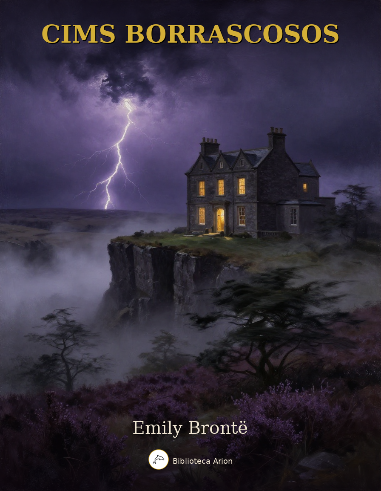

Cims Borrascosos
Wuthering Heights
Única novel·la d'Emily Brontë, publicada el 1847 sota el pseudònim Ellis Bell. Narra la passió destructiva entre Heathcliff i Catherine Earnshaw als erms de Yorkshire, abastant dues generacions. Obra mestra de la literatura victoriana, combina elements gòtics amb un realisme psicològic d'una intensitat sense precedents. Considerada una de les grans novel·les de la literatura universal.
Wuthering Heights
by Emily Brontë
CHAPTER I
1801—I have just returned from a visit to my landlord—the solitary neighbour that I shall be troubled with. This is certainly a beautiful country! In all England, I do not believe that I could have fixed on a situation so completely removed from the stir of society. A perfect misanthropist’s Heaven—and Mr. Heathcliff and I are such a suitable pair to divide the desolation between us. A capital fellow! He little imagined how my heart warmed towards him when I beheld his black eyes withdraw so suspiciously under their brows, as I rode up, and when his fingers sheltered themselves, with a jealous resolution, still further in his waistcoat, as I announced my name.
“Mr. Heathcliff?” I said.
A nod was the answer.
“Mr. Lockwood, your new tenant, sir. I do myself the honour of calling as soon as possible after my arrival, to express the hope that I have not inconvenienced you by my perseverance in soliciting the occupation of Thrushcross Grange: I heard yesterday you had had some thoughts—”
“Thrushcross Grange is my own, sir,” he interrupted, wincing. “I should not allow any one to inconvenience me, if I could hinder it—walk in!”
The “walk in” was uttered with closed teeth, and expressed the sentiment, “Go to the Deuce!” even the gate over which he leant manifested no sympathising movement to the words; and I think that circumstance determined me to accept the invitation: I felt interested in a man who seemed more exaggeratedly reserved than myself.
When he saw my horse’s breast fairly pushing the barrier, he did put out his hand to unchain it, and then sullenly preceded me up the causeway, calling, as we entered the court,—“Joseph, take Mr. Lockwood’s horse; and bring up some wine.”
“Here we have the whole establishment of domestics, I suppose,” was the reflection suggested by this compound order. “No wonder the grass grows up between the flags, and cattle are the only hedge-cutters.”
Joseph was an elderly, nay, an old man, very old, perhaps, though hale and sinewy. “The Lord help us!” he soliloquised in an undertone of peevish displeasure, while relieving me of my horse: looking, meantime, in my face so sourly that I charitably conjectured he must have need of divine aid to digest his dinner, and his pious ejaculation had no reference to my unexpected advent.
Wuthering Heights is the name of Mr. Heathcliff’s dwelling. “Wuthering” being a significant provincial adjective, descriptive of the atmospheric tumult to which its station is exposed in stormy weather. Pure, bracing ventilation they must have up there at all times, indeed: one may guess the power of the north wind, blowing over the edge, by the excessive slant of a few stunted firs at the end of the house; and by a range of gaunt thorns all stretching their limbs one way, as if craving alms of the sun. Happily, the architect had foresight to build it strong: the narrow windows are deeply set in the wall, and the corners defended with large jutting stones.
Before passing the threshold, I paused to admire a quantity of grotesque carving lavished over the front, and especially about the principal door; above which, among a wilderness of crumbling griffins and shameless little boys, I detected the date “1500,” and the name “Hareton Earnshaw.” I would have made a few comments, and requested a short history of the place from the surly owner; but his attitude at the door appeared to demand my speedy entrance, or complete departure, and I had no desire to aggravate his impatience previous to inspecting the penetralium.
One step brought us into the family sitting-room, without any introductory lobby or passage: they call it here “the house” pre-eminently. It includes kitchen and parlour, generally; but I believe at Wuthering Heights the kitchen is forced to retreat altogether into another quarter: at least I distinguished a chatter of tongues, and a clatter of culinary utensils, deep within; and I observed no signs of roasting, boiling, or baking, about the huge fireplace; nor any glitter of copper saucepans and tin cullenders on the walls. One end, indeed, reflected splendidly both light and heat from ranks of immense pewter dishes, interspersed with silver jugs and tankards, towering row after row, on a vast oak dresser, to the very roof. The latter had never been under-drawn: its entire anatomy lay bare to an inquiring eye, except where a frame of wood laden with oatcakes and clusters of legs of beef, mutton, and ham, concealed it. Above the chimney were sundry villainous old guns, and a couple of horse-pistols: and, by way of ornament, three gaudily painted canisters disposed along its ledge. The floor was of smooth, white stone; the chairs, high-backed, primitive structures, painted green: one or two heavy black ones lurking in the shade. In an arch under the dresser reposed a huge, liver-coloured bitch pointer, surrounded by a swarm of squealing puppies; and other dogs haunted other recesses.
The apartment and furniture would have been nothing extraordinary as belonging to a homely, northern farmer, with a stubborn countenance, and stalwart limbs set out to advantage in knee-breeches and gaiters. Such an individual seated in his arm-chair, his mug of ale frothing on the round table before him, is to be seen in any circuit of five or six miles among these hills, if you go at the right time after dinner. But Mr. Heathcliff forms a singular contrast to his abode and style of living. He is a dark-skinned gipsy in aspect, in dress and manners a gentleman: that is, as much a gentleman as many a country squire: rather slovenly, perhaps, yet not looking amiss with his negligence, because he has an erect and handsome figure; and rather morose. Possibly, some people might suspect him of a degree of under-bred pride; I have a sympathetic chord within that tells me it is nothing of the sort: I know, by instinct, his reserve springs from an aversion to showy displays of feeling—to manifestations of mutual kindliness. He’ll love and hate equally under cover, and esteem it a species of impertinence to be loved or hated again. No, I’m running on too fast: I bestow my own attributes over-liberally on him. Mr. Heathcliff may have entirely dissimilar reasons for keeping his hand out of the way when he meets a would-be acquaintance, to those which actuate me. Let me hope my constitution is almost peculiar: my dear mother used to say I should never have a comfortable home; and only last summer I proved myself perfectly unworthy of one.
While enjoying a month of fine weather at the sea-coast, I was thrown into the company of a most fascinating creature: a real goddess in my eyes, as long as she took no notice of me. I “never told my love” vocally; still, if looks have language, the merest idiot might have guessed I was over head and ears: she understood me at last, and looked a return—the sweetest of all imaginable looks. And what did I do? I confess it with shame—shrunk icily into myself, like a snail; at every glance retired colder and farther; till finally the poor innocent was led to doubt her own senses, and, overwhelmed with confusion at her supposed mistake, persuaded her mamma to decamp.
By this curious turn of disposition I have gained the reputation of deliberate heartlessness; how undeserved, I alone can appreciate.
I took a seat at the end of the hearthstone opposite that towards which my landlord advanced, and filled up an interval of silence by attempting to caress the canine mother, who had left her nursery, and was sneaking wolfishly to the back of my legs, her lip curled up, and her white teeth watering for a snatch. My caress provoked a long, guttural gnarl.
“You’d better let the dog alone,” growled Mr. Heathcliff in unison, checking fiercer demonstrations with a punch of his foot. “She’s not accustomed to be spoiled—not kept for a pet.” Then, striding to a side door, he shouted again, “Joseph!”
Joseph mumbled indistinctly in the depths of the cellar, but gave no intimation of ascending; so his master dived down to him, leaving me vis-à-vis the ruffianly bitch and a pair of grim shaggy sheep-dogs, who shared with her a jealous guardianship over all my movements. Not anxious to come in contact with their fangs, I sat still; but, imagining they would scarcely understand tacit insults, I unfortunately indulged in winking and making faces at the trio, and some turn of my physiognomy so irritated madam, that she suddenly broke into a fury and leapt on my knees. I flung her back, and hastened to interpose the table between us. This proceeding aroused the whole hive: half-a-dozen four-footed fiends, of various sizes and ages, issued from hidden dens to the common centre. I felt my heels and coat-laps peculiar subjects of assault; and parrying off the larger combatants as effectually as I could with the poker, I was constrained to demand, aloud, assistance from some of the household in re-establishing peace.
Mr. Heathcliff and his man climbed the cellar steps with vexatious phlegm: I don’t think they moved one second faster than usual, though the hearth was an absolute tempest of worrying and yelping. Happily, an inhabitant of the kitchen made more dispatch; a lusty dame, with tucked-up gown, bare arms, and fire-flushed cheeks, rushed into the midst of us flourishing a frying-pan: and used that weapon, and her tongue, to such purpose, that the storm subsided magically, and she only remained, heaving like a sea after a high wind, when her master entered on the scene.
“What the devil is the matter?” he asked, eyeing me in a manner that I could ill endure after this inhospitable treatment.
“What the devil, indeed!” I muttered. “The herd of possessed swine could have had no worse spirits in them than those animals of yours, sir. You might as well leave a stranger with a brood of tigers!”
“They won’t meddle with persons who touch nothing,” he remarked, putting the bottle before me, and restoring the displaced table. “The dogs do right to be vigilant. Take a glass of wine?”
“No, thank you.”
“Not bitten, are you?”
“If I had been, I would have set my signet on the biter.” Heathcliff’s countenance relaxed into a grin.
“Come, come,” he said, “you are flurried, Mr. Lockwood. Here, take a little wine. Guests are so exceedingly rare in this house that I and my dogs, I am willing to own, hardly know how to receive them. Your health, sir?”
I bowed and returned the pledge; beginning to perceive that it would be foolish to sit sulking for the misbehaviour of a pack of curs; besides, I felt loth to yield the fellow further amusement at my expense; since his humour took that turn. He—probably swayed by prudential consideration of the folly of offending a good tenant—relaxed a little in the laconic style of chipping off his pronouns and auxiliary verbs, and introduced what he supposed would be a subject of interest to me,—a discourse on the advantages and disadvantages of my present place of retirement. I found him very intelligent on the topics we touched; and before I went home, I was encouraged so far as to volunteer another visit to-morrow. He evidently wished no repetition of my intrusion. I shall go, notwithstanding. It is astonishing how sociable I feel myself compared with him.
CHAPTER II
Yesterday afternoon set in misty and cold. I had half a mind to spend it by my study fire, instead of wading through heath and mud to Wuthering Heights. On coming up from dinner, however, (N.B.—I dine between twelve and one o’clock; the housekeeper, a matronly lady, taken as a fixture along with the house, could not, or would not, comprehend my request that I might be served at five)—on mounting the stairs with this lazy intention, and stepping into the room, I saw a servant-girl on her knees surrounded by brushes and coal-scuttles, and raising an infernal dust as she extinguished the flames with heaps of cinders. This spectacle drove me back immediately; I took my hat, and, after a four-miles’ walk, arrived at Heathcliff’s garden-gate just in time to escape the first feathery flakes of a snow shower.
On that bleak hill top the earth was hard with a black frost, and the air made me shiver through every limb. Being unable to remove the chain, I jumped over, and, running up the flagged causeway bordered with straggling gooseberry-bushes, knocked vainly for admittance, till my knuckles tingled and the dogs howled.
“Wretched inmates!” I ejaculated, mentally, “you deserve perpetual isolation from your species for your churlish inhospitality. At least, I would not keep my doors barred in the day-time. I don’t care—I will get in!” So resolved, I grasped the latch and shook it vehemently. Vinegar-faced Joseph projected his head from a round window of the barn.
“What are ye for?” he shouted. “T’ maister’s down i’ t’ fowld. Go round by th’ end o’ t’ laith, if ye went to spake to him.”
“Is there nobody inside to open the door?” I hallooed, responsively.
“There’s nobbut t’ missis; and shoo’ll not oppen ’t an ye mak’ yer flaysome dins till neeght.”
“Why? Cannot you tell her whom I am, eh, Joseph?”
“Nor-ne me! I’ll hae no hend wi’t,” muttered the head, vanishing.
The snow began to drive thickly. I seized the handle to essay another trial; when a young man without coat, and shouldering a pitchfork, appeared in the yard behind. He hailed me to follow him, and, after marching through a wash-house, and a paved area containing a coal-shed, pump, and pigeon-cot, we at length arrived in the huge, warm, cheerful apartment where I was formerly received. It glowed delightfully in the radiance of an immense fire, compounded of coal, peat, and wood; and near the table, laid for a plentiful evening meal, I was pleased to observe the “missis,” an individual whose existence I had never previously suspected. I bowed and waited, thinking she would bid me take a seat. She looked at me, leaning back in her chair, and remained motionless and mute.
“Rough weather!” I remarked. “I’m afraid, Mrs. Heathcliff, the door must bear the consequence of your servants’ leisure attendance: I had hard work to make them hear me.”
She never opened her mouth. I stared—she stared also: at any rate, she kept her eyes on me in a cool, regardless manner, exceedingly embarrassing and disagreeable.
“Sit down,” said the young man, gruffly. “He’ll be in soon.”
I obeyed; and hemmed, and called the villain Juno, who deigned, at this second interview, to move the extreme tip of her tail, in token of owning my acquaintance.
“A beautiful animal!” I commenced again. “Do you intend parting with the little ones, madam?”
“They are not mine,” said the amiable hostess, more repellingly than Heathcliff himself could have replied.
“Ah, your favourites are among these?” I continued, turning to an obscure cushion full of something like cats.
“A strange choice of favourites!” she observed scornfully.
Unluckily, it was a heap of dead rabbits. I hemmed once more, and drew closer to the hearth, repeating my comment on the wildness of the evening.
“You should not have come out,” she said, rising and reaching from the chimney-piece two of the painted canisters.
Her position before was sheltered from the light; now, I had a distinct view of her whole figure and countenance. She was slender, and apparently scarcely past girlhood: an admirable form, and the most exquisite little face that I have ever had the pleasure of beholding; small features, very fair; flaxen ringlets, or rather golden, hanging loose on her delicate neck; and eyes, had they been agreeable in expression, that would have been irresistible: fortunately for my susceptible heart, the only sentiment they evinced hovered between scorn and a kind of desperation, singularly unnatural to be detected there. The canisters were almost out of her reach; I made a motion to aid her; she turned upon me as a miser might turn if any one attempted to assist him in counting his gold.
“I don’t want your help,” she snapped; “I can get them for myself.”
“I beg your pardon!” I hastened to reply.
“Were you asked to tea?” she demanded, tying an apron over her neat black frock, and standing with a spoonful of the leaf poised over the pot.
“I shall be glad to have a cup,” I answered.
“Were you asked?” she repeated.
“No,” I said, half smiling. “You are the proper person to ask me.”
She flung the tea back, spoon and all, and resumed her chair in a pet; her forehead corrugated, and her red under-lip pushed out, like a child’s ready to cry.
Meanwhile, the young man had slung on to his person a decidedly shabby upper garment, and, erecting himself before the blaze, looked down on me from the corner of his eyes, for all the world as if there were some mortal feud unavenged between us. I began to doubt whether he were a servant or not: his dress and speech were both rude, entirely devoid of the superiority observable in Mr. and Mrs. Heathcliff; his thick brown curls were rough and uncultivated, his whiskers encroached bearishly over his cheeks, and his hands were embrowned like those of a common labourer: still his bearing was free, almost haughty, and he showed none of a domestic’s assiduity in attending on the lady of the house. In the absence of clear proofs of his condition, I deemed it best to abstain from noticing his curious conduct; and, five minutes afterwards, the entrance of Heathcliff relieved me, in some measure, from my uncomfortable state.
“You see, sir, I am come, according to promise!” I exclaimed, assuming the cheerful; “and I fear I shall be weather-bound for half an hour, if you can afford me shelter during that space.”
“Half an hour?” he said, shaking the white flakes from his clothes; “I wonder you should select the thick of a snow-storm to ramble about in. Do you know that you run a risk of being lost in the marshes? People familiar with these moors often miss their road on such evenings; and I can tell you there is no chance of a change at present.”
“Perhaps I can get a guide among your lads, and he might stay at the Grange till morning—could you spare me one?”
“No, I could not.”
“Oh, indeed! Well, then, I must trust to my own sagacity.”
“Umph!”
“Are you going to mak’ the tea?” demanded he of the shabby coat, shifting his ferocious gaze from me to the young lady.
“Is he to have any?” she asked, appealing to Heathcliff.
“Get it ready, will you?” was the answer, uttered so savagely that I started. The tone in which the words were said revealed a genuine bad nature. I no longer felt inclined to call Heathcliff a capital fellow. When the preparations were finished, he invited me with—“Now, sir, bring forward your chair.” And we all, including the rustic youth, drew round the table: an austere silence prevailing while we discussed our meal.
I thought, if I had caused the cloud, it was my duty to make an effort to dispel it. They could not every day sit so grim and taciturn; and it was impossible, however ill-tempered they might be, that the universal scowl they wore was their every-day countenance.
“It is strange,” I began, in the interval of swallowing one cup of tea and receiving another—“it is strange how custom can mould our tastes and ideas: many could not imagine the existence of happiness in a life of such complete exile from the world as you spend, Mr. Heathcliff; yet, I’ll venture to say, that, surrounded by your family, and with your amiable lady as the presiding genius over your home and heart—”
“My amiable lady!” he interrupted, with an almost diabolical sneer on his face. “Where is she—my amiable lady?”
“Mrs. Heathcliff, your wife, I mean.”
“Well, yes—oh, you would intimate that her spirit has taken the post of ministering angel, and guards the fortunes of Wuthering Heights, even when her body is gone. Is that it?”
Perceiving myself in a blunder, I attempted to correct it. I might have seen there was too great a disparity between the ages of the parties to make it likely that they were man and wife. One was about forty: a period of mental vigour at which men seldom cherish the delusion of being married for love by girls: that dream is reserved for the solace of our declining years. The other did not look seventeen.
Then it flashed upon me—“The clown at my elbow, who is drinking his tea out of a basin and eating his bread with unwashed hands, may be her husband: Heathcliff junior, of course. Here is the consequence of being buried alive: she has thrown herself away upon that boor from sheer ignorance that better individuals existed! A sad pity—I must beware how I cause her to regret her choice.” The last reflection may seem conceited; it was not. My neighbour struck me as bordering on repulsive; I knew, through experience, that I was tolerably attractive.
“Mrs. Heathcliff is my daughter-in-law,” said Heathcliff, corroborating my surmise. He turned, as he spoke, a peculiar look in her direction: a look of hatred; unless he has a most perverse set of facial muscles that will not, like those of other people, interpret the language of his soul.
“Ah, certainly—I see now: you are the favoured possessor of the beneficent fairy,” I remarked, turning to my neighbour.
This was worse than before: the youth grew crimson, and clenched his fist, with every appearance of a meditated assault. But he seemed to recollect himself presently, and smothered the storm in a brutal curse, muttered on my behalf: which, however, I took care not to notice.
“Unhappy in your conjectures, sir,” observed my host; “we neither of us have the privilege of owning your good fairy; her mate is dead. I said she was my daughter-in-law: therefore, she must have married my son.”
“And this young man is—”
“Not my son, assuredly.”
Heathcliff smiled again, as if it were rather too bold a jest to attribute the paternity of that bear to him.
“My name is Hareton Earnshaw,” growled the other; “and I’d counsel you to respect it!”
“I’ve shown no disrespect,” was my reply, laughing internally at the dignity with which he announced himself.
He fixed his eye on me longer than I cared to return the stare, for fear I might be tempted either to box his ears or render my hilarity audible. I began to feel unmistakably out of place in that pleasant family circle. The dismal spiritual atmosphere overcame, and more than neutralised, the glowing physical comforts round me; and I resolved to be cautious how I ventured under those rafters a third time.
The business of eating being concluded, and no one uttering a word of sociable conversation, I approached a window to examine the weather. A sorrowful sight I saw: dark night coming down prematurely, and sky and hills mingled in one bitter whirl of wind and suffocating snow.
“I don’t think it possible for me to get home now without a guide,” I could not help exclaiming. “The roads will be buried already; and, if they were bare, I could scarcely distinguish a foot in advance.”
“Hareton, drive those dozen sheep into the barn porch. They’ll be covered if left in the fold all night: and put a plank before them,” said Heathcliff.
“How must I do?” I continued, with rising irritation.
There was no reply to my question; and on looking round I saw only Joseph bringing in a pail of porridge for the dogs, and Mrs. Heathcliff leaning over the fire, diverting herself with burning a bundle of matches which had fallen from the chimney-piece as she restored the tea-canister to its place. The former, when he had deposited his burden, took a critical survey of the room, and in cracked tones grated out—“Aw wonder how yah can faishion to stand thear i’ idleness un war, when all on ’ems goan out! Bud yah’re a nowt, and it’s no use talking—yah’ll niver mend o’yer ill ways, but goa raight to t’ divil, like yer mother afore ye!”
I imagined, for a moment, that this piece of eloquence was addressed to me; and, sufficiently enraged, stepped towards the aged rascal with an intention of kicking him out of the door. Mrs. Heathcliff, however, checked me by her answer.
“You scandalous old hypocrite!” she replied. “Are you not afraid of being carried away bodily, whenever you mention the devil’s name? I warn you to refrain from provoking me, or I’ll ask your abduction as a special favour! Stop! look here, Joseph,” she continued, taking a long, dark book from a shelf; “I’ll show you how far I’ve progressed in the Black Art: I shall soon be competent to make a clear house of it. The red cow didn’t die by chance; and your rheumatism can hardly be reckoned among providential visitations!”
“Oh, wicked, wicked!” gasped the elder; “may the Lord deliver us from evil!”
“No, reprobate! you are a castaway—be off, or I’ll hurt you seriously! I’ll have you all modelled in wax and clay! and the first who passes the limits I fix shall—I’ll not say what he shall be done to—but, you’ll see! Go, I’m looking at you!”
The little witch put a mock malignity into her beautiful eyes, and Joseph, trembling with sincere horror, hurried out, praying, and ejaculating “wicked” as he went. I thought her conduct must be prompted by a species of dreary fun; and, now that we were alone, I endeavoured to interest her in my distress.
“Mrs. Heathcliff,” I said earnestly, “you must excuse me for troubling you. I presume, because, with that face, I’m sure you cannot help being good-hearted. Do point out some landmarks by which I may know my way home: I have no more idea how to get there than you would have how to get to London!”
“Take the road you came,” she answered, ensconcing herself in a chair, with a candle, and the long book open before her. “It is brief advice, but as sound as I can give.”
“Then, if you hear of me being discovered dead in a bog or a pit full of snow, your conscience won’t whisper that it is partly your fault?”
“How so? I cannot escort you. They wouldn’t let me go to the end of the garden wall.”
“You! I should be sorry to ask you to cross the threshold, for my convenience, on such a night,” I cried. “I want you to tell me my way, not to show it: or else to persuade Mr. Heathcliff to give me a guide.”
“Who? There is himself, Earnshaw, Zillah, Joseph and I. Which would you have?”
“Are there no boys at the farm?”
“No; those are all.”
“Then, it follows that I am compelled to stay.”
“That you may settle with your host. I have nothing to do with it.”
“I hope it will be a lesson to you to make no more rash journeys on these hills,” cried Heathcliff’s stern voice from the kitchen entrance. “As to staying here, I don’t keep accommodations for visitors: you must share a bed with Hareton or Joseph, if you do.”
“I can sleep on a chair in this room,” I replied.
“No, no! A stranger is a stranger, be he rich or poor: it will not suit me to permit any one the range of the place while I am off guard!” said the unmannerly wretch.
With this insult my patience was at an end. I uttered an expression of disgust, and pushed past him into the yard, running against Earnshaw in my haste. It was so dark that I could not see the means of exit; and, as I wandered round, I heard another specimen of their civil behaviour amongst each other. At first the young man appeared about to befriend me.
“I’ll go with him as far as the park,” he said.
“You’ll go with him to hell!” exclaimed his master, or whatever relation he bore. “And who is to look after the horses, eh?”
“A man’s life is of more consequence than one evening’s neglect of the horses: somebody must go,” murmured Mrs. Heathcliff, more kindly than I expected.
“Not at your command!” retorted Hareton. “If you set store on him, you’d better be quiet.”
“Then I hope his ghost will haunt you; and I hope Mr. Heathcliff will never get another tenant till the Grange is a ruin,” she answered, sharply.
“Hearken, hearken, shoo’s cursing on ’em!” muttered Joseph, towards whom I had been steering.
He sat within earshot, milking the cows by the light of a lantern, which I seized unceremoniously, and, calling out that I would send it back on the morrow, rushed to the nearest postern.
“Maister, maister, he’s staling t’ lanthern!” shouted the ancient, pursuing my retreat. “Hey, Gnasher! Hey, dog! Hey Wolf, holld him, holld him!”
On opening the little door, two hairy monsters flew at my throat, bearing me down, and extinguishing the light; while a mingled guffaw from Heathcliff and Hareton put the copestone on my rage and humiliation. Fortunately, the beasts seemed more bent on stretching their paws, and yawning, and flourishing their tails, than devouring me alive; but they would suffer no resurrection, and I was forced to lie till their malignant masters pleased to deliver me: then, hatless and trembling with wrath, I ordered the miscreants to let me out—on their peril to keep me one minute longer—with several incoherent threats of retaliation that, in their indefinite depth of virulency, smacked of King Lear.
The vehemence of my agitation brought on a copious bleeding at the nose, and still Heathcliff laughed, and still I scolded. I don’t know what would have concluded the scene, had there not been one person at hand rather more rational than myself, and more benevolent than my entertainer. This was Zillah, the stout housewife; who at length issued forth to inquire into the nature of the uproar. She thought that some of them had been laying violent hands on me; and, not daring to attack her master, she turned her vocal artillery against the younger scoundrel.
“Well, Mr. Earnshaw,” she cried, “I wonder what you’ll have agait next? Are we going to murder folk on our very door-stones? I see this house will never do for me—look at t’ poor lad, he’s fair choking! Wisht, wisht; you mun’n’t go on so. Come in, and I’ll cure that: there now, hold ye still.”
With these words she suddenly splashed a pint of icy water down my neck, and pulled me into the kitchen. Mr. Heathcliff followed, his accidental merriment expiring quickly in his habitual moroseness.
I was sick exceedingly, and dizzy, and faint; and thus compelled perforce to accept lodgings under his roof. He told Zillah to give me a glass of brandy, and then passed on to the inner room; while she condoled with me on my sorry predicament, and having obeyed his orders, whereby I was somewhat revived, ushered me to bed.
CHAPTER III
While leading the way upstairs, she recommended that I should hide the candle, and not make a noise; for her master had an odd notion about the chamber she would put me in, and never let anybody lodge there willingly. I asked the reason. She did not know, she answered: she had only lived there a year or two; and they had so many queer goings on, she could not begin to be curious.
Too stupefied to be curious myself, I fastened my door and glanced round for the bed. The whole furniture consisted of a chair, a clothes-press, and a large oak case, with squares cut out near the top resembling coach windows. Having approached this structure, I looked inside, and perceived it to be a singular sort of old-fashioned couch, very conveniently designed to obviate the necessity for every member of the family having a room to himself. In fact, it formed a little closet, and the ledge of a window, which it enclosed, served as a table.
I slid back the panelled sides, got in with my light, pulled them together again, and felt secure against the vigilance of Heathcliff, and every one else.
The ledge, where I placed my candle, had a few mildewed books piled up in one corner; and it was covered with writing scratched on the paint. This writing, however, was nothing but a name repeated in all kinds of characters, large and small—Catherine Earnshaw, here and there varied to Catherine Heathcliff, and then again to Catherine Linton.
In vapid listlessness I leant my head against the window, and continued spelling over Catherine Earnshaw—Heathcliff—Linton, till my eyes closed; but they had not rested five minutes when a glare of white letters started from the dark, as vivid as spectres—the air swarmed with Catherines; and rousing myself to dispel the obtrusive name, I discovered my candle-wick reclining on one of the antique volumes, and perfuming the place with an odour of roasted calf-skin.
I snuffed it off, and, very ill at ease under the influence of cold and lingering nausea, sat up and spread open the injured tome on my knee. It was a Testament, in lean type, and smelling dreadfully musty: a fly-leaf bore the inscription—“Catherine Earnshaw, her book,” and a date some quarter of a century back.
I shut it, and took up another and another, till I had examined all. Catherine’s library was select, and its state of dilapidation proved it to have been well used, though not altogether for a legitimate purpose: scarcely one chapter had escaped a pen-and-ink commentary—at least the appearance of one—covering every morsel of blank that the printer had left. Some were detached sentences; other parts took the form of a regular diary, scrawled in an unformed, childish hand. At the top of an extra page (quite a treasure, probably, when first lighted on) I was greatly amused to behold an excellent caricature of my friend Joseph,—rudely, yet powerfully sketched. An immediate interest kindled within me for the unknown Catherine, and I began forthwith to decipher her faded hieroglyphics.
“An awful Sunday,” commenced the paragraph beneath. “I wish my father were back again. Hindley is a detestable substitute—his conduct to Heathcliff is atrocious—H. and I are going to rebel—we took our initiatory step this evening.
“All day had been flooding with rain; we could not go to church, so Joseph must needs get up a congregation in the garret; and, while Hindley and his wife basked downstairs before a comfortable fire—doing anything but reading their Bibles, I’ll answer for it—Heathcliff, myself, and the unhappy ploughboy were commanded to take our prayer-books, and mount: we were ranged in a row, on a sack of corn, groaning and shivering, and hoping that Joseph would shiver too, so that he might give us a short homily for his own sake. A vain idea! The service lasted precisely three hours; and yet my brother had the face to exclaim, when he saw us descending, ‘What, done already?’ On Sunday evenings we used to be permitted to play, if we did not make much noise; now a mere titter is sufficient to send us into corners.
“‘You forget you have a master here,’ says the tyrant. ‘I’ll demolish the first who puts me out of temper! I insist on perfect sobriety and silence. Oh, boy! was that you? Frances darling, pull his hair as you go by: I heard him snap his fingers.’ Frances pulled his hair heartily, and then went and seated herself on her husband’s knee, and there they were, like two babies, kissing and talking nonsense by the hour—foolish palaver that we should be ashamed of. We made ourselves as snug as our means allowed in the arch of the dresser. I had just fastened our pinafores together, and hung them up for a curtain, when in comes Joseph, on an errand from the stables. He tears down my handiwork, boxes my ears, and croaks:
“‘T’ maister nobbut just buried, and Sabbath not o’ered, und t’ sound o’ t’ gospel still i’ yer lugs, and ye darr be laiking! Shame on ye! sit ye down, ill childer! there’s good books eneugh if ye’ll read ’em: sit ye down, and think o’ yer sowls!’
“Saying this, he compelled us so to square our positions that we might receive from the far-off fire a dull ray to show us the text of the lumber he thrust upon us. I could not bear the employment. I took my dingy volume by the scroop, and hurled it into the dog-kennel, vowing I hated a good book. Heathcliff kicked his to the same place. Then there was a hubbub!
“‘Maister Hindley!’ shouted our chaplain. ‘Maister, coom hither! Miss Cathy’s riven th’ back off “Th’ Helmet o’ Salvation,” un’ Heathcliff’s pawsed his fit into t’ first part o’ “T’ Brooad Way to Destruction!” It’s fair flaysome that ye let ’em go on this gait. Ech! th’ owd man wad ha’ laced ’em properly—but he’s goan!’
“Hindley hurried up from his paradise on the hearth, and seizing one of us by the collar, and the other by the arm, hurled both into the back-kitchen; where, Joseph asseverated, ‘owd Nick’ would fetch us as sure as we were living: and, so comforted, we each sought a separate nook to await his advent. I reached this book, and a pot of ink from a shelf, and pushed the house-door ajar to give me light, and I have got the time on with writing for twenty minutes; but my companion is impatient, and proposes that we should appropriate the dairywoman’s cloak, and have a scamper on the moors, under its shelter. A pleasant suggestion—and then, if the surly old man come in, he may believe his prophecy verified—we cannot be damper, or colder, in the rain than we are here.”
I suppose Catherine fulfilled her project, for the next sentence took up another subject: she waxed lachrymose.
“How little did I dream that Hindley would ever make me cry so!” she wrote. “My head aches, till I cannot keep it on the pillow; and still I can’t give over. Poor Heathcliff! Hindley calls him a vagabond, and won’t let him sit with us, nor eat with us any more; and, he says, he and I must not play together, and threatens to turn him out of the house if we break his orders. He has been blaming our father (how dared he?) for treating H. too liberally; and swears he will reduce him to his right place—”
I began to nod drowsily over the dim page: my eye wandered from manuscript to print. I saw a red ornamented title—“Seventy Times Seven, and the First of the Seventy-First. A Pious Discourse delivered by the Reverend Jabez Branderham, in the Chapel of Gimmerden Sough.” And while I was, half-consciously, worrying my brain to guess what Jabez Branderham would make of his subject, I sank back in bed, and fell asleep. Alas, for the effects of bad tea and bad temper! What else could it be that made me pass such a terrible night? I don’t remember another that I can at all compare with it since I was capable of suffering.
I began to dream, almost before I ceased to be sensible of my locality. I thought it was morning; and I had set out on my way home, with Joseph for a guide. The snow lay yards deep in our road; and, as we floundered on, my companion wearied me with constant reproaches that I had not brought a pilgrim’s staff: telling me that I could never get into the house without one, and boastfully flourishing a heavy-headed cudgel, which I understood to be so denominated. For a moment I considered it absurd that I should need such a weapon to gain admittance into my own residence. Then a new idea flashed across me. I was not going there: we were journeying to hear the famous Jabez Branderham preach, from the text—“Seventy Times Seven;” and either Joseph, the preacher, or I had committed the “First of the Seventy-First,” and were to be publicly exposed and excommunicated.
We came to the chapel. I have passed it really in my walks, twice or thrice; it lies in a hollow, between two hills: an elevated hollow, near a swamp, whose peaty moisture is said to answer all the purposes of embalming on the few corpses deposited there. The roof has been kept whole hitherto; but as the clergyman’s stipend is only twenty pounds per annum, and a house with two rooms, threatening speedily to determine into one, no clergyman will undertake the duties of pastor: especially as it is currently reported that his flock would rather let him starve than increase the living by one penny from their own pockets. However, in my dream, Jabez had a full and attentive congregation; and he preached—good God! what a sermon; divided into four hundred and ninety parts, each fully equal to an ordinary address from the pulpit, and each discussing a separate sin! Where he searched for them, I cannot tell. He had his private manner of interpreting the phrase, and it seemed necessary the brother should sin different sins on every occasion. They were of the most curious character: odd transgressions that I never imagined previously.
Oh, how weary I grew. How I writhed, and yawned, and nodded, and revived! How I pinched and pricked myself, and rubbed my eyes, and stood up, and sat down again, and nudged Joseph to inform me if he would ever have done. I was condemned to hear all out: finally, he reached the “First of the Seventy-First.” At that crisis, a sudden inspiration descended on me; I was moved to rise and denounce Jabez Branderham as the sinner of the sin that no Christian need pardon.
“Sir,” I exclaimed, “sitting here within these four walls, at one stretch, I have endured and forgiven the four hundred and ninety heads of your discourse. Seventy times seven times have I plucked up my hat and been about to depart—Seventy times seven times have you preposterously forced me to resume my seat. The four hundred and ninety-first is too much. Fellow-martyrs, have at him! Drag him down, and crush him to atoms, that the place which knows him may know him no more!”
“Thou art the Man!” cried Jabez, after a solemn pause, leaning over his cushion. “Seventy times seven times didst thou gapingly contort thy visage—seventy times seven did I take counsel with my soul—Lo, this is human weakness: this also may be absolved! The First of the Seventy-First is come. Brethren, execute upon him the judgment written. Such honour have all His saints!”
With that concluding word, the whole assembly, exalting their pilgrim’s staves, rushed round me in a body; and I, having no weapon to raise in self-defence, commenced grappling with Joseph, my nearest and most ferocious assailant, for his. In the confluence of the multitude, several clubs crossed; blows, aimed at me, fell on other sconces. Presently the whole chapel resounded with rappings and counter rappings: every man’s hand was against his neighbour; and Branderham, unwilling to remain idle, poured forth his zeal in a shower of loud taps on the boards of the pulpit, which responded so smartly that, at last, to my unspeakable relief, they woke me. And what was it that had suggested the tremendous tumult? What had played Jabez’s part in the row? Merely the branch of a fir-tree that touched my lattice as the blast wailed by, and rattled its dry cones against the panes! I listened doubtingly an instant; detected the disturber, then turned and dozed, and dreamt again: if possible, still more disagreeably than before.
This time, I remembered I was lying in the oak closet, and I heard distinctly the gusty wind, and the driving of the snow; I heard, also, the fir bough repeat its teasing sound, and ascribed it to the right cause: but it annoyed me so much, that I resolved to silence it, if possible; and, I thought, I rose and endeavoured to unhasp the casement. The hook was soldered into the staple: a circumstance observed by me when awake, but forgotten. “I must stop it, nevertheless!” I muttered, knocking my knuckles through the glass, and stretching an arm out to seize the importunate branch; instead of which, my fingers closed on the fingers of a little, ice-cold hand!
The intense horror of nightmare came over me: I tried to draw back my arm, but the hand clung to it, and a most melancholy voice sobbed,
“Let me in—let me in!”
“Who are you?” I asked, struggling, meanwhile, to disengage myself.
“Catherine Linton,” it replied, shiveringly (why did I think of Linton? I had read Earnshaw twenty times for Linton)—“I’m come home: I’d lost my way on the moor!”
As it spoke, I discerned, obscurely, a child’s face looking through the window. Terror made me cruel; and, finding it useless to attempt shaking the creature off, I pulled its wrist on to the broken pane, and rubbed it to and fro till the blood ran down and soaked the bedclothes: still it wailed, “Let me in!” and maintained its tenacious gripe, almost maddening me with fear.
“How can I!” I said at length. “Let me go, if you want me to let you in!”
The fingers relaxed, I snatched mine through the hole, hurriedly piled the books up in a pyramid against it, and stopped my ears to exclude the lamentable prayer.
I seemed to keep them closed above a quarter of an hour; yet, the instant I listened again, there was the doleful cry moaning on!
“Begone!” I shouted. “I’ll never let you in, not if you beg for twenty years.”
“It is twenty years,” mourned the voice: “twenty years. I’ve been a waif for twenty years!”
Thereat began a feeble scratching outside, and the pile of books moved as if thrust forward.
I tried to jump up; but could not stir a limb; and so yelled aloud, in a frenzy of fright.
To my confusion, I discovered the yell was not ideal: hasty footsteps approached my chamber door; somebody pushed it open, with a vigorous hand, and a light glimmered through the squares at the top of the bed. I sat shuddering, yet, and wiping the perspiration from my forehead: the intruder appeared to hesitate, and muttered to himself.
At last, he said, in a half-whisper, plainly not expecting an answer,
“Is any one here?”
I considered it best to confess my presence; for I knew Heathcliff’s accents, and feared he might search further, if I kept quiet.
With this intention, I turned and opened the panels. I shall not soon forget the effect my action produced.
Heathcliff stood near the entrance, in his shirt and trousers; with a candle dripping over his fingers, and his face as white as the wall behind him. The first creak of the oak startled him like an electric shock: the light leaped from his hold to a distance of some feet, and his agitation was so extreme, that he could hardly pick it up.
“It is only your guest, sir,” I called out, desirous to spare him the humiliation of exposing his cowardice further. “I had the misfortune to scream in my sleep, owing to a frightful nightmare. I’m sorry I disturbed you.”
“Oh, God confound you, Mr. Lockwood! I wish you were at the—” commenced my host, setting the candle on a chair, because he found it impossible to hold it steady. “And who showed you up into this room?” he continued, crushing his nails into his palms, and grinding his teeth to subdue the maxillary convulsions. “Who was it? I’ve a good mind to turn them out of the house this moment!”
“It was your servant Zillah,” I replied, flinging myself on to the floor, and rapidly resuming my garments. “I should not care if you did, Mr. Heathcliff; she richly deserves it. I suppose that she wanted to get another proof that the place was haunted, at my expense. Well, it is—swarming with ghosts and goblins! You have reason in shutting it up, I assure you. No one will thank you for a doze in such a den!”
“What do you mean?” asked Heathcliff, “and what are you doing? Lie down and finish out the night, since you are here; but, for Heaven’s sake! don’t repeat that horrid noise: nothing could excuse it, unless you were having your throat cut!”
“If the little fiend had got in at the window, she probably would have strangled me!” I returned. “I’m not going to endure the persecutions of your hospitable ancestors again. Was not the Reverend Jabez Branderham akin to you on the mother’s side? And that minx, Catherine Linton, or Earnshaw, or however she was called—she must have been a changeling—wicked little soul! She told me she had been walking the earth these twenty years: a just punishment for her mortal transgressions, I’ve no doubt!”
Scarcely were these words uttered when I recollected the association of Heathcliff’s with Catherine’s name in the book, which had completely slipped from my memory, till thus awakened. I blushed at my inconsideration: but, without showing further consciousness of the offence, I hastened to add—“The truth is, sir, I passed the first part of the night in—” Here I stopped afresh—I was about to say “perusing those old volumes,” then it would have revealed my knowledge of their written, as well as their printed, contents; so, correcting myself, I went on—“in spelling over the name scratched on that window-ledge. A monotonous occupation, calculated to set me asleep, like counting, or—”
“What can you mean by talking in this way to me!” thundered Heathcliff with savage vehemence. “How—how dare you, under my roof?—God! he’s mad to speak so!” And he struck his forehead with rage.
I did not know whether to resent this language or pursue my explanation; but he seemed so powerfully affected that I took pity and proceeded with my dreams; affirming I had never heard the appellation of “Catherine Linton” before, but reading it often over produced an impression which personified itself when I had no longer my imagination under control. Heathcliff gradually fell back into the shelter of the bed, as I spoke; finally sitting down almost concealed behind it. I guessed, however, by his irregular and intercepted breathing, that he struggled to vanquish an excess of violent emotion. Not liking to show him that I had heard the conflict, I continued my toilette rather noisily, looked at my watch, and soliloquised on the length of the night: “Not three o’clock yet! I could have taken oath it had been six. Time stagnates here: we must surely have retired to rest at eight!”
“Always at nine in winter, and rise at four,” said my host, suppressing a groan: and, as I fancied, by the motion of his arm’s shadow, dashing a tear from his eyes. “Mr. Lockwood,” he added, “you may go into my room: you’ll only be in the way, coming downstairs so early: and your childish outcry has sent sleep to the devil for me.”
“And for me, too,” I replied. “I’ll walk in the yard till daylight, and then I’ll be off; and you need not dread a repetition of my intrusion. I’m now quite cured of seeking pleasure in society, be it country or town. A sensible man ought to find sufficient company in himself.”
“Delightful company!” muttered Heathcliff. “Take the candle, and go where you please. I shall join you directly. Keep out of the yard, though, the dogs are unchained; and the house—Juno mounts sentinel there, and—nay, you can only ramble about the steps and passages. But, away with you! I’ll come in two minutes!”
I obeyed, so far as to quit the chamber; when, ignorant where the narrow lobbies led, I stood still, and was witness, involuntarily, to a piece of superstition on the part of my landlord which belied, oddly, his apparent sense. He got on to the bed, and wrenched open the lattice, bursting, as he pulled at it, into an uncontrollable passion of tears. “Come in! come in!” he sobbed. “Cathy, do come. Oh, do—once more! Oh! my heart’s darling! hear me this time, Catherine, at last!” The spectre showed a spectre’s ordinary caprice: it gave no sign of being; but the snow and wind whirled wildly through, even reaching my station, and blowing out the light.
There was such anguish in the gush of grief that accompanied this raving, that my compassion made me overlook its folly, and I drew off, half angry to have listened at all, and vexed at having related my ridiculous nightmare, since it produced that agony; though why was beyond my comprehension. I descended cautiously to the lower regions, and landed in the back-kitchen, where a gleam of fire, raked compactly together, enabled me to rekindle my candle. Nothing was stirring except a brindled, grey cat, which crept from the ashes, and saluted me with a querulous mew.
Two benches, shaped in sections of a circle, nearly enclosed the hearth; on one of these I stretched myself, and Grimalkin mounted the other. We were both of us nodding ere any one invaded our retreat, and then it was Joseph, shuffling down a wooden ladder that vanished in the roof, through a trap: the ascent to his garret, I suppose. He cast a sinister look at the little flame which I had enticed to play between the ribs, swept the cat from its elevation, and bestowing himself in the vacancy, commenced the operation of stuffing a three-inch pipe with tobacco. My presence in his sanctum was evidently esteemed a piece of impudence too shameful for remark: he silently applied the tube to his lips, folded his arms, and puffed away. I let him enjoy the luxury unannoyed; and after sucking out his last wreath, and heaving a profound sigh, he got up, and departed as solemnly as he came.
A more elastic footstep entered next; and now I opened my mouth for a “good-morning,” but closed it again, the salutation unachieved; for Hareton Earnshaw was performing his orison sotto voce, in a series of curses directed against every object he touched, while he rummaged a corner for a spade or shovel to dig through the drifts. He glanced over the back of the bench, dilating his nostrils, and thought as little of exchanging civilities with me as with my companion the cat. I guessed, by his preparations, that egress was allowed, and, leaving my hard couch, made a movement to follow him. He noticed this, and thrust at an inner door with the end of his spade, intimating by an inarticulate sound that there was the place where I must go, if I changed my locality.
It opened into the house, where the females were already astir; Zillah urging flakes of flame up the chimney with a colossal bellows; and Mrs. Heathcliff, kneeling on the hearth, reading a book by the aid of the blaze. She held her hand interposed between the furnace-heat and her eyes, and seemed absorbed in her occupation; desisting from it only to chide the servant for covering her with sparks, or to push away a dog, now and then, that snoozled its nose overforwardly into her face. I was surprised to see Heathcliff there also. He stood by the fire, his back towards me, just finishing a stormy scene with poor Zillah; who ever and anon interrupted her labour to pluck up the corner of her apron, and heave an indignant groan.
“And you, you worthless—” he broke out as I entered, turning to his daughter-in-law, and employing an epithet as harmless as duck, or sheep, but generally represented by a dash—. “There you are, at your idle tricks again! The rest of them do earn their bread—you live on my charity! Put your trash away, and find something to do. You shall pay me for the plague of having you eternally in my sight—do you hear, damnable jade?”
“I’ll put my trash away, because you can make me if I refuse,” answered the young lady, closing her book, and throwing it on a chair. “But I’ll not do anything, though you should swear your tongue out, except what I please!”
Heathcliff lifted his hand, and the speaker sprang to a safer distance, obviously acquainted with its weight. Having no desire to be entertained by a cat-and-dog combat, I stepped forward briskly, as if eager to partake the warmth of the hearth, and innocent of any knowledge of the interrupted dispute. Each had enough decorum to suspend further hostilities: Heathcliff placed his fists, out of temptation, in his pockets; Mrs. Heathcliff curled her lip, and walked to a seat far off, where she kept her word by playing the part of a statue during the remainder of my stay. That was not long. I declined joining their breakfast, and, at the first gleam of dawn, took an opportunity of escaping into the free air, now clear, and still, and cold as impalpable ice.
My landlord halloed for me to stop ere I reached the bottom of the garden, and offered to accompany me across the moor. It was well he did, for the whole hill-back was one billowy, white ocean; the swells and falls not indicating corresponding rises and depressions in the ground: many pits, at least, were filled to a level; and entire ranges of mounds, the refuse of the quarries, blotted from the chart which my yesterday’s walk left pictured in my mind. I had remarked on one side of the road, at intervals of six or seven yards, a line of upright stones, continued through the whole length of the barren: these were erected and daubed with lime on purpose to serve as guides in the dark, and also when a fall, like the present, confounded the deep swamps on either hand with the firmer path: but, excepting a dirty dot pointing up here and there, all traces of their existence had vanished: and my companion found it necessary to warn me frequently to steer to the right or left, when I imagined I was following, correctly, the windings of the road.
We exchanged little conversation, and he halted at the entrance of Thrushcross Park, saying, I could make no error there. Our adieux were limited to a hasty bow, and then I pushed forward, trusting to my own resources; for the porter’s lodge is untenanted as yet. The distance from the gate to the Grange is two miles; I believe I managed to make it four, what with losing myself among the trees, and sinking up to the neck in snow: a predicament which only those who have experienced it can appreciate. At any rate, whatever were my wanderings, the clock chimed twelve as I entered the house; and that gave exactly an hour for every mile of the usual way from Wuthering Heights.
My human fixture and her satellites rushed to welcome me; exclaiming, tumultuously, they had completely given me up: everybody conjectured that I perished last night; and they were wondering how they must set about the search for my remains. I bid them be quiet, now that they saw me returned, and, benumbed to my very heart, I dragged upstairs; whence, after putting on dry clothes, and pacing to and fro thirty or forty minutes, to restore the animal heat, I adjourned to my study, feeble as a kitten: almost too much so to enjoy the cheerful fire and smoking coffee which the servant had prepared for my refreshment.
CHAPTER IV
What vain weather-cocks we are! I, who had determined to hold myself independent of all social intercourse, and thanked my stars that, at length, I had lighted on a spot where it was next to impracticable—I, weak wretch, after maintaining till dusk a struggle with low spirits and solitude, was finally compelled to strike my colours; and under pretence of gaining information concerning the necessities of my establishment, I desired Mrs. Dean, when she brought in supper, to sit down while I ate it; hoping sincerely she would prove a regular gossip, and either rouse me to animation or lull me to sleep by her talk.
“You have lived here a considerable time,” I commenced; “did you not say sixteen years?”
“Eighteen, sir: I came when the mistress was married, to wait on her; after she died, the master retained me for his housekeeper.”
“Indeed.”
There ensued a pause. She was not a gossip, I feared; unless about her own affairs, and those could hardly interest me. However, having studied for an interval, with a fist on either knee, and a cloud of meditation over her ruddy countenance, she ejaculated—“Ah, times are greatly changed since then!”
“Yes,” I remarked, “you’ve seen a good many alterations, I suppose?”
“I have: and troubles too,” she said.
“Oh, I’ll turn the talk on my landlord’s family!” I thought to myself. “A good subject to start! And that pretty girl-widow, I should like to know her history: whether she be a native of the country, or, as is more probable, an exotic that the surly indigenae will not recognise for kin.” With this intention I asked Mrs. Dean why Heathcliff let Thrushcross Grange, and preferred living in a situation and residence so much inferior. “Is he not rich enough to keep the estate in good order?” I inquired.
“Rich, sir!” she returned. “He has nobody knows what money, and every year it increases. Yes, yes, he’s rich enough to live in a finer house than this: but he’s very near—close-handed; and, if he had meant to flit to Thrushcross Grange, as soon as he heard of a good tenant he could not have borne to miss the chance of getting a few hundreds more. It is strange people should be so greedy, when they are alone in the world!”
“He had a son, it seems?”
“Yes, he had one—he is dead.”
“And that young lady, Mrs. Heathcliff, is his widow?”
“Yes.”
“Where did she come from originally?”
“Why, sir, she is my late master’s daughter: Catherine Linton was her maiden name. I nursed her, poor thing! I did wish Mr. Heathcliff would remove here, and then we might have been together again.”
“What! Catherine Linton?” I exclaimed, astonished. But a minute’s reflection convinced me it was not my ghostly Catherine. “Then,” I continued, “my predecessor’s name was Linton?”
“It was.”
“And who is that Earnshaw: Hareton Earnshaw, who lives with Mr. Heathcliff? Are they relations?”
“No; he is the late Mrs. Linton’s nephew.”
“The young lady’s cousin, then?”
“Yes; and her husband was her cousin also: one on the mother’s, the other on the father’s side: Heathcliff married Mr. Linton’s sister.”
“I see the house at Wuthering Heights has ‘Earnshaw’ carved over the front door. Are they an old family?”
“Very old, sir; and Hareton is the last of them, as our Miss Cathy is of us—I mean, of the Lintons. Have you been to Wuthering Heights? I beg pardon for asking; but I should like to hear how she is!”
“Mrs. Heathcliff? she looked very well, and very handsome; yet, I think, not very happy.”
“Oh dear, I don’t wonder! And how did you like the master?”
“A rough fellow, rather, Mrs. Dean. Is not that his character?”
“Rough as a saw-edge, and hard as whinstone! The less you meddle with him the better.”
“He must have had some ups and downs in life to make him such a churl. Do you know anything of his history?”
“It’s a cuckoo’s, sir—I know all about it: except where he was born, and who were his parents, and how he got his money at first. And Hareton has been cast out like an unfledged dunnock! The unfortunate lad is the only one in all this parish that does not guess how he has been cheated.”
“Well, Mrs. Dean, it will be a charitable deed to tell me something of my neighbours: I feel I shall not rest if I go to bed; so be good enough to sit and chat an hour.”
“Oh, certainly, sir! I’ll just fetch a little sewing, and then I’ll sit as long as you please. But you’ve caught cold: I saw you shivering, and you must have some gruel to drive it out.”
The worthy woman bustled off, and I crouched nearer the fire; my head felt hot, and the rest of me chill: moreover, I was excited, almost to a pitch of foolishness, through my nerves and brain. This caused me to feel, not uncomfortable, but rather fearful (as I am still) of serious effects from the incidents of to-day and yesterday. She returned presently, bringing a smoking basin and a basket of work; and, having placed the former on the hob, drew in her seat, evidently pleased to find me so companionable.
Before I came to live here, she commenced—waiting no farther invitation to her story—I was almost always at Wuthering Heights; because my mother had nursed Mr. Hindley Earnshaw, that was Hareton’s father, and I got used to playing with the children: I ran errands too, and helped to make hay, and hung about the farm ready for anything that anybody would set me to. One fine summer morning—it was the beginning of harvest, I remember—Mr. Earnshaw, the old master, came downstairs, dressed for a journey; and, after he had told Joseph what was to be done during the day, he turned to Hindley, and Cathy, and me—for I sat eating my porridge with them—and he said, speaking to his son, “Now, my bonny man, I’m going to Liverpool to-day, what shall I bring you? You may choose what you like: only let it be little, for I shall walk there and back: sixty miles each way, that is a long spell!” Hindley named a fiddle, and then he asked Miss Cathy; she was hardly six years old, but she could ride any horse in the stable, and she chose a whip. He did not forget me; for he had a kind heart, though he was rather severe sometimes. He promised to bring me a pocketful of apples and pears, and then he kissed his children, said good-bye, and set off.
It seemed a long while to us all—the three days of his absence—and often did little Cathy ask when he would be home. Mrs. Earnshaw expected him by supper-time on the third evening, and she put the meal off hour after hour; there were no signs of his coming, however, and at last the children got tired of running down to the gate to look. Then it grew dark; she would have had them to bed, but they begged sadly to be allowed to stay up; and, just about eleven o’clock, the door-latch was raised quietly, and in stepped the master. He threw himself into a chair, laughing and groaning, and bid them all stand off, for he was nearly killed—he would not have such another walk for the three kingdoms.
“And at the end of it to be flighted to death!” he said, opening his great-coat, which he held bundled up in his arms. “See here, wife! I was never so beaten with anything in my life: but you must e’en take it as a gift of God; though it’s as dark almost as if it came from the devil.”
We crowded round, and over Miss Cathy’s head I had a peep at a dirty, ragged, black-haired child; big enough both to walk and talk: indeed, its face looked older than Catherine’s; yet when it was set on its feet, it only stared round, and repeated over and over again some gibberish that nobody could understand. I was frightened, and Mrs. Earnshaw was ready to fling it out of doors: she did fly up, asking how he could fashion to bring that gipsy brat into the house, when they had their own bairns to feed and fend for? What he meant to do with it, and whether he were mad? The master tried to explain the matter; but he was really half dead with fatigue, and all that I could make out, amongst her scolding, was a tale of his seeing it starving, and houseless, and as good as dumb, in the streets of Liverpool, where he picked it up and inquired for its owner. Not a soul knew to whom it belonged, he said; and his money and time being both limited, he thought it better to take it home with him at once, than run into vain expenses there: because he was determined he would not leave it as he found it. Well, the conclusion was, that my mistress grumbled herself calm; and Mr. Earnshaw told me to wash it, and give it clean things, and let it sleep with the children.
Hindley and Cathy contented themselves with looking and listening till peace was restored: then, both began searching their father’s pockets for the presents he had promised them. The former was a boy of fourteen, but when he drew out what had been a fiddle, crushed to morsels in the great-coat, he blubbered aloud; and Cathy, when she learned the master had lost her whip in attending on the stranger, showed her humour by grinning and spitting at the stupid little thing; earning for her pains a sound blow from her father, to teach her cleaner manners. They entirely refused to have it in bed with them, or even in their room; and I had no more sense, so I put it on the landing of the stairs, hoping it might be gone on the morrow. By chance, or else attracted by hearing his voice, it crept to Mr. Earnshaw’s door, and there he found it on quitting his chamber. Inquiries were made as to how it got there; I was obliged to confess, and in recompense for my cowardice and inhumanity was sent out of the house.
This was Heathcliff’s first introduction to the family. On coming back a few days afterwards (for I did not consider my banishment perpetual), I found they had christened him “Heathcliff”: it was the name of a son who died in childhood, and it has served him ever since, both for Christian and surname. Miss Cathy and he were now very thick; but Hindley hated him: and to say the truth I did the same; and we plagued and went on with him shamefully: for I wasn’t reasonable enough to feel my injustice, and the mistress never put in a word on his behalf when she saw him wronged.
He seemed a sullen, patient child; hardened, perhaps, to ill-treatment: he would stand Hindley’s blows without winking or shedding a tear, and my pinches moved him only to draw in a breath and open his eyes, as if he had hurt himself by accident, and nobody was to blame. This endurance made old Earnshaw furious, when he discovered his son persecuting the poor fatherless child, as he called him. He took to Heathcliff strangely, believing all he said (for that matter, he said precious little, and generally the truth), and petting him up far above Cathy, who was too mischievous and wayward for a favourite.
So, from the very beginning, he bred bad feeling in the house; and at Mrs. Earnshaw’s death, which happened in less than two years after, the young master had learned to regard his father as an oppressor rather than a friend, and Heathcliff as a usurper of his parent’s affections and his privileges; and he grew bitter with brooding over these injuries. I sympathised a while; but when the children fell ill of the measles, and I had to tend them, and take on me the cares of a woman at once, I changed my idea. Heathcliff was dangerously sick; and while he lay at the worst he would have me constantly by his pillow: I suppose he felt I did a good deal for him, and he hadn’t wit to guess that I was compelled to do it. However, I will say this, he was the quietest child that ever nurse watched over. The difference between him and the others forced me to be less partial. Cathy and her brother harassed me terribly: he was as uncomplaining as a lamb; though hardness, not gentleness, made him give little trouble.
He got through, and the doctor affirmed it was in a great measure owing to me, and praised me for my care. I was vain of his commendations, and softened towards the being by whose means I earned them, and thus Hindley lost his last ally: still I couldn’t dote on Heathcliff, and I wondered often what my master saw to admire so much in the sullen boy; who never, to my recollection, repaid his indulgence by any sign of gratitude. He was not insolent to his benefactor, he was simply insensible; though knowing perfectly the hold he had on his heart, and conscious he had only to speak and all the house would be obliged to bend to his wishes. As an instance, I remember Mr. Earnshaw once bought a couple of colts at the parish fair, and gave the lads each one. Heathcliff took the handsomest, but it soon fell lame, and when he discovered it, he said to Hindley—
“You must exchange horses with me: I don’t like mine; and if you won’t I shall tell your father of the three thrashings you’ve given me this week, and show him my arm, which is black to the shoulder.” Hindley put out his tongue, and cuffed him over the ears. “You’d better do it at once,” he persisted, escaping to the porch (they were in the stable): “you will have to: and if I speak of these blows, you’ll get them again with interest.” “Off, dog!” cried Hindley, threatening him with an iron weight used for weighing potatoes and hay. “Throw it,” he replied, standing still, “and then I’ll tell how you boasted that you would turn me out of doors as soon as he died, and see whether he will not turn you out directly.” Hindley threw it, hitting him on the breast, and down he fell, but staggered up immediately, breathless and white; and, had not I prevented it, he would have gone just so to the master, and got full revenge by letting his condition plead for him, intimating who had caused it. “Take my colt, Gipsy, then!” said young Earnshaw. “And I pray that he may break your neck: take him, and be damned, you beggarly interloper! and wheedle my father out of all he has: only afterwards show him what you are, imp of Satan.—And take that, I hope he’ll kick out your brains!”
Heathcliff had gone to loose the beast, and shift it to his own stall; he was passing behind it, when Hindley finished his speech by knocking him under its feet, and without stopping to examine whether his hopes were fulfilled, ran away as fast as he could. I was surprised to witness how coolly the child gathered himself up, and went on with his intention; exchanging saddles and all, and then sitting down on a bundle of hay to overcome the qualm which the violent blow occasioned, before he entered the house. I persuaded him easily to let me lay the blame of his bruises on the horse: he minded little what tale was told since he had what he wanted. He complained so seldom, indeed, of such stirs as these, that I really thought him not vindictive: I was deceived completely, as you will hear.
CHAPTER V
In the course of time Mr. Earnshaw began to fail. He had been active and healthy, yet his strength left him suddenly; and when he was confined to the chimney-corner he grew grievously irritable. A nothing vexed him; and suspected slights of his authority nearly threw him into fits. This was especially to be remarked if any one attempted to impose upon, or domineer over, his favourite: he was painfully jealous lest a word should be spoken amiss to him; seeming to have got into his head the notion that, because he liked Heathcliff, all hated, and longed to do him an ill-turn. It was a disadvantage to the lad; for the kinder among us did not wish to fret the master, so we humoured his partiality; and that humouring was rich nourishment to the child’s pride and black tempers. Still it became in a manner necessary; twice, or thrice, Hindley’s manifestation of scorn, while his father was near, roused the old man to a fury: he seized his stick to strike him, and shook with rage that he could not do it.
At last, our curate (we had a curate then who made the living answer by teaching the little Lintons and Earnshaws, and farming his bit of land himself) advised that the young man should be sent to college; and Mr. Earnshaw agreed, though with a heavy spirit, for he said—“Hindley was nought, and would never thrive as where he wandered.”
I hoped heartily we should have peace now. It hurt me to think the master should be made uncomfortable by his own good deed. I fancied the discontent of age and disease arose from his family disagreements; as he would have it that it did: really, you know, sir, it was in his sinking frame. We might have got on tolerably, notwithstanding, but for two people—Miss Cathy, and Joseph, the servant: you saw him, I daresay, up yonder. He was, and is yet most likely, the wearisomest self-righteous Pharisee that ever ransacked a Bible to rake the promises to himself and fling the curses to his neighbours. By his knack of sermonising and pious discoursing, he contrived to make a great impression on Mr. Earnshaw; and the more feeble the master became, the more influence he gained. He was relentless in worrying him about his soul’s concerns, and about ruling his children rigidly. He encouraged him to regard Hindley as a reprobate; and, night after night, he regularly grumbled out a long string of tales against Heathcliff and Catherine: always minding to flatter Earnshaw’s weakness by heaping the heaviest blame on the latter.
Certainly she had ways with her such as I never saw a child take up before; and she put all of us past our patience fifty times and oftener in a day: from the hour she came downstairs till the hour she went to bed, we had not a minute’s security that she wouldn’t be in mischief. Her spirits were always at high-water mark, her tongue always going—singing, laughing, and plaguing everybody who would not do the same. A wild, wicked slip she was—but she had the bonniest eye, the sweetest smile, and lightest foot in the parish: and, after all, I believe she meant no harm; for when once she made you cry in good earnest, it seldom happened that she would not keep you company, and oblige you to be quiet that you might comfort her. She was much too fond of Heathcliff. The greatest punishment we could invent for her was to keep her separate from him: yet she got chided more than any of us on his account. In play, she liked exceedingly to act the little mistress; using her hands freely, and commanding her companions: she did so to me, but I would not bear slapping and ordering; and so I let her know.
Now, Mr. Earnshaw did not understand jokes from his children: he had always been strict and grave with them; and Catherine, on her part, had no idea why her father should be crosser and less patient in his ailing condition than he was in his prime. His peevish reproofs wakened in her a naughty delight to provoke him: she was never so happy as when we were all scolding her at once, and she defying us with her bold, saucy look, and her ready words; turning Joseph’s religious curses into ridicule, baiting me, and doing just what her father hated most—showing how her pretended insolence, which he thought real, had more power over Heathcliff than his kindness: how the boy would do her bidding in anything, and his only when it suited his own inclination. After behaving as badly as possible all day, she sometimes came fondling to make it up at night. “Nay, Cathy,” the old man would say, “I cannot love thee, thou’rt worse than thy brother. Go, say thy prayers, child, and ask God’s pardon. I doubt thy mother and I must rue that we ever reared thee!” That made her cry, at first; and then being repulsed continually hardened her, and she laughed if I told her to say she was sorry for her faults, and beg to be forgiven.
But the hour came, at last, that ended Mr. Earnshaw’s troubles on earth. He died quietly in his chair one October evening, seated by the fire-side. A high wind blustered round the house, and roared in the chimney: it sounded wild and stormy, yet it was not cold, and we were all together—I, a little removed from the hearth, busy at my knitting, and Joseph reading his Bible near the table (for the servants generally sat in the house then, after their work was done). Miss Cathy had been sick, and that made her still; she leant against her father’s knee, and Heathcliff was lying on the floor with his head in her lap. I remember the master, before he fell into a doze, stroking her bonny hair—it pleased him rarely to see her gentle—and saying, “Why canst thou not always be a good lass, Cathy?” And she turned her face up to his, and laughed, and answered, “Why cannot you always be a good man, father?” But as soon as she saw him vexed again, she kissed his hand, and said she would sing him to sleep. She began singing very low, till his fingers dropped from hers, and his head sank on his breast. Then I told her to hush, and not stir, for fear she should wake him. We all kept as mute as mice a full half-hour, and should have done so longer, only Joseph, having finished his chapter, got up and said that he must rouse the master for prayers and bed. He stepped forward, and called him by name, and touched his shoulder; but he would not move: so he took the candle and looked at him. I thought there was something wrong as he set down the light; and seizing the children each by an arm, whispered them to “frame upstairs, and make little din—they might pray alone that evening—he had summut to do.”
“I shall bid father good-night first,” said Catherine, putting her arms round his neck, before we could hinder her. The poor thing discovered her loss directly—she screamed out—“Oh, he’s dead, Heathcliff! he’s dead!” And they both set up a heart-breaking cry.
I joined my wail to theirs, loud and bitter; but Joseph asked what we could be thinking of to roar in that way over a saint in heaven. He told me to put on my cloak and run to Gimmerton for the doctor and the parson. I could not guess the use that either would be of, then. However, I went, through wind and rain, and brought one, the doctor, back with me; the other said he would come in the morning. Leaving Joseph to explain matters, I ran to the children’s room: their door was ajar, I saw they had never lain down, though it was past midnight; but they were calmer, and did not need me to console them. The little souls were comforting each other with better thoughts than I could have hit on: no parson in the world ever pictured heaven so beautifully as they did, in their innocent talk; and, while I sobbed and listened, I could not help wishing we were all there safe together.
CHAPTER VI
Mr. Hindley came home to the funeral; and—a thing that amazed us, and set the neighbours gossiping right and left—he brought a wife with him. What she was, and where she was born, he never informed us: probably, she had neither money nor name to recommend her, or he would scarcely have kept the union from his father.
She was not one that would have disturbed the house much on her own account. Every object she saw, the moment she crossed the threshold, appeared to delight her; and every circumstance that took place about her: except the preparing for the burial, and the presence of the mourners. I thought she was half silly, from her behaviour while that went on: she ran into her chamber, and made me come with her, though I should have been dressing the children: and there she sat shivering and clasping her hands, and asking repeatedly—“Are they gone yet?” Then she began describing with hysterical emotion the effect it produced on her to see black; and started, and trembled, and, at last, fell a-weeping—and when I asked what was the matter, answered, she didn’t know; but she felt so afraid of dying! I imagined her as little likely to die as myself. She was rather thin, but young, and fresh-complexioned, and her eyes sparkled as bright as diamonds. I did remark, to be sure, that mounting the stairs made her breathe very quick; that the least sudden noise set her all in a quiver, and that she coughed troublesomely sometimes: but I knew nothing of what these symptoms portended, and had no impulse to sympathise with her. We don’t in general take to foreigners here, Mr. Lockwood, unless they take to us first.
Young Earnshaw was altered considerably in the three years of his absence. He had grown sparer, and lost his colour, and spoke and dressed quite differently; and, on the very day of his return, he told Joseph and me we must thenceforth quarter ourselves in the back-kitchen, and leave the house for him. Indeed, he would have carpeted and papered a small spare room for a parlour; but his wife expressed such pleasure at the white floor and huge glowing fireplace, at the pewter dishes and delf-case, and dog-kennel, and the wide space there was to move about in where they usually sat, that he thought it unnecessary to her comfort, and so dropped the intention.
She expressed pleasure, too, at finding a sister among her new acquaintance; and she prattled to Catherine, and kissed her, and ran about with her, and gave her quantities of presents, at the beginning. Her affection tired very soon, however, and when she grew peevish, Hindley became tyrannical. A few words from her, evincing a dislike to Heathcliff, were enough to rouse in him all his old hatred of the boy. He drove him from their company to the servants, deprived him of the instructions of the curate, and insisted that he should labour out of doors instead; compelling him to do so as hard as any other lad on the farm.
Heathcliff bore his degradation pretty well at first, because Cathy taught him what she learnt, and worked or played with him in the fields. They both promised fair to grow up as rude as savages; the young master being entirely negligent how they behaved, and what they did, so they kept clear of him. He would not even have seen after their going to church on Sundays, only Joseph and the curate reprimanded his carelessness when they absented themselves; and that reminded him to order Heathcliff a flogging, and Catherine a fast from dinner or supper. But it was one of their chief amusements to run away to the moors in the morning and remain there all day, and the after punishment grew a mere thing to laugh at. The curate might set as many chapters as he pleased for Catherine to get by heart, and Joseph might thrash Heathcliff till his arm ached; they forgot everything the minute they were together again: at least the minute they had contrived some naughty plan of revenge; and many a time I’ve cried to myself to watch them growing more reckless daily, and I not daring to speak a syllable, for fear of losing the small power I still retained over the unfriended creatures. One Sunday evening, it chanced that they were banished from the sitting-room, for making a noise, or a light offence of the kind; and when I went to call them to supper, I could discover them nowhere. We searched the house, above and below, and the yard and stables; they were invisible: and, at last, Hindley in a passion told us to bolt the doors, and swore nobody should let them in that night. The household went to bed; and I, too anxious to lie down, opened my lattice and put my head out to hearken, though it rained: determined to admit them in spite of the prohibition, should they return. In a while, I distinguished steps coming up the road, and the light of a lantern glimmered through the gate. I threw a shawl over my head and ran to prevent them from waking Mr. Earnshaw by knocking. There was Heathcliff, by himself: it gave me a start to see him alone.
“Where is Miss Catherine?” I cried hurriedly. “No accident, I hope?” “At Thrushcross Grange,” he answered; “and I would have been there too, but they had not the manners to ask me to stay.” “Well, you will catch it!” I said: “you’ll never be content till you’re sent about your business. What in the world led you wandering to Thrushcross Grange?” “Let me get off my wet clothes, and I’ll tell you all about it, Nelly,” he replied. I bid him beware of rousing the master, and while he undressed and I waited to put out the candle, he continued—“Cathy and I escaped from the wash-house to have a ramble at liberty, and getting a glimpse of the Grange lights, we thought we would just go and see whether the Lintons passed their Sunday evenings standing shivering in corners, while their father and mother sat eating and drinking, and singing and laughing, and burning their eyes out before the fire. Do you think they do? Or reading sermons, and being catechised by their man-servant, and set to learn a column of Scripture names, if they don’t answer properly?” “Probably not,” I responded. “They are good children, no doubt, and don’t deserve the treatment you receive, for your bad conduct.” “Don’t cant, Nelly,” he said: “nonsense! We ran from the top of the Heights to the park, without stopping—Catherine completely beaten in the race, because she was barefoot. You’ll have to seek for her shoes in the bog to-morrow. We crept through a broken hedge, groped our way up the path, and planted ourselves on a flower-plot under the drawing-room window. The light came from thence; they had not put up the shutters, and the curtains were only half closed. Both of us were able to look in by standing on the basement, and clinging to the ledge, and we saw—ah! it was beautiful—a splendid place carpeted with crimson, and crimson-covered chairs and tables, and a pure white ceiling bordered by gold, a shower of glass-drops hanging in silver chains from the centre, and shimmering with little soft tapers. Old Mr. and Mrs. Linton were not there; Edgar and his sister had it entirely to themselves. Shouldn’t they have been happy? We should have thought ourselves in heaven! And now, guess what your good children were doing? Isabella—I believe she is eleven, a year younger than Cathy—lay screaming at the farther end of the room, shrieking as if witches were running red-hot needles into her. Edgar stood on the hearth weeping silently, and in the middle of the table sat a little dog, shaking its paw and yelping; which, from their mutual accusations, we understood they had nearly pulled in two between them. The idiots! That was their pleasure! to quarrel who should hold a heap of warm hair, and each begin to cry because both, after struggling to get it, refused to take it. We laughed outright at the petted things; we did despise them! When would you catch me wishing to have what Catherine wanted? or find us by ourselves, seeking entertainment in yelling, and sobbing, and rolling on the ground, divided by the whole room? I’d not exchange, for a thousand lives, my condition here, for Edgar Linton’s at Thrushcross Grange—not if I might have the privilege of flinging Joseph off the highest gable, and painting the house-front with Hindley’s blood!”
“Hush, hush!” I interrupted. “Still you have not told me, Heathcliff, how Catherine is left behind?”
“I told you we laughed,” he answered. “The Lintons heard us, and with one accord they shot like arrows to the door; there was silence, and then a cry, ‘Oh, mamma, mamma! Oh, papa! Oh, mamma, come here. Oh, papa, oh!’ They really did howl out something in that way. We made frightful noises to terrify them still more, and then we dropped off the ledge, because somebody was drawing the bars, and we felt we had better flee. I had Cathy by the hand, and was urging her on, when all at once she fell down. ‘Run, Heathcliff, run!’ she whispered. ‘They have let the bull-dog loose, and he holds me!’ The devil had seized her ankle, Nelly: I heard his abominable snorting. She did not yell out—no! she would have scorned to do it, if she had been spitted on the horns of a mad cow. I did, though: I vociferated curses enough to annihilate any fiend in Christendom; and I got a stone and thrust it between his jaws, and tried with all my might to cram it down his throat. A beast of a servant came up with a lantern, at last, shouting—‘Keep fast, Skulker, keep fast!’ He changed his note, however, when he saw Skulker’s game. The dog was throttled off; his huge, purple tongue hanging half a foot out of his mouth, and his pendent lips streaming with bloody slaver. The man took Cathy up; she was sick: not from fear, I’m certain, but from pain. He carried her in; I followed, grumbling execrations and vengeance. ‘What prey, Robert?’ hallooed Linton from the entrance. ‘Skulker has caught a little girl, sir,’ he replied; ‘and there’s a lad here,’ he added, making a clutch at me, ‘who looks an out-and-outer! Very like the robbers were for putting them through the window to open the doors to the gang after all were asleep, that they might murder us at their ease. Hold your tongue, you foul-mouthed thief, you! you shall go to the gallows for this. Mr. Linton, sir, don’t lay by your gun.’ ‘No, no, Robert,’ said the old fool. ‘The rascals knew that yesterday was my rent-day: they thought to have me cleverly. Come in; I’ll furnish them a reception. There, John, fasten the chain. Give Skulker some water, Jenny. To beard a magistrate in his stronghold, and on the Sabbath, too! Where will their insolence stop? Oh, my dear Mary, look here! Don’t be afraid, it is but a boy—yet the villain scowls so plainly in his face; would it not be a kindness to the country to hang him at once, before he shows his nature in acts as well as features?’ He pulled me under the chandelier, and Mrs. Linton placed her spectacles on her nose and raised her hands in horror. The cowardly children crept nearer also, Isabella lisping—‘Frightful thing! Put him in the cellar, papa. He’s exactly like the son of the fortune-teller that stole my tame pheasant. Isn’t he, Edgar?’
“While they examined me, Cathy came round; she heard the last speech, and laughed. Edgar Linton, after an inquisitive stare, collected sufficient wit to recognise her. They see us at church, you know, though we seldom meet them elsewhere. ‘That’s Miss Earnshaw!’ he whispered to his mother, ‘and look how Skulker has bitten her—how her foot bleeds!’
“‘Miss Earnshaw? Nonsense!’ cried the dame; ‘Miss Earnshaw scouring the country with a gipsy! And yet, my dear, the child is in mourning—surely it is—and she may be lamed for life!’
“‘What culpable carelessness in her brother!’ exclaimed Mr. Linton, turning from me to Catherine. ‘I’ve understood from Shielders’” (that was the curate, sir) “‘that he lets her grow up in absolute heathenism. But who is this? Where did she pick up this companion? Oho! I declare he is that strange acquisition my late neighbour made, in his journey to Liverpool—a little Lascar, or an American or Spanish castaway.’
“‘A wicked boy, at all events,’ remarked the old lady, ‘and quite unfit for a decent house! Did you notice his language, Linton? I’m shocked that my children should have heard it.’
“I recommenced cursing—don’t be angry, Nelly—and so Robert was ordered to take me off. I refused to go without Cathy; he dragged me into the garden, pushed the lantern into my hand, assured me that Mr. Earnshaw should be informed of my behaviour, and, bidding me march directly, secured the door again. The curtains were still looped up at one corner, and I resumed my station as spy; because, if Catherine had wished to return, I intended shattering their great glass panes to a million of fragments, unless they let her out. She sat on the sofa quietly. Mrs. Linton took off the grey cloak of the dairy-maid which we had borrowed for our excursion, shaking her head and expostulating with her, I suppose: she was a young lady, and they made a distinction between her treatment and mine. Then the woman-servant brought a basin of warm water, and washed her feet; and Mr. Linton mixed a tumbler of negus, and Isabella emptied a plateful of cakes into her lap, and Edgar stood gaping at a distance. Afterwards, they dried and combed her beautiful hair, and gave her a pair of enormous slippers, and wheeled her to the fire; and I left her, as merry as she could be, dividing her food between the little dog and Skulker, whose nose she pinched as he ate; and kindling a spark of spirit in the vacant blue eyes of the Lintons—a dim reflection from her own enchanting face. I saw they were full of stupid admiration; she is so immeasurably superior to them—to everybody on earth, is she not, Nelly?”
“There will more come of this business than you reckon on,” I answered, covering him up and extinguishing the light. “You are incurable, Heathcliff; and Mr. Hindley will have to proceed to extremities, see if he won’t.” My words came truer than I desired. The luckless adventure made Earnshaw furious. And then Mr. Linton, to mend matters, paid us a visit himself on the morrow, and read the young master such a lecture on the road he guided his family, that he was stirred to look about him, in earnest. Heathcliff received no flogging, but he was told that the first word he spoke to Miss Catherine should ensure a dismissal; and Mrs. Earnshaw undertook to keep her sister-in-law in due restraint when she returned home; employing art, not force: with force she would have found it impossible.
CHAPTER VII
Cathy stayed at Thrushcross Grange five weeks: till Christmas. By that time her ankle was thoroughly cured, and her manners much improved. The mistress visited her often in the interval, and commenced her plan of reform by trying to raise her self-respect with fine clothes and flattery, which she took readily; so that, instead of a wild, hatless little savage jumping into the house, and rushing to squeeze us all breathless, there lighted from a handsome black pony a very dignified person, with brown ringlets falling from the cover of a feathered beaver, and a long cloth habit, which she was obliged to hold up with both hands that she might sail in. Hindley lifted her from her horse, exclaiming delightedly, “Why, Cathy, you are quite a beauty! I should scarcely have known you: you look like a lady now. Isabella Linton is not to be compared with her, is she, Frances?” “Isabella has not her natural advantages,” replied his wife: “but she must mind and not grow wild again here. Ellen, help Miss Catherine off with her things—Stay, dear, you will disarrange your curls—let me untie your hat.”
I removed the habit, and there shone forth beneath a grand plaid silk frock, white trousers, and burnished shoes; and, while her eyes sparkled joyfully when the dogs came bounding up to welcome her, she dared hardly touch them lest they should fawn upon her splendid garments. She kissed me gently: I was all flour making the Christmas cake, and it would not have done to give me a hug; and then she looked round for Heathcliff. Mr. and Mrs. Earnshaw watched anxiously their meeting; thinking it would enable them to judge, in some measure, what grounds they had for hoping to succeed in separating the two friends.
Heathcliff was hard to discover, at first. If he were careless, and uncared for, before Catherine’s absence, he had been ten times more so since. Nobody but I even did him the kindness to call him a dirty boy, and bid him wash himself, once a week; and children of his age seldom have a natural pleasure in soap and water. Therefore, not to mention his clothes, which had seen three months’ service in mire and dust, and his thick uncombed hair, the surface of his face and hands was dismally beclouded. He might well skulk behind the settle, on beholding such a bright, graceful damsel enter the house, instead of a rough-headed counterpart of himself, as he expected. “Is Heathcliff not here?” she demanded, pulling off her gloves, and displaying fingers wonderfully whitened with doing nothing and staying indoors.
“Heathcliff, you may come forward,” cried Mr. Hindley, enjoying his discomfiture, and gratified to see what a forbidding young blackguard he would be compelled to present himself. “You may come and wish Miss Catherine welcome, like the other servants.”
Cathy, catching a glimpse of her friend in his concealment, flew to embrace him; she bestowed seven or eight kisses on his cheek within the second, and then stopped, and drawing back, burst into a laugh, exclaiming, “Why, how very black and cross you look! and how—how funny and grim! But that’s because I’m used to Edgar and Isabella Linton. Well, Heathcliff, have you forgotten me?”
She had some reason to put the question, for shame and pride threw double gloom over his countenance, and kept him immovable.
“Shake hands, Heathcliff,” said Mr. Earnshaw, condescendingly; “once in a way, that is permitted.”
“I shall not,” replied the boy, finding his tongue at last; “I shall not stand to be laughed at. I shall not bear it!”
And he would have broken from the circle, but Miss Cathy seized him again.
“I did not mean to laugh at you,” she said; “I could not hinder myself: Heathcliff, shake hands at least! What are you sulky for? It was only that you looked odd. If you wash your face and brush your hair, it will be all right: but you are so dirty!”
She gazed concernedly at the dusky fingers she held in her own, and also at her dress; which she feared had gained no embellishment from its contact with his.
“You needn’t have touched me!” he answered, following her eye and snatching away his hand. “I shall be as dirty as I please: and I like to be dirty, and I will be dirty.”
With that he dashed headforemost out of the room, amid the merriment of the master and mistress, and to the serious disturbance of Catherine; who could not comprehend how her remarks should have produced such an exhibition of bad temper.
After playing lady’s-maid to the new-comer, and putting my cakes in the oven, and making the house and kitchen cheerful with great fires, befitting Christmas-eve, I prepared to sit down and amuse myself by singing carols, all alone; regardless of Joseph’s affirmations that he considered the merry tunes I chose as next door to songs. He had retired to private prayer in his chamber, and Mr. and Mrs. Earnshaw were engaging Missy’s attention by sundry gay trifles bought for her to present to the little Lintons, as an acknowledgment of their kindness. They had invited them to spend the morrow at Wuthering Heights, and the invitation had been accepted, on one condition: Mrs. Linton begged that her darlings might be kept carefully apart from that “naughty swearing boy.”
Under these circumstances I remained solitary. I smelt the rich scent of the heating spices; and admired the shining kitchen utensils, the polished clock, decked in holly, the silver mugs ranged on a tray ready to be filled with mulled ale for supper; and above all, the speckless purity of my particular care—the scoured and well-swept floor. I gave due inward applause to every object, and then I remembered how old Earnshaw used to come in when all was tidied, and call me a cant lass, and slip a shilling into my hand as a Christmas-box; and from that I went on to think of his fondness for Heathcliff, and his dread lest he should suffer neglect after death had removed him: and that naturally led me to consider the poor lad’s situation now, and from singing I changed my mind to crying. It struck me soon, however, there would be more sense in endeavouring to repair some of his wrongs than shedding tears over them: I got up and walked into the court to seek him. He was not far; I found him smoothing the glossy coat of the new pony in the stable, and feeding the other beasts, according to custom.
“Make haste, Heathcliff!” I said, “the kitchen is so comfortable; and Joseph is upstairs: make haste, and let me dress you smart before Miss Cathy comes out, and then you can sit together, with the whole hearth to yourselves, and have a long chatter till bedtime.”
He proceeded with his task, and never turned his head towards me.
“Come—are you coming?” I continued. “There’s a little cake for each of you, nearly enough; and you’ll need half-an-hour’s donning.”
I waited five minutes, but getting no answer left him. Catherine supped with her brother and sister-in-law: Joseph and I joined at an unsociable meal, seasoned with reproofs on one side and sauciness on the other. His cake and cheese remained on the table all night for the fairies. He managed to continue work till nine o’clock, and then marched dumb and dour to his chamber. Cathy sat up late, having a world of things to order for the reception of her new friends: she came into the kitchen once to speak to her old one; but he was gone, and she only stayed to ask what was the matter with him, and then went back. In the morning he rose early; and, as it was a holiday, carried his ill-humour on to the moors; not re-appearing till the family were departed for church. Fasting and reflection seemed to have brought him to a better spirit. He hung about me for a while, and having screwed up his courage, exclaimed abruptly—“Nelly, make me decent, I’m going to be good.”
“High time, Heathcliff,” I said; “you have grieved Catherine: she’s sorry she ever came home, I daresay! It looks as if you envied her, because she is more thought of than you.”
The notion of envying Catherine was incomprehensible to him, but the notion of grieving her he understood clearly enough.
“Did she say she was grieved?” he inquired, looking very serious.
“She cried when I told her you were off again this morning.”
“Well, I cried last night,” he returned, “and I had more reason to cry than she.”
“Yes: you had the reason of going to bed with a proud heart and an empty stomach,” said I. “Proud people breed sad sorrows for themselves. But, if you be ashamed of your touchiness, you must ask pardon, mind, when she comes in. You must go up and offer to kiss her, and say—you know best what to say; only do it heartily, and not as if you thought her converted into a stranger by her grand dress. And now, though I have dinner to get ready, I’ll steal time to arrange you so that Edgar Linton shall look quite a doll beside you: and that he does. You are younger, and yet, I’ll be bound, you are taller and twice as broad across the shoulders; you could knock him down in a twinkling; don’t you feel that you could?”
Heathcliff’s face brightened a moment; then it was overcast afresh, and he sighed.
“But, Nelly, if I knocked him down twenty times, that wouldn’t make him less handsome or me more so. I wish I had light hair and a fair skin, and was dressed and behaved as well, and had a chance of being as rich as he will be!”
“And cried for mamma at every turn,” I added, “and trembled if a country lad heaved his fist against you, and sat at home all day for a shower of rain. Oh, Heathcliff, you are showing a poor spirit! Come to the glass, and I’ll let you see what you should wish. Do you mark those two lines between your eyes; and those thick brows, that, instead of rising arched, sink in the middle; and that couple of black fiends, so deeply buried, who never open their windows boldly, but lurk glinting under them, like devil’s spies? Wish and learn to smooth away the surly wrinkles, to raise your lids frankly, and change the fiends to confident, innocent angels, suspecting and doubting nothing, and always seeing friends where they are not sure of foes. Don’t get the expression of a vicious cur that appears to know the kicks it gets are its desert, and yet hates all the world, as well as the kicker, for what it suffers.”
“In other words, I must wish for Edgar Linton’s great blue eyes and even forehead,” he replied. “I do—and that won’t help me to them.”
“A good heart will help you to a bonny face, my lad,” I continued, “if you were a regular black; and a bad one will turn the bonniest into something worse than ugly. And now that we’ve done washing, and combing, and sulking—tell me whether you don’t think yourself rather handsome? I’ll tell you, I do. You’re fit for a prince in disguise. Who knows but your father was Emperor of China, and your mother an Indian queen, each of them able to buy up, with one week’s income, Wuthering Heights and Thrushcross Grange together? And you were kidnapped by wicked sailors and brought to England. Were I in your place, I would frame high notions of my birth; and the thoughts of what I was should give me courage and dignity to support the oppressions of a little farmer!”
So I chattered on; and Heathcliff gradually lost his frown and began to look quite pleasant, when all at once our conversation was interrupted by a rumbling sound moving up the road and entering the court. He ran to the window and I to the door, just in time to behold the two Lintons descend from the family carriage, smothered in cloaks and furs, and the Earnshaws dismount from their horses: they often rode to church in winter. Catherine took a hand of each of the children, and brought them into the house and set them before the fire, which quickly put colour into their white faces.
I urged my companion to hasten now and show his amiable humour, and he willingly obeyed; but ill luck would have it that, as he opened the door leading from the kitchen on one side, Hindley opened it on the other. They met, and the master, irritated at seeing him clean and cheerful, or, perhaps, eager to keep his promise to Mrs. Linton, shoved him back with a sudden thrust, and angrily bade Joseph “keep the fellow out of the room—send him into the garret till dinner is over. He’ll be cramming his fingers in the tarts and stealing the fruit, if left alone with them a minute.”
“Nay, sir,” I could not avoid answering, “he’ll touch nothing, not he: and I suppose he must have his share of the dainties as well as we.”
“He shall have his share of my hand, if I catch him downstairs till dark,” cried Hindley. “Begone, you vagabond! What! you are attempting the coxcomb, are you? Wait till I get hold of those elegant locks—see if I won’t pull them a bit longer!”
“They are long enough already,” observed Master Linton, peeping from the doorway; “I wonder they don’t make his head ache. It’s like a colt’s mane over his eyes!”
He ventured this remark without any intention to insult; but Heathcliff’s violent nature was not prepared to endure the appearance of impertinence from one whom he seemed to hate, even then, as a rival. He seized a tureen of hot apple sauce, the first thing that came under his gripe, and dashed it full against the speaker’s face and neck; who instantly commenced a lament that brought Isabella and Catherine hurrying to the place. Mr. Earnshaw snatched up the culprit directly and conveyed him to his chamber; where, doubtless, he administered a rough remedy to cool the fit of passion, for he appeared red and breathless. I got the dish-cloth, and rather spitefully scrubbed Edgar’s nose and mouth, affirming it served him right for meddling. His sister began weeping to go home, and Cathy stood by confounded, blushing for all.
“You should not have spoken to him!” she expostulated with Master Linton. “He was in a bad temper, and now you’ve spoilt your visit; and he’ll be flogged: I hate him to be flogged! I can’t eat my dinner. Why did you speak to him, Edgar?”
“I didn’t,” sobbed the youth, escaping from my hands, and finishing the remainder of the purification with his cambric pocket-handkerchief. “I promised mamma that I wouldn’t say one word to him, and I didn’t.”
“Well, don’t cry,” replied Catherine, contemptuously; “you’re not killed. Don’t make more mischief; my brother is coming: be quiet! Hush, Isabella! Has anybody hurt you?”
“There, there, children—to your seats!” cried Hindley, bustling in. “That brute of a lad has warmed me nicely. Next time, Master Edgar, take the law into your own fists—it will give you an appetite!”
The little party recovered its equanimity at sight of the fragrant feast. They were hungry after their ride, and easily consoled, since no real harm had befallen them. Mr. Earnshaw carved bountiful platefuls, and the mistress made them merry with lively talk. I waited behind her chair, and was pained to behold Catherine, with dry eyes and an indifferent air, commence cutting up the wing of a goose before her. “An unfeeling child,” I thought to myself; “how lightly she dismisses her old playmate’s troubles. I could not have imagined her to be so selfish.” She lifted a mouthful to her lips: then she set it down again: her cheeks flushed, and the tears gushed over them. She slipped her fork to the floor, and hastily dived under the cloth to conceal her emotion. I did not call her unfeeling long; for I perceived she was in purgatory throughout the day, and wearying to find an opportunity of getting by herself, or paying a visit to Heathcliff, who had been locked up by the master: as I discovered, on endeavouring to introduce to him a private mess of victuals.
In the evening we had a dance. Cathy begged that he might be liberated then, as Isabella Linton had no partner: her entreaties were vain, and I was appointed to supply the deficiency. We got rid of all gloom in the excitement of the exercise, and our pleasure was increased by the arrival of the Gimmerton band, mustering fifteen strong: a trumpet, a trombone, clarionets, bassoons, French horns, and a bass viol, besides singers. They go the rounds of all the respectable houses, and receive contributions every Christmas, and we esteemed it a first-rate treat to hear them. After the usual carols had been sung, we set them to songs and glees. Mrs. Earnshaw loved the music, and so they gave us plenty.
Catherine loved it too: but she said it sounded sweetest at the top of the steps, and she went up in the dark: I followed. They shut the house door below, never noting our absence, it was so full of people. She made no stay at the stairs’-head, but mounted farther, to the garret where Heathcliff was confined, and called him. He stubbornly declined answering for a while: she persevered, and finally persuaded him to hold communion with her through the boards. I let the poor things converse unmolested, till I supposed the songs were going to cease, and the singers to get some refreshment: then I clambered up the ladder to warn her. Instead of finding her outside, I heard her voice within. The little monkey had crept by the skylight of one garret, along the roof, into the skylight of the other, and it was with the utmost difficulty I could coax her out again. When she did come, Heathcliff came with her, and she insisted that I should take him into the kitchen, as my fellow-servant had gone to a neighbour’s, to be removed from the sound of our “devil’s psalmody,” as it pleased him to call it. I told them I intended by no means to encourage their tricks: but as the prisoner had never broken his fast since yesterday’s dinner, I would wink at his cheating Mr. Hindley that once. He went down: I set him a stool by the fire, and offered him a quantity of good things: but he was sick and could eat little, and my attempts to entertain him were thrown away. He leant his two elbows on his knees, and his chin on his hands, and remained rapt in dumb meditation. On my inquiring the subject of his thoughts, he answered gravely—“I’m trying to settle how I shall pay Hindley back. I don’t care how long I wait, if I can only do it at last. I hope he will not die before I do!”
“For shame, Heathcliff!” said I. “It is for God to punish wicked people; we should learn to forgive.”
“No, God won’t have the satisfaction that I shall,” he returned. “I only wish I knew the best way! Let me alone, and I’ll plan it out: while I’m thinking of that I don’t feel pain.”
But, Mr. Lockwood, I forget these tales cannot divert you. I’m annoyed how I should dream of chattering on at such a rate; and your gruel cold, and you nodding for bed! I could have told Heathcliff’s history, all that you need hear, in half a dozen words.
Thus interrupting herself, the housekeeper rose, and proceeded to lay aside her sewing; but I felt incapable of moving from the hearth, and I was very far from nodding. “Sit still, Mrs. Dean,” I cried; “do sit still another half-hour. You’ve done just right to tell the story leisurely. That is the method I like; and you must finish it in the same style. I am interested in every character you have mentioned, more or less.”
“The clock is on the stroke of eleven, sir.”
“No matter—I’m not accustomed to go to bed in the long hours. One or two is early enough for a person who lies till ten.”
“You shouldn’t lie till ten. There’s the very prime of the morning gone long before that time. A person who has not done one-half his day’s work by ten o’clock, runs a chance of leaving the other half undone.”
“Nevertheless, Mrs. Dean, resume your chair; because to-morrow I intend lengthening the night till afternoon. I prognosticate for myself an obstinate cold, at least.”
“I hope not, sir. Well, you must allow me to leap over some three years; during that space Mrs. Earnshaw—”
“No, no, I’ll allow nothing of the sort! Are you acquainted with the mood of mind in which, if you were seated alone, and the cat licking its kitten on the rug before you, you would watch the operation so intently that puss’s neglect of one ear would put you seriously out of temper?”
“A terribly lazy mood, I should say.”
“On the contrary, a tiresomely active one. It is mine, at present; and, therefore, continue minutely. I perceive that people in these regions acquire over people in towns the value that a spider in a dungeon does over a spider in a cottage, to their various occupants; and yet the deepened attraction is not entirely owing to the situation of the looker-on. They do live more in earnest, more in themselves, and less in surface, change, and frivolous external things. I could fancy a love for life here almost possible; and I was a fixed unbeliever in any love of a year’s standing. One state resembles setting a hungry man down to a single dish, on which he may concentrate his entire appetite and do it justice; the other, introducing him to a table laid out by French cooks: he can perhaps extract as much enjoyment from the whole; but each part is a mere atom in his regard and remembrance.”
“Oh! here we are the same as anywhere else, when you get to know us,” observed Mrs. Dean, somewhat puzzled at my speech.
“Excuse me,” I responded; “you, my good friend, are a striking evidence against that assertion. Excepting a few provincialisms of slight consequence, you have no marks of the manners which I am habituated to consider as peculiar to your class. I am sure you have thought a great deal more than the generality of servants think. You have been compelled to cultivate your reflective faculties for want of occasions for frittering your life away in silly trifles.”
Mrs. Dean laughed.
“I certainly esteem myself a steady, reasonable kind of body,” she said; “not exactly from living among the hills and seeing one set of faces, and one series of actions, from year’s end to year’s end; but I have undergone sharp discipline, which has taught me wisdom; and then, I have read more than you would fancy, Mr. Lockwood. You could not open a book in this library that I have not looked into, and got something out of also: unless it be that range of Greek and Latin, and that of French; and those I know one from another: it is as much as you can expect of a poor man’s daughter. However, if I am to follow my story in true gossip’s fashion, I had better go on; and instead of leaping three years, I will be content to pass to the next summer—the summer of 1778, that is nearly twenty-three years ago.”
CHAPTER VIII
On the morning of a fine June day my first bonny little nursling, and the last of the ancient Earnshaw stock, was born. We were busy with the hay in a far-away field, when the girl that usually brought our breakfasts came running an hour too soon across the meadow and up the lane, calling me as she ran.
“Oh, such a grand bairn!” she panted out. “The finest lad that ever breathed! But the doctor says missis must go: he says she’s been in a consumption these many months. I heard him tell Mr. Hindley: and now she has nothing to keep her, and she’ll be dead before winter. You must come home directly. You’re to nurse it, Nelly: to feed it with sugar and milk, and take care of it day and night. I wish I were you, because it will be all yours when there is no missis!”
“But is she very ill?” I asked, flinging down my rake and tying my bonnet.
“I guess she is; yet she looks bravely,” replied the girl, “and she talks as if she thought of living to see it grow a man. She’s out of her head for joy, it’s such a beauty! If I were her I’m certain I should not die: I should get better at the bare sight of it, in spite of Kenneth. I was fairly mad at him. Dame Archer brought the cherub down to master, in the house, and his face just began to light up, when the old croaker steps forward, and says he—‘Earnshaw, it’s a blessing your wife has been spared to leave you this son. When she came, I felt convinced we shouldn’t keep her long; and now, I must tell you, the winter will probably finish her. Don’t take on, and fret about it too much: it can’t be helped. And besides, you should have known better than to choose such a rush of a lass!’”
“And what did the master answer?” I inquired.
“I think he swore: but I didn’t mind him, I was straining to see the bairn,” and she began again to describe it rapturously. I, as zealous as herself, hurried eagerly home to admire, on my part; though I was very sad for Hindley’s sake. He had room in his heart only for two idols—his wife and himself: he doted on both, and adored one, and I couldn’t conceive how he would bear the loss.
When we got to Wuthering Heights, there he stood at the front door; and, as I passed in, I asked, “how was the baby?”
“Nearly ready to run about, Nell!” he replied, putting on a cheerful smile.
“And the mistress?” I ventured to inquire; “the doctor says she’s—”
“Damn the doctor!” he interrupted, reddening. “Frances is quite right: she’ll be perfectly well by this time next week. Are you going upstairs? will you tell her that I’ll come, if she’ll promise not to talk. I left her because she would not hold her tongue; and she must—tell her Mr. Kenneth says she must be quiet.”
I delivered this message to Mrs. Earnshaw; she seemed in flighty spirits, and replied merrily, “I hardly spoke a word, Ellen, and there he has gone out twice, crying. Well, say I promise I won’t speak: but that does not bind me not to laugh at him!”
Poor soul! Till within a week of her death that gay heart never failed her; and her husband persisted doggedly, nay, furiously, in affirming her health improved every day. When Kenneth warned him that his medicines were useless at that stage of the malady, and he needn’t put him to further expense by attending her, he retorted, “I know you need not—she’s well—she does not want any more attendance from you! She never was in a consumption. It was a fever; and it is gone: her pulse is as slow as mine now, and her cheek as cool.”
He told his wife the same story, and she seemed to believe him; but one night, while leaning on his shoulder, in the act of saying she thought she should be able to get up to-morrow, a fit of coughing took her—a very slight one—he raised her in his arms; she put her two hands about his neck, her face changed, and she was dead.
As the girl had anticipated, the child Hareton fell wholly into my hands. Mr. Earnshaw, provided he saw him healthy and never heard him cry, was contented, as far as regarded him. For himself, he grew desperate: his sorrow was of that kind that will not lament. He neither wept nor prayed; he cursed and defied: execrated God and man, and gave himself up to reckless dissipation. The servants could not bear his tyrannical and evil conduct long: Joseph and I were the only two that would stay. I had not the heart to leave my charge; and besides, you know, I had been his foster-sister, and excused his behaviour more readily than a stranger would. Joseph remained to hector over tenants and labourers; and because it was his vocation to be where he had plenty of wickedness to reprove.
The master’s bad ways and bad companions formed a pretty example for Catherine and Heathcliff. His treatment of the latter was enough to make a fiend of a saint. And, truly, it appeared as if the lad were possessed of something diabolical at that period. He delighted to witness Hindley degrading himself past redemption; and became daily more notable for savage sullenness and ferocity. I could not half tell what an infernal house we had. The curate dropped calling, and nobody decent came near us, at last; unless Edgar Linton’s visits to Miss Cathy might be an exception. At fifteen she was the queen of the country-side; she had no peer; and she did turn out a haughty, headstrong creature! I own I did not like her, after infancy was past; and I vexed her frequently by trying to bring down her arrogance: she never took an aversion to me, though. She had a wondrous constancy to old attachments: even Heathcliff kept his hold on her affections unalterably; and young Linton, with all his superiority, found it difficult to make an equally deep impression. He was my late master: that is his portrait over the fireplace. It used to hang on one side, and his wife’s on the other; but hers has been removed, or else you might see something of what she was. Can you make that out?
Mrs. Dean raised the candle, and I discerned a soft-featured face, exceedingly resembling the young lady at the Heights, but more pensive and amiable in expression. It formed a sweet picture. The long light hair curled slightly on the temples; the eyes were large and serious; the figure almost too graceful. I did not marvel how Catherine Earnshaw could forget her first friend for such an individual. I marvelled much how he, with a mind to correspond with his person, could fancy my idea of Catherine Earnshaw.
“A very agreeable portrait,” I observed to the house-keeper. “Is it like?”
“Yes,” she answered; “but he looked better when he was animated; that is his everyday countenance: he wanted spirit in general.”
Catherine had kept up her acquaintance with the Lintons since her five-weeks’ residence among them; and as she had no temptation to show her rough side in their company, and had the sense to be ashamed of being rude where she experienced such invariable courtesy, she imposed unwittingly on the old lady and gentleman by her ingenious cordiality; gained the admiration of Isabella, and the heart and soul of her brother: acquisitions that flattered her from the first—for she was full of ambition—and led her to adopt a double character without exactly intending to deceive any one. In the place where she heard Heathcliff termed a “vulgar young ruffian,” and “worse than a brute,” she took care not to act like him; but at home she had small inclination to practise politeness that would only be laughed at, and restrain an unruly nature when it would bring her neither credit nor praise.
Mr. Edgar seldom mustered courage to visit Wuthering Heights openly. He had a terror of Earnshaw’s reputation, and shrunk from encountering him; and yet he was always received with our best attempts at civility: the master himself avoided offending him, knowing why he came; and if he could not be gracious, kept out of the way. I rather think his appearance there was distasteful to Catherine; she was not artful, never played the coquette, and had evidently an objection to her two friends meeting at all; for when Heathcliff expressed contempt of Linton in his presence, she could not half coincide, as she did in his absence; and when Linton evinced disgust and antipathy to Heathcliff, she dared not treat his sentiments with indifference, as if depreciation of her playmate were of scarcely any consequence to her. I’ve had many a laugh at her perplexities and untold troubles, which she vainly strove to hide from my mockery. That sounds ill-natured: but she was so proud, it became really impossible to pity her distresses, till she should be chastened into more humility. She did bring herself, finally, to confess, and to confide in me: there was not a soul else that she might fashion into an adviser.
Mr. Hindley had gone from home one afternoon, and Heathcliff presumed to give himself a holiday on the strength of it. He had reached the age of sixteen then, I think, and without having bad features, or being deficient in intellect, he contrived to convey an impression of inward and outward repulsiveness that his present aspect retains no traces of. In the first place, he had by that time lost the benefit of his early education: continual hard work, begun soon and concluded late, had extinguished any curiosity he once possessed in pursuit of knowledge, and any love for books or learning. His childhood’s sense of superiority, instilled into him by the favours of old Mr. Earnshaw, was faded away. He struggled long to keep up an equality with Catherine in her studies, and yielded with poignant though silent regret: but he yielded completely; and there was no prevailing on him to take a step in the way of moving upward, when he found he must, necessarily, sink beneath his former level. Then personal appearance sympathised with mental deterioration: he acquired a slouching gait and ignoble look; his naturally reserved disposition was exaggerated into an almost idiotic excess of unsociable moroseness; and he took a grim pleasure, apparently, in exciting the aversion rather than the esteem of his few acquaintance.
Catherine and he were constant companions still at his seasons of respite from labour; but he had ceased to express his fondness for her in words, and recoiled with angry suspicion from her girlish caresses, as if conscious there could be no gratification in lavishing such marks of affection on him. On the before-named occasion he came into the house to announce his intention of doing nothing, while I was assisting Miss Cathy to arrange her dress: she had not reckoned on his taking it into his head to be idle; and imagining she would have the whole place to herself, she managed, by some means, to inform Mr. Edgar of her brother’s absence, and was then preparing to receive him.
“Cathy, are you busy this afternoon?” asked Heathcliff. “Are you going anywhere?”
“No, it is raining,” she answered.
“Why have you that silk frock on, then?” he said. “Nobody coming here, I hope?”
“Not that I know of,” stammered Miss: “but you should be in the field now, Heathcliff. It is an hour past dinner time; I thought you were gone.”
“Hindley does not often free us from his accursed presence,” observed the boy. “I’ll not work any more to-day: I’ll stay with you.”
“Oh, but Joseph will tell,” she suggested; “you’d better go!”
“Joseph is loading lime on the further side of Penistone Crags; it will take him till dark, and he’ll never know.”
So saying, he lounged to the fire, and sat down. Catherine reflected an instant, with knitted brows—she found it needful to smooth the way for an intrusion. “Isabella and Edgar Linton talked of calling this afternoon,” she said, at the conclusion of a minute’s silence. “As it rains, I hardly expect them; but they may come, and if they do, you run the risk of being scolded for no good.”
“Order Ellen to say you are engaged, Cathy,” he persisted; “don’t turn me out for those pitiful, silly friends of yours! I’m on the point, sometimes, of complaining that they—but I’ll not—”
“That they what?” cried Catherine, gazing at him with a troubled countenance. “Oh, Nelly!” she added petulantly, jerking her head away from my hands, “you’ve combed my hair quite out of curl! That’s enough; let me alone. What are you on the point of complaining about, Heathcliff?”
“Nothing—only look at the almanack on that wall;” he pointed to a framed sheet hanging near the window, and continued, “The crosses are for the evenings you have spent with the Lintons, the dots for those spent with me. Do you see? I’ve marked every day.”
“Yes—very foolish: as if I took notice!” replied Catherine, in a peevish tone. “And where is the sense of that?”
“To show that I do take notice,” said Heathcliff.
“And should I always be sitting with you?” she demanded, growing more irritated. “What good do I get? What do you talk about? You might be dumb, or a baby, for anything you say to amuse me, or for anything you do, either!”
“You never told me before that I talked too little, or that you disliked my company, Cathy!” exclaimed Heathcliff, in much agitation.
“It’s no company at all, when people know nothing and say nothing,” she muttered.
Her companion rose up, but he hadn’t time to express his feelings further, for a horse’s feet were heard on the flags, and having knocked gently, young Linton entered, his face brilliant with delight at the unexpected summons he had received. Doubtless Catherine marked the difference between her friends, as one came in and the other went out. The contrast resembled what you see in exchanging a bleak, hilly, coal country for a beautiful fertile valley; and his voice and greeting were as opposite as his aspect. He had a sweet, low manner of speaking, and pronounced his words as you do: that’s less gruff than we talk here, and softer.
“I’m not come too soon, am I?” he said, casting a look at me: I had begun to wipe the plate, and tidy some drawers at the far end in the dresser.
“No,” answered Catherine. “What are you doing there, Nelly?”
“My work, Miss,” I replied. (Mr. Hindley had given me directions to make a third party in any private visits Linton chose to pay.)
She stepped behind me and whispered crossly, “Take yourself and your dusters off; when company are in the house, servants don’t commence scouring and cleaning in the room where they are!”
“It’s a good opportunity, now that master is away,” I answered aloud: “he hates me to be fidgeting over these things in his presence. I’m sure Mr. Edgar will excuse me.”
“I hate you to be fidgeting in my presence,” exclaimed the young lady imperiously, not allowing her guest time to speak: she had failed to recover her equanimity since the little dispute with Heathcliff.
“I’m sorry for it, Miss Catherine,” was my response; and I proceeded assiduously with my occupation.
She, supposing Edgar could not see her, snatched the cloth from my hand, and pinched me, with a prolonged wrench, very spitefully on the arm. I’ve said I did not love her, and rather relished mortifying her vanity now and then: besides, she hurt me extremely; so I started up from my knees, and screamed out, “Oh, Miss, that’s a nasty trick! You have no right to nip me, and I’m not going to bear it.”
“I didn’t touch you, you lying creature!” cried she, her fingers tingling to repeat the act, and her ears red with rage. She never had power to conceal her passion, it always set her whole complexion in a blaze.
“What’s that, then?” I retorted, showing a decided purple witness to refute her.
She stamped her foot, wavered a moment, and then, irresistibly impelled by the naughty spirit within her, slapped me on the cheek: a stinging blow that filled both eyes with water.
“Catherine, love! Catherine!” interposed Linton, greatly shocked at the double fault of falsehood and violence which his idol had committed.
“Leave the room, Ellen!” she repeated, trembling all over.
Little Hareton, who followed me everywhere, and was sitting near me on the floor, at seeing my tears commenced crying himself, and sobbed out complaints against “wicked aunt Cathy,” which drew her fury on to his unlucky head: she seized his shoulders, and shook him till the poor child waxed livid, and Edgar thoughtlessly laid hold of her hands to deliver him. In an instant one was wrung free, and the astonished young man felt it applied over his own ear in a way that could not be mistaken for jest. He drew back in consternation. I lifted Hareton in my arms, and walked off to the kitchen with him, leaving the door of communication open, for I was curious to watch how they would settle their disagreement. The insulted visitor moved to the spot where he had laid his hat, pale and with a quivering lip.
“That’s right!” I said to myself. “Take warning and begone! It’s a kindness to let you have a glimpse of her genuine disposition.”
“Where are you going?” demanded Catherine, advancing to the door.
He swerved aside, and attempted to pass.
“You must not go!” she exclaimed, energetically.
“I must and shall!” he replied in a subdued voice.
“No,” she persisted, grasping the handle; “not yet, Edgar Linton: sit down; you shall not leave me in that temper. I should be miserable all night, and I won’t be miserable for you!”
“Can I stay after you have struck me?” asked Linton.
Catherine was mute.
“You’ve made me afraid and ashamed of you,” he continued; “I’ll not come here again!”
Her eyes began to glisten and her lids to twinkle.
“And you told a deliberate untruth!” he said.
“I didn’t!” she cried, recovering her speech; “I did nothing deliberately. Well, go, if you please—get away! And now I’ll cry—I’ll cry myself sick!”
She dropped down on her knees by a chair, and set to weeping in serious earnest. Edgar persevered in his resolution as far as the court; there he lingered. I resolved to encourage him.
“Miss is dreadfully wayward, sir,” I called out. “As bad as any marred child: you’d better be riding home, or else she will be sick, only to grieve us.”
The soft thing looked askance through the window: he possessed the power to depart as much as a cat possesses the power to leave a mouse half killed, or a bird half eaten. Ah, I thought, there will be no saving him: he’s doomed, and flies to his fate! And so it was: he turned abruptly, hastened into the house again, shut the door behind him; and when I went in a while after to inform them that Earnshaw had come home rabid drunk, ready to pull the whole place about our ears (his ordinary frame of mind in that condition), I saw the quarrel had merely effected a closer intimacy—had broken the outworks of youthful timidity, and enabled them to forsake the disguise of friendship, and confess themselves lovers.
Intelligence of Mr. Hindley’s arrival drove Linton speedily to his horse, and Catherine to her chamber. I went to hide little Hareton, and to take the shot out of the master’s fowling-piece, which he was fond of playing with in his insane excitement, to the hazard of the lives of any who provoked, or even attracted his notice too much; and I had hit upon the plan of removing it, that he might do less mischief if he did go the length of firing the gun.
CHAPTER IX
He entered, vociferating oaths dreadful to hear; and caught me in the act of stowing his son away in the kitchen cupboard. Hareton was impressed with a wholesome terror of encountering either his wild beast’s fondness or his madman’s rage; for in one he ran a chance of being squeezed and kissed to death, and in the other of being flung into the fire, or dashed against the wall; and the poor thing remained perfectly quiet wherever I chose to put him.
“There, I’ve found it out at last!” cried Hindley, pulling me back by the skin of my neck, like a dog. “By heaven and hell, you’ve sworn between you to murder that child! I know how it is, now, that he is always out of my way. But, with the help of Satan, I shall make you swallow the carving-knife, Nelly! You needn’t laugh; for I’ve just crammed Kenneth, head-downmost, in the Black-horse marsh; and two is the same as one—and I want to kill some of you: I shall have no rest till I do!”
“But I don’t like the carving-knife, Mr. Hindley,” I answered; “it has been cutting red herrings. I’d rather be shot, if you please.”
“You’d rather be damned!” he said; “and so you shall. No law in England can hinder a man from keeping his house decent, and mine’s abominable! Open your mouth.”
He held the knife in his hand, and pushed its point between my teeth: but, for my part, I was never much afraid of his vagaries. I spat out, and affirmed it tasted detestably—I would not take it on any account.
“Oh!” said he, releasing me, “I see that hideous little villain is not Hareton: I beg your pardon, Nell. If it be, he deserves flaying alive for not running to welcome me, and for screaming as if I were a goblin. Unnatural cub, come hither! I’ll teach thee to impose on a good-hearted, deluded father. Now, don’t you think the lad would be handsomer cropped? It makes a dog fiercer, and I love something fierce—get me a scissors—something fierce and trim! Besides, it’s infernal affectation—devilish conceit it is, to cherish our ears—we’re asses enough without them. Hush, child, hush! Well then, it is my darling! wisht, dry thy eyes—there’s a joy; kiss me. What! it won’t? Kiss me, Hareton! Damn thee, kiss me! By God, as if I would rear such a monster! As sure as I’m living, I’ll break the brat’s neck.”
Poor Hareton was squalling and kicking in his father’s arms with all his might, and redoubled his yells when he carried him upstairs and lifted him over the banister. I cried out that he would frighten the child into fits, and ran to rescue him. As I reached them, Hindley leant forward on the rails to listen to a noise below; almost forgetting what he had in his hands. “Who is that?” he asked, hearing some one approaching the stairs’-foot. I leant forward also, for the purpose of signing to Heathcliff, whose step I recognised, not to come further; and, at the instant when my eye quitted Hareton, he gave a sudden spring, delivered himself from the careless grasp that held him, and fell.
There was scarcely time to experience a thrill of horror before we saw that the little wretch was safe. Heathcliff arrived underneath just at the critical moment; by a natural impulse he arrested his descent, and setting him on his feet, looked up to discover the author of the accident. A miser who has parted with a lucky lottery ticket for five shillings, and finds next day he has lost in the bargain five thousand pounds, could not show a blanker countenance than he did on beholding the figure of Mr. Earnshaw above. It expressed, plainer than words could do, the intensest anguish at having made himself the instrument of thwarting his own revenge. Had it been dark, I daresay he would have tried to remedy the mistake by smashing Hareton’s skull on the steps; but, we witnessed his salvation; and I was presently below with my precious charge pressed to my heart. Hindley descended more leisurely, sobered and abashed.
“It is your fault, Ellen,” he said; “you should have kept him out of sight: you should have taken him from me! Is he injured anywhere?”
“Injured!” I cried angrily; “if he is not killed, he’ll be an idiot! Oh! I wonder his mother does not rise from her grave to see how you use him. You’re worse than a heathen—treating your own flesh and blood in that manner!”
He attempted to touch the child, who, on finding himself with me, sobbed off his terror directly. At the first finger his father laid on him, however, he shrieked again louder than before, and struggled as if he would go into convulsions.
“You shall not meddle with him!” I continued. “He hates you—they all hate you—that’s the truth! A happy family you have; and a pretty state you’re come to!”
“I shall come to a prettier, yet, Nelly,” laughed the misguided man, recovering his hardness. “At present, convey yourself and him away. And hark you, Heathcliff! clear you too quite from my reach and hearing. I wouldn’t murder you to-night; unless, perhaps, I set the house on fire: but that’s as my fancy goes.”
While saying this he took a pint bottle of brandy from the dresser, and poured some into a tumbler.
“Nay, don’t!” I entreated. “Mr. Hindley, do take warning. Have mercy on this unfortunate boy, if you care nothing for yourself!”
“Any one will do better for him than I shall,” he answered.
“Have mercy on your own soul!” I said, endeavouring to snatch the glass from his hand.
“Not I! On the contrary, I shall have great pleasure in sending it to perdition to punish its Maker,” exclaimed the blasphemer. “Here’s to its hearty damnation!”
He drank the spirits and impatiently bade us go; terminating his command with a sequel of horrid imprecations too bad to repeat or remember.
“It’s a pity he cannot kill himself with drink,” observed Heathcliff, muttering an echo of curses back when the door was shut. “He’s doing his very utmost; but his constitution defies him. Mr. Kenneth says he would wager his mare that he’ll outlive any man on this side Gimmerton, and go to the grave a hoary sinner; unless some happy chance out of the common course befall him.”
I went into the kitchen, and sat down to lull my little lamb to sleep. Heathcliff, as I thought, walked through to the barn. It turned out afterwards that he only got as far as the other side the settle, when he flung himself on a bench by the wall, removed from the fire, and remained silent.
I was rocking Hareton on my knee, and humming a song that began,—
It was far in the night, and the bairnies grat, The mither beneath the mools heard that,
when Miss Cathy, who had listened to the hubbub from her room, put her head in, and whispered,—“Are you alone, Nelly?”
“Yes, Miss,” I replied.
She entered and approached the hearth. I, supposing she was going to say something, looked up. The expression of her face seemed disturbed and anxious. Her lips were half asunder, as if she meant to speak, and she drew a breath; but it escaped in a sigh instead of a sentence. I resumed my song; not having forgotten her recent behaviour.
“Where’s Heathcliff?” she said, interrupting me.
“About his work in the stable,” was my answer.
He did not contradict me; perhaps he had fallen into a doze. There followed another long pause, during which I perceived a drop or two trickle from Catherine’s cheek to the flags. Is she sorry for her shameful conduct?—I asked myself. That will be a novelty: but she may come to the point as she will—I sha’n’t help her! No, she felt small trouble regarding any subject, save her own concerns.
“Oh, dear!” she cried at last. “I’m very unhappy!”
“A pity,” observed I. “You’re hard to please; so many friends and so few cares, and can’t make yourself content!”
“Nelly, will you keep a secret for me?” she pursued, kneeling down by me, and lifting her winsome eyes to my face with that sort of look which turns off bad temper, even when one has all the right in the world to indulge it.
“Is it worth keeping?” I inquired, less sulkily.
“Yes, and it worries me, and I must let it out! I want to know what I should do. To-day, Edgar Linton has asked me to marry him, and I’ve given him an answer. Now, before I tell you whether it was a consent or denial, you tell me which it ought to have been.”
“Really, Miss Catherine, how can I know?” I replied. “To be sure, considering the exhibition you performed in his presence this afternoon, I might say it would be wise to refuse him: since he asked you after that, he must either be hopelessly stupid or a venturesome fool.”
“If you talk so, I won’t tell you any more,” she returned, peevishly rising to her feet. “I accepted him, Nelly. Be quick, and say whether I was wrong!”
“You accepted him! Then what good is it discussing the matter? You have pledged your word, and cannot retract.”
“But say whether I should have done so—do!” she exclaimed in an irritated tone; chafing her hands together, and frowning.
“There are many things to be considered before that question can be answered properly,” I said, sententiously. “First and foremost, do you love Mr. Edgar?”
“Who can help it? Of course I do,” she answered.
Then I put her through the following catechism: for a girl of twenty-two it was not injudicious.
“Why do you love him, Miss Cathy?”
“Nonsense, I do—that’s sufficient.”
“By no means; you must say why?”
“Well, because he is handsome, and pleasant to be with.”
“Bad!” was my commentary.
“And because he is young and cheerful.”
“Bad, still.”
“And because he loves me.”
“Indifferent, coming there.”
“And he will be rich, and I shall like to be the greatest woman of the neighbourhood, and I shall be proud of having such a husband.”
“Worst of all. And now, say how you love him?”
“As everybody loves—You’re silly, Nelly.”
“Not at all—Answer.”
“I love the ground under his feet, and the air over his head, and everything he touches, and every word he says. I love all his looks, and all his actions, and him entirely and altogether. There now!”
“And why?”
“Nay; you are making a jest of it: it is exceedingly ill-natured! It’s no jest to me!” said the young lady, scowling, and turning her face to the fire.
“I’m very far from jesting, Miss Catherine,” I replied. “You love Mr. Edgar because he is handsome, and young, and cheerful, and rich, and loves you. The last, however, goes for nothing: you would love him without that, probably; and with it you wouldn’t, unless he possessed the four former attractions.”
“No, to be sure not: I should only pity him—hate him, perhaps, if he were ugly, and a clown.”
“But there are several other handsome, rich young men in the world: handsomer, possibly, and richer than he is. What should hinder you from loving them?”
“If there be any, they are out of my way: I’ve seen none like Edgar.”
“You may see some; and he won’t always be handsome, and young, and may not always be rich.”
“He is now; and I have only to do with the present. I wish you would speak rationally.”
“Well, that settles it: if you have only to do with the present, marry Mr. Linton.”
“I don’t want your permission for that—I shall marry him: and yet you have not told me whether I’m right.”
“Perfectly right; if people be right to marry only for the present. And now, let us hear what you are unhappy about. Your brother will be pleased; the old lady and gentleman will not object, I think; you will escape from a disorderly, comfortless home into a wealthy, respectable one; and you love Edgar, and Edgar loves you. All seems smooth and easy: where is the obstacle?”
“Here! and here!” replied Catherine, striking one hand on her forehead, and the other on her breast: “in whichever place the soul lives. In my soul and in my heart, I’m convinced I’m wrong!”
“That’s very strange! I cannot make it out.”
“It’s my secret. But if you will not mock at me, I’ll explain it: I can’t do it distinctly; but I’ll give you a feeling of how I feel.”
She seated herself by me again: her countenance grew sadder and graver, and her clasped hands trembled.
“Nelly, do you never dream queer dreams?” she said, suddenly, after some minutes’ reflection.
“Yes, now and then,” I answered.
“And so do I. I’ve dreamt in my life dreams that have stayed with me ever after, and changed my ideas: they’ve gone through and through me, like wine through water, and altered the colour of my mind. And this is one: I’m going to tell it—but take care not to smile at any part of it.”
“Oh! don’t, Miss Catherine!” I cried. “We’re dismal enough without conjuring up ghosts and visions to perplex us. Come, come, be merry and like yourself! Look at little Hareton! he’s dreaming nothing dreary. How sweetly he smiles in his sleep!”
“Yes; and how sweetly his father curses in his solitude! You remember him, I daresay, when he was just such another as that chubby thing: nearly as young and innocent. However, Nelly, I shall oblige you to listen: it’s not long; and I’ve no power to be merry to-night.”
“I won’t hear it, I won’t hear it!” I repeated, hastily.
I was superstitious about dreams then, and am still; and Catherine had an unusual gloom in her aspect, that made me dread something from which I might shape a prophecy, and foresee a fearful catastrophe. She was vexed, but she did not proceed. Apparently taking up another subject, she recommenced in a short time.
“If I were in heaven, Nelly, I should be extremely miserable.”
“Because you are not fit to go there,” I answered. “All sinners would be miserable in heaven.”
“But it is not for that. I dreamt once that I was there.”
“I tell you I won’t hearken to your dreams, Miss Catherine! I’ll go to bed,” I interrupted again.
She laughed, and held me down; for I made a motion to leave my chair.
“This is nothing,” cried she: “I was only going to say that heaven did not seem to be my home; and I broke my heart with weeping to come back to earth; and the angels were so angry that they flung me out into the middle of the heath on the top of Wuthering Heights; where I woke sobbing for joy. That will do to explain my secret, as well as the other. I’ve no more business to marry Edgar Linton than I have to be in heaven; and if the wicked man in there had not brought Heathcliff so low, I shouldn’t have thought of it. It would degrade me to marry Heathcliff now; so he shall never know how I love him: and that, not because he’s handsome, Nelly, but because he’s more myself than I am. Whatever our souls are made of, his and mine are the same; and Linton’s is as different as a moonbeam from lightning, or frost from fire.”
Ere this speech ended I became sensible of Heathcliff’s presence. Having noticed a slight movement, I turned my head, and saw him rise from the bench, and steal out noiselessly. He had listened till he heard Catherine say it would degrade her to marry him, and then he stayed to hear no further. My companion, sitting on the ground, was prevented by the back of the settle from remarking his presence or departure; but I started, and bade her hush!
“Why?” she asked, gazing nervously round.
“Joseph is here,” I answered, catching opportunely the roll of his cartwheels up the road; “and Heathcliff will come in with him. I’m not sure whether he were not at the door this moment.”
“Oh, he couldn’t overhear me at the door!” said she. “Give me Hareton, while you get the supper, and when it is ready ask me to sup with you. I want to cheat my uncomfortable conscience, and be convinced that Heathcliff has no notion of these things. He has not, has he? He does not know what being in love is!”
“I see no reason that he should not know, as well as you,” I returned; “and if you are his choice, he’ll be the most unfortunate creature that ever was born! As soon as you become Mrs. Linton, he loses friend, and love, and all! Have you considered how you’ll bear the separation, and how he’ll bear to be quite deserted in the world? Because, Miss Catherine—”
“He quite deserted! we separated!” she exclaimed, with an accent of indignation. “Who is to separate us, pray? They’ll meet the fate of Milo! Not as long as I live, Ellen: for no mortal creature. Every Linton on the face of the earth might melt into nothing before I could consent to forsake Heathcliff. Oh, that’s not what I intend—that’s not what I mean! I shouldn’t be Mrs. Linton were such a price demanded! He’ll be as much to me as he has been all his lifetime. Edgar must shake off his antipathy, and tolerate him, at least. He will, when he learns my true feelings towards him. Nelly, I see now you think me a selfish wretch; but did it never strike you that if Heathcliff and I married, we should be beggars? whereas, if I marry Linton I can aid Heathcliff to rise, and place him out of my brother’s power.”
“With your husband’s money, Miss Catherine?” I asked. “You’ll find him not so pliable as you calculate upon: and, though I’m hardly a judge, I think that’s the worst motive you’ve given yet for being the wife of young Linton.”
“It is not,” retorted she; “it is the best! The others were the satisfaction of my whims: and for Edgar’s sake, too, to satisfy him. This is for the sake of one who comprehends in his person my feelings to Edgar and myself. I cannot express it; but surely you and everybody have a notion that there is or should be an existence of yours beyond you. What were the use of my creation, if I were entirely contained here? My great miseries in this world have been Heathcliff’s miseries, and I watched and felt each from the beginning: my great thought in living is himself. If all else perished, and he remained, I should still continue to be; and if all else remained, and he were annihilated, the universe would turn to a mighty stranger: I should not seem a part of it. My love for Linton is like the foliage in the woods: time will change it, I’m well aware, as winter changes the trees. My love for Heathcliff resembles the eternal rocks beneath: a source of little visible delight, but necessary. Nelly, I am Heathcliff! He’s always, always in my mind: not as a pleasure, any more than I am always a pleasure to myself, but as my own being. So don’t talk of our separation again: it is impracticable; and—”
She paused, and hid her face in the folds of my gown; but I jerked it forcibly away. I was out of patience with her folly!
“If I can make any sense of your nonsense, Miss,” I said, “it only goes to convince me that you are ignorant of the duties you undertake in marrying; or else that you are a wicked, unprincipled girl. But trouble me with no more secrets: I’ll not promise to keep them.”
“You’ll keep that?” she asked, eagerly.
“No, I’ll not promise,” I repeated.
She was about to insist, when the entrance of Joseph finished our conversation; and Catherine removed her seat to a corner, and nursed Hareton, while I made the supper. After it was cooked, my fellow-servant and I began to quarrel who should carry some to Mr. Hindley; and we didn’t settle it till all was nearly cold. Then we came to the agreement that we would let him ask, if he wanted any; for we feared particularly to go into his presence when he had been some time alone.
“And how isn’t that nowt comed in fro’ th’ field, be this time? What is he about? girt idle seeght!” demanded the old man, looking round for Heathcliff.
“I’ll call him,” I replied. “He’s in the barn, I’ve no doubt.”
I went and called, but got no answer. On returning, I whispered to Catherine that he had heard a good part of what she said, I was sure; and told how I saw him quit the kitchen just as she complained of her brother’s conduct regarding him. She jumped up in a fine fright, flung Hareton on to the settle, and ran to seek for her friend herself; not taking leisure to consider why she was so flurried, or how her talk would have affected him. She was absent such a while that Joseph proposed we should wait no longer. He cunningly conjectured they were staying away in order to avoid hearing his protracted blessing. They were “ill eneugh for ony fahl manners,” he affirmed. And on their behalf he added that night a special prayer to the usual quarter-of-an-hour’s supplication before meat, and would have tacked another to the end of the grace, had not his young mistress broken in upon him with a hurried command that he must run down the road, and, wherever Heathcliff had rambled, find and make him re-enter directly!
“I want to speak to him, and I must, before I go upstairs,” she said. “And the gate is open: he is somewhere out of hearing; for he would not reply, though I shouted at the top of the fold as loud as I could.”
Joseph objected at first; she was too much in earnest, however, to suffer contradiction; and at last he placed his hat on his head, and walked grumbling forth. Meantime, Catherine paced up and down the floor, exclaiming—“I wonder where he is—I wonder where he can be! What did I say, Nelly? I’ve forgotten. Was he vexed at my bad humour this afternoon? Dear! tell me what I’ve said to grieve him? I do wish he’d come. I do wish he would!”
“What a noise for nothing!” I cried, though rather uneasy myself. “What a trifle scares you! It’s surely no great cause of alarm that Heathcliff should take a moonlight saunter on the moors, or even lie too sulky to speak to us in the hay-loft. I’ll engage he’s lurking there. See if I don’t ferret him out!”
I departed to renew my search; its result was disappointment, and Joseph’s quest ended in the same.
“Yon lad gets war und war!” observed he on re-entering. “He’s left th’ gate at t’ full swing, and Miss’s pony has trodden dahn two rigs o’ corn, and plottered through, raight o’er into t’ meadow! Hahsomdiver, t’ maister ’ull play t’ devil to-morn, and he’ll do weel. He’s patience itsseln wi’ sich careless, offald craters—patience itsseln he is! Bud he’ll not be soa allus—yah’s see, all on ye! Yah mun’n’t drive him out of his heead for nowt!”
“Have you found Heathcliff, you ass?” interrupted Catherine. “Have you been looking for him, as I ordered?”
“I sud more likker look for th’ horse,” he replied. “It ’ud be to more sense. Bud I can look for norther horse nur man of a neeght loike this—as black as t’ chimbley! und Heathcliff’s noan t’ chap to coom at my whistle—happen he’ll be less hard o’ hearing wi’ ye!”
It was a very dark evening for summer: the clouds appeared inclined to thunder, and I said we had better all sit down; the approaching rain would be certain to bring him home without further trouble. However, Catherine would not be persuaded into tranquillity. She kept wandering to and fro, from the gate to the door, in a state of agitation which permitted no repose; and at length took up a permanent situation on one side of the wall, near the road: where, heedless of my expostulations and the growling thunder, and the great drops that began to plash around her, she remained, calling at intervals, and then listening, and then crying outright. She beat Hareton, or any child, at a good passionate fit of crying.
About midnight, while we still sat up, the storm came rattling over the Heights in full fury. There was a violent wind, as well as thunder, and either one or the other split a tree off at the corner of the building: a huge bough fell across the roof, and knocked down a portion of the east chimney-stack, sending a clatter of stones and soot into the kitchen-fire. We thought a bolt had fallen in the middle of us; and Joseph swung on to his knees, beseeching the Lord to remember the patriarchs Noah and Lot, and, as in former times, spare the righteous, though he smote the ungodly. I felt some sentiment that it must be a judgment on us also. The Jonah, in my mind, was Mr. Earnshaw; and I shook the handle of his den that I might ascertain if he were yet living. He replied audibly enough, in a fashion which made my companion vociferate, more clamorously than before, that a wide distinction might be drawn between saints like himself and sinners like his master. But the uproar passed away in twenty minutes, leaving us all unharmed; excepting Cathy, who got thoroughly drenched for her obstinacy in refusing to take shelter, and standing bonnetless and shawlless to catch as much water as she could with her hair and clothes. She came in and lay down on the settle, all soaked as she was, turning her face to the back, and putting her hands before it.
“Well, Miss!” I exclaimed, touching her shoulder; “you are not bent on getting your death, are you? Do you know what o’clock it is? Half-past twelve. Come, come to bed! there’s no use waiting any longer on that foolish boy: he’ll be gone to Gimmerton, and he’ll stay there now. He guesses we shouldn’t wait for him till this late hour: at least, he guesses that only Mr. Hindley would be up; and he’d rather avoid having the door opened by the master.”
“Nay, nay, he’s noan at Gimmerton,” said Joseph. “I’s niver wonder but he’s at t’ bothom of a bog-hoile. This visitation worn’t for nowt, and I wod hev’ ye to look out, Miss—yah muh be t’ next. Thank Hivin for all! All warks togither for gooid to them as is chozzen, and piked out fro’ th’ rubbidge! Yah knaw whet t’ Scripture ses.” And he began quoting several texts, referring us to chapters and verses where we might find them.
I, having vainly begged the wilful girl to rise and remove her wet things, left him preaching and her shivering, and betook myself to bed with little Hareton, who slept as fast as if everyone had been sleeping round him. I heard Joseph read on a while afterwards; then I distinguished his slow step on the ladder, and then I dropped asleep.
Coming down somewhat later than usual, I saw, by the sunbeams piercing the chinks of the shutters, Miss Catherine still seated near the fireplace. The house-door was ajar, too; light entered from its unclosed windows; Hindley had come out, and stood on the kitchen hearth, haggard and drowsy.
“What ails you, Cathy?” he was saying when I entered: “you look as dismal as a drowned whelp. Why are you so damp and pale, child?”
“I’ve been wet,” she answered reluctantly, “and I’m cold, that’s all.”
“Oh, she is naughty!” I cried, perceiving the master to be tolerably sober. “She got steeped in the shower of yesterday evening, and there she has sat the night through, and I couldn’t prevail on her to stir.”
Mr. Earnshaw stared at us in surprise. “The night through,” he repeated. “What kept her up? not fear of the thunder, surely? That was over hours since.”
Neither of us wished to mention Heathcliff’s absence, as long as we could conceal it; so I replied, I didn’t know how she took it into her head to sit up; and she said nothing. The morning was fresh and cool; I threw back the lattice, and presently the room filled with sweet scents from the garden; but Catherine called peevishly to me, “Ellen, shut the window. I’m starving!” And her teeth chattered as she shrank closer to the almost extinguished embers.
“She’s ill,” said Hindley, taking her wrist; “I suppose that’s the reason she would not go to bed. Damn it! I don’t want to be troubled with more sickness here. What took you into the rain?”
“Running after t’ lads, as usuald!” croaked Joseph, catching an opportunity from our hesitation to thrust in his evil tongue. “If I war yah, maister, I’d just slam t’ boards i’ their faces all on ’em, gentle and simple! Never a day ut yah’re off, but yon cat o’ Linton comes sneaking hither; and Miss Nelly, shoo’s a fine lass! shoo sits watching for ye i’ t’ kitchen; and as yah’re in at one door, he’s out at t’other; and, then, wer grand lady goes a-courting of her side! It’s bonny behaviour, lurking amang t’ fields, after twelve o’ t’ night, wi’ that fahl, flaysome divil of a gipsy, Heathcliff! They think I’m blind; but I’m noan: nowt ut t’ soart!—I seed young Linton boath coming and going, and I seed yah” (directing his discourse to me), “yah gooid fur nowt, slattenly witch! nip up and bolt into th’ house, t’ minute yah heard t’ maister’s horse-fit clatter up t’ road.”
“Silence, eavesdropper!” cried Catherine; “none of your insolence before me! Edgar Linton came yesterday by chance, Hindley; and it was I who told him to be off: because I knew you would not like to have met him as you were.”
“You lie, Cathy, no doubt,” answered her brother, “and you are a confounded simpleton! But never mind Linton at present: tell me, were you not with Heathcliff last night? Speak the truth, now. You need not be afraid of harming him: though I hate him as much as ever, he did me a good turn a short time since that will make my conscience tender of breaking his neck. To prevent it, I shall send him about his business this very morning; and after he’s gone, I’d advise you all to look sharp: I shall only have the more humour for you.”
“I never saw Heathcliff last night,” answered Catherine, beginning to sob bitterly: “and if you do turn him out of doors, I’ll go with him. But, perhaps, you’ll never have an opportunity: perhaps, he’s gone.” Here she burst into uncontrollable grief, and the remainder of her words were inarticulate.
Hindley lavished on her a torrent of scornful abuse, and bade her get to her room immediately, or she shouldn’t cry for nothing! I obliged her to obey; and I shall never forget what a scene she acted when we reached her chamber: it terrified me. I thought she was going mad, and I begged Joseph to run for the doctor. It proved the commencement of delirium: Mr. Kenneth, as soon as he saw her, pronounced her dangerously ill; she had a fever. He bled her, and he told me to let her live on whey and water-gruel, and take care she did not throw herself downstairs or out of the window; and then he left: for he had enough to do in the parish, where two or three miles was the ordinary distance between cottage and cottage.
Though I cannot say I made a gentle nurse, and Joseph and the master were no better, and though our patient was as wearisome and headstrong as a patient could be, she weathered it through. Old Mrs. Linton paid us several visits, to be sure, and set things to rights, and scolded and ordered us all; and when Catherine was convalescent, she insisted on conveying her to Thrushcross Grange: for which deliverance we were very grateful. But the poor dame had reason to repent of her kindness: she and her husband both took the fever, and died within a few days of each other.
Our young lady returned to us saucier and more passionate, and haughtier than ever. Heathcliff had never been heard of since the evening of the thunder-storm; and, one day, I had the misfortune, when she had provoked me exceedingly, to lay the blame of his disappearance on her: where indeed it belonged, as she well knew. From that period, for several months, she ceased to hold any communication with me, save in the relation of a mere servant. Joseph fell under a ban also: he would speak his mind, and lecture her all the same as if she were a little girl; and she esteemed herself a woman, and our mistress, and thought that her recent illness gave her a claim to be treated with consideration. Then the doctor had said that she would not bear crossing much; she ought to have her own way; and it was nothing less than murder in her eyes for any one to presume to stand up and contradict her. From Mr. Earnshaw and his companions she kept aloof; and tutored by Kenneth, and serious threats of a fit that often attended her rages, her brother allowed her whatever she pleased to demand, and generally avoided aggravating her fiery temper. He was rather too indulgent in humouring her caprices; not from affection, but from pride: he wished earnestly to see her bring honour to the family by an alliance with the Lintons, and as long as she let him alone she might trample on us like slaves, for aught he cared! Edgar Linton, as multitudes have been before and will be after him, was infatuated: and believed himself the happiest man alive on the day he led her to Gimmerton Chapel, three years subsequent to his father’s death.
Much against my inclination, I was persuaded to leave Wuthering Heights and accompany her here. Little Hareton was nearly five years old, and I had just begun to teach him his letters. We made a sad parting; but Catherine’s tears were more powerful than ours. When I refused to go, and when she found her entreaties did not move me, she went lamenting to her husband and brother. The former offered me munificent wages; the latter ordered me to pack up: he wanted no women in the house, he said, now that there was no mistress; and as to Hareton, the curate should take him in hand, by-and-by. And so I had but one choice left: to do as I was ordered. I told the master he got rid of all decent people only to run to ruin a little faster; I kissed Hareton, said good-by; and since then he has been a stranger: and it’s very queer to think it, but I’ve no doubt he has completely forgotten all about Ellen Dean, and that he was ever more than all the world to her and she to him!
At this point of the housekeeper’s story she chanced to glance towards the time-piece over the chimney; and was in amazement on seeing the minute-hand measure half-past one. She would not hear of staying a second longer: in truth, I felt rather disposed to defer the sequel of her narrative myself. And now that she is vanished to her rest, and I have meditated for another hour or two, I shall summon courage to go also, in spite of aching laziness of head and limbs.
CHAPTER X
A charming introduction to a hermit’s life! Four weeks’ torture, tossing, and sickness! Oh, these bleak winds and bitter northern skies, and impassable roads, and dilatory country surgeons! And oh, this dearth of the human physiognomy! and, worse than all, the terrible intimation of Kenneth that I need not expect to be out of doors till spring!
Mr. Heathcliff has just honoured me with a call. About seven days ago he sent me a brace of grouse—the last of the season. Scoundrel! He is not altogether guiltless in this illness of mine; and that I had a great mind to tell him. But, alas! how could I offend a man who was charitable enough to sit at my bedside a good hour, and talk on some other subject than pills and draughts, blisters and leeches? This is quite an easy interval. I am too weak to read; yet I feel as if I could enjoy something interesting. Why not have up Mrs. Dean to finish her tale? I can recollect its chief incidents, as far as she had gone. Yes: I remember her hero had run off, and never been heard of for three years; and the heroine was married. I’ll ring: she’ll be delighted to find me capable of talking cheerfully. Mrs. Dean came.
“It wants twenty minutes, sir, to taking the medicine,” she commenced.
“Away, away with it!” I replied; “I desire to have—”
“The doctor says you must drop the powders.”
“With all my heart! Don’t interrupt me. Come and take your seat here. Keep your fingers from that bitter phalanx of vials. Draw your knitting out of your pocket—that will do—now continue the history of Mr. Heathcliff, from where you left off, to the present day. Did he finish his education on the Continent, and come back a gentleman? or did he get a sizar’s place at college, or escape to America, and earn honours by drawing blood from his foster-country? or make a fortune more promptly on the English highways?”
“He may have done a little in all these vocations, Mr. Lockwood; but I couldn’t give my word for any. I stated before that I didn’t know how he gained his money; neither am I aware of the means he took to raise his mind from the savage ignorance into which it was sunk: but, with your leave, I’ll proceed in my own fashion, if you think it will amuse and not weary you. Are you feeling better this morning?”
“Much.”
“That’s good news.”
I got Miss Catherine and myself to Thrushcross Grange; and, to my agreeable disappointment, she behaved infinitely better than I dared to expect. She seemed almost over-fond of Mr. Linton; and even to his sister she showed plenty of affection. They were both very attentive to her comfort, certainly. It was not the thorn bending to the honeysuckles, but the honeysuckles embracing the thorn. There were no mutual concessions: one stood erect, and the others yielded: and who can be ill-natured and bad-tempered when they encounter neither opposition nor indifference? I observed that Mr. Edgar had a deep-rooted fear of ruffling her humour. He concealed it from her; but if ever he heard me answer sharply, or saw any other servant grow cloudy at some imperious order of hers, he would show his trouble by a frown of displeasure that never darkened on his own account. He many a time spoke sternly to me about my pertness; and averred that the stab of a knife could not inflict a worse pang than he suffered at seeing his lady vexed. Not to grieve a kind master, I learned to be less touchy; and, for the space of half a year, the gunpowder lay as harmless as sand, because no fire came near to explode it. Catherine had seasons of gloom and silence now and then: they were respected with sympathising silence by her husband, who ascribed them to an alteration in her constitution, produced by her perilous illness; as she was never subject to depression of spirits before. The return of sunshine was welcomed by answering sunshine from him. I believe I may assert that they were really in possession of deep and growing happiness.
It ended. Well, we must be for ourselves in the long run; the mild and generous are only more justly selfish than the domineering; and it ended when circumstances caused each to feel that the one’s interest was not the chief consideration in the other’s thoughts. On a mellow evening in September, I was coming from the garden with a heavy basket of apples which I had been gathering. It had got dusk, and the moon looked over the high wall of the court, causing undefined shadows to lurk in the corners of the numerous projecting portions of the building. I set my burden on the house-steps by the kitchen-door, and lingered to rest, and drew in a few more breaths of the soft, sweet air; my eyes were on the moon, and my back to the entrance, when I heard a voice behind me say,—“Nelly, is that you?”
It was a deep voice, and foreign in tone; yet there was something in the manner of pronouncing my name which made it sound familiar. I turned about to discover who spoke, fearfully; for the doors were shut, and I had seen nobody on approaching the steps. Something stirred in the porch; and, moving nearer, I distinguished a tall man dressed in dark clothes, with dark face and hair. He leant against the side, and held his fingers on the latch as if intending to open for himself. “Who can it be?” I thought. “Mr. Earnshaw? Oh, no! The voice has no resemblance to his.”
“I have waited here an hour,” he resumed, while I continued staring; “and the whole of that time all round has been as still as death. I dared not enter. You do not know me? Look, I’m not a stranger!”
A ray fell on his features; the cheeks were sallow, and half covered with black whiskers; the brows lowering, the eyes deep-set and singular. I remembered the eyes.
“What!” I cried, uncertain whether to regard him as a worldly visitor, and I raised my hands in amazement. “What! you come back? Is it really you? Is it?”
“Yes, Heathcliff,” he replied, glancing from me up to the windows, which reflected a score of glittering moons, but showed no lights from within. “Are they at home? where is she? Nelly, you are not glad! you needn’t be so disturbed. Is she here? Speak! I want to have one word with her—your mistress. Go, and say some person from Gimmerton desires to see her.”
“How will she take it?” I exclaimed. “What will she do? The surprise bewilders me—it will put her out of her head! And you are Heathcliff! But altered! Nay, there’s no comprehending it. Have you been for a soldier?”
“Go and carry my message,” he interrupted, impatiently. “I’m in hell till you do!”
He lifted the latch, and I entered; but when I got to the parlour where Mr. and Mrs. Linton were, I could not persuade myself to proceed. At length I resolved on making an excuse to ask if they would have the candles lighted, and I opened the door.
They sat together in a window whose lattice lay back against the wall, and displayed, beyond the garden trees, and the wild green park, the valley of Gimmerton, with a long line of mist winding nearly to its top (for very soon after you pass the chapel, as you may have noticed, the sough that runs from the marshes joins a beck which follows the bend of the glen). Wuthering Heights rose above this silvery vapour; but our old house was invisible; it rather dips down on the other side. Both the room and its occupants, and the scene they gazed on, looked wondrously peaceful. I shrank reluctantly from performing my errand; and was actually going away leaving it unsaid, after having put my question about the candles, when a sense of my folly compelled me to return, and mutter, “A person from Gimmerton wishes to see you ma’am.”
“What does he want?” asked Mrs. Linton.
“I did not question him,” I answered.
“Well, close the curtains, Nelly,” she said; “and bring up tea. I’ll be back again directly.”
She quitted the apartment; Mr. Edgar inquired, carelessly, who it was.
“Some one mistress does not expect,” I replied. “That Heathcliff—you recollect him, sir—who used to live at Mr. Earnshaw’s.”
“What! the gipsy—the ploughboy?” he cried. “Why did you not say so to Catherine?”
“Hush! you must not call him by those names, master,” I said. “She’d be sadly grieved to hear you. She was nearly heartbroken when he ran off. I guess his return will make a jubilee to her.”
Mr. Linton walked to a window on the other side of the room that overlooked the court. He unfastened it, and leant out. I suppose they were below, for he exclaimed quickly: “Don’t stand there, love! Bring the person in, if it be anyone particular.” Ere long, I heard the click of the latch, and Catherine flew upstairs, breathless and wild; too excited to show gladness: indeed, by her face, you would rather have surmised an awful calamity.
“Oh, Edgar, Edgar!” she panted, flinging her arms round his neck. “Oh, Edgar darling! Heathcliff’s come back—he is!” And she tightened her embrace to a squeeze.
“Well, well,” cried her husband, crossly, “don’t strangle me for that! He never struck me as such a marvellous treasure. There is no need to be frantic!”
“I know you didn’t like him,” she answered, repressing a little the intensity of her delight. “Yet, for my sake, you must be friends now. Shall I tell him to come up?”
“Here,” he said, “into the parlour?”
“Where else?” she asked.
He looked vexed, and suggested the kitchen as a more suitable place for him. Mrs. Linton eyed him with a droll expression—half angry, half laughing at his fastidiousness.
“No,” she added, after a while; “I cannot sit in the kitchen. Set two tables here, Ellen: one for your master and Miss Isabella, being gentry; the other for Heathcliff and myself, being of the lower orders. Will that please you, dear? Or must I have a fire lighted elsewhere? If so, give directions. I’ll run down and secure my guest. I’m afraid the joy is too great to be real!”
She was about to dart off again; but Edgar arrested her.
“You bid him step up,” he said, addressing me; “and, Catherine, try to be glad, without being absurd. The whole household need not witness the sight of your welcoming a runaway servant as a brother.”
I descended, and found Heathcliff waiting under the porch, evidently anticipating an invitation to enter. He followed my guidance without waste of words, and I ushered him into the presence of the master and mistress, whose flushed cheeks betrayed signs of warm talking. But the lady’s glowed with another feeling when her friend appeared at the door: she sprang forward, took both his hands, and led him to Linton; and then she seized Linton’s reluctant fingers and crushed them into his. Now, fully revealed by the fire and candlelight, I was amazed, more than ever, to behold the transformation of Heathcliff. He had grown a tall, athletic, well-formed man; beside whom my master seemed quite slender and youth-like. His upright carriage suggested the idea of his having been in the army. His countenance was much older in expression and decision of feature than Mr. Linton’s; it looked intelligent, and retained no marks of former degradation. A half-civilised ferocity lurked yet in the depressed brows and eyes full of black fire, but it was subdued; and his manner was even dignified: quite divested of roughness, though too stern for grace. My master’s surprise equalled or exceeded mine: he remained for a minute at a loss how to address the ploughboy, as he had called him. Heathcliff dropped his slight hand, and stood looking at him coolly till he chose to speak.
“Sit down, sir,” he said, at length. “Mrs. Linton, recalling old times, would have me give you a cordial reception; and, of course, I am gratified when anything occurs to please her.”
“And I also,” answered Heathcliff, “especially if it be anything in which I have a part. I shall stay an hour or two willingly.”
He took a seat opposite Catherine, who kept her gaze fixed on him as if she feared he would vanish were she to remove it. He did not raise his to her often: a quick glance now and then sufficed; but it flashed back, each time more confidently, the undisguised delight he drank from hers. They were too much absorbed in their mutual joy to suffer embarrassment. Not so Mr. Edgar: he grew pale with pure annoyance: a feeling that reached its climax when his lady rose, and stepping across the rug, seized Heathcliff’s hands again, and laughed like one beside herself.
“I shall think it a dream to-morrow!” she cried. “I shall not be able to believe that I have seen, and touched, and spoken to you once more. And yet, cruel Heathcliff! you don’t deserve this welcome. To be absent and silent for three years, and never to think of me!”
“A little more than you have thought of me,” he murmured. “I heard of your marriage, Cathy, not long since; and, while waiting in the yard below, I meditated this plan—just to have one glimpse of your face, a stare of surprise, perhaps, and pretended pleasure; afterwards settle my score with Hindley; and then prevent the law by doing execution on myself. Your welcome has put these ideas out of my mind; but beware of meeting me with another aspect next time! Nay, you’ll not drive me off again. You were really sorry for me, were you? Well, there was cause. I’ve fought through a bitter life since I last heard your voice; and you must forgive me, for I struggled only for you!”
“Catherine, unless we are to have cold tea, please to come to the table,” interrupted Linton, striving to preserve his ordinary tone, and a due measure of politeness. “Mr. Heathcliff will have a long walk, wherever he may lodge to-night; and I’m thirsty.”
She took her post before the urn; and Miss Isabella came, summoned by the bell; then, having handed their chairs forward, I left the room. The meal hardly endured ten minutes. Catherine’s cup was never filled: she could neither eat nor drink. Edgar had made a slop in his saucer, and scarcely swallowed a mouthful. Their guest did not protract his stay that evening above an hour longer. I asked, as he departed, if he went to Gimmerton?
“No, to Wuthering Heights,” he answered: “Mr. Earnshaw invited me, when I called this morning.”
Mr. Earnshaw invited him! and he called on Mr. Earnshaw! I pondered this sentence painfully, after he was gone. Is he turning out a bit of a hypocrite, and coming into the country to work mischief under a cloak? I mused: I had a presentiment in the bottom of my heart that he had better have remained away.
About the middle of the night, I was wakened from my first nap by Mrs. Linton gliding into my chamber, taking a seat on my bedside, and pulling me by the hair to rouse me.
“I cannot rest, Ellen,” she said, by way of apology. “And I want some living creature to keep me company in my happiness! Edgar is sulky, because I’m glad of a thing that does not interest him: he refuses to open his mouth, except to utter pettish, silly speeches; and he affirmed I was cruel and selfish for wishing to talk when he was so sick and sleepy. He always contrives to be sick at the least cross! I gave a few sentences of commendation to Heathcliff, and he, either for a headache or a pang of envy, began to cry: so I got up and left him.”
“What use is it praising Heathcliff to him?” I answered. “As lads they had an aversion to each other, and Heathcliff would hate just as much to hear him praised: it’s human nature. Let Mr. Linton alone about him, unless you would like an open quarrel between them.”
“But does it not show great weakness?” pursued she. “I’m not envious: I never feel hurt at the brightness of Isabella’s yellow hair and the whiteness of her skin, at her dainty elegance, and the fondness all the family exhibit for her. Even you, Nelly, if we have a dispute sometimes, you back Isabella at once; and I yield like a foolish mother: I call her a darling, and flatter her into a good temper. It pleases her brother to see us cordial, and that pleases me. But they are very much alike: they are spoiled children, and fancy the world was made for their accommodation; and though I humour both, I think a smart chastisement might improve them all the same.”
“You’re mistaken, Mrs. Linton,” said I. “They humour you: I know what there would be to do if they did not. You can well afford to indulge their passing whims as long as their business is to anticipate all your desires. You may, however, fall out, at last, over something of equal consequence to both sides; and then those you term weak are very capable of being as obstinate as you.”
“And then we shall fight to the death, sha’n’t we, Nelly?” she returned, laughing. “No! I tell you, I have such faith in Linton’s love, that I believe I might kill him, and he wouldn’t wish to retaliate.”
I advised her to value him the more for his affection.
“I do,” she answered, “but he needn’t resort to whining for trifles. It is childish; and, instead of melting into tears because I said that Heathcliff was now worthy of anyone’s regard, and it would honour the first gentleman in the country to be his friend, he ought to have said it for me, and been delighted from sympathy. He must get accustomed to him, and he may as well like him: considering how Heathcliff has reason to object to him, I’m sure he behaved excellently!”
“What do you think of his going to Wuthering Heights?” I inquired. “He is reformed in every respect, apparently: quite a Christian: offering the right hand of fellowship to his enemies all around!”
“He explained it,” she replied. “I wonder as much as you. He said he called to gather information concerning me from you, supposing you resided there still; and Joseph told Hindley, who came out and fell to questioning him of what he had been doing, and how he had been living; and finally, desired him to walk in. There were some persons sitting at cards; Heathcliff joined them; my brother lost some money to him, and, finding him plentifully supplied, he requested that he would come again in the evening: to which he consented. Hindley is too reckless to select his acquaintance prudently: he doesn’t trouble himself to reflect on the causes he might have for mistrusting one whom he has basely injured. But Heathcliff affirms his principal reason for resuming a connection with his ancient persecutor is a wish to install himself in quarters at walking distance from the Grange, and an attachment to the house where we lived together; and likewise a hope that I shall have more opportunities of seeing him there than I could have if he settled in Gimmerton. He means to offer liberal payment for permission to lodge at the Heights; and doubtless my brother’s covetousness will prompt him to accept the terms: he was always greedy; though what he grasps with one hand he flings away with the other.”
“It’s a nice place for a young man to fix his dwelling in!” said I. “Have you no fear of the consequences, Mrs. Linton?”
“None for my friend,” she replied: “his strong head will keep him from danger; a little for Hindley: but he can’t be made morally worse than he is; and I stand between him and bodily harm. The event of this evening has reconciled me to God and humanity! I had risen in angry rebellion against Providence. Oh, I’ve endured very, very bitter misery, Nelly! If that creature knew how bitter, he’d be ashamed to cloud its removal with idle petulance. It was kindness for him which induced me to bear it alone: had I expressed the agony I frequently felt, he would have been taught to long for its alleviation as ardently as I. However, it’s over, and I’ll take no revenge on his folly; I can afford to suffer anything hereafter! Should the meanest thing alive slap me on the cheek, I’d not only turn the other, but I’d ask pardon for provoking it; and, as a proof, I’ll go make my peace with Edgar instantly. Good-night! I’m an angel!”
In this self-complacent conviction she departed; and the success of her fulfilled resolution was obvious on the morrow: Mr. Linton had not only abjured his peevishness (though his spirits seemed still subdued by Catherine’s exuberance of vivacity), but he ventured no objection to her taking Isabella with her to Wuthering Heights in the afternoon; and she rewarded him with such a summer of sweetness and affection in return as made the house a paradise for several days; both master and servants profiting from the perpetual sunshine.
Heathcliff—Mr. Heathcliff I should say in future—used the liberty of visiting at Thrushcross Grange cautiously, at first: he seemed estimating how far its owner would bear his intrusion. Catherine, also, deemed it judicious to moderate her expressions of pleasure in receiving him; and he gradually established his right to be expected. He retained a great deal of the reserve for which his boyhood was remarkable; and that served to repress all startling demonstrations of feeling. My master’s uneasiness experienced a lull, and further circumstances diverted it into another channel for a space.
His new source of trouble sprang from the not anticipated misfortune of Isabella Linton evincing a sudden and irresistible attraction towards the tolerated guest. She was at that time a charming young lady of eighteen; infantile in manners, though possessed of keen wit, keen feelings, and a keen temper, too, if irritated. Her brother, who loved her tenderly, was appalled at this fantastic preference. Leaving aside the degradation of an alliance with a nameless man, and the possible fact that his property, in default of heirs male, might pass into such a one’s power, he had sense to comprehend Heathcliff’s disposition: to know that, though his exterior was altered, his mind was unchangeable and unchanged. And he dreaded that mind: it revolted him: he shrank forebodingly from the idea of committing Isabella to its keeping. He would have recoiled still more had he been aware that her attachment rose unsolicited, and was bestowed where it awakened no reciprocation of sentiment; for the minute he discovered its existence he laid the blame on Heathcliff’s deliberate designing.
We had all remarked, during some time, that Miss Linton fretted and pined over something. She grew cross and wearisome; snapping at and teasing Catherine continually, at the imminent risk of exhausting her limited patience. We excused her, to a certain extent, on the plea of ill-health: she was dwindling and fading before our eyes. But one day, when she had been peculiarly wayward, rejecting her breakfast, complaining that the servants did not do what she told them; that the mistress would allow her to be nothing in the house, and Edgar neglected her; that she had caught a cold with the doors being left open, and we let the parlour fire go out on purpose to vex her, with a hundred yet more frivolous accusations, Mrs. Linton peremptorily insisted that she should get to bed; and, having scolded her heartily, threatened to send for the doctor. Mention of Kenneth caused her to exclaim, instantly, that her health was perfect, and it was only Catherine’s harshness which made her unhappy.
“How can you say I am harsh, you naughty fondling?” cried the mistress, amazed at the unreasonable assertion. “You are surely losing your reason. When have I been harsh, tell me?”
“Yesterday,” sobbed Isabella, “and now!”
“Yesterday!” said her sister-in-law. “On what occasion?”
“In our walk along the moor: you told me to ramble where I pleased, while you sauntered on with Mr. Heathcliff!”
“And that’s your notion of harshness?” said Catherine, laughing. “It was no hint that your company was superfluous; we didn’t care whether you kept with us or not; I merely thought Heathcliff’s talk would have nothing entertaining for your ears.”
“Oh, no,” wept the young lady; “you wished me away, because you knew I liked to be there!”
“Is she sane?” asked Mrs. Linton, appealing to me. “I’ll repeat our conversation, word for word, Isabella; and you point out any charm it could have had for you.”
“I don’t mind the conversation,” she answered: “I wanted to be with—”
“Well?” said Catherine, perceiving her hesitate to complete the sentence.
“With him: and I won’t be always sent off!” she continued, kindling up. “You are a dog in the manger, Cathy, and desire no one to be loved but yourself!”
“You are an impertinent little monkey!” exclaimed Mrs. Linton, in surprise. “But I’ll not believe this idiocy! It is impossible that you can covet the admiration of Heathcliff—that you consider him an agreeable person! I hope I have misunderstood you, Isabella?”
“No, you have not,” said the infatuated girl. “I love him more than ever you loved Edgar, and he might love me, if you would let him!”
“I wouldn’t be you for a kingdom, then!” Catherine declared, emphatically: and she seemed to speak sincerely. “Nelly, help me to convince her of her madness. Tell her what Heathcliff is: an unreclaimed creature, without refinement, without cultivation; an arid wilderness of furze and whinstone. I’d as soon put that little canary into the park on a winter’s day, as recommend you to bestow your heart on him! It is deplorable ignorance of his character, child, and nothing else, which makes that dream enter your head. Pray, don’t imagine that he conceals depths of benevolence and affection beneath a stern exterior! He’s not a rough diamond—a pearl-containing oyster of a rustic: he’s a fierce, pitiless, wolfish man. I never say to him, ‘Let this or that enemy alone, because it would be ungenerous or cruel to harm them;’ I say, ‘Let them alone, because I should hate them to be wronged:’ and he’d crush you like a sparrow’s egg, Isabella, if he found you a troublesome charge. I know he couldn’t love a Linton; and yet he’d be quite capable of marrying your fortune and expectations: avarice is growing with him a besetting sin. There’s my picture: and I’m his friend—so much so, that had he thought seriously to catch you, I should, perhaps, have held my tongue, and let you fall into his trap.”
Miss Linton regarded her sister-in-law with indignation.
“For shame! for shame!” she repeated, angrily. “You are worse than twenty foes, you poisonous friend!”
“Ah! you won’t believe me, then?” said Catherine. “You think I speak from wicked selfishness?”
“I’m certain you do,” retorted Isabella; “and I shudder at you!”
“Good!” cried the other. “Try for yourself, if that be your spirit: I have done, and yield the argument to your saucy insolence.”—
“And I must suffer for her egotism!” she sobbed, as Mrs. Linton left the room. “All, all is against me: she has blighted my single consolation. But she uttered falsehoods, didn’t she? Mr. Heathcliff is not a fiend: he has an honourable soul, and a true one, or how could he remember her?”
“Banish him from your thoughts, Miss,” I said. “He’s a bird of bad omen: no mate for you. Mrs. Linton spoke strongly, and yet I can’t contradict her. She is better acquainted with his heart than I, or any one besides; and she never would represent him as worse than he is. Honest people don’t hide their deeds. How has he been living? how has he got rich? why is he staying at Wuthering Heights, the house of a man whom he abhors? They say Mr. Earnshaw is worse and worse since he came. They sit up all night together continually, and Hindley has been borrowing money on his land, and does nothing but play and drink: I heard only a week ago—it was Joseph who told me—I met him at Gimmerton: ‘Nelly,’ he said, ‘we’s hae a crowner’s ’quest enow, at ahr folks’. One on ’em ’s a’most getten his finger cut off wi’ hauding t’ other fro’ stickin’ hisseln loike a cawlf. That’s maister, yah knaw, ’at ’s soa up o’ going tuh t’ grand ’sizes. He’s noan feared o’ t’ bench o’ judges, norther Paul, nur Peter, nur John, nur Matthew, nor noan on ’em, not he! He fair likes—he langs to set his brazened face agean ’em! And yon bonny lad Heathcliff, yah mind, he’s a rare ’un. He can girn a laugh as well ’s onybody at a raight divil’s jest. Does he niver say nowt of his fine living amang us, when he goes to t’ Grange? This is t’ way on ’t:—up at sun-down: dice, brandy, cloised shutters, und can’le-light till next day at noon: then, t’ fooil gangs banning un raving to his cham’er, makking dacent fowks dig thur fingers i’ thur lugs fur varry shame; un’ the knave, why he can caint his brass, un’ ate, un’ sleep, un’ off to his neighbour’s to gossip wi’ t’ wife. I’ course, he tells Dame Catherine how her fathur’s goold runs into his pocket, and her fathur’s son gallops down t’ broad road, while he flees afore to oppen t’ pikes!’ Now, Miss Linton, Joseph is an old rascal, but no liar; and, if his account of Heathcliff’s conduct be true, you would never think of desiring such a husband, would you?”
“You are leagued with the rest, Ellen!” she replied. “I’ll not listen to your slanders. What malevolence you must have to wish to convince me that there is no happiness in the world!”
Whether she would have got over this fancy if left to herself, or persevered in nursing it perpetually, I cannot say: she had little time to reflect. The day after, there was a justice-meeting at the next town; my master was obliged to attend; and Mr. Heathcliff, aware of his absence, called rather earlier than usual. Catherine and Isabella were sitting in the library, on hostile terms, but silent: the latter alarmed at her recent indiscretion, and the disclosure she had made of her secret feelings in a transient fit of passion; the former, on mature consideration, really offended with her companion; and, if she laughed again at her pertness, inclined to make it no laughing matter to her. She did laugh as she saw Heathcliff pass the window. I was sweeping the hearth, and I noticed a mischievous smile on her lips. Isabella, absorbed in her meditations, or a book, remained till the door opened; and it was too late to attempt an escape, which she would gladly have done had it been practicable.
“Come in, that’s right!” exclaimed the mistress, gaily, pulling a chair to the fire. “Here are two people sadly in need of a third to thaw the ice between them; and you are the very one we should both of us choose. Heathcliff, I’m proud to show you, at last, somebody that dotes on you more than myself. I expect you to feel flattered. Nay, it’s not Nelly; don’t look at her! My poor little sister-in-law is breaking her heart by mere contemplation of your physical and moral beauty. It lies in your own power to be Edgar’s brother! No, no, Isabella, you sha’n’t run off,” she continued, arresting, with feigned playfulness, the confounded girl, who had risen indignantly. “We were quarrelling like cats about you, Heathcliff; and I was fairly beaten in protestations of devotion and admiration: and, moreover, I was informed that if I would but have the manners to stand aside, my rival, as she will have herself to be, would shoot a shaft into your soul that would fix you for ever, and send my image into eternal oblivion!”
“Catherine!” said Isabella, calling up her dignity, and disdaining to struggle from the tight grasp that held her, “I’d thank you to adhere to the truth and not slander me, even in joke! Mr. Heathcliff, be kind enough to bid this friend of yours release me: she forgets that you and I are not intimate acquaintances; and what amuses her is painful to me beyond expression.”
As the guest answered nothing, but took his seat, and looked thoroughly indifferent what sentiments she cherished concerning him, she turned and whispered an earnest appeal for liberty to her tormentor.
“By no means!” cried Mrs. Linton in answer. “I won’t be named a dog in the manger again. You shall stay: now then! Heathcliff, why don’t you evince satisfaction at my pleasant news? Isabella swears that the love Edgar has for me is nothing to that she entertains for you. I’m sure she made some speech of the kind; did she not, Ellen? And she has fasted ever since the day before yesterday’s walk, from sorrow and rage that I despatched her out of your society under the idea of its being unacceptable.”
“I think you belie her,” said Heathcliff, twisting his chair to face them. “She wishes to be out of my society now, at any rate!”
And he stared hard at the object of discourse, as one might do at a strange repulsive animal: a centipede from the Indies, for instance, which curiosity leads one to examine in spite of the aversion it raises. The poor thing couldn’t bear that; she grew white and red in rapid succession, and, while tears beaded her lashes, bent the strength of her small fingers to loosen the firm clutch of Catherine; and perceiving that as fast as she raised one finger off her arm another closed down, and she could not remove the whole together, she began to make use of her nails; and their sharpness presently ornamented the detainer’s with crescents of red.
“There’s a tigress!” exclaimed Mrs. Linton, setting her free, and shaking her hand with pain. “Begone, for God’s sake, and hide your vixen face! How foolish to reveal those talons to him. Can’t you fancy the conclusions he’ll draw? Look, Heathcliff! they are instruments that will do execution—you must beware of your eyes.”
“I’d wrench them off her fingers, if they ever menaced me,” he answered, brutally, when the door had closed after her. “But what did you mean by teasing the creature in that manner, Cathy? You were not speaking the truth, were you?”
“I assure you I was,” she returned. “She has been dying for your sake several weeks, and raving about you this morning, and pouring forth a deluge of abuse, because I represented your failings in a plain light, for the purpose of mitigating her adoration. But don’t notice it further: I wished to punish her sauciness, that’s all. I like her too well, my dear Heathcliff, to let you absolutely seize and devour her up.”
“And I like her too ill to attempt it,” said he, “except in a very ghoulish fashion. You’d hear of odd things if I lived alone with that mawkish, waxen face: the most ordinary would be painting on its white the colours of the rainbow, and turning the blue eyes black, every day or two: they detestably resemble Linton’s.”
“Delectably!” observed Catherine. “They are dove’s eyes—angel’s!”
“She’s her brother’s heir, is she not?” he asked, after a brief silence.
“I should be sorry to think so,” returned his companion. “Half a dozen nephews shall erase her title, please heaven! Abstract your mind from the subject at present: you are too prone to covet your neighbour’s goods; remember this neighbour’s goods are mine.”
“If they were mine, they would be none the less that,” said Heathcliff; “but though Isabella Linton may be silly, she is scarcely mad; and, in short, we’ll dismiss the matter, as you advise.”
From their tongues they did dismiss it; and Catherine, probably, from her thoughts. The other, I felt certain, recalled it often in the course of the evening. I saw him smile to himself—grin rather—and lapse into ominous musing whenever Mrs. Linton had occasion to be absent from the apartment.
I determined to watch his movements. My heart invariably cleaved to the master’s, in preference to Catherine’s side: with reason I imagined, for he was kind, and trustful, and honourable; and she—she could not be called the opposite, yet she seemed to allow herself such wide latitude, that I had little faith in her principles, and still less sympathy for her feelings. I wanted something to happen which might have the effect of freeing both Wuthering Heights and the Grange of Mr. Heathcliff, quietly; leaving us as we had been prior to his advent. His visits were a continual nightmare to me; and, I suspected, to my master also. His abode at the Heights was an oppression past explaining. I felt that God had forsaken the stray sheep there to its own wicked wanderings, and an evil beast prowled between it and the fold, waiting his time to spring and destroy.
CHAPTER XI
Sometimes, while meditating on these things in solitude, I’ve got up in a sudden terror, and put on my bonnet to go see how all was at the farm. I’ve persuaded my conscience that it was a duty to warn him how people talked regarding his ways; and then I’ve recollected his confirmed bad habits, and, hopeless of benefiting him, have flinched from re-entering the dismal house, doubting if I could bear to be taken at my word.
One time I passed the old gate, going out of my way, on a journey to Gimmerton. It was about the period that my narrative has reached: a bright frosty afternoon; the ground bare, and the road hard and dry. I came to a stone where the highway branches off on to the moor at your left hand; a rough sand-pillar, with the letters W. H. cut on its north side, on the east, G., and on the south-west, T. G. It serves as a guide-post to the Grange, the Heights, and village. The sun shone yellow on its grey head, reminding me of summer; and I cannot say why, but all at once a gush of child’s sensations flowed into my heart. Hindley and I held it a favourite spot twenty years before. I gazed long at the weather-worn block; and, stooping down, perceived a hole near the bottom still full of snail-shells and pebbles, which we were fond of storing there with more perishable things; and, as fresh as reality, it appeared that I beheld my early playmate seated on the withered turf: his dark, square head bent forward, and his little hand scooping out the earth with a piece of slate. “Poor Hindley!” I exclaimed, involuntarily. I started: my bodily eye was cheated into a momentary belief that the child lifted its face and stared straight into mine! It vanished in a twinkling; but immediately I felt an irresistible yearning to be at the Heights. Superstition urged me to comply with this impulse: supposing he should be dead! I thought—or should die soon!—supposing it were a sign of death! The nearer I got to the house the more agitated I grew; and on catching sight of it I trembled in every limb. The apparition had outstripped me: it stood looking through the gate. That was my first idea on observing an elf-locked, brown-eyed boy setting his ruddy countenance against the bars. Further reflection suggested this must be Hareton, my Hareton, not altered greatly since I left him, ten months since.
“God bless thee, darling!” I cried, forgetting instantaneously my foolish fears. “Hareton, it’s Nelly! Nelly, thy nurse.”
He retreated out of arm’s length, and picked up a large flint.
“I am come to see thy father, Hareton,” I added, guessing from the action that Nelly, if she lived in his memory at all, was not recognised as one with me.
He raised his missile to hurl it; I commenced a soothing speech, but could not stay his hand: the stone struck my bonnet; and then ensued, from the stammering lips of the little fellow, a string of curses, which, whether he comprehended them or not, were delivered with practised emphasis, and distorted his baby features into a shocking expression of malignity. You may be certain this grieved more than angered me. Fit to cry, I took an orange from my pocket, and offered it to propitiate him. He hesitated, and then snatched it from my hold; as if he fancied I only intended to tempt and disappoint him. I showed another, keeping it out of his reach.
“Who has taught you those fine words, my bairn?” I inquired. “The curate?”
“Damn the curate, and thee! Gie me that,” he replied.
“Tell us where you got your lessons, and you shall have it,” said I. “Who’s your master?”
“Devil daddy,” was his answer.
“And what do you learn from daddy?” I continued.
He jumped at the fruit; I raised it higher. “What does he teach you?” I asked.
“Naught,” said he, “but to keep out of his gait. Daddy cannot bide me, because I swear at him.”
“Ah! and the devil teaches you to swear at daddy?” I observed.
“Ay—nay,” he drawled.
“Who, then?”
“Heathcliff.”
“I asked if he liked Mr. Heathcliff.”
“Ay!” he answered again.
Desiring to have his reasons for liking him, I could only gather the sentences—“I known’t: he pays dad back what he gies to me—he curses daddy for cursing me. He says I mun do as I will.”
“And the curate does not teach you to read and write, then?” I pursued.
“No, I was told the curate should have his —— teeth dashed down his —— throat, if he stepped over the threshold—Heathcliff had promised that!”
I put the orange in his hand, and bade him tell his father that a woman called Nelly Dean was waiting to speak with him, by the garden gate. He went up the walk, and entered the house; but, instead of Hindley, Heathcliff appeared on the door-stones; and I turned directly and ran down the road as hard as ever I could race, making no halt till I gained the guide-post, and feeling as scared as if I had raised a goblin. This is not much connected with Miss Isabella’s affair: except that it urged me to resolve further on mounting vigilant guard, and doing my utmost to check the spread of such bad influence at the Grange: even though I should wake a domestic storm, by thwarting Mrs. Linton’s pleasure.
The next time Heathcliff came my young lady chanced to be feeding some pigeons in the court. She had never spoken a word to her sister-in-law for three days; but she had likewise dropped her fretful complaining, and we found it a great comfort. Heathcliff had not the habit of bestowing a single unnecessary civility on Miss Linton, I knew. Now, as soon as he beheld her, his first precaution was to take a sweeping survey of the house-front. I was standing by the kitchen-window, but I drew out of sight. He then stepped across the pavement to her, and said something: she seemed embarrassed, and desirous of getting away; to prevent it, he laid his hand on her arm. She averted her face: he apparently put some question which she had no mind to answer. There was another rapid glance at the house, and supposing himself unseen, the scoundrel had the impudence to embrace her.
“Judas! Traitor!” I ejaculated. “You are a hypocrite, too, are you? A deliberate deceiver.”
“Who is, Nelly?” said Catherine’s voice at my elbow: I had been over-intent on watching the pair outside to mark her entrance.
“Your worthless friend!” I answered, warmly: “the sneaking rascal yonder. Ah, he has caught a glimpse of us—he is coming in! I wonder will he have the heart to find a plausible excuse for making love to Miss, when he told you he hated her?”
Mrs. Linton saw Isabella tear herself free, and run into the garden; and a minute after, Heathcliff opened the door. I couldn’t withhold giving some loose to my indignation; but Catherine angrily insisted on silence, and threatened to order me out of the kitchen, if I dared to be so presumptuous as to put in my insolent tongue.
“To hear you, people might think you were the mistress!” she cried. “You want setting down in your right place! Heathcliff, what are you about, raising this stir? I said you must let Isabella alone!—I beg you will, unless you are tired of being received here, and wish Linton to draw the bolts against you!”
“God forbid that he should try!” answered the black villain. I detested him just then. “God keep him meek and patient! Every day I grow madder after sending him to heaven!”
“Hush!” said Catherine, shutting the inner door. “Don’t vex me. Why have you disregarded my request? Did she come across you on purpose?”
“What is it to you?” he growled. “I have a right to kiss her, if she chooses; and you have no right to object. I am not your husband: you needn’t be jealous of me!”
“I’m not jealous of you,” replied the mistress; “I’m jealous for you. Clear your face: you sha’n’t scowl at me! If you like Isabella, you shall marry her. But do you like her? Tell the truth, Heathcliff! There, you won’t answer. I’m certain you don’t.”
“And would Mr. Linton approve of his sister marrying that man?” I inquired.
“Mr. Linton should approve,” returned my lady, decisively.
“He might spare himself the trouble,” said Heathcliff: “I could do as well without his approbation. And as to you, Catherine, I have a mind to speak a few words now, while we are at it. I want you to be aware that I know you have treated me infernally—infernally! Do you hear? And if you flatter yourself that I don’t perceive it, you are a fool; and if you think I can be consoled by sweet words, you are an idiot: and if you fancy I’ll suffer unrevenged, I’ll convince you of the contrary, in a very little while! Meantime, thank you for telling me your sister-in-law’s secret: I swear I’ll make the most of it. And stand you aside!”
“What new phase of his character is this?” exclaimed Mrs. Linton, in amazement. “I’ve treated you infernally—and you’ll take your revenge! How will you take it, ungrateful brute? How have I treated you infernally?”
“I seek no revenge on you,” replied Heathcliff, less vehemently. “That’s not the plan. The tyrant grinds down his slaves and they don’t turn against him; they crush those beneath them. You are welcome to torture me to death for your amusement, only allow me to amuse myself a little in the same style, and refrain from insult as much as you are able. Having levelled my palace, don’t erect a hovel and complacently admire your own charity in giving me that for a home. If I imagined you really wished me to marry Isabel, I’d cut my throat!”
“Oh, the evil is that I am not jealous, is it?” cried Catherine. “Well, I won’t repeat my offer of a wife: it is as bad as offering Satan a lost soul. Your bliss lies, like his, in inflicting misery. You prove it. Edgar is restored from the ill-temper he gave way to at your coming; I begin to be secure and tranquil; and you, restless to know us at peace, appear resolved on exciting a quarrel. Quarrel with Edgar, if you please, Heathcliff, and deceive his sister: you’ll hit on exactly the most efficient method of revenging yourself on me.”
The conversation ceased. Mrs. Linton sat down by the fire, flushed and gloomy. The spirit which served her was growing intractable: she could neither lay nor control it. He stood on the hearth with folded arms, brooding on his evil thoughts; and in this position I left them to seek the master, who was wondering what kept Catherine below so long.
“Ellen,” said he, when I entered, “have you seen your mistress?”
“Yes; she’s in the kitchen, sir,” I answered. “She’s sadly put out by Mr. Heathcliff’s behaviour: and, indeed, I do think it’s time to arrange his visits on another footing. There’s harm in being too soft, and now it’s come to this—.” And I related the scene in the court, and, as near as I dared, the whole subsequent dispute. I fancied it could not be very prejudicial to Mrs. Linton; unless she made it so afterwards, by assuming the defensive for her guest. Edgar Linton had difficulty in hearing me to the close. His first words revealed that he did not clear his wife of blame.
“This is insufferable!” he exclaimed. “It is disgraceful that she should own him for a friend, and force his company on me! Call me two men out of the hall, Ellen. Catherine shall linger no longer to argue with the low ruffian—I have humoured her enough.”
He descended, and bidding the servants wait in the passage, went, followed by me, to the kitchen. Its occupants had recommenced their angry discussion: Mrs. Linton, at least, was scolding with renewed vigour; Heathcliff had moved to the window, and hung his head, somewhat cowed by her violent rating apparently. He saw the master first, and made a hasty motion that she should be silent; which she obeyed, abruptly, on discovering the reason of his intimation.
“How is this?” said Linton, addressing her; “what notion of propriety must you have to remain here, after the language which has been held to you by that blackguard? I suppose, because it is his ordinary talk you think nothing of it: you are habituated to his baseness, and, perhaps, imagine I can get used to it too!”
“Have you been listening at the door, Edgar?” asked the mistress, in a tone particularly calculated to provoke her husband, implying both carelessness and contempt of his irritation. Heathcliff, who had raised his eyes at the former speech, gave a sneering laugh at the latter; on purpose, it seemed, to draw Mr. Linton’s attention to him. He succeeded; but Edgar did not mean to entertain him with any high flights of passion.
“I’ve been so far forbearing with you, sir,” he said quietly; “not that I was ignorant of your miserable, degraded character, but I felt you were only partly responsible for that; and Catherine wishing to keep up your acquaintance, I acquiesced—foolishly. Your presence is a moral poison that would contaminate the most virtuous: for that cause, and to prevent worse consequences, I shall deny you hereafter admission into this house, and give notice now that I require your instant departure. Three minutes’ delay will render it involuntary and ignominious.”
Heathcliff measured the height and breadth of the speaker with an eye full of derision.
“Cathy, this lamb of yours threatens like a bull!” he said. “It is in danger of splitting its skull against my knuckles. By God! Mr. Linton, I’m mortally sorry that you are not worth knocking down!”
My master glanced towards the passage, and signed me to fetch the men: he had no intention of hazarding a personal encounter. I obeyed the hint; but Mrs. Linton, suspecting something, followed; and when I attempted to call them, she pulled me back, slammed the door to, and locked it.
“Fair means!” she said, in answer to her husband’s look of angry surprise. “If you have not courage to attack him, make an apology, or allow yourself to be beaten. It will correct you of feigning more valour than you possess. No, I’ll swallow the key before you shall get it! I’m delightfully rewarded for my kindness to each! After constant indulgence of one’s weak nature, and the other’s bad one, I earn for thanks two samples of blind ingratitude, stupid to absurdity! Edgar, I was defending you and yours; and I wish Heathcliff may flog you sick, for daring to think an evil thought of me!”
It did not need the medium of a flogging to produce that effect on the master. He tried to wrest the key from Catherine’s grasp, and for safety she flung it into the hottest part of the fire; whereupon Mr. Edgar was taken with a nervous trembling, and his countenance grew deadly pale. For his life he could not avert that excess of emotion: mingled anguish and humiliation overcame him completely. He leant on the back of a chair, and covered his face.
“Oh, heavens! In old days this would win you knighthood!” exclaimed Mrs. Linton. “We are vanquished! we are vanquished! Heathcliff would as soon lift a finger at you as the king would march his army against a colony of mice. Cheer up! you sha’n’t be hurt! Your type is not a lamb, it’s a sucking leveret.”
“I wish you joy of the milk-blooded coward, Cathy!” said her friend. “I compliment you on your taste. And that is the slavering, shivering thing you preferred to me! I would not strike him with my fist, but I’d kick him with my foot, and experience considerable satisfaction. Is he weeping, or is he going to faint for fear?”
The fellow approached and gave the chair on which Linton rested a push. He’d better have kept his distance: my master quickly sprang erect, and struck him full on the throat a blow that would have levelled a slighter man. It took his breath for a minute; and while he choked, Mr. Linton walked out by the back door into the yard, and from thence to the front entrance.
“There! you’ve done with coming here,” cried Catherine. “Get away, now; he’ll return with a brace of pistols and half-a-dozen assistants. If he did overhear us, of course he’d never forgive you. You’ve played me an ill turn, Heathcliff! But go—make haste! I’d rather see Edgar at bay than you.”
“Do you suppose I’m going with that blow burning in my gullet?” he thundered. “By hell, no! I’ll crush his ribs in like a rotten hazel-nut before I cross the threshold! If I don’t floor him now, I shall murder him some time; so, as you value his existence, let me get at him!”
“He is not coming,” I interposed, framing a bit of a lie. “There’s the coachman and the two gardeners; you’ll surely not wait to be thrust into the road by them! Each has a bludgeon; and master will, very likely, be watching from the parlour-windows to see that they fulfil his orders.”
The gardeners and coachman were there: but Linton was with them. They had already entered the court. Heathcliff, on the second thoughts, resolved to avoid a struggle against three underlings: he seized the poker, smashed the lock from the inner door, and made his escape as they tramped in.
Mrs. Linton, who was very much excited, bade me accompany her upstairs. She did not know my share in contributing to the disturbance, and I was anxious to keep her in ignorance.
“I’m nearly distracted, Nelly!” she exclaimed, throwing herself on the sofa. “A thousand smiths’ hammers are beating in my head! Tell Isabella to shun me; this uproar is owing to her; and should she or any one else aggravate my anger at present, I shall get wild. And, Nelly, say to Edgar, if you see him again to-night, that I’m in danger of being seriously ill. I wish it may prove true. He has startled and distressed me shockingly! I want to frighten him. Besides, he might come and begin a string of abuse or complainings; I’m certain I should recriminate, and God knows where we should end! Will you do so, my good Nelly? You are aware that I am no way blamable in this matter. What possessed him to turn listener? Heathcliff’s talk was outrageous, after you left us; but I could soon have diverted him from Isabella, and the rest meant nothing. Now all is dashed wrong; by the fool’s craving to hear evil of self, that haunts some people like a demon! Had Edgar never gathered our conversation, he would never have been the worse for it. Really, when he opened on me in that unreasonable tone of displeasure after I had scolded Heathcliff till I was hoarse for him; I did not care hardly what they did to each other; especially as I felt that, however the scene closed, we should all be driven asunder for nobody knows how long! Well, if I cannot keep Heathcliff for my friend—if Edgar will be mean and jealous, I’ll try to break their hearts by breaking my own. That will be a prompt way of finishing all, when I am pushed to extremity! But it’s a deed to be reserved for a forlorn hope; I’d not take Linton by surprise with it. To this point he has been discreet in dreading to provoke me; you must represent the peril of quitting that policy, and remind him of my passionate temper, verging, when kindled, on frenzy. I wish you could dismiss that apathy out of that countenance, and look rather more anxious about me.”
The stolidity with which I received these instructions was, no doubt, rather exasperating: for they were delivered in perfect sincerity; but I believed a person who could plan the turning of her fits of passion to account, beforehand, might, by exerting her will, manage to control herself tolerably, even while under their influence; and I did not wish to “frighten” her husband, as she said, and multiply his annoyances for the purpose of serving her selfishness. Therefore I said nothing when I met the master coming towards the parlour; but I took the liberty of turning back to listen whether they would resume their quarrel together. He began to speak first.
“Remain where you are, Catherine,” he said; without any anger in his voice, but with much sorrowful despondency. “I shall not stay. I am neither come to wrangle nor be reconciled; but I wish just to learn whether, after this evening’s events, you intend to continue your intimacy with—”
“Oh, for mercy’s sake,” interrupted the mistress, stamping her foot, “for mercy’s sake, let us hear no more of it now! Your cold blood cannot be worked into a fever: your veins are full of ice-water; but mine are boiling, and the sight of such chillness makes them dance.”
“To get rid of me, answer my question,” persevered Mr. Linton. “You must answer it; and that violence does not alarm me. I have found that you can be as stoical as anyone, when you please. Will you give up Heathcliff hereafter, or will you give up me? It is impossible for you to be my friend and his at the same time; and I absolutely require to know which you choose.”
“I require to be let alone!” exclaimed Catherine, furiously. “I demand it! Don’t you see I can scarcely stand? Edgar, you—you leave me!”
She rang the bell till it broke with a twang; I entered leisurely. It was enough to try the temper of a saint, such senseless, wicked rages! There she lay dashing her head against the arm of the sofa, and grinding her teeth, so that you might fancy she would crash them to splinters! Mr. Linton stood looking at her in sudden compunction and fear. He told me to fetch some water. She had no breath for speaking. I brought a glass full; and as she would not drink, I sprinkled it on her face. In a few seconds she stretched herself out stiff, and turned up her eyes, while her cheeks, at once blanched and livid, assumed the aspect of death. Linton looked terrified.
“There is nothing in the world the matter,” I whispered. I did not want him to yield, though I could not help being afraid in my heart.
“She has blood on her lips!” he said, shuddering.
“Never mind!” I answered, tartly. And I told him how she had resolved, previous to his coming, on exhibiting a fit of frenzy. I incautiously gave the account aloud, and she heard me; for she started up—her hair flying over her shoulders, her eyes flashing, the muscles of her neck and arms standing out preternaturally. I made up my mind for broken bones, at least; but she only glared about her for an instant, and then rushed from the room. The master directed me to follow; I did, to her chamber-door: she hindered me from going further by securing it against me.
As she never offered to descend to breakfast next morning, I went to ask whether she would have some carried up. “No!” she replied, peremptorily. The same question was repeated at dinner and tea; and again on the morrow after, and received the same answer. Mr. Linton, on his part, spent his time in the library, and did not inquire concerning his wife’s occupations. Isabella and he had had an hour’s interview, during which he tried to elicit from her some sentiment of proper horror for Heathcliff’s advances: but he could make nothing of her evasive replies, and was obliged to close the examination unsatisfactorily; adding, however, a solemn warning, that if she were so insane as to encourage that worthless suitor, it would dissolve all bonds of relationship between herself and him.
CHAPTER XII
While Miss Linton moped about the park and garden, always silent, and almost always in tears; and her brother shut himself up among books that he never opened—wearying, I guessed, with a continual vague expectation that Catherine, repenting her conduct, would come of her own accord to ask pardon, and seek a reconciliation—and she fasted pertinaciously, under the idea, probably, that at every meal Edgar was ready to choke for her absence, and pride alone held him from running to cast himself at her feet; I went about my household duties, convinced that the Grange had but one sensible soul in its walls, and that lodged in my body. I wasted no condolences on Miss, nor any expostulations on my mistress; nor did I pay much attention to the sighs of my master, who yearned to hear his lady’s name, since he might not hear her voice. I determined they should come about as they pleased for me; and though it was a tiresomely slow process, I began to rejoice at length in a faint dawn of its progress: as I thought at first.
Mrs. Linton, on the third day, unbarred her door, and having finished the water in her pitcher and decanter, desired a renewed supply, and a basin of gruel, for she believed she was dying. That I set down as a speech meant for Edgar’s ears; I believed no such thing, so I kept it to myself and brought her some tea and dry toast. She ate and drank eagerly, and sank back on her pillow again, clenching her hands and groaning. “Oh, I will die,” she exclaimed, “since no one cares anything about me. I wish I had not taken that.” Then a good while after I heard her murmur, “No, I’ll not die—he’d be glad—he does not love me at all—he would never miss me!”
“Did you want anything, ma’am?” I inquired, still preserving my external composure, in spite of her ghastly countenance and strange, exaggerated manner.
“What is that apathetic being doing?” she demanded, pushing the thick entangled locks from her wasted face. “Has he fallen into a lethargy, or is he dead?”
“Neither,” replied I; “if you mean Mr. Linton. He’s tolerably well, I think, though his studies occupy him rather more than they ought: he is continually among his books, since he has no other society.”
I should not have spoken so if I had known her true condition, but I could not get rid of the notion that she acted a part of her disorder.
“Among his books!” she cried, confounded. “And I dying! I on the brink of the grave! My God! does he know how I’m altered?” continued she, staring at her reflection in a mirror hanging against the opposite wall. “Is that Catherine Linton? He imagines me in a pet—in play, perhaps. Cannot you inform him that it is frightful earnest? Nelly, if it be not too late, as soon as I learn how he feels, I’ll choose between these two: either to starve at once—that would be no punishment unless he had a heart—or to recover, and leave the country. Are you speaking the truth about him now? Take care. Is he actually so utterly indifferent for my life?”
“Why, ma’am,” I answered, “the master has no idea of your being deranged; and of course he does not fear that you will let yourself die of hunger.”
“You think not? Cannot you tell him I will?” she returned. “Persuade him! speak of your own mind: say you are certain I will!”
“No, you forget, Mrs. Linton,” I suggested, “that you have eaten some food with a relish this evening, and to-morrow you will perceive its good effects.”
“If I were only sure it would kill him,” she interrupted, “I’d kill myself directly! These three awful nights I’ve never closed my lids—and oh, I’ve been tormented! I’ve been haunted, Nelly! But I begin to fancy you don’t like me. How strange! I thought, though everybody hated and despised each other, they could not avoid loving me. And they have all turned to enemies in a few hours. They have, I’m positive; the people here. How dreary to meet death, surrounded by their cold faces! Isabella, terrified and repelled, afraid to enter the room, it would be so dreadful to watch Catherine go. And Edgar standing solemnly by to see it over; then offering prayers of thanks to God for restoring peace to his house, and going back to his books! What in the name of all that feels has he to do with books, when I am dying?”
She could not bear the notion which I had put into her head of Mr. Linton’s philosophical resignation. Tossing about, she increased her feverish bewilderment to madness, and tore the pillow with her teeth; then raising herself up all burning, desired that I would open the window. We were in the middle of winter, the wind blew strong from the north-east, and I objected. Both the expressions flitting over her face, and the changes of her moods, began to alarm me terribly; and brought to my recollection her former illness, and the doctor’s injunction that she should not be crossed. A minute previously she was violent; now, supported on one arm, and not noticing my refusal to obey her, she seemed to find childish diversion in pulling the feathers from the rents she had just made, and ranging them on the sheet according to their different species: her mind had strayed to other associations.
“That’s a turkey’s,” she murmured to herself; “and this is a wild duck’s; and this is a pigeon’s. Ah, they put pigeons’ feathers in the pillows—no wonder I couldn’t die! Let me take care to throw it on the floor when I lie down. And here is a moor-cock’s; and this—I should know it among a thousand—it’s a lapwing’s. Bonny bird; wheeling over our heads in the middle of the moor. It wanted to get to its nest, for the clouds had touched the swells, and it felt rain coming. This feather was picked up from the heath, the bird was not shot: we saw its nest in the winter, full of little skeletons. Heathcliff set a trap over it, and the old ones dared not come. I made him promise he’d never shoot a lapwing after that, and he didn’t. Yes, here are more! Did he shoot my lapwings, Nelly? Are they red, any of them? Let me look.”
“Give over with that baby-work!” I interrupted, dragging the pillow away, and turning the holes towards the mattress, for she was removing its contents by handfuls. “Lie down and shut your eyes: you’re wandering. There’s a mess! The down is flying about like snow.”
I went here and there collecting it.
“I see in you, Nelly,” she continued dreamily, “an aged woman: you have grey hair and bent shoulders. This bed is the fairy cave under Penistone Crags, and you are gathering elf-bolts to hurt our heifers; pretending, while I am near, that they are only locks of wool. That’s what you’ll come to fifty years hence: I know you are not so now. I’m not wandering: you’re mistaken, or else I should believe you really were that withered hag, and I should think I was under Penistone Crags; and I’m conscious it’s night, and there are two candles on the table making the black press shine like jet.”
“The black press? where is that?” I asked. “You are talking in your sleep!”
“It’s against the wall, as it always is,” she replied. “It does appear odd—I see a face in it!”
“There’s no press in the room, and never was,” said I, resuming my seat, and looping up the curtain that I might watch her.
“Don’t you see that face?” she inquired, gazing earnestly at the mirror.
And say what I could, I was incapable of making her comprehend it to be her own; so I rose and covered it with a shawl.
“It’s behind there still!” she pursued, anxiously. “And it stirred. Who is it? I hope it will not come out when you are gone! Oh! Nelly, the room is haunted! I’m afraid of being alone!”
I took her hand in mine, and bid her be composed; for a succession of shudders convulsed her frame, and she would keep straining her gaze towards the glass.
“There’s nobody here!” I insisted. “It was yourself, Mrs. Linton: you knew it a while since.”
“Myself!” she gasped, “and the clock is striking twelve! It’s true, then! that’s dreadful!”
Her fingers clutched the clothes, and gathered them over her eyes. I attempted to steal to the door with an intention of calling her husband; but I was summoned back by a piercing shriek—the shawl had dropped from the frame.
“Why, what is the matter?” cried I. “Who is coward now? Wake up! That is the glass—the mirror, Mrs. Linton; and you see yourself in it, and there am I too by your side.”
Trembling and bewildered, she held me fast, but the horror gradually passed from her countenance; its paleness gave place to a glow of shame.
“Oh, dear! I thought I was at home,” she sighed. “I thought I was lying in my chamber at Wuthering Heights. Because I’m weak, my brain got confused, and I screamed unconsciously. Don’t say anything; but stay with me. I dread sleeping: my dreams appal me.”
“A sound sleep would do you good, ma’am,” I answered: “and I hope this suffering will prevent your trying starving again.”
“Oh, if I were but in my own bed in the old house!” she went on bitterly, wringing her hands. “And that wind sounding in the firs by the lattice. Do let me feel it—it comes straight down the moor—do let me have one breath!”
To pacify her I held the casement ajar a few seconds. A cold blast rushed through; I closed it, and returned to my post. She lay still now, her face bathed in tears. Exhaustion of body had entirely subdued her spirit: our fiery Catherine was no better than a wailing child.
“How long is it since I shut myself in here?” she asked, suddenly reviving.
“It was Monday evening,” I replied, “and this is Thursday night, or rather Friday morning, at present.”
“What! of the same week?” she exclaimed. “Only that brief time?”
“Long enough to live on nothing but cold water and ill-temper,” observed I.
“Well, it seems a weary number of hours,” she muttered doubtfully: “it must be more. I remember being in the parlour after they had quarrelled, and Edgar being cruelly provoking, and me running into this room desperate. As soon as ever I had barred the door, utter blackness overwhelmed me, and I fell on the floor. I couldn’t explain to Edgar how certain I felt of having a fit, or going raging mad, if he persisted in teasing me! I had no command of tongue, or brain, and he did not guess my agony, perhaps: it barely left me sense to try to escape from him and his voice. Before I recovered sufficiently to see and hear, it began to be dawn, and, Nelly, I’ll tell you what I thought, and what has kept recurring and recurring till I feared for my reason. I thought as I lay there, with my head against that table leg, and my eyes dimly discerning the grey square of the window, that I was enclosed in the oak-panelled bed at home; and my heart ached with some great grief which, just waking, I could not recollect. I pondered, and worried myself to discover what it could be, and, most strangely, the whole last seven years of my life grew a blank! I did not recall that they had been at all. I was a child; my father was just buried, and my misery arose from the separation that Hindley had ordered between me and Heathcliff. I was laid alone, for the first time; and, rousing from a dismal doze after a night of weeping, I lifted my hand to push the panels aside: it struck the table-top! I swept it along the carpet, and then memory burst in: my late anguish was swallowed in a paroxysm of despair. I cannot say why I felt so wildly wretched: it must have been temporary derangement; for there is scarcely cause. But, supposing at twelve years old I had been wrenched from the Heights, and every early association, and my all in all, as Heathcliff was at that time, and been converted at a stroke into Mrs. Linton, the lady of Thrushcross Grange, and the wife of a stranger: an exile, and outcast, thenceforth, from what had been my world. You may fancy a glimpse of the abyss where I grovelled! Shake your head as you will, Nelly, you have helped to unsettle me! You should have spoken to Edgar, indeed you should, and compelled him to leave me quiet! Oh, I’m burning! I wish I were out of doors! I wish I were a girl again, half savage and hardy, and free; and laughing at injuries, not maddening under them! Why am I so changed? why does my blood rush into a hell of tumult at a few words? I’m sure I should be myself were I once among the heather on those hills. Open the window again wide: fasten it open! Quick, why don’t you move?”
“Because I won’t give you your death of cold,” I answered.
“You won’t give me a chance of life, you mean,” she said sullenly. “However, I’m not helpless yet; I’ll open it myself.”
And sliding from the bed before I could hinder her, she crossed the room, walking very uncertainly, threw it back, and bent out, careless of the frosty air that cut about her shoulders as keen as a knife. I entreated, and finally attempted to force her to retire. But I soon found her delirious strength much surpassed mine (she was delirious, I became convinced by her subsequent actions and ravings). There was no moon, and everything beneath lay in misty darkness: not a light gleamed from any house, far or near; all had been extinguished long ago: and those at Wuthering Heights were never visible—still she asserted she caught their shining.
“Look!” she cried eagerly, “that’s my room with the candle in it, and the trees swaying before it; and the other candle is in Joseph’s garret. Joseph sits up late, doesn’t he? He’s waiting till I come home that he may lock the gate. Well, he’ll wait a while yet. It’s a rough journey, and a sad heart to travel it; and we must pass by Gimmerton Kirk to go that journey! We’ve braved its ghosts often together, and dared each other to stand among the graves and ask them to come. But, Heathcliff, if I dare you now, will you venture? If you do, I’ll keep you. I’ll not lie there by myself: they may bury me twelve feet deep, and throw the church down over me, but I won’t rest till you are with me. I never will!”
She paused, and resumed with a strange smile. “He’s considering—he’d rather I’d come to him! Find a way, then! not through that kirkyard. You are slow! Be content, you always followed me!”
Perceiving it vain to argue against her insanity, I was planning how I could reach something to wrap about her, without quitting my hold of herself (for I could not trust her alone by the gaping lattice), when, to my consternation, I heard the rattle of the door-handle, and Mr. Linton entered. He had only then come from the library; and, in passing through the lobby, had noticed our talking and been attracted by curiosity, or fear, to examine what it signified, at that late hour.
“Oh, sir!” I cried, checking the exclamation risen to his lips at the sight which met him, and the bleak atmosphere of the chamber. “My poor mistress is ill, and she quite masters me: I cannot manage her at all; pray, come and persuade her to go to bed. Forget your anger, for she’s hard to guide any way but her own.”
“Catherine ill?” he said, hastening to us. “Shut the window, Ellen! Catherine! why—”
He was silent. The haggardness of Mrs. Linton’s appearance smote him speechless, and he could only glance from her to me in horrified astonishment.
“She’s been fretting here,” I continued, “and eating scarcely anything, and never complaining: she would admit none of us till this evening, and so we couldn’t inform you of her state, as we were not aware of it ourselves; but it is nothing.”
I felt I uttered my explanations awkwardly; the master frowned. “It is nothing, is it, Ellen Dean?” he said sternly. “You shall account more clearly for keeping me ignorant of this!” And he took his wife in his arms, and looked at her with anguish.
At first she gave him no glance of recognition: he was invisible to her abstracted gaze. The delirium was not fixed, however; having weaned her eyes from contemplating the outer darkness, by degrees she centred her attention on him, and discovered who it was that held her.
“Ah! you are come, are you, Edgar Linton?” she said, with angry animation. “You are one of those things that are ever found when least wanted, and when you are wanted, never! I suppose we shall have plenty of lamentations now—I see we shall—but they can’t keep me from my narrow home out yonder: my resting-place, where I’m bound before spring is over! There it is: not among the Lintons, mind, under the chapel-roof, but in the open air, with a head-stone; and you may please yourself whether you go to them or come to me!”
“Catherine, what have you done?” commenced the master. “Am I nothing to you any more? Do you love that wretch Heath—”
“Hush!” cried Mrs. Linton. “Hush, this moment! You mention that name and I end the matter instantly by a spring from the window! What you touch at present you may have; but my soul will be on that hill-top before you lay hands on me again. I don’t want you, Edgar: I’m past wanting you. Return to your books. I’m glad you possess a consolation, for all you had in me is gone.”
“Her mind wanders, sir,” I interposed. “She has been talking nonsense the whole evening; but let her have quiet, and proper attendance, and she’ll rally. Hereafter, we must be cautious how we vex her.”
“I desire no further advice from you,” answered Mr. Linton. “You knew your mistress’s nature, and you encouraged me to harass her. And not to give me one hint of how she has been these three days! It was heartless! Months of sickness could not cause such a change!”
I began to defend myself, thinking it too bad to be blamed for another’s wicked waywardness. “I knew Mrs. Linton’s nature to be headstrong and domineering,” cried I: “but I didn’t know that you wished to foster her fierce temper! I didn’t know that, to humour her, I should wink at Mr. Heathcliff. I performed the duty of a faithful servant in telling you, and I have got a faithful servant’s wages! Well, it will teach me to be careful next time. Next time you may gather intelligence for yourself!”
“The next time you bring a tale to me you shall quit my service, Ellen Dean,” he replied.
“You’d rather hear nothing about it, I suppose, then, Mr. Linton?” said I. “Heathcliff has your permission to come a-courting to Miss, and to drop in at every opportunity your absence offers, on purpose to poison the mistress against you?”
Confused as Catherine was, her wits were alert at applying our conversation.
“Ah! Nelly has played traitor,” she exclaimed, passionately. “Nelly is my hidden enemy. You witch! So you do seek elf-bolts to hurt us! Let me go, and I’ll make her rue! I’ll make her howl a recantation!”
A maniac’s fury kindled under her brows; she struggled desperately to disengage herself from Linton’s arms. I felt no inclination to tarry the event; and, resolving to seek medical aid on my own responsibility, I quitted the chamber.
In passing the garden to reach the road, at a place where a bridle hook is driven into the wall, I saw something white moved irregularly, evidently by another agent than the wind. Notwithstanding my hurry, I stayed to examine it, lest ever after I should have the conviction impressed on my imagination that it was a creature of the other world. My surprise and perplexity were great on discovering, by touch more than vision, Miss Isabella’s springer, Fanny, suspended by a handkerchief, and nearly at its last gasp. I quickly released the animal, and lifted it into the garden. I had seen it follow its mistress upstairs when she went to bed; and wondered much how it could have got out there, and what mischievous person had treated it so. While untying the knot round the hook, it seemed to me that I repeatedly caught the beat of horses’ feet galloping at some distance; but there were such a number of things to occupy my reflections that I hardly gave the circumstance a thought: though it was a strange sound, in that place, at two o’clock in the morning.
Mr. Kenneth was fortunately just issuing from his house to see a patient in the village as I came up the street; and my account of Catherine Linton’s malady induced him to accompany me back immediately. He was a plain rough man; and he made no scruple to speak his doubts of her surviving this second attack; unless she were more submissive to his directions than she had shown herself before.
“Nelly Dean,” said he, “I can’t help fancying there’s an extra cause for this. What has there been to do at the Grange? We’ve odd reports up here. A stout, hearty lass like Catherine does not fall ill for a trifle; and that sort of people should not either. It’s hard work bringing them through fevers, and such things. How did it begin?”
“The master will inform you,” I answered; “but you are acquainted with the Earnshaws’ violent dispositions, and Mrs. Linton caps them all. I may say this; it commenced in a quarrel. She was struck during a tempest of passion with a kind of fit. That’s her account, at least: for she flew off in the height of it, and locked herself up. Afterwards, she refused to eat, and now she alternately raves and remains in a half dream; knowing those about her, but having her mind filled with all sorts of strange ideas and illusions.”
“Mr. Linton will be sorry?” observed Kenneth, interrogatively.
“Sorry? he’ll break his heart should anything happen!” I replied. “Don’t alarm him more than necessary.”
“Well, I told him to beware,” said my companion; “and he must bide the consequences of neglecting my warning! Hasn’t he been intimate with Mr. Heathcliff lately?”
“Heathcliff frequently visits at the Grange,” answered I, “though more on the strength of the mistress having known him when a boy, than because the master likes his company. At present he’s discharged from the trouble of calling; owing to some presumptuous aspirations after Miss Linton which he manifested. I hardly think he’ll be taken in again.”
“And does Miss Linton turn a cold shoulder on him?” was the doctor’s next question.
“I’m not in her confidence,” returned I, reluctant to continue the subject.
“No, she’s a sly one,” he remarked, shaking his head. “She keeps her own counsel! But she’s a real little fool. I have it from good authority that last night (and a pretty night it was!) she and Heathcliff were walking in the plantation at the back of your house above two hours; and he pressed her not to go in again, but just mount his horse and away with him! My informant said she could only put him off by pledging her word of honour to be prepared on their first meeting after that: when it was to be he didn’t hear; but you urge Mr. Linton to look sharp!”
This news filled me with fresh fears; I outstripped Kenneth, and ran most of the way back. The little dog was yelping in the garden yet. I spared a minute to open the gate for it, but instead of going to the house door, it coursed up and down snuffing the grass, and would have escaped to the road, had I not seized it and conveyed it in with me. On ascending to Isabella’s room, my suspicions were confirmed: it was empty. Had I been a few hours sooner Mrs. Linton’s illness might have arrested her rash step. But what could be done now? There was a bare possibility of overtaking them if pursued instantly. I could not pursue them, however; and I dared not rouse the family, and fill the place with confusion; still less unfold the business to my master, absorbed as he was in his present calamity, and having no heart to spare for a second grief! I saw nothing for it but to hold my tongue, and suffer matters to take their course; and Kenneth being arrived, I went with a badly composed countenance to announce him. Catherine lay in a troubled sleep: her husband had succeeded in soothing the excess of frenzy; he now hung over her pillow, watching every shade and every change of her painfully expressive features.
The doctor, on examining the case for himself, spoke hopefully to him of its having a favourable termination, if we could only preserve around her perfect and constant tranquillity. To me, he signified the threatening danger was not so much death, as permanent alienation of intellect.
I did not close my eyes that night, nor did Mr. Linton: indeed, we never went to bed; and the servants were all up long before the usual hour, moving through the house with stealthy tread, and exchanging whispers as they encountered each other in their vocations. Every one was active but Miss Isabella; and they began to remark how sound she slept: her brother, too, asked if she had risen, and seemed impatient for her presence, and hurt that she showed so little anxiety for her sister-in-law. I trembled lest he should send me to call her; but I was spared the pain of being the first proclaimant of her flight. One of the maids, a thoughtless girl, who had been on an early errand to Gimmerton, came panting upstairs, open-mouthed, and dashed into the chamber, crying: “Oh, dear, dear! What mun we have next? Master, master, our young lady—”
“Hold your noise!” cried I hastily, enraged at her clamorous manner.
“Speak lower, Mary—What is the matter?” said Mr. Linton. “What ails your young lady?”
“She’s gone, she’s gone! Yon’ Heathcliff’s run off wi’ her!” gasped the girl.
“That is not true!” exclaimed Linton, rising in agitation. “It cannot be: how has the idea entered your head? Ellen Dean, go and seek her. It is incredible: it cannot be.”
As he spoke he took the servant to the door, and then repeated his demand to know her reasons for such an assertion.
“Why, I met on the road a lad that fetches milk here,” she stammered, “and he asked whether we weren’t in trouble at the Grange. I thought he meant for missis’s sickness, so I answered, yes. Then says he, ‘There’s somebody gone after ’em, I guess?’ I stared. He saw I knew nought about it, and he told how a gentleman and lady had stopped to have a horse’s shoe fastened at a blacksmith’s shop, two miles out of Gimmerton, not very long after midnight! and how the blacksmith’s lass had got up to spy who they were: she knew them both directly. And she noticed the man—Heathcliff it was, she felt certain: nob’dy could mistake him, besides—put a sovereign in her father’s hand for payment. The lady had a cloak about her face; but having desired a sup of water, while she drank it fell back, and she saw her very plain. Heathcliff held both bridles as they rode on, and they set their faces from the village, and went as fast as the rough roads would let them. The lass said nothing to her father, but she told it all over Gimmerton this morning.”
I ran and peeped, for form’s sake, into Isabella’s room; confirming, when I returned, the servant’s statement. Mr. Linton had resumed his seat by the bed; on my re-entrance, he raised his eyes, read the meaning of my blank aspect, and dropped them without giving an order, or uttering a word.
“Are we to try any measures for overtaking and bringing her back,” I inquired. “How should we do?”
“She went of her own accord,” answered the master; “she had a right to go if she pleased. Trouble me no more about her. Hereafter she is only my sister in name: not because I disown her, but because she has disowned me.”
And that was all he said on the subject: he did not make a single inquiry further, or mention her in any way, except directing me to send what property she had in the house to her fresh home, wherever it was, when I knew it.
CHAPTER XIII
For two months the fugitives remained absent; in those two months, Mrs. Linton encountered and conquered the worst shock of what was denominated a brain fever. No mother could have nursed an only child more devotedly than Edgar tended her. Day and night he was watching, and patiently enduring all the annoyances that irritable nerves and a shaken reason could inflict; and, though Kenneth remarked that what he saved from the grave would only recompense his care by forming the source of constant future anxiety—in fact, that his health and strength were being sacrificed to preserve a mere ruin of humanity—he knew no limits in gratitude and joy when Catherine’s life was declared out of danger; and hour after hour he would sit beside her, tracing the gradual return to bodily health, and flattering his too sanguine hopes with the illusion that her mind would settle back to its right balance also, and she would soon be entirely her former self.
The first time she left her chamber was at the commencement of the following March. Mr. Linton had put on her pillow, in the morning, a handful of golden crocuses; her eye, long stranger to any gleam of pleasure, caught them in waking, and shone delighted as she gathered them eagerly together.
“These are the earliest flowers at the Heights,” she exclaimed. “They remind me of soft thaw winds, and warm sunshine, and nearly melted snow. Edgar, is there not a south wind, and is not the snow almost gone?”
“The snow is quite gone down here, darling,” replied her husband; “and I only see two white spots on the whole range of moors: the sky is blue, and the larks are singing, and the becks and brooks are all brim full. Catherine, last spring at this time, I was longing to have you under this roof; now, I wish you were a mile or two up those hills: the air blows so sweetly, I feel that it would cure you.”
“I shall never be there but once more,” said the invalid; “and then you’ll leave me, and I shall remain for ever. Next spring you’ll long again to have me under this roof, and you’ll look back and think you were happy to-day.”
Linton lavished on her the kindest caresses, and tried to cheer her by the fondest words; but, vaguely regarding the flowers, she let the tears collect on her lashes and stream down her cheeks unheeding. We knew she was really better, and, therefore, decided that long confinement to a single place produced much of this despondency, and it might be partially removed by a change of scene. The master told me to light a fire in the many-weeks’ deserted parlour, and to set an easy-chair in the sunshine by the window; and then he brought her down, and she sat a long while enjoying the genial heat, and, as we expected, revived by the objects round her: which, though familiar, were free from the dreary associations investing her hated sick chamber. By evening she seemed greatly exhausted; yet no arguments could persuade her to return to that apartment, and I had to arrange the parlour sofa for her bed, till another room could be prepared. To obviate the fatigue of mounting and descending the stairs, we fitted up this, where you lie at present—on the same floor with the parlour; and she was soon strong enough to move from one to the other, leaning on Edgar’s arm. Ah, I thought myself, she might recover, so waited on as she was. And there was double cause to desire it, for on her existence depended that of another: we cherished the hope that in a little while Mr. Linton’s heart would be gladdened, and his lands secured from a stranger’s gripe, by the birth of an heir.
I should mention that Isabella sent to her brother, some six weeks from her departure, a short note, announcing her marriage with Heathcliff. It appeared dry and cold; but at the bottom was dotted in with pencil an obscure apology, and an entreaty for kind remembrance and reconciliation, if her proceeding had offended him: asserting that she could not help it then, and being done, she had now no power to repeal it. Linton did not reply to this, I believe; and, in a fortnight more, I got a long letter, which I considered odd, coming from the pen of a bride just out of the honeymoon. I’ll read it: for I keep it yet. Any relic of the dead is precious, if they were valued living.
DEAR ELLEN, it begins,—I came last night to Wuthering Heights, and heard, for the first time, that Catherine has been, and is yet, very ill. I must not write to her, I suppose, and my brother is either too angry or too distressed to answer what I sent him. Still, I must write to somebody, and the only choice left me is you.
Inform Edgar that I’d give the world to see his face again—that my heart returned to Thrushcross Grange in twenty-four hours after I left it, and is there at this moment, full of warm feelings for him, and Catherine! I can’t follow it though—(these words are underlined)—they need not expect me, and they may draw what conclusions they please; taking care, however, to lay nothing at the door of my weak will or deficient affection.
The remainder of the letter is for yourself alone. I want to ask you two questions: the first is,—How did you contrive to preserve the common sympathies of human nature when you resided here? I cannot recognise any sentiment which those around share with me.
The second question I have great interest in; it is this—Is Mr. Heathcliff a man? If so, is he mad? And if not, is he a devil? I sha’n’t tell my reasons for making this inquiry; but I beseech you to explain, if you can, what I have married: that is, when you call to see me; and you must call, Ellen, very soon. Don’t write, but come, and bring me something from Edgar.
Now, you shall hear how I have been received in my new home, as I am led to imagine the Heights will be. It is to amuse myself that I dwell on such subjects as the lack of external comforts: they never occupy my thoughts, except at the moment when I miss them. I should laugh and dance for joy, if I found their absence was the total of my miseries, and the rest was an unnatural dream!
The sun set behind the Grange as we turned on to the moors; by that, I judged it to be six o’clock; and my companion halted half an hour, to inspect the park, and the gardens, and, probably, the place itself, as well as he could; so it was dark when we dismounted in the paved yard of the farmhouse, and your old fellow-servant, Joseph, issued out to receive us by the light of a dip candle. He did it with a courtesy that redounded to his credit. His first act was to elevate his torch to a level with my face, squint malignantly, project his under-lip, and turn away. Then he took the two horses, and led them into the stables; reappearing for the purpose of locking the outer gate, as if we lived in an ancient castle.
Heathcliff stayed to speak to him, and I entered the kitchen—a dingy, untidy hole; I daresay you would not know it, it is so changed since it was in your charge. By the fire stood a ruffianly child, strong in limb and dirty in garb, with a look of Catherine in his eyes and about his mouth.
“This is Edgar’s legal nephew,” I reflected—“mine in a manner; I must shake hands, and—yes—I must kiss him. It is right to establish a good understanding at the beginning.”
I approached, and, attempting to take his chubby fist, said—“How do you do, my dear?”
He replied in a jargon I did not comprehend.
“Shall you and I be friends, Hareton?” was my next essay at conversation.
An oath, and a threat to set Throttler on me if I did not “frame off” rewarded my perseverance.
“Hey, Throttler, lad!” whispered the little wretch, rousing a half-bred bull-dog from its lair in a corner. “Now, wilt thou be ganging?” he asked authoritatively.
Love for my life urged a compliance; I stepped over the threshold to wait till the others should enter. Mr. Heathcliff was nowhere visible; and Joseph, whom I followed to the stables, and requested to accompany me in, after staring and muttering to himself, screwed up his nose and replied—“Mim! mim! mim! Did iver Christian body hear aught like it? Mincing un’ munching! How can I tell whet ye say?”
“I say, I wish you to come with me into the house!” I cried, thinking him deaf, yet highly disgusted at his rudeness.
“None o’ me! I getten summut else to do,” he answered, and continued his work; moving his lantern jaws meanwhile, and surveying my dress and countenance (the former a great deal too fine, but the latter, I’m sure, as sad as he could desire) with sovereign contempt.
I walked round the yard, and through a wicket, to another door, at which I took the liberty of knocking, in hopes some more civil servant might show himself. After a short suspense, it was opened by a tall, gaunt man, without neckerchief, and otherwise extremely slovenly; his features were lost in masses of shaggy hair that hung on his shoulders; and his eyes, too, were like a ghostly Catherine’s with all their beauty annihilated.
“What’s your business here?” he demanded, grimly. “Who are you?”
“My name was Isabella Linton,” I replied. “You’ve seen me before, sir. I’m lately married to Mr. Heathcliff, and he has brought me here—I suppose by your permission.”
“Is he come back, then?” asked the hermit, glaring like a hungry wolf.
“Yes—we came just now,” I said; “but he left me by the kitchen door; and when I would have gone in, your little boy played sentinel over the place, and frightened me off by the help of a bull-dog.”
“It’s well the hellish villain has kept his word!” growled my future host, searching the darkness beyond me in expectation of discovering Heathcliff; and then he indulged in a soliloquy of execrations, and threats of what he would have done had the “fiend” deceived him.
I repented having tried this second entrance, and was almost inclined to slip away before he finished cursing, but ere I could execute that intention, he ordered me in, and shut and re-fastened the door. There was a great fire, and that was all the light in the huge apartment, whose floor had grown a uniform grey; and the once brilliant pewter-dishes, which used to attract my gaze when I was a girl, partook of a similar obscurity, created by tarnish and dust. I inquired whether I might call the maid, and be conducted to a bedroom! Mr. Earnshaw vouchsafed no answer. He walked up and down, with his hands in his pockets, apparently quite forgetting my presence; and his abstraction was evidently so deep, and his whole aspect so misanthropical, that I shrank from disturbing him again.
You’ll not be surprised, Ellen, at my feeling particularly cheerless, seated in worse than solitude on that inhospitable hearth, and remembering that four miles distant lay my delightful home, containing the only people I loved on earth; and there might as well be the Atlantic to part us, instead of those four miles: I could not overpass them! I questioned with myself—where must I turn for comfort? and—mind you don’t tell Edgar, or Catherine—above every sorrow beside, this rose pre-eminent: despair at finding nobody who could or would be my ally against Heathcliff! I had sought shelter at Wuthering Heights, almost gladly, because I was secured by that arrangement from living alone with him; but he knew the people we were coming amongst, and he did not fear their intermeddling.
I sat and thought a doleful time: the clock struck eight, and nine, and still my companion paced to and fro, his head bent on his breast, and perfectly silent, unless a groan or a bitter ejaculation forced itself out at intervals. I listened to detect a woman’s voice in the house, and filled the interim with wild regrets and dismal anticipations, which, at last, spoke audibly in irrepressible sighing and weeping. I was not aware how openly I grieved, till Earnshaw halted opposite, in his measured walk, and gave me a stare of newly-awakened surprise. Taking advantage of his recovered attention, I exclaimed—“I’m tired with my journey, and I want to go to bed! Where is the maid-servant? Direct me to her, as she won’t come to me!”
“We have none,” he answered; “you must wait on yourself!”
“Where must I sleep, then?” I sobbed; I was beyond regarding self-respect, weighed down by fatigue and wretchedness.
“Joseph will show you Heathcliff’s chamber,” said he; “open that door—he’s in there.”
I was going to obey, but he suddenly arrested me, and added in the strangest tone—“Be so good as to turn your lock, and draw your bolt—don’t omit it!”
“Well!” I said. “But why, Mr. Earnshaw?” I did not relish the notion of deliberately fastening myself in with Heathcliff.
“Look here!” he replied, pulling from his waistcoat a curiously-constructed pistol, having a double-edged spring knife attached to the barrel. “That’s a great tempter to a desperate man, is it not? I cannot resist going up with this every night, and trying his door. If once I find it open he’s done for; I do it invariably, even though the minute before I have been recalling a hundred reasons that should make me refrain: it is some devil that urges me to thwart my own schemes by killing him. You fight against that devil for love as long as you may; when the time comes, not all the angels in heaven shall save him!”
I surveyed the weapon inquisitively. A hideous notion struck me: how powerful I should be possessing such an instrument! I took it from his hand, and touched the blade. He looked astonished at the expression my face assumed during a brief second: it was not horror, it was covetousness. He snatched the pistol back, jealously; shut the knife, and returned it to its concealment.
“I don’t care if you tell him,” said he. “Put him on his guard, and watch for him. You know the terms we are on, I see: his danger does not shock you.”
“What has Heathcliff done to you?” I asked. “In what has he wronged you, to warrant this appalling hatred? Wouldn’t it be wiser to bid him quit the house?”
“No!” thundered Earnshaw; “should he offer to leave me, he’s a dead man: persuade him to attempt it, and you are a murderess! Am I to lose all, without a chance of retrieval? Is Hareton to be a beggar? Oh, damnation! I will have it back; and I’ll have his gold too; and then his blood; and hell shall have his soul! It will be ten times blacker with that guest than ever it was before!”
You’ve acquainted me, Ellen, with your old master’s habits. He is clearly on the verge of madness: he was so last night at least. I shuddered to be near him, and thought on the servant’s ill-bred moroseness as comparatively agreeable. He now recommenced his moody walk, and I raised the latch, and escaped into the kitchen. Joseph was bending over the fire, peering into a large pan that swung above it; and a wooden bowl of oatmeal stood on the settle close by. The contents of the pan began to boil, and he turned to plunge his hand into the bowl; I conjectured that this preparation was probably for our supper, and, being hungry, I resolved it should be eatable; so, crying out sharply, “I’ll make the porridge!” I removed the vessel out of his reach, and proceeded to take off my hat and riding-habit. “Mr. Earnshaw,” I continued, “directs me to wait on myself: I will. I’m not going to act the lady among you, for fear I should starve.”
“Gooid Lord!” he muttered, sitting down, and stroking his ribbed stockings from the knee to the ankle. “If there’s to be fresh ortherings—just when I getten used to two maisters, if I mun hev’ a mistress set o’er my heead, it’s like time to be flitting. I niver did think to see t’ day that I mud lave th’ owld place—but I doubt it’s nigh at hand!”
This lamentation drew no notice from me: I went briskly to work, sighing to remember a period when it would have been all merry fun; but compelled speedily to drive off the remembrance. It racked me to recall past happiness and the greater peril there was of conjuring up its apparition, the quicker the thible ran round, and the faster the handfuls of meal fell into the water. Joseph beheld my style of cookery with growing indignation.
“Thear!” he ejaculated. “Hareton, thou willn’t sup thy porridge to-neeght; they’ll be naught but lumps as big as my neive. Thear, agean! I’d fling in bowl un’ all, if I wer ye! There, pale t’ guilp off, un’ then ye’ll hae done wi’t. Bang, bang. It’s a mercy t’ bothom isn’t deaved out!”
It was rather a rough mess, I own, when poured into the basins; four had been provided, and a gallon pitcher of new milk was brought from the dairy, which Hareton seized and commenced drinking and spilling from the expansive lip. I expostulated, and desired that he should have his in a mug; affirming that I could not taste the liquid treated so dirtily. The old cynic chose to be vastly offended at this nicety; assuring me, repeatedly, that “the barn was every bit as good” as I, “and every bit as wollsome,” and wondering how I could fashion to be so conceited. Meanwhile, the infant ruffian continued sucking; and glowered up at me defyingly, as he slavered into the jug.
“I shall have my supper in another room,” I said. “Have you no place you call a parlour?”
“Parlour!” he echoed, sneeringly, “parlour! Nay, we’ve noa parlours. If yah dunnut loike wer company, there’s maister’s; un’ if yah dunnut loike maister, there’s us.”
“Then I shall go upstairs,” I answered; “show me a chamber.”
I put my basin on a tray, and went myself to fetch some more milk. With great grumblings, the fellow rose, and preceded me in my ascent: we mounted to the garrets; he opened a door, now and then, to look into the apartments we passed.
“Here’s a rahm,” he said, at last, flinging back a cranky board on hinges. “It’s weel eneugh to ate a few porridge in. There’s a pack o’ corn i’ t’ corner, thear, meeterly clane; if ye’re feared o’ muckying yer grand silk cloes, spread yer hankerchir o’ t’ top on’t.”
The “rahm” was a kind of lumber-hole smelling strong of malt and grain; various sacks of which articles were piled around, leaving a wide, bare space in the middle.
“Why, man,” I exclaimed, facing him angrily, “this is not a place to sleep in. I wish to see my bed-room.”
“Bed-rume!” he repeated, in a tone of mockery. “Yah’s see all t’ bed-rumes thear is—yon’s mine.”
He pointed into the second garret, only differing from the first in being more naked about the walls, and having a large, low, curtainless bed, with an indigo-coloured quilt, at one end.
“What do I want with yours?” I retorted. “I suppose Mr. Heathcliff does not lodge at the top of the house, does he?”
“Oh! it’s Maister Hathecliff’s ye’re wanting?” cried he, as if making a new discovery. “Couldn’t ye ha’ said soa, at onst? un’ then, I mud ha’ telled ye, baht all this wark, that that’s just one ye cannut see—he allas keeps it locked, un’ nob’dy iver mells on’t but hisseln.”
“You’ve a nice house, Joseph,” I could not refrain from observing, “and pleasant inmates; and I think the concentrated essence of all the madness in the world took up its abode in my brain the day I linked my fate with theirs! However, that is not to the present purpose—there are other rooms. For heaven’s sake be quick, and let me settle somewhere!”
He made no reply to this adjuration; only plodding doggedly down the wooden steps, and halting before an apartment which, from that halt and the superior quality of its furniture, I conjectured to be the best one. There was a carpet—a good one, but the pattern was obliterated by dust; a fireplace hung with cut-paper, dropping to pieces; a handsome oak-bedstead with ample crimson curtains of rather expensive material and modern make; but they had evidently experienced rough usage: the vallances hung in festoons, wrenched from their rings, and the iron rod supporting them was bent in an arc on one side, causing the drapery to trail upon the floor. The chairs were also damaged, many of them severely; and deep indentations deformed the panels of the walls. I was endeavouring to gather resolution for entering and taking possession, when my fool of a guide announced,—“This here is t’ maister’s.” My supper by this time was cold, my appetite gone, and my patience exhausted. I insisted on being provided instantly with a place of refuge, and means of repose.
“Whear the divil?” began the religious elder. “The Lord bless us! The Lord forgie us! Whear the hell wold ye gang? ye marred, wearisome nowt! Ye’ve seen all but Hareton’s bit of a cham’er. There’s not another hoile to lig down in i’ th’ hahse!”
I was so vexed, I flung my tray and its contents on the ground; and then seated myself at the stairs’-head, hid my face in my hands, and cried.
“Ech! ech!” exclaimed Joseph. “Weel done, Miss Cathy! weel done, Miss Cathy! Howsiver, t’ maister sall just tum’le o’er them brocken pots; un’ then we’s hear summut; we’s hear how it’s to be. Gooid-for-naught madling! ye desarve pining fro’ this to Churstmas, flinging t’ precious gifts uh God under fooit i’ yer flaysome rages! But I’m mista’en if ye shew yer sperrit lang. Will Hathecliff bide sich bonny ways, think ye? I nobbut wish he may catch ye i’ that plisky. I nobbut wish he may.”
And so he went on scolding to his den beneath, taking the candle with him; and I remained in the dark. The period of reflection succeeding this silly action compelled me to admit the necessity of smothering my pride and choking my wrath, and bestirring myself to remove its effects. An unexpected aid presently appeared in the shape of Throttler, whom I now recognised as a son of our old Skulker: it had spent its whelphood at the Grange, and was given by my father to Mr. Hindley. I fancy it knew me: it pushed its nose against mine by way of salute, and then hastened to devour the porridge; while I groped from step to step, collecting the shattered earthenware, and drying the spatters of milk from the banister with my pocket-handkerchief. Our labours were scarcely over when I heard Earnshaw’s tread in the passage; my assistant tucked in his tail, and pressed to the wall; I stole into the nearest doorway. The dog’s endeavour to avoid him was unsuccessful; as I guessed by a scutter downstairs, and a prolonged, piteous yelping. I had better luck: he passed on, entered his chamber, and shut the door. Directly after Joseph came up with Hareton, to put him to bed. I had found shelter in Hareton’s room, and the old man, on seeing me, said,—“They’s rahm for boath ye un’ yer pride, now, I sud think i’ the hahse. It’s empty; ye may hev’ it all to yerseln, un’ Him as allas maks a third, i’ sich ill company!”
Gladly did I take advantage of this intimation; and the minute I flung myself into a chair, by the fire, I nodded, and slept. My slumber was deep and sweet, though over far too soon. Mr. Heathcliff awoke me; he had just come in, and demanded, in his loving manner, what I was doing there? I told him the cause of my staying up so late—that he had the key of our room in his pocket. The adjective our gave mortal offence. He swore it was not, nor ever should be, mine; and he’d—but I’ll not repeat his language, nor describe his habitual conduct: he is ingenious and unresting in seeking to gain my abhorrence! I sometimes wonder at him with an intensity that deadens my fear: yet, I assure you, a tiger or a venomous serpent could not rouse terror in me equal to that which he wakens. He told me of Catherine’s illness, and accused my brother of causing it; promising that I should be Edgar’s proxy in suffering, till he could get hold of him.
I do hate him—I am wretched—I have been a fool! Beware of uttering one breath of this to any one at the Grange. I shall expect you every day—don’t disappoint me!—ISABELLA.
CHAPTER XIV
As soon as I had perused this epistle I went to the master, and informed him that his sister had arrived at the Heights, and sent me a letter expressing her sorrow for Mrs. Linton’s situation, and her ardent desire to see him; with a wish that he would transmit to her, as early as possible, some token of forgiveness by me.
“Forgiveness!” said Linton. “I have nothing to forgive her, Ellen. You may call at Wuthering Heights this afternoon, if you like, and say that I am not angry, but I’m sorry to have lost her; especially as I can never think she’ll be happy. It is out of the question my going to see her, however: we are eternally divided; and should she really wish to oblige me, let her persuade the villain she has married to leave the country.”
“And you won’t write her a little note, sir?” I asked, imploringly.
“No,” he answered. “It is needless. My communication with Heathcliff’s family shall be as sparing as his with mine. It shall not exist!”
Mr. Edgar’s coldness depressed me exceedingly; and all the way from the Grange I puzzled my brains how to put more heart into what he said, when I repeated it; and how to soften his refusal of even a few lines to console Isabella. I daresay she had been on the watch for me since morning: I saw her looking through the lattice as I came up the garden causeway, and I nodded to her; but she drew back, as if afraid of being observed. I entered without knocking. There never was such a dreary, dismal scene as the formerly cheerful house presented! I must confess, that if I had been in the young lady’s place, I would, at least, have swept the hearth, and wiped the tables with a duster. But she already partook of the pervading spirit of neglect which encompassed her. Her pretty face was wan and listless; her hair uncurled: some locks hanging lankly down, and some carelessly twisted round her head. Probably she had not touched her dress since yester evening. Hindley was not there. Mr. Heathcliff sat at a table, turning over some papers in his pocket-book; but he rose when I appeared, asked me how I did, quite friendly, and offered me a chair. He was the only thing there that seemed decent; and I thought he never looked better. So much had circumstances altered their positions, that he would certainly have struck a stranger as a born and bred gentleman; and his wife as a thorough little slattern! She came forward eagerly to greet me, and held out one hand to take the expected letter. I shook my head. She wouldn’t understand the hint, but followed me to a sideboard, where I went to lay my bonnet, and importuned me in a whisper to give her directly what I had brought. Heathcliff guessed the meaning of her manœuvres, and said—“If you have got anything for Isabella (as no doubt you have, Nelly), give it to her. You needn’t make a secret of it: we have no secrets between us.”
“Oh, I have nothing,” I replied, thinking it best to speak the truth at once. “My master bid me tell his sister that she must not expect either a letter or a visit from him at present. He sends his love, ma’am, and his wishes for your happiness, and his pardon for the grief you have occasioned; but he thinks that after this time his household and the household here should drop intercommunication, as nothing could come of keeping it up.”
Mrs. Heathcliff’s lip quivered slightly, and she returned to her seat in the window. Her husband took his stand on the hearthstone, near me, and began to put questions concerning Catherine. I told him as much as I thought proper of her illness, and he extorted from me, by cross-examination, most of the facts connected with its origin. I blamed her, as she deserved, for bringing it all on herself; and ended by hoping that he would follow Mr. Linton’s example and avoid future interference with his family, for good or evil.
“Mrs. Linton is now just recovering,” I said; “she’ll never be like she was, but her life is spared; and if you really have a regard for her, you’ll shun crossing her way again: nay, you’ll move out of this country entirely; and that you may not regret it, I’ll inform you Catherine Linton is as different now from your old friend Catherine Earnshaw, as that young lady is different from me. Her appearance is changed greatly, her character much more so; and the person who is compelled, of necessity, to be her companion, will only sustain his affection hereafter by the remembrance of what she once was, by common humanity, and a sense of duty!”
“That is quite possible,” remarked Heathcliff, forcing himself to seem calm: “quite possible that your master should have nothing but common humanity and a sense of duty to fall back upon. But do you imagine that I shall leave Catherine to his duty and humanity? and can you compare my feelings respecting Catherine to his? Before you leave this house, I must exact a promise from you that you’ll get me an interview with her: consent, or refuse, I will see her! What do you say?”
“I say, Mr. Heathcliff,” I replied, “you must not: you never shall, through my means. Another encounter between you and the master would kill her altogether.”
“With your aid that may be avoided,” he continued; “and should there be danger of such an event—should he be the cause of adding a single trouble more to her existence—why, I think I shall be justified in going to extremes! I wish you had sincerity enough to tell me whether Catherine would suffer greatly from his loss: the fear that she would restrains me. And there you see the distinction between our feelings: had he been in my place, and I in his, though I hated him with a hatred that turned my life to gall, I never would have raised a hand against him. You may look incredulous, if you please! I never would have banished him from her society as long as she desired his. The moment her regard ceased, I would have torn his heart out, and drunk his blood! But, till then—if you don’t believe me, you don’t know me—till then, I would have died by inches before I touched a single hair of his head!”
“And yet,” I interrupted, “you have no scruples in completely ruining all hopes of her perfect restoration, by thrusting yourself into her remembrance now, when she has nearly forgotten you, and involving her in a new tumult of discord and distress.”
“You suppose she has nearly forgotten me?” he said. “Oh, Nelly! you know she has not! You know as well as I do, that for every thought she spends on Linton she spends a thousand on me! At a most miserable period of my life, I had a notion of the kind: it haunted me on my return to the neighbourhood last summer; but only her own assurance could make me admit the horrible idea again. And then, Linton would be nothing, nor Hindley, nor all the dreams that ever I dreamt. Two words would comprehend my future—death and hell: existence, after losing her, would be hell. Yet I was a fool to fancy for a moment that she valued Edgar Linton’s attachment more than mine. If he loved with all the powers of his puny being, he couldn’t love as much in eighty years as I could in a day. And Catherine has a heart as deep as I have: the sea could be as readily contained in that horse-trough as her whole affection be monopolised by him. Tush! He is scarcely a degree dearer to her than her dog, or her horse. It is not in him to be loved like me: how can she love in him what he has not?”
“Catherine and Edgar are as fond of each other as any two people can be,” cried Isabella, with sudden vivacity. “No one has a right to talk in that manner, and I won’t hear my brother depreciated in silence!”
“Your brother is wondrous fond of you too, isn’t he?” observed Heathcliff, scornfully. “He turns you adrift on the world with surprising alacrity.”
“He is not aware of what I suffer,” she replied. “I didn’t tell him that.”
“You have been telling him something, then: you have written, have you?”
“To say that I was married, I did write—you saw the note.”
“And nothing since?”
“No.”
“My young lady is looking sadly the worse for her change of condition,” I remarked. “Somebody’s love comes short in her case, obviously; whose, I may guess; but, perhaps, I shouldn’t say.”
“I should guess it was her own,” said Heathcliff. “She degenerates into a mere slut! She is tired of trying to please me uncommonly early. You’d hardly credit it, but the very morrow of our wedding she was weeping to go home. However, she’ll suit this house so much the better for not being over nice, and I’ll take care she does not disgrace me by rambling abroad.”
“Well, sir,” returned I, “I hope you’ll consider that Mrs. Heathcliff is accustomed to be looked after and waited on; and that she has been brought up like an only daughter, whom every one was ready to serve. You must let her have a maid to keep things tidy about her, and you must treat her kindly. Whatever be your notion of Mr. Edgar, you cannot doubt that she has a capacity for strong attachments, or she wouldn’t have abandoned the elegancies, and comforts, and friends of her former home, to fix contentedly, in such a wilderness as this, with you.”
“She abandoned them under a delusion,” he answered; “picturing in me a hero of romance, and expecting unlimited indulgences from my chivalrous devotion. I can hardly regard her in the light of a rational creature, so obstinately has she persisted in forming a fabulous notion of my character and acting on the false impressions she cherished. But, at last, I think she begins to know me: I don’t perceive the silly smiles and grimaces that provoked me at first; and the senseless incapability of discerning that I was in earnest when I gave her my opinion of her infatuation and herself. It was a marvellous effort of perspicacity to discover that I did not love her. I believed, at one time, no lessons could teach her that! And yet it is poorly learnt; for this morning she announced, as a piece of appalling intelligence, that I had actually succeeded in making her hate me! A positive labour of Hercules, I assure you! If it be achieved, I have cause to return thanks. Can I trust your assertion, Isabella? Are you sure you hate me? If I let you alone for half a day, won’t you come sighing and wheedling to me again? I daresay she would rather I had seemed all tenderness before you: it wounds her vanity to have the truth exposed. But I don’t care who knows that the passion was wholly on one side: and I never told her a lie about it. She cannot accuse me of showing one bit of deceitful softness. The first thing she saw me do, on coming out of the Grange, was to hang up her little dog; and when she pleaded for it, the first words I uttered were a wish that I had the hanging of every being belonging to her, except one: possibly she took that exception for herself. But no brutality disgusted her: I suppose she has an innate admiration of it, if only her precious person were secure from injury! Now, was it not the depth of absurdity—of genuine idiocy, for that pitiful, slavish, mean-minded brach to dream that I could love her? Tell your master, Nelly, that I never, in all my life, met with such an abject thing as she is. She even disgraces the name of Linton; and I’ve sometimes relented, from pure lack of invention, in my experiments on what she could endure, and still creep shamefully cringing back! But tell him, also, to set his fraternal and magisterial heart at ease: that I keep strictly within the limits of the law. I have avoided, up to this period, giving her the slightest right to claim a separation; and, what’s more, she’d thank nobody for dividing us. If she desired to go, she might: the nuisance of her presence outweighs the gratification to be derived from tormenting her!”
“Mr. Heathcliff,” said I, “this is the talk of a madman; your wife, most likely, is convinced you are mad; and, for that reason, she has borne with you hitherto: but now that you say she may go, she’ll doubtless avail herself of the permission. You are not so bewitched, ma’am, are you, as to remain with him of your own accord?”
“Take care, Ellen!” answered Isabella, her eyes sparkling irefully; there was no misdoubting by their expression the full success of her partner’s endeavours to make himself detested. “Don’t put faith in a single word he speaks. He’s a lying fiend! a monster, and not a human being! I’ve been told I might leave him before; and I’ve made the attempt, but I dare not repeat it! Only, Ellen, promise you’ll not mention a syllable of his infamous conversation to my brother or Catherine. Whatever he may pretend, he wishes to provoke Edgar to desperation: he says he has married me on purpose to obtain power over him; and he sha’n’t obtain it—I’ll die first! I just hope, I pray, that he may forget his diabolical prudence and kill me! The single pleasure I can imagine is to die, or to see him dead!”
“There—that will do for the present!” said Heathcliff. “If you are called upon in a court of law, you’ll remember her language, Nelly! And take a good look at that countenance: she’s near the point which would suit me. No; you’re not fit to be your own guardian, Isabella, now; and I, being your legal protector, must retain you in my custody, however distasteful the obligation may be. Go upstairs; I have something to say to Ellen Dean in private. That’s not the way: upstairs, I tell you! Why, this is the road upstairs, child!”
He seized, and thrust her from the room; and returned muttering—“I have no pity! I have no pity! The more the worms writhe, the more I yearn to crush out their entrails! It is a moral teething; and I grind with greater energy in proportion to the increase of pain.”
“Do you understand what the word pity means?” I said, hastening to resume my bonnet. “Did you ever feel a touch of it in your life?”
“Put that down!” he interrupted, perceiving my intention to depart. “You are not going yet. Come here now, Nelly: I must either persuade or compel you to aid me in fulfilling my determination to see Catherine, and that without delay. I swear that I meditate no harm: I don’t desire to cause any disturbance, or to exasperate or insult Mr. Linton; I only wish to hear from herself how she is, and why she has been ill; and to ask if anything that I could do would be of use to her. Last night I was in the Grange garden six hours, and I’ll return there to-night; and every night I’ll haunt the place, and every day, till I find an opportunity of entering. If Edgar Linton meets me, I shall not hesitate to knock him down, and give him enough to insure his quiescence while I stay. If his servants oppose me, I shall threaten them off with these pistols. But wouldn’t it be better to prevent my coming in contact with them, or their master? And you could do it so easily. I’d warn you when I came, and then you might let me in unobserved, as soon as she was alone, and watch till I departed, your conscience quite calm: you would be hindering mischief.”
I protested against playing that treacherous part in my employer’s house: and, besides, I urged the cruelty and selfishness of his destroying Mrs. Linton’s tranquillity for his satisfaction. “The commonest occurrence startles her painfully,” I said. “She’s all nerves, and she couldn’t bear the surprise, I’m positive. Don’t persist, sir! or else I shall be obliged to inform my master of your designs; and he’ll take measures to secure his house and its inmates from any such unwarrantable intrusions!”
“In that case I’ll take measures to secure you, woman!” exclaimed Heathcliff; “you shall not leave Wuthering Heights till to-morrow morning. It is a foolish story to assert that Catherine could not bear to see me; and as to surprising her, I don’t desire it: you must prepare her—ask her if I may come. You say she never mentions my name, and that I am never mentioned to her. To whom should she mention me if I am a forbidden topic in the house? She thinks you are all spies for her husband. Oh, I’ve no doubt she’s in hell among you! I guess by her silence, as much as anything, what she feels. You say she is often restless, and anxious-looking: is that a proof of tranquillity? You talk of her mind being unsettled. How the devil could it be otherwise in her frightful isolation? And that insipid, paltry creature attending her from duty and humanity! From pity and charity! He might as well plant an oak in a flower-pot, and expect it to thrive, as imagine he can restore her to vigour in the soil of his shallow cares! Let us settle it at once: will you stay here, and am I to fight my way to Catherine over Linton and his footman? Or will you be my friend, as you have been hitherto, and do what I request? Decide! because there is no reason for my lingering another minute, if you persist in your stubborn ill-nature!”
Well, Mr. Lockwood, I argued and complained, and flatly refused him fifty times; but in the long run he forced me to an agreement. I engaged to carry a letter from him to my mistress; and should she consent, I promised to let him have intelligence of Linton’s next absence from home, when he might come, and get in as he was able: I wouldn’t be there, and my fellow-servants should be equally out of the way. Was it right or wrong? I fear it was wrong, though expedient. I thought I prevented another explosion by my compliance; and I thought, too, it might create a favourable crisis in Catherine’s mental illness: and then I remembered Mr. Edgar’s stern rebuke of my carrying tales; and I tried to smooth away all disquietude on the subject, by affirming, with frequent iteration, that that betrayal of trust, if it merited so harsh an appellation, should be the last. Notwithstanding, my journey homeward was sadder than my journey thither; and many misgivings I had, ere I could prevail on myself to put the missive into Mrs. Linton’s hand.
But here is Kenneth; I’ll go down, and tell him how much better you are. My history is dree, as we say, and will serve to while away another morning.
Dree, and dreary! I reflected as the good woman descended to receive the doctor: and not exactly of the kind which I should have chosen to amuse me. But never mind! I’ll extract wholesome medicines from Mrs. Dean’s bitter herbs; and firstly, let me beware of the fascination that lurks in Catherine Heathcliff’s brilliant eyes. I should be in a curious taking if I surrendered my heart to that young person, and the daughter turned out a second edition of the mother.
CHAPTER XV
Another week over—and I am so many days nearer health, and spring! I have now heard all my neighbour’s history, at different sittings, as the housekeeper could spare time from more important occupations. I’ll continue it in her own words, only a little condensed. She is, on the whole, a very fair narrator, and I don’t think I could improve her style.
In the evening, she said, the evening of my visit to the Heights, I knew, as well as if I saw him, that Mr. Heathcliff was about the place; and I shunned going out, because I still carried his letter in my pocket, and didn’t want to be threatened or teased any more. I had made up my mind not to give it till my master went somewhere, as I could not guess how its receipt would affect Catherine. The consequence was, that it did not reach her before the lapse of three days. The fourth was Sunday, and I brought it into her room after the family were gone to church. There was a man servant left to keep the house with me, and we generally made a practice of locking the doors during the hours of service; but on that occasion the weather was so warm and pleasant that I set them wide open, and, to fulfil my engagement, as I knew who would be coming, I told my companion that the mistress wished very much for some oranges, and he must run over to the village and get a few, to be paid for on the morrow. He departed, and I went upstairs.
Mrs. Linton sat in a loose white dress, with a light shawl over her shoulders, in the recess of the open window, as usual. Her thick, long hair had been partly removed at the beginning of her illness, and now she wore it simply combed in its natural tresses over her temples and neck. Her appearance was altered, as I had told Heathcliff; but when she was calm, there seemed unearthly beauty in the change. The flash of her eyes had been succeeded by a dreamy and melancholy softness; they no longer gave the impression of looking at the objects around her: they appeared always to gaze beyond, and far beyond—you would have said out of this world. Then, the paleness of her face—its haggard aspect having vanished as she recovered flesh—and the peculiar expression arising from her mental state, though painfully suggestive of their causes, added to the touching interest which she awakened; and—invariably to me, I know, and to any person who saw her, I should think—refuted more tangible proofs of convalescence, and stamped her as one doomed to decay.
A book lay spread on the sill before her, and the scarcely perceptible wind fluttered its leaves at intervals. I believe Linton had laid it there: for she never endeavoured to divert herself with reading, or occupation of any kind, and he would spend many an hour in trying to entice her attention to some subject which had formerly been her amusement. She was conscious of his aim, and in her better moods endured his efforts placidly, only showing their uselessness by now and then suppressing a wearied sigh, and checking him at last with the saddest of smiles and kisses. At other times, she would turn petulantly away, and hide her face in her hands, or even push him off angrily; and then he took care to let her alone, for he was certain of doing no good.
Gimmerton chapel bells were still ringing; and the full, mellow flow of the beck in the valley came soothingly on the ear. It was a sweet substitute for the yet absent murmur of the summer foliage, which drowned that music about the Grange when the trees were in leaf. At Wuthering Heights it always sounded on quiet days following a great thaw or a season of steady rain. And of Wuthering Heights Catherine was thinking as she listened: that is, if she thought or listened at all; but she had the vague, distant look I mentioned before, which expressed no recognition of material things either by ear or eye.
“There’s a letter for you, Mrs. Linton,” I said, gently inserting it in one hand that rested on her knee. “You must read it immediately, because it wants an answer. Shall I break the seal?” “Yes,” she answered, without altering the direction of her eyes. I opened it—it was very short. “Now,” I continued, “read it.” She drew away her hand, and let it fall. I replaced it in her lap, and stood waiting till it should please her to glance down; but that movement was so long delayed that at last I resumed—“Must I read it, ma’am? It is from Mr. Heathcliff.”
There was a start and a troubled gleam of recollection, and a struggle to arrange her ideas. She lifted the letter, and seemed to peruse it; and when she came to the signature she sighed: yet still I found she had not gathered its import, for, upon my desiring to hear her reply, she merely pointed to the name, and gazed at me with mournful and questioning eagerness.
“Well, he wishes to see you,” said I, guessing her need of an interpreter. “He’s in the garden by this time, and impatient to know what answer I shall bring.”
As I spoke, I observed a large dog lying on the sunny grass beneath raise its ears as if about to bark, and then smoothing them back, announce, by a wag of the tail, that some one approached whom it did not consider a stranger. Mrs. Linton bent forward, and listened breathlessly. The minute after a step traversed the hall; the open house was too tempting for Heathcliff to resist walking in: most likely he supposed that I was inclined to shirk my promise, and so resolved to trust to his own audacity. With straining eagerness Catherine gazed towards the entrance of her chamber. He did not hit the right room directly: she motioned me to admit him, but he found it out ere I could reach the door, and in a stride or two was at her side, and had her grasped in his arms.
He neither spoke nor loosed his hold for some five minutes, during which period he bestowed more kisses than ever he gave in his life before, I daresay: but then my mistress had kissed him first, and I plainly saw that he could hardly bear, for downright agony, to look into her face! The same conviction had stricken him as me, from the instant he beheld her, that there was no prospect of ultimate recovery there—she was fated, sure to die.
“Oh, Cathy! Oh, my life! how can I bear it?” was the first sentence he uttered, in a tone that did not seek to disguise his despair. And now he stared at her so earnestly that I thought the very intensity of his gaze would bring tears into his eyes; but they burned with anguish: they did not melt.
“What now?” said Catherine, leaning back, and returning his look with a suddenly clouded brow: her humour was a mere vane for constantly varying caprices. “You and Edgar have broken my heart, Heathcliff! And you both come to bewail the deed to me, as if you were the people to be pitied! I shall not pity you, not I. You have killed me—and thriven on it, I think. How strong you are! How many years do you mean to live after I am gone?”
Heathcliff had knelt on one knee to embrace her; he attempted to rise, but she seized his hair, and kept him down.
“I wish I could hold you,” she continued, bitterly, “till we were both dead! I shouldn’t care what you suffered. I care nothing for your sufferings. Why shouldn’t you suffer? I do! Will you forget me? Will you be happy when I am in the earth? Will you say twenty years hence, ‘That’s the grave of Catherine Earnshaw? I loved her long ago, and was wretched to lose her; but it is past. I’ve loved many others since: my children are dearer to me than she was; and, at death, I shall not rejoice that I am going to her: I shall be sorry that I must leave them!’ Will you say so, Heathcliff?”
“Don’t torture me till I’m as mad as yourself,” cried he, wrenching his head free, and grinding his teeth.
The two, to a cool spectator, made a strange and fearful picture. Well might Catherine deem that heaven would be a land of exile to her, unless with her mortal body she cast away her moral character also. Her present countenance had a wild vindictiveness in its white cheek, and a bloodless lip and scintillating eye; and she retained in her closed fingers a portion of the locks she had been grasping. As to her companion, while raising himself with one hand, he had taken her arm with the other; and so inadequate was his stock of gentleness to the requirements of her condition, that on his letting go I saw four distinct impressions left blue in the colourless skin.
“Are you possessed with a devil,” he pursued, savagely, “to talk in that manner to me when you are dying? Do you reflect that all those words will be branded in my memory, and eating deeper eternally after you have left me? You know you lie to say I have killed you: and, Catherine, you know that I could as soon forget you as my existence! Is it not sufficient for your infernal selfishness, that while you are at peace I shall writhe in the torments of hell?”
“I shall not be at peace,” moaned Catherine, recalled to a sense of physical weakness by the violent, unequal throbbing of her heart, which beat visibly and audibly under this excess of agitation. She said nothing further till the paroxysm was over; then she continued, more kindly—
“I’m not wishing you greater torment than I have, Heathcliff. I only wish us never to be parted: and should a word of mine distress you hereafter, think I feel the same distress underground, and for my own sake, forgive me! Come here and kneel down again! You never harmed me in your life. Nay, if you nurse anger, that will be worse to remember than my harsh words! Won’t you come here again? Do!”
Heathcliff went to the back of her chair, and leant over, but not so far as to let her see his face, which was livid with emotion. She bent round to look at him; he would not permit it: turning abruptly, he walked to the fireplace, where he stood, silent, with his back towards us. Mrs. Linton’s glance followed him suspiciously: every movement woke a new sentiment in her. After a pause and a prolonged gaze, she resumed; addressing me in accents of indignant disappointment:—
“Oh, you see, Nelly, he would not relent a moment to keep me out of the grave. That is how I’m loved! Well, never mind. That is not my Heathcliff. I shall love mine yet; and take him with me: he’s in my soul. And,” added she musingly, “the thing that irks me most is this shattered prison, after all. I’m tired of being enclosed here. I’m wearying to escape into that glorious world, and to be always there: not seeing it dimly through tears, and yearning for it through the walls of an aching heart: but really with it, and in it. Nelly, you think you are better and more fortunate than I; in full health and strength: you are sorry for me—very soon that will be altered. I shall be sorry for you. I shall be incomparably beyond and above you all. I wonder he won’t be near me!” She went on to herself. “I thought he wished it. Heathcliff, dear! you should not be sullen now. Do come to me, Heathcliff.”
In her eagerness she rose and supported herself on the arm of the chair. At that earnest appeal he turned to her, looking absolutely desperate. His eyes, wide and wet, at last flashed fiercely on her; his breast heaved convulsively. An instant they held asunder, and then how they met I hardly saw, but Catherine made a spring, and he caught her, and they were locked in an embrace from which I thought my mistress would never be released alive: in fact, to my eyes, she seemed directly insensible. He flung himself into the nearest seat, and on my approaching hurriedly to ascertain if she had fainted, he gnashed at me, and foamed like a mad dog, and gathered her to him with greedy jealousy. I did not feel as if I were in the company of a creature of my own species: it appeared that he would not understand, though I spoke to him; so I stood off, and held my tongue, in great perplexity.
A movement of Catherine’s relieved me a little presently: she put up her hand to clasp his neck, and bring her cheek to his as he held her; while he, in return, covering her with frantic caresses, said wildly—
“You teach me now how cruel you’ve been—cruel and false. Why did you despise me? Why did you betray your own heart, Cathy? I have not one word of comfort. You deserve this. You have killed yourself. Yes, you may kiss me, and cry; and wring out my kisses and tears: they’ll blight you—they’ll damn you. You loved me—then what right had you to leave me? What right—answer me—for the poor fancy you felt for Linton? Because misery and degradation, and death, and nothing that God or Satan could inflict would have parted us, you, of your own will, did it. I have not broken your heart—you have broken it; and in breaking it, you have broken mine. So much the worse for me that I am strong. Do I want to live? What kind of living will it be when you—oh, God! would you like to live with your soul in the grave?”
“Let me alone. Let me alone,” sobbed Catherine. “If I’ve done wrong, I’m dying for it. It is enough! You left me too: but I won’t upbraid you! I forgive you. Forgive me!”
“It is hard to forgive, and to look at those eyes, and feel those wasted hands,” he answered. “Kiss me again; and don’t let me see your eyes! I forgive what you have done to me. I love my murderer—but yours! How can I?”
They were silent—their faces hid against each other, and washed by each other’s tears. At least, I suppose the weeping was on both sides; as it seemed Heathcliff could weep on a great occasion like this.
I grew very uncomfortable, meanwhile; for the afternoon wore fast away, the man whom I had sent off returned from his errand, and I could distinguish, by the shine of the western sun up the valley, a concourse thickening outside Gimmerton chapel porch.
“Service is over,” I announced. “My master will be here in half an hour.”
Heathcliff groaned a curse, and strained Catherine closer: she never moved.
Ere long I perceived a group of the servants passing up the road towards the kitchen wing. Mr. Linton was not far behind; he opened the gate himself and sauntered slowly up, probably enjoying the lovely afternoon that breathed as soft as summer.
“Now he is here,” I exclaimed. “For heaven’s sake, hurry down! You’ll not meet any one on the front stairs. Do be quick; and stay among the trees till he is fairly in.”
“I must go, Cathy,” said Heathcliff, seeking to extricate himself from his companion’s arms. “But if I live, I’ll see you again before you are asleep. I won’t stray five yards from your window.”
“You must not go!” she answered, holding him as firmly as her strength allowed. “You shall not, I tell you.”
“For one hour,” he pleaded earnestly.
“Not for one minute,” she replied.
“I must—Linton will be up immediately,” persisted the alarmed intruder.
He would have risen, and unfixed her fingers by the act—she clung fast, gasping: there was mad resolution in her face.
“No!” she shrieked. “Oh, don’t, don’t go. It is the last time! Edgar will not hurt us. Heathcliff, I shall die! I shall die!”
“Damn the fool! There he is,” cried Heathcliff, sinking back into his seat. “Hush, my darling! Hush, hush, Catherine! I’ll stay. If he shot me so, I’d expire with a blessing on my lips.”
And there they were fast again. I heard my master mounting the stairs—the cold sweat ran from my forehead: I was horrified.
“Are you going to listen to her ravings?” I said, passionately. “She does not know what she says. Will you ruin her, because she has not wit to help herself? Get up! You could be free instantly. That is the most diabolical deed that ever you did. We are all done for—master, mistress, and servant.”
I wrung my hands, and cried out; and Mr. Linton hastened his step at the noise. In the midst of my agitation, I was sincerely glad to observe that Catherine’s arms had fallen relaxed, and her head hung down.
“She’s fainted, or dead,” I thought: “so much the better. Far better that she should be dead, than lingering a burden and a misery-maker to all about her.”
Edgar sprang to his unbidden guest, blanched with astonishment and rage. What he meant to do I cannot tell; however, the other stopped all demonstrations, at once, by placing the lifeless-looking form in his arms.
“Look there!” he said. “Unless you be a fiend, help her first—then you shall speak to me!”
He walked into the parlour, and sat down. Mr. Linton summoned me, and with great difficulty, and after resorting to many means, we managed to restore her to sensation; but she was all bewildered; she sighed, and moaned, and knew nobody. Edgar, in his anxiety for her, forgot her hated friend. I did not. I went, at the earliest opportunity, and besought him to depart; affirming that Catherine was better, and he should hear from me in the morning how she passed the night.
“I shall not refuse to go out of doors,” he answered; “but I shall stay in the garden: and, Nelly, mind you keep your word to-morrow. I shall be under those larch-trees. Mind! or I pay another visit, whether Linton be in or not.”
He sent a rapid glance through the half-open door of the chamber, and, ascertaining that what I stated was apparently true, delivered the house of his luckless presence.
CHAPTER XVI
About twelve o’clock that night was born the Catherine you saw at Wuthering Heights: a puny, seven-months’ child; and two hours after the mother died, having never recovered sufficient consciousness to miss Heathcliff, or know Edgar. The latter’s distraction at his bereavement is a subject too painful to be dwelt on; its after-effects showed how deep the sorrow sunk. A great addition, in my eyes, was his being left without an heir. I bemoaned that, as I gazed on the feeble orphan; and I mentally abused old Linton for (what was only natural partiality) the securing his estate to his own daughter, instead of his son’s. An unwelcomed infant it was, poor thing! It might have wailed out of life, and nobody cared a morsel, during those first hours of existence. We redeemed the neglect afterwards; but its beginning was as friendless as its end is likely to be.
Next morning—bright and cheerful out of doors—stole softened in through the blinds of the silent room, and suffused the couch and its occupant with a mellow, tender glow. Edgar Linton had his head laid on the pillow, and his eyes shut. His young and fair features were almost as deathlike as those of the form beside him, and almost as fixed: but his was the hush of exhausted anguish, and hers of perfect peace. Her brow smooth, her lids closed, her lips wearing the expression of a smile; no angel in heaven could be more beautiful than she appeared. And I partook of the infinite calm in which she lay: my mind was never in a holier frame than while I gazed on that untroubled image of Divine rest. I instinctively echoed the words she had uttered a few hours before: “Incomparably beyond and above us all! Whether still on earth or now in heaven, her spirit is at home with God!”
I don’t know if it be a peculiarity in me, but I am seldom otherwise than happy while watching in the chamber of death, should no frenzied or despairing mourner share the duty with me. I see a repose that neither earth nor hell can break, and I feel an assurance of the endless and shadowless hereafter—the Eternity they have entered—where life is boundless in its duration, and love in its sympathy, and joy in its fulness. I noticed on that occasion how much selfishness there is even in a love like Mr. Linton’s, when he so regretted Catherine’s blessed release! To be sure, one might have doubted, after the wayward and impatient existence she had led, whether she merited a haven of peace at last. One might doubt in seasons of cold reflection; but not then, in the presence of her corpse. It asserted its own tranquillity, which seemed a pledge of equal quiet to its former inhabitant.
Do you believe such people are happy in the other world, sir? I’d give a great deal to know.
I declined answering Mrs. Dean’s question, which struck me as something heterodox. She proceeded:
Retracing the course of Catherine Linton, I fear we have no right to think she is; but we’ll leave her with her Maker.
The master looked asleep, and I ventured soon after sunrise to quit the room and steal out to the pure refreshing air. The servants thought me gone to shake off the drowsiness of my protracted watch; in reality, my chief motive was seeing Mr. Heathcliff. If he had remained among the larches all night, he would have heard nothing of the stir at the Grange; unless, perhaps, he might catch the gallop of the messenger going to Gimmerton. If he had come nearer, he would probably be aware, from the lights flitting to and fro, and the opening and shutting of the outer doors, that all was not right within. I wished, yet feared, to find him. I felt the terrible news must be told, and I longed to get it over; but how to do it I did not know. He was there—at least, a few yards further in the park; leant against an old ash-tree, his hat off, and his hair soaked with the dew that had gathered on the budded branches, and fell pattering round him. He had been standing a long time in that position, for I saw a pair of ousels passing and repassing scarcely three feet from him, busy in building their nest, and regarding his proximity no more than that of a piece of timber. They flew off at my approach, and he raised his eyes and spoke:—“She’s dead!” he said; “I’ve not waited for you to learn that. Put your handkerchief away—don’t snivel before me. Damn you all! she wants none of your tears!”
I was weeping as much for him as her: we do sometimes pity creatures that have none of the feeling either for themselves or others. When I first looked into his face, I perceived that he had got intelligence of the catastrophe; and a foolish notion struck me that his heart was quelled and he prayed, because his lips moved and his gaze was bent on the ground.
“Yes, she’s dead!” I answered, checking my sobs and drying my cheeks. “Gone to heaven, I hope; where we may, every one, join her, if we take due warning and leave our evil ways to follow good!”
“Did she take due warning, then?” asked Heathcliff, attempting a sneer. “Did she die like a saint? Come, give me a true history of the event. How did—?”
He endeavoured to pronounce the name, but could not manage it; and compressing his mouth he held a silent combat with his inward agony, defying, meanwhile, my sympathy with an unflinching, ferocious stare. “How did she die?” he resumed, at last—fain, notwithstanding his hardihood, to have a support behind him; for, after the struggle, he trembled, in spite of himself, to his very finger-ends.
“Poor wretch!” I thought; “you have a heart and nerves the same as your brother men! Why should you be anxious to conceal them? Your pride cannot blind God! You tempt him to wring them, till he forces a cry of humiliation.”
“Quietly as a lamb!” I answered, aloud. “She drew a sigh, and stretched herself, like a child reviving, and sinking again to sleep; and five minutes after I felt one little pulse at her heart, and nothing more!”
“And—did she ever mention me?” he asked, hesitating, as if he dreaded the answer to his question would introduce details that he could not bear to hear.
“Her senses never returned: she recognised nobody from the time you left her,” I said. “She lies with a sweet smile on her face; and her latest ideas wandered back to pleasant early days. Her life closed in a gentle dream—may she wake as kindly in the other world!”
“May she wake in torment!” he cried, with frightful vehemence, stamping his foot, and groaning in a sudden paroxysm of ungovernable passion. “Why, she’s a liar to the end! Where is she? Not there—not in heaven—not perished—where? Oh! you said you cared nothing for my sufferings! And I pray one prayer—I repeat it till my tongue stiffens—Catherine Earnshaw, may you not rest as long as I am living; you said I killed you—haunt me, then! The murdered do haunt their murderers, I believe. I know that ghosts have wandered on earth. Be with me always—take any form—drive me mad! only do not leave me in this abyss, where I cannot find you! Oh, God! it is unutterable! I cannot live without my life! I cannot live without my soul!”
He dashed his head against the knotted trunk; and, lifting up his eyes, howled, not like a man, but like a savage beast being goaded to death with knives and spears. I observed several splashes of blood about the bark of the tree, and his hand and forehead were both stained; probably the scene I witnessed was a repetition of others acted during the night. It hardly moved my compassion—it appalled me: still, I felt reluctant to quit him so. But the moment he recollected himself enough to notice me watching, he thundered a command for me to go, and I obeyed. He was beyond my skill to quiet or console!
Mrs. Linton’s funeral was appointed to take place on the Friday following her decease; and till then her coffin remained uncovered, and strewn with flowers and scented leaves, in the great drawing-room. Linton spent his days and nights there, a sleepless guardian; and—a circumstance concealed from all but me—Heathcliff spent his nights, at least, outside, equally a stranger to repose. I held no communication with him; still, I was conscious of his design to enter, if he could; and on the Tuesday, a little after dark, when my master, from sheer fatigue, had been compelled to retire a couple of hours, I went and opened one of the windows; moved by his perseverance to give him a chance of bestowing on the faded image of his idol one final adieu. He did not omit to avail himself of the opportunity, cautiously and briefly; too cautiously to betray his presence by the slightest noise. Indeed, I shouldn’t have discovered that he had been there, except for the disarrangement of the drapery about the corpse’s face, and for observing on the floor a curl of light hair, fastened with a silver thread; which, on examination, I ascertained to have been taken from a locket hung round Catherine’s neck. Heathcliff had opened the trinket and cast out its contents, replacing them by a black lock of his own. I twisted the two, and enclosed them together.
Mr. Earnshaw was, of course, invited to attend the remains of his sister to the grave; he sent no excuse, but he never came; so that, besides her husband, the mourners were wholly composed of tenants and servants. Isabella was not asked.
The place of Catherine’s interment, to the surprise of the villagers, was neither in the chapel under the carved monument of the Lintons, nor yet by the tombs of her own relations, outside. It was dug on a green slope in a corner of the kirkyard, where the wall is so low that heath and bilberry-plants have climbed over it from the moor; and peat-mould almost buries it. Her husband lies in the same spot now; and they have each a simple headstone above, and a plain grey block at their feet, to mark the graves.
CHAPTER XVII
That Friday made the last of our fine days for a month. In the evening the weather broke: the wind shifted from south to north-east, and brought rain first, and then sleet and snow. On the morrow one could hardly imagine that there had been three weeks of summer: the primroses and crocuses were hidden under wintry drifts; the larks were silent, the young leaves of the early trees smitten and blackened. And dreary, and chill, and dismal, that morrow did creep over! My master kept his room; I took possession of the lonely parlour, converting it into a nursery: and there I was, sitting with the moaning doll of a child laid on my knee; rocking it to and fro, and watching, meanwhile, the still driving flakes build up the uncurtained window, when the door opened, and some person entered, out of breath and laughing! My anger was greater than my astonishment for a minute. I supposed it one of the maids, and I cried—“Have done! How dare you show your giddiness here? What would Mr. Linton say if he heard you?”
“Excuse me!” answered a familiar voice; “but I know Edgar is in bed, and I cannot stop myself.”
With that the speaker came forward to the fire, panting and holding her hand to her side.
“I have run the whole way from Wuthering Heights!” she continued, after a pause; “except where I’ve flown. I couldn’t count the number of falls I’ve had. Oh, I’m aching all over! Don’t be alarmed! There shall be an explanation as soon as I can give it; only just have the goodness to step out and order the carriage to take me on to Gimmerton, and tell a servant to seek up a few clothes in my wardrobe.”
The intruder was Mrs. Heathcliff. She certainly seemed in no laughing predicament: her hair streamed on her shoulders, dripping with snow and water; she was dressed in the girlish dress she commonly wore, befitting her age more than her position: a low frock with short sleeves, and nothing on either head or neck. The frock was of light silk, and clung to her with wet, and her feet were protected merely by thin slippers; add to this a deep cut under one ear, which only the cold prevented from bleeding profusely, a white face scratched and bruised, and a frame hardly able to support itself through fatigue; and you may fancy my first fright was not much allayed when I had had leisure to examine her.
“My dear young lady,” I exclaimed, “I’ll stir nowhere, and hear nothing, till you have removed every article of your clothes, and put on dry things; and certainly you shall not go to Gimmerton to-night, so it is needless to order the carriage.”
“Certainly I shall,” she said; “walking or riding: yet I’ve no objection to dress myself decently. And—ah, see how it flows down my neck now! The fire does make it smart.”
She insisted on my fulfilling her directions, before she would let me touch her; and not till after the coachman had been instructed to get ready, and a maid set to pack up some necessary attire, did I obtain her consent for binding the wound and helping to change her garments.
“Now, Ellen,” she said, when my task was finished and she was seated in an easy-chair on the hearth, with a cup of tea before her, “you sit down opposite me, and put poor Catherine’s baby away: I don’t like to see it! You mustn’t think I care little for Catherine, because I behaved so foolishly on entering: I’ve cried, too, bitterly—yes, more than any one else has reason to cry. We parted unreconciled, you remember, and I sha’n’t forgive myself. But, for all that, I was not going to sympathise with him—the brute beast! Oh, give me the poker! This is the last thing of his I have about me:” she slipped the gold ring from her third finger, and threw it on the floor. “I’ll smash it!” she continued, striking it with childish spite, “and then I’ll burn it!” and she took and dropped the misused article among the coals. “There! he shall buy another, if he gets me back again. He’d be capable of coming to seek me, to tease Edgar. I dare not stay, lest that notion should possess his wicked head! And besides, Edgar has not been kind, has he? And I won’t come suing for his assistance; nor will I bring him into more trouble. Necessity compelled me to seek shelter here; though, if I had not learned he was out of the way, I’d have halted at the kitchen, washed my face, warmed myself, got you to bring what I wanted, and departed again to anywhere out of the reach of my accursed—of that incarnate goblin! Ah, he was in such a fury! If he had caught me! It’s a pity Earnshaw is not his match in strength: I wouldn’t have run till I’d seen him all but demolished, had Hindley been able to do it!”
“Well, don’t talk so fast, Miss!” I interrupted; “you’ll disorder the handkerchief I have tied round your face, and make the cut bleed again. Drink your tea, and take breath, and give over laughing: laughter is sadly out of place under this roof, and in your condition!”
“An undeniable truth,” she replied. “Listen to that child! It maintains a constant wail—send it out of my hearing for an hour; I sha’n’t stay any longer.”
I rang the bell, and committed it to a servant’s care; and then I inquired what had urged her to escape from Wuthering Heights in such an unlikely plight, and where she meant to go, as she refused remaining with us.
“I ought, and I wished to remain,” answered she, “to cheer Edgar and take care of the baby, for two things, and because the Grange is my right home. But I tell you he wouldn’t let me! Do you think he could bear to see me grow fat and merry—could bear to think that we were tranquil, and not resolve on poisoning our comfort? Now, I have the satisfaction of being sure that he detests me, to the point of its annoying him seriously to have me within ear-shot or eyesight: I notice, when I enter his presence, the muscles of his countenance are involuntarily distorted into an expression of hatred; partly arising from his knowledge of the good causes I have to feel that sentiment for him, and partly from original aversion. It is strong enough to make me feel pretty certain that he would not chase me over England, supposing I contrived a clear escape; and therefore I must get quite away. I’ve recovered from my first desire to be killed by him: I’d rather he’d kill himself! He has extinguished my love effectually, and so I’m at my ease. I can recollect yet how I loved him; and can dimly imagine that I could still be loving him, if—no, no! Even if he had doted on me, the devilish nature would have revealed its existence somehow. Catherine had an awfully perverted taste to esteem him so dearly, knowing him so well. Monster! would that he could be blotted out of creation, and out of my memory!”
“Hush, hush! He’s a human being,” I said. “Be more charitable: there are worse men than he is yet!”
“He’s not a human being,” she retorted; “and he has no claim on my charity. I gave him my heart, and he took and pinched it to death, and flung it back to me. People feel with their hearts, Ellen: and since he has destroyed mine, I have not power to feel for him: and I would not, though he groaned from this to his dying day, and wept tears of blood for Catherine! No, indeed, indeed, I wouldn’t!” And here Isabella began to cry; but, immediately dashing the water from her lashes, she recommenced. “You asked, what has driven me to flight at last? I was compelled to attempt it, because I had succeeded in rousing his rage a pitch above his malignity. Pulling out the nerves with red hot pincers requires more coolness than knocking on the head. He was worked up to forget the fiendish prudence he boasted of, and proceeded to murderous violence. I experienced pleasure in being able to exasperate him: the sense of pleasure woke my instinct of self-preservation, so I fairly broke free; and if ever I come into his hands again he is welcome to a signal revenge.
“Yesterday, you know, Mr. Earnshaw should have been at the funeral. He kept himself sober for the purpose—tolerably sober: not going to bed mad at six o’clock and getting up drunk at twelve. Consequently, he rose, in suicidal low spirits, as fit for the church as for a dance; and instead, he sat down by the fire and swallowed gin or brandy by tumblerfuls.
“Heathcliff—I shudder to name him! has been a stranger in the house from last Sunday till to-day. Whether the angels have fed him, or his kin beneath, I cannot tell; but he has not eaten a meal with us for nearly a week. He has just come home at dawn, and gone upstairs to his chamber; locking himself in—as if anybody dreamt of coveting his company! There he has continued, praying like a Methodist: only the deity he implored is senseless dust and ashes; and God, when addressed, was curiously confounded with his own black father! After concluding these precious orisons—and they lasted generally till he grew hoarse and his voice was strangled in his throat—he would be off again; always straight down to the Grange! I wonder Edgar did not send for a constable, and give him into custody! For me, grieved as I was about Catherine, it was impossible to avoid regarding this season of deliverance from degrading oppression as a holiday.
“I recovered spirits sufficient to hear Joseph’s eternal lectures without weeping, and to move up and down the house less with the foot of a frightened thief than formerly. You wouldn’t think that I should cry at anything Joseph could say; but he and Hareton are detestable companions. I’d rather sit with Hindley, and hear his awful talk, than with ‘t’ little maister’ and his staunch supporter, that odious old man! When Heathcliff is in, I’m often obliged to seek the kitchen and their society, or starve among the damp uninhabited chambers; when he is not, as was the case this week, I establish a table and chair at one corner of the house fire, and never mind how Mr. Earnshaw may occupy himself; and he does not interfere with my arrangements. He is quieter now than he used to be, if no one provokes him: more sullen and depressed, and less furious. Joseph affirms he’s sure he’s an altered man: that the Lord has touched his heart, and he is saved ‘so as by fire.’ I’m puzzled to detect signs of the favourable change: but it is not my business.
“Yester-evening I sat in my nook reading some old books till late on towards twelve. It seemed so dismal to go upstairs, with the wild snow blowing outside, and my thoughts continually reverting to the kirkyard and the new-made grave! I dared hardly lift my eyes from the page before me, that melancholy scene so instantly usurped its place. Hindley sat opposite, his head leant on his hand; perhaps meditating on the same subject. He had ceased drinking at a point below irrationality, and had neither stirred nor spoken during two or three hours. There was no sound through the house but the moaning wind, which shook the windows every now and then, the faint crackling of the coals, and the click of my snuffers as I removed at intervals the long wick of the candle. Hareton and Joseph were probably fast asleep in bed. It was very, very sad: and while I read I sighed, for it seemed as if all joy had vanished from the world, never to be restored.
“The doleful silence was broken at length by the sound of the kitchen latch: Heathcliff had returned from his watch earlier than usual; owing, I suppose, to the sudden storm. That entrance was fastened, and we heard him coming round to get in by the other. I rose with an irrepressible expression of what I felt on my lips, which induced my companion, who had been staring towards the door, to turn and look at me.
“‘I’ll keep him out five minutes,’ he exclaimed. ‘You won’t object?’
“‘No, you may keep him out the whole night for me,’ I answered. ‘Do! put the key in the lock, and draw the bolts.’
“Earnshaw accomplished this ere his guest reached the front; he then came and brought his chair to the other side of my table, leaning over it, and searching in my eyes for a sympathy with the burning hate that gleamed from his: as he both looked and felt like an assassin, he couldn’t exactly find that; but he discovered enough to encourage him to speak.
“‘You, and I,’ he said, ‘have each a great debt to settle with the man out yonder! If we were neither of us cowards, we might combine to discharge it. Are you as soft as your brother? Are you willing to endure to the last, and not once attempt a repayment?’
“‘I’m weary of enduring now,’ I replied; ‘and I’d be glad of a retaliation that wouldn’t recoil on myself; but treachery and violence are spears pointed at both ends; they wound those who resort to them worse than their enemies.’
“‘Treachery and violence are a just return for treachery and violence!’ cried Hindley. ‘Mrs. Heathcliff, I’ll ask you to do nothing; but sit still and be dumb. Tell me now, can you? I’m sure you would have as much pleasure as I in witnessing the conclusion of the fiend’s existence; he’ll be your death unless you overreach him; and he’ll be my ruin. Damn the hellish villain! He knocks at the door as if he were master here already! Promise to hold your tongue, and before that clock strikes—it wants three minutes of one—you’re a free woman!’
“He took the implements which I described to you in my letter from his breast, and would have turned down the candle. I snatched it away, however, and seized his arm.
“‘I’ll not hold my tongue!’ I said; ‘you mustn’t touch him. Let the door remain shut, and be quiet!’
“‘No! I’ve formed my resolution, and by God I’ll execute it!’ cried the desperate being. ‘I’ll do you a kindness in spite of yourself, and Hareton justice! And you needn’t trouble your head to screen me; Catherine is gone. Nobody alive would regret me, or be ashamed, though I cut my throat this minute—and it’s time to make an end!’
“I might as well have struggled with a bear, or reasoned with a lunatic. The only resource left me was to run to a lattice and warn his intended victim of the fate which awaited him.
“‘You’d better seek shelter somewhere else to-night!’ I exclaimed, in rather a triumphant tone. ‘Mr. Earnshaw has a mind to shoot you, if you persist in endeavouring to enter.’
“‘You’d better open the door, you—’ he answered, addressing me by some elegant term that I don’t care to repeat.
“‘I shall not meddle in the matter,’ I retorted again. ‘Come in and get shot, if you please. I’ve done my duty.’
“With that I shut the window and returned to my place by the fire; having too small a stock of hypocrisy at my command to pretend any anxiety for the danger that menaced him. Earnshaw swore passionately at me: affirming that I loved the villain yet; and calling me all sorts of names for the base spirit I evinced. And I, in my secret heart (and conscience never reproached me), thought what a blessing it would be for him should Heathcliff put him out of misery; and what a blessing for me should he send Heathcliff to his right abode! As I sat nursing these reflections, the casement behind me was banged on to the floor by a blow from the latter individual, and his black countenance looked blightingly through. The stanchions stood too close to suffer his shoulders to follow, and I smiled, exulting in my fancied security. His hair and clothes were whitened with snow, and his sharp cannibal teeth, revealed by cold and wrath, gleamed through the dark.
“‘Isabella, let me in, or I’ll make you repent!’ he ‘girned,’ as Joseph calls it.
“‘I cannot commit murder,’ I replied. ‘Mr. Hindley stands sentinel with a knife and loaded pistol.’
“‘Let me in by the kitchen door,’ he said.
“‘Hindley will be there before me,’ I answered: ‘and that’s a poor love of yours that cannot bear a shower of snow! We were left at peace in our beds as long as the summer moon shone, but the moment a blast of winter returns, you must run for shelter! Heathcliff, if I were you, I’d go stretch myself over her grave and die like a faithful dog. The world is surely not worth living in now, is it? You had distinctly impressed on me the idea that Catherine was the whole joy of your life: I can’t imagine how you think of surviving her loss.’
“‘He’s there, is he?’ exclaimed my companion, rushing to the gap. ‘If I can get my arm out I can hit him!’
“I’m afraid, Ellen, you’ll set me down as really wicked; but you don’t know all, so don’t judge. I wouldn’t have aided or abetted an attempt on even his life for anything. Wish that he were dead, I must; and therefore I was fearfully disappointed, and unnerved by terror for the consequences of my taunting speech, when he flung himself on Earnshaw’s weapon and wrenched it from his grasp.
“The charge exploded, and the knife, in springing back, closed into its owner’s wrist. Heathcliff pulled it away by main force, slitting up the flesh as it passed on, and thrust it dripping into his pocket. He then took a stone, struck down the division between two windows, and sprang in. His adversary had fallen senseless with excessive pain and the flow of blood, that gushed from an artery or a large vein. The ruffian kicked and trampled on him, and dashed his head repeatedly against the flags, holding me with one hand, meantime, to prevent me summoning Joseph. He exerted preterhuman self-denial in abstaining from finishing him completely; but getting out of breath, he finally desisted, and dragged the apparently inanimate body on to the settle. There he tore off the sleeve of Earnshaw’s coat, and bound up the wound with brutal roughness; spitting and cursing during the operation as energetically as he had kicked before. Being at liberty, I lost no time in seeking the old servant; who, having gathered by degrees the purport of my hasty tale, hurried below, gasping, as he descended the steps two at once.
“‘What is ther to do, now? what is ther to do, now?’
“‘There’s this to do,’ thundered Heathcliff, ‘that your master’s mad; and should he last another month, I’ll have him to an asylum. And how the devil did you come to fasten me out, you toothless hound? Don’t stand muttering and mumbling there. Come, I’m not going to nurse him. Wash that stuff away; and mind the sparks of your candle—it is more than half brandy!’
“‘And so ye’ve been murthering on him?’ exclaimed Joseph, lifting his hands and eyes in horror. ‘If iver I seed a seeght loike this! May the Lord—’
“Heathcliff gave him a push on to his knees in the middle of the blood, and flung a towel to him; but instead of proceeding to dry it up, he joined his hands and began a prayer, which excited my laughter from its odd phraseology. I was in the condition of mind to be shocked at nothing: in fact, I was as reckless as some malefactors show themselves at the foot of the gallows.
“‘Oh, I forgot you,’ said the tyrant. ‘You shall do that. Down with you. And you conspire with him against me, do you, viper? There, that is work fit for you!’
“He shook me till my teeth rattled, and pitched me beside Joseph, who steadily concluded his supplications, and then rose, vowing he would set off for the Grange directly. Mr. Linton was a magistrate, and though he had fifty wives dead, he should inquire into this. He was so obstinate in his resolution, that Heathcliff deemed it expedient to compel from my lips a recapitulation of what had taken place; standing over me, heaving with malevolence, as I reluctantly delivered the account in answer to his questions. It required a great deal of labour to satisfy the old man that Heathcliff was not the aggressor; especially with my hardly-wrung replies. However, Mr. Earnshaw soon convinced him that he was alive still; Joseph hastened to administer a dose of spirits, and by their succour his master presently regained motion and consciousness. Heathcliff, aware that his opponent was ignorant of the treatment received while insensible, called him deliriously intoxicated; and said he should not notice his atrocious conduct further, but advised him to get to bed. To my joy, he left us, after giving this judicious counsel, and Hindley stretched himself on the hearthstone. I departed to my own room, marvelling that I had escaped so easily.
“This morning, when I came down, about half an hour before noon, Mr. Earnshaw was sitting by the fire, deadly sick; his evil genius, almost as gaunt and ghastly, leant against the chimney. Neither appeared inclined to dine, and, having waited till all was cold on the table, I commenced alone. Nothing hindered me from eating heartily, and I experienced a certain sense of satisfaction and superiority, as, at intervals, I cast a look towards my silent companions, and felt the comfort of a quiet conscience within me. After I had done, I ventured on the unusual liberty of drawing near the fire, going round Earnshaw’s seat, and kneeling in the corner beside him.
“Heathcliff did not glance my way, and I gazed up, and contemplated his features almost as confidently as if they had been turned to stone. His forehead, that I once thought so manly, and that I now think so diabolical, was shaded with a heavy cloud; his basilisk eyes were nearly quenched by sleeplessness, and weeping, perhaps, for the lashes were wet then: his lips devoid of their ferocious sneer, and sealed in an expression of unspeakable sadness. Had it been another, I would have covered my face in the presence of such grief. In his case, I was gratified; and, ignoble as it seems to insult a fallen enemy, I couldn’t miss this chance of sticking in a dart: his weakness was the only time when I could taste the delight of paying wrong for wrong.”
“Fie, fie, Miss!” I interrupted. “One might suppose you had never opened a Bible in your life. If God afflict your enemies, surely that ought to suffice you. It is both mean and presumptuous to add your torture to his!”
“In general I’ll allow that it would be, Ellen,” she continued; “but what misery laid on Heathcliff could content me, unless I have a hand in it? I’d rather he suffered less, if I might cause his sufferings and he might know that I was the cause. Oh, I owe him so much. On only one condition can I hope to forgive him. It is, if I may take an eye for an eye, a tooth for a tooth; for every wrench of agony return a wrench: reduce him to my level. As he was the first to injure, make him the first to implore pardon; and then—why then, Ellen, I might show you some generosity. But it is utterly impossible I can ever be revenged, and therefore I cannot forgive him. Hindley wanted some water, and I handed him a glass, and asked him how he was.
“‘Not as ill as I wish,’ he replied. ‘But leaving out my arm, every inch of me is as sore as if I had been fighting with a legion of imps!’
“‘Yes, no wonder,’ was my next remark. ‘Catherine used to boast that she stood between you and bodily harm: she meant that certain persons would not hurt you for fear of offending her. It’s well people don’t really rise from their grave, or, last night, she might have witnessed a repulsive scene! Are not you bruised, and cut over your chest and shoulders?’
“‘I can’t say,’ he answered; ‘but what do you mean? Did he dare to strike me when I was down?’
“‘He trampled on and kicked you, and dashed you on the ground,’ I whispered. ‘And his mouth watered to tear you with his teeth; because he’s only half man: not so much, and the rest fiend.’
“Mr. Earnshaw looked up, like me, to the countenance of our mutual foe; who, absorbed in his anguish, seemed insensible to anything around him: the longer he stood, the plainer his reflections revealed their blackness through his features.
“‘Oh, if God would but give me strength to strangle him in my last agony, I’d go to hell with joy,’ groaned the impatient man, writhing to rise, and sinking back in despair, convinced of his inadequacy for the struggle.
“‘Nay, it’s enough that he has murdered one of you,’ I observed aloud. ‘At the Grange, every one knows your sister would have been living now had it not been for Mr. Heathcliff. After all, it is preferable to be hated than loved by him. When I recollect how happy we were—how happy Catherine was before he came—I’m fit to curse the day.’
“Most likely, Heathcliff noticed more the truth of what was said, than the spirit of the person who said it. His attention was roused, I saw, for his eyes rained down tears among the ashes, and he drew his breath in suffocating sighs. I stared full at him, and laughed scornfully. The clouded windows of hell flashed a moment towards me; the fiend which usually looked out, however, was so dimmed and drowned that I did not fear to hazard another sound of derision.
“‘Get up, and begone out of my sight,’ said the mourner.
“I guessed he uttered those words, at least, though his voice was hardly intelligible.
“‘I beg your pardon,’ I replied. ‘But I loved Catherine too; and her brother requires attendance, which, for her sake, I shall supply. Now that she’s dead, I see her in Hindley: Hindley has exactly her eyes, if you had not tried to gouge them out, and made them black and red; and her—’
“‘Get up, wretched idiot, before I stamp you to death!’ he cried, making a movement that caused me to make one also.
“‘But then,’ I continued, holding myself ready to flee, ‘if poor Catherine had trusted you, and assumed the ridiculous, contemptible, degrading title of Mrs. Heathcliff, she would soon have presented a similar picture! She wouldn’t have borne your abominable behaviour quietly: her detestation and disgust must have found voice.’
“The back of the settle and Earnshaw’s person interposed between me and him; so instead of endeavouring to reach me, he snatched a dinner-knife from the table and flung it at my head. It struck beneath my ear, and stopped the sentence I was uttering; but, pulling it out, I sprang to the door and delivered another; which I hope went a little deeper than his missile. The last glimpse I caught of him was a furious rush on his part, checked by the embrace of his host; and both fell locked together on the hearth. In my flight through the kitchen I bid Joseph speed to his master; I knocked over Hareton, who was hanging a litter of puppies from a chair-back in the doorway; and, blessed as a soul escaped from purgatory, I bounded, leaped, and flew down the steep road; then, quitting its windings, shot direct across the moor, rolling over banks, and wading through marshes: precipitating myself, in fact, towards the beacon-light of the Grange. And far rather would I be condemned to a perpetual dwelling in the infernal regions than, even for one night, abide beneath the roof of Wuthering Heights again.”
Isabella ceased speaking, and took a drink of tea; then she rose, and bidding me put on her bonnet, and a great shawl I had brought, and turning a deaf ear to my entreaties for her to remain another hour, she stepped on to a chair, kissed Edgar’s and Catherine’s portraits, bestowed a similar salute on me, and descended to the carriage, accompanied by Fanny, who yelped wild with joy at recovering her mistress. She was driven away, never to revisit this neighbourhood: but a regular correspondence was established between her and my master when things were more settled. I believe her new abode was in the south, near London; there she had a son born a few months subsequent to her escape. He was christened Linton, and, from the first, she reported him to be an ailing, peevish creature.
Mr. Heathcliff, meeting me one day in the village, inquired where she lived. I refused to tell. He remarked that it was not of any moment, only she must beware of coming to her brother: she should not be with him, if he had to keep her himself. Though I would give no information, he discovered, through some of the other servants, both her place of residence and the existence of the child. Still, he didn’t molest her: for which forbearance she might thank his aversion, I suppose. He often asked about the infant, when he saw me; and on hearing its name, smiled grimly, and observed: “They wish me to hate it too, do they?”
“I don’t think they wish you to know anything about it,” I answered.
“But I’ll have it,” he said, “when I want it. They may reckon on that!”
Fortunately its mother died before the time arrived; some thirteen years after the decease of Catherine, when Linton was twelve, or a little more.
On the day succeeding Isabella’s unexpected visit I had no opportunity of speaking to my master: he shunned conversation, and was fit for discussing nothing. When I could get him to listen, I saw it pleased him that his sister had left her husband; whom he abhorred with an intensity which the mildness of his nature would scarcely seem to allow. So deep and sensitive was his aversion, that he refrained from going anywhere where he was likely to see or hear of Heathcliff. Grief, and that together, transformed him into a complete hermit: he threw up his office of magistrate, ceased even to attend church, avoided the village on all occasions, and spent a life of entire seclusion within the limits of his park and grounds; only varied by solitary rambles on the moors, and visits to the grave of his wife, mostly at evening, or early morning before other wanderers were abroad. But he was too good to be thoroughly unhappy long. He didn’t pray for Catherine’s soul to haunt him. Time brought resignation, and a melancholy sweeter than common joy. He recalled her memory with ardent, tender love, and hopeful aspiring to the better world; where he doubted not she was gone.
And he had earthly consolation and affections also. For a few days, I said, he seemed regardless of the puny successor to the departed: that coldness melted as fast as snow in April, and ere the tiny thing could stammer a word or totter a step it wielded a despot’s sceptre in his heart. It was named Catherine; but he never called it the name in full, as he had never called the first Catherine short: probably because Heathcliff had a habit of doing so. The little one was always Cathy: it formed to him a distinction from the mother, and yet a connection with her; and his attachment sprang from its relation to her, far more than from its being his own.
I used to draw a comparison between him and Hindley Earnshaw, and perplex myself to explain satisfactorily why their conduct was so opposite in similar circumstances. They had both been fond husbands, and were both attached to their children; and I could not see how they shouldn’t both have taken the same road, for good or evil. But, I thought in my mind, Hindley, with apparently the stronger head, has shown himself sadly the worse and the weaker man. When his ship struck, the captain abandoned his post; and the crew, instead of trying to save her, rushed into riot and confusion, leaving no hope for their luckless vessel. Linton, on the contrary, displayed the true courage of a loyal and faithful soul: he trusted God; and God comforted him. One hoped, and the other despaired: they chose their own lots, and were righteously doomed to endure them. But you’ll not want to hear my moralising, Mr. Lockwood; you’ll judge, as well as I can, all these things: at least, you’ll think you will, and that’s the same. The end of Earnshaw was what might have been expected; it followed fast on his sister’s: there were scarcely six months between them. We, at the Grange, never got a very succinct account of his state preceding it; all that I did learn was on occasion of going to aid in the preparations for the funeral. Mr. Kenneth came to announce the event to my master.
“Well, Nelly,” said he, riding into the yard one morning, too early not to alarm me with an instant presentiment of bad news, “it’s yours and my turn to go into mourning at present. Who’s given us the slip now, do you think?”
“Who?” I asked in a flurry.
“Why, guess!” he returned, dismounting, and slinging his bridle on a hook by the door. “And nip up the corner of your apron: I’m certain you’ll need it.”
“Not Mr. Heathcliff, surely?” I exclaimed.
“What! would you have tears for him?” said the doctor. “No, Heathcliff’s a tough young fellow: he looks blooming to-day. I’ve just seen him. He’s rapidly regaining flesh since he lost his better half.”
“Who is it, then, Mr. Kenneth?” I repeated impatiently.
“Hindley Earnshaw! Your old friend Hindley,” he replied, “and my wicked gossip: though he’s been too wild for me this long while. There! I said we should draw water. But cheer up! He died true to his character: drunk as a lord. Poor lad! I’m sorry, too. One can’t help missing an old companion: though he had the worst tricks with him that ever man imagined, and has done me many a rascally turn. He’s barely twenty-seven, it seems; that’s your own age: who would have thought you were born in one year?”
I confess this blow was greater to me than the shock of Mrs. Linton’s death: ancient associations lingered round my heart; I sat down in the porch and wept as for a blood relation, desiring Mr. Kenneth to get another servant to introduce him to the master. I could not hinder myself from pondering on the question—“Had he had fair play?” Whatever I did, that idea would bother me: it was so tiresomely pertinacious that I resolved on requesting leave to go to Wuthering Heights, and assist in the last duties to the dead. Mr. Linton was extremely reluctant to consent, but I pleaded eloquently for the friendless condition in which he lay; and I said my old master and foster-brother had a claim on my services as strong as his own. Besides, I reminded him that the child Hareton was his wife’s nephew, and, in the absence of nearer kin, he ought to act as its guardian; and he ought to and must inquire how the property was left, and look over the concerns of his brother-in-law. He was unfit for attending to such matters then, but he bid me speak to his lawyer; and at length permitted me to go. His lawyer had been Earnshaw’s also: I called at the village, and asked him to accompany me. He shook his head, and advised that Heathcliff should be let alone; affirming, if the truth were known, Hareton would be found little else than a beggar.
“His father died in debt,” he said; “the whole property is mortgaged, and the sole chance for the natural heir is to allow him an opportunity of creating some interest in the creditor’s heart, that he may be inclined to deal leniently towards him.”
When I reached the Heights, I explained that I had come to see everything carried on decently; and Joseph, who appeared in sufficient distress, expressed satisfaction at my presence. Mr. Heathcliff said he did not perceive that I was wanted; but I might stay and order the arrangements for the funeral, if I chose.
“Correctly,” he remarked, “that fool’s body should be buried at the cross-roads, without ceremony of any kind. I happened to leave him ten minutes yesterday afternoon, and in that interval he fastened the two doors of the house against me, and he has spent the night in drinking himself to death deliberately! We broke in this morning, for we heard him snorting like a horse; and there he was, laid over the settle: flaying and scalping would not have wakened him. I sent for Kenneth, and he came; but not till the beast had changed into carrion: he was both dead and cold, and stark; and so you’ll allow it was useless making more stir about him!”
The old servant confirmed this statement, but muttered:
“I’d rayther he’d goan hisseln for t’ doctor! I sud ha’ taen tent o’ t’ maister better nor him—and he warn’t deead when I left, naught o’ t’ soart!”
I insisted on the funeral being respectable. Mr. Heathcliff said I might have my own way there too: only, he desired me to remember that the money for the whole affair came out of his pocket. He maintained a hard, careless deportment, indicative of neither joy nor sorrow: if anything, it expressed a flinty gratification at a piece of difficult work successfully executed. I observed once, indeed, something like exultation in his aspect: it was just when the people were bearing the coffin from the house. He had the hypocrisy to represent a mourner: and previous to following with Hareton, he lifted the unfortunate child on to the table and muttered, with peculiar gusto, “Now, my bonny lad, you are mine! And we’ll see if one tree won’t grow as crooked as another, with the same wind to twist it!” The unsuspecting thing was pleased at this speech: he played with Heathcliff’s whiskers, and stroked his cheek; but I divined its meaning, and observed tartly, “That boy must go back with me to Thrushcross Grange, sir. There is nothing in the world less yours than he is!”
“Does Linton say so?” he demanded.
“Of course—he has ordered me to take him,” I replied.
“Well,” said the scoundrel, “we’ll not argue the subject now: but I have a fancy to try my hand at rearing a young one; so intimate to your master that I must supply the place of this with my own, if he attempt to remove it. I don’t engage to let Hareton go undisputed; but I’ll be pretty sure to make the other come! Remember to tell him.”
This hint was enough to bind our hands. I repeated its substance on my return; and Edgar Linton, little interested at the commencement, spoke no more of interfering. I’m not aware that he could have done it to any purpose, had he been ever so willing.
The guest was now the master of Wuthering Heights: he held firm possession, and proved to the attorney—who, in his turn, proved it to Mr. Linton—that Earnshaw had mortgaged every yard of land he owned for cash to supply his mania for gaming; and he, Heathcliff, was the mortgagee. In that manner Hareton, who should now be the first gentleman in the neighbourhood, was reduced to a state of complete dependence on his father’s inveterate enemy; and lives in his own house as a servant, deprived of the advantage of wages: quite unable to right himself, because of his friendlessness, and his ignorance that he has been wronged.
CHAPTER XVIII
The twelve years, continued Mrs. Dean, following that dismal period were the happiest of my life: my greatest troubles in their passage rose from our little lady’s trifling illnesses, which she had to experience in common with all children, rich and poor. For the rest, after the first six months, she grew like a larch, and could walk and talk too, in her own way, before the heath blossomed a second time over Mrs. Linton’s dust. She was the most winning thing that ever brought sunshine into a desolate house: a real beauty in face, with the Earnshaws’ handsome dark eyes, but the Lintons’ fair skin and small features, and yellow curling hair. Her spirit was high, though not rough, and qualified by a heart sensitive and lively to excess in its affections. That capacity for intense attachments reminded me of her mother: still she did not resemble her: for she could be soft and mild as a dove, and she had a gentle voice and pensive expression: her anger was never furious; her love never fierce: it was deep and tender. However, it must be acknowledged, she had faults to foil her gifts. A propensity to be saucy was one; and a perverse will, that indulged children invariably acquire, whether they be good tempered or cross. If a servant chanced to vex her, it was always—“I shall tell papa!” And if he reproved her, even by a look, you would have thought it a heart-breaking business: I don’t believe he ever did speak a harsh word to her. He took her education entirely on himself, and made it an amusement. Fortunately, curiosity and a quick intellect made her an apt scholar: she learned rapidly and eagerly, and did honour to his teaching.
Till she reached the age of thirteen she had not once been beyond the range of the park by herself. Mr. Linton would take her with him a mile or so outside, on rare occasions; but he trusted her to no one else. Gimmerton was an unsubstantial name in her ears; the chapel, the only building she had approached or entered, except her own home. Wuthering Heights and Mr. Heathcliff did not exist for her: she was a perfect recluse; and, apparently, perfectly contented. Sometimes, indeed, while surveying the country from her nursery window, she would observe—
“Ellen, how long will it be before I can walk to the top of those hills? I wonder what lies on the other side—is it the sea?”
“No, Miss Cathy,” I would answer; “it is hills again, just like these.”
“And what are those golden rocks like when you stand under them?” she once asked.
The abrupt descent of Penistone Crags particularly attracted her notice; especially when the setting sun shone on it and the topmost heights, and the whole extent of landscape besides lay in shadow. I explained that they were bare masses of stone, with hardly enough earth in their clefts to nourish a stunted tree.
“And why are they bright so long after it is evening here?” she pursued.
“Because they are a great deal higher up than we are,” replied I; “you could not climb them, they are too high and steep. In winter the frost is always there before it comes to us; and deep into summer I have found snow under that black hollow on the north-east side!”
“Oh, you have been on them!” she cried gleefully. “Then I can go, too, when I am a woman. Has papa been, Ellen?”
“Papa would tell you, Miss,” I answered, hastily, “that they are not worth the trouble of visiting. The moors, where you ramble with him, are much nicer; and Thrushcross Park is the finest place in the world.”
“But I know the park, and I don’t know those,” she murmured to herself. “And I should delight to look round me from the brow of that tallest point: my little pony Minny shall take me some time.”
One of the maids mentioning the Fairy Cave, quite turned her head with a desire to fulfil this project: she teased Mr. Linton about it; and he promised she should have the journey when she got older. But Miss Catherine measured her age by months, and, “Now, am I old enough to go to Penistone Crags?” was the constant question in her mouth. The road thither wound close by Wuthering Heights. Edgar had not the heart to pass it; so she received as constantly the answer, “Not yet, love: not yet.”
I said Mrs. Heathcliff lived above a dozen years after quitting her husband. Her family were of a delicate constitution: she and Edgar both lacked the ruddy health that you will generally meet in these parts. What her last illness was, I am not certain: I conjecture, they died of the same thing, a kind of fever, slow at its commencement, but incurable, and rapidly consuming life towards the close. She wrote to inform her brother of the probable conclusion of a four-months’ indisposition under which she had suffered, and entreated him to come to her, if possible; for she had much to settle, and she wished to bid him adieu, and deliver Linton safely into his hands. Her hope was that Linton might be left with him, as he had been with her: his father, she would fain convince herself, had no desire to assume the burden of his maintenance or education. My master hesitated not a moment in complying with her request: reluctant as he was to leave home at ordinary calls, he flew to answer this; commending Catherine to my peculiar vigilance, in his absence, with reiterated orders that she must not wander out of the park, even under my escort: he did not calculate on her going unaccompanied.
He was away three weeks. The first day or two my charge sat in a corner of the library, too sad for either reading or playing: in that quiet state she caused me little trouble; but it was succeeded by an interval of impatient, fretful weariness; and being too busy, and too old then, to run up and down amusing her, I hit on a method by which she might entertain herself. I used to send her on her travels round the grounds—now on foot, and now on a pony; indulging her with a patient audience of all her real and imaginary adventures when she returned.
The summer shone in full prime; and she took such a taste for this solitary rambling that she often contrived to remain out from breakfast till tea; and then the evenings were spent in recounting her fanciful tales. I did not fear her breaking bounds; because the gates were generally locked, and I thought she would scarcely venture forth alone, if they had stood wide open. Unluckily, my confidence proved misplaced. Catherine came to me, one morning, at eight o’clock, and said she was that day an Arabian merchant, going to cross the Desert with his caravan; and I must give her plenty of provision for herself and beasts: a horse, and three camels, personated by a large hound and a couple of pointers. I got together good store of dainties, and slung them in a basket on one side of the saddle; and she sprang up as gay as a fairy, sheltered by her wide-brimmed hat and gauze veil from the July sun, and trotted off with a merry laugh, mocking my cautious counsel to avoid galloping, and come back early. The naughty thing never made her appearance at tea. One traveller, the hound, being an old dog and fond of its ease, returned; but neither Cathy, nor the pony, nor the two pointers were visible in any direction: I despatched emissaries down this path, and that path, and at last went wandering in search of her myself. There was a labourer working at a fence round a plantation, on the borders of the grounds. I inquired of him if he had seen our young lady.
“I saw her at morn,” he replied: “she would have me to cut her a hazel switch, and then she leapt her Galloway over the hedge yonder, where it is lowest, and galloped out of sight.”
You may guess how I felt at hearing this news. It struck me directly she must have started for Penistone Crags. “What will become of her?” I ejaculated, pushing through a gap which the man was repairing, and making straight to the high-road. I walked as if for a wager, mile after mile, till a turn brought me in view of the Heights; but no Catherine could I detect, far or near. The Crags lie about a mile and a half beyond Mr. Heathcliff’s place, and that is four from the Grange, so I began to fear night would fall ere I could reach them. “And what if she should have slipped in clambering among them,” I reflected, “and been killed, or broken some of her bones?” My suspense was truly painful; and, at first, it gave me delightful relief to observe, in hurrying by the farmhouse, Charlie, the fiercest of the pointers, lying under a window, with swelled head and bleeding ear. I opened the wicket and ran to the door, knocking vehemently for admittance. A woman whom I knew, and who formerly lived at Gimmerton, answered: she had been servant there since the death of Mr. Earnshaw.
“Ah,” said she, “you are come a-seeking your little mistress! Don’t be frightened. She’s here safe: but I’m glad it isn’t the master.”
“He is not at home then, is he?” I panted, quite breathless with quick walking and alarm.
“No, no,” she replied: “both he and Joseph are off, and I think they won’t return this hour or more. Step in and rest you a bit.”
I entered, and beheld my stray lamb seated on the hearth, rocking herself in a little chair that had been her mother’s when a child. Her hat was hung against the wall, and she seemed perfectly at home, laughing and chattering, in the best spirits imaginable, to Hareton—now a great, strong lad of eighteen—who stared at her with considerable curiosity and astonishment: comprehending precious little of the fluent succession of remarks and questions which her tongue never ceased pouring forth.
“Very well, Miss!” I exclaimed, concealing my joy under an angry countenance. “This is your last ride, till papa comes back. I’ll not trust you over the threshold again, you naughty, naughty girl!”
“Aha, Ellen!” she cried, gaily, jumping up and running to my side. “I shall have a pretty story to tell to-night; and so you’ve found me out. Have you ever been here in your life before?”
“Put that hat on, and home at once,” said I. “I’m dreadfully grieved at you, Miss Cathy: you’ve done extremely wrong! It’s no use pouting and crying: that won’t repay the trouble I’ve had, scouring the country after you. To think how Mr. Linton charged me to keep you in; and you stealing off so! It shows you are a cunning little fox, and nobody will put faith in you any more.”
“What have I done?” sobbed she, instantly checked. “Papa charged me nothing: he’ll not scold me, Ellen—he’s never cross, like you!”
“Come, come!” I repeated. “I’ll tie the riband. Now, let us have no petulance. Oh, for shame! You thirteen years old, and such a baby!”
This exclamation was caused by her pushing the hat from her head, and retreating to the chimney out of my reach.
“Nay,” said the servant, “don’t be hard on the bonny lass, Mrs. Dean. We made her stop: she’d fain have ridden forwards, afeard you should be uneasy. Hareton offered to go with her, and I thought he should: it’s a wild road over the hills.”
Hareton, during the discussion, stood with his hands in his pockets, too awkward to speak; though he looked as if he did not relish my intrusion.
“How long am I to wait?” I continued, disregarding the woman’s interference. “It will be dark in ten minutes. Where is the pony, Miss Cathy? And where is Phoenix? I shall leave you, unless you be quick; so please yourself.”
“The pony is in the yard,” she replied, “and Phoenix is shut in there. He’s bitten—and so is Charlie. I was going to tell you all about it; but you are in a bad temper, and don’t deserve to hear.”
I picked up her hat, and approached to reinstate it; but perceiving that the people of the house took her part, she commenced capering round the room; and on my giving chase, ran like a mouse over and under and behind the furniture, rendering it ridiculous for me to pursue. Hareton and the woman laughed, and she joined them, and waxed more impertinent still; till I cried, in great irritation,—“Well, Miss Cathy, if you were aware whose house this is you’d be glad enough to get out.”
“It’s your father’s, isn’t it?” said she, turning to Hareton.
“Nay,” he replied, looking down, and blushing bashfully.
He could not stand a steady gaze from her eyes, though they were just his own.
“Whose then—your master’s?” she asked.
He coloured deeper, with a different feeling, muttered an oath, and turned away.
“Who is his master?” continued the tiresome girl, appealing to me. “He talked about ‘our house,’ and ‘our folk.’ I thought he had been the owner’s son. And he never said Miss: he should have done, shouldn’t he, if he’s a servant?”
Hareton grew black as a thunder-cloud at this childish speech. I silently shook my questioner, and at last succeeded in equipping her for departure.
“Now, get my horse,” she said, addressing her unknown kinsman as she would one of the stable-boys at the Grange. “And you may come with me. I want to see where the goblin-hunter rises in the marsh, and to hear about the fairishes, as you call them: but make haste! What’s the matter? Get my horse, I say.”
“I’ll see thee damned before I be thy servant!” growled the lad.
“You’ll see me what?” asked Catherine in surprise.
“Damned—thou saucy witch!” he replied.
“There, Miss Cathy! you see you have got into pretty company,” I interposed. “Nice words to be used to a young lady! Pray don’t begin to dispute with him. Come, let us seek for Minny ourselves, and begone.”
“But, Ellen,” cried she, staring fixed in astonishment, “how dare he speak so to me? Mustn’t he be made to do as I ask him? You wicked creature, I shall tell papa what you said.—Now, then!”
Hareton did not appear to feel this threat; so the tears sprang into her eyes with indignation. “You bring the pony,” she exclaimed, turning to the woman, “and let my dog free this moment!”
“Softly, Miss,” answered the addressed. “You’ll lose nothing by being civil. Though Mr. Hareton, there, be not the master’s son, he’s your cousin: and I was never hired to serve you.”
“He my cousin!” cried Cathy, with a scornful laugh.
“Yes, indeed,” responded her reprover.
“Oh, Ellen! don’t let them say such things,” she pursued in great trouble. “Papa is gone to fetch my cousin from London: my cousin is a gentleman’s son. That my—” she stopped, and wept outright; upset at the bare notion of relationship with such a clown.
“Hush, hush!” I whispered; “people can have many cousins and of all sorts, Miss Cathy, without being any the worse for it; only they needn’t keep their company, if they be disagreeable and bad.”
“He’s not—he’s not my cousin, Ellen!” she went on, gathering fresh grief from reflection, and flinging herself into my arms for refuge from the idea.
I was much vexed at her and the servant for their mutual revelations; having no doubt of Linton’s approaching arrival, communicated by the former, being reported to Mr. Heathcliff; and feeling as confident that Catherine’s first thought on her father’s return would be to seek an explanation of the latter’s assertion concerning her rude-bred kindred. Hareton, recovering from his disgust at being taken for a servant, seemed moved by her distress; and, having fetched the pony round to the door, he took, to propitiate her, a fine crooked-legged terrier whelp from the kennel, and putting it into her hand, bid her whist! for he meant nought. Pausing in her lamentations, she surveyed him with a glance of awe and horror, then burst forth anew.
I could scarcely refrain from smiling at this antipathy to the poor fellow; who was a well-made, athletic youth, good-looking in features, and stout and healthy, but attired in garments befitting his daily occupations of working on the farm and lounging among the moors after rabbits and game. Still, I thought I could detect in his physiognomy a mind owning better qualities than his father ever possessed. Good things lost amid a wilderness of weeds, to be sure, whose rankness far over-topped their neglected growth; yet, notwithstanding, evidence of a wealthy soil, that might yield luxuriant crops under other and favourable circumstances. Mr. Heathcliff, I believe, had not treated him physically ill; thanks to his fearless nature, which offered no temptation to that course of oppression: he had none of the timid susceptibility that would have given zest to ill-treatment, in Heathcliff’s judgment. He appeared to have bent his malevolence on making him a brute: he was never taught to read or write; never rebuked for any bad habit which did not annoy his keeper; never led a single step towards virtue, or guarded by a single precept against vice. And from what I heard, Joseph contributed much to his deterioration, by a narrow-minded partiality which prompted him to flatter and pet him, as a boy, because he was the head of the old family. And as he had been in the habit of accusing Catherine Earnshaw and Heathcliff, when children, of putting the master past his patience, and compelling him to seek solace in drink by what he termed their “offald ways,” so at present he laid the whole burden of Hareton’s faults on the shoulders of the usurper of his property. If the lad swore, he wouldn’t correct him: nor however culpably he behaved. It gave Joseph satisfaction, apparently, to watch him go the worst lengths: he allowed that the lad was ruined: that his soul was abandoned to perdition; but then he reflected that Heathcliff must answer for it. Hareton’s blood would be required at his hands; and there lay immense consolation in that thought. Joseph had instilled into him a pride of name, and of his lineage; he would, had he dared, have fostered hate between him and the present owner of the Heights: but his dread of that owner amounted to superstition; and he confined his feelings regarding him to muttered innuendoes and private comminations. I don’t pretend to be intimately acquainted with the mode of living customary in those days at Wuthering Heights: I only speak from hearsay; for I saw little. The villagers affirmed Mr. Heathcliff was near, and a cruel hard landlord to his tenants; but the house, inside, had regained its ancient aspect of comfort under female management, and the scenes of riot common in Hindley’s time were not now enacted within its walls. The master was too gloomy to seek companionship with any people, good or bad; and he is yet.
This, however, is not making progress with my story. Miss Cathy rejected the peace-offering of the terrier, and demanded her own dogs, Charlie and Phoenix. They came limping and hanging their heads; and we set out for home, sadly out of sorts, every one of us. I could not wring from my little lady how she had spent the day; except that, as I supposed, the goal of her pilgrimage was Penistone Crags; and she arrived without adventure to the gate of the farmhouse, when Hareton happened to issue forth, attended by some canine followers, who attacked her train. They had a smart battle, before their owners could separate them: that formed an introduction. Catherine told Hareton who she was, and where she was going; and asked him to show her the way: finally, beguiling him to accompany her. He opened the mysteries of the Fairy Cave, and twenty other queer places. But, being in disgrace, I was not favoured with a description of the interesting objects she saw. I could gather, however, that her guide had been a favourite till she hurt his feelings by addressing him as a servant; and Heathcliff’s housekeeper hurt hers by calling him her cousin. Then the language he had held to her rankled in her heart; she who was always “love,” and “darling,” and “queen,” and “angel,” with everybody at the Grange, to be insulted so shockingly by a stranger! She did not comprehend it; and hard work I had to obtain a promise that she would not lay the grievance before her father. I explained how he objected to the whole household at the Heights, and how sorry he would be to find she had been there; but I insisted most on the fact, that if she revealed my negligence of his orders, he would perhaps be so angry that I should have to leave; and Cathy couldn’t bear that prospect: she pledged her word, and kept it for my sake. After all, she was a sweet little girl.
CHAPTER XIX
A letter, edged with black, announced the day of my master’s return. Isabella was dead; and he wrote to bid me get mourning for his daughter, and arrange a room, and other accommodations, for his youthful nephew. Catherine ran wild with joy at the idea of welcoming her father back; and indulged most sanguine anticipations of the innumerable excellencies of her “real” cousin. The evening of their expected arrival came. Since early morning she had been busy ordering her own small affairs; and now attired in her new black frock—poor thing! her aunt’s death impressed her with no definite sorrow—she obliged me, by constant worrying, to walk with her down through the grounds to meet them.
“Linton is just six months younger than I am,” she chattered, as we strolled leisurely over the swells and hollows of mossy turf, under shadow of the trees. “How delightful it will be to have him for a playfellow! Aunt Isabella sent papa a beautiful lock of his hair; it was lighter than mine—more flaxen, and quite as fine. I have it carefully preserved in a little glass box; and I’ve often thought what a pleasure it would be to see its owner. Oh! I am happy—and papa, dear, dear papa! Come, Ellen, let us run! come, run.”
She ran, and returned and ran again, many times before my sober footsteps reached the gate, and then she seated herself on the grassy bank beside the path, and tried to wait patiently; but that was impossible: she couldn’t be still a minute.
“How long they are!” she exclaimed. “Ah, I see some dust on the road—they are coming! No! When will they be here? May we not go a little way—half a mile, Ellen, only just half a mile? Do say yes, to that clump of birches at the turn!”
I refused staunchly. At length her suspense was ended: the travelling carriage rolled in sight. Miss Cathy shrieked and stretched out her arms as soon as she caught her father’s face looking from the window. He descended, nearly as eager as herself; and a considerable interval elapsed ere they had a thought to spare for any but themselves. While they exchanged caresses I took a peep in to see after Linton. He was asleep in a corner, wrapped in a warm, fur-lined cloak, as if it had been winter. A pale, delicate, effeminate boy, who might have been taken for my master’s younger brother, so strong was the resemblance: but there was a sickly peevishness in his aspect that Edgar Linton never had. The latter saw me looking; and having shaken hands, advised me to close the door, and leave him undisturbed; for the journey had fatigued him. Cathy would fain have taken one glance, but her father told her to come, and they walked together up the park, while I hastened before to prepare the servants.
“Now, darling,” said Mr. Linton, addressing his daughter, as they halted at the bottom of the front steps: “your cousin is not so strong or so merry as you are, and he has lost his mother, remember, a very short time since; therefore, don’t expect him to play and run about with you directly. And don’t harass him much by talking: let him be quiet this evening, at least, will you?”
“Yes, yes, papa,” answered Catherine: “but I do want to see him; and he hasn’t once looked out.”
The carriage stopped; and the sleeper being roused, was lifted to the ground by his uncle.
“This is your cousin Cathy, Linton,” he said, putting their little hands together. “She’s fond of you already; and mind you don’t grieve her by crying to-night. Try to be cheerful now; the travelling is at an end, and you have nothing to do but rest and amuse yourself as you please.”
“Let me go to bed, then,” answered the boy, shrinking from Catherine’s salute; and he put his fingers to his eyes to remove incipient tears.
“Come, come, there’s a good child,” I whispered, leading him in. “You’ll make her weep too—see how sorry she is for you!”
I do not know whether it was sorrow for him, but his cousin put on as sad a countenance as himself, and returned to her father. All three entered, and mounted to the library, where tea was laid ready. I proceeded to remove Linton’s cap and mantle, and placed him on a chair by the table; but he was no sooner seated than he began to cry afresh. My master inquired what was the matter.
“I can’t sit on a chair,” sobbed the boy.
“Go to the sofa, then, and Ellen shall bring you some tea,” answered his uncle patiently.
He had been greatly tried, during the journey, I felt convinced, by his fretful ailing charge. Linton slowly trailed himself off, and lay down. Cathy carried a footstool and her cup to his side. At first she sat silent; but that could not last: she had resolved to make a pet of her little cousin, as she would have him to be; and she commenced stroking his curls, and kissing his cheek, and offering him tea in her saucer, like a baby. This pleased him, for he was not much better: he dried his eyes, and lightened into a faint smile.
“Oh, he’ll do very well,” said the master to me, after watching them a minute. “Very well, if we can keep him, Ellen. The company of a child of his own age will instil new spirit into him soon, and by wishing for strength he’ll gain it.”
“Ay, if we can keep him!” I mused to myself; and sore misgivings came over me that there was slight hope of that. And then, I thought, how ever will that weakling live at Wuthering Heights? Between his father and Hareton, what playmates and instructors they’ll be. Our doubts were presently decided—even earlier than I expected. I had just taken the children upstairs, after tea was finished, and seen Linton asleep—he would not suffer me to leave him till that was the case—I had come down, and was standing by the table in the hall, lighting a bedroom candle for Mr. Edgar, when a maid stepped out of the kitchen and informed me that Mr. Heathcliff’s servant Joseph was at the door, and wished to speak with the master.
“I shall ask him what he wants first,” I said, in considerable trepidation. “A very unlikely hour to be troubling people, and the instant they have returned from a long journey. I don’t think the master can see him.”
Joseph had advanced through the kitchen as I uttered these words, and now presented himself in the hall. He was donned in his Sunday garments, with his most sanctimonious and sourest face, and, holding his hat in one hand, and his stick in the other, he proceeded to clean his shoes on the mat.
“Good-evening, Joseph,” I said, coldly. “What business brings you here to-night?”
“It’s Maister Linton I mun spake to,” he answered, waving me disdainfully aside.
“Mr. Linton is going to bed; unless you have something particular to say, I’m sure he won’t hear it now,” I continued. “You had better sit down in there, and entrust your message to me.”
“Which is his rahm?” pursued the fellow, surveying the range of closed doors.
I perceived he was bent on refusing my mediation, so very reluctantly I went up to the library, and announced the unseasonable visitor, advising that he should be dismissed till next day. Mr. Linton had no time to empower me to do so, for Joseph mounted close at my heels, and, pushing into the apartment, planted himself at the far side of the table, with his two fists clapped on the head of his stick, and began in an elevated tone, as if anticipating opposition—
“Hathecliff has sent me for his lad, and I munn’t goa back ’bout him.”
Edgar Linton was silent a minute; an expression of exceeding sorrow overcast his features: he would have pitied the child on his own account; but, recalling Isabella’s hopes and fears, and anxious wishes for her son, and her commendations of him to his care, he grieved bitterly at the prospect of yielding him up, and searched in his heart how it might be avoided. No plan offered itself: the very exhibition of any desire to keep him would have rendered the claimant more peremptory: there was nothing left but to resign him. However, he was not going to rouse him from his sleep.
“Tell Mr. Heathcliff,” he answered calmly, “that his son shall come to Wuthering Heights to-morrow. He is in bed, and too tired to go the distance now. You may also tell him that the mother of Linton desired him to remain under my guardianship; and, at present, his health is very precarious.”
“Noa!” said Joseph, giving a thud with his prop on the floor, and assuming an authoritative air. “Noa! that means naught. Hathecliff maks noa ’count o’ t’ mother, nor ye norther; but he’ll hev his lad; und I mun tak’ him—soa now ye knaw!”
“You shall not to-night!” answered Linton decisively. “Walk down stairs at once, and repeat to your master what I have said. Ellen, show him down. Go—”
And, aiding the indignant elder with a lift by the arm, he rid the room of him and closed the door.
“Varrah weell!” shouted Joseph, as he slowly drew off. “To-morn, he’s come hisseln, and thrust him out, if ye darr!”
CHAPTER XX
To obviate the danger of this threat being fulfilled, Mr. Linton commissioned me to take the boy home early, on Catherine’s pony; and, said he—“As we shall now have no influence over his destiny, good or bad, you must say nothing of where he is gone to my daughter: she cannot associate with him hereafter, and it is better for her to remain in ignorance of his proximity; lest she should be restless, and anxious to visit the Heights. Merely tell her his father sent for him suddenly, and he has been obliged to leave us.”
Linton was very reluctant to be roused from his bed at five o’clock, and astonished to be informed that he must prepare for further travelling; but I softened off the matter by stating that he was going to spend some time with his father, Mr. Heathcliff, who wished to see him so much, he did not like to defer the pleasure till he should recover from his late journey.
“My father!” he cried, in strange perplexity. “Mamma never told me I had a father. Where does he live? I’d rather stay with uncle.”
“He lives a little distance from the Grange,” I replied; “just beyond those hills: not so far, but you may walk over here when you get hearty. And you should be glad to go home, and to see him. You must try to love him, as you did your mother, and then he will love you.”
“But why have I not heard of him before?” asked Linton. “Why didn’t mamma and he live together, as other people do?”
“He had business to keep him in the north,” I answered, “and your mother’s health required her to reside in the south.”
“And why didn’t mamma speak to me about him?” persevered the child. “She often talked of uncle, and I learnt to love him long ago. How am I to love papa? I don’t know him.”
“Oh, all children love their parents,” I said. “Your mother, perhaps, thought you would want to be with him if she mentioned him often to you. Let us make haste. An early ride on such a beautiful morning is much preferable to an hour’s more sleep.”
“Is she to go with us,” he demanded, “the little girl I saw yesterday?”
“Not now,” replied I.
“Is uncle?” he continued.
“No, I shall be your companion there,” I said.
Linton sank back on his pillow and fell into a brown study.
“I won’t go without uncle,” he cried at length: “I can’t tell where you mean to take me.”
I attempted to persuade him of the naughtiness of showing reluctance to meet his father; still he obstinately resisted any progress towards dressing, and I had to call for my master’s assistance in coaxing him out of bed. The poor thing was finally got off, with several delusive assurances that his absence should be short: that Mr. Edgar and Cathy would visit him, and other promises, equally ill-founded, which I invented and reiterated at intervals throughout the way. The pure heather-scented air, the bright sunshine, and the gentle canter of Minny, relieved his despondency after a while. He began to put questions concerning his new home, and its inhabitants, with greater interest and liveliness.
“Is Wuthering Heights as pleasant a place as Thrushcross Grange?” he inquired, turning to take a last glance into the valley, whence a light mist mounted and formed a fleecy cloud on the skirts of the blue.
“It is not so buried in trees,” I replied, “and it is not quite so large, but you can see the country beautifully all round; and the air is healthier for you—fresher and drier. You will, perhaps, think the building old and dark at first; though it is a respectable house: the next best in the neighbourhood. And you will have such nice rambles on the moors. Hareton Earnshaw—that is, Miss Cathy’s other cousin, and so yours in a manner—will show you all the sweetest spots; and you can bring a book in fine weather, and make a green hollow your study; and, now and then, your uncle may join you in a walk: he does, frequently, walk out on the hills.”
“And what is my father like?” he asked. “Is he as young and handsome as uncle?”
“He’s as young,” said I; “but he has black hair and eyes, and looks sterner; and he is taller and bigger altogether. He’ll not seem to you so gentle and kind at first, perhaps, because it is not his way: still, mind you, be frank and cordial with him; and naturally he’ll be fonder of you than any uncle, for you are his own.”
“Black hair and eyes!” mused Linton. “I can’t fancy him. Then I am not like him, am I?”
“Not much,” I answered: not a morsel, I thought, surveying with regret the white complexion and slim frame of my companion, and his large languid eyes—his mother’s eyes, save that, unless a morbid touchiness kindled them a moment, they had not a vestige of her sparkling spirit.
“How strange that he should never come to see mamma and me!” he murmured. “Has he ever seen me? If he has, I must have been a baby. I remember not a single thing about him!”
“Why, Master Linton,” said I, “three hundred miles is a great distance; and ten years seem very different in length to a grown-up person compared with what they do to you. It is probable Mr. Heathcliff proposed going from summer to summer, but never found a convenient opportunity; and now it is too late. Don’t trouble him with questions on the subject: it will disturb him, for no good.”
The boy was fully occupied with his own cogitations for the remainder of the ride, till we halted before the farmhouse garden-gate. I watched to catch his impressions in his countenance. He surveyed the carved front and low-browed lattices, the straggling gooseberry-bushes and crooked firs, with solemn intentness, and then shook his head: his private feelings entirely disapproved of the exterior of his new abode. But he had sense to postpone complaining: there might be compensation within. Before he dismounted, I went and opened the door. It was half-past six; the family had just finished breakfast: the servant was clearing and wiping down the table. Joseph stood by his master’s chair telling some tale concerning a lame horse; and Hareton was preparing for the hayfield.
“Hallo, Nelly!” said Mr. Heathcliff, when he saw me. “I feared I should have to come down and fetch my property myself. You’ve brought it, have you? Let us see what we can make of it.”
He got up and strode to the door: Hareton and Joseph followed in gaping curiosity. Poor Linton ran a frightened eye over the faces of the three.
“Sure-ly,” said Joseph after a grave inspection, “he’s swopped wi’ ye, Maister, an’ yon’s his lass!”
Heathcliff, having stared his son into an ague of confusion, uttered a scornful laugh.
“God! what a beauty! what a lovely, charming thing!” he exclaimed. “Hav’n’t they reared it on snails and sour milk, Nelly? Oh, damn my soul! but that’s worse than I expected—and the devil knows I was not sanguine!”
I bid the trembling and bewildered child get down, and enter. He did not thoroughly comprehend the meaning of his father’s speech, or whether it were intended for him: indeed, he was not yet certain that the grim, sneering stranger was his father. But he clung to me with growing trepidation; and on Mr. Heathcliff’s taking a seat and bidding him “come hither” he hid his face on my shoulder and wept.
“Tut, tut!” said Heathcliff, stretching out a hand and dragging him roughly between his knees, and then holding up his head by the chin. “None of that nonsense! We’re not going to hurt thee, Linton—isn’t that thy name? Thou art thy mother’s child, entirely! Where is my share in thee, puling chicken?”
He took off the boy’s cap and pushed back his thick flaxen curls, felt his slender arms and his small fingers; during which examination Linton ceased crying, and lifted his great blue eyes to inspect the inspector.
“Do you know me?” asked Heathcliff, having satisfied himself that the limbs were all equally frail and feeble.
“No,” said Linton, with a gaze of vacant fear.
“You’ve heard of me, I daresay?”
“No,” he replied again.
“No! What a shame of your mother, never to waken your filial regard for me! You are my son, then, I’ll tell you; and your mother was a wicked slut to leave you in ignorance of the sort of father you possessed. Now, don’t wince, and colour up! Though it is something to see you have not white blood. Be a good lad; and I’ll do for you. Nelly, if you be tired you may sit down; if not, get home again. I guess you’ll report what you hear and see to the cipher at the Grange; and this thing won’t be settled while you linger about it.”
“Well,” replied I, “I hope you’ll be kind to the boy, Mr. Heathcliff, or you’ll not keep him long; and he’s all you have akin in the wide world, that you will ever know—remember.”
“I’ll be very kind to him, you needn’t fear,” he said, laughing. “Only nobody else must be kind to him: I’m jealous of monopolising his affection. And, to begin my kindness, Joseph, bring the lad some breakfast. Hareton, you infernal calf, begone to your work. Yes, Nell,” he added, when they had departed, “my son is prospective owner of your place, and I should not wish him to die till I was certain of being his successor. Besides, he’s mine, and I want the triumph of seeing my descendant fairly lord of their estates; my child hiring their children to till their fathers’ lands for wages. That is the sole consideration which can make me endure the whelp: I despise him for himself, and hate him for the memories he revives! But that consideration is sufficient: he’s as safe with me, and shall be tended as carefully as your master tends his own. I have a room upstairs, furnished for him in handsome style; I’ve engaged a tutor, also, to come three times a week, from twenty miles’ distance, to teach him what he pleases to learn. I’ve ordered Hareton to obey him: and in fact I’ve arranged everything with a view to preserve the superior and the gentleman in him, above his associates. I do regret, however, that he so little deserves the trouble: if I wished any blessing in the world, it was to find him a worthy object of pride; and I’m bitterly disappointed with the whey-faced, whining wretch!”
While he was speaking, Joseph returned bearing a basin of milk-porridge, and placed it before Linton: who stirred round the homely mess with a look of aversion, and affirmed he could not eat it. I saw the old man-servant shared largely in his master’s scorn of the child; though he was compelled to retain the sentiment in his heart, because Heathcliff plainly meant his underlings to hold him in honour.
“Cannot ate it?” repeated he, peering in Linton’s face, and subduing his voice to a whisper, for fear of being overheard. “But Maister Hareton nivir ate naught else, when he wer a little ’un; and what wer gooid eneugh for him’s gooid eneugh for ye, I’s rayther think!”
“I sha’n’t eat it!” answered Linton, snappishly. “Take it away.”
Joseph snatched up the food indignantly, and brought it to us.
“Is there aught ails th’ victuals?” he asked, thrusting the tray under Heathcliff’s nose.
“What should ail them?” he said.
“Wah!” answered Joseph, “yon dainty chap says he cannut ate ’em. But I guess it’s raight! His mother wer just soa—we wer a’most too mucky to sow t’ corn for makking her breead.”
“Don’t mention his mother to me,” said the master, angrily. “Get him something that he can eat, that’s all. What is his usual food, Nelly?”
I suggested boiled milk or tea; and the housekeeper received instructions to prepare some. Come, I reflected, his father’s selfishness may contribute to his comfort. He perceives his delicate constitution, and the necessity of treating him tolerably. I’ll console Mr. Edgar by acquainting him with the turn Heathcliff’s humour has taken. Having no excuse for lingering longer, I slipped out, while Linton was engaged in timidly rebuffing the advances of a friendly sheep-dog. But he was too much on the alert to be cheated: as I closed the door, I heard a cry, and a frantic repetition of the words—
“Don’t leave me! I’ll not stay here! I’ll not stay here!”
Then the latch was raised and fell: they did not suffer him to come forth. I mounted Minny, and urged her to a trot; and so my brief guardianship ended.
CHAPTER XXI
We had sad work with little Cathy that day: she rose in high glee, eager to join her cousin, and such passionate tears and lamentations followed the news of his departure that Edgar himself was obliged to soothe her, by affirming he should come back soon: he added, however, “if I can get him”; and there were no hopes of that. This promise poorly pacified her; but time was more potent; and though still at intervals she inquired of her father when Linton would return, before she did see him again his features had waxed so dim in her memory that she did not recognise him.
When I chanced to encounter the housekeeper of Wuthering Heights, in paying business visits to Gimmerton, I used to ask how the young master got on; for he lived almost as secluded as Catherine herself, and was never to be seen. I could gather from her that he continued in weak health, and was a tiresome inmate. She said Mr. Heathcliff seemed to dislike him ever longer and worse, though he took some trouble to conceal it: he had an antipathy to the sound of his voice, and could not do at all with his sitting in the same room with him many minutes together. There seldom passed much talk between them: Linton learnt his lessons and spent his evenings in a small apartment they called the parlour: or else lay in bed all day: for he was constantly getting coughs, and colds, and aches, and pains of some sort.
“And I never knew such a faint-hearted creature,” added the woman; “nor one so careful of hisseln. He will go on, if I leave the window open a bit late in the evening. Oh! it’s killing, a breath of night air! And he must have a fire in the middle of summer; and Joseph’s bacca-pipe is poison; and he must always have sweets and dainties, and always milk, milk for ever—heeding naught how the rest of us are pinched in winter; and there he’ll sit, wrapped in his furred cloak in his chair by the fire, with some toast and water or other slop on the hob to sip at; and if Hareton, for pity, comes to amuse him—Hareton is not bad-natured, though he’s rough—they’re sure to part, one swearing and the other crying. I believe the master would relish Earnshaw’s thrashing him to a mummy, if he were not his son; and I’m certain he would be fit to turn him out of doors, if he knew half the nursing he gives hisseln. But then he won’t go into danger of temptation: he never enters the parlour, and should Linton show those ways in the house where he is, he sends him upstairs directly.”
I divined, from this account, that utter lack of sympathy had rendered young Heathcliff selfish and disagreeable, if he were not so originally; and my interest in him, consequently, decayed: though still I was moved with a sense of grief at his lot, and a wish that he had been left with us. Mr. Edgar encouraged me to gain information: he thought a great deal about him, I fancy, and would have run some risk to see him; and he told me once to ask the housekeeper whether he ever came into the village? She said he had only been twice, on horseback, accompanying his father; and both times he pretended to be quite knocked up for three or four days afterwards. That housekeeper left, if I recollect rightly, two years after he came; and another, whom I did not know, was her successor; she lives there still.
Time wore on at the Grange in its former pleasant way till Miss Cathy reached sixteen. On the anniversary of her birth we never manifested any signs of rejoicing, because it was also the anniversary of my late mistress’s death. Her father invariably spent that day alone in the library; and walked, at dusk, as far as Gimmerton kirkyard, where he would frequently prolong his stay beyond midnight. Therefore Catherine was thrown on her own resources for amusement. This twentieth of March was a beautiful spring day, and when her father had retired, my young lady came down dressed for going out, and said she asked to have a ramble on the edge of the moor with me: Mr. Linton had given her leave, if we went only a short distance and were back within the hour.
“So make haste, Ellen!” she cried. “I know where I wish to go; where a colony of moor-game are settled: I want to see whether they have made their nests yet.”
“That must be a good distance up,” I answered; “they don’t breed on the edge of the moor.”
“No, it’s not,” she said. “I’ve gone very near with papa.”
I put on my bonnet and sallied out, thinking nothing more of the matter. She bounded before me, and returned to my side, and was off again like a young greyhound; and, at first, I found plenty of entertainment in listening to the larks singing far and near, and enjoying the sweet, warm sunshine; and watching her, my pet and my delight, with her golden ringlets flying loose behind, and her bright cheek, as soft and pure in its bloom as a wild rose, and her eyes radiant with cloudless pleasure. She was a happy creature, and an angel, in those days. It’s a pity she could not be content.
“Well,” said I, “where are your moor-game, Miss Cathy? We should be at them: the Grange park-fence is a great way off now.”
“Oh, a little further—only a little further, Ellen,” was her answer, continually. “Climb to that hillock, pass that bank, and by the time you reach the other side I shall have raised the birds.”
But there were so many hillocks and banks to climb and pass, that, at length, I began to be weary, and told her we must halt, and retrace our steps. I shouted to her, as she had outstripped me a long way; she either did not hear or did not regard, for she still sprang on, and I was compelled to follow. Finally, she dived into a hollow; and before I came in sight of her again, she was two miles nearer Wuthering Heights than her own home; and I beheld a couple of persons arrest her, one of whom I felt convinced was Mr. Heathcliff himself.
Cathy had been caught in the fact of plundering, or, at least, hunting out the nests of the grouse. The Heights were Heathcliff’s land, and he was reproving the poacher.
“I’ve neither taken any nor found any,” she said, as I toiled to them, expanding her hands in corroboration of the statement. “I didn’t mean to take them; but papa told me there were quantities up here, and I wished to see the eggs.”
Heathcliff glanced at me with an ill-meaning smile, expressing his acquaintance with the party, and, consequently, his malevolence towards it, and demanded who “papa” was?
“Mr. Linton of Thrushcross Grange,” she replied. “I thought you did not know me, or you wouldn’t have spoken in that way.”
“You suppose papa is highly esteemed and respected, then?” he said, sarcastically.
“And what are you?” inquired Catherine, gazing curiously on the speaker. “That man I’ve seen before. Is he your son?”
She pointed to Hareton, the other individual, who had gained nothing but increased bulk and strength by the addition of two years to his age: he seemed as awkward and rough as ever.
“Miss Cathy,” I interrupted, “it will be three hours instead of one that we are out, presently. We really must go back.”
“No, that man is not my son,” answered Heathcliff, pushing me aside. “But I have one, and you have seen him before too; and, though your nurse is in a hurry, I think both you and she would be the better for a little rest. Will you just turn this nab of heath, and walk into my house? You’ll get home earlier for the ease; and you shall receive a kind welcome.”
I whispered Catherine that she mustn’t, on any account, accede to the proposal: it was entirely out of the question.
“Why?” she asked, aloud. “I’m tired of running, and the ground is dewy: I can’t sit here. Let us go, Ellen. Besides, he says I have seen his son. He’s mistaken, I think; but I guess where he lives: at the farmhouse I visited in coming from Penistone Crags. Don’t you?”
“I do. Come, Nelly, hold your tongue—it will be a treat for her to look in on us. Hareton, get forwards with the lass. You shall walk with me, Nelly.”
“No, she’s not going to any such place,” I cried, struggling to release my arm, which he had seized: but she was almost at the door-stones already, scampering round the brow at full speed. Her appointed companion did not pretend to escort her: he shied off by the road-side, and vanished.
“Mr. Heathcliff, it’s very wrong,” I continued: “you know you mean no good. And there she’ll see Linton, and all will be told as soon as ever we return; and I shall have the blame.”
“I want her to see Linton,” he answered; “he’s looking better these few days; it’s not often he’s fit to be seen. And we’ll soon persuade her to keep the visit secret: where is the harm of it?”
“The harm of it is, that her father would hate me if he found I suffered her to enter your house; and I am convinced you have a bad design in encouraging her to do so,” I replied.
“My design is as honest as possible. I’ll inform you of its whole scope,” he said. “That the two cousins may fall in love, and get married. I’m acting generously to your master: his young chit has no expectations, and should she second my wishes she’ll be provided for at once as joint successor with Linton.”
“If Linton died,” I answered, “and his life is quite uncertain, Catherine would be the heir.”
“No, she would not,” he said. “There is no clause in the will to secure it so: his property would go to me; but, to prevent disputes, I desire their union, and am resolved to bring it about.”
“And I’m resolved she shall never approach your house with me again,” I returned, as we reached the gate, where Miss Cathy waited our coming.
Heathcliff bade me be quiet; and, preceding us up the path, hastened to open the door. My young lady gave him several looks, as if she could not exactly make up her mind what to think of him; but now he smiled when he met her eye, and softened his voice in addressing her; and I was foolish enough to imagine the memory of her mother might disarm him from desiring her injury. Linton stood on the hearth. He had been out walking in the fields, for his cap was on, and he was calling to Joseph to bring him dry shoes. He had grown tall of his age, still wanting some months of sixteen. His features were pretty yet, and his eye and complexion brighter than I remembered them, though with merely temporary lustre borrowed from the salubrious air and genial sun.
“Now, who is that?” asked Mr. Heathcliff, turning to Cathy. “Can you tell?”
“Your son?” she said, having doubtfully surveyed, first one and then the other.
“Yes, yes,” answered he: “but is this the only time you have beheld him? Think! Ah! you have a short memory. Linton, don’t you recall your cousin, that you used to tease us so with wishing to see?”
“What, Linton!” cried Cathy, kindling into joyful surprise at the name. “Is that little Linton? He’s taller than I am! Are you Linton?”
The youth stepped forward, and acknowledged himself: she kissed him fervently, and they gazed with wonder at the change time had wrought in the appearance of each. Catherine had reached her full height; her figure was both plump and slender, elastic as steel, and her whole aspect sparkling with health and spirits. Linton’s looks and movements were very languid, and his form extremely slight; but there was a grace in his manner that mitigated these defects, and rendered him not unpleasing. After exchanging numerous marks of fondness with him, his cousin went to Mr. Heathcliff, who lingered by the door, dividing his attention between the objects inside and those that lay without: pretending, that is, to observe the latter, and really noting the former alone.
“And you are my uncle, then!” she cried, reaching up to salute him. “I thought I liked you, though you were cross at first. Why don’t you visit at the Grange with Linton? To live all these years such close neighbours, and never see us, is odd: what have you done so for?”
“I visited it once or twice too often before you were born,” he answered. “There—damn it! If you have any kisses to spare, give them to Linton: they are thrown away on me.”
“Naughty Ellen!” exclaimed Catherine, flying to attack me next with her lavish caresses. “Wicked Ellen! to try to hinder me from entering. But I’ll take this walk every morning in future: may I, uncle? and sometimes bring papa. Won’t you be glad to see us?”
“Of course,” replied the uncle, with a hardly suppressed grimace, resulting from his deep aversion to both the proposed visitors. “But stay,” he continued, turning towards the young lady. “Now I think of it, I’d better tell you. Mr. Linton has a prejudice against me: we quarrelled at one time of our lives, with unchristian ferocity; and, if you mention coming here to him, he’ll put a veto on your visits altogether. Therefore, you must not mention it, unless you be careless of seeing your cousin hereafter: you may come, if you will, but you must not mention it.”
“Why did you quarrel?” asked Catherine, considerably crestfallen.
“He thought me too poor to wed his sister,” answered Heathcliff, “and was grieved that I got her: his pride was hurt, and he’ll never forgive it.”
“That’s wrong!” said the young lady: “some time I’ll tell him so. But Linton and I have no share in your quarrel. I’ll not come here, then; he shall come to the Grange.”
“It will be too far for me,” murmured her cousin: “to walk four miles would kill me. No, come here, Miss Catherine, now and then: not every morning, but once or twice a week.”
The father launched towards his son a glance of bitter contempt.
“I am afraid, Nelly, I shall lose my labour,” he muttered to me. “Miss Catherine, as the ninny calls her, will discover his value, and send him to the devil. Now, if it had been Hareton!—Do you know that, twenty times a day, I covet Hareton, with all his degradation? I’d have loved the lad had he been some one else. But I think he’s safe from her love. I’ll pit him against that paltry creature, unless it bestir itself briskly. We calculate it will scarcely last till it is eighteen. Oh, confound the vapid thing! He’s absorbed in drying his feet, and never looks at her.—Linton!”
“Yes, father,” answered the boy.
“Have you nothing to show your cousin anywhere about, not even a rabbit or a weasel’s nest? Take her into the garden, before you change your shoes; and into the stable to see your horse.”
“Wouldn’t you rather sit here?” asked Linton, addressing Cathy in a tone which expressed reluctance to move again.
“I don’t know,” she replied, casting a longing look to the door, and evidently eager to be active.
He kept his seat, and shrank closer to the fire. Heathcliff rose, and went into the kitchen, and from thence to the yard, calling out for Hareton. Hareton responded, and presently the two re-entered. The young man had been washing himself, as was visible by the glow on his cheeks and his wetted hair.
“Oh, I’ll ask you, uncle,” cried Miss Cathy, recollecting the housekeeper’s assertion. “That is not my cousin, is he?”
“Yes,” he replied, “your mother’s nephew. Don’t you like him?”
Catherine looked queer.
“Is he not a handsome lad?” he continued.
The uncivil little thing stood on tiptoe, and whispered a sentence in Heathcliff’s ear. He laughed; Hareton darkened: I perceived he was very sensitive to suspected slights, and had obviously a dim notion of his inferiority. But his master or guardian chased the frown by exclaiming—
“You’ll be the favourite among us, Hareton! She says you are a—What was it? Well, something very flattering. Here! you go with her round the farm. And behave like a gentleman, mind! Don’t use any bad words; and don’t stare when the young lady is not looking at you, and be ready to hide your face when she is; and, when you speak, say your words slowly, and keep your hands out of your pockets. Be off, and entertain her as nicely as you can.”
He watched the couple walking past the window. Earnshaw had his countenance completely averted from his companion. He seemed studying the familiar landscape with a stranger’s and an artist’s interest. Catherine took a sly look at him, expressing small admiration. She then turned her attention to seeking out objects of amusement for herself, and tripped merrily on, lilting a tune to supply the lack of conversation.
“I’ve tied his tongue,” observed Heathcliff. “He’ll not venture a single syllable all the time! Nelly, you recollect me at his age—nay, some years younger. Did I ever look so stupid: so ‘gaumless,’ as Joseph calls it?”
“Worse,” I replied, “because more sullen with it.”
“I’ve a pleasure in him,” he continued, reflecting aloud. “He has satisfied my expectations. If he were a born fool I should not enjoy it half so much. But he’s no fool; and I can sympathise with all his feelings, having felt them myself. I know what he suffers now, for instance, exactly: it is merely a beginning of what he shall suffer, though. And he’ll never be able to emerge from his bathos of coarseness and ignorance. I’ve got him faster than his scoundrel of a father secured me, and lower; for he takes a pride in his brutishness. I’ve taught him to scorn everything extra-animal as silly and weak. Don’t you think Hindley would be proud of his son, if he could see him? almost as proud as I am of mine. But there’s this difference; one is gold put to the use of paving-stones, and the other is tin polished to ape a service of silver. Mine has nothing valuable about it; yet I shall have the merit of making it go as far as such poor stuff can go. His had first-rate qualities, and they are lost: rendered worse than unavailing. I have nothing to regret; he would have more than any, but I, are aware of. And the best of it is, Hareton is damnably fond of me! You’ll own that I’ve outmatched Hindley there. If the dead villain could rise from his grave to abuse me for his offspring’s wrongs, I should have the fun of seeing the said offspring fight him back again, indignant that he should dare to rail at the one friend he has in the world!”
Heathcliff chuckled a fiendish laugh at the idea. I made no reply, because I saw that he expected none. Meantime, our young companion, who sat too removed from us to hear what was said, began to evince symptoms of uneasiness, probably repenting that he had denied himself the treat of Catherine’s society for fear of a little fatigue. His father remarked the restless glances wandering to the window, and the hand irresolutely extended towards his cap.
“Get up, you idle boy!” he exclaimed, with assumed heartiness. “Away after them! they are just at the corner, by the stand of hives.”
Linton gathered his energies, and left the hearth. The lattice was open, and, as he stepped out, I heard Cathy inquiring of her unsociable attendant what was that inscription over the door? Hareton stared up, and scratched his head like a true clown.
“It’s some damnable writing,” he answered. “I cannot read it.”
“Can’t read it?” cried Catherine; “I can read it: it’s English. But I want to know why it is there.”
Linton giggled: the first appearance of mirth he had exhibited.
“He does not know his letters,” he said to his cousin. “Could you believe in the existence of such a colossal dunce?”
“Is he all as he should be?” asked Miss Cathy, seriously; “or is he simple: not right? I’ve questioned him twice now, and each time he looked so stupid I think he does not understand me. I can hardly understand him, I’m sure!”
Linton repeated his laugh, and glanced at Hareton tauntingly; who certainly did not seem quite clear of comprehension at that moment.
“There’s nothing the matter but laziness; is there, Earnshaw?” he said. “My cousin fancies you are an idiot. There you experience the consequence of scorning ‘book-larning,’ as you would say. Have you noticed, Catherine, his frightful Yorkshire pronunciation?”
“Why, where the devil is the use on’t?” growled Hareton, more ready in answering his daily companion. He was about to enlarge further, but the two youngsters broke into a noisy fit of merriment: my giddy miss being delighted to discover that she might turn his strange talk to matter of amusement.
“Where is the use of the devil in that sentence?” tittered Linton. “Papa told you not to say any bad words, and you can’t open your mouth without one. Do try to behave like a gentleman, now do!”
“If thou weren’t more a lass than a lad, I’d fell thee this minute, I would; pitiful lath of a crater!” retorted the angry boor, retreating, while his face burnt with mingled rage and mortification; for he was conscious of being insulted, and embarrassed how to resent it.
Mr. Heathcliff having overheard the conversation, as well as I, smiled when he saw him go; but immediately afterwards cast a look of singular aversion on the flippant pair, who remained chattering in the doorway: the boy finding animation enough while discussing Hareton’s faults and deficiencies, and relating anecdotes of his goings on; and the girl relishing his pert and spiteful sayings, without considering the ill-nature they evinced. I began to dislike, more than to compassionate Linton, and to excuse his father in some measure for holding him cheap.
We stayed till afternoon: I could not tear Miss Cathy away sooner; but happily my master had not quitted his apartment, and remained ignorant of our prolonged absence. As we walked home, I would fain have enlightened my charge on the characters of the people we had quitted: but she got it into her head that I was prejudiced against them.
“Aha!” she cried, “you take papa’s side, Ellen: you are partial I know; or else you wouldn’t have cheated me so many years into the notion that Linton lived a long way from here. I’m really extremely angry; only I’m so pleased I can’t show it! But you must hold your tongue about my uncle; he’s my uncle, remember; and I’ll scold papa for quarrelling with him.”
And so she ran on, till I relinquished the endeavour to convince her of her mistake. She did not mention the visit that night, because she did not see Mr. Linton. Next day it all came out, sadly to my chagrin; and still I was not altogether sorry: I thought the burden of directing and warning would be more efficiently borne by him than me. But he was too timid in giving satisfactory reasons for his wish that she should shun connection with the household of the Heights, and Catherine liked good reasons for every restraint that harassed her petted will.
“Papa!” she exclaimed, after the morning’s salutations, “guess whom I saw yesterday, in my walk on the moors. Ah, papa, you started! you’ve not done right, have you, now? I saw—but listen, and you shall hear how I found you out; and Ellen, who is in league with you, and yet pretended to pity me so, when I kept hoping, and was always disappointed about Linton’s coming back!”
She gave a faithful account of her excursion and its consequences; and my master, though he cast more than one reproachful look at me, said nothing till she had concluded. Then he drew her to him, and asked if she knew why he had concealed Linton’s near neighbourhood from her? Could she think it was to deny her a pleasure that she might harmlessly enjoy?
“It was because you disliked Mr. Heathcliff,” she answered.
“Then you believe I care more for my own feelings than yours, Cathy?” he said. “No, it was not because I disliked Mr. Heathcliff, but because Mr. Heathcliff dislikes me; and is a most diabolical man, delighting to wrong and ruin those he hates, if they give him the slightest opportunity. I knew that you could not keep up an acquaintance with your cousin without being brought into contact with him; and I knew he would detest you on my account; so for your own good, and nothing else, I took precautions that you should not see Linton again. I meant to explain this some time as you grew older, and I’m sorry I delayed it.”
“But Mr. Heathcliff was quite cordial, papa,” observed Catherine, not at all convinced; “and he didn’t object to our seeing each other: he said I might come to his house when I pleased; only I must not tell you, because you had quarrelled with him, and would not forgive him for marrying aunt Isabella. And you won’t. You are the one to be blamed: he is willing to let us be friends, at least; Linton and I; and you are not.”
My master, perceiving that she would not take his word for her uncle-in-law’s evil disposition, gave a hasty sketch of his conduct to Isabella, and the manner in which Wuthering Heights became his property. He could not bear to discourse long upon the topic; for though he spoke little of it, he still felt the same horror and detestation of his ancient enemy that had occupied his heart ever since Mrs. Linton’s death. “She might have been living yet, if it had not been for him!” was his constant bitter reflection; and, in his eyes, Heathcliff seemed a murderer. Miss Cathy—conversant with no bad deeds except her own slight acts of disobedience, injustice, and passion, arising from hot temper and thoughtlessness, and repented of on the day they were committed—was amazed at the blackness of spirit that could brood on and cover revenge for years, and deliberately prosecute its plans without a visitation of remorse. She appeared so deeply impressed and shocked at this new view of human nature—excluded from all her studies and all her ideas till now—that Mr. Edgar deemed it unnecessary to pursue the subject. He merely added: “You will know hereafter, darling, why I wish you to avoid his house and family; now return to your old employments and amusements, and think no more about them.”
Catherine kissed her father, and sat down quietly to her lessons for a couple of hours, according to custom; then she accompanied him into the grounds, and the whole day passed as usual: but in the evening, when she had retired to her room, and I went to help her to undress, I found her crying, on her knees by the bedside.
“Oh, fie, silly child!” I exclaimed. “If you had any real griefs you’d be ashamed to waste a tear on this little contrariety. You never had one shadow of substantial sorrow, Miss Catherine. Suppose, for a minute, that master and I were dead, and you were by yourself in the world: how would you feel, then? Compare the present occasion with such an affliction as that, and be thankful for the friends you have, instead of coveting more.”
“I’m not crying for myself, Ellen,” she answered, “it’s for him. He expected to see me again to-morrow, and there he’ll be so disappointed: and he’ll wait for me, and I sha’n’t come!”
“Nonsense!” said I, “do you imagine he has thought as much of you as you have of him? Hasn’t he Hareton for a companion? Not one in a hundred would weep at losing a relation they had just seen twice, for two afternoons. Linton will conjecture how it is, and trouble himself no further about you.”
“But may I not write a note to tell him why I cannot come?” she asked, rising to her feet. “And just send those books I promised to lend him? His books are not as nice as mine, and he wanted to have them extremely, when I told him how interesting they were. May I not, Ellen?”
“No, indeed! no, indeed!” replied I with decision. “Then he would write to you, and there’d never be an end of it. No, Miss Catherine, the acquaintance must be dropped entirely: so papa expects, and I shall see that it is done.”
“But how can one little note—?” she recommenced, putting on an imploring countenance.
“Silence!” I interrupted. “We’ll not begin with your little notes. Get into bed.”
She threw at me a very naughty look, so naughty that I would not kiss her good-night at first: I covered her up, and shut her door, in great displeasure; but, repenting half-way, I returned softly, and lo! there was Miss standing at the table with a bit of blank paper before her and a pencil in her hand, which she guiltily slipped out of sight on my entrance.
“You’ll get nobody to take that, Catherine,” I said, “if you write it; and at present I shall put out your candle.”
I set the extinguisher on the flame, receiving as I did so a slap on my hand and a petulant “cross thing!” I then quitted her again, and she drew the bolt in one of her worst, most peevish humours. The letter was finished and forwarded to its destination by a milk-fetcher who came from the village; but that I didn’t learn till some time afterwards. Weeks passed on, and Cathy recovered her temper; though she grew wondrous fond of stealing off to corners by herself; and often, if I came near her suddenly while reading, she would start and bend over the book, evidently desirous to hide it; and I detected edges of loose paper sticking out beyond the leaves. She also got a trick of coming down early in the morning and lingering about the kitchen, as if she were expecting the arrival of something; and she had a small drawer in a cabinet in the library, which she would trifle over for hours, and whose key she took special care to remove when she left it.
One day, as she inspected this drawer, I observed that the playthings and trinkets which recently formed its contents were transmuted into bits of folded paper. My curiosity and suspicions were roused; I determined to take a peep at her mysterious treasures; so, at night, as soon as she and my master were safe upstairs, I searched, and readily found among my house keys one that would fit the lock. Having opened, I emptied the whole contents into my apron, and took them with me to examine at leisure in my own chamber. Though I could not but suspect, I was still surprised to discover that they were a mass of correspondence—daily almost, it must have been—from Linton Heathcliff: answers to documents forwarded by her. The earlier dated were embarrassed and short; gradually, however, they expanded into copious love-letters, foolish, as the age of the writer rendered natural, yet with touches here and there which I thought were borrowed from a more experienced source. Some of them struck me as singularly odd compounds of ardour and flatness; commencing in strong feeling, and concluding in the affected, wordy style that a schoolboy might use to a fancied, incorporeal sweetheart. Whether they satisfied Cathy I don’t know; but they appeared very worthless trash to me. After turning over as many as I thought proper, I tied them in a handkerchief and set them aside, relocking the vacant drawer.
Following her habit, my young lady descended early, and visited the kitchen: I watched her go to the door, on the arrival of a certain little boy; and, while the dairymaid filled his can, she tucked something into his jacket pocket, and plucked something out. I went round by the garden, and laid wait for the messenger; who fought valorously to defend his trust, and we spilt the milk between us; but I succeeded in abstracting the epistle; and, threatening serious consequences if he did not look sharp home, I remained under the wall and perused Miss Cathy’s affectionate composition. It was more simple and more eloquent than her cousin’s: very pretty and very silly. I shook my head, and went meditating into the house. The day being wet, she could not divert herself with rambling about the park; so, at the conclusion of her morning studies, she resorted to the solace of the drawer. Her father sat reading at the table; and I, on purpose, had sought a bit of work in some unripped fringes of the window-curtain, keeping my eye steadily fixed on her proceedings. Never did any bird flying back to a plundered nest, which it had left brimful of chirping young ones, express more complete despair, in its anguished cries and flutterings, than she by her single “Oh!” and the change that transfigured her late happy countenance. Mr. Linton looked up.
“What is the matter, love? Have you hurt yourself?” he said.
His tone and look assured her he had not been the discoverer of the hoard.
“No, papa!” she gasped. “Ellen! Ellen! come upstairs—I’m sick!”
I obeyed her summons, and accompanied her out.
“Oh, Ellen! you have got them,” she commenced immediately, dropping on her knees, when we were enclosed alone. “Oh, give them to me, and I’ll never, never do so again! Don’t tell papa. You have not told papa, Ellen? say you have not? I’ve been exceedingly naughty, but I won’t do it any more!”
With a grave severity in my manner I bade her stand up.
“So,” I exclaimed, “Miss Catherine, you are tolerably far on, it seems: you may well be ashamed of them! A fine bundle of trash you study in your leisure hours, to be sure: why, it’s good enough to be printed! And what do you suppose the master will think when I display it before him? I hav’n’t shown it yet, but you needn’t imagine I shall keep your ridiculous secrets. For shame! and you must have led the way in writing such absurdities: he would not have thought of beginning, I’m certain.”
“I didn’t! I didn’t!” sobbed Cathy, fit to break her heart. “I didn’t once think of loving him till—”
“Loving!” cried I, as scornfully as I could utter the word. “Loving! Did anybody ever hear the like! I might just as well talk of loving the miller who comes once a year to buy our corn. Pretty loving, indeed! and both times together you have seen Linton hardly four hours in your life! Now here is the babyish trash. I’m going with it to the library; and we’ll see what your father says to such loving.”
She sprang at her precious epistles, but I held them above my head; and then she poured out further frantic entreaties that I would burn them—do anything rather than show them. And being really fully as much inclined to laugh as scold—for I esteemed it all girlish vanity—I at length relented in a measure, and asked,—“If I consent to burn them, will you promise faithfully neither to send nor receive a letter again, nor a book (for I perceive you have sent him books), nor locks of hair, nor rings, nor playthings?”
“We don’t send playthings,” cried Catherine, her pride overcoming her shame.
“Nor anything at all, then, my lady?” I said. “Unless you will, here I go.”
“I promise, Ellen!” she cried, catching my dress. “Oh, put them in the fire, do, do!”
But when I proceeded to open a place with the poker the sacrifice was too painful to be borne. She earnestly supplicated that I would spare her one or two.
“One or two, Ellen, to keep for Linton’s sake!”
I unknotted the handkerchief, and commenced dropping them in from an angle, and the flame curled up the chimney.
“I will have one, you cruel wretch!” she screamed, darting her hand into the fire, and drawing forth some half-consumed fragments, at the expense of her fingers.
“Very well—and I will have some to exhibit to papa!” I answered, shaking back the rest into the bundle, and turning anew to the door.
She emptied her blackened pieces into the flames, and motioned me to finish the immolation. It was done; I stirred up the ashes, and interred them under a shovelful of coals; and she mutely, and with a sense of intense injury, retired to her private apartment. I descended to tell my master that the young lady’s qualm of sickness was almost gone, but I judged it best for her to lie down a while. She wouldn’t dine; but she reappeared at tea, pale, and red about the eyes, and marvellously subdued in outward aspect. Next morning I answered the letter by a slip of paper, inscribed, “Master Heathcliff is requested to send no more notes to Miss Linton, as she will not receive them.” And, thenceforth, the little boy came with vacant pockets.
CHAPTER XXII
Summer drew to an end, and early autumn: it was past Michaelmas, but the harvest was late that year, and a few of our fields were still uncleared. Mr. Linton and his daughter would frequently walk out among the reapers; at the carrying of the last sheaves they stayed till dusk, and the evening happening to be chill and damp, my master caught a bad cold, that settled obstinately on his lungs, and confined him indoors throughout the whole of the winter, nearly without intermission.
Poor Cathy, frightened from her little romance, had been considerably sadder and duller since its abandonment; and her father insisted on her reading less, and taking more exercise. She had his companionship no longer; I esteemed it a duty to supply its lack, as much as possible, with mine: an inefficient substitute; for I could only spare two or three hours, from my numerous diurnal occupations, to follow her footsteps, and then my society was obviously less desirable than his.
On an afternoon in October, or the beginning of November—a fresh watery afternoon, when the turf and paths were rustling with moist, withered leaves, and the cold blue sky was half hidden by clouds—dark grey streamers, rapidly mounting from the west, and boding abundant rain—I requested my young lady to forego her ramble, because I was certain of showers. She refused; and I unwillingly donned a cloak, and took my umbrella to accompany her on a stroll to the bottom of the park: a formal walk which she generally affected if low-spirited—and that she invariably was when Mr. Edgar had been worse than ordinary, a thing never known from his confession, but guessed both by her and me from his increased silence and the melancholy of his countenance. She went sadly on: there was no running or bounding now, though the chill wind might well have tempted her to race. And often, from the side of my eye, I could detect her raising a hand, and brushing something off her cheek. I gazed round for a means of diverting her thoughts. On one side of the road rose a high, rough bank, where hazels and stunted oaks, with their roots half exposed, held uncertain tenure: the soil was too loose for the latter; and strong winds had blown some nearly horizontal. In summer Miss Catherine delighted to climb along these trunks, and sit in the branches, swinging twenty feet above the ground; and I, pleased with her agility and her light, childish heart, still considered it proper to scold every time I caught her at such an elevation, but so that she knew there was no necessity for descending. From dinner to tea she would lie in her breeze-rocked cradle, doing nothing except singing old songs—my nursery lore—to herself, or watching the birds, joint tenants, feed and entice their young ones to fly: or nestling with closed lids, half thinking, half dreaming, happier than words can express.
“Look, Miss!” I exclaimed, pointing to a nook under the roots of one twisted tree. “Winter is not here yet. There’s a little flower up yonder, the last bud from the multitude of bluebells that clouded those turf steps in July with a lilac mist. Will you clamber up, and pluck it to show to papa?”
Cathy stared a long time at the lonely blossom trembling in its earthy shelter, and replied, at length—“No, I’ll not touch it: but it looks melancholy, does it not, Ellen?”
“Yes,” I observed, “about as starved and sackless as you: your cheeks are bloodless; let us take hold of hands and run. You’re so low, I daresay I shall keep up with you.”
“No,” she repeated, and continued sauntering on, pausing at intervals to muse over a bit of moss, or a tuft of blanched grass, or a fungus spreading its bright orange among the heaps of brown foliage; and, ever and anon, her hand was lifted to her averted face.
“Catherine, why are you crying, love?” I asked, approaching and putting my arm over her shoulder. “You mustn’t cry because papa has a cold; be thankful it is nothing worse.”
She now put no further restraint on her tears; her breath was stifled by sobs.
“Oh, it will be something worse,” she said. “And what shall I do when papa and you leave me, and I am by myself? I can’t forget your words, Ellen; they are always in my ear. How life will be changed, how dreary the world will be, when papa and you are dead.”
“None can tell whether you won’t die before us,” I replied. “It’s wrong to anticipate evil. We’ll hope there are years and years to come before any of us go: master is young, and I am strong, and hardly forty-five. My mother lived till eighty, a canty dame to the last. And suppose Mr. Linton were spared till he saw sixty, that would be more years than you have counted, Miss. And would it not be foolish to mourn a calamity above twenty years beforehand?”
“But Aunt Isabella was younger than papa,” she remarked, gazing up with timid hope to seek further consolation.
“Aunt Isabella had not you and me to nurse her,” I replied. “She wasn’t as happy as Master: she hadn’t as much to live for. All you need do, is to wait well on your father, and cheer him by letting him see you cheerful; and avoid giving him anxiety on any subject: mind that, Cathy! I’ll not disguise but you might kill him if you were wild and reckless, and cherished a foolish, fanciful affection for the son of a person who would be glad to have him in his grave; and allowed him to discover that you fretted over the separation he has judged it expedient to make.”
“I fret about nothing on earth except papa’s illness,” answered my companion. “I care for nothing in comparison with papa. And I’ll never—never—oh, never, while I have my senses, do an act or say a word to vex him. I love him better than myself, Ellen; and I know it by this: I pray every night that I may live after him; because I would rather be miserable than that he should be: that proves I love him better than myself.”
“Good words,” I replied. “But deeds must prove it also; and after he is well, remember you don’t forget resolutions formed in the hour of fear.”
As we talked, we neared a door that opened on the road; and my young lady, lightening into sunshine again, climbed up and seated herself on the top of the wall, reaching over to gather some hips that bloomed scarlet on the summit branches of the wild-rose trees shadowing the highway side: the lower fruit had disappeared, but only birds could touch the upper, except from Cathy’s present station. In stretching to pull them, her hat fell off; and as the door was locked, she proposed scrambling down to recover it. I bid her be cautious lest she got a fall, and she nimbly disappeared. But the return was no such easy matter: the stones were smooth and neatly cemented, and the rosebushes and blackberry stragglers could yield no assistance in re-ascending. I, like a fool, didn’t recollect that, till I heard her laughing and exclaiming—“Ellen! you’ll have to fetch the key, or else I must run round to the porter’s lodge. I can’t scale the ramparts on this side!”
“Stay where you are,” I answered; “I have my bundle of keys in my pocket: perhaps I may manage to open it; if not, I’ll go.”
Catherine amused herself with dancing to and fro before the door, while I tried all the large keys in succession. I had applied the last, and found that none would do; so, repeating my desire that she would remain there, I was about to hurry home as fast as I could, when an approaching sound arrested me. It was the trot of a horse; Cathy’s dance stopped also.
“Who is that?” I whispered.
“Ellen, I wish you could open the door,” whispered back my companion, anxiously.
“Ho, Miss Linton!” cried a deep voice (the rider’s), “I’m glad to meet you. Don’t be in haste to enter, for I have an explanation to ask and obtain.”
“I sha’n’t speak to you, Mr. Heathcliff,” answered Catherine. “Papa says you are a wicked man, and you hate both him and me; and Ellen says the same.”
“That is nothing to the purpose,” said Heathcliff. (He it was.) “I don’t hate my son, I suppose; and it is concerning him that I demand your attention. Yes; you have cause to blush. Two or three months since, were you not in the habit of writing to Linton? making love in play, eh? You deserved, both of you, flogging for that! You especially, the elder; and less sensitive, as it turns out. I’ve got your letters, and if you give me any pertness I’ll send them to your father. I presume you grew weary of the amusement and dropped it, didn’t you? Well, you dropped Linton with it into a Slough of Despond. He was in earnest: in love, really. As true as I live, he’s dying for you; breaking his heart at your fickleness: not figuratively, but actually. Though Hareton has made him a standing jest for six weeks, and I have used more serious measures, and attempted to frighten him out of his idiocy, he gets worse daily; and he’ll be under the sod before summer, unless you restore him!”
“How can you lie so glaringly to the poor child?” I called from the inside. “Pray ride on! How can you deliberately get up such paltry falsehoods? Miss Cathy, I’ll knock the lock off with a stone: you won’t believe that vile nonsense. You can feel in yourself it is impossible that a person should die for love of a stranger.”
“I was not aware there were eavesdroppers,” muttered the detected villain. “Worthy Mrs. Dean, I like you, but I don’t like your double-dealing,” he added aloud. “How could you lie so glaringly as to affirm I hated the ‘poor child’? and invent bugbear stories to terrify her from my door-stones? Catherine Linton (the very name warms me), my bonny lass, I shall be from home all this week; go and see if I have not spoken truth: do, there’s a darling! Just imagine your father in my place, and Linton in yours; then think how you would value your careless lover if he refused to stir a step to comfort you, when your father himself entreated him; and don’t, from pure stupidity, fall into the same error. I swear, on my salvation, he’s going to his grave, and none but you can save him!”
The lock gave way and I issued out.
“I swear Linton is dying,” repeated Heathcliff, looking hard at me. “And grief and disappointment are hastening his death. Nelly, if you won’t let her go, you can walk over yourself. But I shall not return till this time next week; and I think your master himself would scarcely object to her visiting her cousin.”
“Come in,” said I, taking Cathy by the arm and half forcing her to re-enter; for she lingered, viewing with troubled eyes the features of the speaker, too stern to express his inward deceit.
He pushed his horse close, and, bending down, observed—
“Miss Catherine, I’ll own to you that I have little patience with Linton; and Hareton and Joseph have less. I’ll own that he’s with a harsh set. He pines for kindness, as well as love; and a kind word from you would be his best medicine. Don’t mind Mrs. Dean’s cruel cautions; but be generous, and contrive to see him. He dreams of you day and night, and cannot be persuaded that you don’t hate him, since you neither write nor call.”
I closed the door, and rolled a stone to assist the loosened lock in holding it; and spreading my umbrella, I drew my charge underneath: for the rain began to drive through the moaning branches of the trees, and warned us to avoid delay. Our hurry prevented any comment on the encounter with Heathcliff, as we stretched towards home; but I divined instinctively that Catherine’s heart was clouded now in double darkness. Her features were so sad, they did not seem hers: she evidently regarded what she had heard as every syllable true.
The master had retired to rest before we came in. Cathy stole to his room to inquire how he was; he had fallen asleep. She returned, and asked me to sit with her in the library. We took our tea together; and afterwards she lay down on the rug, and told me not to talk, for she was weary. I got a book, and pretended to read. As soon as she supposed me absorbed in my occupation, she recommenced her silent weeping: it appeared, at present, her favourite diversion. I suffered her to enjoy it a while; then I expostulated: deriding and ridiculing all Mr. Heathcliff’s assertions about his son, as if I were certain she would coincide. Alas! I hadn’t skill to counteract the effect his account had produced: it was just what he intended.
“You may be right, Ellen,” she answered; “but I shall never feel at ease till I know. And I must tell Linton it is not my fault that I don’t write, and convince him that I shall not change.”
What use were anger and protestations against her silly credulity? We parted that night—hostile; but next day beheld me on the road to Wuthering Heights, by the side of my wilful young mistress’s pony. I couldn’t bear to witness her sorrow: to see her pale, dejected countenance, and heavy eyes: and I yielded, in the faint hope that Linton himself might prove, by his reception of us, how little of the tale was founded on fact.
CHAPTER XXIII
The rainy night had ushered in a misty morning—half frost, half drizzle—and temporary brooks crossed our path—gurgling from the uplands. My feet were thoroughly wetted; I was cross and low; exactly the humour suited for making the most of these disagreeable things. We entered the farm-house by the kitchen way, to ascertain whether Mr. Heathcliff were really absent: because I put slight faith in his own affirmation.
Joseph seemed sitting in a sort of elysium alone, beside a roaring fire; a quart of ale on the table near him, bristling with large pieces of toasted oat-cake; and his black, short pipe in his mouth. Catherine ran to the hearth to warm herself. I asked if the master was in? My question remained so long unanswered, that I thought the old man had grown deaf, and repeated it louder.
“Na—ay!” he snarled, or rather screamed through his nose. “Na—ay! yah muh goa back whear yah coom frough.”
“Joseph!” cried a peevish voice, simultaneously with me, from the inner room. “How often am I to call you? There are only a few red ashes now. Joseph! come this moment.”
Vigorous puffs, and a resolute stare into the grate, declared he had no ear for this appeal. The housekeeper and Hareton were invisible; one gone on an errand, and the other at his work, probably. We knew Linton’s tones, and entered.
“Oh, I hope you’ll die in a garret, starved to death!” said the boy, mistaking our approach for that of his negligent attendant.
He stopped on observing his error: his cousin flew to him.
“Is that you, Miss Linton?” he said, raising his head from the arm of the great chair, in which he reclined. “No—don’t kiss me: it takes my breath. Dear me! Papa said you would call,” continued he, after recovering a little from Catherine’s embrace; while she stood by looking very contrite. “Will you shut the door, if you please? you left it open; and those—those detestable creatures won’t bring coals to the fire. It’s so cold!”
I stirred up the cinders, and fetched a scuttleful myself. The invalid complained of being covered with ashes; but he had a tiresome cough, and looked feverish and ill, so I did not rebuke his temper.
“Well, Linton,” murmured Catherine, when his corrugated brow relaxed, “are you glad to see me? Can I do you any good?”
“Why didn’t you come before?” he asked. “You should have come, instead of writing. It tired me dreadfully writing those long letters. I’d far rather have talked to you. Now, I can neither bear to talk, nor anything else. I wonder where Zillah is! Will you” (looking at me) “step into the kitchen and see?”
I had received no thanks for my other service; and being unwilling to run to and fro at his behest, I replied—
“Nobody is out there but Joseph.”
“I want to drink,” he exclaimed fretfully, turning away. “Zillah is constantly gadding off to Gimmerton since papa went: it’s miserable! And I’m obliged to come down here—they resolved never to hear me upstairs.”
“Is your father attentive to you, Master Heathcliff?” I asked, perceiving Catherine to be checked in her friendly advances.
“Attentive? He makes them a little more attentive at least,” he cried. “The wretches! Do you know, Miss Linton, that brute Hareton laughs at me! I hate him! indeed, I hate them all: they are odious beings.”
Cathy began searching for some water; she lighted on a pitcher in the dresser, filled a tumbler, and brought it. He bid her add a spoonful of wine from a bottle on the table; and having swallowed a small portion, appeared more tranquil, and said she was very kind.
“And are you glad to see me?” asked she, reiterating her former question, and pleased to detect the faint dawn of a smile.
“Yes, I am. It’s something new to hear a voice like yours!” he replied. “But I have been vexed, because you wouldn’t come. And papa swore it was owing to me: he called me a pitiful, shuffling, worthless thing; and said you despised me; and if he had been in my place, he would be more the master of the Grange than your father by this time. But you don’t despise me, do you, Miss—?”
“I wish you would say Catherine, or Cathy,” interrupted my young lady. “Despise you? No! Next to papa and Ellen, I love you better than anybody living. I don’t love Mr. Heathcliff, though; and I dare not come when he returns: will he stay away many days?”
“Not many,” answered Linton; “but he goes on to the moors frequently, since the shooting season commenced; and you might spend an hour or two with me in his absence. Do say you will. I think I should not be peevish with you: you’d not provoke me, and you’d always be ready to help me, wouldn’t you?”
“Yes,” said Catherine, stroking his long soft hair, “if I could only get papa’s consent, I’d spend half my time with you. Pretty Linton! I wish you were my brother.”
“And then you would like me as well as your father?” observed he, more cheerfully. “But papa says you would love me better than him and all the world, if you were my wife; so I’d rather you were that.”
“No, I should never love anybody better than papa,” she returned gravely. “And people hate their wives, sometimes; but not their sisters and brothers: and if you were the latter, you would live with us, and papa would be as fond of you as he is of me.”
Linton denied that people ever hated their wives; but Cathy affirmed they did, and, in her wisdom, instanced his own father’s aversion to her aunt. I endeavoured to stop her thoughtless tongue. I couldn’t succeed till everything she knew was out. Master Heathcliff, much irritated, asserted her relation was false.
“Papa told me; and papa does not tell falsehoods,” she answered pertly.
“My papa scorns yours!” cried Linton. “He calls him a sneaking fool.”
“Yours is a wicked man,” retorted Catherine; “and you are very naughty to dare to repeat what he says. He must be wicked to have made Aunt Isabella leave him as she did.”
“She didn’t leave him,” said the boy; “you sha’n’t contradict me.”
“She did,” cried my young lady.
“Well, I’ll tell you something!” said Linton. “Your mother hated your father: now then.”
“Oh!” exclaimed Catherine, too enraged to continue.
“And she loved mine,” added he.
“You little liar! I hate you now!” she panted, and her face grew red with passion.
“She did! she did!” sang Linton, sinking into the recess of his chair, and leaning back his head to enjoy the agitation of the other disputant, who stood behind.
“Hush, Master Heathcliff!” I said; “that’s your father’s tale, too, I suppose.”
“It isn’t: you hold your tongue!” he answered. “She did, she did, Catherine! she did, she did!”
Cathy, beside herself, gave the chair a violent push, and caused him to fall against one arm. He was immediately seized by a suffocating cough that soon ended his triumph. It lasted so long that it frightened even me. As to his cousin, she wept with all her might, aghast at the mischief she had done: though she said nothing. I held him till the fit exhausted itself. Then he thrust me away, and leant his head down silently. Catherine quelled her lamentations also, took a seat opposite, and looked solemnly into the fire.
“How do you feel now, Master Heathcliff?” I inquired, after waiting ten minutes.
“I wish she felt as I do,” he replied: “spiteful, cruel thing! Hareton never touches me: he never struck me in his life. And I was better to-day: and there—” his voice died in a whimper.
“I didn’t strike you!” muttered Cathy, chewing her lip to prevent another burst of emotion.
He sighed and moaned like one under great suffering, and kept it up for a quarter of an hour; on purpose to distress his cousin apparently, for whenever he caught a stifled sob from her he put renewed pain and pathos into the inflexions of his voice.
“I’m sorry I hurt you, Linton,” she said at length, racked beyond endurance. “But I couldn’t have been hurt by that little push, and I had no idea that you could, either: you’re not much, are you, Linton? Don’t let me go home thinking I’ve done you harm. Answer! speak to me.”
“I can’t speak to you,” he murmured; “you’ve hurt me so that I shall lie awake all night choking with this cough. If you had it you’d know what it was; but you’ll be comfortably asleep while I’m in agony, and nobody near me. I wonder how you would like to pass those fearful nights!” And he began to wail aloud, for very pity of himself.
“Since you are in the habit of passing dreadful nights,” I said, “it won’t be Miss who spoils your ease: you’d be the same had she never come. However, she shall not disturb you again; and perhaps you’ll get quieter when we leave you.”
“Must I go?” asked Catherine dolefully, bending over him. “Do you want me to go, Linton?”
“You can’t alter what you’ve done,” he replied pettishly, shrinking from her, “unless you alter it for the worse by teasing me into a fever.”
“Well, then, I must go?” she repeated.
“Let me alone, at least,” said he; “I can’t bear your talking.”
She lingered, and resisted my persuasions to departure a tiresome while; but as he neither looked up nor spoke, she finally made a movement to the door, and I followed. We were recalled by a scream. Linton had slid from his seat on to the hearthstone, and lay writhing in the mere perverseness of an indulged plague of a child, determined to be as grievous and harassing as it can. I thoroughly gauged his disposition from his behaviour, and saw at once it would be folly to attempt humouring him. Not so my companion: she ran back in terror, knelt down, and cried, and soothed, and entreated, till he grew quiet from lack of breath: by no means from compunction at distressing her.
“I shall lift him on to the settle,” I said, “and he may roll about as he pleases: we can’t stop to watch him. I hope you are satisfied, Miss Cathy, that you are not the person to benefit him; and that his condition of health is not occasioned by attachment to you. Now, then, there he is! Come away: as soon as he knows there is nobody by to care for his nonsense, he’ll be glad to lie still.”
She placed a cushion under his head, and offered him some water; he rejected the latter, and tossed uneasily on the former, as if it were a stone or a block of wood. She tried to put it more comfortably.
“I can’t do with that,” he said; “it’s not high enough.”
Catherine brought another to lay above it.
“That’s too high,” murmured the provoking thing.
“How must I arrange it, then?” she asked despairingly.
He twined himself up to her, as she half knelt by the settle, and converted her shoulder into a support.
“No, that won’t do,” I said. “You’ll be content with the cushion, Master Heathcliff. Miss has wasted too much time on you already: we cannot remain five minutes longer.”
“Yes, yes, we can!” replied Cathy. “He’s good and patient now. He’s beginning to think I shall have far greater misery than he will to-night, if I believe he is the worse for my visit: and then I dare not come again. Tell the truth about it, Linton; for I mustn’t come, if I have hurt you.”
“You must come, to cure me,” he answered. “You ought to come, because you have hurt me: you know you have extremely! I was not as ill when you entered as I am at present—was I?”
“But you’ve made yourself ill by crying and being in a passion.—I didn’t do it all,” said his cousin. “However, we’ll be friends now. And you want me: you would wish to see me sometimes, really?”
“I told you I did,” he replied impatiently. “Sit on the settle and let me lean on your knee. That’s as mamma used to do, whole afternoons together. Sit quite still and don’t talk: but you may sing a song, if you can sing; or you may say a nice long interesting ballad—one of those you promised to teach me; or a story. I’d rather have a ballad, though: begin.”
Catherine repeated the longest she could remember. The employment pleased both mightily. Linton would have another, and after that another, notwithstanding my strenuous objections; and so they went on until the clock struck twelve, and we heard Hareton in the court, returning for his dinner.
“And to-morrow, Catherine, will you be here to-morrow?” asked young Heathcliff, holding her frock as she rose reluctantly.
“No,” I answered, “nor next day neither.” She, however, gave a different response evidently, for his forehead cleared as she stooped and whispered in his ear.
“You won’t go to-morrow, recollect, Miss!” I commenced, when we were out of the house. “You are not dreaming of it, are you?”
She smiled.
“Oh, I’ll take good care,” I continued: “I’ll have that lock mended, and you can escape by no way else.”
“I can get over the wall,” she said laughing. “The Grange is not a prison, Ellen, and you are not my gaoler. And besides, I’m almost seventeen: I’m a woman. And I’m certain Linton would recover quickly if he had me to look after him. I’m older than he is, you know, and wiser: less childish, am I not? And he’ll soon do as I direct him, with some slight coaxing. He’s a pretty little darling when he’s good. I’d make such a pet of him, if he were mine. We should never quarrel, should we, after we were used to each other? Don’t you like him, Ellen?”
“Like him!” I exclaimed. “The worst-tempered bit of a sickly slip that ever struggled into its teens. Happily, as Mr. Heathcliff conjectured, he’ll not win twenty. I doubt whether he’ll see spring, indeed. And small loss to his family whenever he drops off. And lucky it is for us that his father took him: the kinder he was treated, the more tedious and selfish he’d be. I’m glad you have no chance of having him for a husband, Miss Catherine.”
My companion waxed serious at hearing this speech. To speak of his death so regardlessly wounded her feelings.
“He’s younger than I,” she answered, after a protracted pause of meditation, “and he ought to live the longest: he will—he must live as long as I do. He’s as strong now as when he first came into the north; I’m positive of that. It’s only a cold that ails him, the same as papa has. You say papa will get better, and why shouldn’t he?”
“Well, well,” I cried, “after all, we needn’t trouble ourselves; for listen, Miss,—and mind, I’ll keep my word,—if you attempt going to Wuthering Heights again, with or without me, I shall inform Mr. Linton, and, unless he allow it, the intimacy with your cousin must not be revived.”
“It has been revived,” muttered Cathy, sulkily.
“Must not be continued, then,” I said.
“We’ll see,” was her reply, and she set off at a gallop, leaving me to toil in the rear.
We both reached home before our dinner-time; my master supposed we had been wandering through the park, and therefore he demanded no explanation of our absence. As soon as I entered I hastened to change my soaked shoes and stockings; but sitting such a while at the Heights had done the mischief. On the succeeding morning I was laid up, and during three weeks I remained incapacitated for attending to my duties: a calamity never experienced prior to that period, and never, I am thankful to say, since.
My little mistress behaved like an angel in coming to wait on me, and cheer my solitude; the confinement brought me exceedingly low. It is wearisome, to a stirring active body: but few have slighter reasons for complaint than I had. The moment Catherine left Mr. Linton’s room she appeared at my bedside. Her day was divided between us; no amusement usurped a minute: she neglected her meals, her studies, and her play; and she was the fondest nurse that ever watched. She must have had a warm heart, when she loved her father so, to give so much to me. I said her days were divided between us; but the master retired early, and I generally needed nothing after six o’clock, thus the evening was her own. Poor thing! I never considered what she did with herself after tea. And though frequently, when she looked in to bid me good-night, I remarked a fresh colour in her cheeks and a pinkness over her slender fingers, instead of fancying the hue borrowed from a cold ride across the moors, I laid it to the charge of a hot fire in the library.
CHAPTER XXIV
At the close of three weeks I was able to quit my chamber and move about the house. And on the first occasion of my sitting up in the evening I asked Catherine to read to me, because my eyes were weak. We were in the library, the master having gone to bed: she consented, rather unwillingly, I fancied; and imagining my sort of books did not suit her, I bid her please herself in the choice of what she perused. She selected one of her own favourites, and got forward steadily about an hour; then came frequent questions.
“Ellen, are not you tired? Hadn’t you better lie down now? You’ll be sick, keeping up so long, Ellen.”
“No, no, dear, I’m not tired,” I returned, continually.
Perceiving me immovable, she essayed another method of showing her disrelish for her occupation. It changed to yawning, and stretching, and—
“Ellen, I’m tired.”
“Give over then and talk,” I answered.
That was worse: she fretted and sighed, and looked at her watch till eight, and finally went to her room, completely overdone with sleep; judging by her peevish, heavy look, and the constant rubbing she inflicted on her eyes. The following night she seemed more impatient still; and on the third from recovering my company she complained of a headache, and left me. I thought her conduct odd; and having remained alone a long while, I resolved on going and inquiring whether she were better, and asking her to come and lie on the sofa, instead of upstairs in the dark. No Catherine could I discover upstairs, and none below. The servants affirmed they had not seen her. I listened at Mr. Edgar’s door; all was silence. I returned to her apartment, extinguished my candle, and seated myself in the window.
The moon shone bright; a sprinkling of snow covered the ground, and I reflected that she might, possibly, have taken it into her head to walk about the garden, for refreshment. I did detect a figure creeping along the inner fence of the park; but it was not my young mistress: on its emerging into the light, I recognised one of the grooms. He stood a considerable period, viewing the carriage-road through the grounds; then started off at a brisk pace, as if he had detected something, and reappeared presently, leading Miss’s pony; and there she was, just dismounted, and walking by its side. The man took his charge stealthily across the grass towards the stable. Cathy entered by the casement-window of the drawing-room, and glided noiselessly up to where I awaited her. She put the door gently to, slipped off her snowy shoes, untied her hat, and was proceeding, unconscious of my espionage, to lay aside her mantle, when I suddenly rose and revealed myself. The surprise petrified her an instant: she uttered an inarticulate exclamation, and stood fixed.
“My dear Miss Catherine,” I began, too vividly impressed by her recent kindness to break into a scold, “where have you been riding out at this hour? And why should you try to deceive me by telling a tale? Where have you been? Speak!”
“To the bottom of the park,” she stammered. “I didn’t tell a tale.”
“And nowhere else?” I demanded.
“No,” was the muttered reply.
“Oh, Catherine!” I cried, sorrowfully. “You know you have been doing wrong, or you wouldn’t be driven to uttering an untruth to me. That does grieve me. I’d rather be three months ill, than hear you frame a deliberate lie.”
She sprang forward, and bursting into tears, threw her arms round my neck.
“Well, Ellen, I’m so afraid of you being angry,” she said. “Promise not to be angry, and you shall know the very truth: I hate to hide it.”
We sat down in the window-seat; I assured her I would not scold, whatever her secret might be, and I guessed it, of course; so she commenced—
“I’ve been to Wuthering Heights, Ellen, and I’ve never missed going a day since you fell ill; except thrice before, and twice after you left your room. I gave Michael books and pictures to prepare Minny every evening, and to put her back in the stable: you mustn’t scold him either, mind. I was at the Heights by half-past six, and generally stayed till half-past eight, and then galloped home. It was not to amuse myself that I went: I was often wretched all the time. Now and then I was happy: once in a week perhaps. At first, I expected there would be sad work persuading you to let me keep my word to Linton: for I had engaged to call again next day, when we quitted him; but, as you stayed upstairs on the morrow, I escaped that trouble. While Michael was refastening the lock of the park door in the afternoon, I got possession of the key, and told him how my cousin wished me to visit him, because he was sick, and couldn’t come to the Grange; and how papa would object to my going: and then I negotiated with him about the pony. He is fond of reading, and he thinks of leaving soon to get married; so he offered, if I would lend him books out of the library, to do what I wished: but I preferred giving him my own, and that satisfied him better.
“On my second visit Linton seemed in lively spirits; and Zillah (that is their housekeeper) made us a clean room and a good fire, and told us that, as Joseph was out at a prayer-meeting and Hareton Earnshaw was off with his dogs—robbing our woods of pheasants, as I heard afterwards—we might do what we liked. She brought me some warm wine and gingerbread, and appeared exceedingly good-natured; and Linton sat in the arm-chair, and I in the little rocking chair on the hearth-stone, and we laughed and talked so merrily, and found so much to say: we planned where we would go, and what we would do in summer. I needn’t repeat that, because you would call it silly.
“One time, however, we were near quarrelling. He said the pleasantest manner of spending a hot July day was lying from morning till evening on a bank of heath in the middle of the moors, with the bees humming dreamily about among the bloom, and the larks singing high up overhead, and the blue sky and bright sun shining steadily and cloudlessly. That was his most perfect idea of heaven’s happiness: mine was rocking in a rustling green tree, with a west wind blowing, and bright white clouds flitting rapidly above; and not only larks, but throstles, and blackbirds, and linnets, and cuckoos pouring out music on every side, and the moors seen at a distance, broken into cool dusky dells; but close by great swells of long grass undulating in waves to the breeze; and woods and sounding water, and the whole world awake and wild with joy. He wanted all to lie in an ecstasy of peace; I wanted all to sparkle and dance in a glorious jubilee. I said his heaven would be only half alive; and he said mine would be drunk: I said I should fall asleep in his; and he said he could not breathe in mine, and began to grow very snappish. At last, we agreed to try both, as soon as the right weather came; and then we kissed each other and were friends.
“After sitting still an hour, I looked at the great room with its smooth uncarpeted floor, and thought how nice it would be to play in, if we removed the table; and I asked Linton to call Zillah in to help us, and we’d have a game at blindman’s-buff; she should try to catch us: you used to, you know, Ellen. He wouldn’t: there was no pleasure in it, he said; but he consented to play at ball with me. We found two in a cupboard, among a heap of old toys, tops, and hoops, and battledores and shuttlecocks. One was marked C., and the other H.; I wished to have the C., because that stood for Catherine, and the H. might be for Heathcliff, his name; but the bran came out of H., and Linton didn’t like it. I beat him constantly; and he got cross again, and coughed, and returned to his chair. That night, though, he easily recovered his good humour: he was charmed with two or three pretty songs—your songs, Ellen; and when I was obliged to go, he begged and entreated me to come the following evening; and I promised. Minny and I went flying home as light as air; and I dreamt of Wuthering Heights and my sweet, darling cousin, till morning.
“On the morrow I was sad; partly because you were poorly, and partly that I wished my father knew, and approved of my excursions: but it was beautiful moonlight after tea; and, as I rode on, the gloom cleared. I shall have another happy evening, I thought to myself; and what delights me more, my pretty Linton will. I trotted up their garden, and was turning round to the back, when that fellow Earnshaw met me, took my bridle, and bid me go in by the front entrance. He patted Minny’s neck, and said she was a bonny beast, and appeared as if he wanted me to speak to him. I only told him to leave my horse alone, or else it would kick him. He answered in his vulgar accent, ‘It wouldn’t do mitch hurt if it did;’ and surveyed its legs with a smile. I was half inclined to make it try; however, he moved off to open the door, and, as he raised the latch, he looked up to the inscription above, and said, with a stupid mixture of awkwardness and elation: ‘Miss Catherine! I can read yon, now.’
“‘Wonderful,’ I exclaimed. ‘Pray let us hear you—you are grown clever!’
“He spelt, and drawled over by syllables, the name—‘Hareton Earnshaw.’
“‘And the figures?’ I cried, encouragingly, perceiving that he came to a dead halt.
“‘I cannot tell them yet,’ he answered.
“‘Oh, you dunce!’ I said, laughing heartily at his failure.
“The fool stared, with a grin hovering about his lips, and a scowl gathering over his eyes, as if uncertain whether he might not join in my mirth: whether it were not pleasant familiarity, or what it really was, contempt. I settled his doubts, by suddenly retrieving my gravity and desiring him to walk away, for I came to see Linton, not him. He reddened—I saw that by the moonlight—dropped his hand from the latch, and skulked off, a picture of mortified vanity. He imagined himself to be as accomplished as Linton, I suppose, because he could spell his own name; and was marvellously discomfited that I didn’t think the same.”
“Stop, Miss Catherine, dear!” I interrupted. “I shall not scold, but I don’t like your conduct there. If you had remembered that Hareton was your cousin as much as Master Heathcliff, you would have felt how improper it was to behave in that way. At least, it was praiseworthy ambition for him to desire to be as accomplished as Linton; and probably he did not learn merely to show off: you had made him ashamed of his ignorance before, I have no doubt; and he wished to remedy it and please you. To sneer at his imperfect attempt was very bad breeding. Had you been brought up in his circumstances, would you be less rude? He was as quick and as intelligent a child as ever you were; and I’m hurt that he should be despised now, because that base Heathcliff has treated him so unjustly.”
“Well, Ellen, you won’t cry about it, will you?” she exclaimed, surprised at my earnestness. “But wait, and you shall hear if he conned his A B C to please me; and if it were worth while being civil to the brute. I entered; Linton was lying on the settle, and half got up to welcome me.
“‘I’m ill to-night, Catherine, love,’ he said; ‘and you must have all the talk, and let me listen. Come, and sit by me. I was sure you wouldn’t break your word, and I’ll make you promise again, before you go.’
“I knew now that I mustn’t tease him, as he was ill; and I spoke softly and put no questions, and avoided irritating him in any way. I had brought some of my nicest books for him: he asked me to read a little of one, and I was about to comply, when Earnshaw burst the door open: having gathered venom with reflection. He advanced direct to us, seized Linton by the arm, and swung him off the seat.
“‘Get to thy own room!’ he said, in a voice almost inarticulate with passion; and his face looked swelled and furious. ‘Take her there if she comes to see thee: thou shalln’t keep me out of this. Begone wi’ ye both!’
“He swore at us, and left Linton no time to answer, nearly throwing him into the kitchen; and he clenched his fist as I followed, seemingly longing to knock me down. I was afraid for a moment, and I let one volume fall; he kicked it after me, and shut us out. I heard a malignant, crackly laugh by the fire, and turning, beheld that odious Joseph standing rubbing his bony hands, and quivering.
“‘I wer sure he’d sarve ye out! He’s a grand lad! He’s getten t’ raight sperrit in him! He knaws—ay, he knaws, as weel as I do, who sud be t’ maister yonder—Ech, ech, ech! He made ye skift properly! Ech, ech, ech!’
“‘Where must we go?’ I asked of my cousin, disregarding the old wretch’s mockery.
“Linton was white and trembling. He was not pretty then, Ellen: oh, no! he looked frightful; for his thin face and large eyes were wrought into an expression of frantic, powerless fury. He grasped the handle of the door, and shook it: it was fastened inside.
“‘If you don’t let me in, I’ll kill you!—If you don’t let me in, I’ll kill you!’ he rather shrieked than said. ‘Devil! devil!—I’ll kill you—I’ll kill you!’
“Joseph uttered his croaking laugh again.
“‘Thear, that’s t’ father!’ he cried. ‘That’s father! We’ve allas summut o’ either side in us. Niver heed, Hareton, lad—dunnut be ’feard—he cannot get at thee!’
“I took hold of Linton’s hands, and tried to pull him away; but he shrieked so shockingly that I dared not proceed. At last his cries were choked by a dreadful fit of coughing; blood gushed from his mouth, and he fell on the ground. I ran into the yard, sick with terror; and called for Zillah, as loud as I could. She soon heard me: she was milking the cows in a shed behind the barn, and hurrying from her work, she inquired what there was to do? I hadn’t breath to explain; dragging her in, I looked about for Linton. Earnshaw had come out to examine the mischief he had caused, and he was then conveying the poor thing upstairs. Zillah and I ascended after him; but he stopped me at the top of the steps, and said I shouldn’t go in: I must go home. I exclaimed that he had killed Linton, and I would enter. Joseph locked the door, and declared I should do ‘no sich stuff,’ and asked me whether I were ‘bahn to be as mad as him.’ I stood crying till the housekeeper reappeared. She affirmed he would be better in a bit, but he couldn’t do with that shrieking and din; and she took me, and nearly carried me into the house.
“Ellen, I was ready to tear my hair off my head! I sobbed and wept so that my eyes were almost blind; and the ruffian you have such sympathy with stood opposite: presuming every now and then to bid me ‘wisht,’ and denying that it was his fault; and, finally, frightened by my assertions that I would tell papa, and that he should be put in prison and hanged, he commenced blubbering himself, and hurried out to hide his cowardly agitation. Still, I was not rid of him: when at length they compelled me to depart, and I had got some hundred yards off the premises, he suddenly issued from the shadow of the road-side, and checked Minny and took hold of me.
“‘Miss Catherine, I’m ill grieved,’ he began, ‘but it’s rayther too bad—’
“I gave him a cut with my whip, thinking perhaps he would murder me. He let go, thundering one of his horrid curses, and I galloped home more than half out of my senses.
“I didn’t bid you good-night that evening, and I didn’t go to Wuthering Heights the next: I wished to go exceedingly; but I was strangely excited, and dreaded to hear that Linton was dead, sometimes; and sometimes shuddered at the thought of encountering Hareton. On the third day I took courage: at least, I couldn’t bear longer suspense, and stole off once more. I went at five o’clock, and walked; fancying I might manage to creep into the house, and up to Linton’s room, unobserved. However, the dogs gave notice of my approach. Zillah received me, and saying ‘the lad was mending nicely,’ showed me into a small, tidy, carpeted apartment, where, to my inexpressible joy, I beheld Linton laid on a little sofa, reading one of my books. But he would neither speak to me nor look at me, through a whole hour, Ellen: he has such an unhappy temper. And what quite confounded me, when he did open his mouth, it was to utter the falsehood that I had occasioned the uproar, and Hareton was not to blame! Unable to reply, except passionately, I got up and walked from the room. He sent after me a faint ‘Catherine!’ He did not reckon on being answered so: but I wouldn’t turn back; and the morrow was the second day on which I stayed at home, nearly determined to visit him no more. But it was so miserable going to bed and getting up, and never hearing anything about him, that my resolution melted into air before it was properly formed. It had appeared wrong to take the journey once; now it seemed wrong to refrain. Michael came to ask if he must saddle Minny; I said ‘Yes,’ and considered myself doing a duty as she bore me over the hills. I was forced to pass the front windows to get to the court: it was no use trying to conceal my presence.
“‘Young master is in the house,’ said Zillah, as she saw me making for the parlour. I went in; Earnshaw was there also, but he quitted the room directly. Linton sat in the great arm-chair half asleep; walking up to the fire, I began in a serious tone, partly meaning it to be true—
“‘As you don’t like me, Linton, and as you think I come on purpose to hurt you, and pretend that I do so every time, this is our last meeting: let us say good-bye; and tell Mr. Heathcliff that you have no wish to see me, and that he mustn’t invent any more falsehoods on the subject.’
“‘Sit down and take your hat off, Catherine,’ he answered. ‘You are so much happier than I am, you ought to be better. Papa talks enough of my defects, and shows enough scorn of me, to make it natural I should doubt myself. I doubt whether I am not altogether as worthless as he calls me, frequently; and then I feel so cross and bitter, I hate everybody! I am worthless, and bad in temper, and bad in spirit, almost always; and, if you choose, you may say good-bye: you’ll get rid of an annoyance. Only, Catherine, do me this justice: believe that if I might be as sweet, and as kind, and as good as you are, I would be; as willingly, and more so, than as happy and as healthy. And believe that your kindness has made me love you deeper than if I deserved your love: and though I couldn’t, and cannot help showing my nature to you, I regret it and repent it; and shall regret and repent it till I die!’
“I felt he spoke the truth; and I felt I must forgive him: and, though we should quarrel the next moment, I must forgive him again. We were reconciled; but we cried, both of us, the whole time I stayed: not entirely for sorrow; yet I was sorry Linton had that distorted nature. He’ll never let his friends be at ease, and he’ll never be at ease himself! I have always gone to his little parlour, since that night; because his father returned the day after.
“About three times, I think, we have been merry and hopeful, as we were the first evening; the rest of my visits were dreary and troubled: now with his selfishness and spite, and now with his sufferings: but I’ve learned to endure the former with nearly as little resentment as the latter. Mr. Heathcliff purposely avoids me: I have hardly seen him at all. Last Sunday, indeed, coming earlier than usual, I heard him abusing poor Linton cruelly for his conduct of the night before. I can’t tell how he knew of it, unless he listened. Linton had certainly behaved provokingly: however, it was the business of nobody but me, and I interrupted Mr. Heathcliff’s lecture by entering and telling him so. He burst into a laugh, and went away, saying he was glad I took that view of the matter. Since then, I’ve told Linton he must whisper his bitter things. Now, Ellen, you have heard all. I can’t be prevented from going to Wuthering Heights, except by inflicting misery on two people; whereas, if you’ll only not tell papa, my going need disturb the tranquillity of none. You’ll not tell, will you? It will be very heartless, if you do.”
“I’ll make up my mind on that point by to-morrow, Miss Catherine,” I replied. “It requires some study; and so I’ll leave you to your rest, and go think it over.”
I thought it over aloud, in my master’s presence; walking straight from her room to his, and relating the whole story: with the exception of her conversations with her cousin, and any mention of Hareton. Mr. Linton was alarmed and distressed, more than he would acknowledge to me. In the morning, Catherine learnt my betrayal of her confidence, and she learnt also that her secret visits were to end. In vain she wept and writhed against the interdict, and implored her father to have pity on Linton: all she got to comfort her was a promise that he would write and give him leave to come to the Grange when he pleased; but explaining that he must no longer expect to see Catherine at Wuthering Heights. Perhaps, had he been aware of his nephew’s disposition and state of health, he would have seen fit to withhold even that slight consolation.
CHAPTER XXV
“These things happened last winter, sir,” said Mrs. Dean; “hardly more than a year ago. Last winter, I did not think, at another twelve months’ end, I should be amusing a stranger to the family with relating them! Yet, who knows how long you’ll be a stranger? You’re too young to rest always contented, living by yourself; and I some way fancy no one could see Catherine Linton and not love her. You smile; but why do you look so lively and interested when I talk about her? and why have you asked me to hang her picture over your fireplace? and why—?”
“Stop, my good friend!” I cried. “It may be very possible that I should love her; but would she love me? I doubt it too much to venture my tranquillity by running into temptation: and then my home is not here. I’m of the busy world, and to its arms I must return. Go on. Was Catherine obedient to her father’s commands?”
“She was,” continued the housekeeper. “Her affection for him was still the chief sentiment in her heart; and he spoke without anger: he spoke in the deep tenderness of one about to leave his treasure amid perils and foes, where his remembered words would be the only aid that he could bequeath to guide her. He said to me, a few days afterwards, ‘I wish my nephew would write, Ellen, or call. Tell me, sincerely, what you think of him: is he changed for the better, or is there a prospect of improvement, as he grows a man?’
“‘He’s very delicate, sir,’ I replied; ‘and scarcely likely to reach manhood: but this I can say, he does not resemble his father; and if Miss Catherine had the misfortune to marry him, he would not be beyond her control: unless she were extremely and foolishly indulgent. However, master, you’ll have plenty of time to get acquainted with him and see whether he would suit her: it wants four years and more to his being of age.’”
Edgar sighed; and, walking to the window, looked out towards Gimmerton Kirk. It was a misty afternoon, but the February sun shone dimly, and we could just distinguish the two fir-trees in the yard, and the sparely-scattered gravestones.
“I’ve prayed often,” he half soliloquised, “for the approach of what is coming; and now I begin to shrink, and fear it. I thought the memory of the hour I came down that glen a bridegroom would be less sweet than the anticipation that I was soon, in a few months, or, possibly, weeks, to be carried up, and laid in its lonely hollow! Ellen, I’ve been very happy with my little Cathy: through winter nights and summer days she was a living hope at my side. But I’ve been as happy musing by myself among those stones, under that old church: lying, through the long June evenings, on the green mound of her mother’s grave, and wishing—yearning for the time when I might lie beneath it. What can I do for Cathy? How must I quit her? I’d not care one moment for Linton being Heathcliff’s son; nor for his taking her from me, if he could console her for my loss. I’d not care that Heathcliff gained his ends, and triumphed in robbing me of my last blessing! But should Linton be unworthy—only a feeble tool to his father—I cannot abandon her to him! And, hard though it be to crush her buoyant spirit, I must persevere in making her sad while I live, and leaving her solitary when I die. Darling! I’d rather resign her to God, and lay her in the earth before me.”
“Resign her to God as it is, sir,” I answered, “and if we should lose you—which may He forbid—under His providence, I’ll stand her friend and counsellor to the last. Miss Catherine is a good girl: I don’t fear that she will go wilfully wrong; and people who do their duty are always finally rewarded.”
Spring advanced; yet my master gathered no real strength, though he resumed his walks in the grounds with his daughter. To her inexperienced notions, this itself was a sign of convalescence; and then his cheek was often flushed, and his eyes were bright; she felt sure of his recovering. On her seventeenth birthday, he did not visit the churchyard: it was raining, and I observed—
“You’ll surely not go out to-night, sir?”
He answered,—“No, I’ll defer it this year a little longer.”
He wrote again to Linton, expressing his great desire to see him; and, had the invalid been presentable, I’ve no doubt his father would have permitted him to come. As it was, being instructed, he returned an answer, intimating that Mr. Heathcliff objected to his calling at the Grange; but his uncle’s kind remembrance delighted him, and he hoped to meet him sometimes in his rambles, and personally to petition that his cousin and he might not remain long so utterly divided.
That part of his letter was simple, and probably his own. Heathcliff knew he could plead eloquently for Catherine’s company, then.
“I do not ask,” he said, “that she may visit here; but am I never to see her, because my father forbids me to go to her home, and you forbid her to come to mine? Do, now and then, ride with her towards the Heights; and let us exchange a few words, in your presence! We have done nothing to deserve this separation; and you are not angry with me: you have no reason to dislike me, you allow, yourself. Dear uncle! send me a kind note to-morrow, and leave to join you anywhere you please, except at Thrushcross Grange. I believe an interview would convince you that my father’s character is not mine: he affirms I am more your nephew than his son; and though I have faults which render me unworthy of Catherine, she has excused them, and for her sake, you should also. You inquire after my health—it is better; but while I remain cut off from all hope, and doomed to solitude, or the society of those who never did and never will like me, how can I be cheerful and well?”
Edgar, though he felt for the boy, could not consent to grant his request; because he could not accompany Catherine. He said, in summer, perhaps, they might meet: meantime, he wished him to continue writing at intervals, and engaged to give him what advice and comfort he was able by letter; being well aware of his hard position in his family. Linton complied; and had he been unrestrained, would probably have spoiled all by filling his epistles with complaints and lamentations: but his father kept a sharp watch over him; and, of course, insisted on every line that my master sent being shown; so, instead of penning his peculiar personal sufferings and distresses, the themes constantly uppermost in his thoughts, he harped on the cruel obligation of being held asunder from his friend and love; and gently intimated that Mr. Linton must allow an interview soon, or he should fear he was purposely deceiving him with empty promises.
Cathy was a powerful ally at home; and between them they at length persuaded my master to acquiesce in their having a ride or a walk together about once a week, under my guardianship, and on the moors nearest the Grange: for June found him still declining. Though he had set aside yearly a portion of his income for my young lady’s fortune, he had a natural desire that she might retain—or at least return in a short time to—the house of her ancestors; and he considered her only prospect of doing that was by a union with his heir; he had no idea that the latter was failing almost as fast as himself; nor had any one, I believe: no doctor visited the Heights, and no one saw Master Heathcliff to make report of his condition among us. I, for my part, began to fancy my forebodings were false, and that he must be actually rallying, when he mentioned riding and walking on the moors, and seemed so earnest in pursuing his object. I could not picture a father treating a dying child as tyrannically and wickedly as I afterwards learned Heathcliff had treated him, to compel this apparent eagerness: his efforts redoubling the more imminently his avaricious and unfeeling plans were threatened with defeat by death.
CHAPTER XXVI
Summer was already past its prime, when Edgar reluctantly yielded his assent to their entreaties, and Catherine and I set out on our first ride to join her cousin. It was a close, sultry day: devoid of sunshine, but with a sky too dappled and hazy to threaten rain: and our place of meeting had been fixed at the guide-stone, by the cross-roads. On arriving there, however, a little herd-boy, despatched as a messenger, told us that,—“Maister Linton wer just o’ this side th’ Heights: and he’d be mitch obleeged to us to gang on a bit further.”
“Then Master Linton has forgot the first injunction of his uncle,” I observed: “he bid us keep on the Grange land, and here we are off at once.”
“Well, we’ll turn our horses’ heads round when we reach him,” answered my companion; “our excursion shall lie towards home.”
But when we reached him, and that was scarcely a quarter of a mile from his own door, we found he had no horse; and we were forced to dismount, and leave ours to graze. He lay on the heath, awaiting our approach, and did not rise till we came within a few yards. Then he walked so feebly, and looked so pale, that I immediately exclaimed,—“Why, Master Heathcliff, you are not fit for enjoying a ramble this morning. How ill you do look!”
Catherine surveyed him with grief and astonishment: she changed the ejaculation of joy on her lips to one of alarm; and the congratulation on their long-postponed meeting to an anxious inquiry, whether he were worse than usual?
“No—better—better!” he panted, trembling, and retaining her hand as if he needed its support, while his large blue eyes wandered timidly over her; the hollowness round them transforming to haggard wildness the languid expression they once possessed.
“But you have been worse,” persisted his cousin; “worse than when I saw you last; you are thinner, and—”
“I’m tired,” he interrupted, hurriedly. “It is too hot for walking, let us rest here. And, in the morning, I often feel sick—papa says I grow so fast.”
Badly satisfied, Cathy sat down, and he reclined beside her.
“This is something like your paradise,” said she, making an effort at cheerfulness. “You recollect the two days we agreed to spend in the place and way each thought pleasantest? This is nearly yours, only there are clouds; but then they are so soft and mellow: it is nicer than sunshine. Next week, if you can, we’ll ride down to the Grange Park, and try mine.”
Linton did not appear to remember what she talked of; and he had evidently great difficulty in sustaining any kind of conversation. His lack of interest in the subjects she started, and his equal incapacity to contribute to her entertainment, were so obvious that she could not conceal her disappointment. An indefinite alteration had come over his whole person and manner. The pettishness that might be caressed into fondness, had yielded to a listless apathy; there was less of the peevish temper of a child which frets and teases on purpose to be soothed, and more of the self-absorbed moroseness of a confirmed invalid, repelling consolation, and ready to regard the good-humoured mirth of others as an insult. Catherine perceived, as well as I did, that he held it rather a punishment, than a gratification, to endure our company; and she made no scruple of proposing, presently, to depart. That proposal, unexpectedly, roused Linton from his lethargy, and threw him into a strange state of agitation. He glanced fearfully towards the Heights, begging she would remain another half-hour, at least.
“But I think,” said Cathy, “you’d be more comfortable at home than sitting here; and I cannot amuse you to-day, I see, by my tales, and songs, and chatter: you have grown wiser than I, in these six months; you have little taste for my diversions now: or else, if I could amuse you, I’d willingly stay.”
“Stay to rest yourself,” he replied. “And, Catherine, don’t think or say that I’m very unwell: it is the heavy weather and heat that make me dull; and I walked about, before you came, a great deal for me. Tell uncle I’m in tolerable health, will you?”
“I’ll tell him that you say so, Linton. I couldn’t affirm that you are,” observed my young lady, wondering at his pertinacious assertion of what was evidently an untruth.
“And be here again next Thursday,” continued he, shunning her puzzled gaze. “And give him my thanks for permitting you to come—my best thanks, Catherine. And—and, if you did meet my father, and he asked you about me, don’t lead him to suppose that I’ve been extremely silent and stupid: don’t look sad and downcast, as you are doing—he’ll be angry.”
“I care nothing for his anger,” exclaimed Cathy, imagining she would be its object.
“But I do,” said her cousin, shuddering. “Don’t provoke him against me, Catherine, for he is very hard.”
“Is he severe to you, Master Heathcliff?” I inquired. “Has he grown weary of indulgence, and passed from passive to active hatred?”
Linton looked at me, but did not answer; and, after keeping her seat by his side another ten minutes, during which his head fell drowsily on his breast, and he uttered nothing except suppressed moans of exhaustion or pain, Cathy began to seek solace in looking for bilberries, and sharing the produce of her researches with me: she did not offer them to him, for she saw further notice would only weary and annoy.
“Is it half-an-hour now, Ellen?” she whispered in my ear, at last. “I can’t tell why we should stay. He’s asleep, and papa will be wanting us back.”
“Well, we must not leave him asleep,” I answered; “wait till he wakes, and be patient. You were mighty eager to set off, but your longing to see poor Linton has soon evaporated!”
“Why did he wish to see me?” returned Catherine. “In his crossest humours, formerly, I liked him better than I do in his present curious mood. It’s just as if it were a task he was compelled to perform—this interview—for fear his father should scold him. But I’m hardly going to come to give Mr. Heathcliff pleasure; whatever reason he may have for ordering Linton to undergo this penance. And, though I’m glad he’s better in health, I’m sorry he’s so much less pleasant, and so much less affectionate to me.”
“You think he is better in health, then?” I said.
“Yes,” she answered; “because he always made such a great deal of his sufferings, you know. He is not tolerably well, as he told me to tell papa; but he’s better, very likely.”
“There you differ with me, Miss Cathy,” I remarked; “I should conjecture him to be far worse.”
Linton here started from his slumber in bewildered terror, and asked if any one had called his name.
“No,” said Catherine; “unless in dreams. I cannot conceive how you manage to doze out of doors, in the morning.”
“I thought I heard my father,” he gasped, glancing up to the frowning nab above us. “You are sure nobody spoke?”
“Quite sure,” replied his cousin. “Only Ellen and I were disputing concerning your health. Are you truly stronger, Linton, than when we separated in winter? If you be, I’m certain one thing is not stronger—your regard for me: speak,—are you?”
The tears gushed from Linton’s eyes as he answered, “Yes, yes, I am!” And, still under the spell of the imaginary voice, his gaze wandered up and down to detect its owner.
Cathy rose. “For to-day we must part,” she said. “And I won’t conceal that I have been sadly disappointed with our meeting; though I’ll mention it to nobody but you: not that I stand in awe of Mr. Heathcliff.”
“Hush,” murmured Linton; “for God’s sake, hush! He’s coming.” And he clung to Catherine’s arm, striving to detain her; but at that announcement she hastily disengaged herself, and whistled to Minny, who obeyed her like a dog.
“I’ll be here next Thursday,” she cried, springing to the saddle. “Good-bye. Quick, Ellen!”
And so we left him, scarcely conscious of our departure, so absorbed was he in anticipating his father’s approach.
Before we reached home, Catherine’s displeasure softened into a perplexed sensation of pity and regret, largely blended with vague, uneasy doubts about Linton’s actual circumstances, physical and social: in which I partook, though I counselled her not to say much; for a second journey would make us better judges. My master requested an account of our ongoings. His nephew’s offering of thanks was duly delivered, Miss Cathy gently touching on the rest: I also threw little light on his inquiries, for I hardly knew what to hide and what to reveal.
CHAPTER XXVII
Seven days glided away, every one marking its course by the henceforth rapid alteration of Edgar Linton’s state. The havoc that months had previously wrought was now emulated by the inroads of hours. Catherine we would fain have deluded yet; but her own quick spirit refused to delude her: it divined in secret, and brooded on the dreadful probability, gradually ripening into certainty. She had not the heart to mention her ride, when Thursday came round; I mentioned it for her, and obtained permission to order her out of doors: for the library, where her father stopped a short time daily—the brief period he could bear to sit up—and his chamber, had become her whole world. She grudged each moment that did not find her bending over his pillow, or seated by his side. Her countenance grew wan with watching and sorrow, and my master gladly dismissed her to what he flattered himself would be a happy change of scene and society; drawing comfort from the hope that she would not now be left entirely alone after his death.
He had a fixed idea, I guessed by several observations he let fall, that, as his nephew resembled him in person, he would resemble him in mind; for Linton’s letters bore few or no indications of his defective character. And I, through pardonable weakness, refrained from correcting the error; asking myself what good there would be in disturbing his last moments with information that he had neither power nor opportunity to turn to account.
We deferred our excursion till the afternoon; a golden afternoon of August: every breath from the hills so full of life, that it seemed whoever respired it, though dying, might revive. Catherine’s face was just like the landscape—shadows and sunshine flitting over it in rapid succession; but the shadows rested longer, and the sunshine was more transient; and her poor little heart reproached itself for even that passing forgetfulness of its cares.
We discerned Linton watching at the same spot he had selected before. My young mistress alighted, and told me that, as she was resolved to stay a very little while, I had better hold the pony and remain on horseback; but I dissented: I wouldn’t risk losing sight of the charge committed to me a minute; so we climbed the slope of heath together. Master Heathcliff received us with greater animation on this occasion: not the animation of high spirits though, nor yet of joy; it looked more like fear.
“It is late!” he said, speaking short and with difficulty. “Is not your father very ill? I thought you wouldn’t come.”
“Why won’t you be candid?” cried Catherine, swallowing her greeting. “Why cannot you say at once you don’t want me? It is strange, Linton, that for the second time you have brought me here on purpose, apparently to distress us both, and for no reason besides!”
Linton shivered, and glanced at her, half supplicating, half ashamed; but his cousin’s patience was not sufficient to endure this enigmatical behaviour.
“My father is very ill,” she said; “and why am I called from his bedside? Why didn’t you send to absolve me from my promise, when you wished I wouldn’t keep it? Come! I desire an explanation: playing and trifling are completely banished out of my mind; and I can’t dance attendance on your affectations now!”
“My affectations!” he murmured; “what are they? For heaven’s sake, Catherine, don’t look so angry! Despise me as much as you please; I am a worthless, cowardly wretch: I can’t be scorned enough; but I’m too mean for your anger. Hate my father, and spare me for contempt.”
“Nonsense!” cried Catherine in a passion. “Foolish, silly boy! And there! he trembles, as if I were really going to touch him! You needn’t bespeak contempt, Linton: anybody will have it spontaneously at your service. Get off! I shall return home: it is folly dragging you from the hearth-stone, and pretending—what do we pretend? Let go my frock! If I pitied you for crying and looking so very frightened, you should spurn such pity. Ellen, tell him how disgraceful this conduct is. Rise, and don’t degrade yourself into an abject reptile—don’t!”
With streaming face and an expression of agony, Linton had thrown his nerveless frame along the ground: he seemed convulsed with exquisite terror.
“Oh!” he sobbed, “I cannot bear it! Catherine, Catherine, I’m a traitor, too, and I dare not tell you! But leave me, and I shall be killed! Dear Catherine, my life is in your hands: and you have said you loved me, and if you did, it wouldn’t harm you. You’ll not go, then? kind, sweet, good Catherine! And perhaps you will consent—and he’ll let me die with you!”
My young lady, on witnessing his intense anguish, stooped to raise him. The old feeling of indulgent tenderness overcame her vexation, and she grew thoroughly moved and alarmed.
“Consent to what?” she asked. “To stay! tell me the meaning of this strange talk, and I will. You contradict your own words, and distract me! Be calm and frank, and confess at once all that weighs on your heart. You wouldn’t injure me, Linton, would you? You wouldn’t let any enemy hurt me, if you could prevent it? I’ll believe you are a coward, for yourself, but not a cowardly betrayer of your best friend.”
“But my father threatened me,” gasped the boy, clasping his attenuated fingers, “and I dread him—I dread him! I dare not tell!”
“Oh, well!” said Catherine, with scornful compassion, “keep your secret: I’m no coward. Save yourself: I’m not afraid!”
Her magnanimity provoked his tears: he wept wildly, kissing her supporting hands, and yet could not summon courage to speak out. I was cogitating what the mystery might be, and determined Catherine should never suffer to benefit him or any one else, by my good will; when, hearing a rustle among the ling, I looked up and saw Mr. Heathcliff almost close upon us, descending the Heights. He didn’t cast a glance towards my companions, though they were sufficiently near for Linton’s sobs to be audible; but hailing me in the almost hearty tone he assumed to none besides, and the sincerity of which I couldn’t avoid doubting, he said—
“It is something to see you so near to my house, Nelly. How are you at the Grange? Let us hear. The rumour goes,” he added, in a lower tone, “that Edgar Linton is on his death-bed: perhaps they exaggerate his illness?”
“No; my master is dying,” I replied: “it is true enough. A sad thing it will be for us all, but a blessing for him!”
“How long will he last, do you think?” he asked.
“I don’t know,” I said.
“Because,” he continued, looking at the two young people, who were fixed under his eye—Linton appeared as if he could not venture to stir or raise his head, and Catherine could not move, on his account—“because that lad yonder seems determined to beat me; and I’d thank his uncle to be quick, and go before him! Hallo! has the whelp been playing that game long? I did give him some lessons about snivelling. Is he pretty lively with Miss Linton generally?”
“Lively? no—he has shown the greatest distress,” I answered. “To see him, I should say, that instead of rambling with his sweetheart on the hills, he ought to be in bed, under the hands of a doctor.”
“He shall be, in a day or two,” muttered Heathcliff. “But first—get up, Linton! Get up!” he shouted. “Don’t grovel on the ground there: up, this moment!”
Linton had sunk prostrate again in another paroxysm of helpless fear, caused by his father’s glance towards him, I suppose: there was nothing else to produce such humiliation. He made several efforts to obey, but his little strength was annihilated for the time, and he fell back again with a moan. Mr. Heathcliff advanced, and lifted him to lean against a ridge of turf.
“Now,” said he, with curbed ferocity, “I’m getting angry—and if you don’t command that paltry spirit of yours—damn you! get up directly!”
“I will, father,” he panted. “Only, let me alone, or I shall faint. I’ve done as you wished, I’m sure. Catherine will tell you that I—that I—have been cheerful. Ah! keep by me, Catherine; give me your hand.”
“Take mine,” said his father; “stand on your feet. There now—she’ll lend you her arm: that’s right, look at her. You would imagine I was the devil himself, Miss Linton, to excite such horror. Be so kind as to walk home with him, will you? He shudders if I touch him.”
“Linton dear!” whispered Catherine, “I can’t go to Wuthering Heights: papa has forbidden me. He’ll not harm you: why are you so afraid?”
“I can never re-enter that house,” he answered. “I’m not to re-enter it without you!”
“Stop!” cried his father. “We’ll respect Catherine’s filial scruples. Nelly, take him in, and I’ll follow your advice concerning the doctor, without delay.”
“You’ll do well,” replied I. “But I must remain with my mistress: to mind your son is not my business.”
“You are very stiff,” said Heathcliff, “I know that: but you’ll force me to pinch the baby and make it scream before it moves your charity. Come, then, my hero. Are you willing to return, escorted by me?”
He approached once more, and made as if he would seize the fragile being; but, shrinking back, Linton clung to his cousin, and implored her to accompany him, with a frantic importunity that admitted no denial. However I disapproved, I couldn’t hinder her: indeed, how could she have refused him herself? What was filling him with dread we had no means of discerning; but there he was, powerless under its gripe, and any addition seemed capable of shocking him into idiocy. We reached the threshold; Catherine walked in, and I stood waiting till she had conducted the invalid to a chair, expecting her out immediately; when Mr. Heathcliff, pushing me forward, exclaimed—“My house is not stricken with the plague, Nelly; and I have a mind to be hospitable to-day: sit down, and allow me to shut the door.”
He shut and locked it also. I started.
“You shall have tea before you go home,” he added. “I am by myself. Hareton is gone with some cattle to the Lees, and Zillah and Joseph are off on a journey of pleasure; and, though I’m used to being alone, I’d rather have some interesting company, if I can get it. Miss Linton, take your seat by him. I give you what I have: the present is hardly worth accepting; but I have nothing else to offer. It is Linton, I mean. How she does stare! It’s odd what a savage feeling I have to anything that seems afraid of me! Had I been born where laws are less strict and tastes less dainty, I should treat myself to a slow vivisection of those two, as an evening’s amusement.”
He drew in his breath, struck the table, and swore to himself, “By hell! I hate them.”
“I am not afraid of you!” exclaimed Catherine, who could not hear the latter part of his speech. She stepped close up; her black eyes flashing with passion and resolution. “Give me that key: I will have it!” she said. “I wouldn’t eat or drink here, if I were starving.”
Heathcliff had the key in his hand that remained on the table. He looked up, seized with a sort of surprise at her boldness; or, possibly, reminded, by her voice and glance, of the person from whom she inherited it. She snatched at the instrument, and half succeeded in getting it out of his loosened fingers: but her action recalled him to the present; he recovered it speedily.
“Now, Catherine Linton,” he said, “stand off, or I shall knock you down; and that will make Mrs. Dean mad.”
Regardless of this warning, she captured his closed hand and its contents again. “We will go!” she repeated, exerting her utmost efforts to cause the iron muscles to relax; and finding that her nails made no impression, she applied her teeth pretty sharply. Heathcliff glanced at me a glance that kept me from interfering a moment. Catherine was too intent on his fingers to notice his face. He opened them suddenly, and resigned the object of dispute; but, ere she had well secured it, he seized her with the liberated hand, and, pulling her on his knee, administered with the other a shower of terrific slaps on both sides of the head, each sufficient to have fulfilled his threat, had she been able to fall.
At this diabolical violence I rushed on him furiously. “You villain!” I began to cry, “you villain!” A touch on the chest silenced me: I am stout, and soon put out of breath; and, what with that and the rage, I staggered dizzily back, and felt ready to suffocate, or to burst a blood-vessel. The scene was over in two minutes; Catherine, released, put her two hands to her temples, and looked just as if she were not sure whether her ears were off or on. She trembled like a reed, poor thing, and leant against the table perfectly bewildered.
“I know how to chastise children, you see,” said the scoundrel, grimly, as he stooped to repossess himself of the key, which had dropped to the floor. “Go to Linton now, as I told you; and cry at your ease! I shall be your father, to-morrow—all the father you’ll have in a few days—and you shall have plenty of that. You can bear plenty; you’re no weakling: you shall have a daily taste, if I catch such a devil of a temper in your eyes again!”
Cathy ran to me instead of Linton, and knelt down and put her burning cheek on my lap, weeping aloud. Her cousin had shrunk into a corner of the settle, as quiet as a mouse, congratulating himself, I dare say, that the correction had alighted on another than him. Mr. Heathcliff, perceiving us all confounded, rose, and expeditiously made the tea himself. The cups and saucers were laid ready. He poured it out, and handed me a cup.
“Wash away your spleen,” he said. “And help your own naughty pet and mine. It is not poisoned, though I prepared it. I’m going out to seek your horses.”
Our first thought, on his departure, was to force an exit somewhere. We tried the kitchen door, but that was fastened outside: we looked at the windows—they were too narrow for even Cathy’s little figure.
“Master Linton,” I cried, seeing we were regularly imprisoned, “you know what your diabolical father is after, and you shall tell us, or I’ll box your ears, as he has done your cousin’s.”
“Yes, Linton, you must tell,” said Catherine. “It was for your sake I came; and it will be wickedly ungrateful if you refuse.”
“Give me some tea, I’m thirsty, and then I’ll tell you,” he answered. “Mrs. Dean, go away. I don’t like you standing over me. Now, Catherine, you are letting your tears fall into my cup. I won’t drink that. Give me another.”
Catherine pushed another to him, and wiped her face. I felt disgusted at the little wretch’s composure, since he was no longer in terror for himself. The anguish he had exhibited on the moor subsided as soon as ever he entered Wuthering Heights; so I guessed he had been menaced with an awful visitation of wrath if he failed in decoying us there; and, that accomplished, he had no further immediate fears.
“Papa wants us to be married,” he continued, after sipping some of the liquid. “And he knows your papa wouldn’t let us marry now; and he’s afraid of my dying if we wait; so we are to be married in the morning, and you are to stay here all night; and, if you do as he wishes, you shall return home next day, and take me with you.”
“Take you with her, pitiful changeling!” I exclaimed. “You marry? Why, the man is mad! or he thinks us fools, every one. And do you imagine that beautiful young lady, that healthy, hearty girl, will tie herself to a little perishing monkey like you? Are you cherishing the notion that anybody, let alone Miss Catherine Linton, would have you for a husband? You want whipping for bringing us in here at all, with your dastardly puling tricks: and—don’t look so silly, now! I’ve a very good mind to shake you severely, for your contemptible treachery, and your imbecile conceit.”
I did give him a slight shaking; but it brought on the cough, and he took to his ordinary resource of moaning and weeping, and Catherine rebuked me.
“Stay all night? No,” she said, looking slowly round. “Ellen, I’ll burn that door down but I’ll get out.”
And she would have commenced the execution of her threat directly, but Linton was up in alarm for his dear self again. He clasped her in his two feeble arms sobbing:—“Won’t you have me, and save me? not let me come to the Grange? Oh, darling Catherine! you mustn’t go and leave, after all. You must obey my father—you must!”
“I must obey my own,” she replied, “and relieve him from this cruel suspense. The whole night! What would he think? He’ll be distressed already. I’ll either break or burn a way out of the house. Be quiet! You’re in no danger; but if you hinder me—Linton, I love papa better than you!”
The mortal terror he felt of Mr. Heathcliff’s anger restored to the boy his coward’s eloquence. Catherine was near distraught: still, she persisted that she must go home, and tried entreaty in her turn, persuading him to subdue his selfish agony. While they were thus occupied, our jailor re-entered.
“Your beasts have trotted off,” he said, “and—now Linton! snivelling again? What has she been doing to you? Come, come—have done, and get to bed. In a month or two, my lad, you’ll be able to pay her back her present tyrannies with a vigorous hand. You’re pining for pure love, are you not? nothing else in the world: and she shall have you! There, to bed! Zillah won’t be here to-night; you must undress yourself. Hush! hold your noise! Once in your own room, I’ll not come near you: you needn’t fear. By chance, you’ve managed tolerably. I’ll look to the rest.”
He spoke these words, holding the door open for his son to pass, and the latter achieved his exit exactly as a spaniel might which suspected the person who attended on it of designing a spiteful squeeze. The lock was re-secured. Heathcliff approached the fire, where my mistress and I stood silent. Catherine looked up, and instinctively raised her hand to her cheek: his neighbourhood revived a painful sensation. Anybody else would have been incapable of regarding the childish act with sternness, but he scowled on her and muttered—“Oh! you are not afraid of me? Your courage is well disguised: you seem damnably afraid!”
“I am afraid now,” she replied, “because, if I stay, papa will be miserable: and how can I endure making him miserable—when he—when he—Mr. Heathcliff, let me go home! I promise to marry Linton: papa would like me to: and I love him. Why should you wish to force me to do what I’ll willingly do of myself?”
“Let him dare to force you,” I cried. “There’s law in the land, thank God! there is; though we be in an out-of-the-way place. I’d inform if he were my own son: and it’s felony without benefit of clergy!”
“Silence!” said the ruffian. “To the devil with your clamour! I don’t want you to speak. Miss Linton, I shall enjoy myself remarkably in thinking your father will be miserable: I shall not sleep for satisfaction. You could have hit on no surer way of fixing your residence under my roof for the next twenty-four hours than informing me that such an event would follow. As to your promise to marry Linton, I’ll take care you shall keep it; for you shall not quit this place till it is fulfilled.”
“Send Ellen, then, to let papa know I’m safe!” exclaimed Catherine, weeping bitterly. “Or marry me now. Poor papa! Ellen, he’ll think we’re lost. What shall we do?”
“Not he! He’ll think you are tired of waiting on him, and run off for a little amusement,” answered Heathcliff. “You cannot deny that you entered my house of your own accord, in contempt of his injunctions to the contrary. And it is quite natural that you should desire amusement at your age; and that you would weary of nursing a sick man, and that man only your father. Catherine, his happiest days were over when your days began. He cursed you, I dare say, for coming into the world (I did, at least); and it would just do if he cursed you as he went out of it. I’d join him. I don’t love you! How should I? Weep away. As far as I can see, it will be your chief diversion hereafter; unless Linton make amends for other losses: and your provident parent appears to fancy he may. His letters of advice and consolation entertained me vastly. In his last he recommended my jewel to be careful of his; and kind to her when he got her. Careful and kind—that’s paternal. But Linton requires his whole stock of care and kindness for himself. Linton can play the little tyrant well. He’ll undertake to torture any number of cats, if their teeth be drawn and their claws pared. You’ll be able to tell his uncle fine tales of his kindness, when you get home again, I assure you.”
“You’re right there!” I said; “explain your son’s character. Show his resemblance to yourself: and then, I hope, Miss Cathy will think twice before she takes the cockatrice!”
“I don’t much mind speaking of his amiable qualities now,” he answered; “because she must either accept him or remain a prisoner, and you along with her, till your master dies. I can detain you both, quite concealed, here. If you doubt, encourage her to retract her word, and you’ll have an opportunity of judging!”
“I’ll not retract my word,” said Catherine. “I’ll marry him within this hour, if I may go to Thrushcross Grange afterwards. Mr. Heathcliff, you’re a cruel man, but you’re not a fiend; and you won’t, from mere malice, destroy irrevocably all my happiness. If papa thought I had left him on purpose, and if he died before I returned, could I bear to live? I’ve given over crying: but I’m going to kneel here, at your knee; and I’ll not get up, and I’ll not take my eyes from your face till you look back at me! No, don’t turn away! do look! you’ll see nothing to provoke you. I don’t hate you. I’m not angry that you struck me. Have you never loved anybody in all your life, uncle? never? Ah! you must look once. I’m so wretched, you can’t help being sorry and pitying me.”
“Keep your eft’s fingers off; and move, or I’ll kick you!” cried Heathcliff, brutally repulsing her. “I’d rather be hugged by a snake. How the devil can you dream of fawning on me? I detest you!”
He shrugged his shoulders: shook himself, indeed, as if his flesh crept with aversion; and thrust back his chair; while I got up, and opened my mouth, to commence a downright torrent of abuse. But I was rendered dumb in the middle of the first sentence, by a threat that I should be shown into a room by myself the very next syllable I uttered. It was growing dark—we heard a sound of voices at the garden-gate. Our host hurried out instantly: he had his wits about him; we had not. There was a talk of two or three minutes, and he returned alone.
“I thought it had been your cousin Hareton,” I observed to Catherine. “I wish he would arrive! Who knows but he might take our part?”
“It was three servants sent to seek you from the Grange,” said Heathcliff, overhearing me. “You should have opened a lattice and called out: but I could swear that chit is glad you didn’t. She’s glad to be obliged to stay, I’m certain.”
At learning the chance we had missed, we both gave vent to our grief without control; and he allowed us to wail on till nine o’clock. Then he bid us go upstairs, through the kitchen, to Zillah’s chamber; and I whispered my companion to obey: perhaps we might contrive to get through the window there, or into a garret, and out by its skylight. The window, however, was narrow, like those below, and the garret trap was safe from our attempts; for we were fastened in as before. We neither of us lay down: Catherine took her station by the lattice, and watched anxiously for morning; a deep sigh being the only answer I could obtain to my frequent entreaties that she would try to rest. I seated myself in a chair, and rocked to and fro, passing harsh judgment on my many derelictions of duty; from which, it struck me then, all the misfortunes of my employers sprang. It was not the case, in reality, I am aware; but it was, in my imagination, that dismal night; and I thought Heathcliff himself less guilty than I.
At seven o’clock he came, and inquired if Miss Linton had risen. She ran to the door immediately, and answered, “Yes.” “Here, then,” he said, opening it, and pulling her out. I rose to follow, but he turned the lock again. I demanded my release.
“Be patient,” he replied; “I’ll send up your breakfast in a while.”
I thumped on the panels, and rattled the latch angrily; and Catherine asked why I was still shut up? He answered, I must try to endure it another hour, and they went away. I endured it two or three hours; at length, I heard a footstep: not Heathcliff’s.
“I’ve brought you something to eat,” said a voice; “oppen t’ door!”
Complying eagerly, I beheld Hareton, laden with food enough to last me all day.
“Tak’ it,” he added, thrusting the tray into my hand.
“Stay one minute,” I began.
“Nay,” cried he, and retired, regardless of any prayers I could pour forth to detain him.
And there I remained enclosed the whole day, and the whole of the next night; and another, and another. Five nights and four days I remained, altogether, seeing nobody but Hareton once every morning; and he was a model of a jailor: surly, and dumb, and deaf to every attempt at moving his sense of justice or compassion.
CHAPTER XXVIII
On the fifth morning, or rather afternoon, a different step approached—lighter and shorter; and, this time, the person entered the room. It was Zillah; donned in her scarlet shawl, with a black silk bonnet on her head, and a willow-basket swung to her arm.
“Eh, dear! Mrs. Dean!” she exclaimed. “Well! there is a talk about you at Gimmerton. I never thought but you were sunk in the Blackhorse marsh, and missy with you, till master told me you’d been found, and he’d lodged you here! What! and you must have got on an island, sure? And how long were you in the hole? Did master save you, Mrs. Dean? But you’re not so thin—you’ve not been so poorly, have you?”
“Your master is a true scoundrel!” I replied. “But he shall answer for it. He needn’t have raised that tale: it shall all be laid bare!”
“What do you mean?” asked Zillah. “It’s not his tale: they tell that in the village—about your being lost in the marsh; and I calls to Earnshaw, when I come in—‘Eh, they’s queer things, Mr. Hareton, happened since I went off. It’s a sad pity of that likely young lass, and cant Nelly Dean.’ He stared. I thought he had not heard aught, so I told him the rumour. The master listened, and he just smiled to himself, and said, ‘If they have been in the marsh, they are out now, Zillah. Nelly Dean is lodged, at this minute, in your room. You can tell her to flit, when you go up; here is the key. The bog-water got into her head, and she would have run home quite flighty, but I fixed her till she came round to her senses. You can bid her go to the Grange at once, if she be able, and carry a message from me, that her young lady will follow in time to attend the squire’s funeral.’”
“Mr. Edgar is not dead?” I gasped. “Oh! Zillah, Zillah!”
“No, no; sit you down, my good mistress,” she replied; “you’re right sickly yet. He’s not dead; Doctor Kenneth thinks he may last another day. I met him on the road and asked.”
Instead of sitting down, I snatched my outdoor things, and hastened below, for the way was free. On entering the house, I looked about for some one to give information of Catherine. The place was filled with sunshine, and the door stood wide open; but nobody seemed at hand. As I hesitated whether to go off at once, or return and seek my mistress, a slight cough drew my attention to the hearth. Linton lay on the settle, sole tenant, sucking a stick of sugar-candy, and pursuing my movements with apathetic eyes. “Where is Miss Catherine?” I demanded sternly, supposing I could frighten him into giving intelligence, by catching him thus, alone. He sucked on like an innocent.
“Is she gone?” I said.
“No,” he replied; “she’s upstairs: she’s not to go; we won’t let her.”
“You won’t let her, little idiot!” I exclaimed. “Direct me to her room immediately, or I’ll make you sing out sharply.”
“Papa would make you sing out, if you attempted to get there,” he answered. “He says I’m not to be soft with Catherine: she’s my wife, and it’s shameful that she should wish to leave me. He says she hates me and wants me to die, that she may have my money; but she shan’t have it: and she shan’t go home! She never shall!—she may cry, and be sick as much as she pleases!”
He resumed his former occupation, closing his lids, as if he meant to drop asleep.
“Master Heathcliff,” I resumed, “have you forgotten all Catherine’s kindness to you last winter, when you affirmed you loved her, and when she brought you books and sung you songs, and came many a time through wind and snow to see you? She wept to miss one evening, because you would be disappointed; and you felt then that she was a hundred times too good to you: and now you believe the lies your father tells, though you know he detests you both. And you join him against her. That’s fine gratitude, is it not?”
The corner of Linton’s mouth fell, and he took the sugar-candy from his lips.
“Did she come to Wuthering Heights because she hated you?” I continued. “Think for yourself! As to your money, she does not even know that you will have any. And you say she’s sick; and yet you leave her alone, up there in a strange house! You who have felt what it is to be so neglected! You could pity your own sufferings; and she pitied them, too; but you won’t pity hers! I shed tears, Master Heathcliff, you see—an elderly woman, and a servant merely—and you, after pretending such affection, and having reason to worship her almost, store every tear you have for yourself, and lie there quite at ease. Ah! you’re a heartless, selfish boy!”
“I can’t stay with her,” he answered crossly. “I’ll not stay by myself. She cries so I can’t bear it. And she won’t give over, though I say I’ll call my father. I did call him once, and he threatened to strangle her if she was not quiet; but she began again the instant he left the room, moaning and grieving all night long, though I screamed for vexation that I couldn’t sleep.”
“Is Mr. Heathcliff out?” I inquired, perceiving that the wretched creature had no power to sympathise with his cousin’s mental tortures.
“He’s in the court,” he replied, “talking to Doctor Kenneth; who says uncle is dying, truly, at last. I’m glad, for I shall be master of the Grange after him. Catherine always spoke of it as her house. It isn’t hers! It’s mine: papa says everything she has is mine. All her nice books are mine; she offered to give me them, and her pretty birds, and her pony Minny, if I would get the key of our room, and let her out; but I told her she had nothing to give, they were all, all mine. And then she cried, and took a little picture from her neck, and said I should have that; two pictures in a gold case, on one side her mother, and on the other uncle, when they were young. That was yesterday—I said they were mine, too; and tried to get them from her. The spiteful thing wouldn’t let me: she pushed me off, and hurt me. I shrieked out—that frightens her—she heard papa coming, and she broke the hinges and divided the case, and gave me her mother’s portrait; the other she attempted to hide: but papa asked what was the matter, and I explained it. He took the one I had away, and ordered her to resign hers to me; she refused, and he—he struck her down, and wrenched it off the chain, and crushed it with his foot.”
“And were you pleased to see her struck?” I asked: having my designs in encouraging his talk.
“I winked,” he answered: “I wink to see my father strike a dog or a horse, he does it so hard. Yet I was glad at first—she deserved punishing for pushing me: but when papa was gone, she made me come to the window and showed me her cheek cut on the inside, against her teeth, and her mouth filling with blood; and then she gathered up the bits of the picture, and went and sat down with her face to the wall, and she has never spoken to me since: and I sometimes think she can’t speak for pain. I don’t like to think so; but she’s a naughty thing for crying continually; and she looks so pale and wild, I’m afraid of her.”
“And you can get the key if you choose?” I said.
“Yes, when I am upstairs,” he answered; “but I can’t walk upstairs now.”
“In what apartment is it?” I asked.
“Oh,” he cried, “I shan’t tell you where it is. It is our secret. Nobody, neither Hareton nor Zillah, is to know. There! you’ve tired me—go away, go away!” And he turned his face on to his arm, and shut his eyes again.
I considered it best to depart without seeing Mr. Heathcliff, and bring a rescue for my young lady from the Grange. On reaching it, the astonishment of my fellow-servants to see me, and their joy also, was intense; and when they heard that their little mistress was safe, two or three were about to hurry up and shout the news at Mr. Edgar’s door: but I bespoke the announcement of it myself. How changed I found him, even in those few days! He lay an image of sadness and resignation awaiting his death. Very young he looked: though his actual age was thirty-nine, one would have called him ten years younger, at least. He thought of Catherine; for he murmured her name. I touched his hand, and spoke.
“Catherine is coming, dear master!” I whispered; “she is alive and well; and will be here, I hope, to-night.”
I trembled at the first effects of this intelligence: he half rose up, looked eagerly round the apartment, and then sank back in a swoon. As soon as he recovered, I related our compulsory visit, and detention at the Heights. I said Heathcliff forced me to go in: which was not quite true. I uttered as little as possible against Linton; nor did I describe all his father’s brutal conduct—my intentions being to add no bitterness, if I could help it, to his already overflowing cup.
He divined that one of his enemy’s purposes was to secure the personal property, as well as the estate, to his son: or rather himself; yet why he did not wait till his decease was a puzzle to my master, because ignorant how nearly he and his nephew would quit the world together. However, he felt that his will had better be altered: instead of leaving Catherine’s fortune at her own disposal, he determined to put it in the hands of trustees for her use during life, and for her children, if she had any, after her. By that means, it could not fall to Mr. Heathcliff should Linton die.
Having received his orders, I despatched a man to fetch the attorney, and four more, provided with serviceable weapons, to demand my young lady of her jailor. Both parties were delayed very late. The single servant returned first. He said Mr. Green, the lawyer, was out when he arrived at his house, and he had to wait two hours for his re-entrance; and then Mr. Green told him he had a little business in the village that must be done; but he would be at Thrushcross Grange before morning. The four men came back unaccompanied also. They brought word that Catherine was ill: too ill to quit her room; and Heathcliff would not suffer them to see her. I scolded the stupid fellows well for listening to that tale, which I would not carry to my master; resolving to take a whole bevy up to the Heights, at daylight, and storm it literally, unless the prisoner were quietly surrendered to us. Her father shall see her, I vowed, and vowed again, if that devil be killed on his own door-stones in trying to prevent it!
Happily, I was spared the journey and the trouble. I had gone downstairs at three o’clock to fetch a jug of water; and was passing through the hall with it in my hand, when a sharp knock at the front door made me jump. “Oh! it is Green,” I said, recollecting myself—“only Green,” and I went on, intending to send somebody else to open it; but the knock was repeated: not loud, and still importunately. I put the jug on the banister and hastened to admit him myself. The harvest moon shone clear outside. It was not the attorney. My own sweet little mistress sprang on my neck sobbing, “Ellen, Ellen! Is papa alive?”
“Yes,” I cried: “yes, my angel, he is, God be thanked, you are safe with us again!”
She wanted to run, breathless as she was, upstairs to Mr. Linton’s room; but I compelled her to sit down on a chair, and made her drink, and washed her pale face, chafing it into a faint colour with my apron. Then I said I must go first, and tell of her arrival; imploring her to say, she should be happy with young Heathcliff. She stared, but soon comprehending why I counselled her to utter the falsehood, she assured me she would not complain.
I couldn’t abide to be present at their meeting. I stood outside the chamber-door a quarter of an hour, and hardly ventured near the bed, then. All was composed, however: Catherine’s despair was as silent as her father’s joy. She supported him calmly, in appearance; and he fixed on her features his raised eyes that seemed dilating with ecstasy.
He died blissfully, Mr. Lockwood: he died so. Kissing her cheek, he murmured,—“I am going to her; and you, darling child, shall come to us!” and never stirred or spoke again; but continued that rapt, radiant gaze, till his pulse imperceptibly stopped and his soul departed. None could have noticed the exact minute of his death, it was so entirely without a struggle.
Whether Catherine had spent her tears, or whether the grief were too weighty to let them flow, she sat there dry-eyed till the sun rose: she sat till noon, and would still have remained brooding over that deathbed, but I insisted on her coming away and taking some repose. It was well I succeeded in removing her, for at dinner-time appeared the lawyer, having called at Wuthering Heights to get his instructions how to behave. He had sold himself to Mr. Heathcliff: that was the cause of his delay in obeying my master’s summons. Fortunately, no thought of worldly affairs crossed the latter’s mind, to disturb him, after his daughter’s arrival.
Mr. Green took upon himself to order everything and everybody about the place. He gave all the servants but me, notice to quit. He would have carried his delegated authority to the point of insisting that Edgar Linton should not be buried beside his wife, but in the chapel, with his family. There was the will, however, to hinder that, and my loud protestations against any infringement of its directions. The funeral was hurried over; Catherine, Mrs. Linton Heathcliff now, was suffered to stay at the Grange till her father’s corpse had quitted it.
She told me that her anguish had at last spurred Linton to incur the risk of liberating her. She heard the men I sent disputing at the door, and she gathered the sense of Heathcliff’s answer. It drove her desperate. Linton who had been conveyed up to the little parlour soon after I left, was terrified into fetching the key before his father re-ascended. He had the cunning to unlock and re-lock the door, without shutting it; and when he should have gone to bed, he begged to sleep with Hareton, and his petition was granted for once. Catherine stole out before break of day. She dared not try the doors lest the dogs should raise an alarm; she visited the empty chambers and examined their windows; and, luckily, lighting on her mother’s, she got easily out of its lattice, and on to the ground, by means of the fir-tree close by. Her accomplice suffered for his share in the escape, notwithstanding his timid contrivances.
CHAPTER XXIX
The evening after the funeral, my young lady and I were seated in the library; now musing mournfully—one of us despairingly—on our loss, now venturing conjectures as to the gloomy future.
We had just agreed the best destiny which could await Catherine would be a permission to continue resident at the Grange; at least during Linton’s life: he being allowed to join her there, and I to remain as housekeeper. That seemed rather too favourable an arrangement to be hoped for; and yet I did hope, and began to cheer up under the prospect of retaining my home and my employment, and, above all, my beloved young mistress; when a servant—one of the discarded ones, not yet departed—rushed hastily in, and said “that devil Heathcliff” was coming through the court: should he fasten the door in his face?
If we had been mad enough to order that proceeding, we had not time. He made no ceremony of knocking or announcing his name: he was master, and availed himself of the master’s privilege to walk straight in, without saying a word. The sound of our informant’s voice directed him to the library; he entered and motioning him out, shut the door.
It was the same room into which he had been ushered, as a guest, eighteen years before: the same moon shone through the window; and the same autumn landscape lay outside. We had not yet lighted a candle, but all the apartment was visible, even to the portraits on the wall: the splendid head of Mrs. Linton, and the graceful one of her husband. Heathcliff advanced to the hearth. Time had little altered his person either. There was the same man: his dark face rather sallower and more composed, his frame a stone or two heavier, perhaps, and no other difference. Catherine had risen with an impulse to dash out, when she saw him.
“Stop!” he said, arresting her by the arm. “No more runnings away! Where would you go? I’m come to fetch you home; and I hope you’ll be a dutiful daughter and not encourage my son to further disobedience. I was embarrassed how to punish him when I discovered his part in the business: he’s such a cobweb, a pinch would annihilate him; but you’ll see by his look that he has received his due! I brought him down one evening, the day before yesterday, and just set him in a chair, and never touched him afterwards. I sent Hareton out, and we had the room to ourselves. In two hours, I called Joseph to carry him up again; and since then my presence is as potent on his nerves as a ghost; and I fancy he sees me often, though I am not near. Hareton says he wakes and shrieks in the night by the hour together, and calls you to protect him from me; and, whether you like your precious mate, or not, you must come: he’s your concern now; I yield all my interest in him to you.”
“Why not let Catherine continue here,” I pleaded, “and send Master Linton to her? As you hate them both, you’d not miss them: they can only be a daily plague to your unnatural heart.”
“I’m seeking a tenant for the Grange,” he answered; “and I want my children about me, to be sure. Besides, that lass owes me her services for her bread. I’m not going to nurture her in luxury and idleness after Linton is gone. Make haste and get ready, now; and don’t oblige me to compel you.”
“I shall,” said Catherine. “Linton is all I have to love in the world, and though you have done what you could to make him hateful to me, and me to him, you cannot make us hate each other. And I defy you to hurt him when I am by, and I defy you to frighten me!”
“You are a boastful champion,” replied Heathcliff; “but I don’t like you well enough to hurt him: you shall get the full benefit of the torment, as long as it lasts. It is not I who will make him hateful to you—it is his own sweet spirit. He’s as bitter as gall at your desertion and its consequences: don’t expect thanks for this noble devotion. I heard him draw a pleasant picture to Zillah of what he would do if he were as strong as I: the inclination is there, and his very weakness will sharpen his wits to find a substitute for strength.”
“I know he has a bad nature,” said Catherine: “he’s your son. But I’m glad I’ve a better, to forgive it; and I know he loves me, and for that reason I love him. Mr. Heathcliff, you have nobody to love you; and, however miserable you make us, we shall still have the revenge of thinking that your cruelty arises from your greater misery. You are miserable, are you not? Lonely, like the devil, and envious like him? Nobody loves you—nobody will cry for you when you die! I wouldn’t be you!”
Catherine spoke with a kind of dreary triumph: she seemed to have made up her mind to enter into the spirit of her future family, and draw pleasure from the griefs of her enemies.
“You shall be sorry to be yourself presently,” said her father-in-law, “if you stand there another minute. Begone, witch, and get your things!”
She scornfully withdrew. In her absence I began to beg for Zillah’s place at the Heights, offering to resign mine to her; but he would suffer it on no account. He bid me be silent; and then, for the first time, allowed himself a glance round the room and a look at the pictures. Having studied Mrs. Linton’s, he said—“I shall have that home. Not because I need it, but—” He turned abruptly to the fire, and continued, with what, for lack of a better word, I must call a smile—“I’ll tell you what I did yesterday! I got the sexton, who was digging Linton’s grave, to remove the earth off her coffin lid, and I opened it. I thought, once, I would have stayed there: when I saw her face again—it is hers yet!—he had hard work to stir me; but he said it would change if the air blew on it, and so I struck one side of the coffin loose, and covered it up: not Linton’s side, damn him! I wish he’d been soldered in lead. And I bribed the sexton to pull it away when I’m laid there, and slide mine out too; I’ll have it made so: and then by the time Linton gets to us he’ll not know which is which!”
“You were very wicked, Mr. Heathcliff!” I exclaimed; “were you not ashamed to disturb the dead?”
“I disturbed nobody, Nelly,” he replied; “and I gave some ease to myself. I shall be a great deal more comfortable now; and you’ll have a better chance of keeping me underground, when I get there. Disturbed her? No! she has disturbed me, night and day, through eighteen years—incessantly—remorselessly—till yesternight; and yesternight I was tranquil. I dreamt I was sleeping the last sleep by that sleeper, with my heart stopped and my cheek frozen against hers.”
“And if she had been dissolved into earth, or worse, what would you have dreamt of then?” I said.
“Of dissolving with her, and being more happy still!” he answered. “Do you suppose I dread any change of that sort? I expected such a transformation on raising the lid, but I’m better pleased that it should not commence till I share it. Besides, unless I had received a distinct impression of her passionless features, that strange feeling would hardly have been removed. It began oddly. You know I was wild after she died; and eternally, from dawn to dawn, praying her to return to me her spirit! I have a strong faith in ghosts: I have a conviction that they can, and do, exist among us! The day she was buried, there came a fall of snow. In the evening I went to the churchyard. It blew bleak as winter—all round was solitary. I didn’t fear that her fool of a husband would wander up the glen so late; and no one else had business to bring them there. Being alone, and conscious two yards of loose earth was the sole barrier between us, I said to myself—‘I’ll have her in my arms again! If she be cold, I’ll think it is this north wind that chills me; and if she be motionless, it is sleep.’ I got a spade from the tool-house, and began to delve with all my might—it scraped the coffin; I fell to work with my hands; the wood commenced cracking about the screws; I was on the point of attaining my object, when it seemed that I heard a sigh from some one above, close at the edge of the grave, and bending down. ‘If I can only get this off,’ I muttered, ‘I wish they may shovel in the earth over us both!’ and I wrenched at it more desperately still. There was another sigh, close at my ear. I appeared to feel the warm breath of it displacing the sleet-laden wind. I knew no living thing in flesh and blood was by; but, as certainly as you perceive the approach to some substantial body in the dark, though it cannot be discerned, so certainly I felt that Cathy was there: not under me, but on the earth. A sudden sense of relief flowed from my heart through every limb. I relinquished my labour of agony, and turned consoled at once: unspeakably consoled. Her presence was with me: it remained while I re-filled the grave, and led me home. You may laugh, if you will; but I was sure I should see her there. I was sure she was with me, and I could not help talking to her. Having reached the Heights, I rushed eagerly to the door. It was fastened; and, I remember, that accursed Earnshaw and my wife opposed my entrance. I remember stopping to kick the breath out of him, and then hurrying upstairs, to my room and hers. I looked round impatiently—I felt her by me—I could almost see her, and yet I could not! I ought to have sweat blood then, from the anguish of my yearning—from the fervour of my supplications to have but one glimpse! I had not one. She showed herself, as she often was in life, a devil to me! And, since then, sometimes more and sometimes less, I’ve been the sport of that intolerable torture! Infernal! keeping my nerves at such a stretch that, if they had not resembled catgut, they would long ago have relaxed to the feebleness of Linton’s. When I sat in the house with Hareton, it seemed that on going out I should meet her; when I walked on the moors I should meet her coming in. When I went from home I hastened to return; she must be somewhere at the Heights, I was certain! And when I slept in her chamber—I was beaten out of that. I couldn’t lie there; for the moment I closed my eyes, she was either outside the window, or sliding back the panels, or entering the room, or even resting her darling head on the same pillow as she did when a child; and I must open my lids to see. And so I opened and closed them a hundred times a night—to be always disappointed! It racked me! I’ve often groaned aloud, till that old rascal Joseph no doubt believed that my conscience was playing the fiend inside of me. Now, since I’ve seen her, I’m pacified—a little. It was a strange way of killing: not by inches, but by fractions of hairbreadths, to beguile me with the spectre of a hope through eighteen years!”
Mr. Heathcliff paused and wiped his forehead; his hair clung to it, wet with perspiration; his eyes were fixed on the red embers of the fire, the brows not contracted, but raised next the temples; diminishing the grim aspect of his countenance, but imparting a peculiar look of trouble, and a painful appearance of mental tension towards one absorbing subject. He only half addressed me, and I maintained silence. I didn’t like to hear him talk! After a short period he resumed his meditation on the picture, took it down and leant it against the sofa to contemplate it at better advantage; and while so occupied Catherine entered, announcing that she was ready, when her pony should be saddled.
“Send that over to-morrow,” said Heathcliff to me; then turning to her, he added: “You may do without your pony: it is a fine evening, and you’ll need no ponies at Wuthering Heights; for what journeys you take, your own feet will serve you. Come along.”
“Good-bye, Ellen!” whispered my dear little mistress. As she kissed me, her lips felt like ice. “Come and see me, Ellen; don’t forget.”
“Take care you do no such thing, Mrs. Dean!” said her new father. “When I wish to speak to you I’ll come here. I want none of your prying at my house!”
He signed her to precede him; and casting back a look that cut my heart, she obeyed. I watched them, from the window, walk down the garden. Heathcliff fixed Catherine’s arm under his: though she disputed the act at first evidently; and with rapid strides he hurried her into the alley, whose trees concealed them.
CHAPTER XXX
I have paid a visit to the Heights, but I have not seen her since she left: Joseph held the door in his hand when I called to ask after her, and wouldn’t let me pass. He said Mrs. Linton was “thrang,” and the master was not in. Zillah has told me something of the way they go on, otherwise I should hardly know who was dead and who living. She thinks Catherine haughty, and does not like her, I can guess by her talk. My young lady asked some aid of her when she first came; but Mr. Heathcliff told her to follow her own business, and let his daughter-in-law look after herself; and Zillah willingly acquiesced, being a narrow-minded, selfish woman. Catherine evinced a child’s annoyance at this neglect; repaid it with contempt, and thus enlisted my informant among her enemies, as securely as if she had done her some great wrong. I had a long talk with Zillah about six weeks ago, a little before you came, one day when we foregathered on the moor; and this is what she told me.
“The first thing Mrs. Linton did,” she said, “on her arrival at the Heights, was to run upstairs, without even wishing good-evening to me and Joseph; she shut herself into Linton’s room, and remained till morning. Then, while the master and Earnshaw were at breakfast, she entered the house, and asked all in a quiver if the doctor might be sent for? her cousin was very ill.
“‘We know that!’ answered Heathcliff; ‘but his life is not worth a farthing, and I won’t spend a farthing on him.’
“‘But I cannot tell how to do,’ she said; ‘and if nobody will help me, he’ll die!’
“‘Walk out of the room,’ cried the master, ‘and let me never hear a word more about him! None here care what becomes of him; if you do, act the nurse; if you do not, lock him up and leave him.’
“Then she began to bother me, and I said I’d had enough plague with the tiresome thing; we each had our tasks, and hers was to wait on Linton: Mr. Heathcliff bid me leave that labour to her.
“How they managed together, I can’t tell. I fancy he fretted a great deal, and moaned hisseln night and day; and she had precious little rest: one could guess by her white face and heavy eyes. She sometimes came into the kitchen all wildered like, and looked as if she would fain beg assistance; but I was not going to disobey the master: I never dare disobey him, Mrs. Dean; and, though I thought it wrong that Kenneth should not be sent for, it was no concern of mine either to advise or complain, and I always refused to meddle. Once or twice, after we had gone to bed, I’ve happened to open my door again and seen her sitting crying on the stairs’-top; and then I’ve shut myself in quick, for fear of being moved to interfere. I did pity her then, I’m sure: still I didn’t wish to lose my place, you know.
“At last, one night she came boldly into my chamber, and frightened me out of my wits, by saying, ‘Tell Mr. Heathcliff that his son is dying—I’m sure he is, this time. Get up, instantly, and tell him.’
“Having uttered this speech, she vanished again. I lay a quarter of an hour listening and trembling. Nothing stirred—the house was quiet.
“She’s mistaken, I said to myself. He’s got over it. I needn’t disturb them; and I began to doze. But my sleep was marred a second time by a sharp ringing of the bell—the only bell we have, put up on purpose for Linton; and the master called to me to see what was the matter, and inform them that he wouldn’t have that noise repeated.
“I delivered Catherine’s message. He cursed to himself, and in a few minutes came out with a lighted candle, and proceeded to their room. I followed. Mrs. Heathcliff was seated by the bedside, with her hands folded on her knees. Her father-in-law went up, held the light to Linton’s face, looked at him, and touched him; afterwards he turned to her.
“‘Now—Catherine,’ he said, ‘how do you feel?’
“She was dumb.
“‘How do you feel, Catherine?’ he repeated.
“‘He’s safe, and I’m free,’ she answered: ‘I should feel well—but,’ she continued, with a bitterness she couldn’t conceal, ‘you have left me so long to struggle against death alone, that I feel and see only death! I feel like death!’
“And she looked like it, too! I gave her a little wine. Hareton and Joseph, who had been wakened by the ringing and the sound of feet, and heard our talk from outside, now entered. Joseph was fain, I believe, of the lad’s removal; Hareton seemed a thought bothered: though he was more taken up with staring at Catherine than thinking of Linton. But the master bid him get off to bed again: we didn’t want his help. He afterwards made Joseph remove the body to his chamber, and told me to return to mine, and Mrs. Heathcliff remained by herself.
“In the morning, he sent me to tell her she must come down to breakfast: she had undressed, and appeared going to sleep, and said she was ill; at which I hardly wondered. I informed Mr. Heathcliff, and he replied,—‘Well, let her be till after the funeral; and go up now and then to get her what is needful; and, as soon as she seems better, tell me.’”
Cathy stayed upstairs a fortnight, according to Zillah; who visited her twice a day, and would have been rather more friendly, but her attempts at increasing kindness were proudly and promptly repelled.
Heathcliff went up once, to show her Linton’s will. He had bequeathed the whole of his, and what had been her, moveable property, to his father: the poor creature was threatened, or coaxed, into that act during her week’s absence, when his uncle died. The lands, being a minor, he could not meddle with. However, Mr. Heathcliff has claimed and kept them in his wife’s right and his also: I suppose legally; at any rate, Catherine, destitute of cash and friends, cannot disturb his possession.
“Nobody,” said Zillah, “ever approached her door, except that once, but I; and nobody asked anything about her. The first occasion of her coming down into the house was on a Sunday afternoon. She had cried out, when I carried up her dinner, that she couldn’t bear any longer being in the cold; and I told her the master was going to Thrushcross Grange, and Earnshaw and I needn’t hinder her from descending; so, as soon as she heard Heathcliff’s horse trot off, she made her appearance, donned in black, and her yellow curls combed back behind her ears as plain as a Quaker: she couldn’t comb them out.
“Joseph and I generally go to chapel on Sundays:” the kirk, (you know, has no minister now, explained Mrs. Dean; and they call the Methodists’ or Baptists’ place, I can’t say which it is, at Gimmerton, a chapel.) “Joseph had gone,” she continued, “but I thought proper to bide at home. Young folks are always the better for an elder’s over-looking; and Hareton, with all his bashfulness, isn’t a model of nice behaviour. I let him know that his cousin would very likely sit with us, and she had been always used to see the Sabbath respected; so he had as good leave his guns and bits of indoor work alone, while she stayed. He coloured up at the news, and cast his eyes over his hands and clothes. The train-oil and gunpowder were shoved out of sight in a minute. I saw he meant to give her his company; and I guessed, by his way, he wanted to be presentable; so, laughing, as I durst not laugh when the master is by, I offered to help him, if he would, and joked at his confusion. He grew sullen, and began to swear.
“Now, Mrs. Dean,” Zillah went on, seeing me not pleased by her manner, “you happen think your young lady too fine for Mr. Hareton; and happen you’re right: but I own I should love well to bring her pride a peg lower. And what will all her learning and her daintiness do for her, now? She’s as poor as you or I: poorer, I’ll be bound: you’re saving, and I’m doing my little all that road.”
Hareton allowed Zillah to give him her aid; and she flattered him into a good humour; so, when Catherine came, half forgetting her former insults, he tried to make himself agreeable, by the housekeeper’s account.
“Missis walked in,” she said, “as chill as an icicle, and as high as a princess. I got up and offered her my seat in the arm-chair. No, she turned up her nose at my civility. Earnshaw rose, too, and bid her come to the settle, and sit close by the fire: he was sure she was starved.
“‘I’ve been starved a month and more,’ she answered, resting on the word as scornful as she could.
“And she got a chair for herself, and placed it at a distance from both of us. Having sat till she was warm, she began to look round, and discovered a number of books on the dresser; she was instantly upon her feet again, stretching to reach them: but they were too high up. Her cousin, after watching her endeavours a while, at last summoned courage to help her; she held her frock, and he filled it with the first that came to hand.
“That was a great advance for the lad. She didn’t thank him; still, he felt gratified that she had accepted his assistance, and ventured to stand behind as she examined them, and even to stoop and point out what struck his fancy in certain old pictures which they contained; nor was he daunted by the saucy style in which she jerked the page from his finger: he contented himself with going a bit farther back and looking at her instead of the book. She continued reading, or seeking for something to read. His attention became, by degrees, quite centred in the study of her thick silky curls: her face he couldn’t see, and she couldn’t see him. And, perhaps, not quite awake to what he did, but attracted like a child to a candle, at last he proceeded from staring to touching; he put out his hand and stroked one curl, as gently as if it were a bird. He might have stuck a knife into her neck, she started round in such a taking.
“‘Get away this moment! How dare you touch me? Why are you stopping there?’ she cried, in a tone of disgust. ‘I can’t endure you! I’ll go upstairs again, if you come near me.’
“Mr. Hareton recoiled, looking as foolish as he could do: he sat down in the settle very quiet, and she continued turning over her volumes another half hour; finally, Earnshaw crossed over, and whispered to me.
“‘Will you ask her to read to us, Zillah? I’m stalled of doing naught; and I do like—I could like to hear her! Dunnot say I wanted it, but ask of yourseln.’
“‘Mr. Hareton wishes you would read to us, ma’am,’ I said, immediately. ‘He’d take it very kind—he’d be much obliged.’
“She frowned; and looking up, answered—
“‘Mr. Hareton, and the whole set of you, will be good enough to understand that I reject any pretence at kindness you have the hypocrisy to offer! I despise you, and will have nothing to say to any of you! When I would have given my life for one kind word, even to see one of your faces, you all kept off. But I won’t complain to you! I’m driven down here by the cold; not either to amuse you or enjoy your society.’
“‘What could I ha’ done?’ began Earnshaw. ‘How was I to blame?’
“‘Oh! you are an exception,’ answered Mrs. Heathcliff. ‘I never missed such a concern as you.’
“‘But I offered more than once, and asked,’ he said, kindling up at her pertness, ‘I asked Mr. Heathcliff to let me wake for you—’
“‘Be silent! I’ll go out of doors, or anywhere, rather than have your disagreeable voice in my ear!’ said my lady.
“Hareton muttered she might go to hell, for him! and unslinging his gun, restrained himself from his Sunday occupations no longer. He talked now, freely enough; and she presently saw fit to retreat to her solitude: but the frost had set in, and, in spite of her pride, she was forced to condescend to our company, more and more. However, I took care there should be no further scorning at my good nature: ever since, I’ve been as stiff as herself; and she has no lover or liker among us: and she does not deserve one; for, let them say the least word to her, and she’ll curl back without respect of any one. She’ll snap at the master himself, and as good as dares him to thrash her; and the more hurt she gets, the more venomous she grows.”
At first, on hearing this account from Zillah, I determined to leave my situation, take a cottage, and get Catherine to come and live with me: but Mr. Heathcliff would as soon permit that as he would set up Hareton in an independent house; and I can see no remedy, at present, unless she could marry again; and that scheme it does not come within my province to arrange.
Thus ended Mrs. Dean’s story. Notwithstanding the doctor’s prophecy, I am rapidly recovering strength; and though it be only the second week in January, I propose getting out on horseback in a day or two, and riding over to Wuthering Heights, to inform my landlord that I shall spend the next six months in London; and, if he likes, he may look out for another tenant to take the place after October. I would not pass another winter here for much.
CHAPTER XXXI
Yesterday was bright, calm, and frosty. I went to the Heights as I proposed: my housekeeper entreated me to bear a little note from her to her young lady, and I did not refuse, for the worthy woman was not conscious of anything odd in her request. The front door stood open, but the jealous gate was fastened, as at my last visit; I knocked and invoked Earnshaw from among the garden-beds; he unchained it, and I entered. The fellow is as handsome a rustic as need be seen. I took particular notice of him this time; but then he does his best apparently to make the least of his advantages.
I asked if Mr. Heathcliff were at home? He answered, No; but he would be in at dinner-time. It was eleven o’clock, and I announced my intention of going in and waiting for him; at which he immediately flung down his tools and accompanied me, in the office of watchdog, not as a substitute for the host.
We entered together; Catherine was there, making herself useful in preparing some vegetables for the approaching meal; she looked more sulky and less spirited than when I had seen her first. She hardly raised her eyes to notice me, and continued her employment with the same disregard to common forms of politeness as before; never returning my bow and good-morning by the slightest acknowledgment.
“She does not seem so amiable,” I thought, “as Mrs. Dean would persuade me to believe. She’s a beauty, it is true; but not an angel.”
Earnshaw surlily bid her remove her things to the kitchen. “Remove them yourself,” she said, pushing them from her as soon as she had done; and retiring to a stool by the window, where she began to carve figures of birds and beasts out of the turnip-parings in her lap. I approached her, pretending to desire a view of the garden; and, as I fancied, adroitly dropped Mrs. Dean’s note on to her knee, unnoticed by Hareton—but she asked aloud, “What is that?” And chucked it off.
“A letter from your old acquaintance, the housekeeper at the Grange,” I answered; annoyed at her exposing my kind deed, and fearful lest it should be imagined a missive of my own. She would gladly have gathered it up at this information, but Hareton beat her; he seized and put it in his waistcoat, saying Mr. Heathcliff should look at it first. Thereat, Catherine silently turned her face from us, and, very stealthily, drew out her pocket-handkerchief and applied it to her eyes; and her cousin, after struggling awhile to keep down his softer feelings, pulled out the letter and flung it on the floor beside her, as ungraciously as he could. Catherine caught and perused it eagerly; then she put a few questions to me concerning the inmates, rational and irrational, of her former home; and gazing towards the hills, murmured in soliloquy:
“I should like to be riding Minny down there! I should like to be climbing up there! Oh! I’m tired—I’m stalled, Hareton!” And she leant her pretty head back against the sill, with half a yawn and half a sigh, and lapsed into an aspect of abstracted sadness: neither caring nor knowing whether we remarked her.
“Mrs. Heathcliff,” I said, after sitting some time mute, “you are not aware that I am an acquaintance of yours? so intimate that I think it strange you won’t come and speak to me. My housekeeper never wearies of talking about and praising you; and she’ll be greatly disappointed if I return with no news of or from you, except that you received her letter and said nothing!”
She appeared to wonder at this speech, and asked,—
“Does Ellen like you?”
“Yes, very well,” I replied, hesitatingly.
“You must tell her,” she continued, “that I would answer her letter, but I have no materials for writing: not even a book from which I might tear a leaf.”
“No books!” I exclaimed. “How do you contrive to live here without them? if I may take the liberty to inquire. Though provided with a large library, I’m frequently very dull at the Grange; take my books away, and I should be desperate!”
“I was always reading, when I had them,” said Catherine; “and Mr. Heathcliff never reads; so he took it into his head to destroy my books. I have not had a glimpse of one for weeks. Only once, I searched through Joseph’s store of theology, to his great irritation; and once, Hareton, I came upon a secret stock in your room—some Latin and Greek, and some tales and poetry: all old friends. I brought the last here—and you gathered them, as a magpie gathers silver spoons, for the mere love of stealing! They are of no use to you; or else you concealed them in the bad spirit that, as you cannot enjoy them, nobody else shall. Perhaps your envy counselled Mr. Heathcliff to rob me of my treasures? But I’ve most of them written on my brain and printed in my heart, and you cannot deprive me of those!”
Earnshaw blushed crimson when his cousin made this revelation of his private literary accumulations, and stammered an indignant denial of her accusations.
“Mr. Hareton is desirous of increasing his amount of knowledge,” I said, coming to his rescue. “He is not envious, but emulous of your attainments. He’ll be a clever scholar in a few years.”
“And he wants me to sink into a dunce, meantime,” answered Catherine. “Yes, I hear him trying to spell and read to himself, and pretty blunders he makes! I wish you would repeat Chevy Chase as you did yesterday: it was extremely funny. I heard you; and I heard you turning over the dictionary to seek out the hard words, and then cursing because you couldn’t read their explanations!”
The young man evidently thought it too bad that he should be laughed at for his ignorance, and then laughed at for trying to remove it. I had a similar notion; and, remembering Mrs. Dean’s anecdote of his first attempt at enlightening the darkness in which he had been reared, I observed,—“But, Mrs. Heathcliff, we have each had a commencement, and each stumbled and tottered on the threshold; had our teachers scorned instead of aiding us, we should stumble and totter yet.”
“Oh!” she replied, “I don’t wish to limit his acquirements: still, he has no right to appropriate what is mine, and make it ridiculous to me with his vile mistakes and mispronunciations! Those books, both prose and verse, are consecrated to me by other associations; and I hate to have them debased and profaned in his mouth! Besides, of all, he has selected my favourite pieces that I love the most to repeat, as if out of deliberate malice.”
Hareton’s chest heaved in silence a minute: he laboured under a severe sense of mortification and wrath, which it was no easy task to suppress. I rose, and, from a gentlemanly idea of relieving his embarrassment, took up my station in the doorway, surveying the external prospect as I stood. He followed my example, and left the room; but presently reappeared, bearing half a dozen volumes in his hands, which he threw into Catherine’s lap, exclaiming,—“Take them! I never want to hear, or read, or think of them again!”
“I won’t have them now,” she answered. “I shall connect them with you, and hate them.”
She opened one that had obviously been often turned over, and read a portion in the drawling tone of a beginner; then laughed, and threw it from her. “And listen,” she continued, provokingly, commencing a verse of an old ballad in the same fashion.
But his self-love would endure no further torment: I heard, and not altogether disapprovingly, a manual check given to her saucy tongue. The little wretch had done her utmost to hurt her cousin’s sensitive though uncultivated feelings, and a physical argument was the only mode he had of balancing the account, and repaying its effects on the inflictor. He afterwards gathered the books and hurled them on the fire. I read in his countenance what anguish it was to offer that sacrifice to spleen. I fancied that as they consumed, he recalled the pleasure they had already imparted, and the triumph and ever-increasing pleasure he had anticipated from them; and I fancied I guessed the incitement to his secret studies also. He had been content with daily labour and rough animal enjoyments, till Catherine crossed his path. Shame at her scorn, and hope of her approval, were his first prompters to higher pursuits; and instead of guarding him from one and winning him to the other, his endeavours to raise himself had produced just the contrary result.
“Yes, that’s all the good that such a brute as you can get from them!” cried Catherine, sucking her damaged lip, and watching the conflagration with indignant eyes.
“You’d better hold your tongue, now,” he answered fiercely.
And his agitation precluded further speech; he advanced hastily to the entrance, where I made way for him to pass. But ere he had crossed the door-stones, Mr. Heathcliff, coming up the causeway, encountered him, and laying hold of his shoulder asked,—“What’s to do now, my lad?”
“Naught, naught,” he said, and broke away to enjoy his grief and anger in solitude.
Heathcliff gazed after him, and sighed.
“It will be odd if I thwart myself,” he muttered, unconscious that I was behind him. “But when I look for his father in his face, I find her every day more! How the devil is he so like? I can hardly bear to see him.”
He bent his eyes to the ground, and walked moodily in. There was a restless, anxious expression in his countenance, I had never remarked there before; and he looked sparer in person. His daughter-in-law, on perceiving him through the window, immediately escaped to the kitchen, so that I remained alone.
“I’m glad to see you out of doors again, Mr. Lockwood,” he said, in reply to my greeting; “from selfish motives partly: I don’t think I could readily supply your loss in this desolation. I’ve wondered more than once what brought you here.”
“An idle whim, I fear, sir,” was my answer; “or else an idle whim is going to spirit me away. I shall set out for London next week; and I must give you warning that I feel no disposition to retain Thrushcross Grange beyond the twelve months I agreed to rent it. I believe I shall not live there any more.”
“Oh, indeed; you’re tired of being banished from the world, are you?” he said. “But if you be coming to plead off paying for a place you won’t occupy, your journey is useless: I never relent in exacting my due from any one.”
“I’m coming to plead off nothing about it,” I exclaimed, considerably irritated. “Should you wish it, I’ll settle with you now,” and I drew my note-book from my pocket.
“No, no,” he replied, coolly; “you’ll leave sufficient behind to cover your debts, if you fail to return: I’m not in such a hurry. Sit down and take your dinner with us; a guest that is safe from repeating his visit can generally be made welcome. Catherine! bring the things in: where are you?”
Catherine reappeared, bearing a tray of knives and forks.
“You may get your dinner with Joseph,” muttered Heathcliff, aside, “and remain in the kitchen till he is gone.”
She obeyed his directions very punctually: perhaps she had no temptation to transgress. Living among clowns and misanthropists, she probably cannot appreciate a better class of people when she meets them.
With Mr. Heathcliff, grim and saturnine, on the one hand, and Hareton, absolutely dumb, on the other, I made a somewhat cheerless meal, and bade adieu early. I would have departed by the back way, to get a last glimpse of Catherine and annoy old Joseph; but Hareton received orders to lead up my horse, and my host himself escorted me to the door, so I could not fulfil my wish.
“How dreary life gets over in that house!” I reflected, while riding down the road. “What a realisation of something more romantic than a fairy tale it would have been for Mrs. Linton Heathcliff, had she and I struck up an attachment, as her good nurse desired, and migrated together into the stirring atmosphere of the town!”
CHAPTER XXXII
1802.—This September I was invited to devastate the moors of a friend in the north, and on my journey to his abode, I unexpectedly came within fifteen miles of Gimmerton. The ostler at a roadside public-house was holding a pail of water to refresh my horses, when a cart of very green oats, newly reaped, passed by, and he remarked,—“Yon’s frough Gimmerton, nah! They’re allas three wick’ after other folk wi’ ther harvest.”
“Gimmerton?” I repeated—my residence in that locality had already grown dim and dreamy. “Ah! I know. How far is it from this?”
“Happen fourteen mile o’er th’ hills; and a rough road,” he answered.
A sudden impulse seized me to visit Thrushcross Grange. It was scarcely noon, and I conceived that I might as well pass the night under my own roof as in an inn. Besides, I could spare a day easily to arrange matters with my landlord, and thus save myself the trouble of invading the neighbourhood again. Having rested awhile, I directed my servant to inquire the way to the village; and, with great fatigue to our beasts, we managed the distance in some three hours.
I left him there, and proceeded down the valley alone. The grey church looked greyer, and the lonely churchyard lonelier. I distinguished a moor-sheep cropping the short turf on the graves. It was sweet, warm weather—too warm for travelling; but the heat did not hinder me from enjoying the delightful scenery above and below: had I seen it nearer August, I’m sure it would have tempted me to waste a month among its solitudes. In winter nothing more dreary, in summer nothing more divine, than those glens shut in by hills, and those bluff, bold swells of heath.
I reached the Grange before sunset, and knocked for admittance; but the family had retreated into the back premises, I judged, by one thin, blue wreath, curling from the kitchen chimney, and they did not hear. I rode into the court. Under the porch, a girl of nine or ten sat knitting, and an old woman reclined on the housesteps, smoking a meditative pipe.
“Is Mrs. Dean within?” I demanded of the dame.
“Mistress Dean? Nay!” she answered, “she doesn’t bide here: shoo’s up at th’ Heights.”
“Are you the housekeeper, then?” I continued.
“Eea, Aw keep th’ hause,” she replied.
“Well, I’m Mr. Lockwood, the master. Are there any rooms to lodge me in, I wonder? I wish to stay all night.”
“T’ maister!” she cried in astonishment. “Whet, whoiver knew yah wur coming? Yah sud ha’ send word. They’s nowt norther dry nor mensful abaht t’ place: nowt there isn’t!”
She threw down her pipe and bustled in, the girl followed, and I entered too; soon perceiving that her report was true, and, moreover, that I had almost upset her wits by my unwelcome apparition, I bade her be composed. I would go out for a walk; and, meantime she must try to prepare a corner of a sitting-room for me to sup in, and a bedroom to sleep in. No sweeping and dusting, only good fire and dry sheets were necessary. She seemed willing to do her best; though she thrust the hearth-brush into the grates in mistake for the poker, and malappropriated several other articles of her craft: but I retired, confiding in her energy for a resting-place against my return. Wuthering Heights was the goal of my proposed excursion. An after-thought brought me back, when I had quitted the court.
“All well at the Heights?” I inquired of the woman.
“Eea, f’r owt ee knaw!” she answered, skurrying away with a pan of hot cinders.
I would have asked why Mrs. Dean had deserted the Grange, but it was impossible to delay her at such a crisis, so I turned away and made my exit, rambling leisurely along, with the glow of a sinking sun behind, and the mild glory of a rising moon in front—one fading, and the other brightening—as I quitted the park, and climbed the stony by-road branching off to Mr. Heathcliff’s dwelling. Before I arrived in sight of it, all that remained of day was a beamless amber light along the west: but I could see every pebble on the path, and every blade of grass, by that splendid moon. I had neither to climb the gate nor to knock—it yielded to my hand. That is an improvement, I thought. And I noticed another, by the aid of my nostrils; a fragrance of stocks and wallflowers wafted on the air from amongst the homely fruit-trees.
Both doors and lattices were open; and yet, as is usually the case in a coal-district, a fine red fire illumined the chimney: the comfort which the eye derives from it renders the extra heat endurable. But the house of Wuthering Heights is so large that the inmates have plenty of space for withdrawing out of its influence; and accordingly what inmates there were had stationed themselves not far from one of the windows. I could both see them and hear them talk before I entered, and looked and listened in consequence; being moved thereto by a mingled sense of curiosity and envy, that grew as I lingered.
“Con-trary!” said a voice as sweet as a silver bell. “That for the third time, you dunce! I’m not going to tell you again. Recollect, or I’ll pull your hair!”
“Contrary, then,” answered another, in deep but softened tones. “And now, kiss me, for minding so well.”
“No, read it over first correctly, without a single mistake.”
The male speaker began to read: he was a young man, respectably dressed and seated at a table, having a book before him. His handsome features glowed with pleasure, and his eyes kept impatiently wandering from the page to a small white hand over his shoulder, which recalled him by a smart slap on the cheek, whenever its owner detected such signs of inattention. Its owner stood behind; her light, shining ringlets blending, at intervals, with his brown locks, as she bent to superintend his studies; and her face—it was lucky he could not see her face, or he would never have been so steady. I could; and I bit my lip in spite, at having thrown away the chance I might have had of doing something besides staring at its smiting beauty.
The task was done, not free from further blunders; but the pupil claimed a reward, and received at least five kisses; which, however, he generously returned. Then they came to the door, and from their conversation I judged they were about to issue out and have a walk on the moors. I supposed I should be condemned in Hareton Earnshaw’s heart, if not by his mouth, to the lowest pit in the infernal regions if I showed my unfortunate person in his neighbourhood then; and feeling very mean and malignant, I skulked round to seek refuge in the kitchen. There was unobstructed admittance on that side also; and at the door sat my old friend Nelly Dean, sewing and singing a song; which was often interrupted from within by harsh words of scorn and intolerance, uttered in far from musical accents.
“I’d rayther, by th’ haulf, hev’ ’em swearing i’ my lugs fro’h morn to neeght, nor hearken ye hahsiver!” said the tenant of the kitchen, in answer to an unheard speech of Nelly’s. “It’s a blazing shame, that I cannot oppen t’ blessed Book, but yah set up them glories to sattan, and all t’ flaysome wickednesses that iver were born into th’ warld! Oh! ye’re a raight nowt; and shoo’s another; and that poor lad ’ll be lost atween ye. Poor lad!” he added, with a groan; “he’s witched: I’m sartin on’t. Oh, Lord, judge ’em, for there’s norther law nor justice among wer rullers!”
“No! or we should be sitting in flaming fagots, I suppose,” retorted the singer. “But wisht, old man, and read your Bible like a Christian, and never mind me. This is ‘Fairy Annie’s Wedding’—a bonny tune—it goes to a dance.”
Mrs. Dean was about to recommence, when I advanced; and recognising me directly, she jumped to her feet, crying—“Why, bless you, Mr. Lockwood! How could you think of returning in this way? All’s shut up at Thrushcross Grange. You should have given us notice!”
“I’ve arranged to be accommodated there, for as long as I shall stay,” I answered. “I depart again to-morrow. And how are you transplanted here, Mrs. Dean? tell me that.”
“Zillah left, and Mr. Heathcliff wished me to come, soon after you went to London, and stay till you returned. But, step in, pray! Have you walked from Gimmerton this evening?”
“From the Grange,” I replied; “and while they make me lodging room there, I want to finish my business with your master; because I don’t think of having another opportunity in a hurry.”
“What business, sir?” said Nelly, conducting me into the house. “He’s gone out at present, and won’t return soon.”
“About the rent,” I answered.
“Oh! then it is with Mrs. Heathcliff you must settle,” she observed; “or rather with me. She has not learnt to manage her affairs yet, and I act for her: there’s nobody else.”
I looked surprised.
“Ah! you have not heard of Heathcliff’s death, I see,” she continued.
“Heathcliff dead!” I exclaimed, astonished. “How long ago?”
“Three months since: but sit down, and let me take your hat, and I’ll tell you all about it. Stop, you have had nothing to eat, have you?”
“I want nothing: I have ordered supper at home. You sit down too. I never dreamt of his dying! Let me hear how it came to pass. You say you don’t expect them back for some time—the young people?”
“No—I have to scold them every evening for their late rambles: but they don’t care for me. At least, have a drink of our old ale; it will do you good: you seem weary.”
She hastened to fetch it before I could refuse, and I heard Joseph asking whether “it warn’t a crying scandal that she should have followers at her time of life? And then, to get them jocks out o’ t’ maister’s cellar! He fair shaamed to ’bide still and see it.”
She did not stay to retaliate, but re-entered in a minute, bearing a reaming silver pint, whose contents I lauded with becoming earnestness. And afterwards she furnished me with the sequel of Heathcliff’s history. He had a “queer” end, as she expressed it.
I was summoned to Wuthering Heights, within a fortnight of your leaving us, she said; and I obeyed joyfully, for Catherine’s sake. My first interview with her grieved and shocked me: she had altered so much since our separation. Mr. Heathcliff did not explain his reasons for taking a new mind about my coming here; he only told me he wanted me, and he was tired of seeing Catherine: I must make the little parlour my sitting-room, and keep her with me. It was enough if he were obliged to see her once or twice a day. She seemed pleased at this arrangement; and, by degrees, I smuggled over a great number of books, and other articles, that had formed her amusement at the Grange; and flattered myself we should get on in tolerable comfort. The delusion did not last long. Catherine, contented at first, in a brief space grew irritable and restless. For one thing, she was forbidden to move out of the garden, and it fretted her sadly to be confined to its narrow bounds as spring drew on; for another, in following the house, I was forced to quit her frequently, and she complained of loneliness: she preferred quarrelling with Joseph in the kitchen to sitting at peace in her solitude. I did not mind their skirmishes: but Hareton was often obliged to seek the kitchen also, when the master wanted to have the house to himself; and though in the beginning she either left it at his approach, or quietly joined in my occupations, and shunned remarking or addressing him—and though he was always as sullen and silent as possible—after a while, she changed her behaviour, and became incapable of letting him alone: talking at him; commenting on his stupidity and idleness; expressing her wonder how he could endure the life he lived—how he could sit a whole evening staring into the fire, and dozing.
“He’s just like a dog, is he not, Ellen?” she once observed, “or a cart-horse? He does his work, eats his food, and sleeps eternally! What a blank, dreary mind he must have! Do you ever dream, Hareton? And, if you do, what is it about? But you can’t speak to me!”
Then she looked at him; but he would neither open his mouth nor look again.
“He’s, perhaps, dreaming now,” she continued. “He twitched his shoulder as Juno twitches hers. Ask him, Ellen.”
“Mr. Hareton will ask the master to send you upstairs, if you don’t behave!” I said. He had not only twitched his shoulder but clenched his fist, as if tempted to use it.
“I know why Hareton never speaks, when I am in the kitchen,” she exclaimed, on another occasion. “He is afraid I shall laugh at him. Ellen, what do you think? He began to teach himself to read once; and, because I laughed, he burned his books, and dropped it: was he not a fool?”
“Were not you naughty?” I said; “answer me that.”
“Perhaps I was,” she went on; “but I did not expect him to be so silly. Hareton, if I gave you a book, would you take it now? I’ll try!”
She placed one she had been perusing on his hand; he flung it off, and muttered, if she did not give over, he would break her neck.
“Well, I shall put it here,” she said, “in the table-drawer; and I’m going to bed.”
Then she whispered me to watch whether he touched it, and departed. But he would not come near it; and so I informed her in the morning, to her great disappointment. I saw she was sorry for his persevering sulkiness and indolence: her conscience reproved her for frightening him off improving himself: she had done it effectually. But her ingenuity was at work to remedy the injury: while I ironed, or pursued other such stationary employments as I could not well do in the parlour, she would bring some pleasant volume and read it aloud to me. When Hareton was there, she generally paused in an interesting part, and left the book lying about: that she did repeatedly; but he was as obstinate as a mule, and, instead of snatching at her bait, in wet weather he took to smoking with Joseph; and they sat like automatons, one on each side of the fire, the elder happily too deaf to understand her wicked nonsense, as he would have called it, the younger doing his best to seem to disregard it. On fine evenings the latter followed his shooting expeditions, and Catherine yawned and sighed, and teased me to talk to her, and ran off into the court or garden the moment I began; and, as a last resource, cried, and said she was tired of living: her life was useless.
Mr. Heathcliff, who grew more and more disinclined to society, had almost banished Earnshaw from his apartment. Owing to an accident at the commencement of March, he became for some days a fixture in the kitchen. His gun burst while out on the hills by himself; a splinter cut his arm, and he lost a good deal of blood before he could reach home. The consequence was that, perforce, he was condemned to the fireside and tranquillity, till he made it up again. It suited Catherine to have him there: at any rate, it made her hate her room upstairs more than ever: and she would compel me to find out business below, that she might accompany me.
On Easter Monday, Joseph went to Gimmerton fair with some cattle; and, in the afternoon, I was busy getting up linen in the kitchen. Earnshaw sat, morose as usual, at the chimney corner, and my little mistress was beguiling an idle hour with drawing pictures on the window-panes, varying her amusement by smothered bursts of songs, and whispered ejaculations, and quick glances of annoyance and impatience in the direction of her cousin, who steadfastly smoked, and looked into the grate. At a notice that I could do with her no longer intercepting my light, she removed to the hearthstone. I bestowed little attention on her proceedings, but, presently, I heard her begin—“I’ve found out, Hareton, that I want—that I’m glad—that I should like you to be my cousin now, if you had not grown so cross to me, and so rough.”
Hareton returned no answer.
“Hareton, Hareton, Hareton! do you hear?” she continued.
“Get off wi’ ye!” he growled, with uncompromising gruffness.
“Let me take that pipe,” she said, cautiously advancing her hand and abstracting it from his mouth.
Before he could attempt to recover it, it was broken, and behind the fire. He swore at her and seized another.
“Stop,” she cried, “you must listen to me first; and I can’t speak while those clouds are floating in my face.”
“Will you go to the devil!” he exclaimed, ferociously, “and let me be!”
“No,” she persisted, “I won’t: I can’t tell what to do to make you talk to me; and you are determined not to understand. When I call you stupid, I don’t mean anything: I don’t mean that I despise you. Come, you shall take notice of me, Hareton: you are my cousin, and you shall own me.”
“I shall have naught to do wi’ you and your mucky pride, and your damned mocking tricks!” he answered. “I’ll go to hell, body and soul, before I look sideways after you again. Side out o’ t’ gate, now, this minute!”
Catherine frowned, and retreated to the window-seat chewing her lip, and endeavouring, by humming an eccentric tune, to conceal a growing tendency to sob.
“You should be friends with your cousin, Mr. Hareton,” I interrupted, “since she repents of her sauciness. It would do you a great deal of good: it would make you another man to have her for a companion.”
“A companion!” he cried; “when she hates me, and does not think me fit to wipe her shoon! Nay, if it made me a king, I’d not be scorned for seeking her good-will any more.”
“It is not I who hate you, it is you who hate me!” wept Cathy, no longer disguising her trouble. “You hate me as much as Mr. Heathcliff does, and more.”
“You’re a damned liar,” began Earnshaw: “why have I made him angry, by taking your part, then, a hundred times? and that when you sneered at and despised me, and—Go on plaguing me, and I’ll step in yonder, and say you worried me out of the kitchen!”
“I didn’t know you took my part,” she answered, drying her eyes; “and I was miserable and bitter at everybody; but now I thank you, and beg you to forgive me: what can I do besides?”
She returned to the hearth, and frankly extended her hand. He blackened and scowled like a thunder-cloud, and kept his fists resolutely clenched, and his gaze fixed on the ground. Catherine, by instinct, must have divined it was obdurate perversity, and not dislike, that prompted this dogged conduct; for, after remaining an instant undecided, she stooped and impressed on his cheek a gentle kiss. The little rogue thought I had not seen her, and, drawing back, she took her former station by the window, quite demurely. I shook my head reprovingly, and then she blushed and whispered—“Well! what should I have done, Ellen? He wouldn’t shake hands, and he wouldn’t look: I must show him some way that I like him—that I want to be friends.”
Whether the kiss convinced Hareton, I cannot tell: he was very careful, for some minutes, that his face should not be seen, and when he did raise it, he was sadly puzzled where to turn his eyes.
Catherine employed herself in wrapping a handsome book neatly in white paper, and having tied it with a bit of ribbon, and addressed it to “Mr. Hareton Earnshaw,” she desired me to be her ambassadress, and convey the present to its destined recipient.
“And tell him, if he’ll take it, I’ll come and teach him to read it right,” she said; “and, if he refuse it, I’ll go upstairs, and never tease him again.”
I carried it, and repeated the message; anxiously watched by my employer. Hareton would not open his fingers, so I laid it on his knee. He did not strike it off, either. I returned to my work. Catherine leaned her head and arms on the table, till she heard the slight rustle of the covering being removed; then she stole away, and quietly seated herself beside her cousin. He trembled, and his face glowed: all his rudeness and all his surly harshness had deserted him: he could not summon courage, at first, to utter a syllable in reply to her questioning look, and her murmured petition.
“Say you forgive me, Hareton, do. You can make me so happy by speaking that little word.”
He muttered something inaudible.
“And you’ll be my friend?” added Catherine, interrogatively.
“Nay, you’ll be ashamed of me every day of your life,” he answered; “and the more ashamed, the more you know me; and I cannot bide it.”
“So you won’t be my friend?” she said, smiling as sweet as honey, and creeping close up.
I overheard no further distinguishable talk, but, on looking round again, I perceived two such radiant countenances bent over the page of the accepted book, that I did not doubt the treaty had been ratified on both sides; and the enemies were, thenceforth, sworn allies.
The work they studied was full of costly pictures; and those and their position had charm enough to keep them unmoved till Joseph came home. He, poor man, was perfectly aghast at the spectacle of Catherine seated on the same bench with Hareton Earnshaw, leaning her hand on his shoulder; and confounded at his favourite’s endurance of her proximity: it affected him too deeply to allow an observation on the subject that night. His emotion was only revealed by the immense sighs he drew, as he solemnly spread his large Bible on the table, and overlaid it with dirty bank-notes from his pocket-book, the produce of the day’s transactions. At length he summoned Hareton from his seat.
“Tak’ these in to t’ maister, lad,” he said, “and bide there. I’s gang up to my own rahm. This hoile’s neither mensful nor seemly for us: we mun side out and seearch another.”
“Come, Catherine,” I said, “we must ‘side out’ too: I’ve done my ironing. Are you ready to go?”
“It is not eight o’clock!” she answered, rising unwillingly. “Hareton, I’ll leave this book upon the chimney-piece, and I’ll bring some more to-morrow.”
“Ony books that yah leave, I shall tak’ into th’ hahse,” said Joseph, “and it’ll be mitch if yah find ’em agean; soa, yah may plase yerseln!”
Cathy threatened that his library should pay for hers; and, smiling as she passed Hareton, went singing upstairs: lighter of heart, I venture to say, than ever she had been under that roof before; except, perhaps, during her earliest visits to Linton.
The intimacy thus commenced grew rapidly; though it encountered temporary interruptions. Earnshaw was not to be civilized with a wish, and my young lady was no philosopher, and no paragon of patience; but both their minds tending to the same point—one loving and desiring to esteem, and the other loving and desiring to be esteemed—they contrived in the end to reach it.
You see, Mr. Lockwood, it was easy enough to win Mrs. Heathcliff’s heart. But now, I’m glad you did not try. The crown of all my wishes will be the union of those two. I shall envy no one on their wedding day: there won’t be a happier woman than myself in England!
CHAPTER XXXIII
On the morrow of that Monday, Earnshaw being still unable to follow his ordinary employments, and therefore remaining about the house, I speedily found it would be impracticable to retain my charge beside me, as heretofore. She got downstairs before me, and out into the garden, where she had seen her cousin performing some easy work; and when I went to bid them come to breakfast, I saw she had persuaded him to clear a large space of ground from currant and gooseberry bushes, and they were busy planning together an importation of plants from the Grange.
I was terrified at the devastation which had been accomplished in a brief half-hour; the black-currant trees were the apple of Joseph’s eye, and she had just fixed her choice of a flower-bed in the midst of them.
“There! That will be all shown to the master,” I exclaimed, “the minute it is discovered. And what excuse have you to offer for taking such liberties with the garden? We shall have a fine explosion on the head of it: see if we don’t! Mr. Hareton, I wonder you should have no more wit than to go and make that mess at her bidding!”
“I’d forgotten they were Joseph’s,” answered Earnshaw, rather puzzled; “but I’ll tell him I did it.”
We always ate our meals with Mr. Heathcliff. I held the mistress’s post in making tea and carving; so I was indispensable at table. Catherine usually sat by me, but to-day she stole nearer to Hareton; and I presently saw she would have no more discretion in her friendship than she had in her hostility.
“Now, mind you don’t talk with and notice your cousin too much,” were my whispered instructions as we entered the room. “It will certainly annoy Mr. Heathcliff, and he’ll be mad at you both.”
“I’m not going to,” she answered.
The minute after, she had sidled to him, and was sticking primroses in his plate of porridge.
He dared not speak to her there: he dared hardly look; and yet she went on teasing, till he was twice on the point of being provoked to laugh. I frowned, and then she glanced towards the master: whose mind was occupied on other subjects than his company, as his countenance evinced; and she grew serious for an instant, scrutinizing him with deep gravity. Afterwards she turned, and recommenced her nonsense; at last, Hareton uttered a smothered laugh. Mr. Heathcliff started; his eye rapidly surveyed our faces. Catherine met it with her accustomed look of nervousness and yet defiance, which he abhorred.
“It is well you are out of my reach,” he exclaimed. “What fiend possesses you to stare back at me, continually, with those infernal eyes? Down with them! and don’t remind me of your existence again. I thought I had cured you of laughing.”
“It was me,” muttered Hareton.
“What do you say?” demanded the master.
Hareton looked at his plate, and did not repeat the confession. Mr. Heathcliff looked at him a bit, and then silently resumed his breakfast and his interrupted musing. We had nearly finished, and the two young people prudently shifted wider asunder, so I anticipated no further disturbance during that sitting: when Joseph appeared at the door, revealing by his quivering lip and furious eyes that the outrage committed on his precious shrubs was detected. He must have seen Cathy and her cousin about the spot before he examined it, for while his jaws worked like those of a cow chewing its cud, and rendered his speech difficult to understand, he began:—
“I mun hev’ my wage, and I mun goa! I hed aimed to dee wheare I’d sarved fur sixty year; and I thowt I’d lug my books up into t’ garret, and all my bits o’ stuff, and they sud hev’ t’ kitchen to theirseln; for t’ sake o’ quietness. It wur hard to gie up my awn hearthstun, but I thowt I could do that! But nah, shoo’s taan my garden fro’ me, and by th’ heart, maister, I cannot stand it! Yah may bend to th’ yoak an ye will—I noan used to ’t, and an old man doesn’t sooin get used to new barthens. I’d rayther arn my bite an’ my sup wi’ a hammer in th’ road!”
“Now, now, idiot!” interrupted Heathcliff, “cut it short! What’s your grievance? I’ll interfere in no quarrels between you and Nelly. She may thrust you into the coal-hole for anything I care.”
“It’s noan Nelly!” answered Joseph. “I sudn’t shift for Nelly—nasty ill nowt as shoo is. Thank God! shoo cannot stale t’ sowl o’ nob’dy! Shoo wer niver soa handsome, but what a body mud look at her ’bout winking. It’s yon flaysome, graceless quean, that’s witched our lad, wi’ her bold een and her forrard ways—till—Nay! it fair brusts my heart! He’s forgotten all I’ve done for him, and made on him, and goan and riven up a whole row o’ t’ grandest currant-trees i’ t’ garden!” and here he lamented outright; unmanned by a sense of his bitter injuries, and Earnshaw’s ingratitude and dangerous condition.
“Is the fool drunk?” asked Mr. Heathcliff. “Hareton, is it you he’s finding fault with?”
“I’ve pulled up two or three bushes,” replied the young man; “but I’m going to set ’em again.”
“And why have you pulled them up?” said the master.
Catherine wisely put in her tongue.
“We wanted to plant some flowers there,” she cried. “I’m the only person to blame, for I wished him to do it.”
“And who the devil gave you leave to touch a stick about the place?” demanded her father-in-law, much surprised. “And who ordered you to obey her?” he added, turning to Hareton.
The latter was speechless; his cousin replied—“You shouldn’t grudge a few yards of earth for me to ornament, when you have taken all my land!”
“Your land, insolent slut! You never had any,” said Heathcliff.
“And my money,” she continued; returning his angry glare, and meantime biting a piece of crust, the remnant of her breakfast.
“Silence!” he exclaimed. “Get done, and begone!”
“And Hareton’s land, and his money,” pursued the reckless thing. “Hareton and I are friends now; and I shall tell him all about you!”
The master seemed confounded a moment: he grew pale, and rose up, eyeing her all the while, with an expression of mortal hate.
“If you strike me, Hareton will strike you,” she said; “so you may as well sit down.”
“If Hareton does not turn you out of the room, I’ll strike him to hell,” thundered Heathcliff. “Damnable witch! dare you pretend to rouse him against me? Off with her! Do you hear? Fling her into the kitchen! I’ll kill her, Ellen Dean, if you let her come into my sight again!”
Hareton tried, under his breath, to persuade her to go.
“Drag her away!” he cried, savagely. “Are you staying to talk?” And he approached to execute his own command.
“He’ll not obey you, wicked man, any more,” said Catherine; “and he’ll soon detest you as much as I do.”
“Wisht! wisht!” muttered the young man, reproachfully; “I will not hear you speak so to him. Have done.”
“But you won’t let him strike me?” she cried.
“Come, then,” he whispered earnestly.
It was too late: Heathcliff had caught hold of her.
“Now, you go!” he said to Earnshaw. “Accursed witch! this time she has provoked me when I could not bear it; and I’ll make her repent it for ever!”
He had his hand in her hair; Hareton attempted to release her locks, entreating him not to hurt her that once. Heathcliff’s black eyes flashed; he seemed ready to tear Catherine in pieces, and I was just worked up to risk coming to the rescue, when of a sudden his fingers relaxed; he shifted his grasp from her head to her arm, and gazed intently in her face. Then he drew his hand over his eyes, stood a moment to collect himself apparently, and turning anew to Catherine, said, with assumed calmness—“You must learn to avoid putting me in a passion, or I shall really murder you some time! Go with Mrs. Dean, and keep with her; and confine your insolence to her ears. As to Hareton Earnshaw, if I see him listen to you, I’ll send him seeking his bread where he can get it! Your love will make him an outcast and a beggar. Nelly, take her; and leave me, all of you! Leave me!”
I led my young lady out: she was too glad of her escape to resist; the other followed, and Mr. Heathcliff had the room to himself till dinner. I had counselled Catherine to dine upstairs; but, as soon as he perceived her vacant seat, he sent me to call her. He spoke to none of us, ate very little, and went out directly afterwards, intimating that he should not return before evening.
The two new friends established themselves in the house during his absence; where I heard Hareton sternly check his cousin, on her offering a revelation of her father-in-law’s conduct to his father. He said he wouldn’t suffer a word to be uttered in his disparagement: if he were the devil, it didn’t signify; he would stand by him; and he’d rather she would abuse himself, as she used to, than begin on Mr. Heathcliff. Catherine was waxing cross at this; but he found means to make her hold her tongue, by asking how she would like him to speak ill of her father? Then she comprehended that Earnshaw took the master’s reputation home to himself; and was attached by ties stronger than reason could break—chains, forged by habit, which it would be cruel to attempt to loosen. She showed a good heart, thenceforth, in avoiding both complaints and expressions of antipathy concerning Heathcliff; and confessed to me her sorrow that she had endeavoured to raise a bad spirit between him and Hareton: indeed, I don’t believe she has ever breathed a syllable, in the latter’s hearing, against her oppressor since.
When this slight disagreement was over, they were friends again, and as busy as possible in their several occupations of pupil and teacher. I came in to sit with them, after I had done my work; and I felt so soothed and comforted to watch them, that I did not notice how time got on. You know, they both appeared in a measure my children: I had long been proud of one; and now, I was sure, the other would be a source of equal satisfaction. His honest, warm, and intelligent nature shook off rapidly the clouds of ignorance and degradation in which it had been bred; and Catherine’s sincere commendations acted as a spur to his industry. His brightening mind brightened his features, and added spirit and nobility to their aspect: I could hardly fancy it the same individual I had beheld on the day I discovered my little lady at Wuthering Heights, after her expedition to the Crags. While I admired and they laboured, dusk drew on, and with it returned the master. He came upon us quite unexpectedly, entering by the front way, and had a full view of the whole three, ere we could raise our heads to glance at him. Well, I reflected, there was never a pleasanter, or more harmless sight; and it will be a burning shame to scold them. The red fire-light glowed on their two bonny heads, and revealed their faces animated with the eager interest of children; for, though he was twenty-three and she eighteen, each had so much of novelty to feel and learn, that neither experienced nor evinced the sentiments of sober disenchanted maturity.
They lifted their eyes together, to encounter Mr. Heathcliff: perhaps you have never remarked that their eyes are precisely similar, and they are those of Catherine Earnshaw. The present Catherine has no other likeness to her, except a breadth of forehead, and a certain arch of the nostril that makes her appear rather haughty, whether she will or not. With Hareton the resemblance is carried farther: it is singular at all times, then it was particularly striking; because his senses were alert, and his mental faculties wakened to unwonted activity. I suppose this resemblance disarmed Mr. Heathcliff: he walked to the hearth in evident agitation; but it quickly subsided as he looked at the young man: or, I should say, altered its character; for it was there yet. He took the book from his hand, and glanced at the open page, then returned it without any observation; merely signing Catherine away: her companion lingered very little behind her, and I was about to depart also, but he bid me sit still.
“It is a poor conclusion, is it not?” he observed, having brooded a while on the scene he had just witnessed: “an absurd termination to my violent exertions? I get levers and mattocks to demolish the two houses, and train myself to be capable of working like Hercules, and when everything is ready and in my power, I find the will to lift a slate off either roof has vanished! My old enemies have not beaten me; now would be the precise time to revenge myself on their representatives: I could do it; and none could hinder me. But where is the use? I don’t care for striking: I can’t take the trouble to raise my hand! That sounds as if I had been labouring the whole time only to exhibit a fine trait of magnanimity. It is far from being the case: I have lost the faculty of enjoying their destruction, and I am too idle to destroy for nothing.
“Nelly, there is a strange change approaching; I’m in its shadow at present. I take so little interest in my daily life that I hardly remember to eat and drink. Those two who have left the room are the only objects which retain a distinct material appearance to me; and that appearance causes me pain, amounting to agony. About her I won’t speak; and I don’t desire to think; but I earnestly wish she were invisible: her presence invokes only maddening sensations. He moves me differently: and yet if I could do it without seeming insane, I’d never see him again! You’ll perhaps think me rather inclined to become so,” he added, making an effort to smile, “if I try to describe the thousand forms of past associations and ideas he awakens or embodies. But you’ll not talk of what I tell you; and my mind is so eternally secluded in itself, it is tempting at last to turn it out to another.
“Five minutes ago Hareton seemed a personification of my youth, not a human being; I felt to him in such a variety of ways, that it would have been impossible to have accosted him rationally. In the first place, his startling likeness to Catherine connected him fearfully with her. That, however, which you may suppose the most potent to arrest my imagination, is actually the least: for what is not connected with her to me? and what does not recall her? I cannot look down to this floor, but her features are shaped in the flags! In every cloud, in every tree—filling the air at night, and caught by glimpses in every object by day—I am surrounded with her image! The most ordinary faces of men and women—my own features—mock me with a resemblance. The entire world is a dreadful collection of memoranda that she did exist, and that I have lost her! Well, Hareton’s aspect was the ghost of my immortal love; of my wild endeavours to hold my right; my degradation, my pride, my happiness, and my anguish—
“But it is frenzy to repeat these thoughts to you: only it will let you know why, with a reluctance to be always alone, his society is no benefit; rather an aggravation of the constant torment I suffer: and it partly contributes to render me regardless how he and his cousin go on together. I can give them no attention any more.”
“But what do you mean by a change, Mr. Heathcliff?” I said, alarmed at his manner: though he was neither in danger of losing his senses, nor dying, according to my judgment: he was quite strong and healthy; and, as to his reason, from childhood he had a delight in dwelling on dark things, and entertaining odd fancies. He might have had a monomania on the subject of his departed idol; but on every other point his wits were as sound as mine.
“I shall not know that till it comes,” he said; “I’m only half conscious of it now.”
“You have no feeling of illness, have you?” I asked.
“No, Nelly, I have not,” he answered.
“Then you are not afraid of death?” I pursued.
“Afraid? No!” he replied. “I have neither a fear, nor a presentiment, nor a hope of death. Why should I? With my hard constitution and temperate mode of living, and unperilous occupations, I ought to, and probably shall, remain above ground till there is scarcely a black hair on my head. And yet I cannot continue in this condition! I have to remind myself to breathe—almost to remind my heart to beat! And it is like bending back a stiff spring: it is by compulsion that I do the slightest act not prompted by one thought; and by compulsion that I notice anything alive or dead, which is not associated with one universal idea. I have a single wish, and my whole being and faculties are yearning to attain it. They have yearned towards it so long, and so unwaveringly, that I’m convinced it will be reached—and soon—because it has devoured my existence: I am swallowed up in the anticipation of its fulfilment. My confessions have not relieved me; but they may account for some otherwise unaccountable phases of humour which I show. O God! It is a long fight; I wish it were over!”
He began to pace the room, muttering terrible things to himself, till I was inclined to believe, as he said Joseph did, that conscience had turned his heart to an earthly hell. I wondered greatly how it would end. Though he seldom before had revealed this state of mind, even by looks, it was his habitual mood, I had no doubt: he asserted it himself; but not a soul, from his general bearing, would have conjectured the fact. You did not when you saw him, Mr. Lockwood: and at the period of which I speak, he was just the same as then; only fonder of continued solitude, and perhaps still more laconic in company.
CHAPTER XXXIV
For some days after that evening, Mr. Heathcliff shunned meeting us at meals; yet he would not consent formally to exclude Hareton and Cathy. He had an aversion to yielding so completely to his feelings, choosing rather to absent himself; and eating once in twenty-four hours seemed sufficient sustenance for him.
One night, after the family were in bed, I heard him go downstairs, and out at the front door. I did not hear him re-enter, and in the morning I found he was still away. We were in April then: the weather was sweet and warm, the grass as green as showers and sun could make it, and the two dwarf apple-trees near the southern wall in full bloom. After breakfast, Catherine insisted on my bringing a chair and sitting with my work under the fir-trees at the end of the house; and she beguiled Hareton, who had perfectly recovered from his accident, to dig and arrange her little garden, which was shifted to that corner by the influence of Joseph’s complaints. I was comfortably revelling in the spring fragrance around, and the beautiful soft blue overhead, when my young lady, who had run down near the gate to procure some primrose roots for a border, returned only half laden, and informed us that Mr. Heathcliff was coming in. “And he spoke to me,” she added, with a perplexed countenance.
“What did he say?” asked Hareton.
“He told me to begone as fast as I could,” she answered. “But he looked so different from his usual look that I stopped a moment to stare at him.”
“How?” he inquired.
“Why, almost bright and cheerful. No, almost nothing—very much excited, and wild, and glad!” she replied.
“Night-walking amuses him, then,” I remarked, affecting a careless manner: in reality as surprised as she was, and anxious to ascertain the truth of her statement; for to see the master looking glad would not be an every-day spectacle. I framed an excuse to go in. Heathcliff stood at the open door; he was pale, and he trembled: yet, certainly, he had a strange joyful glitter in his eyes, that altered the aspect of his whole face.
“Will you have some breakfast?” I said. “You must be hungry, rambling about all night!” I wanted to discover where he had been, but I did not like to ask directly.
“No, I’m not hungry,” he answered, averting his head, and speaking rather contemptuously, as if he guessed I was trying to divine the occasion of his good humour.
I felt perplexed: I didn’t know whether it were not a proper opportunity to offer a bit of admonition.
“I don’t think it right to wander out of doors,” I observed, “instead of being in bed: it is not wise, at any rate this moist season. I daresay you’ll catch a bad cold, or a fever: you have something the matter with you now!”
“Nothing but what I can bear,” he replied; “and with the greatest pleasure, provided you’ll leave me alone: get in, and don’t annoy me.”
I obeyed: and, in passing, I noticed he breathed as fast as a cat.
“Yes!” I reflected to myself, “we shall have a fit of illness. I cannot conceive what he has been doing.”
That noon he sat down to dinner with us, and received a heaped-up plate from my hands, as if he intended to make amends for previous fasting.
“I’ve neither cold nor fever, Nelly,” he remarked, in allusion to my morning’s speech; “and I’m ready to do justice to the food you give me.”
He took his knife and fork, and was going to commence eating, when the inclination appeared to become suddenly extinct. He laid them on the table, looked eagerly towards the window, then rose and went out. We saw him walking to and fro in the garden while we concluded our meal, and Earnshaw said he’d go and ask why he would not dine: he thought we had grieved him some way.
“Well, is he coming?” cried Catherine, when her cousin returned.
“Nay,” he answered; “but he’s not angry: he seemed rarely pleased indeed; only I made him impatient by speaking to him twice; and then he bid me be off to you: he wondered how I could want the company of anybody else.”
I set his plate to keep warm on the fender; and after an hour or two he re-entered, when the room was clear, in no degree calmer: the same unnatural—it was unnatural—appearance of joy under his black brows; the same bloodless hue, and his teeth visible, now and then, in a kind of smile; his frame shivering, not as one shivers with chill or weakness, but as a tight-stretched cord vibrates—a strong thrilling, rather than trembling.
I will ask what is the matter, I thought; or who should? And I exclaimed—“Have you heard any good news, Mr. Heathcliff? You look uncommonly animated.”
“Where should good news come from to me?” he said. “I’m animated with hunger; and, seemingly, I must not eat.”
“Your dinner is here,” I returned; “why won’t you get it?”
“I don’t want it now,” he muttered, hastily: “I’ll wait till supper. And, Nelly, once for all, let me beg you to warn Hareton and the other away from me. I wish to be troubled by nobody: I wish to have this place to myself.”
“Is there some new reason for this banishment?” I inquired. “Tell me why you are so queer, Mr. Heathcliff? Where were you last night? I’m not putting the question through idle curiosity, but—”
“You are putting the question through very idle curiosity,” he interrupted, with a laugh. “Yet I’ll answer it. Last night I was on the threshold of hell. To-day, I am within sight of my heaven. I have my eyes on it: hardly three feet to sever me! And now you’d better go! You’ll neither see nor hear anything to frighten you, if you refrain from prying.”
Having swept the hearth and wiped the table, I departed; more perplexed than ever.
He did not quit the house again that afternoon, and no one intruded on his solitude; till, at eight o’clock, I deemed it proper, though unsummoned, to carry a candle and his supper to him. He was leaning against the ledge of an open lattice, but not looking out: his face was turned to the interior gloom. The fire had smouldered to ashes; the room was filled with the damp, mild air of the cloudy evening; and so still, that not only the murmur of the beck down Gimmerton was distinguishable, but its ripples and its gurgling over the pebbles, or through the large stones which it could not cover. I uttered an ejaculation of discontent at seeing the dismal grate, and commenced shutting the casements, one after another, till I came to his.
“Must I close this?” I asked, in order to rouse him; for he would not stir.
The light flashed on his features as I spoke. Oh, Mr. Lockwood, I cannot express what a terrible start I got by the momentary view! Those deep black eyes! That smile, and ghastly paleness! It appeared to me, not Mr. Heathcliff, but a goblin; and, in my terror, I let the candle bend towards the wall, and it left me in darkness.
“Yes, close it,” he replied, in his familiar voice. “There, that is pure awkwardness! Why did you hold the candle horizontally? Be quick, and bring another.”
I hurried out in a foolish state of dread, and said to Joseph—“The master wishes you to take him a light and rekindle the fire.” For I dared not go in myself again just then.
Joseph rattled some fire into the shovel, and went: but he brought it back immediately, with the supper-tray in his other hand, explaining that Mr. Heathcliff was going to bed, and he wanted nothing to eat till morning. We heard him mount the stairs directly; he did not proceed to his ordinary chamber, but turned into that with the panelled bed: its window, as I mentioned before, is wide enough for anybody to get through; and it struck me that he plotted another midnight excursion, of which he had rather we had no suspicion.
“Is he a ghoul or a vampire?” I mused. I had read of such hideous incarnate demons. And then I set myself to reflect how I had tended him in infancy, and watched him grow to youth, and followed him almost through his whole course; and what absurd nonsense it was to yield to that sense of horror. “But where did he come from, the little dark thing, harboured by a good man to his bane?” muttered Superstition, as I dozed into unconsciousness. And I began, half dreaming, to weary myself with imagining some fit parentage for him; and, repeating my waking meditations, I tracked his existence over again, with grim variations; at last, picturing his death and funeral: of which, all I can remember is, being exceedingly vexed at having the task of dictating an inscription for his monument, and consulting the sexton about it; and, as he had no surname, and we could not tell his age, we were obliged to content ourselves with the single word, “Heathcliff.” That came true: we were. If you enter the kirkyard, you’ll read, on his headstone, only that, and the date of his death.
Dawn restored me to common sense. I rose, and went into the garden, as soon as I could see, to ascertain if there were any footmarks under his window. There were none. “He has stayed at home,” I thought, “and he’ll be all right to-day.” I prepared breakfast for the household, as was my usual custom, but told Hareton and Catherine to get theirs ere the master came down, for he lay late. They preferred taking it out of doors, under the trees, and I set a little table to accommodate them.
On my re-entrance, I found Mr. Heathcliff below. He and Joseph were conversing about some farming business; he gave clear, minute directions concerning the matter discussed, but he spoke rapidly, and turned his head continually aside, and had the same excited expression, even more exaggerated. When Joseph quitted the room he took his seat in the place he generally chose, and I put a basin of coffee before him. He drew it nearer, and then rested his arms on the table, and looked at the opposite wall, as I supposed, surveying one particular portion, up and down, with glittering, restless eyes, and with such eager interest that he stopped breathing during half a minute together.
“Come now,” I exclaimed, pushing some bread against his hand, “eat and drink that, while it is hot: it has been waiting near an hour.”
He didn’t notice me, and yet he smiled. I’d rather have seen him gnash his teeth than smile so.
“Mr. Heathcliff! master!” I cried, “don’t, for God’s sake, stare as if you saw an unearthly vision.”
“Don’t, for God’s sake, shout so loud,” he replied. “Turn round, and tell me, are we by ourselves?”
“Of course,” was my answer; “of course we are.”
Still, I involuntarily obeyed him, as if I was not quite sure. With a sweep of his hand he cleared a vacant space in front among the breakfast things, and leant forward to gaze more at his ease.
Now, I perceived he was not looking at the wall; for when I regarded him alone, it seemed exactly that he gazed at something within two yards’ distance. And whatever it was, it communicated, apparently, both pleasure and pain in exquisite extremes: at least the anguished, yet raptured, expression of his countenance suggested that idea. The fancied object was not fixed, either: his eyes pursued it with unwearied diligence, and, even in speaking to me, were never weaned away. I vainly reminded him of his protracted abstinence from food: if he stirred to touch anything in compliance with my entreaties, if he stretched his hand out to get a piece of bread, his fingers clenched before they reached it, and remained on the table, forgetful of their aim.
I sat, a model of patience, trying to attract his absorbed attention from its engrossing speculation; till he grew irritable, and got up, asking why I would not allow him to have his own time in taking his meals? and saying that on the next occasion I needn’t wait: I might set the things down and go. Having uttered these words he left the house, slowly sauntered down the garden path, and disappeared through the gate.
The hours crept anxiously by: another evening came. I did not retire to rest till late, and when I did, I could not sleep. He returned after midnight, and, instead of going to bed, shut himself into the room beneath. I listened, and tossed about, and, finally, dressed and descended. It was too irksome to lie there, harassing my brain with a hundred idle misgivings.
I distinguished Mr. Heathcliff’s step, restlessly measuring the floor, and he frequently broke the silence by a deep inspiration, resembling a groan. He muttered detached words also; the only one I could catch was the name of Catherine, coupled with some wild term of endearment or suffering; and spoken as one would speak to a person present; low and earnest, and wrung from the depth of his soul. I had not courage to walk straight into the apartment; but I desired to divert him from his reverie, and therefore fell foul of the kitchen fire, stirred it, and began to scrape the cinders. It drew him forth sooner than I expected. He opened the door immediately, and said—“Nelly, come here—is it morning? Come in with your light.”
“It is striking four,” I answered. “You want a candle to take upstairs: you might have lit one at this fire.”
“No, I don’t wish to go upstairs,” he said. “Come in, and kindle me a fire, and do anything there is to do about the room.”
“I must blow the coals red first, before I can carry any,” I replied, getting a chair and the bellows.
He roamed to and fro, meantime, in a state approaching distraction; his heavy sighs succeeding each other so thick as to leave no space for common breathing between.
“When day breaks I’ll send for Green,” he said; “I wish to make some legal inquiries of him while I can bestow a thought on those matters, and while I can act calmly. I have not written my will yet; and how to leave my property I cannot determine. I wish I could annihilate it from the face of the earth.”
“I would not talk so, Mr. Heathcliff,” I interposed. “Let your will be a while: you’ll be spared to repent of your many injustices yet! I never expected that your nerves would be disordered: they are, at present, marvellously so, however; and almost entirely through your own fault. The way you’ve passed these three last days might knock up a Titan. Do take some food, and some repose. You need only look at yourself in a glass to see how you require both. Your cheeks are hollow, and your eyes blood-shot, like a person starving with hunger and going blind with loss of sleep.”
“It is not my fault that I cannot eat or rest,” he replied. “I assure you it is through no settled designs. I’ll do both, as soon as I possibly can. But you might as well bid a man struggling in the water rest within arms’ length of the shore! I must reach it first, and then I’ll rest. Well, never mind Mr. Green: as to repenting of my injustices, I’ve done no injustice, and I repent of nothing. I’m too happy; and yet I’m not happy enough. My soul’s bliss kills my body, but does not satisfy itself.”
“Happy, master?” I cried. “Strange happiness! If you would hear me without being angry, I might offer some advice that would make you happier.”
“What is that?” he asked. “Give it.”
“You are aware, Mr. Heathcliff,” I said, “that from the time you were thirteen years old you have lived a selfish, unchristian life; and probably hardly had a Bible in your hands during all that period. You must have forgotten the contents of the book, and you may not have space to search it now. Could it be hurtful to send for some one—some minister of any denomination, it does not matter which—to explain it, and show you how very far you have erred from its precepts; and how unfit you will be for its heaven, unless a change takes place before you die?”
“I’m rather obliged than angry, Nelly,” he said, “for you remind me of the manner in which I desire to be buried. It is to be carried to the churchyard in the evening. You and Hareton may, if you please, accompany me: and mind, particularly, to notice that the sexton obeys my directions concerning the two coffins! No minister need come; nor need anything be said over me.—I tell you I have nearly attained my heaven; and that of others is altogether unvalued and uncoveted by me.”
“And supposing you persevered in your obstinate fast, and died by that means, and they refused to bury you in the precincts of the kirk?” I said, shocked at his godless indifference. “How would you like it?”
“They won’t do that,” he replied: “if they did, you must have me removed secretly; and if you neglect it you shall prove, practically, that the dead are not annihilated!”
As soon as he heard the other members of the family stirring he retired to his den, and I breathed freer. But in the afternoon, while Joseph and Hareton were at their work, he came into the kitchen again, and, with a wild look, bid me come and sit in the house: he wanted somebody with him. I declined; telling him plainly that his strange talk and manner frightened me, and I had neither the nerve nor the will to be his companion alone.
“I believe you think me a fiend,” he said, with his dismal laugh: “something too horrible to live under a decent roof.” Then turning to Catherine, who was there, and who drew behind me at his approach, he added, half sneeringly,—“Will you come, chuck? I’ll not hurt you. No! to you I’ve made myself worse than the devil. Well, there is one who won’t shrink from my company! By God! she’s relentless. Oh, damn it! It’s unutterably too much for flesh and blood to bear—even mine.”
He solicited the society of no one more. At dusk he went into his chamber. Through the whole night, and far into the morning, we heard him groaning and murmuring to himself. Hareton was anxious to enter; but I bid him fetch Mr. Kenneth, and he should go in and see him. When he came, and I requested admittance and tried to open the door, I found it locked; and Heathcliff bid us be damned. He was better, and would be left alone; so the doctor went away.
The following evening was very wet: indeed, it poured down till day-dawn; and, as I took my morning walk round the house, I observed the master’s window swinging open, and the rain driving straight in. He cannot be in bed, I thought: those showers would drench him through. He must either be up or out. But I’ll make no more ado, I’ll go boldly and look.
Having succeeded in obtaining entrance with another key, I ran to unclose the panels, for the chamber was vacant; quickly pushing them aside, I peeped in. Mr. Heathcliff was there—laid on his back. His eyes met mine so keen and fierce, I started; and then he seemed to smile. I could not think him dead: but his face and throat were washed with rain; the bed-clothes dripped, and he was perfectly still. The lattice, flapping to and fro, had grazed one hand that rested on the sill; no blood trickled from the broken skin, and when I put my fingers to it, I could doubt no more: he was dead and stark!
I hasped the window; I combed his black long hair from his forehead; I tried to close his eyes: to extinguish, if possible, that frightful, life-like gaze of exultation before any one else beheld it. They would not shut: they seemed to sneer at my attempts; and his parted lips and sharp white teeth sneered too! Taken with another fit of cowardice, I cried out for Joseph. Joseph shuffled up and made a noise, but resolutely refused to meddle with him.
“Th’ divil’s harried off his soul,” he cried, “and he may hev’ his carcass into t’ bargin, for aught I care! Ech! what a wicked ’un he looks, girning at death!” and the old sinner grinned in mockery. I thought he intended to cut a caper round the bed; but suddenly composing himself, he fell on his knees, and raised his hands, and returned thanks that the lawful master and the ancient stock were restored to their rights.
I felt stunned by the awful event; and my memory unavoidably recurred to former times with a sort of oppressive sadness. But poor Hareton, the most wronged, was the only one who really suffered much. He sat by the corpse all night, weeping in bitter earnest. He pressed its hand, and kissed the sarcastic, savage face that every one else shrank from contemplating; and bemoaned him with that strong grief which springs naturally from a generous heart, though it be tough as tempered steel.
Mr. Kenneth was perplexed to pronounce of what disorder the master died. I concealed the fact of his having swallowed nothing for four days, fearing it might lead to trouble, and then, I am persuaded, he did not abstain on purpose: it was the consequence of his strange illness, not the cause.
We buried him, to the scandal of the whole neighbourhood, as he wished. Earnshaw and I, the sexton, and six men to carry the coffin, comprehended the whole attendance. The six men departed when they had let it down into the grave: we stayed to see it covered. Hareton, with a streaming face, dug green sods, and laid them over the brown mould himself: at present it is as smooth and verdant as its companion mounds—and I hope its tenant sleeps as soundly. But the country folks, if you ask them, would swear on the Bible that he walks: there are those who speak to having met him near the church, and on the moor, and even within this house. Idle tales, you’ll say, and so say I. Yet that old man by the kitchen fire affirms he has seen two on ’em looking out of his chamber window on every rainy night since his death:—and an odd thing happened to me about a month ago. I was going to the Grange one evening—a dark evening, threatening thunder—and, just at the turn of the Heights, I encountered a little boy with a sheep and two lambs before him; he was crying terribly; and I supposed the lambs were skittish, and would not be guided.
“What is the matter, my little man?” I asked.
“There’s Heathcliff and a woman yonder, under t’ nab,” he blubbered, “un’ I darnut pass ’em.”
I saw nothing; but neither the sheep nor he would go on, so I bid him take the road lower down. He probably raised the phantoms from thinking, as he traversed the moors alone, on the nonsense he had heard his parents and companions repeat. Yet, still, I don’t like being out in the dark now; and I don’t like being left by myself in this grim house: I cannot help it; I shall be glad when they leave it, and shift to the Grange.
“They are going to the Grange, then?” I said.
“Yes,” answered Mrs. Dean, “as soon as they are married, and that will be on New Year’s Day.”
“And who will live here then?”
“Why, Joseph will take care of the house, and, perhaps, a lad to keep him company. They will live in the kitchen, and the rest will be shut up.”
“For the use of such ghosts as choose to inhabit it?” I observed.
“No, Mr. Lockwood,” said Nelly, shaking her head. “I believe the dead are at peace: but it is not right to speak of them with levity.”
At that moment the garden gate swung to; the ramblers were returning.
“They are afraid of nothing,” I grumbled, watching their approach through the window. “Together, they would brave Satan and all his legions.”
As they stepped on to the door-stones, and halted to take a last look at the moon—or, more correctly, at each other by her light—I felt irresistibly impelled to escape them again; and, pressing a remembrance into the hand of Mrs. Dean, and disregarding her expostulations at my rudeness, I vanished through the kitchen as they opened the house-door; and so should have confirmed Joseph in his opinion of his fellow-servant’s gay indiscretions, had he not fortunately recognised me for a respectable character by the sweet ring of a sovereign at his feet.
My walk home was lengthened by a diversion in the direction of the kirk. When beneath its walls, I perceived decay had made progress, even in seven months: many a window showed black gaps deprived of glass; and slates jutted off, here and there, beyond the right line of the roof, to be gradually worked off in coming autumn storms.
I sought, and soon discovered, the three headstones on the slope next the moor: the middle one grey, and half buried in heath; Edgar Linton’s only harmonized by the turf and moss creeping up its foot; Heathcliff’s still bare.
I lingered round them, under that benign sky: watched the moths fluttering among the heath and harebells, listened to the soft wind breathing through the grass, and wondered how any one could ever imagine unquiet slumbers for the sleepers in that quiet earth.
I
1801—Acabo de tornar d’una visita al meu propietari—l’únic veí amb qui hauré de tractar. És certament un país meravellós! No crec que a tota Anglaterra hagués pogut trobar un indret tan completament allunyat del tràfec de la societat. Un paradís per a un misantrop perfecte—I el senyor Heathcliff i jo som una parella tan adequada per dividir-nos la desolació. Un excel·lent company! No s’imaginava gens com se m’escalfava el cor cap a ell quan vaig veure els seus ulls negres retirar-se tan sospitosament sota les celles, mentre m’acostava a cavall, i quan els seus dits es refugiaven, amb gelosa determinació, encara més profundament a la seva armilla, en anunciar el meu nom.
—Senyor Heathcliff? —vaig preguntar.
Un cop de cap va ser la resposta.
—Senyor Lockwood, el seu nou llogater, senyor. Tinc l’honor de presentar-me tan aviat com m’ha estat possible després de la meva arribada, per expressar l’esperança que no l’hagi molestat la meva insistència en sol·licitar l’ocupació de la Granja dels Tords: ahir vaig saber que havia tingut alguns pensaments—
—La Granja dels Tords és meva, senyor —em va interrompre, fent una ganyota—. No permetria que ningú em molestés, si pogués evitar-ho—passi!
El «passi» va ser pronunciat amb les dents closes, i expressava el sentiment «vés-te’n a l’infern!»; fins i tot la porta sobre la qual es recolzava no va manifestar cap moviment de simpatia cap a les paraules; i crec que aquesta circumstància em va determinar a acceptar la invitació: em sentia interessat en un home que semblava més exageradament reservat que jo mateix.
Quan va veure que el pit del meu cavall empenyia realment la barrera, va treure la mà per descadenar-la, i després, malhumoradament, em va precedir pel camí empedrat, cridant, mentre entràvem al pati—«Joseph, agafa el cavall del senyor Lockwood; i porta vi».
—Aquí tenim tot el personal de servei, suposo —va ser la reflexió suggerida per aquesta ordre composta—. No és estrany que l’herba creixi entre les lloses, i que el bestiar sigui l’únic podador de tanques.
Joseph era un home gran, o millor dit, un vell, molt vell potser, tot i que robust i nervut. «Que el Senyor ens ajudi!» va soliloquiar en to baix de desagradable empipament, mentre em prenia el cavall: mirant-me, mentrestant, a la cara amb tanta acritud que vaig conjecturar caritativament que devia necessitar ajuda divina per pair el seu dinar, i la seva piadosa exclamació no tenia cap relació amb la meva inesperada arribada.
Cims Borrascosos és el nom de la residència del senyor Heathcliff. «Wuthering» és un adjectiu provincial significatiu, descriptiu de la tumultuositat atmosfèrica a la qual la seva situació està exposada en temps tempestuós. Una ventilació pura i tonificant hi deuen tenir en tot moment, realment: hom pot endevinar el poder del vent del nord, bufant sobre la vora, per l’excessiva inclinació d’uns quants avets nans al final de la casa; i per una filera d’arçots esquelètics tots estenent les branques en una direcció, com si demanessin almoina al sol. Afortunadament, l’arquitecte va tenir la previsió de construir-la sòlida: les finestres estretes estan profundament encaixades a la paret, i les cantonades defensades amb grans pedres sortints.
Abans de passar el llindar, em vaig aturar per admirar una quantitat de talles grotesques prodigades sobre la façana, i especialment al voltant de la porta principal; sobre la qual, entre un desert de grifons esmicolats i nois descarats, vaig detectar la data «1500», i el nom «Hareton Earnshaw». Hauria fet alguns comentaris, i hauria demanat una breu història del lloc al propietari malhumorat; però la seva actitud a la porta semblava exigir la meva ràpida entrada, o la meva completa partida, i no tenia cap desig d’agreujar la seva impaciència abans d’inspeccionar l’interior.
Un pas ens va portar a la sala d’estar familiar, sense cap rebedor ni passadís d’introducció: aquí l’anomenen «la casa» per excel·lència. Generalment inclou cuina i sala; però crec que a Cims Borrascosos la cuina es veu obligada a retirar-se completament a un altre quarter: almenys vaig distingir un xerrar de llengües, i un estrèpit d’utillis de cuina, profundament a dins; i no vaig observar senyals de rostir, bullir o coure, al voltant de la gran llar de foc; ni cap brillantor d’olles de coure i coladors de llauna a les parets. Un extrem, en canvi, reflectia esplèndidament tant la llum com la calor de fileres d’immensos plats de peltre, intercalats amb gerres i canelles de plata, s’alçant fila rere fila, en un enorme aparador de roure, fins al mateix sostre. Aquest últim mai havia estat enteulat: tota la seva anatomia estava exposada a un ull inquisitiu, excepte on un marc de fusta carregat de coques de civada i grups de cuixes de bou, xai i pernil, l’ocultava. Sobre la xemeneia hi havia diverses velles armes de foc d’aspecte sinistre, i un parell de pistoles de cavall: i, a manera d’ornament, tres llaunes pintades de cridaner disposades al llarg de la seva prestatgeria. El terra era de pedra blanca i llisa; les cadires, d’espatlles altes, estructures primitives, pintades de verd: una o dues de negres i pesades, amagades a l’ombra. En un arc sota l’aparador reposava una enorme gossa de color fetge, envoltada d’un eixam de cadells que xisclaven; i altres gossos rondaven altres racons.
L’habitació i el mobiliari no haurien estat res extraordinari com a pertanyents a un pagès senzill del nord, amb cara tossuda, i membres robustos posats en valor amb calçons i polaines. Un individu així assegut a la seva butaca, la seva gerra de cervesa escumant sobre la taula rodona davant d’ell, es pot veure en qualsevol circuit de cinc o sis milles entre aquests turons, si hi aneu al moment adequat després de sopar. Però el senyor Heathcliff forma un contrast singular amb la seva residència i el seu estil de vida. És un gitano de pell fosca en aspecte, en vestir i maneres un cavaller: és a dir, tan cavaller com molts hisendats rurals: potser una mica descuidat, però sense quedar malament amb la seva negligència, perquè té una figura erecta i ben plantada; i més aviat malhumorat. Possiblement, algunes persones podrien sospitar d’ell un cert orgull mal educat; tinc un cordó simpàtic dins meu que em diu que no és res d’això: sé per instint que la seva reserva prové d’una aversió a les exhibicions ostentoses de sentiment—a manifestacions de bondat mútua. Estimarà i odiarà per igual sota cobert, i considerarà una mena d’impertinència ser estimat o odiat de nou. No, m’estic avançant massa: atribueixo les meves pròpies qualitats massa liberalment a ell. El senyor Heathcliff pot tenir raons completament diferents per mantenir la seva mà fora del camí quan es troba amb un possible conegut, de les que em mouen a mi. Deixeu-me esperar que la meva constitució és gairebé peculiar: la meva estimada mare solia dir que mai tindria una llar còmoda; i només l’estiu passat em vaig demostrar completament indigne de tenir-ne.
Mentre gaudia d’un mes de bon temps a la costa, vaig ser llançat a la companyia d’una criatura més fascinant: una deessa real als meus ulls, mentre no es fixés en mi. Jo «mai vaig declarar el meu amor» en veu alta; encara que, si les mirades tenen llenguatge, l’idiota més simple hauria endevinat que n’estava enamorat de cap a peus: ella em va entendre al final, i va mirar una resposta—la mirada més dolça de totes les imaginables. I què vaig fer? Ho confesso amb vergonya—em vaig arraulir gelidament en mi mateix, com un caragol; a cada mirada em retirava més fred i més lluny; fins que finalment la pobra innocent va ser portada a dubtar dels seus propis sentits, i, aclaparada de confusió pel seu suposat error, va persuadir la seva mamà per marxar.
Amb aquest curiós gir de disposició he guanyat la reputació de cruel deliberat; com d’indignes, només jo puc apreciar.
Vaig seure a l’extrem de la llar de foc oposat al que avançava el meu propietari, i vaig omplir un interval de silenci intentant acaronar la mare canina, que havia abandonat el seu viver, i s’acostava furtivament com un llop darrere de les meves cames, el llavi arrissat, i les dents blanques degotant per agafar. La meva carícia va provocar un llarg gruny gutural.
—Val més que deixeu el gos tranquil —va grunyir el senyor Heathcliff al uníson, aturant demostracions més ferotges amb un cop del peu—. No està acostumada a ser consentida—no es té com a mascota. —Després, caminant cap a una porta lateral, va cridar de nou—: Joseph!
Joseph va mussitar indistintament a les profunditats del celler, però no va donar cap indicació de pujar; així que el seu amo va baixar a buscar-lo, deixant-me cara a cara amb la gossa rufiana i un parell de gossos d’ovella ombrívols i peluts, que compartien amb ella una gelosa custòdia de tots els meus moviments. No ansiós per entrar en contacte amb les seves dents, em vaig quedar assegut; però, imaginant que amb prou feines entendrien els insults tàcits, desgraciadament em vaig permetre parpellejar i fer ganyotes al trio, i algun gest de la meva fisonomia va irritar tan madam, que de sobte va esclatar en fúria i va saltar sobre els meus genolls. La vaig llençar enrere, i em vaig afanyar a interposar la taula entre nosaltres. Aquest procediment va despertar tot el rusc: mitja dotzena de diables de quatre potes, de diverses mides i edats, van sortir dels seus caus ocults cap al centre comú. Em vaig sentir els talons i les faldilles de l’abric particularment objecte d’atac; i apartant els combatents més grans tan eficaçment com vaig poder amb l’atiador, em vaig veure obligat a demanar, en veu alta, assistència d’algú de la casa per restablir la pau.
El senyor Heathcliff i el seu home van pujar els esglaons del celler amb una flegma vexatòria: no crec que es moguessin un segon més ràpid de l’habitual, tot i que la llar era una autèntica tempesta de preocupació i lladrucs. Afortunadament, una habitant de la cuina va fer més via; una dona forta, amb la faldilla arromangada, braços nus, i galtes envermellides pel foc, va entrar al mig nostre brandant una paella: i va fer servir aquella arma, i la seva llengua, amb tan bon propòsit, que la tempesta va minar màgicament, i ella només va quedar, panteixant com un mar després d’un vent fort, quan el seu amo va entrar en escena.
—Què dimonis passa? —va preguntar, mirant-me d’una manera que amb prou feines podia suportar després d’aquest tracte tan poc hospitalari.
—Què dimonis, realment! —vaig murmurar—. El ramat de porcs posseïts no hauria pogut tenir pitjors esperits que aquests animals seus, senyor. Podria deixar un estrany amb una ventrada de tigres!
—No es ficaran amb persones que no toquen res —va observar, posant l’ampolla davant meu, i restaurant la taula desplaçada—. Els gossos fan bé de ser vigilants. Preneu un got de vi?
—No, gràcies.
—No us han mossegat, oi?
—Si m’haguessin mossegat, hauria marcat el mossegador amb el meu segell. —El rostre de Heathcliff es va relaxar en un somriure.
—Vinga, vinga —va dir—, esteu agitat, senyor Lockwood. Aquí, preneu una mica de vi. Els hostes són tan excepcionalment rars en aquesta casa que jo i els meus gossos, ho reconec de bon grat, amb prou feines sabem com rebre’ls. La vostra salut, senyor?
Em vaig inclinar i vaig tornar el brindis; començant a percebre que seria absurd seure’n amb rancúnia pel mal comportament d’una bandada de gossos; a més, sentia poc desig de proporcionar al company més divertiment a costa meva; ja que el seu humor prenia aquell gir. Ell—probablement impulsat per consideracions prudents sobre la bogeria d’ofendre un bon llogater—es va relaxar una mica en l’estil lacònic de retallar els seus pronoms i verbs auxiliars, i va introduir el que suposava seria un tema d’interès per a mi—un discurs sobre els avantatges i desavantatges del meu actual lloc de retir. El vaig trobar molt intel·ligent sobre els temes que vam tocar; i abans d’anar-me’n a casa, em vaig sentir tan encoratjat com per oferir-me voluntàriament a fer una altra visita demà. Evidentment no desitjava una repetició de la meva intrusió. Hi aniré, tanmateix. És sorprenent com de sociable em sento jo comparat amb ell.
II
Ahir a la tarda va arribar boirosa i freda. Tenia mig pensament de passar-la davant del foc del meu estudi, en lloc d’atrapar-me pels erms i pel fang fins a Cims Borrascosos. En pujar després de dinar, però (Nota: jo din entre les dotze i la una; la majordoma, una dama matrona que havien pres com a part de la casa, no podia, o no volia, comprendre la meva petició de ser servit a les cinc), en pujar les escales amb aquesta intenció mandrosa, i entrar a l’habitació, vaig veure una criada de genolls, envoltada de raspalls i galledes de carbó, aixecant una pols infernal mentre apagava les flames amb munts de cendra. Aquest espectacle em va fer recular immediatament; vaig agafar el barret i, després d’una caminada de quatre milles, vaig arribar a la portalada del jardí de Heathcliff just a temps d’escapar de les primeres volates d’una nevada.
Al capdamunt d’aquell tossal desolat la terra estava endurida per una gelada negra, i l’aire em feia tremolar tots els membres. Com que no podia treure la cadena, vaig saltar per sobre i, corrent per la calçada empedrada vorejada de ribes esquelètiques, vaig picar debades perquè em deixessin entrar, fins que se’m van entumir els artells i els gossos van començar a udolar.
—Desgraciats moradors! —vaig ejacular mentalment—. Us mereixeu un aïllament perpetu de la vostra espècie per la vostra inhospitalitat grollera. Almenys, jo no mantindria les portes barrades durant el dia. No me n’importa —hi entraré! Així resolt, vaig aferrar el pom i el vaig sacsejar amb violència. Joseph, amb cara de vinagre, va treure el cap per una finestra rodona del graner.
—Què voleu? —va cridar—. L’amo és a la cleda. Aneu per darrere del paller, si li voleu parlar.
—No hi ha ningú dins per obrir la porta? —vaig cridar en resposta.
—Només hi ha la mestressa; i no l’obrirà encara feu aquest renou esgarrifós fins al vespre.
—Per què? No li podeu dir qui soc, eh, Joseph?
—Ni jo! Jo no hi tinc res a veure —va murmurar el cap, desapareixent.
La neu començava a caure espessa. Vaig agafar la maneta per provar una altra vegada; quan un jove sense armilla i amb una forca a l’espatlla va aparèixer al pati del darrere. Em va cridar perquè el seguís i, després de travessar una rentadora i una zona empedrada amb un cobert de carbó, una bomba i un colomar, vam arribar finalment a la immensa estança càlida i alegre on m’havien rebut abans. Resplendia deliciosament amb la lluïssor d’un foc immens, compost de carbó, torba i llenya; i prop de la taula, parada per un àpat generós, em va complaure observar la «mestressa», una persona l’existència de la qual no havia sospitat mai abans. Vaig fer una reverència i vaig esperar, pensant que em convidaria a seure. Em va mirar, repenjada a la cadira, i va romandre immòbil i muda.
—Quin temps més esquerp! —vaig observar—. Temo, senyora Heathcliff, que la porta n’haurà de patir les conseqüències de la descurança dels vostres criats: he hagut de fer un gran esforç perquè em sentissin.
No va obrir la boca. Jo la mirava fixament; ella també em mirava: en qualsevol cas, mantenia els ulls en mi d’una manera freda i indiferent, extraordinàriament incòmoda i desagradable.
—Seieu —va dir el jove, amb aspror—. Aviat serà aquí.
Vaig obeir; em vaig aclarir la gola i vaig cridar el bergant de la Juno, que es va dignar, en aquesta segona entrevista, a moure la punta de la cua, en senyal de reconèixer la meva coneixença.
—Un bell animal! —vaig tornar a començar—. Teniu intenció de desprendre-us dels petits, senyora?
—No són meus —va dir l’amable mestressa, amb més repulsió de la que el mateix Heathcliff hauria pogut respondre.
—Ah, els vostres preferits són entre aquests? —vaig continuar, girant-me cap a un coixí fosc ple d’alguna cosa que semblaven gats.
—Una tria estranya de preferits! —va observar amb menyspreu.
Desgraciadament, era una pila de conills morts. Em vaig aclarir la gola una vegada més i em vaig acostar a la llar, repetint el meu comentari sobre la ferotgia del vespre.
—No hauríeu d’haver sortit —va dir ella, aixecant-se i agafant de la lleixa de la xemeneia dues de les caixes pintades.
La seva posició anterior estava protegida de la llum; ara, tenia una visió distinta de tota la seva figura i el seu rostre. Era esvelta, i aparentment amb prou feines havia passat la joventut: una forma admirable, i la carona més exquisida que he tingut el plaer de contemplar mai; trets petits, molt pàl·lids; tirabuixons rossos, o més aviat daurats, penjant-li fluixament sobre el coll delicat; i uns ulls que, d’haver estat agraïbles en l’expressió, haurien estat irresistibles: per sort per al meu cor susceptible, l’únic sentiment que mostraven planava entre el menyspreu i una mena de desesperació, singularment antinatural de detectar-hi. Les caixes estaven gairebé fora del seu abast; vaig fer un gest per ajudar-la; es va girar cap a mi com un avar es giraria si algú intentés ajudar-lo a comptar el seu or.
—No vull la vostra ajuda —va etzibar—; me les puc agafar jo sola.
—Us demano perdó! —vaig respondre de seguida.
—Us han convidat a prendre el te? —va exigir ella, lligant-se un davantal sobre el vestit negre i endreçat, i quedant-se dreta amb una cullerada de fulles suspesa sobre la tetera.
—Estaria content de prendre’n una tassa —vaig respondre.
—Us han convidat? —va repetir.
—No —vaig dir, mig somrient—. Vós sou la persona adequada per convidar-me.
Va llançar el te endarrere, cullera i tot, i va recuperar la seva cadira amb un cop de geni; el front se li va arrugar i el llavi inferior vermell li va sortir, com el d’un infant a punt de plorar.
Mentrestant, el jove s’havia posat al damunt una peça superior decididament esparracada, i, plantant-se davant del foc, em mirava de reüll, com si hi hagués alguna enemistat mortal sense venjar entre nosaltres. Vaig començar a dubtar si era un criat o no: el seu vestit i la seva parla eren tots dos grollers, completament mancats de la superioritat observable en el senyor i la senyora Heathcliff; els seus rínxols castanys i espessos eren aspres i incultes, les seves patilles s’apoderaven de les galtes com un os, i les seves mans estaven morenes com les d’un treballador comú: però el seu aire era lliure, gairebé altiu, i no mostrava cap de les deferències d’un domèstic en atendre la mestressa de la casa. En absència de proves clares de la seva condició, vaig considerar millor abstenir-me de notar la seva conducta curiosa; i, cinc minuts després, l’entrada de Heathcliff em va alleujar, en certa manera, del meu estat incòmode.
—Ja ho veieu, senyor, he vingut tal com vaig prometre! —vaig exclamar, assumint l’alegria—; i temo que em veuré retingut pel temps durant mitja hora, si em podeu oferir recer durant aquest temps.
—Mitja hora? —va dir, sacsejant els flocs blancs de la roba—. Em sorprèn que trieu el moment més intens d’una nevada per passejar-vos. Sabieu que correu el risc de perdre-us als aiguamolls? La gent coneixedora d’aquests erms sovint perd el camí en vespres com aquest; i us puc dir que no hi ha cap possibilitat de canvi ara mateix.
—Potser puc aconseguir un guia entre els vostres nois, i podria quedar-se al Mas fins al matí —podríeu cedir-me’n un?
—No, no podria.
—Oh, certament! Bé, doncs hauré de confiar en la meva pròpia perspicàcia.
—Umf!
—Aneu a fer el te? —va exigir ell de l’abric esparracat, traslladant la seva mirada ferotge de mi a la jove.
—En tindrà, ell? —va preguntar ella, adreçant-se a Heathcliff.
—Prepareu-lo, voleu? —va ser la resposta, pronunciada amb tanta salvatgia que em va sobresaltar. El to amb què les paraules van ser dites revelava una autèntica mala naturalesa. Ja no em sentia inclinat a anomenar Heathcliff un bon home. Quan els preparatius van estar enllestits, em va convidar amb: —Ara, senyor, acosteu la vostra cadira. I tots, incloent-hi el jove camperol, ens vam asseure al voltant de la taula: un silenci auster predominava mentre preníem el nostre àpat.
Vaig pensar que, si jo havia causat el núvol, era el meu deure fer un esforç per dissipar-lo. No podien seure cada dia tan ombrívols i silenciosos; i era impossible, per malhumorats que fossin, que la ganyota universal que duien fos la seva expressió de cada dia.
—És estrany —vaig començar, en l’interval d’empassar una tassa de te i rebre’n una altra—, és estrany com el costum pot modelar els nostres gustos i idees: molts no podrien imaginar l’existència de la felicitat en una vida tan completament exiliada del món com la que passeu, senyor Heathcliff; però m’atreviré a dir que, envoltat de la vostra família, i amb la vostra amable senyora com el geni president del vostre lar i cor…
—La meva amable senyora! —em va interrompre, amb un somriure gairebé diabòlic a la cara—. On és ella… la meva amable senyora?
—La senyora Heathcliff, la vostra muller, vull dir.
—Bé, sí… oh, voleu insinuar que el seu esperit ha ocupat el lloc d’àngel ministrador, i guarda les fortunes de Cims Borrascosos, fins i tot quan el seu cos se n’ha anat. És això?
Adonant-me que havia comès una errada, vaig intentar corregir-la. Hauria pogut veure que hi havia massa disparitat entre les edats de les parts per fer probable que fossin marit i muller. Un tenia uns quaranta anys: una època de vigor mental en què els homes rarament alimenten la il·lusió de ser estimats per noies: aquell somni es reserva per al consol dels nostres anys declinants. L’altre no semblava tenir disset anys.
Llavors em va venir al cap: «El pallasso al meu costat, que beu el te d’una conca i menja el pa amb mans sense rentar, potser és el seu marit: Heathcliff junior, naturalment. Vet aquí la conseqüència d’estar enterrat en vida: s’ha llançat a les grapes d’aquell camperol per pura ignorància que existien millors individus! Una llàstima… he d’anar amb compte de no fer-la penedir de la seva tria.» L’última reflexió pot semblar presumpta; no ho era. El meu veí em semblava vorejant el repulsiu; sabia, per experiència, que era bastant atractiu.
—La senyora Heathcliff és la meva nora —va dir Heathcliff, confirmant la meva suposició. Es va girar, mentre parlava, amb una mirada peculiar en la seva direcció: una mirada d’odi; tret que tingui un conjunt de músculs facials més pervertits que no vulguin, com els de les altres persones, interpretar el llenguatge de la seva ànima.
—Ah, certament… ja ho veig ara: vós sou el posseïdor afavorit de la fada benèfica —vaig observar, girant-me cap al meu veí.
Això va ser pitjor que abans: el jove es va posar carmesí i va tancar el puny, amb tota l’aparença d’una agressió meditada. Però semblà recordar-se de seguida, i va ofegar la tempesta en una maledicció brutal, murmurada pel meu compte: la qual, però, vaig tenir cura de no notar.
—Desgraciat en les vostres conjectures, senyor —va observar el meu amfitrió—; cap de nosaltres té el privilegi de posseir la vostra bona fada; la seva parella és morta. He dit que era la meva nora: per tant, s’ha d’haver casat amb el meu fill.
—I aquest jove és…
—No pas el meu fill, segurament.
Heathcliff va somriure de nou, com si fos una broma massa atrevida atribuir-li la paternitat d’aquell os.
—El meu nom és Hareton Earnshaw —va grunyir l’altre—; i us aconsello que el respecteu!
—No he mostrat cap desrespecte —va ser la meva resposta, rient interiorment de la dignitat amb què s’havia anunciat.
Va fixar els seus ulls en mi més temps del que em calia per tornar-li la mirada, per por que em temptés de donar-li un cop de mà o fer audible la meva hilaritat. Vaig començar a sentir-me inconfusiblement fora de lloc en aquell cercle familiar agradable. L’atmosfera espiritual lúgubre em va vèncer, i més que neutralitzar, les comoditats físiques resplendents que m’envoltaven; i vaig resoldre ser prudent a l’hora d’aventurar-me sota aquelles bigues per tercera vegada.
El negoci de menjar havent conclòs, i ningú pronunciant una paraula de conversa sociable, em vaig acostar a una finestra per examinar el temps. Una visió dolorosa vaig veure: la nit fosca que baixava prematurament, i el cel i els turons barrejats en un remolí amarg de vent i neu sufocant.
—No crec possible que pugui arribar a casa ara sense guia —no vaig poder evitar d’exclamar—. Els camins ja seran enterrats; i, encara que estiguessin nets, amb prou feines distingiria un pam endavant.
—Hareton, porta aquesta dotzena d’ovelles al porxo del paller. Es cobriran si es queden a la cleda tota la nit: i posa’ls una post davant —va dir Heathcliff.
—Com ho he de fer? —vaig continuar, amb irritació creixent.
No hi va haver resposta a la meva pregunta; i en mirar al voltant vaig veure només Joseph que portava una galleda de farinetes per als gossos, i la senyora Heathcliff repenjada sobre el foc, divertint-se cremant un farcell de llumins que havien caigut de la lleixa de la xemeneia mentre tornava a posar la caixa del te al seu lloc. El primer, quan va dipositar la seva càrrega, va fer una inspecció crítica de l’habitació, i en tons esquerdats va grunyir: —Em pregunto com podeu aguantar allà aturats en la mandra i la guerra, quan tots se’n van anar! Però no sou res, i no serveix de parlar… mai no canviareu els vostres mals camins, sinó que anireu de dret al diable, com la vostra mare abans que vós!
Vaig imaginar, per un moment, que aquest tros d’eloqüència m’era adreçat a mi; i, suficientment indignat, vaig avançar cap al vell bergant amb la intenció de fer-lo fora amb una puntada de peu. La senyora Heathcliff, però, em va aturar amb la seva resposta.
—Vell hipòcrita escandalós! —va respondre ella—. No teniu por que us emportin de dret, cada cop que aneu esmentant el nom del diable? Us adverteixo que us abtingueu de provocar-me, o demanaré el vostre segrest com un favor especial! Prou! Mireu aquí, Joseph —va continuar, agafant un llibre llarg i fosc d’una prestatgeria—; us mostraré fins on he progressat en l’Art Negre: aviat seré competent per fer-ne neteja de la casa. La vaca vermella no va morir per casualitat; i la vostra artritis amb prou feines pot comptar-se entre les visitacions providencials!
—Oh, malvat, malvat! —va panteixar el vell—; que el Senyor ens lliuri del mal!
—No, reprovat! Ets un abandonat… vés-te’n, o et faré mal seriosament! Us faré modelar tots en cera i argila! i el primer que passi els límits que fixi serà… no diré què li faran, però… ja ho veureu! Vés-te’n, t’estic mirant!
La petita bruixa va posar una malícia simulada en els seus bells ulls, i Joseph, tremolant d’un horror sincer, va sortir de pressa, pregant i ejaculant «malvat» mentre se n’anava. Vaig pensar que la seva conducta devia ser motivada per una espècie de divertiment lúgubre; i, ara que érem sols, vaig intentar interessar-la en la meva angoixa.
—Senyora Heathcliff —vaig dir seriosament—, heu d’excusar-me per destorbar-vos. Presumeixo que, amb aquesta cara, estic segur que no podeu evitar ser de bon cor. Indiqueu-me alguns punts de referència pels quals pugui conèixer el camí de casa: no tinc més idea de com arribar-hi que la que tindríeu vós de com arribar a Londres!
—Pren el camí per on has vingut —va respondre ella, instal·lant-se en una cadira, amb una espelma, i el llibre llarg obert davant d’ella—. És un consell breu, però tan sò com puc donar.
—Llavors, si sentiu a parlar que m’han trobat mort en un aiguamoll o un pou ple de neu, la vostra consciència no us xiuxiuejarà que és en part culpa vostra?
—Com així? No us puc acompanyar. No em deixarien anar fins a la paret del jardí.
—Vós! Em sabria greu demanar-vos que creuéssiu el llindar, per la meva conveniència, en una nit com aquesta —vaig cridar—. Vull que em digueu el meu camí, no que me’l mostreu: o si no, que convençueu el senyor Heathcliff perquè em doni un guia.
—Qui? Hi ha ell mateix, Earnshaw, Zillah, Joseph i jo. Quin voleu?
—No hi ha nois a la masia?
—No; aquests són tots.
—Llavors, se segueix que estic obligat a quedar-me.
—Això ho podeu arranjar amb el vostre amfitrió. Jo no hi tinc res a veure.
—Espero que us servirà de lliçó per no fer més viatges imprudents per aquests turons —va cridar la veu severa de Heathcliff des de l’entrada de la cuina—. Pel que fa a quedar-vos aquí, no tinc allotjament per a visitants: haureu de compartir llit amb Hareton o amb Joseph, si ho feu.
—Puc dormir en una cadira en aquesta habitació —vaig respondre.
—No, no! Un estranger és un estranger, sigui ric o pobre: no em convé permetre a ningú el recórrer la casa mentre jo estic fora de guàrdia! —va dir el bergant descortès.
Amb aquest insult la meva paciència es va esgotar. Vaig pronunciar una expressió de fàstic i vaig passar per davant d’ell cap al pati, topant amb Earnshaw en la meva pressa. Estava tan fosc que no podia veure els mitjans de sortida; i, mentre vagava al voltant, vaig sentir una altra mostra del seu comportament civ entre ells. Al principi el jove va semblar disposat a ajudar-me.
—L’acompanyaré fins al parc —va dir.
—L’acompanyaràs a l’infern! —va exclamar el seu amo, o la relació que fos que tenia—. I qui cuidarà els cavalls, eh?
—La vida d’un home és més important que una tarda de negligència dels cavalls: algú ha d’anar-hi —va murmurar la senyora Heathcliff, amb més amabilitat de la que esperava.
—No per ordre vostra! —va replicar Hareton—. Si el preneu pel valor, val més que esteu callada.
—Llavors espero que el seu fantasma us perseguirà; i espero que el senyor Heathcliff no torni a tenir cap altre llogater fins que el Mas sigui una ruïna —va respondre ella, amb agudesa.
—Escolteu, escolteu, els està maleint! —va murmurar Joseph, cap a on jo havia estat dirigint-me.
Seia a l’abast de l’oïda, munyint les vaques a la llum d’un fanal, que vaig agafar sense cerimònies, i, cridant que el tornaria l’endemà, em vaig precipitar cap a la porta posterior més propera.
—Amo, amo, ens roba el fanal! —va cridar el vell, seguint la meva retirada—. Ei, Gnasher! Ei, gos! Ei, Wolf, atura’l, atura’l!
En obrir la porteta, dues bèsties peludes em van volar al coll, tirant-me a terra i apagant la llum; mentre una riallada barrejada de Heathcliff i Hareton posava la coroneta a la meva ràbia i humiliació. Per sort, les bèsties semblaven més inclinades a estirar les potes, badallar i brandar les cues, que a devorar-me viu; però no permetien cap ressurrecció, i em vaig veure obligat a jeuir fins que els seus amos malignes els plagués d’alliberar-me: llavors, sense barret i tremolant d’ira, vaig ordenar als bergants que em deixessin sortir —sota la seva responsabilitat si em retenien un minut més— amb diverses amenaces incoherents de represàlia que, en la seva profunditat indefinida de virulència, feien pensar en el Rei Lear.
La violència de la meva agitació em va provocar una hemorràgia nasal copiosa, i encara Heathcliff reia, i encara jo renyava. No sé què hauria conclòs l’escena, si no hagués hagut una persona a mà més raonable que jo mateix, i més benèvola que el meu entretenidor. Era Zillah, l’estic de casa; que finalment va sortir per investigar la naturalesa de l’aldarull. Va pensar que alguns d’ells havien posat les mans violentes sobre meu; i, no gosant atacar el seu amo, va dirigir la seva artilleria vocal contra el jove bergant.
—Bé, senyor Earnshaw —va cridar—, em pregunto què fareu després! Anem a assassinar gent al nostre propi llindar? Veig que aquesta casa mai no m’anirà bé… mireu el pobre noi, s’està ofegant! Xist, xist; no podeu continuar així. Entreu, i us ho curaré: va, esteu quiet.
Amb aquestes paraules de sobte em va esquitxar una gerra d’aigua gelada al clatell, i em va estirar cap a la cuina. El senyor Heathcliff va seguir, la seva alegria accidental expirant ràpidament en la seva malenconia habitual.
Em sentia extremadament marejat, i vertiginós, i feble; i així obligat per força vaig acceptar allotjament sota el seu sostre. Va dir a Zillah que em donés un got de brandi, i després va passar a l’habitació interior; mentre ella em consolava en la meva situació lamentable, i havent obeït les seves ordres, amb la qual cosa em vaig revifar una mica, em va conduir al llit.
III
Mentre em guiava escales amunt, em va recomanar que amagués l’espelma i no fes soroll; perquè el seu amo tenia una idea estranya sobre la cambra on em ficaria, i mai no deixava que ningú s’hi allotgés de bon grat. Vaig preguntar-ne el motiu. No ho sabia, va respondre: només hi havia viscut un any o dos; i tenien tants afers estranys, que no podia ni començar a ser curiosa.
Massa atordit per ser curiós jo mateix, vaig tancar la porta amb clau i vaig mirar al voltant cercant el llit. Tot el mobiliari consistia en una cadira, un armari de roba i una gran caixa de roure, amb quadrats retallats prop de la part superior que semblaven finestres de diligència. Havent-me acostat a aquesta estructura, vaig mirar a dins i vaig adonar-me que era una mena singular de llit antic, molt convenientment dissenyat per obviar la necessitat que cada membre de la família tingués una cambra per a ell sol. De fet, formava un petit recinte tancat, i la lleixa d’una finestra, que incloïa, servia de taula.
Vaig fer lliscar els panells laterals, vaig entrar-hi amb la meva llum, els vaig tornar a ajuntar, i em vaig sentir protegit de la vigilància de Heathcliff, i de tothom.
La lleixa, on vaig col·locar l’espelma, tenia uns quants llibres florits apilats en un racó; i estava coberta d’inscripcions gravades a la pintura. Aquella escriptura, però, no era res més que un nom repetit en tota mena de cal·ligrafies, grans i petites: Catherine Earnshaw, aquí i allà variat a Catherine Heathcliff, i després de nou a Catherine Linton.
En una lassitud buida vaig repenjar el cap contra la finestra, i vaig continuar deletrejant Catherine Earnshaw—Heathcliff—Linton, fins que els meus ulls es van tancar; però no havien reposat cinc minuts quan un resplendor de lletres blanques va sorgir de la foscor, tan vívid com espectres—l’aire bullía de Catherines; i despertant-me per dissipar el nom obsediant, vaig descobrir que el ble de l’espelma s’inclinava sobre un dels volums antics, perfumant el lloc amb una olor de pell de vedell rostida.
El vaig escurçar, i, molt incòmode sota la influència del fred i d’una nàusea persistent, em vaig incorporar i vaig estendre el tom ferit sobre el genoll. Era un Testament, en lletra magra, amb una olor terriblement rància: un full de guarda duia la inscripció «Catherine Earnshaw, el seu llibre» i una data d’uns vint-i-cinc anys enrere.
El vaig tancar, i en vaig agafar un altre i un altre, fins que els vaig haver examinat tots. La biblioteca de Catherine era selecta, i el seu estat de deteriorament provava que havia estat ben usada, tot i que no del tot amb un propòsit legítim: amb prou feines un capítol s’havia escapat d’un comentari a ploma i tinta—almenys l’aparença d’un—cobrint cada bocí d’espai en blanc que l’impressor havia deixat. Algunes eren frases soltes; altres parts prenien la forma d’un diari regular, gargotejat amb una lletra informe i infantil. Al capdamunt d’una pàgina extra (un vertader tresor, probablement, quan va ser descoberta), em va divertir enormement contemplar una excel·lent caricatura del meu amic Joseph: basta, però poderosa. Un interès immediat es va encendre dins meu per la Catherine desconeguda, i de seguida vaig començar a desxifrar els seus jeroglífics esvaïts.
«Un diumenge espantós», començava el paràgraf de sota. «Com voldria que el meu pare tornés. Hindley és un substitut detestable—la seva conducta envers Heathcliff és atroç—H. i jo ens rebel·larem—hem donat el primer pas aquest vespre.
»Tot el dia havia estat plovent a bots i barrals; no podíem anar a l’església, de manera que Joseph es va haver de muntar una congregació al golfes; i, mentre Hindley i la seva muller es calentaven a baix davant d’un foc confortable—fent qualsevol cosa menys llegir les seves Bíblies, us ho puc assegurar—Heathcliff, jo mateixa i l’infeliç mosso de l’arada vam rebre l’ordre de prendre els llibres de pregàries i pujar-hi: ens van posar en fila, sobre un sac de blat, gemegant i tremolant, i esperant que Joseph també tremolés, perquè potser ens faria una homilia curta pel seu propi bé. Idea vana! L’ofici va durar exactament tres hores; i tanmateix el meu germà va tenir la barra d’exclamar, quan ens va veure baixar: “Què, ja heu acabat?” Els diumenges al vespre solíem tenir permís per jugar, si no fèiem gaire soroll; ara una mera rialleta és suficient per enviar-nos als racons.
»”Oblideu que teniu un amo aquí”, diu el tirà. “Esbotzaré el primer que em tregui de polleguera! Exigeixo sobrietat i silenci perfectes. Oh, noi! Eres tu? Frances, benvolguda, estira-li els cabells en passar: l’he sentit petar els dits.” La Frances li va estirar els cabells de valent, i després va anar a seure al genoll del seu marit, i allí es van estar, com dues criatures, fent-se petons i dient ximpleries durant hores—xerrameca ximple de la qual hauríem de tenir vergonya. Ens vam acomodar tan bé com ens van permetre els nostres mitjans a l’arcada del rebost. Acabava de fermar els nostres davantals i penjar-los com una cortina, quan entra en Joseph, amb una comanda de les quadres. Arrenca la meva obra, em clafa les orelles, i fa el crit del mussol:
»”L’amo tot just enterrat, i el dissabte no s’ha acabat, i el so de l’evangeli encara a les vostres orelles, i goseu anar jugant! Vergonya! Seieu, criatures dolentes! Hi ha bons llibres de sobres si us els voleu llegir: seieu, i penseu en les vostres ànimes!”
»Dit això, ens va obligar a quadrar les nostres posicions de manera que poguéssim rebre del foc llunyà un raig opac que ens mostrés el text del farcell que ens va encolomar. No podia suportar aquella ocupació. Vaig agafar el meu volum tèrbol pel llom i el vaig llançar al niu del gos, jurant que odiava els bons llibres. Heathcliff va enviar el seu al mateix lloc amb una puntada de peu. Llavors s’armà l’escàndol!
»”Mestressa Hindley!” va cridar el nostre capellà. “Mestressa, veniu! La senyoreta Cathy ha esquinçat la coberta del ‘Casc de la Salvació’, i Heathcliff ha plantat la seva potota a la primera part del ‘Camí Ample cap a la Perdició!’ Fa por de veritat que els deixeu continuar així. Eh! El vell amo els hauria tannat la pell com cal… però se n’ha anat!”
»Hindley va pujar de pressa del seu paradís a la llar, i agafant l’un pel coll i l’altra pel braç, ens va llançar tots dos a la cuina del darrere; on, segons Joseph va asseverar, ‘el vell Nick’ ens vindria a buscar tan cert com érem vius: i, així consolats, cadascú va cercar un racó separat per esperar el seu adveniment. He agafat aquest llibre i un pot de tinta d’una prestatgeria, i he obert la porta de casa just prou perquè em faci llum, i he passat l’estona escrivint durant vint minuts; però el meu company és impacient, i proposa que ens apropiem la capa de la lletera i fem una corredissa pels erms, sota el seu recer. Suggeriment plaent—i llavors, si el vell rondinaire entra, potser creurà la seva profecia verificada—no podem estar més xops, ni més glaçats, amb la pluja que aquí.»
Suposo que Catherine va complir el seu projecte, perquè la frase següent abordava un altre tema: es tornava lacrimosa.
«Com poc podia imaginar que Hindley em faria plorar tant!» va escriure. «Em fa mal el cap, fins al punt que no el puc mantenir al coixí; i tanmateix no puc parar. Pobre Heathcliff! Hindley l’anomena vagabund, i no el deixa seure amb nosaltres, ni menjar amb nosaltres; i diu que ell i jo no hem de jugar junts, i amenaça de treure’l de la casa si trenquem les seves ordres. Ha estat culpant el nostre pare (com ha gosat?) per tractar H. amb massa lliberalitat; i jura que el reduirà al seu lloc…»
Vaig començar a capcinegar somnolentament sobre la pàgina opaca: l’ull se’m desviava del manuscrit a l’imprès. Vaig veure un títol vermell ornamentat: «Setanta vegades set, i el primer del setanta-unè. Discurs Piadós pronunciat pel reverend Jabez Branderham, a la Capella de Gimmerden Sough.» I mentre, mig conscientment, em torturava el cervell per endevinar què faria Jabez Branderham del seu tema, em vaig enfonsar al llit i vaig adormir-me. Ai, pels efectes del te dolent i el mal humor! Què més podia haver-me fet passar una nit tan terrible? No recordo cap altra nit que hi pugui comparar des que soc capaç de patir.
Vaig començar a somiar gairebé abans d’haver deixat de ser conscient del meu entorn. Vaig pensar que era el matí; i que m’havia posat en camí cap a casa, amb Joseph de guia. La neu feia uns quants pams de fondària al nostre camí; i, mentre avançàvem amb dificultats, el meu company em cansava amb retrets constants que no havia portat un bastó de pelegrí: dient-me que mai no podria entrar a la casa sense un, i brandant amb ostentació una maça pesada, que vaig entendre que es denominava així. Per un moment vaig considerar absurd que necessités una arma semblant per guanyar l’accés a la meva pròpia residència. Llavors una nova idea em va travessar. No hi anava pas: viatjàvem per sentir predicar el famós Jabez Branderham, sobre el text «Setanta vegades set»; i o bé Joseph, o el predicador, o jo havíem comès «el primer del setanta-unè», i havíem de ser exposats públicament i excomunicats.
Vam arribar a la capella. Hi he passat realment en els meus passeigs, dues o tres vegades; es troba en un clot, entre dos turons: un clot elevat, a prop d’un aiguamoll, la humitat torbosa del qual diuen que serveix per a tots els propòsits de l’embalsamament dels pocs cadàvers que s’hi dipositen. La teulada s’ha mantingut sencera fins ara; però com que l’estipendi del clergue és només de vint lliures l’any, i una casa de dues habitacions, que amenacen de convertir-se en una aviat, cap clergue no vol assumir les funcions de pastor: sobretot perquè és veu pública que el seu ramat preferiria deixar-lo morir de fam abans que augmentar la renda ni un penic de les seves pròpies butxaques. Tanmateix, en el meu somni, Jabez tenia una congregació nombrosa i atenta; i predicava—bon Déu! quin sermó; dividit en quatre-centes noranta parts, cadascuna plenament equivalent a un discurs ordinari des del púlpit, i cadascuna tractant un pecat diferent! D’on els va treure, no ho puc dir. Tenia la seva manera particular d’interpretar la frase, i semblava necessari que el germà hagués pecat pecats diferents en cada ocasió. Eren del caràcter més curiós: transgressions estranyes que mai no havia imaginat prèviament.
Oh, com em vaig cansar. Com em retorçava, badallava, capcinejava i em reanimava! Com em pessigava i em punxava, i em fregava els ulls, i m’aixecava, i tornava a seure, i donava cops de colze a Joseph per informar-me si algun cop acabaria. Estava condemnat a sentir-ho tot: finalment, va arribar al «Primer del setanta-unè.» En aquell moment crític, una inspiració sobtada va descendir sobre mi; em vaig sentir mogut a aixecar-me i denunciar Jabez Branderham com el pecador del pecat que cap cristià no necessita perdonar.
—Senyor —vaig exclamar—, assegut aquí dins d’aquestes quatre parets, d’una tirada, he suportat i perdonat els quatre-cents noranta capítols del vostre discurs. Setanta vegades set vegades he agafat el meu barret i he estat a punt de marxar—setanta vegades set vegades m’heu forçat preposterosament a reprendre el meu seient. El quatre-cents noranta-unè és massa. Companys màrtirs, atacau-lo! Arrossegueu-lo a terra i esclafeu-lo fins a l’àtom, perquè el lloc que el coneix pugui no conèixer-lo mai més!
—Tu ets l’Home! —va cridar Jabez, després d’una pausa solemne, inclinant-se sobre el seu coixí—. Setanta vegades set vegades vas contorçar el teu rostre amb un badall—setanta vegades set vegades vaig prendre consell amb la meva ànima—Mira, aquesta és la feblesa humana: això també pot ser absolt! El primer del setanta-unè ha arribat. Germans, executeu sobre ell el judici escrit. Tal honor tenen tots els Seus sants!
Amb aquella paraula final, tota l’assemblea, alçant els seus bastons de pelegrí, es va precipitar al meu voltant en massa; i jo, no tenint cap arma per alçar en defensa pròpia, vaig començar a barallar-me amb Joseph, el meu assaltant més proper i més ferotge, pel seu bastó. En la confluència de la multitud, diversos bastons es van encreuar; cops dirigits a mi van caure sobre altres testes. Aviat tota la capella va ressonar amb cops i contracops: la mà de cada home era contra el seu veí; i Branderham, no volent romandre ociós, va abocar el seu zel en una pluja de cops sonors sobre les posts del púlpit, que van respondre tan vigorosament que, finalment, per al meu inexpressable alleujament, em van despertar. I què era allò que havia suggerit el tumult tremend? Què havia fet el paper de Jabez en l’avalot? Simplement la branca d’un avet que tocava la meva gelosia quan la ratxada de vent gemegava, i feia repiquetejar les seves pinyes seques contra els vidres! Vaig escoltar dubtosament un instant; vaig detectar el pertorbador, llavors em vaig girar i vaig capcinegar, i vaig somiar de nou: si era possible, encara més desagradablement que abans.
Aquesta vegada, recordava que jeïa al recinte de roure, i sentia clarament el vent ràfec i l’empenta de la neu; sentia, també, la branca de l’avet repetir el seu so molestós, i l’atribuïa a la causa justa: però m’irritava tant, que vaig decidir fer-la callar, si era possible; i, vaig pensar, em vaig aixecar i vaig intentar obrir el finestró. El ganxo estava soldat a la grapa: una circumstància observada per mi quan estava despert, però oblidada. «L’he d’aturar, tanmateix!» vaig murmurar, colpejant el vidre amb els artells i estirant el braç per agafar la branca importuna; en lloc de la qual cosa, els meus dits es van tancar sobre els dits d’una mà petita, glaçada!
L’horror intens del malson em va envair: vaig intentar retirar el braç, però la mà s’hi aferrava, i una veu melancòlica va sanglotar:
—Deixa’m entrar—deixa’m entrar!
—Qui sou? —vaig preguntar, lluitant, mentrestant, per deslliurar-me.
—Catherine Linton —va respondre, amb un calfred (per què vaig pensar en Linton? Havia llegit Earnshaw vint vegades per cada Linton)—. He tornat a casa: m’havia perdut a l’erm!
Mentre parlava, vaig distingir, obscurament, un rostre d’infant que mirava a través de la finestra. El terror em va fer cruel; i, trobant inútil intentar sacsejar la criatura, li vaig estirar el canell contra el vidre trencat, i el vaig fregar endavant i endarrere fins que la sang va rajar i va xopar la roba del llit: encara gemegava, «Deixa’m entrar!» i mantenia la seva presa tenaç, gairebé fent-me tornar boig de por.
—Com puc? —vaig dir finalment—. Deixeu-me anar, si voleu que us deixi entrar!
Els dits es van afluixar, vaig estirar els meus pel forat, vaig apilar de pressa els llibres en piràmide contra l’obertura, i em vaig tapar les orelles per excloure la pregària lamentable.
Em va semblar que els mantenia tancats més d’un quart d’hora; però, a l’instant que vaig tornar a escoltar, el plany dolia continuava!
—Fora d’aquí! —vaig cridar—. No us deixaré entrar mai, ni que supliqueu durant vint anys!
—Fa vint anys —va plorar la veu—, vint anys. He estat una ànima errant durant vint anys!
Aleshores va començar un gratament feble a fora, i la pila de llibres es va moure com si l’empenyessin cap endavant.
Vaig intentar saltar del llit; però no podia moure un membre; i així vaig cridar ben fort, en un frenesí d’espant.
Per a la meva confusió, vaig descobrir que el crit no era ideal: passos precipitats es van acostar a la porta de la meva cambra; algú la va empènyer per obrir-la, amb una mà vigorosa, i una llum va brillar pels quadrats del capdamunt del llit. Vaig seure tremolant, eixugant-me la suor del front: l’intrús va semblar dubtar, i va murmurar per a ell mateix.
Finalment va dir, en un mig xiuxiueig, clarament no esperant resposta:
—Hi ha algú aquí?
Vaig considerar que el millor era confessar la meva presència; perquè vaig reconèixer l’accent de Heathcliff, i temia que busqués més endavant, si em quedava en silenci.
Amb aquesta intenció, em vaig girar i vaig obrir els panells. No oblidaré de pressa l’efecte que la meva acció va produir.
Heathcliff estava a prop de l’entrada, en camisa i pantalons; amb una espelma degotant-li sobre els dits, i la cara tan blanca com la paret del darrere. El primer cruixit del roure el va sobresaltar com una descàrrega elèctrica: la llum va saltar de la seva mà a una distància de diversos peus, i la seva agitació era tan extrema, que amb prou feines la podia recollir.
—Només soc el vostre hoste, senyor —vaig cridar, desitjant estalviar-li la humiliació d’exposar la seva covardia més—. He tingut la desgràcia de cridar en somnis, a causa d’un malson espantós. Sento haver-vos destorbat.
—Oh, Déu us confongui, senyor Lockwood! Voldria que fóssiu al… —va començar el meu amfitrió, posant l’espelma sobre una cadira, perquè li era impossible aguantar-la ferma—. I qui us ha portat a aquesta cambra? —va continuar, clavant-se les ungles als palmells i fent cruixir les dents per dominar les convulsions maxil·lars—. Qui ha estat? Tinc mig pensament de treure’ls de la casa ara mateix!
—Ha estat la vostra criada Zillah —vaig respondre, llançant-me a terra i reprenent ràpidament les meves peces de roba—. No m’hauria d’importar que ho féssiu, senyor Heathcliff; s’ho mereix de sobres. Suposo que volia obtenir una altra prova que el lloc era embruixat, a costa meva. Doncs, ho és—infestada de fantasmes i follets! Teniu raó de tancar-la amb clau, us ho asseguro. Ningú no us ho agrairà dormir en un cau semblant!
—Què voleu dir? —va preguntar Heathcliff—, i què esteu fent? Geu i acabeu de passar la nit, ja que sou aquí; però, per l’amor de Déu! no repetiu aquell soroll horrible: res no podria excusar-lo, si no us estiguessin tallant el coll!
—Si la petita diablessa hagués entrat per la finestra, probablement m’hauria estrangulat! —vaig replicar—. No estic disposat a suportar les persecucions dels vostres hospitalaris avantpassats una altra vegada. No era el reverend Jabez Branderham parent vostre per la banda de la mare? I aquella descarada, Catherine Linton, o Earnshaw, o com se’n digués—devia ser una canviada—petita ànima malvada! M’ha dit que havia estat caminant per la terra durant vint anys: un càstig just pels seus pecats mortals, no en tinc cap dubte!
Amb prou feines havia pronunciat aquestes paraules quan vaig recordar l’associació del nom de Heathcliff amb el de Catherine al llibre, que m’havia fugit completament de la memòria fins llavors. Em vaig ruboritzar per la meva inconsideració: però, sense mostrar més consciència de l’ofensa, em vaig afanyar a afegir: —La veritat és, senyor, que he passat la primera part de la nit… —Aquí vaig tornar a aturar-me—estava a punt de dir «llegint aquells vells volums», i això hauria revelat el meu coneixement del seu contingut escrit, a més de l’imprès; de manera que, corregint-me, vaig prosseguir: —deletrejant el nom gravat a la lleixa d’aquella finestra. Una ocupació monòtona, calculada per adormir-me, com comptar, o…
—Què podeu voler dir parlant-me d’aquesta manera a mi? —va tronar Heathcliff amb vehemència salvatge—. Com… com goseu, sota el meu sostre? Déu! Està boig per parlar així! —I es va colpejar el front amb ràbia.
No sabia si ressentir-me d’aquest llenguatge o continuar la meva explicació; però semblava tan poderosament afectat que em vaig compadir i vaig prosseguir amb els meus somnis; afirmant que mai no havia sentit el nom de «Catherine Linton» abans, però que llegir-lo sovint havia produït una impressió que es va personificar quan ja no tenia la imaginació sota control. Heathcliff es va retirar gradualment al resguard del llit, mentre jo parlava; fins a seure gairebé amagat al seu darrere. Vaig endevinar, però, per la seva respiració irregular i entretallada, que lluitava per vèncer un excés d’emoció violenta. No volent deixar-li veure que havia sentit el conflicte, vaig continuar la meva toilette amb força soroll, vaig mirar el rellotge i vaig soliloquiar sobre la durada de la nit: «Encara no són les tres! Hauria jurat que eren les sis. El temps s’estagna aquí: segur que ens vam retirar a les vuit!»
—Sempre a les nou a l’hivern, i ens aixequem a les quatre —va dir el meu amfitrió, ofegant un gemec: i, segons vaig imaginar, pel moviment de l’ombra del seu braç, eixugant-se una llàgrima dels ulls—. Senyor Lockwood —va afegir—, podeu passar a la meva cambra: només fareu nosa baixant tan d’hora: i el vostre crit infantil m’ha enviat el son al diable.
—A mi també —vaig replicar—. Passeja ré pel pati fins que es faci de dia, i llavors me n’aniré; i no heu de témer que torni a importunar-vos. Ara estic del tot curat de cercar plaer en la societat, sigui del camp o de la ciutat. Un home sensat hauria de trobar prou companyia en ell mateix.
—Deliciosa companyia! —va murmurar Heathcliff—. Agafeu l’espelma, i aneu on vulgueu. M’hi afegiré de seguida. No aneu al pati, però, que els gossos estan deslligats; i la casa—la Juno fa guàrdia allà, i… no, només podeu passejar pels graons i els passadissos. Però, aneu-vos-en! Vindré en dos minuts!
Vaig obeir, fins al punt de deixar la cambra; quan, ignorant on conduïen els estrets passadissos, em vaig quedar parat, i vaig ser testimoni, involuntàriament, d’un acte de superstició per part del meu hoste que desmentia, estranyament, el seu aparent sentit comú. Va pujar al llit i va obrir la gelosia de cop, esclatant, mentre l’estirava, en una passió incontrolable de plors. —Entra! Entra! —va sanglotar—. Cathy, vine, si us plau. Oh, vine—un cop més! Oh! estimada del meu cor! escolta’m aquest cop, Catherine, finalment! L’espectre va mostrar el capritx ordinari d’un espectre: no va donar cap senyal de la seva presència; però la neu i el vent es van precipitar furiosament cap a dins, arribant fins a la meva posició, i apagant la llum.
Hi havia tal angoixa en l’esclat de dolor que acompanyava aquell deliri, que la meva compassió em va fer passar per alt la seva follia, i em vaig retirar, mig irritat d’haver escoltat, i vexat d’haver relatat el meu malson ridícul, ja que havia produït aquella agonia; tot i que el per què ultrapassava la meva comprensió. Vaig baixar amb precaució a les regions inferiors, i vaig aterrar a la cuina del darrere, on una lluïssor de foc, recollit compactament, em va permetre tornar a encendre l’espelma. Res no es movia excepte una gata grisenca clapada, que es va arrossegar fora de les cendres i em va saludar amb un miol queixós.
Dos bancs, en forma de seccions de cercle, gairebé envoltaven la llar; sobre un d’ells em vaig estirar, i la Micifuf va enfilar-se a l’altre. Tots dos capcinejàvem abans que ningú envaís el nostre refugi, i llavors va ser Joseph, arrossegant-se per una escala de fusta que desapareixia al sostre, a través d’un trapa: l’accés al seu golfes, suposo. Va llançar una mirada sinistra a la petita flama que jo havia seduït perquè jugués entre les barres, va escombrar la gata del seu emplaçament elevat, i, instal·lant-se al lloc buit, va començar l’operació d’omplir una pipa de tres polzades amb tabac. La meva presència al seu santuari era evidentment considerada una peça d’impertinència massa vergonyosa per comentar-la: silenciosament va aplicar el tub als llavis, va plegar els braços i va bufar. El vaig deixar gaudir del luxe sense ser molestat; i després de xumar la seva darrera voluta i llançar un sospir profund, es va aixecar i va partir tan solemnement com havia vingut.
Un pas més elàstic va entrar després; i ara vaig obrir la boca per dir «bon dia», però la vaig tornar a tancar, la salutació no aconseguida; perquè Hareton Earnshaw pronunciava la seva oració sotto voce, en una sèrie de malediccions dirigides contra cada objecte que tocava, mentre remenava un racó cercant una pala per excavar entre les ventades. Va mirar per sobre l’espatller del banc, dilatant els forats del nas, i va pensar tan poc en intercanviar cortesies amb mi com amb la meva companya la gata. Vaig deduir, pels seus preparatius, que la sortida era permesa, i, deixant el meu llit dur, vaig fer un moviment per seguir-lo. Se’n va adonar, i va empènyer una porta interior amb el cap de la seva pala, indicant amb un so inarticulate que aquell era el lloc on havia d’anar, si volia canviar de lloc.
Donava a la casa, on les dones ja s’havien llevat; Zillah atiant flames xemeneia amunt amb unes manxes colossals; i la senyora Heathcliff, de genolls a la llar, llegint un llibre a la llum de la flamarada. Tenia la mà interposada entre la calor de forn i els seus ulls, i semblava absorbida en la seva ocupació; deixant-la només per renyar la criada per cobrir-la d’espurnes, o per apartar un gos, de tant en tant, que li ficava el nas impertinentment a la cara. Em va sorprendre veure Heathcliff allà també. Estava dret vora el foc, d’esquena a mi, acabant una escena tempestuosa amb la pobre Zillah; que a cada instant interrompia la seva feina per recollir una punta del davantal i llançar un gemec indignat.
—I tu, inútil… —va esclatar en entrar jo, girant-se cap a la seva nora, i emprant un epítet tan inofensiu com «anegueta» o «cordereta», però generalment representat per un guió—. Aquí estàs, una altra vegada amb les teves mangarrufes! Els altres es guanyen el pa—tu vius de la meva caritat! Treu els teus nyaps, i busca alguna cosa per fer. Me les pagaràs per la plaga d’haver-te eternament a la vista—em sents, maleïda insolent?
—Trauré els meus nyaps, perquè em podeu obligar si em nego —va respondre la jove, tancant el llibre i llançant-lo sobre una cadira—. Però no faré res, encara que us esquinceu la llengua, excepte el que em plagui!
Heathcliff va alçar la mà, i la noia va saltar a una distància més segura, òbviament coneixedora del seu pes. No tenint cap desig de ser entretingut per un combat de gos i gat, vaig avançar amb resolució, com si estigués impacient per compartir la calor de la llar, i innocent de cap coneixement de la disputa interrompuda. Cadascú va tenir prou decòrum per suspendre les hostilitats: Heathcliff es va ficar els punys, lluny de la temptació, a les butxaques; la senyora Heathcliff va arrissar el llavi i va caminar cap a un seient llunyà, on va mantenir la seva paraula fent el paper d’una estàtua durant la resta de la meva estada. Això no va ser gaire. Vaig declinar unir-me al seu esmorzar, i, al primer raig de l’alba, vaig aprofitar l’oportunitat per escapar a l’aire lliure, ara clar, i quieto, i fred com gel impalpable.
El meu amfitrió em va cridar perquè m’aturés abans que arribés al fons del jardí, i es va oferir a acompanyar-me a través de l’erm. Va ser una sort que ho fes, perquè tot el dors del turó era un oceà blanc i ondulant; les onades i les valls no indicant elevacions i depressions corresponents al terreny: molts clots, almenys, estaven omplerts a nivell; i files senceres de monticles, les restes de les pedreres, esborrades del mapa que el meu passeig d’ahir havia deixat dibuixat a la meva ment. Havia observat a un costat del camí, a intervals de sis o set passes, una línia de pedres dretes, continuada per tota la llargària de l’erm: havien estat erigides i emblanquinades amb calç amb el propòsit de servir de guia a la foscor, i també quan una nevada, com la present, confonia els aiguamolls profunds de cada banda amb el camí més ferm: però, excepte un punt brut apuntant aquí i allà, tots els rastres de la seva existència havien desaparegut: i el meu company va trobar necessari advertir-me freqüentment que virés a la dreta o a l’esquerra, quan jo m’imaginava que seguia, correctament, les revoltes del camí.
Vam intercanviar poca conversa, i es va aturar a l’entrada del Parc de Thrushcross, dient que d’allí no podia errar. Els nostres adéus es van limitar a una inclinació precipitada, i llavors vaig avançar, confiant en els meus propis recursos; perquè la caseta del porter encara no té ocupant. La distància de la reixa a la Granja dels Tords és de dues milles; crec que en vaig fer quatre, entre perdre’m entre els arbres i enfonsar-me fins al coll de neu: una situació que només aquells que l’han experimentada poden apreciar. En qualsevol cas, fossin quines fossin les meves errades, el rellotge va tocar les dotze quan vaig entrar a la casa; i això donava exactament una hora per cada milla del camí habitual des de Cims Borrascosos.
La meva criada permanent i els seus satèl·lits es van precipitar a donar-me la benvinguda; exclamant, tumultuosament, que m’havien donat completament per perdut: tothom conjecturava que havia perit la nit passada; i es preguntaven com havien d’organitzar la cerca de les meves restes. Els vaig ordenar callar, ara que em veien tornat, i, glaçat fins al moll de l’os, em vaig arrossegar escales amunt; d’on, després de posar-me roba seca i caminar amunt i avall trenta o quaranta minuts, per restaurar la calor animal, em vaig retirar al meu estudi, feble com un gatet: gairebé massa per gaudir del foc alegre i el cafè fumejant que la criada havia preparat per al meu reconfort.
IV
Quines penells de vent tan vans que som! Jo, que havia determinat mantenir-me independent de tot tracte social, i que agraïa als meus estels que, per fi, havia topat amb un indret on era gairebé impracticable—jo, pobre miserable, després de mantenir fins al capvespre una lluita contra l’abatiment i la solitud, em vaig veure finalment obligat a arriar la bandera; i, amb el pretext d’obtenir informació sobre les necessitats de la meva llar, vaig demanar a la senyora Dean, quan va portar el sopar, que s’assegués mentre jo menjava; esperant sincerament que resultés ser una xafardera de llei, i que o bé em tornés a la vida o bé em fes adormir amb la seva conversa.
—Fa un temps considerable que viu aquí —vaig començar—; no va dir setze anys?
—Divuit, senyor: vaig venir quan la mestressa es va casar, per servir-la; després que ella va morir, l’amo em va retenir com a mestressa de claus.
—Ah, sí.
Va seguir una pausa. No era pas xafardera, em vaig témer; llevat que fos sobre els seus propis assumptes, i aquells difícilment podien interessar-me. Tanmateix, havent meditat un interval, amb un puny a cada genoll i un núvol de reflexió sobre el seu rostre vermell, va exclamar: —Ai, els temps han canviat molt des d’aleshores!
—Sí —vaig observar—, suposo que deu haver vist uns quants canvis.
—Així és: i també tribulacions —va dir.
«Oh, reconduiré la conversa cap a la família del meu propietari!», vaig pensar. «Un bon tema per començar! I aquella jove vídua tan bonica, m’agradaria saber la seva història: si és nadiua del país, o, com és més probable, una exòtica que els malcarats indígenes no reconeixeran per parenta.» Amb aquesta intenció vaig preguntar a la senyora Dean per què Heathcliff llogava la Granja dels Tords, i preferia viure en una situació i una residència tan inferiors. —¿No és prou ric per mantenir la finca en bon estat? —vaig inquirir.
—Ric, senyor! —va respondre—. Té no sap ningú quants diners, i cada any n’augmenten. Sí, sí, és prou ric per viure en una casa més bonica que aquesta: però és molt garrepa—coll estret; i, si hagués tingut intenció de traslladar-se a la Granja dels Tords, tan bon punt hagués sentit parlar d’un bon llogater, no hauria suportat perdre l’oportunitat de guanyar uns quants centenars més. És estrany que la gent sigui tan cobdiciosa, quan són sols al món!
—Tenia un fill, pel que sembla?
—Sí, en tenia un—és mort.
—I aquella jove dama, la senyora Heathcliff, és la seva vídua?
—Sí.
—D’on venia, originalment?
—Doncs, senyor, és la filla del meu difunt amo: Catherine Linton era el seu nom de soltera. Jo la vaig criar, pobra criatura! Desitjava tant que el senyor Heathcliff es traslladés aquí, i aleshores hauríem pogut tornar a estar juntes.
—Com! Catherine Linton? —vaig exclamar, estranyat. Però un minut de reflexió em va convèncer que no era la meva Catherine fantasmagòrica. —Llavors —vaig continuar—, el nom del meu predecessor era Linton?
—Així era.
—I qui és aquell Earnshaw: Hareton Earnshaw, que viu amb el senyor Heathcliff? Són parents?
—No; és el nebot de la difunta senyora Linton.
—La cosina de la jove dama, doncs?
—Sí; i el seu marit també era cosí d’ella: un per banda de mare, l’altre per banda de pare: Heathcliff es va casar amb la germana del senyor Linton.
—Veig que la casa de Cumbres Borrascoses porta «Earnshaw» gravat sobre la porta principal. Són una família antiga?
—Molt antiga, senyor; i Hareton és l’últim d’ells, igual que la nostra senyoreta Cathy és l’última de nosaltres—vull dir, dels Linton. Ha estat a Cumbres Borrascoses? Li demano perdó per preguntar; però m’agradaria saber com està ella!
—La senyora Heathcliff? Tenia molt bon aspecte, i era molt bonica; però, em sembla, no gaire feliç.
—Ai, Déu meu, no m’estranya! I com li va semblar l’amo?
—Un home bastant rude, senyora Dean. No és aquest el seu caràcter?
—Aspre com una fulla de serra, i dur com la pedra! Com menys s’hi fiqui, millor.
—Deu haver passat per alts i baixos a la vida per tornar-se un home tan agre. En sap res, de la seva història?
—És una història de cucut, senyor—la sé tota sencera: excepte on va néixer, i qui eren els seus pares, i com va obtenir els seus diners al principi. I Hareton ha estat llençat com un cadernera sense plomes! El pobre noi és l’únic de tota la parròquia que no endevina com ha estat estafat.
—Bé, senyora Dean, serà un acte de caritat explicar-me alguna cosa dels meus veïns: sento que no podré reposar si me’n vaig al llit; així doncs, sigui tan amable de seure i fer-me petar la xerrada una hora.
—Oh, certament, senyor! Deixi’m que vagi a buscar una mica de costura, i després seuré tant com vulgui. Però vostè s’ha refredat: l’he vist tremolar, i haurà de prendre una mica de farinetes per treure’s el fred del cos.
La bona dona se’n va anar atrafegada, i jo em vaig arraulir més a prop del foc; tenia el cap calent i la resta del cos fred: a més, estava excitat, gairebé fins al punt de l’eixelebrada, pels meus nervis i el meu cervell. Això em feia sentir, no pas incòmode, sinó més aviat temorós (com encara ho estic) d’efectes greus derivats dels incidents d’avui i d’ahir. Va tornar de seguida, portant un bol fumejant i un cistell de costura; i, havent posat el primer sobre la placa de la llar, va acostar la seva cadira, visiblement complaguda de trobar-me tan sociable.
Abans de venir a viure aquí, va començar—sense esperar cap altra invitació per al seu relat—gairebé sempre era a Cumbres Borrascoses; perquè la meva mare havia alletat el senyor Hindley Earnshaw, que era el pare de Hareton, i jo m’havia acostumat a jugar amb els nens: també feia encàrrecs, i ajudava a fer el fenc, i rondava per la granja preparada per a qualsevol cosa que algú em volgués encomanar. Un bell matí d’estiu—era el principi de la collita, ho recordo—el senyor Earnshaw, l’amo vell, va baixar les escales vestit per a un viatge; i, després de dir a Joseph què s’havia de fer durant el dia, es va girar cap a Hindley, i cap a Cathy, i cap a mi—perquè jo seia menjant les farinetes amb ells—i va dir, adreçant-se al seu fill: «Anem, bonàs meu, avui me’n vaig a Liverpool, què vols que et porti? Pots triar el que vulguis: però que sigui una cosa petita, que hi aniré i en tornaré a peu: seixanta milles en cada sentit, que és una bona tirada!» Hindley va demanar un violí, i llavors va preguntar a la senyoreta Cathy; tot just tenia sis anys, però podia muntar qualsevol cavall de l’estable, i va triar un fuet. No es va oblidar de mi; car tenia bon cor, encara que a vegades era força sever. Em va prometre portar-me les butxaques plenes de pomes i peres, i llavors va besar els seus fills, va dir adéu, i va marxar.
Ens va semblar molt de temps a tots plegats—els tres dies de la seva absència—i sovint la petita Cathy preguntava quan tornaria. La senyora Earnshaw l’esperava per a l’hora de sopar de la tercera nit, i va anar retardant l’àpat hora rere hora; no hi havia, tanmateix, cap senyal de la seva arribada, i finalment els nens es van cansar de córrer fins a la porta per mirar. Llavors es va fer fosc; la mare els hauria enviat al llit, però ells van suplicar amb tristesa que els deixessin vetllar; i, cap a les onze en punt, el pestell de la porta es va alçar silenciosament, i va entrar l’amo. Es va deixar caure en una cadira, rient i gemegant, i els va dir a tots que s’apartessin, que estava mig mort—no faria un altre viatge com aquell ni per tots els regnes del món.
—I al final de tot, morir-se d’un ensurt! —va dir, obrint el seu gran abric, que duia embolicat als braços—. Mira, dona! Mai en la vida m’he vist tan atribolat amb res: però l’has de prendre com un do de Déu; encara que és gairebé tan fosc com si vingués del dimoni.
Ens vam apilotar al voltant, i per sobre el cap de la senyoreta Cathy vaig poder atalaiar una criatura bruta, esparracada, de cabells negres; prou gran tant per caminar com per parlar: de fet, la seva cara semblava més vella que la de Catherine; però quan la van posar dreta, no va fer sinó mirar al voltant, i repetir una vegada i una altra un galimaties que ningú no podia entendre. Jo em vaig espantar, i la senyora Earnshaw estava a punt de llençar-la fora de casa: va esclatar demanant com podia tenir la barra de portar aquella criatura gitana a la casa, quan ja tenien els seus propis fills per alimentar i criar? Què pensava fer-ne, i si s’havia tornat boig? L’amo va intentar explicar la cosa; però estava realment mig mort de fatiga, i tot el que vaig poder treure en clar, enmig de les recriminacions d’ella, va ser la història de com l’havia vist morint-se de gana, i sense sostre, i gairebé mut, pels carrers de Liverpool, on el va recollir i va preguntar pel seu propietari. Ni una ànima sabia a qui pertanyia, va dir; i com que els seus diners i el seu temps eren limitats, va pensar que era millor portar-lo a casa d’una vegada, que no pas gastar-se inútilment allà: perquè estava decidit a no deixar-lo tal com l’havia trobat. Bé, la conclusió va ser que la meva mestressa va rondinar fins que es va apaivagar; i el senyor Earnshaw em va dir que el rentés, i li donés roba neta, i el posés a dormir amb els nens.
Hindley i Cathy es van acontentar amb mirar i escoltar fins que la pau va ser restaurada: llavors, tots dos van començar a escorcollar les butxaques del seu pare cercant els regals que els havia promès. El primer era un noi de catorze anys, però quan va treure el que havia estat un violí, esclafat a bocins dins el gran abric, va esclatar en un plor sonor; i Cathy, quan va saber que l’amo havia perdut el seu fuet atenent el foraster, va mostrar el seu tarannà fent una ganyota i escopint a la petita criatura estúpida; guanyant-se amb això una bona clotellada del seu pare, per ensenyar-li maneres més polides. Van refusar rotundament tenir-lo al llit amb ells, ni tan sols a la seva habitació; i jo no vaig ser pas més assenyada, de manera que el vaig deixar al replà de l’escala, esperant que potser hauria desaparegut l’endemà. Per casualitat, o bé atret per sentir la seva veu, es va arrossegar fins a la porta del senyor Earnshaw, i allà el va trobar en sortir de la cambra. Es van fer indagacions sobre com havia arribat fins allà; vaig estar obligada a confessar, i en recompensa per la meva covardia i inhumanitat em van treure de la casa.
Aquesta va ser la primera presentació de Heathcliff a la família. En tornar uns dies després (perquè no vaig considerar que el meu bandejament fos perpetu), vaig trobar que l’havien batejat «Heathcliff»: era el nom d’un fill que havia mort a la infantesa, i li ha servit des d’aleshores, tant de nom de fonts com de cognom. La senyoreta Cathy i ell ara eren ungla i carn; però Hindley l’odiava: i per dir la veritat, jo feia el mateix; i el vam maltractar i el vam turmentar d’una manera vergonyosa: perquè jo no era prou raonable per sentir la meva injustícia, i la mestressa mai va dir una paraula en la seva defensa quan el veia agreujat.
Semblava una criatura malcarada i pacient; endurida, potser, als maltractaments: aguantava els cops de Hindley sense parpellejar ni vessar una llàgrima, i les meves pessigades només el feien agafar alè i obrir els ulls, com si s’hagués fet mal per accident, i ningú no en tingués la culpa. Aquesta resistència posava furiós el vell Earnshaw, quan descobria el seu fill perseguint la pobra criatura orfena, com ell l’anomenava. Es va encaterinar de Heathcliff d’una manera estranya, creient tot el que deia (pel cas, deia ben poca cosa, i generalment la veritat), i consentint-lo molt per damunt de Cathy, que era massa entremaliadeta i rebeca per ser la favorita.
Així doncs, des del primer moment, va criar mala sang a la casa; i a la mort de la senyora Earnshaw, que va sobrevenir en menys de dos anys, el jove amo havia après a considerar el seu pare com un opressor més que no pas un amic, i Heathcliff com un usurpador dels afectes del seu progenitor i dels seus privilegis; i es va tornar amarg de tant rumiar aquestes ofenses. Jo vaig simpatitzar un temps; però quan els nens van caure malalts del xarampió, i em va tocar vetllar-los i fer-me càrrec de les tasques d’una dona d’un sol cop, vaig canviar de parer. Heathcliff estava perillosament malalt; i mentre jeia al pitjor, volia que jo estigués constantment al seu costat: suposo que sentia que feia molt per ell, i no tenia prou enteniment per endevinar que hi estava obligada. Amb tot, he de dir que era la criatura més quieta que mai una mainadera hagi vetllat. La diferència entre ell i els altres em va forçar a ser menys parcial. Cathy i el seu germà em turmentaven terriblement: ell era dòcil com un anyell; encara que era la duresa, no pas la dolcesa, el que el feia donar tan pocs maldecaps.
Se’n va sortir, i el metge va afirmar que en gran mesura era gràcies a mi, i em va lloar per les meves atencions. Jo estava inflada de les seves lloances, i em vaig estovar cap a l’ésser per mitjà del qual me les havia guanyades, i així Hindley va perdre el seu darrer aliat: tanmateix, no podia adorar Heathcliff, i sovint em meravellava de què devia veure el meu amo per admirar tant aquell noi malcarat; que mai, que jo recordi, va pagar la seva indulgència amb cap senyal de gratitud. No era pas insolent amb el seu benefactor, simplement n’era insensible; tot i que sabia perfectament el domini que tenia sobre el seu cor, i era conscient que només li calia parlar perquè tota la casa hagués de plegar-se als seus desitjos. Com a exemple, recordo que un cop el senyor Earnshaw va comprar un parell de poltres a la fira de la parròquia, i va donar un a cadascun dels nois. Heathcliff va agafar el més bonic, però aviat es va fer coix, i quan ho va descobrir, va dir a Hindley:
—M’has de canviar els cavalls: el meu no m’agrada; i si no ho fas, diré al teu pare les tres pallisses que m’has donat aquesta setmana, i li ensenyaré el braç, que el tinc negre fins a l’espatlla. —Hindley va treure la llengua, i li va clavar un cop a les orelles. —Més val que ho facis de seguida —va insistir, escapant-se cap al porxo (eren a l’estable)—: ho hauràs de fer: i si parlo d’aquests cops, els tornaràs a rebre amb escreix. —Fora, gos! —va cridar Hindley, amenaçant-lo amb un pes de ferro que usaven per pesar patates i fenc. —Tira’l —va respondre, quedant-se quiet—, i llavors explicaré com has dit que em trauràs de casa tan bon punt ell es mori, i ja veuràs si no et treu a tu primer. —Hindley el va llençar, i li va encertar al pit, i va caure a terra, però es va tornar a aixecar de seguida, sense alè i blanc com el paper; i, si jo no ho hagués impedit, hauria anat tal com estava davant l’amo, i hauria obtingut plena revenja deixant que el seu estat parlés per ell, insinuant qui n’era el causant. —Pren el meu poltre, gitano, doncs! —va dir el jove Earnshaw—. I prego a Déu que et trenqui el coll: pren-lo, i maleït siguis, intrús pidolaire! I sonsaca al meu pare tot el que té: però després ensenya-li què ets, engendre de Satanàs.—I pren això, espero que et rebentigui el cervell!
Heathcliff havia anat a deslligar la bèstia, i canviar-la al seu propi compartiment; passava per darrere, quan Hindley va acabar el seu discurs empenyent-lo sota les potes de l’animal, i sense aturar-se a examinar si les seves esperances s’havien acomplert, va fugir corrents tan de pressa com va poder. Em va sorprendre veure amb quina fredor la criatura es va refer, i va continuar amb la seva intenció; canviant les selles i tot, i després asseguent-se damunt un feix de fenc per superar la basca que el cop violent li havia provocat, abans d’entrar a la casa. El vaig convèncer fàcilment de deixar-me atribuir els seus blaus al cavall: no li importava gaire quina història s’expliqués, ja que tenia el que volia. Es queixava tan poques vegades, en efecte, de trifulgues com aquestes, que realment el vaig creure no venjatiu: estava completament enganyada, com sentireu.
V
Amb el pas del temps, el senyor Earnshaw va començar a declinar. Havia estat un home actiu i sa, però la força el va abandonar de sobte; i quan va quedar reclòs al racó de la xemeneia, es va tornar terriblement irritable. Qualsevol fotesa el vexava; i les sospites de menyspreu a la seva autoritat gairebé el feien perdre els estreps. Això era especialment notable si algú intentava imposar-se o tiranitzar el seu favorit: era dolorosament gelós que algú pogués dir-li una paraula fora de lloc; semblava haver-se ficat al cap la idea que, perquè ell estimava Heathcliff, tothom l’odiava i anhelava fer-li mal. Això era un desavantatge per al noi; car els més amables d’entre nosaltres no volíem disgustar l’amo, de manera que condescendíem amb la seva parcialitat; i aquella condescendència era ric nodriment per a l’orgull i els humors negres de la criatura. Amb tot, es va tornar en certa manera necessari; dues o tres vegades, les manifestacions de menyspreu de Hindley, estant el seu pare a prop, van encendre el vell fins a la fúria: va agafar el bastó per colpejar-lo, i tremolava de ràbia perquè no podia fer-ho.
Finalment, el nostre vicari (en aquell temps teníem un vicari que s’espavilava amb el benefici donant lliçons als petits Linton i Earnshaw, i conreant ell mateix el seu bocí de terra) va aconsellar que el jove fos enviat a la universitat; i el senyor Earnshaw hi va accedir, tot i que amb el cor afligit, perquè va dir: «Hindley no val res, i mai no prosperarà allà on vagi.»
Jo esperava de tot cor que ara tindríem pau. Em feia mal pensar que l’amo havia de patir per la seva pròpia bona acció. M’imaginava que el descontentament de la vellesa i la malaltia provenia de les desavinences familiars; tal com ell s’entestava a creure: en realitat, ja ho sap, senyor, era pel seu cos que declinava. Hauríem pogut tirar endavant passablement, malgrat tot, si no hagués estat per dues persones: la senyoreta Cathy i Joseph, el criat: ja el deu haver vist, m’imagino, allà dalt. Era, i encara deu ser molt probablement, el fariseu més cansat i presumit que mai ha resseguit una Bíblia per apropiar-se les promeses i llançar les malediccions als veïns. Amb la seva traça per sermonegar i els seus piadosos discursos, va aconseguir fer una gran impressió en el senyor Earnshaw; i com més feble es feia l’amo, més influència guanyava ell. Era implacable en turmentar-lo amb les preocupacions per la seva ànima, i sobre governar els seus fills amb mà de ferro. L’encoratjava a considerar Hindley un reprobo; i, nit rere nit, regularment deixava anar una llarga cadena de contes contra Heathcliff i Catherine: sempre tenint cura d’afalagar la debilitat d’Earnshaw carregant la culpa més feixuga sobre aquesta última.
Certament, ella tenia unes maneres com jo mai havia vist en cap criatura; i ens feia perdre la paciència a tots plegats cinquanta vegades i més en un sol dia: des de l’hora que baixava les escales fins a l’hora que se n’anava al llit, no teníem ni un minut de tranquil·litat sense que fes alguna entremaliadura. El seu ànim estava sempre al punt més alt, la seva llengua sempre en marxa—cantant, rient, i empipar tothom que no volgués fer el mateix. Era una noia salvatge i dolenta—però tenia l’ull més bonic, el somriure més dolç i el pas més lleuger de tota la parròquia: i, al cap i a la fi, crec que no volia fer cap mal; perquè quan et feia plorar de debò, rarament passava que no et fes companyia, i t’obligués a callar-te perquè la poguessis consolar. Era massa afeccionada a Heathcliff. El pitjor càstig que podíem inventar per a ella era separar-la d’ell: i tanmateix, ella rebia més renyines que cap de nosaltres per culpa d’ell. En el joc, li agradava enormement fer de petita mestressa; usant les mans lliurement, i comandant els seus companys: ho feia amb mi, però jo no suportava les bufetades i les ordres; i la hi vaig fer saber.
Ara bé, el senyor Earnshaw no entenia les bromes dels seus fills: sempre havia estat sever i greu amb ells; i Catherine, per la seva banda, no entenia per què el seu pare havia de ser més irascible i menys pacient en el seu estat malaltís del que ho havia estat en la plenitud. Els seus retrets malhumorats despertaven en ella un plaer maliciós de provocar-lo: mai no era tan feliç com quan tots l’estàvem renyant alhora, i ella ens desafiava amb la seva mirada atrevida i insolent, i les seves paraules a punt; convertint les malediccions religioses de Joseph en ridícul, fent-me la punyeta a mi, i fent justament el que el seu pare més odiava—mostrant com la seva pretesa insolència, que ell creia real, tenia més poder sobre Heathcliff que la seva bondat: com el noi obeïa els mandats d’ella en qualsevol cosa, i els d’ell només quan convenia a la seva pròpia inclinació. Després de comportar-se tan malament com li era possible tot el dia, de vegades venia a fer-li festes per reconciliar-s’hi a la nit. «No, Cathy,» deia el vell, «no et puc estimar, ets pitjor que el teu germà. Vés, digues les oracions, nena, i demana el perdó de Déu. Em temo que la teva mare i jo ens hem de penedir d’haver-te criat!» Això la feia plorar, al principi; i després, de tant ser rebutjada, es va endurir, i reia si jo li deia que digués que ho sentia per les seves faltes, i que demanés perdó.
Però va arribar l’hora, finalment, que va posar fi als patiments del senyor Earnshaw en aquesta terra. Va morir plàcidament a la seva cadira un vespre d’octubre, assegut vora el foc. Un vent fort bramulava al voltant de la casa, i rugia dins la xemeneia: sonava salvatge i tempestuós, però no feia fred, i érem tots junts—jo, una mica apartada de la llar, atrafegada amb la meva mitja, i Joseph llegint la seva Bíblia prop de la taula (perquè els criats aleshores solien seure a la casa, un cop feta la seva feina). La senyoreta Cathy havia estat malalta, i això la feia estar quieta; es recolzava contra el genoll del seu pare, i Heathcliff jeia a terra amb el cap a la falda d’ella. Recordo l’amo, abans d’ensopir-se, acariciant-li els cabells bonics—li plaïa tant veure-la dòcil—i dient: «Per què no pots ser sempre una bona noia, Cathy?» I ella va alçar el rostre cap al d’ell, i va riure, i va respondre: «Per què no podeu ser sempre un home bo, pare?» Però tan bon punt el va veure irritat de nou, li va besar la mà, i va dir que li cantaria perquè s’adormís. Va començar a cantar molt baixet, fins que els dits d’ell van relliscar dels d’ella, i el cap li va caure sobre el pit. Llavors li vaig dir que callés, i que no es mogués, per por de despertar-lo. Vam restar tots muts com ratolins una bona mitja hora, i hauríem seguit així més estona, si no hagués estat que Joseph, havent acabat el seu capítol, es va aixecar i va dir que havia de despertar l’amo per a les pregàries i el llit. Va avançar, i el va cridar pel nom, i li va tocar l’espatlla; però ell no es movia: de manera que va agafar l’espelma i el va mirar. Vaig pensar que alguna cosa no anava bé quan va deixar la llum a terra; i agafant els nens cadascun per un braç, els va xiuxiuejar que «pugessin a dalt, i no fessin soroll—aquell vespre podien resar sols—ell tenia alguna cosa a fer.»
«Abans vull donar el bes de bona nit al pare,» va dir Catherine, llançant els braços al voltant del seu coll, abans que poguéssim impedir-ho. La pobra criatura va descobrir la seva pèrdua a l’instant—va cridar: «Oh, és mort, Heathcliff! És mort!» I tots dos van esclatar en un plor que trencava el cor.
Vaig ajuntar el meu lament als seus, fort i amarg; però Joseph va preguntar en què estàvem pensant per bramar d’aquella manera per un sant que era al cel. Em va dir que em posés la capa i anés corrents a Gimmerton a buscar el metge i el rector. No m’imaginava per a què podien servir ni l’un ni l’altre, aleshores. Tanmateix, hi vaig anar, enmig del vent i la pluja, i en vaig dur un, el metge, amb mi; l’altre va dir que vindria al matí. Deixant Joseph perquè s’expliqués, vaig córrer a l’habitació dels nens: la porta era entreoberta, i vaig veure que no s’havien posat al llit, tot i que era passada la mitjanit; però estaven més calmats, i no em necessitaven per consolar-los. Les petites ànimes es confortaven l’una a l’altra amb pensaments més bells dels que jo hauria sabut trobar: cap rector del món no ha pintat mai el cel tan bellament com ells ho feien, amb les seves converses innocents; i, mentre ploriquejava i escoltava, no podia deixar de desitjar que tots hi fóssim junts i segurs.
VI
El senyor Hindley va tornar a casa per al funeral; i—cosa que ens va meravellar, i va fer xafardejar els veïns d’ací i d’allà—portava una esposa amb ell. Què era ella, i on havia nascut, mai no ens ho va dir: probablement, no tenia ni diners ni nom que la recomanessin, o difícilment hauria mantingut la unió en secret davant el seu pare.
No era pas una dona que hagués destorbat gaire la casa pel seu propi compte. Cada objecte que veia, a l’instant que creuava el llindar, semblava delectar-la; i tota circumstància que s’esdevenia al seu voltant: excepte els preparatius per a l’enterrament, i la presència dels endolats. Vaig pensar que era mig beneita, pel seu comportament mentre tot allò durava: va córrer a la seva cambra, i em va fer anar-hi amb ella, tot i que jo hauria d’haver estat vestint els nens: i allà va seure tremolant i estrenyent-se les mans, i preguntant repetidament: «Ja se n’han anat?» Llavors va començar a descriure amb emoció histèrica l’efecte que li produïa veure el negre; i s’esgarrifava, i tremolava, i, finalment, va esclatar en plors—i quan li vaig preguntar què li passava, va respondre que no ho sabia; però que tenia tanta por de morir-se! Me la vaig imaginar tan poc propera a morir com jo mateixa. Era més aviat prima, però jove, i de rostre fresc, i els ulls li brillaven tan vius com diamants. Vaig notar, és cert, que pujar les escales la feia respirar molt de pressa; que el soroll sobtat més lleuger la feia estremir tota sencera, i que tossia d’una manera preocupant de vegades: però jo no sabia res del que aquells símptomes presagiaven, i no sentia cap impuls de compadir-me’n. Generalment no acollem gaire bé els forasters per aquí, senyor Lockwood, si no són ells qui primer ens acullen a nosaltres.
El jove Earnshaw havia canviat considerablement en els tres anys de la seva absència. S’havia aprimat, i havia perdut el color, i parlava i vestia de manera ben diferent; i, el dia mateix del seu retorn, va dir a Joseph i a mi que d’aquell moment endavant ens havíem d’instal·lar a la cuina del darrere, i deixar-li la casa a ell. De fet, hauria enrajolat i empaperat una petita cambra lliure per fer-ne un saló; però la seva dona va expressar tal complaença pel terra blanc i la gran xemeneia flamejant, pels plats d’estany i l’aparador de terrissa, i la gossera, i l’ampli espai per moure’s allà on ells solien seure, que ell va considerar-ho innecessari per al seu confort, i va abandonar la intenció.
Ella també va expressar plaer en trobar una germana entre les seves noves coneixences; i va xerrar amb Catherine, i la va besar, i va córrer amb ella d’un cantó a l’altre, i li va fer munts de regals, al principi. El seu afecte es va esgotar ben aviat, tanmateix, i quan es va tornar malhumorada, Hindley es va tornar tirà. Unes poques paraules d’ella, que deixaven veure una aversió per Heathcliff, van ser prou per despertar en ell tot el seu vell odi pel noi. El va expulsar de la seva companyia cap als criats, el va privar de les lliçons del vicari, i va insistir que havia de treballar a fora; obligant-lo a fer-ho tan durament com qualsevol altre mosso de la granja.
Heathcliff va suportar la seva degradació prou bé al principi, perquè Cathy li ensenyava el que ella aprenia, i treballava o jugava amb ell als camps. Tots dos prometien créixer tan salvatges com bàrbars; al jove amo li era completament igual com es comportessin, i què fessin, mentre no se li acostessin. Ni tan sols s’hauria preocupat de fer-los anar a l’església els diumenges, si no hagués estat que Joseph i el vicari li retreien la seva negligència quan es feien els absents; i allò li recordava d’ordenar una flagel·lació per a Heathcliff, i un dejuni de dinar o sopar per a Catherine. Però era un dels seus principals entreteniments escapar-se a les landes al matí i quedar-s’hi tot el dia, i el càstig posterior es va convertir en una mera cosa per riure. El vicari podia encomanar tants capítols com volgués perquè Catherine els aprengués de memòria, i Joseph podia fuetejar Heathcliff fins que li fes mal el braç; s’oblidaven de tot a l’instant que tornaven a estar junts: almenys, a l’instant que havien ordit algun pla entremaliat de revenja; i moltes vegades he plorat tota sola veient com es tornaven cada dia més temeraris, sense gosar jo dir una síl·laba, per por de perdre el poc poder que encara retenia sobre aquelles criatures desemparades. Un diumenge al vespre, va succeir que van ser expulsats de la sala d’estar, per fer soroll, o alguna ofensa lleu per l’estil; i quan vaig anar a cridar-los per sopar, no els vaig poder trobar enlloc. Vam escorcollar la casa, amunt i avall, i el pati i les quadres; eren invisibles: i, a la fi, Hindley, fora de si, ens va dir que corréssim els forrellats de les portes, i va jurar que ningú no els deixaria entrar aquella nit. La gent de la casa se’n va anar al llit; i jo, massa angoixada per jeure, vaig obrir la meva finestra de gelosia i vaig treure el cap per escoltar, tot i que plovia: decidida a deixar-los entrar malgrat la prohibició, si tornaven. Al cap d’una estona, vaig distingir passos pujant pel camí, i la llum d’un fanal va brillar a través de la porta del jardí. Vaig llançar-me un xal al cap i vaig córrer per evitar que despertessin el senyor Earnshaw picant a la porta. Hi havia Heathcliff, tot sol: em va fer un sobresalt veure’l sense companyia.
«On és la senyoreta Catherine?» vaig cridar de pressa. «Cap accident, espero?» «A la Granja dels Tords,» va respondre; «i jo també hi hauria estat, però no van tenir la gentilesa de demanar-me que m’hi quedés.» «Ja t’ho guanyaràs!» vaig dir: «no pararàs fins que et despatxin del tot. Què dimonis us ha portat fins a la Granja dels Tords?» «Deixa’m treure’m la roba mullada, i t’ho contaré tot, Nelly,» va respondre. Li vaig dir que anés amb compte de no despertar l’amo, i mentre es desvestia i jo esperava per apagar l’espelma, va continuar: «La Cathy i jo ens vam escapar del safareig per anar a passejar lliurement, i en copsar les llums de la Grange, vam pensar que aniríem a veure si els Linton passaven els seus diumenges al vespre drets als racons tremolant, mentre el seu pare i la seva mare seien menjant i bevent, i cantant i rient, i cremant-se els ulls davant el foc. Tu creus que fan això? O llegint sermons, i sent catequitzats pel seu criat, i posats a aprendre una columna de noms de les Escriptures, si no responen bé?» «Probablement no,» vaig respondre. «Són bons nens, sens dubte, i no mereixen el tracte que tu reps, per la teva mala conducta.» «No prediquis, Nelly,» va dir: «quines ximpleries! Vam córrer des del cim dels Heights fins al parc, sense aturar-nos—Catherine completament perdedora de la cursa, perquè anava descalça. Hauràs de buscar-li les sabates al pantà demà. Ens vam esmunyir per un forat de la tanca, vam palpar el camí amunt, i ens vam plantar en un parterre de flors sota la finestra del saló. La llum venia d’allà dins; no havien tancat les porticones, i les cortines eren només mig closes. Tots dos podíem mirar a dins posant-nos dempeus sobre el sòcol, i agafant-nos a la cornisa, i vam veure—ah! era bell—un lloc esplèndid amb catifes carmesines, i cadires i taules folrades de carmesí, i un sostre blanc pur vorejat d’or, una pluja de gotes de vidre penjant en cadenes de plata des del centre, i centellejant amb petites espelmes suaus. El vell senyor i la senyora Linton no hi eren; Edgar i la seva germana ho tenien tot per a ells sols. No haurien d’haver estat feliços? Nosaltres ens hauríem cregut al cel! I ara, endevina què feien els teus bons nens? Isabella—crec que té onze anys, un any menys que la Cathy—jeia cridant a l’altre extrem de la sala, xisclant com si bruixes li clavessin agulles roents. Edgar era dret a la llar plorant en silenci, i al mig de la taula seia un gosset, sacsejant la pota i lladrant; el qual, per les seves acusacions mútues, vam entendre que gairebé havien esquinçat en dos entre tots dos. Idiotes! Aquest era el seu plaer! Barallar-se per qui havia de tenir un munt de pèl calent, i tots dos posar-se a plorar perquè tots dos, després de lluitar per agafar-lo, es negaven a quedar-se’l. Ens vam posar a riure sense parar d’aquelles criatures mimades; els vam menysprear! Quan m’atraparàs a mi desitjant tenir el que Catherine vol? O ens trobaràs sols, buscant entreteniment en cridar, i sanglotar, i revolcar-nos per terra, separats per tota la sala? No canviaria, per mil vides, la meva condició aquí, per la d’Edgar Linton a la Granja dels Tords—ni que tingués el privilegi de llençar Joseph des del capdamunt més alt, i pintar la façana de la casa amb la sang de Hindley!»
«Calla, calla!» vaig interrompre. «Encara no m’has dit, Heathcliff, com és que Catherine s’ha quedat enrere.»
«T’he dit que vam riure,» va respondre. «Els Linton ens van sentir, i tots alhora van disparar-se com fletxes cap a la porta; hi va haver silenci, i després un crit: “Oh, mama, mama! Oh, papa! Oh, mama, vine aquí. Oh, papa, oh!” De debò que bramaven alguna cosa d’aquesta mena. Vam fer sorolls espantosos per aterrir-los encara més, i llavors vam saltar de la cornisa, perquè algú estava descorrent els barrots, i vam sentir que era millor fugir. Jo tenia la Cathy per la mà, i la empenyia a córrer, quan de cop i volta va caure a terra. “Corre, Heathcliff, corre!” em va xiuxiuejar. “Han deixat anar el buldog, i m’ha agafat!” El dimoni li havia engraponat el turmell, Nelly: vaig sentir els seus grunyiments abominables. Ella no va cridar—no! hauria menyspreat fer-ho, encara que l’haguessin empalada a les banyes d’una vaca boja. Jo sí, però: vaig vociferar prou malediccions per aniquilar qualsevol diable de la cristiandat; i vaig agafar una pedra i la vaig clavar entre les mandíbules de la bèstia, i vaig provar amb totes les meves forces de ficar-la-hi gola avall. Un criat bestial va pujar amb un fanal, finalment, cridant: “Aguanta, Skulker, aguanta!” Va canviar de to, tanmateix, quan va veure la presa de Skulker. El gos va ser estrangulat i apartat; la seva enorme llengua porpra penjant mig pam per fora de la boca, i els seus llavis caiguts degotant bava sanguinolenta. L’home va agafar la Cathy; estava malament: no de por, n’estic segur, sinó de dolor. La va entrar a dins; jo vaig seguir-los, remugant execracions i venjança. “Quina presa, Robert?” va cridar Linton des de l’entrada. “Skulker ha atrapat una nena, senyor,” va respondre; “i aquí hi ha un noi,” va afegir, fent una embestida per agafar-me, “que sembla un malfactor de cap a peus! Ben bé que els lladres els devien posar per la finestra per obrir les portes a la colla quan tothom dormís, perquè ens poguessin assassinar tranquil·lament. Calla la boca, lladregot mal parlat! Aniràs a la forca per això. Senyor Linton, no deixi l’escopeta.” “No, no, Robert,” va dir el vell ximple. “Els bergants sabien que ahir era el dia dels meus lloguers: pensaven robar-me astutament. Entreu; els prepararé una recepció. Aquí, John, tanca la cadena. Dóna aigua a Skulker, Jenny. Desafiar un magistrat a la seva pròpia fortalesa, i en dia de repòs! On s’aturarà la seva insolència? Oh, la meva estimada Mary, mira aquí! No t’espantis, no és més que un noi—però el malvat es manifesta tan clarament al seu rostre; no seria una obra de caritat per al país penjar-lo de seguida, abans que mostri la seva natura en actes, a més dels trets?” Em va arrossegar sota el gran llum de vidre, i la senyora Linton es va posar les ulleres al nas i va alçar les mans horroritzada. Els fills covards van acostar-se també, Isabella balbucejant: “Quina cosa espantosa! Poseu-lo al celler, papa. És exactament igual que el fill de l’endevinaire que em va robar el faisà domesticat. Oi que sí, Edgar?”
»Mentre m’examinaven, la Cathy va tornar en si; va sentir el darrer discurs, i va riure. Edgar Linton, després d’una mirada inquisitiva, va reunir prou enteniment per reconèixer-la. Ens veuen a l’església, ja ho saps, tot i que rarament ens trobem en cap altre lloc. “Aquesta és la senyoreta Earnshaw!” va xiuxiuejar a la seva mare, “i mira com Skulker l’ha mossegada—com li sagna el peu!”
»”La senyoreta Earnshaw? Quines ximpleries!” va exclamar la dama; “la senyoreta Earnshaw recorrent el país amb un gitano! I tanmateix, estimat meu, la criatura porta dol—segur que sí—i pot quedar coixa per sempre!”
»”Quina negligència tan culpable per part del seu germà!” va exclamar el senyor Linton, girant-se de mi cap a Catherine. “Tinc entès per Shielders”» (que era el vicari, senyor) «”que la deixa créixer en un paganisme absolut. Però, qui és aquest? On ha arreplegat aquest company? Caram! Declaro que és aquella estranya adquisició que el meu difunt veí va fer, en el seu viatge a Liverpool—un petit lascar, o un nàufrag americà o espanyol.”
»”Un noi pervers, en qualsevol cas,” va remarcar la vella dama, “i totalment impropi d’una casa decent! Heu notat el seu llenguatge, Linton? Estic escandalitzada que els meus fills hagin hagut de sentir-lo.”
»Vaig tornar a maleir—no t’enfadis, Nelly—i així van ordenar a Robert que m’emportés. Em vaig negar a marxar sense la Cathy; em va arrossegar fins al jardí, em va posar el fanal a la mà, em va assegurar que el senyor Earnshaw seria informat del meu comportament, i, manant-me que marxés immediatament, va tornar a assegurar la porta. Les cortines encara estaven recollides a un cantó, i vaig reprendre la meva posició d’espia; perquè, si Catherine hagués volgut tornar, tenia la intenció de fer miques els seus grans vidres en un milió de fragments, si no la deixaven sortir. Ella seia al sofà tranquil·lament. La senyora Linton li va treure la capa grisa de la vaquera que havíem manllevat per a la nostra excursió, sacsejant el cap i renyant-la, suposo: ella era una senyoreta, i feien distinció entre el seu tractament i el meu. Llavors la criada va portar un gibrell d’aigua tèbia, i li va rentar els peus; i el senyor Linton va barrejar un got de negus, i Isabella li va buidar un plat de pastissets a la falda, i Edgar es va quedar badant-hi des de lluny. Després, li van eixugar i pentinar la seva bella cabellera, i li van donar un parell de sabatilles enormes, i la van acostar al foc en una cadira de rodes; i jo la vaig deixar, tan contenta com podia estar, repartint el menjar entre el gosset i Skulker, a qui pessigava el nas mentre menjava; i encenent una guspira d’esperit en els buits ulls blaus dels Linton—un reflex tènue del seu propi rostre encisador. Vaig veure que estaven plens d’estúpida admiració; ella és tan incommensurable superior a ells—a tothom de la terra, oi que sí, Nelly?»
«D’aquest afer en sortirà més del que tu et penses,» vaig respondre, cobrint-lo amb la manta i apagant la llum. «Ets incorregible, Heathcliff; i el senyor Hindley haurà de prendre mesures extremes, ja veuràs.» Les meves paraules es van complir més del que jo desitjava. L’aventura desafortunada va enfurismar Earnshaw. I llavors el senyor Linton, per empitjorar les coses, ens va fer una visita ell mateix l’endemà, i va fer al jove amo tal sermó sobre el camí pel qual guiava la seva família, que es va sentir obligat a posar-hi remei seriosament. Heathcliff no va rebre cap flagel·lació, però li van dir que la primera paraula que adrecés a la senyoreta Catherine li asseguraria l’expulsió; i la senyora Earnshaw es va comprometre a mantenir la seva cunyada dins uns límits apropiats quan tornés a casa; emprant l’enginy, no la força: amb la força li hauria estat impossible.
VII
Cathy va restar a la Granja dels Tords cinc setmanes: fins a Nadal. Per aquell temps el seu turmell estava completament guarit, i els seus modals molt millorats. La mestressa l’havia visitada sovint durant l’interval, i havia iniciat el seu pla de reforma intentant elevar-li l’amor propi amb vestits fins i afalacs, que ella va acceptar de bon grat; de manera que, en lloc d’una petita salvatgessa sense barret que saltés dins de casa i corrés a estrènyer-nos a tots fins a deixar-nos sense alè, va baixar d’un bonic poni negre una persona molt digna, amb rinxols castanys que li queien de sota un barret de castor amb plomes, i un llarg vestit de muntar que havia d’aguantar amb ambdues mans per poder entrar navegant. Hindley la va baixar del cavall, exclamant encantat: «Però Cathy, ets tota una bellesa! Gairebé no t’hauria reconegut: sembles una dama, ara. Isabella Linton no se li pot comparar, oi, Frances?» «Isabella no té els seus avantatges naturals,» va respondre la seva esposa: «però ha de tenir cura de no tornar-se salvatge aquí. Ellen, ajuda la senyoreta Catherine a treure’s les coses — Espera, estimada, et desfaràs els rinxols — deixa’m deslligar-te el barret.»
Li vaig treure el vestit de muntar, i va resplendir a sota un grandiós vestit de seda escocesa, pantalons blancs i sabates lluentes; i, mentre els seus ulls espurnejaven de joia quan els gossos van venir saltant a donar-li la benvinguda, ella amb prou feines gosava tocar-los per temor que li emmascaressin els esplèndids vestits. Em va besar suaument: jo estava tota enfarinada fent el pastís de Nadal, i no hauria convingut que m’abracés; i aleshores va mirar al voltant cercant Heathcliff. El senyor i la senyora Earnshaw observaven ansiosament la seva trobada; pensant que els permetria jutjar, en certa mesura, quins motius tenien per esperar d’aconseguir separar els dos amics.
Heathcliff era difícil de trobar, al principi. Si havia estat descurat i desatès abans de l’absència de Catherine, n’era deu vegades més des d’aleshores. Ningú excepte jo li feia ni la gentilesa de dir-li que era un noi brut i manar-lo a rentar-se, un cop per setmana; i els infants de la seva edat rarament troben un plaer natural en el sabó i l’aigua. Per tant, sense comptar la seva roba, que portava tres mesos de servei entre el fang i la pols, i els seus cabells espessos i sense pentinar, la superfície de la seva cara i les seves mans estava lúgubrament ennuvolada. Bé podia amagar-se darrere el banc de l’escó, en veure una donzella tan lluminosa i gràcil entrar a la casa, en lloc d’una rèplica de cabells esvalotats d’ell mateix, com esperava. «No hi és Heathcliff?» va preguntar ella, traient-se els guants i exhibint uns dits meravellosament emblanquinats de no fer res i restar a dins de casa.
«Heathcliff, pots avançar,» va cridar el senyor Hindley, gaudint del seu desconcert, i gratificat de veure quin jove bergant tan repulsiu es veuria obligat a presentar. «Pots venir a donar la benvinguda a la senyoreta Catherine, com els altres servents.»
Cathy, que va albirar el seu amic en el seu amagatall, va volar a abraçar-lo; li va estampar set o vuit petons a la galta en un segon, i aleshores es va aturar, i fent-se enrere, va esclatar a riure, exclamant: «Però que negre i enfurrunyat que estàs! I que — que graciós i sinistre! Però és perquè estic avesada a Edgar i Isabella Linton. Bé, Heathcliff, m’has oblidat?»
Tenia certa raó per fer la pregunta, perquè la vergonya i l’orgull projectaven una doble ombra sobre el seu rostre i el mantenien immòbil.
«Dóna la mà, Heathcliff,» va dir el senyor Earnshaw, amb condescendència; «per una vegada, és permès.»
«No ho faré,» va respondre el noi, trobant per fi la llengua; «no em quedaré a que se’n riguin de mi. No ho suportaré!»
I hauria trencat el cercle, però la senyoreta Cathy el va agafar de nou.
«No pretenia riure’m de tu,» va dir ella; «no m’he pogut contenir: Heathcliff, dóna la mà almenys! Per què estàs tan morrut? Només és que feies una cara estranya. Si et rentes la cara i et pentines, tot anirà bé: però estàs tan brut!»
Va contemplar amb preocupació els dits foscos que sostenia entre els seus, i també el seu vestit; que temia que no havia guanyat cap embelliment del seu contacte amb ell.
«No calia que em toquessis!» va respondre ell, seguint la seva mirada i arrabassant la mà. «Seré tan brut com em plagui: i m’agrada estar brut, i estaré brut.»
Amb això va sortir de cap de l’habitació, enmig de la hilaritat de l’amo i la mestressa, i per seriosa pertorbació de Catherine; que no podia comprendre com els seus comentaris havien pogut produir tal exhibició de mal geni.
Després de fer de donzella de la nouvinguda, i de posar els meus pastissos al forn, i d’engalanar la casa i la cuina amb grans focs, com corresponia a la nit de Nadal, em vaig preparar per seure i entretenir-me cantant nadales, tota sola; sense fer cas de les afirmacions de Joseph que considerava les melodies alegres que jo triava com gairebé cançons profanes. Ell s’havia retirat a pregar en privat a la seva cambra, i el senyor i la senyora Earnshaw entretenien l’atenció de la senyoreta amb diverses frioleres vistoses comprades perquè ella les presentés als petits Linton, com a reconeixement de la seva amabilitat. Els havien convidat a passar l’endemà a Cims Borrascosos, i la invitació havia estat acceptada amb una condició: la senyora Linton va pregar que els seus estimats fossin mantinguts curosament apartats d’aquell «noi malcriat i barroer.»
En aquestes circumstàncies vaig restar sola. Olorava la rica fragància de les espècies escalfant-se; i admirava els estris de cuina lluents, el rellotge polit, guarnit de grèvol, les tasses de plata alineades en una safata llestes per ser omplertes de cervesa calenta amb espècies per sopar; i per sobre de tot, la puresa immaculada de la meva cura particular — el terra fregat i ben escombrat. Vaig donar la deguda aprovació interior a cada objecte, i aleshores vaig recordar com el vell Earnshaw solia venir quan tot estava endreçat, i em deia que era una noia com cal, i em posava un xíling a la mà com a estrena de Nadal; i d’aquí vaig passar a pensar en l’afecte que tenia per Heathcliff, i en el seu temor que patís negligència un cop la mort l’hagués endut: i això naturalment em va portar a considerar la pobra situació del noi ara, i de cantar vaig passar a plorar. Aviat, però, em va semblar que tindria més sentit esforçar-me a reparar alguns dels seus greuges que no pas vessar-hi llàgrimes: em vaig aixecar i vaig caminar fins al pati per buscar-lo. No era lluny; el vaig trobar allisant el pèl llustrós del poni nou a l’estable, i alimentant les altres bèsties, segons el costum.
«Afanya’t, Heathcliff!» vaig dir, «la cuina és tan confortable; i Joseph és a dalt: afanya’t, i deixa’m que t’empolaini abans que la senyoreta Cathy surti, i així podreu seure junts, amb tota la llar per a vosaltres sols, i fer una llarga xerrada fins a l’hora de dormir.»
Ell va continuar amb la seva tasca, i no va girar mai el cap cap a mi.
«Vine — véns?» vaig continuar. «Hi ha un petit pastís per a cadascun de vosaltres, gairebé prou gran; i necessitaràs mitja hora per posar-te presentable.»
Vaig esperar cinc minuts, però com que no obtenia resposta el vaig deixar. Catherine va sopar amb el seu germà i la seva cunyada: Joseph i jo ens vam ajuntar en un àpat insociable, amanit amb retrets per un costat i insolència per l’altre. El seu pastís i el seu formatge van restar a la taula tota la nit per a les fades. Va aconseguir continuar treballant fins a les nou, i aleshores va marxar mut i esquerp a la seva cambra. Cathy es va quedar llevada fins tard, tenint un munt de coses a ordenar per a la recepció dels seus nous amics: va venir a la cuina un cop per parlar amb el seu amic vell; però ell se n’havia anat, i ella només es va quedar per preguntar què li passava, i després va tornar. Al matí ell es va llevar d’hora; i, com que era festiu, va emportar-se el seu mal humor cap als erms; sense reaparèixer fins que la família havia marxat cap a l’església. El dejuni i la reflexió semblaven haver-lo portat a millor esperit. Va voltar al meu voltant una estona, i havent aplegat el coratge, va exclamar abruptament: «Nelly, fes-me presentable, seré bo.»
«Ja era hora, Heathcliff,» vaig dir; «has fet sofrir Catherine: penedida d’haver tornat a casa, m’imagino! Sembla com si l’envegéssis, perquè ella rep més atencions que tu.»
La noció d’envejar Catherine li era incomprensible, però la noció de fer-la sofrir l’entenia prou clarament.
«Ha dit que patia?» va preguntar, amb aire molt seriós.
«Va plorar quan li vaig dir que havies tornat a marxar aquest matí.»
«Bé, jo vaig plorar ahir a la nit,» va tornar ell, «i tenia més motius per plorar que ella.»
«Sí: tenies el motiu d’anar al llit amb el cor orgullós i l’estómac buit,» vaig dir. «La gent orgullosa es cria tristes penes. Però, si t’avergonyeixes de la teva susceptibilitat, has de demanar perdó, tingues-ho present, quan ella vingui. Has d’anar-hi i oferir-li un petó, i dir — tu saps millor què dir; només fes-ho de cor, i no com si pensessis que l’han convertida en una estranya pel seu vestit elegant. I ara, tot i que tinc el dinar per preparar, robaré temps per arreglar-te de manera que Edgar Linton sembli una nina al teu costat: i és el que sembla. Tu ets més jove, i tanmateix, t’asseguro, ets més alt i el doble d’ample d’espatlles; el podries tombar en un tres i no res; no sents que podries?»
La cara de Heathcliff es va il·luminar un moment; després es va ennuvolar de nou, i va sospirar.
«Però, Nelly, si el tombés vint vegades, això no el faria menys bell ni a mi més. Voldria tenir els cabells clars i la pell blanca, i anar vestit i comportar-me tan bé, i tenir l’oportunitat de ser tan ric com ho serà ell!»
«I plorar cridant la mama a cada moment,» vaig afegir, «i tremolar si un noi del camp t’alça el puny, i quedar-te a casa tot el dia per una plugeta. Oh, Heathcliff, mostres un esperit ben pobre! Vine al mirall, i et deixaré veure el que hauries de desitjar. Veus aquelles dues ratlles entre els teus ulls; i aquelles celles espesses, que, en lloc d’arquejar-se, s’enfonsen al mig; i aquella parella de dimonis negres, tan profundament enterrats, que mai no obren les seves finestres amb valentia, sinó que aguaiten amb lluentor per sota, com espies del diable? Desitja i aprèn a suavitzar els plecs hoscos, a alçar les parpelles francament, i a canviar els dimonis per àngels confiats i innocents, que no sospiten ni dubten de res, i que sempre veuen amics allà on no estan segurs de tenir enemics. No agafis l’expressió d’un gos salvatge que sembla saber que les puntades de peu que rep són merescudes, i tanmateix odia tot el món, i també qui li les dona, per allò que pateix.»
«En altres paraules, he de desitjar els grans ulls blaus d’Edgar Linton i el seu front pla,» va respondre ell. «Ho desitjo — i això no m’ajudarà a tenir-los.»
«Un bon cor t’ajudarà a tenir una bona cara, minyó,» vaig continuar, «fins i tot si fossis negre com el carbó; i un de dolent convertirà la més bonica en alguna cosa pitjor que lletja. I ara que hem acabat de rentar-nos, i pentinar-nos, i fer el quisquillós — digues-me si no et trobes força atractiu? Jo t’ho dic, sí que ho ets. Estàs a punt per ser un príncep disfressat. Qui sap si el teu pare era Emperador de la Xina, i la teva mare una reina índia, cadascun d’ells capaç de comprar, amb els ingressos d’una setmana, Cims Borrascosos i la Granja dels Tords junts? I tu vas ser raptat per mariners malvats i portat a Anglaterra. Si jo fos al teu lloc, em forjaria nobles nocions del meu llinatge; i el pensament del que era m’hauria de donar coratge i dignitat per suportar les oppressions d’un petit granger!»
Així vaig xerrar; i Heathcliff gradualment va perdre el seu rictus i va començar a tenir un aire força agradable, quan de cop la nostra conversa va ser interrompuda per un soroll de rodament que pujava pel camí i entrava al pati. Ell va córrer cap a la finestra i jo cap a la porta, just a temps de contemplar els dos Linton baixant del carruatge familiar, embolicats amb capes i pells, i els Earnshaw desmuntant dels seus cavalls: sovint anaven a cavall a l’església a l’hivern. Catherine va agafar per la mà cadascun dels infants, i els va portar dins de casa i els va col·locar davant del foc, que ràpidament va posar color a les seves cares blanques.
Vaig instar el meu company a afanyar-se ara i mostrar el seu humor amable, i ell va obeir de bon grat; però la mala sort va voler que, quan va obrir la porta que conduïa de la cuina per un costat, Hindley l’obrís per l’altre. Es van trobar, i l’amo, irritat de veure’l net i content, o potser ansiós per complir la seva promesa a la senyora Linton, el va empènyer enrere amb una empenta sobtada, i iradament va manar a Joseph «que mantingués el tipus fora de l’habitació — que l’enviés a les golfes fins que el dinar hagués acabat. Anirà ficant els dits a les coques i robant la fruita, si el deixen sol amb ells ni un minut.»
«No, senyor,» no vaig poder evitar respondre, «no tocarà res, prou segur: i suposo que ha de tenir la seva part de les delícies tan bé com nosaltres.»
«Tindrà la seva part de la meva mà, si l’enxampo a baix fins que es faci fosc,» va cridar Hindley. «Fora d’aquí, vagabund! Què! Intentant fer de petimetre, oi? Espera que t’agafi aqueixos rinxols elegants — veuràs si no te’ls estiro una mica més!»
«Ja són prou llargs,» va observar el jove Linton, espiant des de la porta; «em meravella que no li facin mal de cap. Són com la crinera d’un poltre sobre els ulls!»
Es va aventurar a fer aquest comentari sense cap intenció d’insultar; però la naturalesa violenta de Heathcliff no estava preparada per suportar l’aparença d’impertinència de part d’algú que semblava odiar, ja aleshores, com a rival. Va agafar una sopera de salsa calenta de poma, el primer objecte que li va caure a les mans, i la va estampar de ple contra la cara i el coll del que parlava; qui a l’instant va començar un lament que va portar Isabella i Catherine corrents cap al lloc. El senyor Earnshaw va atrapar el culpable immediatament i el va conduir a la seva cambra; on, sens dubte, li va administrar un remei brutal per refredar l’accés de passió, perquè va aparèixer vermell i sense alè. Vaig agafar el drap de cuina, i amb certa malícia vaig fregar el nas i la boca d’Edgar, afirmant que s’ho tenia ben merescut per ficar-se on no el demanen. La seva germana va començar a plorar volent tornar a casa, i Cathy es va quedar confosa, enrojolant-se per tots.
«No li hauries d’haver parlat!» va renyar el jove Linton. «Estava de mal humor, i ara t’has espatlat la visita; i el fuetejaran: odio que el fuetegin! No puc menjar el meu dinar. Per què li has parlat, Edgar?»
«No ho he fet,» va sanglotar el jove, escapant de les meves mans, i acabant la resta de la purificació amb el seu mocador de batista. «Vaig prometre a mama que no li diria ni una paraula, i no l’hi he dita.»
«Bé, no ploris,» va respondre Catherine, amb menyspreu; «no t’han matat. No causis més problemes; el meu germà ve: estigues quiet! Calla, Isabella! T’ha fet mal algú, a tu?»
«Vinga, vinga, nens — als vostres seients!» va cridar Hindley, entrant a correcuita. «Aquell brut d’un noi m’ha escalfat de valent. La pròxima vegada, jove Edgar, feu-vos justícia amb els vostres propis punys — us obrirà la gana!»
El petit grup va recuperar l’equanimitat en veure el fragant festí. Tenien gana després de la seva cavalcada, i es van consolar fàcilment, ja que cap mal real no els havia sobrevingut. El senyor Earnshaw va tallar generoses racions, i la mestressa els va alegrar amb conversa animada. Jo esperava darrere la seva cadira, i em va doldre veure Catherine, amb els ulls secs i un aire indiferent, començar a tallar l’ala d’una oca davant seu. «Una criatura insensible,» vaig pensar per a mi mateixa; «amb quina lleugeresa descarta els problemes del seu vell company de jocs! No hauria pogut imaginar que fos tan egoista.» Va alçar un mos als llavis: aleshores el va tornar a deixar: les galtes se li van enrojolar, i les llàgrimes li van vessar per sobre. Va deixar caure la forquilla a terra, i precipitadament es va ficar sota la taula per amagar la seva emoció. No la vaig titllar d’insensible gaire temps; perquè vaig percebre que estava al purgatori durant tot el dia, i anhelant trobar una oportunitat d’estar sola, o de fer una visita a Heathcliff, que havia estat tancat amb clau per l’amo: com vaig descobrir quan vaig intentar portar-li un plat privat de viandes.
Al vespre vam fer un ball. Cathy va pregar que el deixessin lliure aleshores, ja que Isabella Linton no tenia parella: els seus precs van ser vans, i a mi em van designar per suplir la mancança. Ens vam desfer de tota melangia en l’excitació de l’exercici, i el nostre plaer va augmentar amb l’arribada de la banda de Gimmerton, quinze músics en total: una trompeta, un trombó, clarinets, fagots, trompes i un contrabaix, a més de cantants. Fan la ronda de totes les cases respectables, i reben contribucions cada Nadal, i nosaltres ho consideràvem un regal de primera. Després que els càntics habituals havien estat cantats, els vam posar a tocar cançons i glees. La senyora Earnshaw adorava la música, i així ens en van donar a voler.
Catherine també l’adorava: però va dir que sonava més dolça al capdamunt de les escales, i va pujar en la foscor: la vaig seguir. Van tancar la porta de la casa a baix, sense notar la nostra absència, tan plena estava de gent. Ella no es va aturar al replà, sinó que va pujar més amunt, fins a les golfes on Heathcliff estava confinat, i el va cridar. Ell es va negar obstinadament a respondre durant una estona: ella va perseverar, i finalment el va convèncer de comunicar-se amb ella a través dels taulons. Vaig deixar les pobres criatures conversar sense molèstia, fins que vaig suposar que les cançons estaven a punt d’acabar, i els cantants d’anar a prendre un refrigeri: aleshores vaig enfilar l’escala per avisar-la. En lloc de trobar-la a fora, vaig sentir la seva veu a dins. La petita mona s’havia esmunyit pel lluernari d’unes golfes, al llarg de la teulada, fins al lluernari de les altres, i em va costar un esforç extraordinari fer-la sortir de nou. Quan va sortir, Heathcliff va sortir amb ella, i va insistir que me l’emportés a la cuina, ja que el meu company de servei havia anat a casa d’un veí, per allunyar-se del so de la nostra «salmodia del diable,» com li plaïa de dir-ne. Els vaig dir que no tenia cap intenció d’encoratjar les seves entremaliadures: però com que el presoner no havia tastat res des del dinar d’ahir, faria els ulls grossos al fet que enganyés el senyor Hindley per aquella vegada. Va baixar: li vaig posar un tamboret al costat del foc, i li vaig oferir una quantitat de coses bones: però estava malalt i amb prou feines va poder menjar, i els meus intents d’entretenir-lo van ser en va. Va recolzar els dos colzes sobre els genolls, i la barbeta sobre les mans, i va restar absorbit en muda meditació. En preguntar-li el tema dels seus pensaments, va respondre gravament: «Estic intentant decidir com tornaré la jugada a Hindley. No m’importa quant de temps esperi, si al final puc aconseguir-ho. Espero que no mori abans que jo!»
«Quina vergonya, Heathcliff!» vaig dir. «És Déu qui ha de castigar la gent malvada; nosaltres hem d’aprendre a perdonar.»
«No, Déu no tindrà la satisfacció que tindré jo,» va tornar ell. «Només voldria saber la millor manera! Deixa’m tranquil, i ja ho planificaré: mentre penso en això no sento dolor.»
Però, senyor Lockwood, oblido que aquestes històries no el poden divertir. Em molesta pensar que he anat xerrant a aquest ritme; i les seves farinetes fredes, i vostè cabeceig per anar al llit! Hauria pogut explicar la història de Heathcliff, tot el que necessita sentir, en mitja dotzena de paraules.
Així interrompent-se, la governanta es va aixecar, i va procedir a apartar la seva costura; però jo em sentia incapaç de moure’m de la llar de foc, i estava ben lluny de cabcejar. «Segui, senyora Dean,» vaig cridar; «segui encara mitja hora. Ha fet molt bé d’explicar la història a poc a poc. Aquest és el mètode que m’agrada; i l’ha d’acabar en el mateix estil. M’interessen tots els personatges que ha mencionat, més o menys.»
«El rellotge és a punt de tocar les onze, senyor.»
«No importa — no estic acostumat a anar al llit a hores primerenques. La una o les dues és prou aviat per a una persona que es queda al llit fins a les deu.»
«No hauria de quedar-se al llit fins a les deu. La millor part del matí ha passat de llarg abans d’aquella hora. Una persona que no ha fet la meitat de la seva feina del dia a les deu, corre el risc de deixar l’altra meitat sense fer.»
«No obstant això, senyora Dean, torni a seure; perquè demà tinc la intenció d’allargar la nit fins a la tarda. Em pronostico a mi mateix un refredat obstinat, com a mínim.»
«Espero que no, senyor. Bé, ha de permetre’m saltar uns tres anys; durant aquest temps la senyora Earnshaw —»
«No, no, no permetré res d’això! Coneix vostè l’estat d’ànim en el qual, si estigués asseguda sola, i la gata llepant el seu gatet sobre la catifa davant seu, observaria l’operació tan atentament que la negligència de la gata envers una orella la faria enfadar seriosament?»
«Un estat d’ànim terriblement gandulot, diria jo.»
«Al contrari, un de cansadament actiu. És el meu, en aquest moment; i, per tant, continuï minuciosament. Percebo que la gent d’aquestes contrades adquireix sobre la gent de les ciutats el valor que una aranya en una masmorra té sobre una aranya en una casa de camp, per als seus respectius habitants; i tanmateix l’atracció intensificada no es deu enterament a la situació de l’observador. Viuen realment amb més autenticitat, més en ells mateixos, i menys en la superfície, el canvi i les coses externes frívoles. Podria imaginar un amor per a tota la vida aquí gairebé possible; i jo era un incrèdul fix en qualsevol amor que durés un any. Un estat s’assembla a posar un home afamat davant un sol plat, en el qual pot concentrar tot el seu apetit i fer-li honor; l’altre, a presentar-li una taula parada per cuiners francesos: potser pot extreure tant de gaudi del conjunt; però cada part és un simple àtom en la seva consideració i record.»
«Oh! aquí som iguals que a qualsevol altre lloc, quan ens coneix,» va observar la senyora Dean, una mica perplexa pel meu discurs.
«Disculpi,» vaig respondre; «vostè, la meva bona amiga, és una prova evident contra aquesta afirmació. Exceptuant uns pocs provincialismes de poca importància, no té cap marca dels modals que estic habituat a considerar com a peculiars de la seva classe. Estic segur que ha pensat molt més del que pensa la generalitat dels servents. Ha estat obligada a cultivar les seves facultats reflexives per manca d’ocasions per malgastar la seva vida en frivolitats.»
La senyora Dean va riure.
«Certament em considero una persona constant i raonable,» va dir; «no exactament per viure entre les muntanyes i veure un mateix conjunt de cares, i una mateixa sèrie d’accions, d’any en any; sinó que he passat per una disciplina severa, que m’ha ensenyat saviesa; i a més, he llegit més del que vostè es pensaria, senyor Lockwood. No podria obrir cap llibre d’aquesta biblioteca que jo no hagi fullejat, i del qual no hagi extret alguna cosa: llevat d’aquella filera de grecs i llatins, i aquella de francesos; i aquests els distingeixo els uns dels altres: és tot el que es pot esperar de la filla d’un home pobre. En tot cas, si he de seguir la meva història a la manera de les xafarderes, seria millor que continués; i en lloc de saltar tres anys, em conformaré amb passar al proper estiu — l’estiu de 1778, és a dir, fa gairebé vint-i-tres anys.»
VIII
El matí d’un bell dia de juny va néixer el meu primer infant escanyolit i formós, l’últim descendent de l’antiga estirp dels Earnshaw. Estàvem atrafegats amb el fenc en un camp llunyà, quan la noia que solia portar-nos l’esmorzar va arribar corrents una hora abans d’hora, travessant el prat i pujant pel camí, cridant-me mentre corria.
—Oh, quin infant tan esplèndid! —va esbufegar—. El noi més formós que hagi respirat mai! Però el metge diu que la senyora se n’ha d’anar: diu que fa mesos que pateix de tisi. Li he sentit dir al senyor Hindley: i ara ella no té res que la retingui, i serà morta abans de l’hivern. Heu de venir a casa de seguida. L’heu de criar vós, Nelly: alimentar-lo amb sucre i llet, i tenir-ne cura dia i nit. Tant de bo fos jo vós, perquè serà tot vostre quan no hi hagi senyora!
—Però, està molt malalta? —vaig preguntar, llençant el rasclet i lligant-me la cofa.
—Em penso que sí; però fa bona cara —va respondre la noia—, i parla com si pensés viure prou per veure’l fet un home. Està fora de si de goig, és tan bonic! Si fos ella, estic segura que no em moriria: em posaria bona només de veure’l, malgrat el Kenneth. Estava furiosa amb ell. La comare Archer va baixar el querubí al senyor, a la sala, i la cara tot just li començava a il·luminar, quan el vell profeta de malaurances s’avança i diu: «Earnshaw, és una benedicció que la vostra esposa hagi sobreviscut per deixar-vos aquest fill. Quan va arribar, ja estava convençut que no la conservaríem gaire temps; i ara us he de dir que l’hivern probablement l’acabarà. No us desespereu ni us amoïneu massa: no s’hi pot fer res. I a més, hauríeu d’haver tingut més seny que triar una noieta tan feble!»
—I què va respondre l’amo? —vaig preguntar.
—Em penso que va renegar: però no li vaig fer cas, estava estirant el coll per veure l’infant —i va tornar a descriure’l amb entusiasme. Jo, tan zelosa com ella, em vaig afanyar a casa per admirar-lo, per la meva banda; tot i que estava molt trista pel Hindley. Només tenia lloc al cor per a dos ídols: la seva esposa i ell mateix; els estimava tots dos amb bogeria, i n’adorava un, i jo no podia concebre com suportaria la pèrdua.
Quan vam arribar a Cumbres Borrascoses, ell era dret davant la porta principal; i, en entrar, vaig preguntar: «Com està la criatura?»
—Gairebé a punt de córrer pel món, Nell! —va respondre, forçant un somriure alegre.
—I la senyora? —em vaig atrevir a preguntar—; el metge diu que ella…
—Maleït sigui el metge! —va interrompre, enrojolant-se—. La Frances està perfectament bé: estarà del tot recuperada d’aquí a una setmana. Puges dalt? Li vols dir que vindré, si em promet no parlar. L’he deixada perquè no volia callar; i ha de callar… digues-li que el senyor Kenneth diu que ha de fer repòs.
Vaig transmetre el missatge a la senyora Earnshaw; semblava d’humor agitat i joiós, i va respondre alegrament: «Amb prou feines he dit una paraula, Ellen, i ja ha sortit dues vegades plorant. Bé, digues-li que prometo no parlar: però això no m’impedeix riure’m d’ell!»
Pobra ànima! Fins una setmana abans de la seva mort, aquell cor alegre no li va fallar mai; i el seu marit persistia obstinada, no, furiosament, a afirmar que la seva salut millorava cada dia. Quan el Kenneth el va avisar que les seves medicines eren inútils en aquell estadi de la malaltia, i que no calia que el fes gastar més en atendre-la, ell va replicar: «Ja sé que no cal… està bé… no necessita cap més atenció vostra! No ha tingut mai tisi. Era una febre; i ja ha passat: el pols li va tan lent com el meu, i la galta tan fresca.»
Li contava la mateixa història a la seva esposa, i ella semblava creure-se’l; però una nit, mentre es recolzava en la seva espatlla, en l’acte de dir que pensava que l’endemà podria llevar-se, un accés de tos la va assaltar —molt lleu—, ell la va aixecar en braços; ella li va posar les dues mans al coll, el rostre li va canviar, i va ser morta.
Tal com la noia havia previst, l’infant Hareton va caure enterament a les meves mans. El senyor Earnshaw, mentre el veiés sa i no el sentís plorar, s’acontentava, pel que fa a ell. Quant a si mateix, es va desesperar: el seu dolor era d’aquella mena que no es lamenta. No va plorar ni va pregar; va maleir i desafiar: va execrar Déu i els homes, i es va lliurar a una dissipació temerària. Els criats no van poder suportar gaire temps la seva conducta tirànica i malvada: el Joseph i jo vam ser els únics que vam quedar-nos. Jo no tenia cor per abandonar el meu protegit; i a més, ja ho sabeu, havia estat la seva germana de llet, i excusava el seu comportament amb més indulgència del que hauria fet una estranya. El Joseph es va quedar per dominar arrendataris i jornalers; i perquè la seva vocació era ser allà on tingués abundància de maldat per reprendre.
Les males maneres i les males companyies de l’amo van constituir un bell exemple per a Catherine i Heathcliff. El seu tracte envers aquest últim era prou per fer un dimoni d’un sant. I, certament, semblava com si el noi estigués posseït d’alguna cosa diabòlica en aquell temps. Es delectava a presenciar com Hindley es degradava sense remissió; i es feia cada dia més notable per la seva ferotge i salvatge hosquedat. Jo no podria explicar ni la meitat del que era aquella casa infernal. El rector va deixar de venir, i ningú decent no s’hi acostava, a la fi; tret potser de les visites d’Edgar Linton a la senyoreta Cathy. Als quinze anys era la reina de la contrada; no tenia pariona; i va resultar ser una criatura altiva i tossuda! Confesso que no l’estimava, pasada la infantesa; i la irritava sovint intentant rebaixar-li l’arrogància: tanmateix, ella mai no em va agafar aversió. Tenia una constància prodigiosa envers les velles afeccions: fins i tot Heathcliff mantenia la seva influència sobre els seus sentiments de manera inalterada; i el jove Linton, amb tota la seva superioritat, trobava difícil causar-li una impressió igualment profunda. Ell era el meu difunt amo: aquell és el seu retrat sobre la llar de foc. Abans penjava a un costat, i el de la seva esposa a l’altre; però el d’ella l’han tret, si no podríeu veure quelcom del que era. Podeu distingir-ho?
La senyora Dean va alçar l’espelma, i vaig discernir un rostre de faccions suaus, que s’assemblava extraordinàriament a la jove senyoreta dels Cims, però amb una expressió més pensativa i amable. Feia un retrat dolç. Els cabells llargs i clars s’arrisaven lleugerament a les temples; els ulls eren grans i seriosos; la figura gairebé massa gràcil. No em va estranyar que Catherine Earnshaw pogués oblidar el seu primer amic per un individu així. El que em va meravellar molt és com ell, amb una ment acord amb la seva persona, pogués enamorar-se de la meva idea de Catherine Earnshaw.
—Un retrat molt agradable —vaig observar a la mestressa de casa—. S’hi assembla?
—Sí —va respondre—; però feia millor cara quan estava animat; aquesta és la seva expressió quotidiana: en general li mancava vivacitat.
Catherine havia mantingut la seva relació amb els Linton des de la seva estada de cinc setmanes entre ells; i com que no tenia cap temptació de mostrar el seu costat aspre en la seva companyia, i tenia el seny d’avergonyir-se de ser grollera allà on experimentava una cortesia tan invariable, va enganyar innocentment la vella senyora i el vell senyor amb la seva ingeniosa cordialitat; va guanyar-se l’admiració d’Isabella, i el cor i l’ànima del seu germà: conquestes que la van afalagar des del primer moment —perquè era plena d’ambició— i la van portar a adoptar un doble caràcter sense pretendre exactament enganyar ningú. Al lloc on sentia anomenar Heathcliff «un jove rufià vulgar» i «pitjor que una bèstia», tenia cura de no actuar com ell; però a casa tenia poca inclinació a practicar una cortesia que només provocaria riallades, i a refrenar una natura indòmita quan no li reportaria ni crèdit ni elogi.
El senyor Edgar poques vegades aplegava el coratge de visitar Cumbres Borrascoses obertament. Tenia terror de la reputació d’Earnshaw, i defugia trobar-se’l; i tanmateix sempre era rebut amb els nostres millors intents de civilitat: l’amo mateix evitava ofendre’l, sabent per què venia; i si no podia ser graciós, es mantenia fora del camí. Més aviat penso que la seva presència allà era desagradable per a Catherine; ella no era astuta, mai no va fer de coqueta, i evidentment tenia objecció que els seus dos amics es trobessin gens; perquè quan Heathcliff expressava menyspreu per Linton en presència d’ella, no podia coincidir-hi ni a mitges, com feia en la seva absència; i quan Linton manifestava repugnància i antipatia envers Heathcliff, ella no gosava tractar els seus sentiments amb indiferència, com si la denigració del seu company de jocs no tingués gairebé cap importància per a ella. M’he rigut moltes vegades de les seves perplexitats i tribulacions inconfessades, que vanament s’esforçava a amagar de la meva burla. Això sona maliciós: però era tan orgullosa que resultava realment impossible compadir les seves angoixes fins que no fos humiliada cap a més humilitat. Finalment va aconseguir confessar-se i confiar-se a mi: no hi havia cap altra ànima que pogués convertir en consellera.
El senyor Hindley havia marxat de casa una tarda, i Heathcliff es va permetre fer festa aprofitant l’avinentesa. Aleshores devia tenir setze anys, em penso, i sense tenir faccions lletges ni ser deficient d’intel·lecte, s’enginyava a transmetre una impressió de repulsió interior i exterior de la qual el seu aspecte actual no conserva cap rastre. En primer lloc, a aquelles altures ja havia perdut el benefici de la seva educació primerenca: el treball dur continuat, començat d’hora i acabat tard, havia extingit qualsevol curiositat que hagués posseït en la recerca del coneixement, i qualsevol amor pels llibres o l’estudi. El seu sentiment de superioritat infantil, inculcat per les atencions del vell senyor Earnshaw, s’havia esvaït. Va lluitar llargament per mantenir-se a l’alçada de Catherine en els estudis, i va cedir amb un pesar punyent però silenciós: però va cedir completament; i no hi havia manera de convèncer-lo de fer un sol pas en la direcció d’avançar, quan va trobar que, necessàriament, havia d’enfonsar-se per sota del seu nivell anterior. Llavors l’aparença personal va simpatitzar amb la deterioració mental: va adquirir un caminar arrossegat i un aspecte innoble; la seva disposició naturalment reservada es va exagerar fins a un excés gairebé idiota d’hosquedat insociable; i aparentment trobava un plaer sinistre a excitar l’aversió més que no pas l’estima dels seus pocs coneguts.
Catherine i ell continuaven sent companys constants en les seves estones de respir del treball; però havia deixat d’expressar amb paraules el seu afecte per ella, i es retrèia amb suspicàcia irada de les seves carícies de noieta, com si fos conscient que no podia haver-hi cap satisfacció a prodigar tals mostres d’afecte a algú com ell. En l’ocasió abans esmentada va entrar a la casa per anunciar la seva intenció de no fer res, mentre jo ajudava la senyoreta Cathy a arreglar-se el vestit: ella no comptava que a ell li passés pel cap estar ociós; i imaginant que tindria el lloc per a ella tota sola, s’havia enginyat, d’una manera o altra, per informar el senyor Edgar de l’absència del seu germà, i es preparava per rebre’l.
—Cathy, estàs ocupada aquesta tarda? —va preguntar Heathcliff—. Vas a algun lloc?
—No, plou —va respondre ella.
—I per què portes aquest vestit de seda, doncs? —va dir ell—. No ve ningú, espero?
—Que jo sàpiga, no —va balbotejar la senyoreta—; però tu hauries de ser al camp ara, Heathcliff. Fa una hora que hem dinat; pensava que te n’havies anat.
—Hindley no ens allibera sovint de la seva presència maleïda —va observar el noi—. Avui no treballaré més: em quedaré amb tu.
—Oh, però el Joseph ho dirà —va suggerir ella—; més val que te’n vagis!
—El Joseph està carregant calç a l’altre costat dels Penyals de Penistone; no tornarà fins a les fosques, i mai no ho sabrà.
Dit això, es va arrossegar fins al foc i es va asseure. Catherine va reflexionar un instant, amb les celles arrufades —veia que calia aplanar el camí per a una intrusió—. «Isabella i Edgar Linton han parlat de venir aquesta tarda», va dir, al cap d’un minut de silenci. «Com que plou, gairebé no els espero; però podrien venir, i si ho fan, tu corres el risc de ser renyat sense cap raó.»
—Ordena a l’Ellen que digui que estàs ocupada, Cathy —va insistir ell—; no em facis fora per aquests amics teus tan lamentables i ximples! Estic a punt, de vegades, de queixar-me que ells… però no ho faré…
—Que ells què? —va exclamar Catherine, mirant-lo amb un semblant inquiet—. Oh, Nelly! —va afegir malhumorada, apartant el cap de les meves mans d’una estrebada—, m’has desfet tots els rínxols! Ja n’hi ha prou; deixa’m estar. De què estàs a punt de queixar-te, Heathcliff?
—De res… només mira l’almanac d’aquella paret —va assenyalar un full emmarcat penjat prop de la finestra, i va continuar—: Les creus són per les vesprades que has passat amb els Linton, els punts per les que has passat amb mi. Ho veus? He marcat cada dia.
—Sí… molt ximple: com si jo en fes cas! —va replicar Catherine, en un to enfadat—. I quin sentit té això?
—Per demostrar que jo sí que en faig cas —va dir Heathcliff.
—I hauria d’estar sempre asseguda amb tu? —va exigir ella, cada cop més irritada—. Què en trec, jo? De què parles tu? Podries ser mut, o un nadó, per tot el que dius per entretenir-me, o per tot el que fas, si és cas!
—Mai no m’havies dit abans que parlava massa poc, o que et desagradava la meva companyia, Cathy! —va exclamar Heathcliff, molt agitat.
—No és cap companyia, quan la gent no sap res i no diu res —va murmurar ella.
El seu company es va aixecar, però no va tenir temps d’expressar més els seus sentiments, perquè es van sentir peüngles de cavall sobre les lloses, i havent trucat suaument, el jove Linton va entrar, amb el rostre radiant de goig per la crida inesperada que havia rebut. Sens dubte Catherine va advertir la diferència entre els seus amics, quan l’un entrava i l’altre sortia. El contrast semblava el que es veu en canviar una contrada desolada, muntanyosa i carbonífera per una bella vall fèrtil; i la seva veu i la seva salutació eren tan oposades com el seu aspecte. Tenia una manera de parlar dolça i baixa, i pronunciava les paraules com vós ho feu: menys aspra que com parlem aquí, i més suau.
—No he vingut massa d’hora, oi? —va dir, llençant-me una mirada: jo havia començat a netejar la vaixella i a endreçar uns calaixos a l’extrem llunyà del bufet.
—No —va respondre Catherine—. Què fas aquí, Nelly?
—La meva feina, senyoreta —vaig respondre. (El senyor Hindley m’havia donat instruccions de fer de tercer en qualsevol visita privada que Linton decidís fer.)
Ella es va posar darrere meu i em va xiuxiuejar enfadada: «Agafa els teus draps i vés-te’n; quan hi ha visites a la casa, els criats no es posen a fregar i netejar a l’habitació on són!»
—És una bona oportunitat, ara que l’amo no hi és —vaig respondre en veu alta—: detesta que trastegi amb aquestes coses davant seu. Estic segura que el senyor Edgar em disculparà.
—Jo detesto que trastegis en presència meva —va exclamar la jove senyora imperiosament, sense donar temps al seu hoste de parlar: no havia aconseguit recuperar l’equanimitat des de la petita disputa amb Heathcliff.
—Ho sento, senyoreta Catherine —va ser la meva resposta; i vaig continuar assíduament amb la meva tasca.
Ella, suposant que Edgar no la podia veure, em va arrencar el drap de la mà i em va pessigar, amb una torsió prolongada, molt maliciosament al braç. He dit que no l’estimava, i més aviat em complavien mortificar-li la vanitat de tant en tant: a més, em va fer molt mal; així que em vaig alçar d’un bot i vaig cridar: «Oh, senyoreta, això és un truc molt lleig! No teniu cap dret a pessigar-me, i no ho penso tolerar.»
—No t’he tocat, criatura mentideral —va exclamar ella, amb els dits formiguejant-li per repetir l’acte, i les orelles vermelles de ràbia. Mai no va tenir el poder d’amagar la seva passió, sempre li encenia tot el rostre.
—I això, què és, doncs? —vaig replicar, mostrant un testimoni decididament morat per refutar-la.
Va picar de peus, va vacil·lar un moment, i llavors, irresistiblement impel·lida per l’esperit maligne que duia dins, em va clavar una bofetada a la galta: un cop punyent que em va omplir tots dos ulls de llàgrimes.
—Catherine, estimada! Catherine! —va intervenir Linton, profundament xocat per la doble falta de falsedat i violència que el seu ídol havia comès.
—Surt de l’habitació, Ellen! —va repetir ella, tremolant de cap a peus.
El petit Hareton, que em seguia a tot arreu i seia a prop meu a terra, en veure les meves llàgrimes va començar a plorar ell també, i va solucar queixes contra la «tia Cathy dolenta», cosa que va atreure la seva fúria sobre el seu cap desgraciat: el va agafar per les espatlles i el va sacsejar fins que el pobre infant es va tornar lívid, i Edgar, sense pensar-s’hi, li va agafar les mans per alliberar-lo. A l’instant una mà es va deslligar, i el jove atònit la va sentir aplicada a la seva pròpia orella d’una manera que no es podia confondre amb cap broma. Es va retirar consternant. Vaig agafar Hareton en braços i vaig marxar cap a la cuina amb ell, deixant oberta la porta de comunicació, perquè tenia curiositat per veure com resoldrien el seu desacord. El visitant insultat es va dirigir al lloc on havia deixat el barret, pàl·lid i amb el llavi tremolós.
«Molt bé!», em vaig dir. «Pren nota i vés-te’n! És una amabilitat deixar-te veure el seu veritable tarannà.»
—On vas? —va exigir Catherine, avançant cap a la porta.
Ell va fer un pas de costat i va intentar passar.
—No te n’has d’anar! —va exclamar ella, enèrgicament.
—Me n’he d’anar i me n’aniré! —va respondre ell amb veu submisa.
—No —va persistir ella, agafant el pom—; encara no, Edgar Linton: seu; no em deixaràs amb aquest mal humor. Seria desgracida tota la nit, i no vull ser desgraciada per culpa teva!
—Puc quedar-me després que m’hagis pegat? —va preguntar Linton.
Catherine va emmudir.
—M’has fet por i vergonya de tu —va continuar ell—; no tornaré mai més aquí!
Els ulls d’ella van començar a brillar i les parpelles a parpellejar.
—I has dit una mentida deliberada! —va dir ell.
—No és veritat! —va cridar ella, recuperant la paraula—; no he fet res deliberadament. Bé, vés, si vols… vés-te’n! I ara ploraré… ploraré fins a posar-me malalta!
Es va deixar caure de genolls davant una cadira i es va posar a plorar seriosament i de debò. Edgar va perseverar en la seva resolució fins al pati; allà es va aturar. Vaig decidir encoratjar-lo.
—La senyoreta és terriblement capritxosa, senyor —vaig cridar—. Tan dolenta com qualsevol criatura malcriada: més valdria que tornéssiu cap a casa, o bé es posarà malalta, només per fer-nos patir.
L’ésser tendre va mirar de reüll per la finestra: posseïa el poder de marxar tant com un gat posseeix el poder de deixar un ratolí mig mort, o un ocell mig menjat. Ah, vaig pensar, no hi ha salvació per a ell: està condemnat, i vola cap al seu destí! I així va ser: es va girar bruscament, va tornar a entrar precipitadament a la casa, va tancar la porta darrere seu; i quan vaig entrar una estona després per informar-los que Earnshaw havia tornat a casa borratxo perdut, disposat a enderrocar-nos tot el lloc a sobre (el seu estat d’ànim habitual en aquella condició), vaig veure que la baralla no havia fet més que produir una intimitat més estreta —havia trencat les defenses exteriors de la timidesa juvenil, i els havia permès abandonar el disfressa de l’amistat i confessar-se enamorats.
La notícia de l’arribada del senyor Hindley va fer que Linton marxés ràpidament cap al seu cavall, i Catherine cap a la seva cambra. Jo vaig anar a amagar el petit Hareton, i a treure la munició de l’escopeta de l’amo, amb la qual li agradava jugar en la seva excitació dement, posant en perill la vida de qualsevol que el provoqués, o fins i tot que atragués massa la seva atenció; i havia concebut el pla de treure-la, perquè pogués fer menys mal si arribava a l’extrem de disparar l’arma.
IX
Va entrar vociferant juraments horribles de sentir, i em va enxampar en l’acte d’amagar el seu fill a l’armari de la cuina. Hareton estava posseït d’un terror saludable davant la possibilitat de trobar-se amb la tendresa de bèstia salvatge del seu pare o amb la ràbia del seu dement; perquè en un cas corria el perill de ser espremut i besat fins a la mort, i en l’altre de ser llançat al foc o estavellat contra la paret; i la pobra criatura romania perfectament quieta allà on jo decidia posar-la.
—Ja ho he descobert, per fi! —va cridar Hindley, estirant-me enrere per la pell del clatell, com un gos—. Pel cel i l’infern, us heu jurat entre tots assassinar aquesta criatura! Ara ja sé per què sempre me’l trec del davant. Però, amb l’ajuda de Satanàs, et faré empassar el ganivet de trinxar, Nelly! No te’n riguis; perquè acabo de ficar en Kenneth, de cap per avall, al pantà del Cavall Negre; i dos és el mateix que un, i vull matar-ne algun de vosaltres: no tindré repòs fins que ho faci!
—Però a mi no m’agrada el ganivet de trinxar, senyor Hindley —vaig respondre—; ha estat tallant arengs vermells. Prefereixo que em dispareu, si feu el favor.
—Preferiries ser damnada! —va dir ell—; i així serà. No hi ha llei a Anglaterra que impedeixi a un home mantenir la seva casa decent, i la meva és abominable! Obre la boca.
Va agafar el ganivet amb la mà i em va prémer la punta entre les dents; però, per la meva part, mai no vaig tenir gaire por de les seves extravagàncies. Vaig escopir i vaig afirmar que feia un gust detestable: no me’l prendria per res del món.
—Oh! —va dir ell, deixant-me anar—. Ja veig que aquest vilà petit i horrible no és pas Hareton: et demano perdó, Nell. Si ho és, mereix ser escorxat viu per no haver corregut a donar-me la benvinguda, i per cridar com si jo fos un follet. Cadell desnaturalitzat, vine aquí! T’ensenyaré a enganyar un pare bondadós i enganyat. Ara, no trobes que el noi faria més goig amb el cabell retallat? Fa els gossos més ferotges, i a mi m’agrada allò que és ferotge. Porta’m unes tisores… alguna cosa ferotge i ben tallada! A més, és una afectació infernal, una vanitat diabòlica, estimar les nostres orelles; ja som prou ases sense elles. Silenci, nen, silenci! Bé, doncs, és el meu estimat! Xst, eixuga’t els ulls, va, un bon nen. Fes-me un petó. Què! No vol? Fes-me un petó, Hareton! Maleït siguis, fes-me un petó! Per Déu, com si jo volgués criar un monstre semblant! Tan cert com que soc viu, li trencaré el coll a aquest marrec.
El pobre Hareton cridava i donava puntades de peu als braços del seu pare amb tota la seva força, i va redoblar els seus xiscles quan el va pujar escales amunt i el va alçar per sobre la barana. Vaig cridar que espantaria la criatura fins a donar-li convulsions, i vaig córrer a rescatar-lo. Quan els vaig arribar, Hindley es va inclinar sobre la barana per escoltar un soroll a baix; gairebé oblidant el que tenia a les mans. «Qui és?», va preguntar, sentint algú que s’acostava al peu de l’escala. Jo també em vaig inclinar, amb la intenció de fer senyes a Heathcliff, les passes del qual vaig reconèixer, perquè no avancés més; i, a l’instant en què els meus ulls van deixar Hareton, aquest va fer un salt sobtat, es va deslliurar de la presa descurada que l’aguantava, i va caure.
Amb prou feines hi va haver temps de sentir un calfred d’horror abans que veiéssim que el petit desgraciat estava sa i estalvi. Heathcliff va arribar a sota just en el moment crític; per un impuls natural va aturar-ne la caiguda, i, posant-lo dret, va mirar amunt per descobrir l’autor de l’accident. Un avar que hagués cedit un bitllet de loteria premiat per cinc xílings, i que l’endemà descobrís que ha perdut en el tracte cinc mil lliures, no hauria pogut mostrar un rostre més desconcertat que el que ell va fer en veure la figura del senyor Earnshaw a dalt. Expressava, més clar que les paraules, l’angoixa més intensa per haver-se convertit ell mateix en l’instrument que frustrava la seva pròpia venjança. Si hagués estat fosc, m’atreveixo a dir que hauria intentat esmenar l’error esclafant el crani de Hareton contra els graons; però vam ser testimonis de la seva salvació; i de seguida jo era a baix amb el meu preciós fardell premut contra el cor. Hindley va baixar amb més calma, asserenat i avergonyit.
—La culpa és teva, Ellen —va dir—; hauries d’haver-me’l tret de la vista: hauries d’haver-me’l pres! S’ha fet mal en algun lloc?
—Mal! —vaig cridar, enfadada—. Si no l’ha mort, serà un idiota! Oh! Em pregunto si la seva mare no s’aixeca de la tomba per veure com el tracteu. Sou pitjor que un pagà: tractar la vostra pròpia carn i sang d’aquesta manera!
Va intentar tocar la criatura, que, en trobar-se amb mi, va deixar de plorar del terror de seguida. Al primer dit que el seu pare li va posar a sobre, però, va tornar a xisclar més fort que abans i es va debatre com si anés a tenir convulsions.
—No el toqueu! —vaig continuar—. Us odia… tots us odien, aquesta és la veritat! Bonica família teniu, i en bon estat us heu posat!
—Encara em posaré en un estat més bonic, Nelly —va riure l’home desencaminat, recuperant la seva duresa—. De moment, endú-te’l a ell i a tu mateixa d’aquí. I escolta, Heathcliff! Fes-te fonedís tu també del meu abast i de la meva oïda. No t’assassinaria aquesta nit; tret que, potser, calés foc a la casa: però això és segons la meva fantasia.
Tot dient això, va agafar una ampolla d’un litre de brandi del prestatge i en va abocar una mica en un got.
—No, no ho feu! —vaig suplicar—. Senyor Hindley, preneu-ne advertiment. Tingueu pietat d’aquest pobre noi, si no us importeu gens vós mateix!
—Qualsevol ho farà millor per ell que jo —va respondre.
—Tingueu pietat de la vostra pròpia ànima! —vaig dir, intentant arrencar-li el got de la mà.
—Jo no! Al contrari, tindré un gran plaer a enviar-la a la perdició per castigar el seu Creador —va exclamar el blasfem—. Per la seva condemna eterna!
Va beure els esperits i ens va ordenar impacientment que marxéssim, acabant la seva ordre amb una sèrie d’imprecacions horribles massa dolentes per repetir-les o recordar-les.
—Quina llàstima que no es pugui matar amb beguda —va observar Heathcliff, murmurant un eco de malediccions quan la porta es va tancar—. S’hi esforça al màxim; però la seva constitució se li resisteix. El senyor Kenneth diu que apostaria la seva euga que sobreviurà qualsevol home d’aquest costat de Gimmerton, i anirà a la tomba com un pecador canós; tret que alguna sort inesperada fora del curs ordinari li sobrevingui.
Vaig entrar a la cuina i em vaig asseure per adormir el meu anyell. Heathcliff, segons vaig pensar, va creuar cap al graner. Després es va saber que només havia anat fins a l’altre costat del banc de la llar, on es va llançar sobre un banc adossat a la paret, apartat del foc, i va romandre en silenci.
Jo bressolava Hareton sobre el genoll i cantussejava una cançó que començava:
Era molt entrada la nit, i els infants ploraven, la mare sota la terra ho sentia…
quan la senyoreta Cathy, que havia escoltat l’enrenou des de la seva habitació, va treure el cap i va xiuxiuejar: «Ets sola, Nelly?»
—Sí, senyoreta —vaig respondre.
Va entrar i es va acostar a la llar. Jo, suposant que anava a dir alguna cosa, vaig alçar la vista. L’expressió del seu rostre semblava pertorbada i ansiosa. Tenia els llavis entreobrets, com si volgués parlar, i va agafar alè; però se li va escapar en un sospir en lloc d’una frase. Vaig reprendre la meva cançó, no havent oblidat el seu comportament recent.
—On és Heathcliff? —va dir, interrompent-me.
—Fent la seva feina a l’estable —va ser la meva resposta.
Ell no em va contradir; potser s’havia adormit. Va seguir una altra llarga pausa, durant la qual vaig percebre una gota o dues que regalaven per la galta de Catherine fins a les lloses. «Està penedida del seu comportament vergonyós?», em vaig preguntar. «Això sí que seria una novetat: però que arribi al gra com vulgui, que jo no l’ajudaré!» No, ella sentia poca preocupació per cap assumpte, llevat dels seus propis interessos.
—Oh, Déu meu! —va cridar per fi—. Soc molt infeliç!
—Quina llàstima —vaig observar—. Sou difícil de complaure; tants amics i tan poques preocupacions, i no podeu trobar-vos contenta!
—Nelly, em guardaràs un secret? —va prosseguir, agenollant-se al meu costat i alçant els seus ulls encisadors cap al meu rostre amb aquella mena de mirada que desarma el mal humor, fins i tot quan hom té tot el dret del món a deixar-s’hi endur.
—Val la pena guardar-lo? —vaig preguntar, menys ronyosa.
—Sí, i em turmenta, i he de deixar-lo sortir! Vull saber què hauria de fer. Avui, Edgar Linton m’ha demanat que em casi amb ell, i li he donat una resposta. Ara, abans que et digui si va ser un sí o un no, digues-me tu què hauria d’haver estat.
—La veritat, senyoreta Catherine, com puc saber-ho? —vaig respondre—. Per descomptat, considerant l’espectacle que vau oferir en presència seva aquesta tarda, diria que seria prudent refusar-lo: ja que us ho va demanar després d’allò, o bé és desesperadament estúpid o un boig temerari.
—Si parles així, no t’explicaré res més —va tornar ella, irritada, posant-se dreta—. L’he acceptat, Nelly. Vinga, digues si vaig fer mal!
—L’heu acceptat! I de què serveix, doncs, discutir-ho? Heu donat la vostra paraula i no podeu tornar enrere.
—Però digues si hauria d’haver-ho fet, va! —va exclamar en un to irritat, fregant-se les mans l’una contra l’altra i arrufant el front.
—Hi ha moltes coses a considerar abans de poder respondre aquesta pregunta com cal —vaig dir, sentenciosament—. Primer i sobretot, estimeu el senyor Edgar?
—Qui no l’estimaria? És clar que sí —va respondre.
Aleshores la vaig sotmetre al catecisme següent: per a una noia de vint-i-dos anys no era pas imprudent.
—Per què l’estimeu, senyoreta Cathy?
—Quina ximpleria, l’estimo i prou.
—De cap manera; heu de dir per què.
—Bé, perquè és bell i agradable de tractar.
—Malament! —va ser el meu comentari.
—I perquè és jove i alegre.
—Malament, encara.
—I perquè m’estima.
—Indiferent, ens hi acostem.
—I serà ric, i m’agradarà ser la dona més important de la rodalia, i estaré orgullosa de tenir un marit així.
—Pitjor que tot. I ara, digueu com l’estimeu?
—Com tothom estima… Ets beneita, Nelly.
—De cap manera. Responeu.
—Estimo la terra que trepitja, i l’aire sobre el seu cap, i tot el que toca, i cada paraula que diu. Estimo totes les seves mirades, i totes les seves accions, i ell sencer i completament. Ja ho tens!
—I per què?
—No; te n’estàs burlant: és enormement desconsiderat! No és pas una broma per a mi! —va dir la jove dama, celles arrufades, girant el rostre cap al foc.
—Estic molt lluny de burlar-me’n, senyoreta Catherine —vaig respondre—. Estimeu el senyor Edgar perquè és bell, i jove, i alegre, i ric, i us estima. L’últim, tanmateix, no compta per res: l’estimaríeu sense això, probablement; i amb això no l’estimaríeu, tret que posseís les quatre atraccions anteriors.
—No, ben segur que no: només m’inspiraria compassió… el detestaria, potser, si fos lleig i un rústec.
—Però hi ha molts altres joves bells i rics al món: més bells, possiblement, i més rics que ell. Què us impedeix d’estimar-los?
—Si n’hi ha, estan fora del meu camí: no n’he vist cap com Edgar.
—Potser en veureu; i ell no sempre serà bell, ni jove, i potser no sempre serà ric.
—Ho és ara; i jo només he de tractar amb el present. Voldria que parlessis racionalment.
—Bé, això ho resol: si només heu de tractar amb el present, caseu-vos amb el senyor Linton.
—No necessito el teu permís per a això; m’hi casaré: i tanmateix no m’has dit si tinc raó.
—Perfectament; si la gent fa bé de casar-se només pel present. I ara, sentim què us fa infeliç. El vostre germà n’estarà content; la vella senyora i el vell senyor no s’hi oposaran, em penso; escapareu d’una llar desordenada i sense confort cap a una de rica i respectable; i vós estimeu Edgar, i Edgar us estima. Tot sembla planer i fàcil: on és l’obstacle?
—Aquí! i aquí! —va replicar Catherine, colpejant-se amb una mà el front i amb l’altra el pit—. Allà on visqui l’ànima. A la meva ànima i al meu cor, estic convençuda que m’equivoco!
—Això és molt estrany! No ho puc entendre.
—És el meu secret. Però si no us en burleu, us ho explicaré: no puc fer-ho amb claredat; però us donaré una idea de com em sento.
Va asseure’s al meu costat de nou: el seu semblant es va tornar més trist i més greu, i les seves mans entrellaçades tremolaven.
—Nelly, no somies mai somnis estranys? —va dir, de sobte, després d’uns minuts de reflexió.
—Sí, de tant en tant —vaig respondre.
—Jo també. He somniat somnis en la meva vida que m’han acompanyat sempre més, i que m’han canviat les idees: m’han travessat de part a part, com el vi travessa l’aigua, i han alterat el color del meu pensament. I aquest n’és un: te’l contaré, però ves amb compte de no somriure en cap moment.
—Oh! No ho feu, senyoreta Catherine! —vaig cridar—. Ja estem prou desolats sense conjurar fantasmes i visions que ens desorentin. Va, va, estigueu alegre i sigueu vós mateixa! Mireu el petit Hareton! Ell no somia res de trist. Com somriu dolçament mentre dorm!
—Sí; i com maleeix dolçament el seu pare en la seva solitud! El recordeu, m’imagino, quan era igual que aquesta coseta grassoneta: gairebé tan jove i innocent. Sigui com sigui, Nelly, m’hauràs d’escoltar: no és llarg; i no tinc forces per estar alegre aquesta nit.
—No ho vull sentir, no ho vull sentir! —vaig repetir, de pressa.
Jo era supersticiosa sobre els somnis aleshores, i encara ho soc; i Catherine tenia una foscor inusual en el seu aspecte que em feia témer alguna cosa de la qual podria formar una profecia, i preveure una catàstrofe espantosa. Estava molesta, però no va prosseguir. Aparentment prenent un altre tema, va recomeçar al cap de poc.
—Si jo fos al cel, Nelly, seria extremadament infeliç.
—Perquè no sou digna d’anar-hi —vaig respondre—. Tots els pecadors serien infeliços al cel.
—Però no és per això. Vaig somniar una vegada que hi era.
—Ja us dic que no vull escoltar els vostres somnis, senyoreta Catherine! Me n’aniré al llit —la vaig interrompre de nou.
Va riure i em va retenir asseguda; perquè jo vaig fer un moviment per deixar la cadira.
—Això no és res —va cridar—: només anava a dir que el cel no semblava ser casa meva; i se’m va trencar el cor de tant plorar per tornar a la terra; i els àngels estaven tan enfadats que em van llançar al bell mig de la landa, al cim de Cumbres Borrascoses; on em vaig despertar plorant d’alegria. Això servirà per explicar el meu secret, tan bé com l’altre. No tinc més raons per casar-me amb Edgar Linton que per ser al cel; i si l’home malvat d’aquí dins no hagués rebaixat Heathcliff tan avall, no hi hauria pensat. Seria degradar-me casar-me amb Heathcliff ara; així que ell no sabrà mai com l’estimo: i això, no perquè sigui bell, Nelly, sinó perquè és més jo mateixa que no pas jo. Siguin del que siguin les nostres ànimes, la seva i la meva són la mateixa; i la de Linton és tan diferent com un raig de lluna del llamp, o la glaçada del foc.
Abans que acabés aquest discurs vaig adonar-me de la presència de Heathcliff. Havent notat un lleuger moviment, vaig girar el cap i el vaig veure aixecar-se del banc i sortir sense fer soroll. Havia escoltat fins que va sentir Catherine dir que seria degradar-se casar-se amb ell, i llavors no va voler sentir res més. La meva companya, asseguda a terra, no podia notar la seva presència ni la seva partida per culpa del respatller del banc de la llar; però jo em vaig sobresaltar i li vaig dir que callés!
—Per què? —va preguntar, mirant nerviosa al seu voltant.
—Joseph és aquí —vaig respondre, aprofitant oportunament el rodar del seu carro camí amunt—; i Heathcliff entrarà amb ell. No estic segura que no fos a la porta en aquest precís moment.
—Oh, no podia sentir-me des de la porta! —va dir ella—. Dóna’m Hareton, mentre tu prepares el sopar, i quan sigui a punt convida’m a sopar amb vosaltres. Vull enganyar la meva consciència incòmoda, i convèncer-me que Heathcliff no té cap noció d’aquestes coses. No en té, oi? No sap què és estar enamorat!
—No veig cap raó perquè no ho sàpiga tan bé com vós —vaig tornar—; i si vós sou la seva elecció, serà la criatura més desafortunada que mai hagi nascut! Tan bon punt us convertiu en la senyora Linton, ell perd l’amiga, i l’amor, i tot! Heu considerat com suportareu la separació, i com suportarà ell quedar-se completament desolat al món? Perquè, senyoreta Catherine…
—Ell completament desolat! Nosaltres separats! —va exclamar ella, amb un accent d’indignació—. Qui ens ha de separar, si es pot saber? Tindran la sort de Miló! Mentre jo visqui, Ellen, cap criatura mortal. Tots els Linton de la faç de la terra podrien fondre’s en el no-res abans que jo pogués consentir a abandonar Heathcliff. Oh, no és això el que pretenc, no és això el que vull dir! No seria la senyora Linton si s’exigís un preu semblant! Ell serà tant per a mi com ha estat tota la vida. Edgar haurà de deixar de banda la seva antipatia i tolerar-lo, si més no. Ho farà, quan conegui els meus veritables sentiments envers ell. Nelly, ja veig que em consideres una egoista miserable; però no se t’ha acudit mai que si Heathcliff i jo ens caséssim, seríem uns pidolaires? Mentre que, si em caso amb Linton, puc ajudar Heathcliff a prosperar i alliberar-lo del poder del meu germà.
—Amb els diners del vostre marit, senyoreta Catherine? —vaig preguntar—. El trobareu menys dòcil del que calculeu; i, tot i que no soc gaire bona jutge, em sembla que aquest és el pitjor motiu que heu donat fins ara per ser l’esposa del jove Linton.
—No ho és —va replicar ella—; és el millor! Els altres eren la satisfacció dels meus capricis; i per amor d’Edgar, també, per complaure’l. Aquest és per amor d’algú que comprèn en la seva persona els meus sentiments cap a Edgar i cap a mi mateixa. No ho puc expressar; però segurament tu i tothom teniu la noció que existeix o hauria d’existir una existència vostra més enllà de vosaltres. Quin sentit tindria la meva creació, si jo estigués completament continguda aquí? Les meves grans desgràcies en aquest món han estat les desgràcies de Heathcliff, i les he observades i sentides totes des del principi: el meu gran pensament en la vida és ell mateix. Si tot el demés perís, i ell romangués, jo continuaria existint; i si tot el demés romangués, i ell fos aniquilat, l’univers es convertiria en un estrany immens: no semblaria formar-ne part. El meu amor per Linton és com el fullatge dels boscos: el temps el canviarà, en soc ben conscient, com l’hivern canvia els arbres. El meu amor per Heathcliff s’assembla a les roques eternes de sota: una font de poca delícia visible, però necessària. Nelly, jo soc Heathcliff! Ell és sempre, sempre al meu pensament: no pas com un plaer, igual que jo no soc sempre un plaer per a mi mateixa, sinó com el meu propi ésser. Així que no parleu més de la nostra separació: és impracticable; i…
Va fer una pausa, i va amagar el rostre entre els plecs de la meva faldilla; però jo la vaig apartar amb força. Havia perdut la paciència amb la seva follia!
—Si puc treure algun sentit dels vostres disbarats, senyoreta —vaig dir—, només serveix per convèncer-me que sou ignorant dels deures que assumiu en casar-vos; o bé que sou una noia dolenta i sense principis. Però no em tormenteu amb més secrets: no prometo guardar-los.
—Guardaràs aquest? —va preguntar, amb impaciència.
—No, no ho prometo —vaig repetir.
Estava a punt d’insistir, quan l’entrada de Joseph va posar fi a la nostra conversa; i Catherine es va retirar amb la seva cadira a un racó i va bressolar Hareton, mentre jo preparava el sopar. Un cop cuinat, el meu company de servei i jo ens vam posar a discutir sobre qui havia de portar-ne una mica al senyor Hindley; i no ho vam resoldre fins que tot va estar gairebé fred. Finalment vam arribar a l’acord que el deixaríem demanar-ne, si en volia; perquè teníem un temor particular d’entrar en la seva presència quan portava una estona sol.
—I com és que aquell xicot no ha tornat del camp a hores d’ara? Què fa? Gran espectacle de ganduleria! —va exigir el vell, mirant al voltant cercant Heathcliff.
—El cridaré —vaig respondre—. És al graner, no en tinc cap dubte.
Vaig anar a cridar-lo, però no vaig obtenir resposta. En tornar, vaig xiuxiuejar a Catherine que ell havia sentit bona part del que ella havia dit, n’estava segura; i li vaig explicar com l’havia vist sortir de la cuina just quan ella es queixava de la conducta del seu germà envers ell. Va saltar espantada, va deixar Hareton sobre el banc de la llar, i va córrer a buscar el seu amic ella mateixa; sense prendre’s temps de considerar per què estava tan alarmada, o com les seves paraules l’haurien afectat. Va estar absent tant de temps que Joseph va proposar que no l’esperéssim més. Va conjecturar astutament que s’estaven fora per evitar escoltar la seva llarga benedicció. Eren «prou dolents per a qualsevol mena de mala educació», va afirmar. I en nom d’ells va afegir aquella nit una pregària especial a la súplica habitual d’un quart d’hora abans dels àpats, i n’hauria enganxat una altra al final de les gràcies, si la seva jove mestressa no l’hagués interromput amb l’ordre precipitada que baixés corrents pel camí, i, allà on Heathcliff hagués vagat, el trobés i el fes tornar immediatament!
—He de parlar amb ell, i ho he de fer abans de pujar a dalt —va dir—. I la porta és oberta: és fora de l’abast de l’oïda en algun lloc; perquè no ha contestat, tot i que he cridat des del capdamunt del corral tant fort com he pogut.
Joseph s’hi va oposar primer; però ella estava massa decidida per tolerar cap contradicció; i al final ell es va posar el barret al cap i va sortir remugant. Mentrestant, Catherine passejava amunt i avall pel terra, exclamant: «On deu ser… on pot ser! Què he dit, Nelly? Ho he oblidat. Estava molestat pel meu mal humor d’aquesta tarda? Déu meu! Digues-me què he dit que l’hagi ofès? Tant de bo vingués. Tant de bo vingués!»
—Quina fressa per no res! —vaig cridar, tot i que jo mateixa estava una mica intranquil·la—. Quina menudesa us espanta! No és pas cap gran motiu d’alarma que Heathcliff faci un passeig a la llum de la lluna per les landes, o fins i tot que estigui massa enfurrunyat per parlar-nos al paller. Us asseguro que s’amaga allà. Ja veureu si no l’hi trobo!
Vaig sortir a reprendre la meva recerca; el resultat va ser una decepció, i la cerca de Joseph va acabar igual.
—Aquell xicot va de mal en pitjor! —va observar ell en tornar a entrar—. Ha deixat la porta oberta de bat a bat, i el poni de la senyoreta ha trepitjat dos solcs de blat i ha travessat enfangant-ho tot fins al prat! Sigui com sigui, l’amo farà el diable demà, i amb raó. Ell és la paciència personificada amb criatures tan descurades i desmanegades, la paciència personificada! Però no sempre serà així, ja ho veureu, tots plegats! No el feu sortir del cap per no-res!
—Has trobat Heathcliff, ase? —va interrompre Catherine—. L’has estat buscant, com t’he ordenat?
—Més m’hi valdria buscar el cavall —va respondre—. Seria més sensat. Però no puc buscar ni cavall ni home en una nit com aquesta, negra com la xemeneia! I Heathcliff no és pas dels qui vénen al meu xiulet… potser serà menys sord amb vós!
Era un vespre molt fosc per ser estiu: els núvols semblaven disposats a tronar, i vaig dir que seria millor que ens asseiguéssim tots; la pluja que s’acostava el portaria a casa sens dubte sense més complicacions. Tanmateix, Catherine no es va deixar persuadir a la tranquil·litat. Seguia errant d’un costat a l’altre, de la porta al portal, en un estat d’agitació que no permetia cap repòs; i finalment es va instal·lar definitivament a un costat del mur, vora el camí: on, indiferent a les meves protestes i als roncs del tro, i a les grans gotes que començaven a esquitxar al seu voltant, va romandre, cridant a intervals, i després escoltant, i després plorant obertament. Superava Hareton, o qualsevol infant, en un bon accés de plor apassionat.
Cap a mitjanit, mentre encara érem llevats, la tempesta va esclatar sobre les Cumbres amb tota la seva fúria. Hi havia un vent violent, a més dels trons, i l’un o l’altre va partir un arbre a la cantonada de l’edifici: una branca enorme va caure sobre la teulada i va ensorrar una part de la xemeneia del costat est, enviant una cascada de pedres i sutge cap al foc de la cuina. Vam pensar que un llamp havia caigut al mig de nosaltres; i Joseph es va llançar de genolls, suplicant al Senyor que recordés els patriarques Noè i Lot, i, com en temps passats, estalviés els justos, per bé que castigués els impius. Jo vaig sentir que allò devia ser un judici també contra nosaltres. El Jonàs, al meu parer, era el senyor Earnshaw; i vaig sacsejar el pany del seu cau per assegurar-me que encara fos viu. Va respondre prou audiblement, d’una manera que va fer que el meu company vociferés, més estridentment que abans, que calia fer una gran distinció entre sants com ell i pecadors com el seu amo. Però l’avalot va passar en vint minuts, deixant-nos tots il·lesos; exceptuant Cathy, que es va xopar de cap a peus per la seva obstinació en negar-se a aixoplugar-se, i plantar-se sense barret ni xal per recollir tanta aigua com pogués amb els cabells i la roba. Va entrar i es va estirar sobre el banc de la llar, tota xopa com estava, girant el rostre contra el respatller i posant-se les mans al davant.
—Bé, senyoreta! —vaig exclamar, tocant-li l’espatlla—. No estareu decidida a buscar-vos la mort, oi? Sabeu quina hora és? Les dotze i mitja. Vinga, vinga al llit! No serveix de res esperar més aquell noi ximple: se n’haurà anat a Gimmerton, i s’hi quedarà ara. Suposa que no l’esperaríem fins tan tard: almenys, suposa que només el senyor Hindley seria llevat; i prefereix no fer-se obrir la porta per l’amo.
—No, no, no és a Gimmerton —va dir Joseph—. No m’estranyaria que fos al fons d’un aiguamoll. Aquesta visitació no era per no-res, i us convé vigilar, senyoreta… potser la propera sereu vós. Gràcies al Cel per tot! Tot concorre per al bé dels qui són escollits i separats de la brossa! Ja sabeu què diu l’Escriptura. —I va començar a citar diversos textos, remetent-nos a capítols i versicles on els podíem trobar.
Jo, havent suplicat en va la noia caparruda que s’aixequés i es tragués la roba mullada, el vaig deixar predicant i ella tremolant, i me’n vaig anar al llit amb el petit Hareton, que dormia tan profundament com si tothom al seu voltant estigués dormint. Vaig sentir Joseph llegint una estona més; després vaig distingir el seu pas lent a l’escala, i llavors em vaig adormir.
Baixant una mica més tard que de costum, vaig veure, pels raigs de sol que travessaven les escletxes dels porticons, que la senyoreta Catherine encara seia vora la llar de foc. La porta de la casa era entreoberta també; la llum entrava per les seves finestres sense tancar; Hindley havia sortit i estava dret davant la llar de la cuina, macilent i somnolent.
—Què tens, Cathy? —deia quan vaig entrar—. Fas cara de cadell ofegat. Per què estàs tan mullada i pàl·lida, nena?
—M’he mullat —va respondre amb desgana—, i tinc fred, i prou.
—Oh, és molt entremaliada! —vaig cridar, veient que l’amo estava raonablement sobri—. Es va xopar amb la pluja d’ahir al vespre, i s’ha estat asseguda tota la nit, i no vaig poder convèncer-la de moure’s.
El senyor Earnshaw ens va mirar amb sorpresa. «Tota la nit», va repetir. «Què la va mantenir desperta? No pas la por dels trons, segurament? Allò ja va passar fa hores.»
Cap de nosaltres volia esmentar l’absència de Heathcliff, mentre la poguéssim dissimular; així que vaig respondre que no sabia per què li havia passat pel cap de quedar-se llevada; i ella no va dir res. El matí era fresc i fred; vaig obrir la finestra de bat a bat, i de seguida l’habitació es va omplir de les dolces fragàncies del jardí; però Catherine em va cridar malhumoradament: «Ellen, tanca la finestra. Em moro de fred!» I les dents li petaven mentre s’arraulia més a prop de les brases gairebé extingides.
—Està malalta —va dir Hindley, agafant-la pel canell—; suposo que per això no volia anar al llit. Maleït sigui! No vull haver de preocupar-me de més malalts aquí. Què us va fer sortir a la pluja?
—Anar darrere dels xicots, com sempre! —va grallar Joseph, aprofitant la nostra vacil·lació per ficar-hi la seva mala llengua—. Si jo fos vós, amo, els tancaria la porta a la cara a tots plegats, senyors i plebeus! No hi ha dia que vós estigueu fora que aquell gat dels Linton no s’escoli cap aquí; i la senyoreta Nelly, bonica peça! S’asseu a vigilar per a vós a la cuina; i com entreu per una porta, ell surt per l’altra; i després, la nostra gran dama surt a festejar pel seu costat! Bonica conducta, amagar-se pels camps, passades les dotze de la nit, amb aquell horrible dimoni gitano de Heathcliff! Es pensen que soc cec; però no ho soc: res d’això! He vist el jove Linton anar i venir, i us he vist a vós —dirigint el seu discurs cap a mi— bona per a res, bruixa desmanegada! Córrer i tancar-vos a la casa al minut que sentiu les potes del cavall de l’amo pel camí.
—Silenci, badaloc! —va cridar Catherine—. Ni una insolència davant meu! Edgar Linton va venir ahir per casualitat, Hindley; i vaig ser jo qui li va dir que marxés, perquè sabia que no us hauria agradat trobar-lo en l’estat en què éreu.
—Menteixes, Cathy, no en tinc cap dubte —va respondre el seu germà—, i ets una beneita consumada! Però ara no parlem de Linton: digues-me, eres amb Heathcliff anit? Digues la veritat, ara. No tinguis por de perjudicar-lo: tot i que el detesto tant com sempre, em va fer un favor fa poc que farà que la meva consciència sigui més tendra de trencar-li el coll. Per evitar-ho, l’enviaré a passeig aquest mateix matí; i un cop se n’hagi anat, us aconsello a tots que aneu amb compte: no tindré més humor que per a vosaltres.
—No vaig veure Heathcliff anit —va respondre Catherine, començant a plorar amargament—; i si el feu fora, me n’aniré amb ell. Però, potser, ja no en tindreu l’oportunitat: potser se n’ha anat. —Aquí va esclatar en un plor incontrolable, i la resta de les seves paraules van ser inintel·ligibles.
Hindley va abocar-li un torrent d’insults desdenyosos, i li va ordenar que anés a la seva habitació immediatament, o no li donaria raons per plorar. Jo la vaig obligar a obeir; i mai no oblidaré l’escena que va fer quan vam arribar a la seva cambra: em va aterrir. Vaig pensar que es tornava boja, i vaig pregar Joseph que anés corrents a buscar el metge. Va resultar ser el començament d’un deliri: el senyor Kenneth, tan bon punt la va veure, la va declarar greument malalta; tenia febre. Li va fer una sagnia, i em va dir que la fes viure de sèrum i farinetes d’aigua, i que vigilés que no es tirés escales avall o per la finestra; i llavors va marxar: perquè tenia prou feina a la parròquia, on tres o quatre quilòmetres era la distància ordinària entre casa i casa.
Per bé que no puc dir que fos una infermera amable, i Joseph i l’amo no eren millors, i malgrat que la nostra pacient era tan enutjosa i obstinada com pot ser una malalta, va sortir-se’n. La vella senyora Linton ens va fer diverses visites, certament, i va posar les coses en ordre, i ens va renyar i manar a tots; i quan Catherine va estar convalescent, va insistir a emportar-se-la a la Granja dels Tords: alliberament pel qual estàvem molt agraïts. Però la pobre dama va tenir motius per penedir-se de la seva bondat: ella i el seu marit van agafar la febre, i van morir amb pocs dies de diferència.
La nostra jove dama va tornar a nosaltres més altiva, més apassionada i més orgullosa que mai. De Heathcliff no se n’havia sabut res des del vespre de la tempesta; i un dia, vaig tenir la desgràcia, quan m’havia provocat enormement, de carregar-li la culpa de la seva desaparició: culpa que, en efecte, li pertocava, com ella prou sabia. Des d’aquell moment, durant diversos mesos, va deixar de tenir cap comunicació amb mi, llevat de la pròpia d’una mera criada. Joseph també va caure en desgràcia: volia dir el que pensava i fer-li la lliçó igual que si fos una nena petita; i ella es considerava una dona, i la nostra mestressa, i creia que la seva malaltia recent li donava dret a ser tractada amb consideració. A més, el metge havia dit que no suportaria que la contrariessin gaire; havia de tenir la seva voluntat; i als seus ulls era poc menys que un assassinat que algú gosés plantar-se-li al davant i contradir-la. Del senyor Earnshaw i els seus companys es mantenia allunyada; i tutelada per Kenneth, i per les amenaces serioses d’un accés que sovint acompanyava els seus accessos de ràbia, el seu germà li permetia tot el que ella volia exigir, i generalment evitava agreujar el seu temperament fogós. Era més aviat massa indulgent en complaure els seus capricis; no per afecte, sinó per orgull: desitjava ferventment veure-la aportar honor a la família mitjançant una aliança amb els Linton, i mentre ella el deixés en pau, podia trepitjar-nos com esclaus, tant li feia! Edgar Linton, com multituds ho han estat abans d’ell i ho seran després, estava embadalit: i es creia l’home més feliç de la terra el dia que la va conduir a la capella de Gimmerton, tres anys després de la mort del seu pare.
Molt contra la meva voluntat, em van convèncer de deixar Cumbres Borrascoses i acompanyar-la aquí. El petit Hareton tenia gairebé cinc anys, i jo tot just havia començat a ensenyar-li les lletres. Ens vam acomiadar amb tristesa; però les llàgrimes de Catherine van ser més poderoses que les nostres. Quan em vaig negar a anar-hi, i quan va veure que els seus precs no em commovien, va anar a lamentar-se al seu marit i al seu germà. El primer em va oferir uns salaris magnífics; el segon em va ordenar fer les maletes: no volia dones a la casa, va dir, ara que no hi havia mestressa; i quant a Hareton, el rector se n’encarregaria, al seu moment. I així, només em va quedar una opció: fer el que m’ordenaven. Vaig dir a l’amo que es desfeia de tota la gent decent només per anar a la ruïna una mica més de pressa; vaig besar Hareton, vaig dir adéu; i des d’aleshores ha estat un desconegut: i fa molt estrany de pensar-hi, però no tinc cap dubte que ha oblidat completament tot sobre Ellen Dean, i que ell va ser tot el món per a ella i ella per a ell!
En aquest punt de la història de la mestressa de claus, va passar a mirar el rellotge de sobre la llar de foc; i va quedar estupefacta en veure que les busques marcaven la una i mitja. No volia ni sentir a parlar de quedar-se un segon més; de fet, jo mateix em sentia més aviat disposat a ajornar la continuació de la seva narració. I ara que ha desaparegut cap al seu descans, i he meditat una hora o dues més, convocaré el coratge per anar-hi jo també, malgrat la dolorosa mandra del cap i els membres.
X
Una encantadora introducció a la vida d’un ermità! Quatre setmanes de tortura, voltes i malaltia! Oh, aquests vents desolats i els cels amargs del nord, i els camins intransitables, i els cirurgians de poble sempre endarrerits! I, oh, aquesta mancança de fesomia humana! I, pitjor que tot, la terrible insinuació de Kenneth que no havia d’esperar sortir de casa fins a la primavera!
El senyor Heathcliff m’acaba d’honrar amb una visita. Fa uns set dies em va enviar un parell de galls de bosc —els últims de la temporada. Brivall! No és del tot innocent en aquesta malaltia meva; i tenia ben pensat dir-li-ho. Però, ai! Com podia ofendre un home prou caritós per seure a la capçalera del meu llit una bona hora, i parlar d’algun tema que no fossin píndoles i pocions, cataplasmes i sangoneres? Estic passant un interval força plàcid. Sóc massa feble per llegir; tanmateix, sento que podria gaudir d’alguna cosa interessant. Per què no fer pujar la senyora Dean a acabar el seu relat? Puc recordar-ne els fets principals, fins on havia arribat. Sí: recordo que el seu heroi havia fugit, i no se n’havia sabut res en tres anys; i que l’heroïna s’havia casat. Tocaré la campaneta: estarà encantada de trobar-me capaç de conversar amb bon humor. La senyora Dean va venir.
—Falten vint minuts, senyor, per prendre la medicina —va començar.
—Fora, fora amb ella! —vaig replicar—. El que desitjo és…
—El doctor diu que heu de deixar les pólvores.
—De tot cor! No m’interrompeu. Veniu i seieu aquí. Aparteu els dits d’aquesta amarga falange d’ampolles. Traieu la labor del punt de la butxaca —així està bé— ara continueu la història del senyor Heathcliff, des d’on la vau deixar, fins al dia d’avui. Va acabar la seva educació al continent, i va tornar fet un cavaller? O va obtenir una plaça de becari a la universitat, o va fugir a Amèrica, i es va guanyar honors vessant la sang del seu país d’acollida? O va fer fortuna més promptament als camins reials d’Anglaterra?
—Potser va fer una mica de tot això, senyor Lockwood; però no podria donar-ne fe. Ja vaig dir abans que no sabia com havia guanyat els diners; tampoc no sé quins mitjans va emprar per elevar la seva ment de la ignorància salvatge en què estava enfonsada: però, amb el vostre permís, procediré a la meva manera, si creieu que us entretindrà i no us cansarà. Us trobeu millor aquest matí?
—Molt.
—Són bones notícies.
Vaig portar la senyoreta Catherine i jo mateixa a la Granja dels Tords; i, per a la meva agradable decepció, es va comportar infinitament millor del que m’havia gosat esperar. Semblava gairebé excessivament afectuosa amb el senyor Linton; i fins i tot a la seva germana va mostrar força afecte. Tots dos eren certament molt atents al seu benestar. No era l’espina que es doblega davant les lligaboscos, sinó les lligaboscos que abraçaven l’espina. No hi havia concessions mútues: una es mantenia dreta, i els altres cedien: i qui pot ser de mal geni i irascible quan no troba ni oposició ni indiferència? Vaig observar que el senyor Edgar tenia una por arrelada de pertorbar el seu humor. Ho dissimulava davant d’ella; però si mai em sentia respondre de manera brusca, o veia qualsevol altre criat enfosquir-se per alguna ordre imperiosa seva, mostrava el seu malestar amb un front de disgust que mai no s’enfosquia pel seu propi compte. Moltes vegades em va parlar severament sobre la meva impertinència; i va assegurar que la punyalada d’un ganivet no podia infligir una pena pitjor que la que patia en veure la seva senyora vexada. Per no afligir un bon amo, vaig aprendre a ser menys susceptible; i, durant l’espai de mig any, la pólvora va restar tan inofensiva com la sorra, perquè cap foc no se li va acostar per fer-la esclatar. Catherine tenia temporades de melangia i silenci de tant en tant: eren respectades amb un silenci comprensiu pel seu marit, que les atribuïa a una alteració en la seva constitució, produïda per la seva perillosa malaltia; ja que mai abans no havia estat propensa a la depressió d’ànim. El retorn del sol era rebut amb un sol corresponent de part d’ell. Crec que puc afirmar que estaven realment en possessió d’una felicitat profunda i creixent.
Va acabar-se. Bé, al cap i a la fi hem de mirar per nosaltres mateixos; els dolços i generosos són només més justament egoistes que els dominants; i es va acabar quan les circumstàncies van fer que cadascun sentís que l’interès de l’un no era la consideració principal en els pensaments de l’altre. Un vespre suau de setembre, tornava del jardí amb un cistell pesat de pomes que havia anat collint. Ja havia fosquejat, i la lluna mirava per sobre el mur alt del pati, fent que ombres indefinides s’amaguessin als racons de les nombroses parts sortints de l’edifici. Vaig deixar la meva càrrega als graons de l’entrada de la cuina, i em vaig entretenir a descansar, i vaig inspirar unes quantes més bocanades d’aire suau i dolç; els meus ulls eren a la lluna, i la meva esquena girada a l’entrada, quan vaig sentir una veu darrere meu que deia: «Nelly, ets tu?»
Era una veu profunda, i de to estranger; però hi havia alguna cosa en la manera de pronunciar el meu nom que la feia sonar familiar. Em vaig girar per descobrir qui parlava, amb por; perquè les portes eren tancades, i no havia vist ningú en acostar-me als graons. Alguna cosa es va moure al porxo; i, acostant-m’hi, vaig distingir un home alt vestit amb roba fosca, amb la cara i els cabells foscos. S’arrambava a la paret, i tenia els dits al pestell com si tingués la intenció d’obrir-se ell mateix. «Qui deu ser?», vaig pensar. «El senyor Earnshaw? Oh, no! La veu no s’assembla gens a la seva.»
—Fa una hora que espero aquí —va reprendre, mentre jo continuava mirant fixament—; i durant tot aquest temps, tot al voltant ha estat quiet com la mort. No he gosat entrar. No em coneixeu? Mireu, no sóc un desconegut!
Un raig de llum va caure sobre les seves faccions; les galtes eren terroses, i mig cobertes de patilles negres; les celles enfosquides, els ulls enfonsats i singulars. Vaig recordar aquells ulls.
—Què! —vaig exclamar, incerta de si considerar-lo un visitant mundà, i vaig alçar les mans amb estupefacció—. Què! Torneu? Sou realment vós? Sou vós?
—Sí, Heathcliff —va respondre, llançant una mirada de mi cap a les finestres, que reflectien una vintena de llunes centellejants, però no mostraven cap llum de dins—. Són a casa? On és ella? Nelly, no n’esteu contenta! No cal que us pertorbeu tant. És aquí? Parleu! Vull tenir una sola paraula amb ella, la vostra mestressa. Aneu, i digueu-li que una persona de Gimmerton desitja veure-la.
—Com s’ho prendrà? —vaig exclamar—. Què farà? La sorpresa em desconcerta… la farà perdre el seny! I sou realment Heathcliff! Però canviat! No, no hi ha manera d’entendre-ho. Heu estat soldat?
—Aneu i porteu el meu missatge —va interrompre, impacient—. Sóc a l’infern fins que ho feu!
Va alçar el pestell, i vaig entrar; però quan vaig arribar al saló on eren el senyor i la senyora Linton, no vaig poder convèncer-me de prosseguir. Finalment vaig resoldre posar l’excusa de preguntar si volien que encenguessin les espelmes, i vaig obrir la porta.
Seien junts a una finestra la persiana de la qual era reclinada contra la paret, i deixava veure, més enllà dels arbres del jardí, i el verd i salvatge parc, la vall de Gimmerton, amb una llarga línia de boira serpentejant gairebé fins al cim (perquè molt aviat després de passar la capella, com potser haureu notat, el torrent que ve de les aiguamolls s’ajunta amb un rierol que segueix el revolt de la gorja). Cims Borrascosos s’alçava per sobre d’aquest vapor argentat; però la nostra vella casa era invisible; més aviat s’enfonsa cap a l’altre costat. Tant la sala com els seus ocupants, i l’escena que contemplaven, tenien un aspecte meravellosament pacífic. Em vaig recular de mala gana de complir el meu encàrrec; i de fet me n’anava deixant-lo sense dir, després d’haver fet la meva pregunta sobre les espelmes, quan un sentiment de la meva niciesa em va obligar a tornar, i murmurar: «Una persona de Gimmerton desitja veure-us, senyora.»
—Què vol? —va preguntar la senyora Linton.
—No li ho he preguntat —vaig respondre.
—Bé, tanca les cortines, Nelly —va dir ella—; i porta el te. Torno de seguida.
Va sortir de l’estança; el senyor Edgar va preguntar, amb indiferència, qui era.
—Algú que la mestressa no espera —vaig respondre—. Aquell Heathcliff… el recordeu, senyor?… que vivia a casa del senyor Earnshaw.
—Què! El gitano… el mosso de l’arada? —va exclamar—. Per què no ho has dit a Catherine?
—Xist! No l’heu d’anomenar amb aquests noms, amo —vaig dir—. Se n’afligiria molt de sentir-vos-ho dir. Gairebé se li va trencar el cor quan ell va fugir. Em penso que el seu retorn serà un jubileu per a ella.
El senyor Linton va caminar cap a una finestra de l’altre costat de la sala que donava al pati. La va obrir, i s’hi va inclinar. Suposo que eren a baix, perquè va exclamar de seguida: «No us quedeu allà, amor! Fes entrar la persona, si és algú en particular.» Al cap de poc, vaig sentir el clic del pestell, i Catherine va pujar les escales volant, sense alè i exaltada; massa emocionada per mostrar alegria: de fet, per la seva cara, més aviat hauríeu sospitat una calamitat espantosa.
—Oh, Edgar, Edgar! —va panteixar, llançant-li els braços al coll—. Oh, Edgar, estimat! Heathcliff ha tornat… ha tornat! —I va estrènyer l’abraçada fins a escanyar-lo.
—Bé, bé —va cridar el seu marit, contrariant—, no m’ofegueu per això! Mai no m’ha semblat un tresor tan meravellós. No cal posar-se frenètica!
—Ja sé que no us agradava —va respondre ella, reprimint una mica la intensitat del seu delit—. Però, per amor meu, heu de ser amics ara. Li dic que pugi?
—Aquí? —va dir ell—, al saló?
—On si no? —va preguntar ella.
Ell va semblar molest, i va suggerir la cuina com un lloc més adequat per a ell. La senyora Linton el va mirar amb una expressió burleta —mig enfadada, mig rient de la seva escrupolositat.
—No —va afegir ella, al cap d’una estona—; no puc seure a la cuina. Posa dues taules aquí, Ellen: una per al teu amo i la senyoreta Isabella, essent gent distingida; l’altra per a Heathcliff i per a mi, essent de les classes baixes. Us plaurà, estimat? O he de fer encendre foc en un altre lloc? Si és així, doneu instruccions. Baixo corrents a assegurar el meu convidat. Tinc por que l’alegria sigui massa gran per ser real!
Estava a punt de sortir disparada de nou; però Edgar la va aturar.
—Tu digues-li que pugi —va dir, adreçant-se a mi—; i, Catherine, intenta estar contenta, sense ser absurda. No cal que tota la casa presenciï l’espectacle de com dones la benvinguda a un criat fugitiu com si fos un germà.
Vaig baixar, i vaig trobar Heathcliff esperant sota el porxo, evidentment anticipant una invitació a entrar. Va seguir la meva guia sense perdre paraules, i el vaig fer passar a la presència de l’amo i la mestressa, les galtes enrogides dels quals delataven senyals de conversa acalorada. Però les galtes de la senyora brillaven amb un altre sentiment quan el seu amic va aparèixer a la porta: va saltar endavant, li va agafar les dues mans, i el va conduir cap a Linton; i aleshores va agafar els dits reticents de Linton i els va estrènyer contra els d’ell. Ara, plenament revelat per la llum del foc i les espelmes, vaig quedar meravellada, més que mai, en contemplar la transformació de Heathcliff. Havia crescut fins a ser un home alt, atlètic i ben format; al costat del qual el meu amo semblava força prim i juvenil. El seu port dret suggeria la idea que havia estat a l’exèrcit. El seu semblant era molt més madur en expressió i decisió de faccions que el del senyor Linton; semblava intel·ligent, i no conservava cap marca de la seva antiga degradació. Una ferocitat mig civilitzada encara aguaitava en les celles abaixades i els ulls plens d’un foc negre, però era continguda; i les seves maneres eren fins i tot dignes: del tot despullades de rudesa, encara que massa severes per ser elegants. La sorpresa del meu amo igualava o superava la meva: va romandre un minut sense saber com adreçar-se al mosso de l’arada, com l’havia anomenat. Heathcliff va deixar anar la seva mà prima, i es va quedar mirant-lo amb fredor fins que va decidir parlar.
—Seieu, senyor —va dir, finalment—. La senyora Linton, recordant els vells temps, vol que us doni una recepció cordial; i, per descomptat, em complau qualsevol cosa que la faci feliç.
—I a mi també —va respondre Heathcliff—, especialment si és una cosa en què hi tinc part. Em quedaré una hora o dues de bon grat.
Va prendre seient davant de Catherine, que mantenia la mirada fixa en ell com si tingués por que s’esvairia si l’apartava. Ell no alçava sovint la seva cap a ella: una mirada ràpida de tant en tant era suficient; però reflectia cada vegada, amb més confiança, el delit sense dissimular que bevia del d’ella. Estaven massa absorts en la seva joia mútua per patir cap incomoditat. No pas així el senyor Edgar: es va tornar pàl·lid de pura contrarietat: un sentiment que va arribar al seu clímax quan la seva senyora es va alçar, i creuant la catifa, va agafar les mans de Heathcliff de nou, i va riure com una posseïda.
—Demà pensaré que ha estat un somni! —va exclamar—. No podré creure que us he vist, i tocat, i parlat una vegada més. I, tanmateix, cruel Heathcliff! No us mereixeu aquesta benvinguda. Estar absent i en silenci tres anys, i no pensar mai en mi!
—Una mica més del que vós heu pensat en mi —va murmurar ell—. Vaig saber del vostre casament, Cathy, no fa gaire temps; i, mentre esperava al pati de baix, vaig meditar aquest pla: simplement tenir una visió del vostre rostre, una mirada de sorpresa, potser, i un plaer fingit; després ajustar comptes amb Hindley; i aleshores avançar-me a la llei executant-me jo mateix. La vostra benvinguda m’ha tret aquestes idees del cap; però aneu amb compte de rebre’m amb una altra cara la propera vegada! No, no em fareu fugir de nou. Us vau sentir realment trista per mi, oi? Bé, hi havia motius. He lluitat a través d’una vida amarga des de l’última vegada que vaig sentir la vostra veu; i m’heu de perdonar, perquè només vaig lluitar per vós!
—Catherine, si no volem prendre el te fred, feu el favor de venir a la taula —va interrompre Linton, esforçant-se a mantenir el to habitual i una mesura apropiada de cortesia—. El senyor Heathcliff tindrà una llarga caminada, allà on s’allotgi aquesta nit; i jo tinc set.
Ella va prendre el seu lloc davant la tetera; i la senyoreta Isabella va venir, convocada per la campaneta; aleshores, havent-los acostat les cadires, vaig sortir de l’habitació. L’àpat amb prou feines va durar deu minuts. La tassa de Catherine no es va omplir mai: no va poder ni menjar ni beure. Edgar havia vessat te al platet, i amb prou feines va empassar-se un mos. El seu convidat no va allargar l’estada aquell vespre més d’una hora. Vaig preguntar, quan se n’anava, si anava a Gimmerton.
—No, a Cims Borrascosos —va respondre—: el senyor Earnshaw m’hi va convidar, quan vaig passar-hi aquest matí.
El senyor Earnshaw l’havia convidat a ell! I ell havia anat a veure el senyor Earnshaw! Vaig rumiar aquesta frase dolorosament, un cop se n’havia anat. «Es tornarà una mica hipòcrita, i ve al camp a fer mal sota una capa de respectabilitat?», vaig reflexionar: tenia un pressentiment al fons del cor que més li hauria valgut no tornar.
Cap a mitjanit, em va despertar del meu primer son la senyora Linton, que s’esmunyia a la meva cambra, s’asseia a la vora del meu llit, i m’estirava els cabells per despertar-me.
—No puc descansar, Ellen —va dir, a tall de disculpa—. I vull alguna criatura viva que em faci companyia en la meva felicitat! Edgar està enutjat, perquè estic contenta d’una cosa que no l’interessa: es nega a obrir la boca, si no és per pronunciar discursos mesquins i estúpids; i ha afirmat que era cruel i egoista per voler parlar quan ell estava tan malalt i somnolent. Sempre s’enginy a per estar malalt a la menor contrarietat! Vaig fer uns quants elogis a Heathcliff, i ell, ja fos per mal de cap o per una punxada d’enveja, es va posar a plorar: així que em vaig aixecar i el vaig deixar.
—De què serveix lloar Heathcliff davant d’ell? —vaig respondre—. De nois ja es tenien aversió l’un a l’altre, i Heathcliff detestaria igualment sentir-lo elogiar a ell: és la naturalesa humana. Deixeu el senyor Linton tranquil pel que fa a ell, si no voleu una baralla oberta entre tots dos.
—Però, no demostra això una gran feblesa? —va prosseguir ella—. Jo no sóc envejosa: mai no em sento ferida per la brillantor dels cabells rossos d’Isabella ni per la blancor de la seva pell, per la seva elegància delicada, ni per l’afecte que tota la família li mostra. Fins i tot tu, Nelly, si de vegades tenim una disputa, prens immediatament el partit d’Isabella; i jo cedeixo com una mare beneita: la dic estimada, i l’adulació li retorna el bon humor. Al seu germà li agrada veure’ns cordials, i això em plau. Però s’assemblen molt: són criatures consentides, i es pensen que el món va ser fet per a la seva comoditat; i encara que condescendeixo amb tots dos, penso que un bon correctiu no els faria cap mal.
—Us equivoqueu, senyora Linton —vaig dir—. Són ells qui condescendeixen amb vós: sé què passaria si no ho fessin. Us podeu ben permetre de tolerar-los-hi els capricis passatgers mentre la seva feina és anticipar tots els vostres desitjos. Però podeu acabar barallant-vos, al capdavall, per alguna cosa d’igual importància per a ambdós costats; i aleshores aquells que anomeu febles són ben capaços de ser tan obstinats com vós.
—I aleshores lluitarem a mort, oi, Nelly? —va replicar, rient—. No! Us dic que tinc tanta fe en l’amor de Linton, que crec que el podria matar i ell no desitjaria venjar-se’n.
Li vaig aconsellar que el valorés més pel seu afecte.
—Així ho faig —va respondre—, però no cal que recorri al lament per nimietats. És infantil; i, en lloc de fondre’s en llàgrimes perquè vaig dir que Heathcliff ara era digne de l’estima de qualsevol, i que honraria el primer cavaller del país ser-ne amic, hauria d’haver-ho dit ell per mi, i haver-se’n alegrat per simpatia. S’ha d’acostumar a ell, i tant se val que li agradi: considerant els motius que Heathcliff té per objectar-li, estic segura que es va comportar admirablement!
—Què us sembla que vagi a Cims Borrascosos? —vaig preguntar—. S’ha reformat en tots els aspectes, pel que es veu: tot un cristià: oferint la mà de germanor als seus enemics d’arreu!
—Ell m’ho va explicar —va respondre—. M’estranya tant com a vós. Va dir que havia passat per allà a recollir informació sobre mi de part teva, suposant que encara hi vivies; i Joseph va avisar Hindley, que va sortir i es va posar a interrogar-lo sobre què havia fet, i com havia viscut; i finalment, el va convidar a entrar. Hi havia algunes persones jugant a cartes; Heathcliff s’hi va unir; el meu germà hi va perdre diners, i, veient-lo ben proveït, li va demanar que tornés aquell vespre: cosa que va acceptar. Hindley és massa temerari per escollir les seves amistats amb prudència: no es molesta a reflexionar sobre les raons que podria tenir per desconfiar d’algú a qui ha perjudicat tan vilment. Però Heathcliff afirma que la seva raó principal per reprendre la relació amb el seu antic perseguidor és el desig d’instal·lar-se en un lloc a distància de passeig de la Granja, i un lligam amb la casa on vam viure junts; i també l’esperança que jo tindré més oportunitats de veure’l allà que si s’establís a Gimmerton. Té intenció d’oferir un pagament generós pel permís d’allotjar-se a les Altures; i sens dubte l’avarícia del meu germà el portarà a acceptar les condicions: sempre ha estat cobejós; encara que el que agafa amb una mà ho llença amb l’altra.
—Un bon lloc perquè un home jove hi fixi la seva residència! —vaig dir—. No teniu por de les conseqüències, senyora Linton?
—Cap pel meu amic —va respondre—: el seu cap ferm el preservarà del perill; una mica per Hindley: però moralment no pot empitjorar més del que ja és; i jo em poso entre ell i el dany corporal. L’esdeveniment d’aquest vespre m’ha reconciliat amb Déu i la humanitat! M’havia alçat en rebel·lió colerosa contra la Providència. Oh, he suportat una misèria molt, molt amarga, Nelly! Si aquella criatura sabés com d’amarga, es faria vergonya d’enterbolir-ne la desaparició amb una petulància inútil. Va ser per bondat cap a ell que vaig suportar-la sola: si hagués expressat l’agonia que sentia sovint, ell hauria après a anhelar-ne l’alleujament tan ardentment com jo. Tanmateix, ja ha passat, i no em venjaré de la seva insensatesa; puc permetre’m de patir qualsevol cosa d’ara endavant! Si la criatura més mesquina del món em donés una bufetada a la galta, no només giraria l’altra, sinó que demanaria perdó per haver-la provocada; i, com a prova, ara mateix aniré a fer les paus amb Edgar. Bona nit! Sóc un àngel!
Amb aquesta convicció de satisfacció amb ella mateixa va marxar; i l’èxit de la seva resolució acomplerta va ser evident l’endemà: el senyor Linton no només havia abjurat la seva petulància (tot i que el seu ànim semblava encara reprimit per l’exuberància de vivacitat de Catherine), sinó que no va gosar oposar-se a que ella s’emportés Isabella a Cims Borrascosos aquella tarda; i ella el va recompensar amb tal estiu de dolçor i afecte a canvi que va convertir la casa en un paradís durant uns quants dies; tant l’amo com els criats gaudint del sol perpetu.
Heathcliff —el senyor Heathcliff hauria de dir d’ara endavant— va fer servir la llibertat de visitar la Granja dels Tords amb cautela, al principi: semblava calcular fins a quin punt el seu propietari toleraria la seva intrusió. Catherine, també, va considerar prudent de moderar les seves expressions de plaer en rebre’l; i ell va anar establint gradualment el seu dret a ser esperat. Conservava bona part de la reserva per la qual la seva infantesa era notable; i això servia per reprimir tota demostració sobresaltant de sentiments. El malestar del meu amo va experimentar una calma, i noves circumstàncies el van desviar cap a un altre camí durant un temps.
La seva nova font de neguit va néixer de la infortuna imprevista que Isabella Linton manifestés una atracció sobtada i irresistible cap al convidat tolerat. En aquell moment era una jove encantadora de divuit anys; infantil en les maneres, tot i posseir un enginy agut, sentiments vius, i un temperament també viu, si se la irritava. El seu germà, que l’estimava tendrament, es va horroritzar d’aquesta preferència fantàstica. Deixant de banda la degradació d’una aliança amb un home sense nom, i el possible fet que la seva propietat, en defecte d’hereus mascles, pogués passar a mans d’un tal individu, tenia prou seny per comprendre el caràcter de Heathcliff: per saber que, tot i que el seu exterior havia canviat, la seva ment era inalterable i inalterada. I temia aquella ment: li provocava repulsió: reculava amb presagi davant la idea de confiar Isabella a la seva custòdia. Hauria reculat encara més si hagués sabut que l’enamorament d’ella havia nascut sense sol·licitar-lo, i havia estat atorgat allà on no despertava cap reciprocitat de sentiment; perquè en el minut que en va descobrir l’existència va culpar la maquinació deliberada de Heathcliff.
Tots havíem notat, durant algun temps, que la senyoreta Linton s’angoixava i llanguia per alguna cosa. Es va tornar irascible i feixuga; picant i molestant Catherine contínuament, amb el risc imminent d’esgotar la seva paciència limitada. La disculpàvem, fins a cert punt, al·legant problemes de salut: s’aprimava i es marceia davant els nostres ulls. Però un dia, en què havia estat particularment capritxosa, rebutjant l’esmorzar, queixant-se que els criats no feien el que ella deia; que la mestressa no li permetia ser res a la casa, i Edgar la tenia abandonada; que s’havia refredat perquè les portes havien quedat obertes, i que havíem deixat apagar el foc del saló expressament per vexar-la, amb un centenar més d’acusacions encara més frívoles, la senyora Linton va insistir peremptòriament que se n’anés al llit; i, havent-la renyat de valent, va amenaçar d’enviar a buscar el metge. La menció de Kenneth la va fer exclamar, a l’instant, que la seva salut era perfecta, i que només la duresa de Catherine la feia infeliç.
—Com pots dir que sóc dura, maleducada estimada? —va exclamar la mestressa, estupefacta per l’afirmació irraonable—. Segur que estàs perdent el seny. Quan he estat dura, digues-m’ho?
—Ahir —va sanglotar Isabella—, i ara!
—Ahir! —va dir la seva cunyada—. En quina ocasió?
—Al passeig per la landa: em vas dir que anés a passejar on volgués, mentre tu passejaves amb el senyor Heathcliff!
—I aquesta és la teva idea de duresa? —va dir Catherine, rient—. No era cap insinuació que la teva companyia sobrava; ens era igual si venies amb nosaltres o no; simplement vaig pensar que la conversa de Heathcliff no tindria res d’entretingut per a les teves orelles.
—Oh, no —va plorar la jove—; em volies fora perquè sabies que m’agradava ser-hi!
—Està bé del cap? —va preguntar la senyora Linton, adreçant-se a mi—. Et repetiré la nostra conversa, mot per mot, Isabella; i tu assenyala quin encant podia haver tingut per a tu.
—No m’importa la conversa —va respondre—; volia estar amb…
—Bé? —va dir Catherine, veient que vacil·lava a completar la frase.
—Amb ell: i no vull que sempre m’enviïn a fora! —va continuar, acalorant-se—. Ets com el gos de l’hortolà, Cathy, i no vols que ningú sigui estimat llevat de tu mateixa!
—Ets una moneta impertinent! —va exclamar la senyora Linton, sorpresa—. Però no creuré aquesta idiotesa! És impossible que puguis cobdíciar l’admiració de Heathcliff, que el consideris una persona agradable! Espero haver-te mal entès, Isabella?
—No, no m’heu mal entès —va dir la noia encegada—. L’estimo més del que tu mai has estimat Edgar, i ell podria estimar-me, si tu el deixessis!
—No voldria ser tu per un reialme, doncs! —va declarar Catherine, emfàticament: i semblava parlar sincerament—. Nelly, ajuda’m a convèncer-la de la seva bogeria. Digues-li què és Heathcliff: una criatura indòmita, sense refinament, sense cultura; un erm àrid de gatoses i pedra. Tant aviat posaria aquest canarineta al parc en un dia d’hivern, com recomanar-te que li lliuris el cor! És una ignorància deplorable del seu caràcter, criatura, i res més, el que fa que aquest somni t’entri al cap. Per Déu, no t’imaginis que amaga profunditats de benevolència i afecte sota un exterior sever! No és un diamant en brut, una ostra que conté una perla, un rústic: és un home ferotge, despietat, llop. Jo mai no li dic: “Deixa en pau tal o qual enemic, perquè seria poc generós o cruel fer-los mal”; li dic: “Deixa’ls en pau, perquè jo odiaria que fossin maltractats”; i t’esclafaria com un ou de pardal, Isabella, si et trobés una càrrega molesta. Sé que no podria estimar una Linton; i tanmateix seria ben capaç de casar-se amb la teva fortuna i expectatives: l’avarícia creix en ell com un pecat capital. Vet aquí el meu retrat: i sóc la seva amiga; tant, que si hagués pensat seriosament a atrapar-te, potser hauria callat, i t’hauria deixat caure al seu parany.
La senyoreta Linton va mirar la seva cunyada amb indignació.
—Quina vergonya! Quina vergonya! —va repetir, colerosa—. Sou pitjor que vint enemics, amiga enverinada!
—Ah! No em creureu, doncs? —va dir Catherine—. Penseu que parlo per egoisme malvat?
—N’estic segura —va replicar Isabella—; i em feu feredat!
—Molt bé! —va cridar l’altra—. Proveu-ho vós mateixa, si aquest és el vostre esperit: he acabat, i cedeixo l’argument a la vostra insolència atrevida.
—I jo he de patir pel seu egoisme! —va sanglotar, quan la senyora Linton va sortir de la sala—. Tot, tot és contra meu: m’ha malbaratat el meu únic consol. Però deia falsedats, oi? El senyor Heathcliff no és un dimoni: té una ànima honorable, i vertadera, o com podria recordar-la?
—Traieu-vos-el del cap, senyoreta —vaig dir—. És un ocell de mal averany: no és parella per a vós. La senyora Linton ha parlat fort, i tanmateix no la puc contradir. Ella coneix el seu cor millor que jo, o que qualsevol altre; i mai no el pintaria pitjor del que és. La gent honesta no amaga les seves accions. Com ha viscut? Com s’ha fet ric? Per què s’està a Cims Borrascosos, la casa d’un home que abomina? Diuen que el senyor Earnshaw va de mal en pitjor des que va arribar ell. Es queden desperts tota la nit junts contínuament, i Hindley ha anat manllevant diners sobre les seves terres, i no fa res més que jugar i beure: fa només una setmana que ho vaig saber… va ser Joseph qui m’ho va dir… el vaig trobar a Gimmerton: «Nelly», em va dir, «aviat tindrem una investigació del forense a casa nostra. Un d’ells gairebé s’ha fet tallar un dit d’aguantar l’altre perquè no es clavés un ganivet com un vedell. Aquest és l’amo, ja sabeu, que està tan impacient d’anar davant del gran tribunal. No té por ni del banc dels jutges, ni de sant Pau, ni sant Pere, ni sant Joan, ni sant Mateu, ni de cap d’ells, no! Li agrada… se li mor de ganes de plantar la seva cara descarada davant d’ells! I aquell noi bonic, Heathcliff, ja sabeu, és un cas apart. Sap riure tan bé com qualsevol d’una broma del dimoni en persona. No diu mai res del seu bon viure entre nosaltres, quan va a la Granja? La cosa va així: s’aixequen a la posta de sol: daus, aiguardent, finestres tancades, i llum d’espelma fins a l’endemà al migdia: aleshores, l’imbècil se’n va bramant i delirant a la seva cambra, fent que la gent decent s’hagi de tapar les orelles de vergonya; i el murri, doncs, ell pot comptar els seus diners, i menjar, i dormir, i anar a casa del veí a xafardejar amb la dona. Per descomptat, li diu a la senyora Catherine com l’or del seu pare se’n va a la seva butxaca, i el fill del seu pare galopa camí de la ruïna, mentre ell va al davant per obrir-li les portes!» Ara, senyoreta Linton, Joseph és un vell brivall, però no mentider; i, si el seu relat de la conducta de Heathcliff és veritat, mai no pensaríeu a desitjar un marit com aquest, oi?
—Esteu confabulada amb la resta, Ellen! —va replicar—. No vull escoltar les vostres calúmnies. Quina malícia heu de tenir per voler convèncer-me que no hi ha felicitat al món!
Si hauria superat aquest enamorament si l’haguessin deixada tranquil·la, o hagués perseverat a alimentar-lo perpètuament, no ho puc dir: va tenir poc temps per reflexionar-hi. L’endemà, hi havia una sessió de jutjat a la vila del costat; el meu amo estava obligat a assistir-hi; i el senyor Heathcliff, sabent de la seva absència, va passar-hi una mica més d’hora que de costum. Catherine i Isabella eren assegudes a la biblioteca, en termes hostils, però en silenci: la segona alarmada per la seva recent indiscreció, i la revelació que havia fet dels seus sentiments secrets en un accés passatger de passió; la primera, després de madura consideració, realment ofesa amb la seva companya; i, si tornava a riure de la seva impertinència, inclinada a fer que per a ella no fos cosa de riure. Efectivament, va riure en veure Heathcliff passar per la finestra. Jo escombrava la llar, i vaig notar un somriure maliciós als seus llavis. Isabella, absorbida en les seves meditacions, o en un llibre, va romandre fins que la porta es va obrir; i aleshores ja era massa tard per intentar una escapada, cosa que hauria fet de bon grat si hagués estat possible.
—Entra, molt bé! —va exclamar la mestressa, alegrement, acostant una cadira al foc—. Aquí hi ha dues persones que necessiten desesperadament una tercera per fondre el gel entre elles; i tu ets exactament qui triaríem totes dues. Heathcliff, estic orgullosa de mostrar-te, finalment, algú que t’adora més que jo mateixa. Espero que et sentis afalagat. No, no és la Nelly; no la miris! La meva pobra cunyada es trenca el cor amb la mera contemplació de la teva bellesa física i moral. Està en el teu poder ser el germà d’Edgar! No, no, Isabella, no fugis —va continuar, aturant, amb una alegria fingida, la noia desconcertada, que s’havia aixecat indignada—. Ens estàvem barallant com gats per tu, Heathcliff; i jo he estat clarament derrotada en protestes de devoció i admiració: i, a més, se m’ha informat que si tingués l’educació de retirar-me, la meva rival, com ella mateixa es vol considerar, et clavaria una fletxa a l’ànima que et fixaria per sempre, i enviaria la meva imatge a l’oblit etern!
—Catherine! —va dir Isabella, invocant la seva dignitat, i desdenyant de lluitar contra el puny ferm que la retenia—, t’agrairia que t’atenguessis a la veritat i no em calumniïssis, ni tan sols de broma! Senyor Heathcliff, sigueu tan amable de dir a aquesta amiga vostra que em deixi: oblida que vós i jo no som íntims coneguts; i el que a ella la diverteix a mi em fa mal més enllà de tota expressió.
Com el convidat no va respondre res, sinó que va prendre seient i va mirar amb total indiferència quins sentiments ella albergava envers ell, ella es va girar i va xiuxiuejar un prec fervent de llibertat a la seva turmentadora.
—De cap manera! —va cridar la senyora Linton en resposta—. No vull que em tornin a dir gos de l’hortolà. Tu et quedaràs: ara doncs! Heathcliff, per què no mostres satisfacció per les meves bones notícies? Isabella jura que l’amor que Edgar sent per mi no és res comparat amb el que ella sent per tu. Estic segura que va dir alguna cosa semblant; no és cert, Ellen? I no ha menjat des de l’endemà passat, des del passeig, de pena i ràbia perquè la vaig despatxar de la teva companyia amb la idea que era indesitjable.
—Em sembla que la calumnieu —va dir Heathcliff, girant la cadira per quedar de cara a elles—. El que vol ara és estar fora de la meva companyia, en tot cas!
I va clavar una mirada dura a l’objecte de la conversa, com qui mira un animal estrany i repulsiu: un centpeus de les Índies, per exemple, que la curiositat porta a examinar malgrat l’aversió que inspira. La pobra no ho va poder suportar; es va tornar blanca i vermella en ràpida successió, i, mentre les llàgrimes li perlaven les pestanyes, va dedicar tota la força dels seus dits petits a alliberar-se de la presa ferma de Catherine; i en adonar-se que tan aviat com alçava un dit del braç un altre s’hi tancava, i que no podia treure’ls tots alhora, va començar a fer servir les ungles; i la seva agudesa aviat va ornar les mans de qui la retenia amb mitges llunes vermelles.
—Vet aquí una tigressa! —va exclamar la senyora Linton, deixant-la anar i sacsejant-se la mà de dolor—. Vés-te’n, per l’amor de Déu, i amaga aquesta cara de guineu! Quina imprudència revelar-li aquestes urpes a ell. No t’imagines les conclusions que en traurà? Mira, Heathcliff! són instruments que poden fer estralls… has de vigilar-te els ulls.
—Li arrencaria dels dits, si mai m’amenacessin —va respondre ell, brutalment, quan la porta s’havia tancat darrere d’ella—. Però què pretenies molestant la criatura d’aquella manera, Cathy? No deies la veritat, oi?
—T’asseguro que sí —va respondre ella—. S’ha estat morint per tu durant setmanes, i aquest matí delirava sobre tu, i abocava un diluvi d’insults perquè jo vaig presentar els teus defectes amb claredat, amb el propòsit de mitigar la seva adoració. Però no t’hi fixis més: volia castigar la seva insolència, i prou. L’estimo massa, estimat Heathcliff, per deixar-te apoderar-te d’ella i devorar-la del tot.
—I a mi em desagrada massa per intentar-ho —va dir ell—, excepte d’una manera molt macabra. Sentiríeu coses estranyes si jo visqués sol amb aquella cara empalagosa i pàl·lida com la cera: la més normal seria pintar sobre la seva blancor els colors de l’arc de Sant Martí, i tornar-li els ulls blaus negres, cada dos dies: s’assemblen detestablement als de Linton.
—Delectablement! —va observar Catherine—. Són ulls de coloma… d’àngel!
—És l’hereva del seu germà, oi? —va preguntar ell, després d’un breu silenci.
—Em sabria greu pensar-ho —va respondre la seva companya—. Mitja dotzena de nebots esborraran el seu títol, si Déu vol! Aparta la ment d’aquest tema per ara: ets massa propens a cobdíciar els béns del teu proïsme; recorda que els béns d’aquest proïsme són meus.
—Si fossin meus, no ho serien menys per això —va dir Heathcliff—; però tot i que Isabella Linton pot ser ingènua, difícilment està boja; i, en fi, deixem el tema, com aconselles.
De paraula el van deixar; i Catherine, probablement, també de pensament. L’altre, n’estava certa, se’l recordava sovint durant el decurs del vespre. El vaig veure somriure per a ell mateix —fer una ganyota, més aviat— i caure en una reflexió ominosa sempre que la senyora Linton tenia ocasió d’absentar-se de l’estança.
Vaig decidir vigilar els seus moviments. El meu cor invariablement es decantava pel costat de l’amo, amb preferència al de Catherine: amb raó m’ho imaginava, perquè ell era bondadós, confiat i honorable; i ella… no se la podia dir el contrari, però semblava permetre’s una llibertat tan àmplia, que tenia poca fe en els seus principis, i encara menys simpatia pels seus sentiments. Desitjava que passés alguna cosa que tingués l’efecte d’alliberar tant Cims Borrascosos com la Granja del senyor Heathcliff, discretament; deixant-nos com havíem estat abans del seu adveniment. Les seves visites eren un malson continu per a mi; i, sospitava, també per al meu amo. La seva residència a les Altures era una opressió que no es podia explicar. Sentia que Déu havia abandonat l’ovella perduda als seus propis errabundatges malvats, i una bèstia maligna rondava entre ella i el ramat, esperant el moment de saltar i destruir.
XI
De vegades, tot meditant sobre aquestes coses en solitud, m’he alçat amb un sobresalt de terror i m’he posat la cofa per anar a veure com anaven les coses a la granja. He convençut la meva consciència que era un deure advertir-lo de com parlava la gent sobre els seus costums; i aleshores he recordat els seus mals hàbits inveterats i, sense cap esperança de fer-li cap bé, he reculat davant la idea de tornar a entrar en aquella casa lúgubre, dubtant si podria suportar que em prenguessin la paraula.
Una vegada vaig passar davant la vella porta, desviant-me del meu camí en un viatge a Gimmerton. Era cap a l’època on ha arribat el meu relat: una tarda gèlida i lluminosa; la terra nua i el camí dur i sec. Vaig arribar a una pedra on la carretera es bifurca cap a la landa, a mà esquerra; un pilar de pedra sorrenca, amb les lletres W. H. gravades al costat nord, G. a l’est, i T. G. al sud-oest. Serveix de fita indicadora cap a la Granja, les Altures i el poble. El sol llambrejava groc sobre el seu cap gris, recordant-me l’estiu; i no sabria dir per què, però de sobte un raig de sensacions infantils em va inundar el cor. Hindley i jo el teníem per un indret predilecte vint anys enrere. Vaig contemplar llargament el bloc gastat pel temps; i, ajupint-me, vaig percebre un forat a prop de la base encara ple de closques de cargol i còdols, que ens agradava emmagatzemar-hi juntament amb coses més peridores; i, tan viu com la realitat mateixa, em va semblar que veia el meu company de jocs d’infantesa assegut sobre l’herba marcida: el seu cap fosc i quadrat inclinat endavant, i la seva maneta excavant la terra amb un tros de pissarra. «Pobre Hindley!», vaig exclamar, involuntàriament. Em vaig sobresaltar: la meva vista corporal es va deixar enganyar per una creença momentània que la criatura aixecava la cara i em mirava fixament als ulls! Va esvair-se en un tancar i obrir d’ulls; però immediatament vaig sentir un anhel irresistible d’anar a les Altures. La superstició m’empenyia a obeir aquest impuls: suposant que fos mort! vaig pensar — o que morís aviat! — suposant que fos un senyal de mort! Com més m’acostava a la casa, més agitada em tornava; i en albirar-la, vaig tremolar de cap a peus. L’aparició m’havia avançat: era allà dreta, mirant a través de la porta. Aquesta va ser la meva primera impressió en observar un noi de cabells embullats i ulls bruns que premia el seu rostre vermellós contra els barrots. Una reflexió més atenta em va suggerir que havia de ser Hareton, el meu Hareton, poc canviat des que l’havia deixat, feia deu mesos.
«Déu et beneeixi, estimat!», vaig cridar, oblidant instantàniament les meves pors insensates. «Hareton, sóc la Nelly! La Nelly, la teva dida.»
Es va retirar fora de l’abast del meu braç i va agafar un gran còdol de sílex.
«He vingut a veure el teu pare, Hareton», vaig afegir, endevinant per aquell gest que la Nelly, si és que vivia en la seva memòria, no era reconeguda com a la mateixa persona que jo.
Va alçar el projectil per llançar-lo; vaig començar un discurs apaivagador, però no vaig poder aturar-li la mà: la pedra va colpejar la meva cofa; i aleshores van brollar, dels llavis balbucejants del petit, una riuada de malediccions que, tant si les comprenia com si no, eren proferides amb un èmfasi practicat, i deformaven les seves faccions infantils en una expressió esgarrifosa de malignitat. Podeu estar segurs que això em va afligir més que no pas enfadar. A punt de plorar, vaig treure una taronja de la butxaca i la hi vaig oferir per apaivagar-lo. Va dubtar, i després me la va arrabassar de les mans; com si s’imaginés que jo només pretenia temptar-lo i decebre’l. En vaig mostrar una altra, mantenint-la fora del seu abast.
«Qui t’ha ensenyat aquestes paraules tan boniques, criatura?», vaig preguntar. «El vicari?»
«Maleït sigui el vicari, i tu! Dóna-me-la», va replicar.
«Digues-nos d’on has tret les lliçons, i la tindràs», vaig dir. «Qui és el teu mestre?»
«El dimoni del pare», va ser la seva resposta.
«I què aprens del pare?», vaig continuar.
Va saltar cap a la fruita; la vaig alçar més amunt. «Què t’ensenya?», vaig preguntar.
«Res», va dir, «només a no posar-me al seu davant. El pare no em pot veure, perquè li renec.»
«Ah! I el dimoni t’ensenya a renegar del pare?», vaig observar.
«Sí… no», va arrossegar.
«Qui, doncs?»
«Heathcliff.»
Li vaig preguntar si li agradava el senyor Heathcliff.
«Sí!», va respondre de nou.
Desitjant conèixer les seves raons per estimar-lo, només vaig poder recollir les frases: «No ho sé: li torna al pare el que ell em dóna a mi — renega del pare per renegar de mi. Diu que he de fer el que vulgui.»
«I el vicari no t’ensenya a llegir i escriure, doncs?», vaig prosseguir.
«No, em van dir que al vicari li haurien d’enfonsar les dents per la gola si passava el llindar — Heathcliff ho havia promès!»
Vaig posar la taronja a la seva mà i li vaig dir que digués al seu pare que una dona anomenada Nelly Dean esperava per parlar-li, a la porta del jardí. Va pujar pel sender i va entrar a la casa; però, en lloc de Hindley, Heathcliff va aparèixer al llindar; i jo vaig girar cua immediatament i vaig córrer camí avall tan de pressa com vaig poder, sense aturar-me fins a arribar a la fita indicadora, i tan espantada com si hagués invocat un esperit. Això no té gaire relació amb l’afer de la senyoreta Isabella: excepte que em va empènyer a decidir-me a muntar una guàrdia vigilant, i a fer tots els possibles per aturar la propagació de tan mala influència a la Granja: encara que hagués de despertar una tempesta domèstica contrariant els plaers de la senyora Linton.
La següent vegada que Heathcliff va venir, la meva jove senyora es trobava donant menjar a uns coloms al pati. Feia tres dies que no havia adreçat la paraula a la seva cunyada; però també havia abandonat les seves queixes irritants, i això ens semblava un gran consol. Heathcliff no tenia el costum de prodigar cap cortesia innecessària a la senyoreta Linton, ho sabia. Ara bé, tan bon punt la va veure, la seva primera precaució va ser fer un escorcoll amb la mirada de tota la façana de la casa. Jo era dreta a la finestra de la cuina, però em vaig apartar de la vista. Aleshores ell va travessar l’empedrat cap a ella i li va dir alguna cosa: ella semblava avergonyida i desitjosa de marxar; per impedir-ho, ell li va posar la mà al braç. Ella va girar la cara; ell aparentment li va fer alguna pregunta que ella no tenia cap intenció de respondre. Hi va haver una altra ullada ràpida cap a la casa, i, suposant-se no observat, el bergant va tenir la insolència d’abraçar-la.
«Judes! Traïdor!», vaig exclamar. «Vós també sou un hipòcrita? Un impostor deliberat.»
«Qui ho és, Nelly?», va dir la veu de Catherine al meu costat: havia estat massa absorbida observant la parella de fora per notar la seva entrada.
«El vostre indigne amic!», vaig respondre, acaloradament: «aquell miserable furtiu d’allà. Ah, ens ha entrevist — s’acosta! Em pregunto si tindrà el descarat de trobar una excusa plausible per festejar la senyoreta, quan us va dir que l’odiava?»
La senyora Linton va veure Isabella deslliurar-se i córrer cap al jardí; i un minut després, Heathcliff va obrir la porta. No vaig poder contenir-me de donar una mica de regna a la meva indignació; però Catherine va insistir amb ira que callés, i va amenaçar de fer-me fora de la cuina si gosava ser tan presumida com per ficar-hi la meva llengua insolent.
«A sentir-vos, la gent pensaria que sou la mestressa!», va exclamar. «Necessiteu que us posin al vostre lloc! Heathcliff, què esteu fent, provocant tot aquest rebombori? Us vaig dir que havíeu de deixar Isabella en pau! Us ho prego, si no voleu que us tanquin les portes i que Linton us passi el forrellat!»
«Déu no vulgui que ho intenti!», va respondre el negre malvat. El detestava en aquell moment. «Déu el mantingui mansuet i pacient! Cada dia em torno més boig de ganes d’enviar-lo al cel!»
«Silenci!», va dir Catherine, tancant la porta interior. «No m’irriteu. Per què heu desobeït el meu prec? Se us ha creuat ella a propòsit?»
«I a vós què us importa?», va grunyir ell. «Tinc dret a besar-la, si ella vol; i vós no teniu cap dret a objectar-hi. No sóc el vostre marit: no cal que estigueu gelosa de mi!»
«No estic gelosa de vós», va replicar la mestressa; «estic gelosa per vós. Aclariu-vos la cara: no m’heu de mirar amb mala cara! Si us agrada Isabella, caseu-vos-hi. Però us agrada? Digueu la veritat, Heathcliff! Heus aquí, no voleu respondre. Estic segura que no.»
«I el senyor Linton aprovaria que la seva germana es casés amb aquest home?», vaig preguntar.
«El senyor Linton hauria d’aprovar-ho», va tornar la meva senyora, decididament.
«S’hauria pogut estalviar la molèstia», va dir Heathcliff: «me’n puc passar molt bé sense la seva aprovació. I quant a vós, Catherine, tinc intenció de dir-vos unes quantes paraules ara que hi som. Vull que sapigueu que sé que m’heu tractat infernalment — infernalment! M’heu sentit? I si us afalagueu pensant que no me n’adono, sou una nècia; i si penseu que em poden consolar paraules dolces, sou una idiota: i si us imagineu que ho patiré sense venjança, us convenceré del contrari ben aviat! Mentrestant, gràcies per revelar-me el secret de la vostra cunyada: us juro que en trauré tot el profit possible. I aparteu-vos!»
«Quina nova fase del seu caràcter és aquesta?», va exclamar la senyora Linton, esbalaïda. «Us he tractat infernalment — i us venjareu! Com us venjareu, brut ingrat? Com us he tractat infernalment?»
«No busco venjança contra vós», va replicar Heathcliff, menys vehement. «No és el pla. El tirà aixafa els seus esclaus i ells no es giren contra ell; esclafan els qui tenen per sota. Sou molt lliure de torturar-me fins a la mort per al vostre divertiment, només permeteu-me divertir-me una mica de la mateixa manera, i absteniu-vos d’insultar-me tant com pugueu. Havent enderrocat el meu palau, no m’hi aixequeu una barraca i admireu amb complaença la vostra pròpia caritat per donar-me-la com a llar. Si m’imaginés que realment desitgeu que em casi amb Isabel, em tallaria el coll!»
«Oh, el mal és que no estic gelosa, oi?», va exclamar Catherine. «Bé, no repetiré el meu oferiment d’una esposa: és tan dolent com oferir a Satanàs una ànima perduda. La vostra felicitat rau, com la d’ell, a infligir misèria. Ho proveu. Edgar s’ha refet del mal geni a què es va lliurar amb la vostra vinguda; jo començo a sentir-me segura i tranquil·la; i vós, inquiet de saber-nos en pau, us mostreu decidit a provocar una baralla. Baralleu-vos amb Edgar, si us plau, Heathcliff, i enganyeu la seva germana: trobareu exactament el mètode més eficaç de venjar-vos de mi.»
La conversa va cessar. La senyora Linton va seure vora el foc, encesa i ombrívola. L’esperit que la servia es tornava indomable: no el podia ni conjurar ni dominar. Ell estava dret a la llar amb els braços creuats, rumiant els seus pensaments malèfics; i en aquesta posició els vaig deixar per anar a cercar l’amo, que es preguntava què retenia Catherine a baix tant de temps.
«Ellen», va dir quan vaig entrar, «heu vist la vostra mestressa?»
«Sí; és a la cuina, senyor», vaig respondre. «Està molt trasbalada pel comportament del senyor Heathcliff: i, certament, crec que és hora d’organitzar les seves visites d’una altra manera. Hi ha perill en ser massa indulgent, i ara hem arribat a això…» I li vaig relatar l’escena del pati, i, tan acuradament com vaig gosar, tota la disputa subsegüent. Em figurava que no podia ser gaire perjudicial per a la senyora Linton; llevat que ella mateixa ho empitjorés després, prenent la defensa del seu hoste. Edgar Linton va tenir dificultat per escoltar-me fins al final. Les seves primeres paraules van revelar que no eximia la seva dona de culpa.
«Això és insofrible!», va exclamar. «És vergonyós que el tingui per amic i m’imposi la seva companyia! Crideu-me dos homes del vestíbul, Ellen. Catherine no s’entretindrà més discutint amb el baix rufià — ja n’he tingut prou de condescendència.»
Va baixar, i, ordenant als servents que esperessin al passadís, va anar, seguit de mi, a la cuina. Els seus ocupants havien reprès la discussió airada: la senyora Linton, almenys, renyava amb vigor renovat; Heathcliff s’havia desplaçat cap a la finestra i duia el cap cot, aparentment una mica acoquinat per la violenta reprensió d’ella. Va veure l’amo primer i va fer un gest ràpid perquè ella callés; cosa que va obeir, abruptament, en descobrir el motiu de la seva indicació.
«Què és això?», va dir Linton, adreçant-se a ella; «quina noció de decòrum deveu tenir per restar aquí, després del llenguatge que us ha adreçat aquest bergant? Suposo que, com és la seva parla habitual, no hi doneu importància: esteu habituada a la seva vilesa i, potser, us imagineu que jo també m’hi puc avesar!»
«Heu estat escoltant a la porta, Edgar?», va preguntar la mestressa, en un to particularment calculat per provocar el seu marit, implicant tant indiferència com menyspreu per la seva irritació. Heathcliff, que havia alçat els ulls al primer discurs, va deixar anar una rialla burleta al segon; expressament, semblava, per atreure l’atenció del senyor Linton cap a ell. Ho va aconseguir; però Edgar no tenia intenció d’entretenir-lo amb cap esclat d’alta passió.
«He estat tolerant amb vós fins ara, senyor», va dir tranquil·lament; «no pas perquè ignorés el vostre caràcter miserable i degradat, sinó perquè sentia que només n’éreu parcialment responsable; i com que Catherine desitjava mantenir el vostre tracte, hi vaig accedir — insensatament. La vostra presència és un verí moral que contaminaria el més virtuós: per aquesta raó, i per prevenir pitjors conseqüències, us denegaré d’ara endavant l’admissió en aquesta casa, i us notifico ara que exigeixo la vostra partença immediata. Tres minuts de demora la faran involuntària i ignominiosa.»
Heathcliff va mesurar l’alçada i l’amplada de l’orador amb una mirada plena de desdeny.
«Cathy, aquest anyell vostre amenaça com un brau!», va dir. «Corre el perill d’esclatar-se el crani contra els meus punys. Per Déu! Senyor Linton, lamento mortalment que no pagueu la pena de tombar-vos d’un cop!»
L’amo va mirar cap al passadís i em va fer senyal que anés a cercar els homes: no tenia cap intenció d’arriscar-se a un encontre personal. Vaig obeir l’indicació; però la senyora Linton, sospitant alguna cosa, em va seguir; i quan vaig intentar cridar-los, em va estirar enrere, va tancar la porta de cop i la va tancar amb clau.
«Joc net!», va dir, en resposta a la mirada de sorpresa irada del seu marit. «Si no teniu el coratge d’atacar-lo, demaneu-li disculpes, o deixeu-vos apallissar. Això us curarà de simular més valor del que posseïu. No, m’empasso la clau abans que l’obtingueu! Estic deliciosament recompensada per la meva bondat envers cadascú! Després de la indulgència constant amb la natura feble de l’un i la dolenta de l’altre, guanyo com a agraïment dues mostres de cega ingratitud, estúpides fins a l’absurd! Edgar, jo us defensava a vós i als vostres; i desitjo que Heathcliff us faci una pallissa de mort, per gosar pensar un mal pensament de mi!»
No calia el mitjà d’una pallissa per produir aquell efecte en l’amo. Va intentar arrencar la clau de les mans de Catherine, i per seguretat ella la va llançar a la part més calenta del foc; després d’això el senyor Edgar va ser pres d’un tremolor nerviós, i el seu rostre es va tornar mortalment pàl·lid. Per la seva vida no podia evitar aquell excés d’emoció: una angoixa i humiliació barrejades el van dominar completament. Es va recolzar en el respatller d’una cadira i es va cobrir la cara.
«Oh, cel! En els vells temps això us hauria valgut el títol de cavaller!», va exclamar la senyora Linton. «Estem vençuts! Estem vençuts! Heathcliff alçaria un dit contra vós amb la mateixa facilitat que el rei llançaria el seu exèrcit contra una colònia de ratolins. Animeu-vos! No us faran mal! El vostre tipus no és un anyell, és un llebrató de mamella.»
«Us felicito pel covard de sang aigualida, Cathy!», va dir el seu amic. «Us faig un compliment pel vostre gust. I aquesta és la cosa bavosa i tremolosa que heu preferit a mi! No el colpejaria amb el puny, però li clava una puntada de peu, i n’experimentaria una satisfacció considerable. Plora, o s’està a punt de desmaiar de por?»
El subjecte es va acostar i va donar una empenta a la cadira on reposava Linton. Més li hauria valgut mantenir la distància: l’amo es va alçar d’un bot i li va clavar un cop de ple a la gola que hauria tombat un home de constitució més feble. Li va tallar la respiració un moment; i mentre s’ofegava, el senyor Linton va sortir per la porta del darrere cap al pati, i d’allà cap a l’entrada principal.
«Ja n’hi ha prou! Heu acabat de venir aquí», va cridar Catherine. «Marxeu, ara; tornarà amb un parell de pistoles i mitja dotzena d’ajudants. Si ens ha sentit, és clar que no us perdonarà mai. M’heu fet una mala jugada, Heathcliff! Però marxeu — afanyeu-vos! Prefereixo veure Edgar acorralat que no pas a vós.»
«Us penseu que marxaré amb aquest cop cremant-me la gola?», va tronar. «Per l’infern, no! Li esclafi les costelles com una avellana podrida abans de travessar el llindar! Si no el tombo ara, el mataré algun dia; així doncs, si estimeu la seva vida, deixeu-me arribar-hi!»
«No ve», vaig interposar-me, fabricant una miqueta de mentida. «Hi ha el cotxer i els dos jardiners; segur que no esperareu que us llancin al camí! Cadascun porta una maça; i l’amo, molt probablement, vigila des de les finestres del saló per assegurar-se que compleixen les seves ordres.»
Els jardiners i el cotxer hi eren: però Linton era amb ells. Ja havien entrat al pati. Heathcliff, pensant-s’ho millor, va resoldre evitar una lluita contra tres subordinats: va agafar l’atiador, va esclafar el pany de la porta interior i va fer la seva escapada mentre ells entraven pesadament.
La senyora Linton, que estava molt excitada, em va demanar que l’acompanyés dalt. No sabia la part que jo havia tingut en contribuir al desori, i jo estava ansiosa de mantenir-la en la ignorància.
«Estic gairebé fora de mi, Nelly!», va exclamar, llançant-se al sofà. «Mil martells de ferrer em piquen al cap! Digueu a Isabella que m’esquivi; aquest aldarull és per culpa seva; i si ella o qualsevol altre m’agreuja la ira en aquest moment, em tornaré salvatge. I, Nelly, digueu a Edgar, si el torneu a veure aquesta nit, que estic en perill de posar-me greument malalta. Tant de bo fos veritat. M’ha espantat i trasbalsat terriblement! El vull espantar. A més, podria venir i començar una sèrie d’insults o queixes; estic segura que jo recriminaria, i Déu sap on aniríem a parar! Ho fareu, bona Nelly? Sabeu que no tinc cap culpa en aquest assumpte. Què el va posseir per posar-se a escoltar? El discurs de Heathcliff va ser ultratjós, després que vós ens vau deixar; però l’hauria pogut desviar aviat d’Isabella, i la resta no volia dir res. Ara tot s’ha espatllat; per la boja ànsia de l’enze d’escoltar mal de si mateix, que encalça certes persones com un dimoni! Si Edgar no hagués espiat la nostra conversa, no n’hauria estat gens pitjor. Realment, quan se’m va llançar a sobre amb aquell to desraonat de disgust després que jo havia renyat Heathcliff fins a quedar-me afònica per ell; em va ser igual què es fessin l’un a l’altre; sobretot perquè sentia que, fos com fos que acabés l’escena, tots seríem separats Déu sap per quant de temps! Doncs bé, si no puc conservar Heathcliff per amic — si Edgar vol ser mesquí i gelós, intentaré trencar-los el cor trencant el meu. Aquesta serà una manera ràpida d’acabar-ho tot, quan em veig empesa a l’extrem! Però és un acte reservat per a un últim recurs; no voldria sorprendre Linton. Fins ara ha estat prou discret per no gosar provocar-me; heu de representar-li el perill d’abandonar aquesta política, i recordar-li el meu temperament apassionat, que ratlla, quan s’encén, en el frenesí. Desitjaria que poguéssiu treure aquesta apatia d’aquesta cara vostra, i semblar una mica més preocupada per mi.»
L’estoïcisme amb què vaig rebre aquestes instruccions va ser, sens dubte, força exasperant: perquè eren proferides amb perfecta sinceritat; però jo creia que una persona capaç de planificar per endavant l’ús dels seus accessos de passió podria, exercitant la seva voluntat, arribar a controlar-se tolerablement, fins i tot sota la seva influència; i no desitjava «espantar» el seu marit, com ella deia, i multiplicar-ne les contrarietats amb el propòsit de servir el seu egoisme. Per tant, no vaig dir res quan vaig trobar l’amo venint cap al saló; però em vaig prendre la llibertat de tornar enrere per escoltar si reprendrien la baralla junts. Ell va ser el primer a parlar.
«Resteu on sou, Catherine», va dir; sense cap ira a la veu, però amb molta despondència afligida. «No em quedaré. No vinc ni a discutir ni a reconciliar-me; només desitjo saber si, després dels esdeveniments d’aquesta nit, teniu intenció de continuar la vostra intimitat amb…»
«Oh, per l’amor de Déu», va interrompre la mestressa, picant de peus, «per l’amor de Déu, no en parlem més ara! La vostra sang freda no es pot escalfar fins a la febre: les vostres venes són plenes d’aigua gelada; però les meves bullen, i la vista de tanta fredor les fa dansar.»
«Per desfer-vos de mi, responeu la meva pregunta», va insistir el senyor Linton. «Heu de respondre-la; i aquesta violència no m’espanta. He descobert que podeu ser tan estoica com qualsevol, quan us plau. Renunciareu a Heathcliff d’ara endavant, o renunciareu a mi? És impossible que sigueu amiga meva i seva alhora; i exigeixo absolutament saber a qui trieu.»
«Exigeixo que em deixeu tranquil·la!», va exclamar Catherine, furiosa. «Ho exigeixo! No veieu que a penes em tinc dreta? Edgar, vós… vós deixeu-me!»
Va tocar la campaneta fins que es va trencar amb un bram; vaig entrar sense presses. N’hi havia prou per posar a prova la paciència d’un sant, aquells atacs de ràbia insensats i malvats! Allà jeia, colpejant-se el cap contra el braç del sofà i fent cruixir les dents, de manera que hauríeu pensat que les faria miques! El senyor Linton la mirava amb sobtada compunció i por. Em va dir que anés a buscar aigua. Ella no tenia alè per parlar. Vaig portar un got ple; i com que no volia beure, li’n vaig esquitxar la cara. Al cap d’uns segons es va estirar rígida i va girar els ulls cap amunt, mentre les seves galtes, alhora blanques i lívides, prenien l’aspecte de la mort. Linton semblava aterrit.
«No passa res de res», vaig xiuxiuejar. No volia que cedís, encara que no podia evitar tenir por en el meu interior.
«Té sang als llavis!», va dir, amb un calfred.
«No us en feu!», vaig respondre, secament. I li vaig explicar com ella havia resolt, abans de la seva vinguda, exhibir un atac de frenesí. Imprudentment vaig fer el relat en veu alta, i ella em va sentir; perquè es va alçar d’un bot — els cabells volant-li sobre les espatlles, els ulls flamejants, els músculs del coll i els braços marcant-se-li d’una manera sobrenatural. Em vaig preparar per a ossos trencats, com a mínim; però ella només va mirar al seu voltant un instant, amb ulls ferotges, i després va sortir corrents de l’habitació. L’amo em va ordenar que la seguís; ho vaig fer, fins a la porta de la seva cambra: em va impedir anar més lluny tancant-la contra mi.
Com que no va oferir-se a baixar a esmorzar l’endemà al matí, vaig anar a preguntar-li si volia que li’n pugessin. «No!», va replicar, peremptòriament. La mateixa pregunta es va repetir a l’hora de dinar i del te; i una altra vegada l’endemà, i va rebre la mateixa resposta. El senyor Linton, per la seva part, passava el temps a la biblioteca, i no s’interessava per les ocupacions de la seva esposa. Isabella i ell havien tingut una hora d’entrevista, durant la qual havia intentat suscitar-li algun sentiment d’horror adequat pels avenços de Heathcliff: però no va poder treure res de les seves respostes evasives, i es va veure obligat a tancar l’interrogatori insatisfactòriament; afegint-hi, tanmateix, una advertència solemne que, si era tan insensata com per encoratjar aquell pretendent indigne, això dissoldria tots els llaços de parentiu entre ella i ell.
XII
Mentre la senyoreta Linton s’arrossegava melangiosa pel parc i el jardí, sempre en silenci i gairebé sempre en llàgrimes, i el seu germà s’havia tancat entre els llibres que mai no obria —esgotant-se, vaig endevinar, amb una expectativa contínua i vaga que Catherine, penedida de la seva conducta, vindria pel seu propi compte a demanar perdó i buscar una reconciliació—, i ella dejunava amb pertinàcia, convençuda, probablement, que a cada àpat Edgar estava a punt d’ofegar-se per la seva absència, i que només l’orgull l’impedia córrer a llançar-se als seus peus; jo m’ocupava de les meves feines domèstiques, convençuda que la Granja no tenia sinó una sola ànima assenyada dins les seves parets, i que residia al meu cos. No vaig malgastar condolences amb la senyoreta, ni reconvencions amb la meva mestressa; ni vaig parar gaire atenció als sospirs del meu amo, que anhelava sentir el nom de la seva dama, ja que no podia sentir-ne la veu. Vaig decidir que, per mi, les coses seguissin el curs que volguessin; i encara que fos un procés fastidiosament lent, finalment vaig començar a alegrar-me d’una feble alba de progrés: o almenys així ho vaig creure al principi.
La senyora Linton, al tercer dia, va descordar la porta, i havent acabat l’aigua de la gerra i la garrafa, va demanar que li’n renovessin la provisió, i un bol de farinetes, perquè creia que s’estava morint. Això ho vaig anotar com un discurs destinat a les orelles d’Edgar; jo no creia tal cosa, de manera que m’ho vaig guardar per a mi i li vaig portar una mica de te i pa torrat sec. Va menjar i beure amb avidesa, i es va deixar caure novament sobre el coixí, clavant els punys i gemegant. «Oh, moriré», va exclamar, «ja que a ningú li importo gens ni mica. Tant de bo no m’ho hagués pres!» Llavors, un bon temps després, la vaig sentir murmurar: «No, no moriré… ell se n’alegraria… no m’estima gens… no em trobaria mai a faltar!»
«Voleu alguna cosa, senyora?», vaig preguntar, conservant encara la meva compostura externa, malgrat el seu semblant macabre i la seva manera estranya i exagerada.
«Què fa aquell ésser apàtic?», va exigir saber, apartant-se els cabells espessos i embullats del rostre demacrat. «Ha caigut en un letarg, o és mort?»
«Cap de les dues coses», vaig respondre; «si us referiu al senyor Linton. Està passablement bé, crec, tot i que els seus estudis l’ocupen més del que caldria: es passa el dia entre els llibres, ja que no té altra companyia.»
No hauria parlat així si hagués conegut la seva vertadera condició, però no podia desfer-me de la idea que ella representava una part del seu trastorn.
«Entre els llibres!», va exclamar, estupefacta. «I jo morint-me! Jo a les portes de la tomba! Déu meu! Sap ell com estic de canviada?», va continuar, mirant-se fixament en un mirall penjat a la paret del davant. «Sóc aquesta Catherine Linton? Ell s’imagina que estic enfurismada… jugant, potser. No podeu fer-li saber que és terriblement seriós? Nelly, si no és massa tard, tan bon punt sàpiga el que ell sent, triaré entre dues coses: o morir-me de gana immediatament —cosa que no seria cap càstig si ell no tingués cor— o recuperar-me i marxar del país. Em dieu la veritat sobre ell, ara? Aneu amb compte. De debò que li és tan absolutament indiferent la meva vida?»
«Bé, senyora», vaig respondre, «l’amo no té la menor idea que esteu trastornada; i per descomptat no tem que us deixeu morir de fam.»
«Us penseu que no? No podeu dir-li que ho faré?», va replicar. «Persuadiu-lo! Parleu-li de la vostra pròpia opinió: digueu-li que n’esteu segura, que ho faré!»
«No, heu oblidat, senyora Linton», vaig suggerir, «que aquest vespre heu menjat amb prou gana, i demà notareu els efectes benèfics.»
«Si estigués segura que el mataria», va interrompre, «em mataria jo mateixa ara mateix! Aquestes tres nits horribles no he clos les parpelles… i oh, he estat turmentada! He estat perseguida per fantasmes, Nelly! Però començo a pensar que no m’estimeu. Que estrany! Creia que, encara que tothom s’odiés i es menyspreés, no podien evitar estimar-me a mi. I tots s’han tornat enemics en poques hores. Ells sí, n’estic segura; la gent d’aquí. Que trist trobar la mort, envoltada de les seves cares fredes! Isabella, esporuguida i repel·lida, sense gosar entrar a l’habitació, perquè seria tan horrible veure Catherine anar-se’n. I Edgar plantant-se solemnement al costat per veure com s’acaba; i després oferint pregàries d’agraïment a Déu per haver restaurat la pau a casa seva, i tornant als seus llibres! En nom de tot el que sent, què hi ha de fer ell amb els llibres, quan jo m’estic morint?»
No podia suportar la idea que jo li havia posat al cap de la resignació filosòfica del senyor Linton. Girant-se d’un costat a l’altre, va augmentar el seu desconcert febril fins a la follia, i va esquinçar el coixí amb les dents; després, aixecant-se tota abrusada, em va demanar que obrís la finestra. Érem al bell mig de l’hivern, el vent bufava fort del nord-est, i m’hi vaig oposar. Tant les expressions que li fugien pel rostre com els canvis del seu humor van començar a alarmar-me terriblement, i em van portar a la memòria la seva malaltia anterior i la prescripció del metge que no se la contrariés. Un minut abans era violenta; ara, recolzada sobre un braç, i sense adonar-se de la meva negativa a obeir-la, semblava trobar un entreteniment infantil en arrencar les plomes dels estrips que acabava de fer, i disposar-les sobre el llençol segons les seves espècies: la seva ment havia derivat cap a altres associacions.
«Aquesta és de gall dindi», va murmurar per a ella mateixa; «i aquesta d’ànec salvatge; i aquesta de colom. Ah, posen plomes de colom als coixins… no és estrany que no pogués morir! Ja tindré cura de llançar-lo a terra quan m’estiri. I aquí n’hi ha una de gall de bruc; i aquesta… la reconeixeria entre un miler… és de fredeluga. Bonic ocell; volant en cercles sobre els nostres caps al mig de la landa. Volia arribar al niu, perquè els núvols havien tocat els turons i sentia que venia la pluja. Aquesta ploma es va recollir de la bruga, l’ocell no va ser abatut: vam trobar el niu a l’hivern, ple de petits esquelets. Heathcliff hi va posar un parany, i els grans no gosaven acostar-s’hi. Li vaig fer prometre que no abatria mai més una fredeluga, i no ho va fer. Sí, aquí n’hi ha més! Va abat les meves fredelugues, Nelly? Són vermelles, alguna d’elles? Deixeu-me veure.»
«Prou d’aquestes criaturades!», la vaig interrompre, arrencant-li el coixí i girant els forats cap al matalàs, perquè n’anava traient el contingut a manades. «Estigueu-vos i tanqueu els ulls: delireu. Quin desori! El plomissol vola com si fos neu.»
Vaig anar d’aquí d’allà recollint-lo.
«Veig en vós, Nelly», va continuar ella somniosa, «una dona vella: teniu els cabells grisos i les espatlles encorbades. Aquest llit és la cova de les fades sota els Espadats de Penistone, i vós esteu recollint dards d’elf per ferir les nostres vedelles; fent veure, mentre jo sóc a prop, que són només flocs de llana. Això és el que sereu d’aquí a cinquanta anys: sé que ara no ho sou. No deliro: us equivoqueu, o bé hauria de creure que realment éreu aquella vella bruixa resseca, i hauria de pensar que jo era sota els Espadats de Penistone; i sóc conscient que és de nit, i que hi ha dues espelmes a la taula que fan lluir l’armari negre com l’atzabeja.»
«L’armari negre? On és?», vaig preguntar. «Parleu en somnis!»
«És contra la paret, com sempre», va respondre. «Sí que sembla estrany… hi veig una cara!»
«No hi ha cap armari a l’habitació, i no n’hi ha hagut mai», vaig dir, tornant a seure i recollint la cortina per poder vigilar-la.
«No veieu aquella cara?», va preguntar, mirant fixament el mirall.
I per més que vaig dir, fui incapaç de fer-li comprendre que era la seva pròpia; així que em vaig aixecar i el vaig cobrir amb un xal.
«Encara és darrere!», va prosseguir, ansiosa. «I s’ha mogut. Qui és? Espero que no surti quan vós marxeu! Oh! Nelly, l’habitació és encantada! Tinc por de quedar-me sola!»
Li vaig agafar la mà i li vaig demanar que es calmés; perquè una successió d’estremiments li convulsionava el cos, i no parava de clavar la mirada cap al vidre.
«No hi ha ningú!», vaig insistir. «Éreu vós mateixa, senyora Linton: ho sabíeu fa un moment.»
«Jo mateixa!», va exclamar amb un alè, «i el rellotge toca les dotze! Doncs és veritat! Això és espantós!»
Els seus dits van agafar els llençols i se’ls van posar sobre els ulls. Vaig intentar escapar-me fins a la porta amb la intenció de cridar el seu marit; però em va fer tornar un xiscle estrident: el xal havia caigut del marc.
«Però què passa?», vaig exclamar. «Qui és el covard ara? Desperteu! Això és el vidre… el mirall, senyora Linton; i us hi veieu vós mateixa, i jo també sóc aquí, al vostre costat.»
Tremolant i desconcertada, em va estrènyer fort, però l’horror va desaparèixer gradualment del seu semblant; la seva pal·lidesa va deixar lloc a un enrogiment de vergonya.
«Oh, Déu meu! Creia que era a casa», va sospirar. «Creia que jeia a la meva cambra de Cims de Borrasca. Perquè sóc feble, el cervell se m’ha confós, i he cridat sense adonar-me’n. No digueu res; però quedeu-vos amb mi. Tinc por de dormir: els meus somnis m’esgarrifen.»
«Un bon son us aniria bé, senyora», vaig respondre: «i espero que aquest patiment us farà desistir de tornar a dejunar.»
«Oh, si almenys fos al meu propi llit a la casa vella!», va continuar amargament, retorçant-se les mans. «I aquell vent sonant entre els avets vora la finestra enreixada. Deixeu-me sentir-lo… ve directament de la landa… deixeu-me’n respirar una alenada!»
Per calmar-la, vaig obrir la finestra un moment. Una ràfega gèlida va irromp; la vaig tancar i vaig tornar al meu lloc. Ara jeia quieta, amb el rostre banyat en llàgrimes. L’esgotament del cos havia sotmès completament el seu esperit: la nostra fogosa Catherine no era millor que una criatura que es plany.
«Quant de temps fa que m’he tancat aquí?», va preguntar, revifant-se de sobte.
«Va ser dilluns al vespre», vaig respondre, «i avui és la nit de dijous, o més aviat la matinada de divendres.»
«Com! De la mateixa setmana?», va exclamar. «Només aquest breu temps?»
«Prou llarg per viure de res més que aigua freda i mal humor», vaig observar.
«Bé, em sembla un nombre interminable d’hores», va murmurar dubtosament: «deu ser més. Recordo ser al saló després que ells s’haguessin barallat, i Edgar sent cruelment provocador, i jo corrent cap a aquesta habitació desesperada. Tan bon punt vaig haver barrat la porta, una foscor absoluta em va envair i vaig caure a terra. No podia explicar a Edgar com de segura estava de tenir un atac, o de tornar-me boja furiosa, si persistia a turmentar-me! No tenia cap control sobre la llengua ni el cervell, i ell no endevinava la meva agonia, potser: amb prou feines em deixava prou sentit per intentar fugir d’ell i de la seva veu. Abans de recuperar-me prou per veure-hi i sentir-hi, començava a clarejar, i, Nelly, us diré el que vaig pensar, i el que no ha parat de repetir-se i repetir-se fins que he temut per la meva raó. Vaig pensar, mentre jeia allà, amb el cap contra la pota d’aquella taula, i els ulls distingint confusament el quadrat gris de la finestra, que estava tancada al llit amb plafons de roure de casa; i el cor em feia mal d’un gran dolor que, tot just despertant, no podia recordar. Vaig cavilar, i em vaig atormentar per descobrir què podia ser, i, molt estranyament, els darrers set anys de la meva vida es van tornar un buit! No recordava que haguessin existit gens. Era una nena; el meu pare acabava de ser enterrat, i la meva misèria naixia de la separació que Hindley havia ordenat entre Heathcliff i jo. M’havien deixat sola, per primera vegada; i, despertant d’un son trist després d’una nit de plor, vaig aixecar la mà per apartar els plafons: va topar amb la tauleta! La vaig passar per la catifa, i llavors la memòria va irrompre: la meva angoixa recent va ser engolida per un paroxisme de desesperació. No sé dir per què em sentia tan salvatgement desgracida: devia ser un trastorn passatger, perquè gairebé no n’hi ha causa. Però, suposeu que als dotze anys m’haguessin arrencat de Cims de Borrasca, i de totes les associacions primerenques, i del meu tot en tot, com Heathcliff ho era en aquell temps, i m’haguessin convertit de cop en la senyora Linton, la dama de la Granja dels Tords, i l’esposa d’un desconegut: una exiliada, i una proscrita, d’ençà d’aleshores, d’allò que havia estat el meu món. Podeu imaginar una llambregada de l’abisme on em debatia! Sacsegeu el cap tant com vulgueu, Nelly, vós heu contribuït a desestabilitzar-me! Hauríeu d’haver parlat amb Edgar, realment hauríeu d’haver-ho fet, i obligar-lo a deixar-me en pau! Oh, em cremo! Tant de bo fos a fora! Tant de bo fos una noia altra vegada, mig salvatge i forta, i lliure; i rient-me de les ofenses, no enfolquint-me sota el seu pes! Per què he canviat tant? Per què la sang se’m precipita en un infern de tumult per unes poques paraules? Estic segura que tornaria a ser jo mateixa si em trobés entre la bruga d’aquells turons. Obriu la finestra altra vegada de bat a bat: fixeu-la oberta! De pressa, per què no us moveu?»
«Perquè no us vull donar la mort de fred», vaig respondre.
«El que no voleu donar-me és una oportunitat de viure», va dir ella amb ressentiment. «Tanmateix, encara no sóc indefensa; l’obriré jo mateixa.»
I lliscant del llit abans que pogués impedir-ho, va creuar l’habitació, caminant molt insegurament, la va obrir de bat a bat, i es va inclinar enfora, indiferent a l’aire gèlid que li tallava les espatlles com un ganivet. La vaig suplicar, i finalment vaig intentar forçar-la a retirar-se. Però aviat vaig comprovar que la seva força deliriant superava de molt la meva (estava delirant, me’n vaig convèncer per les seves accions i desvaris posteriors). No hi havia lluna, i tot a sota jeia en una foscor boirosa: cap llum brillava des de cap casa, ni propera ni llunyana; totes s’havien apagat feia estona: i les de Cims de Borrasca no eren mai visibles… tot i així ella assegurava que n’endevinava la resplendor.
«Mireu!», va exclamar amb ànsia, «aquella és la meva habitació amb l’espelma encesa, i els arbres gronxant-se al davant; i l’altra espelma és a les golfes de Joseph. Joseph es queda despert fins tard, oi? Espera que torni a casa per poder tancar el portell. Bé, encara haurà d’esperar una estona. És un viatge aspre, i un cor trist per fer-lo; i hem de passar per l’església de Gimmerton per fer aquest viatge! N’hem desafiat els fantasmes sovint plegats, i ens hem reptat l’un a l’altre a plantar-nos entre les tombes i cridar-los perquè vinguessin. Però, Heathcliff, si ara t’hi desafio, t’hi atreviràs? Si ho fas, et guardaré. No jaurai allà tota sola: que m’enterrin a dotze peus de fondària i que ensorrin l’església al damunt, però no descansaré fins que siguis amb mi. Mai!»
Va callar, i va reprendre amb un somriure estrany. «S’ho pensa… preferiria que anés jo a ell! Doncs, troba un camí! No pas pel cementiri. Ets lent! Conforma’t, sempre m’has seguit!»
Comprenent que era inútil discutir contra la seva bogeria, estava planejant com podria aconseguir alguna cosa per embolicar-la, sense amollar-la (perquè no podia confiar de deixar-la sola vora la finestra oberta de bat a bat), quan, per a la meva consternació, vaig sentir el soroll del pom de la porta, i el senyor Linton va entrar. Acabava de sortir de la biblioteca; i, en passar pel vestíbul, havia notat la nostra conversa i havia estat atret per la curiositat, o la por, a examinar què significava, a aquella hora tardana.
«Oh, senyor!», vaig exclamar, contenint l’exclamació que li pujava als llavis davant l’espectacle que va trobar, i l’atmosfera glacial de la cambra. «La meva pobra mestressa està malalta, i em domina completament: no puc governar-la de cap manera; si us plau, veniu i persuadiu-la d’anar al llit. Oblideu el vostre enuig, perquè és difícil de guiar per cap altre camí que el seu.»
«Catherine malalta?», va dir, acuitat cap a nosaltres. «Tanca la finestra, Ellen! Catherine! Per què…»
Va emmudir. L’aspecte cadavèric de la senyora Linton el va deixar sense paraula, i només podia mirar alternativament d’ella a mi amb un estupor horroritzat.
«Ha estat consumint-se aquí», vaig continuar, «i menjant amb prou feines, i sense queixar-se mai: no ens va voler admetre cap de nosaltres fins aquest vespre, i per tant no hem pogut informar-vos del seu estat, ja que nosaltres mateixos no el coneixíem; però no és res.»
Vaig sentir que pronunciava les meves explicacions maldrestrament; l’amo va fer mala cara. «No és res, oi, Ellen Dean?», va dir severament. «M’haureu de retre comptes més clarament per haver-me mantingut ignorant d’això!» I va agafar la seva esposa als braços, i la va mirar amb angoixa.
Al principi ella no li va dirigir cap mirada de reconeixement: ell era invisible per a la seva mirada abstreta. El deliri, però, no era fix; havent apartat els ulls de la contemplació de la foscor exterior, a poc a poc va centrar l’atenció en ell, i va descobrir qui era el que la sostenia.
«Ah! Heu vingut, oi, Edgar Linton?», va dir, amb una animació irada. «Sou una d’aquelles coses que sempre es troben quan menys es volen, i quan es volen, mai! Suposo que ara tindrem un fart de lamentacions… ja ho veig… però no em poden privar de la meva estreta llar d’allà fora: el meu lloc de repòs, on he d’anar abans que s’acabi la primavera! Allà és: no pas entre els Linton, pareu-hi ment, sota el sostre de la capella, sinó a l’aire lliure, amb una làpida; i podeu triar si aneu amb ells o veniu amb mi!»
«Catherine, què heu fet?», va començar l’amo. «No sóc res per a vós ja? Estimeu aquell miserable Heath…»
«Calleu!», va exclamar la senyora Linton. «Calleu ara mateix! Mencioneu aquest nom i poso fi a la qüestió a l’instant llançant-me per la finestra! El que toqueu ara podeu tenir-ho; però la meva ànima serà en aquell cim abans que em poseu les mans al damunt una altra vegada. No us vull, Edgar: ja he passat de voler-vos. Torneu als vostres llibres. M’alegro que posseïu un consol, perquè tot el que teníeu en mi ja no existeix.»
«La seva ment divaga, senyor», vaig intervenir. «Ha estat dient disbarats tot el vespre; però deixeu-la tranquil·la, amb l’atenció adequada, i es recuperarà. D’ara endavant, haurem d’anar amb compte de no contrariar-la.»
«No desitjo cap més consell vostre», va respondre el senyor Linton. «Coneixíeu la naturalesa de la vostra mestressa, i m’heu encoratjat a assetjar-la. I no donar-me ni una pista de com ha estat aquests tres dies! Ha estat despietat! Mesos de malaltia no podrien causar un canvi com aquest!»
Vaig començar a defensar-me, pensant que era massa injust ser culpada per la malícia obstinada d’altri. «Coneixia la naturalesa de la senyora Linton com a tossuda i autoritària», vaig exclamar: «però no sabia que vós volguéssiu fomentar el seu temperament ferotge! No sabia que, per complaure-la, hagués de fer els ulls grossos al senyor Heathcliff. Vaig complir el deure d’una servent fidel informant-vos, i n’he obtingut el salari d’una servent fidel! Bé, m’ensenyarà a ser prudent la propera vegada. La propera vegada ja us procurareu les informacions tot sol!»
«La propera vegada que em porteu un xafardeig, deixareu el meu servei, Ellen Dean», va replicar.
«Preferiu no saber-ne res, llavors, senyor Linton?», vaig dir. «Heathcliff té el vostre permís per venir a festejar la senyoreta, i per presentar-se a cada oportunitat que la vostra absència li ofereixi, expressament per enverinar la mestressa contra vós?»
Confusa com estava Catherine, el seu enginy era prou despert per copsar la nostra conversa.
«Ah! Nelly m’ha traït», va exclamar, apassionadament. «Nelly és la meva enemiga oculta. Bruixa! Així que busqueu dards d’elf per fer-nos mal! Amolleu-me, i li faré pagar! La faré cridar una retractació!»
Una fúria de boja es va encendre sota les seves celles; va lluitar desesperadament per deslligar-se dels braços de Linton. Jo no sentia cap inclinació a quedar-me per veure com acabava allò; i, resolent cercar ajuda mèdica per iniciativa pròpia, vaig sortir de la cambra.
En passar pel jardí per arribar al camí, en un lloc on hi ha un ganxo de brida clavat a la paret, vaig veure quelcom blanc que es movia irregularment, mogut evidentment per un agent que no era el vent. Malgrat la meva pressa, em vaig aturar a examinar-ho, per tal que després no hagués de viure amb la convicció impresa en la imaginació que era una criatura de l’altre món. La meva sorpresa i perplexitat foren grans en descobrir, més pel tacte que per la vista, l’springer de la senyoreta Isabella, Fanny, penjat d’un mocador i gairebé a punt d’exhalar l’últim alè. Vaig alliberar l’animal ràpidament i el vaig dur al jardí. L’havia vist seguir la seva mestressa escales amunt quan va anar a dormir; i em vaig preguntar molt com podia haver sortit allà, i quina persona malintencionada l’havia tractat així. Mentre desava el nus del ganxo, em va semblar que sentia repetidament el batec de potes de cavall galopant a certa distància; però hi havia tantes coses per ocupar les meves reflexions que amb prou feines hi vaig parar esment: encara que era un so estrany, en aquell lloc, a les dues de la matinada.
El senyor Kenneth, per sort, tot just sortia de casa seva per visitar un pacient al poble quan vaig arribar al carrer; i el meu relat de la malaltia de Catherine Linton el va induir a acompanyar-me de tornada immediatament. Era un home senzill i rude; i no va tenir cap escrúpol a expressar els seus dubtes que ella sobrevisqués aquest segon atac, tret que fos més dòcil a les seves indicacions del que havia demostrat ser anteriorment.
«Nelly Dean», va dir, «no puc evitar imaginar-me que hi ha una causa addicional per a tot això. Què ha passat a la Granja? Ens arriben informes estranys aquí dalt. Una noia forta i sana com Catherine no cau malalta per una fotesa; i aquest tipus de gent tampoc no hauria de caure. Costa molt treure’ls de les febres i coses semblants. Com va començar?»
«L’amo us n’informarà», vaig respondre; «però vós coneixeu el temperament violent dels Earnshaw, i la senyora Linton els supera a tots. Puc dir això: va començar amb una baralla. Va ser colpida durant una tempesta de passió per una mena d’atac. Aquesta és la seva versió, almenys: perquè va fugir en el punt àlgid i es va tancar amb clau. Després, va rebutjar menjar, i ara alterna entre delirar i romandre en un mig somni; reconeixent els qui l’envolten, però amb la ment plena de tota mena d’idees i il·lusions estranyes.»
«El senyor Linton ho sentirà?», va observar Kenneth, interrogativament.
«Sentir-ho? Se li trencarà el cor si passa res!», vaig respondre. «No l’alarmeu més del necessari.»
«Bé, jo li vaig dir que anés amb compte», va dir el meu company; «i ara ha de patir les conseqüències de desatendre el meu avís! No ha estat íntim amb el senyor Heathcliff darrerament?»
«Heathcliff visita sovint la Granja», vaig respondre, «tot i que més perquè la mestressa el coneixia de quan era un noi, que no pas perquè a l’amo li agradi la seva companyia. Actualment està dispensat de la molèstia de venir; a causa d’unes aspiracions presumptuoses envers la senyoreta Linton que va manifestar. No crec pas que el tornin a admetre.»
«I la senyoreta Linton li fa l’esquena freda?», va ser la pregunta següent del doctor.
«No em fa les seves confidències», vaig respondre, reticent a continuar el tema.
«No, és astuta», va remarcar, sacsejant el cap. «Es guarda les coses per a ella! Però és una beneita de debò. Sé de bona font que ahir a la nit (i quina nit que feia!) ella i Heathcliff van passejar per la plantació al darrere de casa vostra més de dues hores; i ell la va prémer perquè no tornés a entrar, sinó que muntés al seu cavall i fugís amb ell! La meva informant diu que ella només se’l va poder treure de sobre prometent la seva paraula d’honor que estaria preparada a la primera trobada després d’aquella: quan havia de ser, no ho va sentir; però insistiu que el senyor Linton vigili!»
Aquesta notícia em va omplir de nous temors; vaig avançar el senyor Kenneth i vaig córrer gairebé tot el camí de tornada. El gosset encara lladrava al jardí. Vaig dedicar un minut a obrir-li el portal, però en lloc d’anar cap a la porta de la casa, va córrer amunt i avall flairant l’herba, i hauria escapat cap al camí si no l’hagués agafat i dut endins amb mi. En pujar a l’habitació d’Isabella, les meves sospites es van confirmar: era buida. Si hagués estat unes hores més d’hora, la malaltia de la senyora Linton potser hauria impedit el seu pas precipitat. Però, què es podia fer ara? Hi havia una remota possibilitat d’atrapar-los si se’ls perseguia immediatament. Jo no podia perseguir-los, tanmateix; i no gosava despertar la família i omplir la casa de confusió; encara menys revelar l’assumpte al meu amo, absorbit com estava en la seva calamitat present, i sense cor per a un segon dol! No hi vaig veure més remei que callar i deixar que les coses seguissin el seu curs; i en arribar el senyor Kenneth, vaig anar amb un semblant malament compost a anunciar-lo. Catherine jeia en un son agitat: el seu marit havia aconseguit calmar l’excés de frenesia; ara romania inclinat sobre el seu coixí, vigilant cada ombra i cada canvi dels seus trets dolorosament expressius.
El doctor, en examinar el cas per ell mateix, va parlar amb esperança al marit d’una terminació favorable, si podíem preservar al seu voltant una tranquil·litat perfecta i constant. A mi, em va significar que el perill amenaçador no era tant la mort, com l’alienació permanent de l’intel·lecte.
No vaig tancar els ulls aquella nit, ni tampoc el senyor Linton: de fet, no ens vam posar al llit; i els criats ja estaven tots llevats molt abans de l’hora habitual, movent-se per la casa amb pas furtiu, i intercanviant xiuxiueigs quan es creuaven en les seves tasques. Tothom era actiu excepte la senyoreta Isabella; i van començar a comentar que dormia ben profundament: el seu germà, també, va preguntar si s’havia llevat, i semblava impacient per la seva presència, i ferit que mostrés tan poca ansietat per la seva cunyada. Jo tremolava per si m’enviava a cridar-la; però em vaig estalviar el dolor de ser la primera a proclamar la seva fugida. Una de les minyones, una noia eixelebrada que havia anat a fer un encàrrec matiner a Gimmerton, va pujar les escales sense alè, amb la boca oberta, i va irrompre a la cambra, cridant: «Oh, Déu meu, Déu meu! Què ens haurà de passar ara? Senyor, senyor, la nostra jove senyoreta…»
«Calleu!», vaig exclamar precipitadament, indignada per les seves maneres escandaloses.
«Parleu més baix, Mary… Què passa?», va dir el senyor Linton. «Què li passa a la vostra jove senyoreta?»
«Ha marxat, ha marxat! Aquell Heathcliff ha fugit amb ella!», va panteixar la noia.
«Això no és veritat!», va exclamar Linton, aixecant-se agitat. «No pot ser: com us ha entrat aquesta idea al cap? Ellen Dean, aneu a buscar-la. És increïble: no pot ser.»
Mentre parlava va acompanyar la criada fins a la porta, i després va repetir la seva demanda de saber les raons d’una tal afirmació.
«Doncs, he trobat pel camí un noi que porta llet aquí», va balbucejar, «i m’ha preguntat si no teníem problemes a la Granja. Jo pensava que es referia a la malaltia de la senyora, i vaig respondre que sí. Llavors diu ell: “Algú els deu haver perseguit, suposo?” Em vaig quedar parada. Va veure que no en sabia res, i em va explicar com un cavaller i una dama s’havien aturat a fer ferrar un cavall a la ferreria, dues milles fora de Gimmerton, poc després de mitjanit! I com la filla del ferrer s’havia llevat per espiar qui eren: els va reconèixer tots dos immediatament. I va notar l’home —Heathcliff era, n’estava segura: ningú no el podria confondre, a més— va posar un sobirà a la mà del seu pare com a pagament. La dama portava una capa sobre el rostre; però havent demanat un glop d’aigua, mentre bevia li va caure, i la va veure ben clarament. Heathcliff portava les dues brides mentre cavalcaven, i van posar rumb lluny del poble, i van anar tan de pressa com els camins aspres els permetien. La noia no va dir res al seu pare, però ho ha escampat per tot Gimmerton aquest matí.»
Vaig córrer a fer un cop d’ull, per complir la formalitat, a l’habitació d’Isabella; confirmant, en tornar, la declaració de la criada. El senyor Linton havia reprès el seu seient vora el llit; en tornar a entrar jo, va aixecar els ulls, va llegir el significat del meu semblant buit, i els va abaixar sense donar cap ordre ni pronunciar cap paraula.
«Hem d’intentar alguna mesura per atrapar-la i fer-la tornar?», vaig preguntar. «Com ho hauríem de fer?»
«Ha marxat per voluntat pròpia», va respondre l’amo; «tenia dret a marxar si li plavia. No em molesteu més amb ella. D’ara endavant només és la meva germana de nom: no perquè jo la repudiï, sinó perquè ella m’ha repudiat a mi.»
I això va ser tot el que va dir sobre el tema: no va fer cap més pregunta, ni la va mencionar de cap manera, excepte per ordenar-me que enviés les propietats que tenia a la casa a la seva nova llar, fos on fos, quan jo ho sabés.
XIII
Durant dos mesos els fugitius van romandre absents; en aquells dos mesos, la senyora Linton va patir i va superar el pitjor embat del que van denominar una febre cerebral. Cap mare no hauria pogut vetllar un fill únic amb més devoció que Edgar la va atendre a ella. Dia i nit la vigilava, i suportava pacientment totes les molèsties que uns nervis irritables i una raó trastornada podien infligir-li; i, tot i que Kenneth va observar que allò que havia salvat de la tomba només recompensaria les seves cures convertint-se en font d’ansietat constant en el futur —de fet, que la seva salut i les seves forces s’estaven sacrificant per preservar una mera ruïna d’humanitat—, ell no coneixia límits en la gratitud i l’alegria quan la vida de Catherine va ser declarada fora de perill; i hora rere hora seia al seu costat, seguint el retorn gradual a la salut corporal, i afalagant les seves esperances massa optimistes amb la il·lusió que la ment d’ella també retroba-ria el seu equilibri, i que aviat tornaria a ser completament la mateixa de sempre.
La primera vegada que va abandonar la seva cambra fou a començaments del març següent. El senyor Linton li havia posat al coixí, al matí, un grapat de safrans daurats; els seus ulls, tant de temps estranys a qualsevol lluentor de plaer, els van descobrir en despertar-se, i van brillar encantats mentre ella els aplegava amb afany.
—Aquestes són les primeres flors dels Cims —va exclamar—. Em recorden els vents suaus del desglaç, i el sol càlid, i la neu quasi fosa. Edgar, no bufa un vent del sud? No s’ha fos gairebé tota la neu?
—La neu ja ha desaparegut del tot aquí baix, estimada —va respondre el seu marit—; i només veig dues taques blanques a tota l’extensió de les landes: el cel és blau, i les aloses canten, i els rierols i els torrents van plens a vessar. Catherine, la primavera passada per aquesta època, jo anhelava tenir-te sota aquest sostre; ara, voldria que fossis a una milla o dues amunt d’aquells turons: l’aire bufa tan dolçament que sento que et curaria.
—No hi tornaré mai més que una sola vegada —va dir la malalta—; i aleshores tu m’hi deixaràs, i jo hi romandré per sempre. La primavera vinent tornaràs a anhelar tenir-me sota aquest sostre, i miraràs enrere i pensaràs que avui eres feliç.
Linton la va cobrir de les carícies més tendres, i va intentar animar-la amb les paraules més afectuoses; però, mirant vagament les flors, ella va deixar que les llàgrimes s’acumulessin a les pestanyes i li regalimessin pels galts sense fer-ne cas. Sabíem que realment estava millor, i, per tant, vam decidir que el llarg confinament en un sol lloc produïa bona part d’aquella descoratjament, i que podria ser parcialment dissipat amb un canvi d’escenari. L’amo em va dir que encengués foc a la sala d’estar desertada des de feia setmanes, i que col·loqués una butaca al sol vora la finestra; i aleshores la va baixar, i ella va seure llarga estona gaudint de la calor benigna, i, com esperàvem, es va revifar amb els objectes que l’envoltaven: que, tot i ser-li familiars, estaven lliures de les associacions lúgubres que investien la seva odiada cambra de malalta. Al capvespre semblava molt exhausta; tanmateix, cap argument no la va poder persuadir de tornar a aquell aposent, i vaig haver d’arranjar el sofà de la sala com a llit per a ella, fins que es pogués preparar una altra habitació. Per estalviar-li la fatiga de pujar i baixar les escales, vam condicionar aquesta, on vós jèieu ara —al mateix pis que la sala; i aviat va ser prou forta per moure’s d’una a l’altra, recolzada al braç d’Edgar. Ah, vaig pensar per a mi mateixa, potser es recuperaria, tan ben atesa com estava. I hi havia un doble motiu per desitjar-ho, perquè de la seva existència depenia la d’un altre ésser: albergàvem l’esperança que d’aquí a poc el cor del senyor Linton seria alegrat, i les seves terres assegurades contra la presa d’un estrany, pel naixement d’un hereu.
Hauria d’esmentar que Isabella va enviar al seu germà, unes sis setmanes després de la seva partença, una nota breu anunciant el seu casament amb Heathcliff. Semblava seca i freda; però al final hi havia griffonades a llapis unes excuses confuses, i un prec de bon record i reconciliació, si el seu procedir l’havia ofès: afirmant que aleshores no ho havia pogut evitar, i que, un cop fet, ara no tenia poder per revocar-ho. Linton no va respondre a això, pel que em sembla; i, al cap de dues setmanes més, vaig rebre una carta llarga, que vaig trobar estranya, venint de la ploma d’una núvia acabada de sortir de la lluna de mel. Us la llegiré: perquè encara la conservo. Qualsevol relíquia dels morts és preuada, si els vam estimar en vida.
ESTIMADA ELLEN, comença,—Vaig arribar ahir a la nit a Cims de Borrasca, i vaig saber, per primera vegada, que Catherine ha estat, i encara està, molt malalta. No li he d’escriure, suposo, i el meu germà o bé està massa enfadat o massa afligit per respondre al que li vaig enviar. Tot i així, he d’escriure a algú, i l’única opció que em queda sou vós.
Informeu Edgar que donaria el món per veure la seva cara de nou —que el meu cor va tornar a la Granja dels Tords a les vint-i-quatre hores d’haver-lo deixat, i hi és en aquest moment, ple de sentiments càlids per a ell i per a Catherine! No el puc seguir, però—(aquestes paraules estan subratllades)—que no m’esperin, i que treguin les conclusions que vulguin; tenint cura, tanmateix, de no atribuir res a la meva voluntat feble ni al meu afecte deficient.
La resta de la carta és només per a vós. Vull fer-vos dues preguntes: la primera és—Com vau aconseguir preservar les simpaties comunes de la naturalesa humana quan residíeu aquí? No reconec cap sentiment que aquells que m’envolten comparteixin amb mi.
La segona pregunta em desperta un gran interès; és aquesta—És el senyor Heathcliff un home? Si ho és, està boig? I si no ho està, és un dimoni? No us diré les meves raons per fer aquesta indagació; però us imploro que m’expliqueu, si podeu, amb què m’he casat: és a dir, quan vingueu a veure’m; i heu de venir, Ellen, molt aviat. No m’escriviu, sinó veniu, i porteu-me alguna cosa d’Edgar.
Ara, sentireu com he estat rebuda a la meva nova llar, ja que tot m’indueix a imaginar que els Cims ho seran. És per entretenir-me que m’estenc en temes com la manca de comoditats externes: mai no ocupen els meus pensaments, excepte en el moment que les trobo a faltar. Riuria i ballaria d’alegria si descobrís que la seva absència fos el total de les meves misèries, i la resta un somni antinatural!
El sol es ponia darrere la Granja quan vam girar cap a les landes; per això vaig jutjar que devien ser les sis; i el meu company es va aturar mitja hora per inspeccionar el parc, i els jardins, i, probablement, la casa mateixa, tan bé com va poder; de manera que era fosc quan vam desmuntar al pati empedrat de la masia, i el vostre antic company de servei, Joseph, va sortir a rebre’ns a la llum d’una espelma de sèu. Ho va fer amb una cortesia que li feia molt d’honor. El seu primer acte va ser elevar la torxa fins al nivell de la meva cara, esguardar-me amb malícia, projectar el llavi inferior, i girar-se d’esquena. Després va agafar els dos cavalls i els va conduir a les quadres; reapareixent amb el propòsit de tancar el portal exterior, com si visquéssim en un castell antic.
Heathcliff es va quedar a parlar amb ell, i jo vaig entrar a la cuina —un forat tenebrós i desordenat; m’atreveixo a dir que no el reconeixeríeu, tant ha canviat des que estava al vostre càrrec. Vora el foc hi havia un infant d’aspecte rufianesc, fort de membres i brut de vestit, amb una mirada de Catherine als ulls i al voltant de la boca.
—Aquest és el nebot legítim d’Edgar —vaig reflexionar—, el meu, en certa manera; li he d’encaixar la mà, i… sí… l’he de besar. Convé establir un bon enteniment des del principi.
M’hi vaig acostar, i, intentant agafar-li el puny grassonet, vaig dir—Com esteu, estimat meu?
Em va respondre en una jerga que no vaig comprendre.
—Serem amics, Hareton? —va ser el meu segon assaig de conversa.
Un jurament, i una amenaça de llançar-me Throttler al damunt si no em «treia del mig», va recompensar la meva perseverança.
—Ei, Throttler, noi! —va xiuxiuejar el petit miserable, despertant un buldog mestís del seu jaç en un racó—. Vols marxar d’una vegada? —va preguntar amb autoritat.
L’amor per la meva vida em va impulsar a obeir; vaig travessar el llindar per esperar que els altres entressin. El senyor Heathcliff no es veia enlloc; i Joseph, a qui vaig seguir fins a les quadres, i a qui vaig demanar que m’acompanyés a dins, després de mirar-me fixament i murmurar per a ell mateix, va arrugar el nas i va respondre—Mmm! mmm! mmm! Ha sentit mai cap ànima cristiana cosa semblant? Tant de remilgo i tanta mania! Com puc entendre el que dieu?
—Dic que vull que vingueu amb mi a la casa! —vaig cridar, pensant que era sord, tot i estar molt indignada per la seva grolleria.
—Jo no! Tinc altres coses a fer —va respondre, i va continuar la seva feina; movent les seves mandíbules anguloses mentrestant, i escrutant el meu vestit i el meu semblant (el primer massa fi, però el segon, n’estic segura, tan trist com ell pogués desitjar) amb un menyspreu sobirà.
Vaig voltar pel pati, i a través d’un portell vaig arribar a una altra porta, on em vaig prendre la llibertat de trucar, amb l’esperança que algun criat més civil es mostrés. Després d’una breu suspensió, la va obrir un home alt i escanyolit, sense mocador al coll, i per la resta extremament deixat; les seves faccions es perdien entre masses de cabells esborrifats que li queien per les espatlles; i els seus ulls, també, eren com els d’una Catherine espectral, amb tota la seva bellesa aniquilada.
—Què voleu aquí? —va exigir, adustament—. Qui sou?
—El meu nom era Isabella Linton —vaig respondre—. Ja m’heu vist abans, senyor. M’he casat recentment amb el senyor Heathcliff, i ell m’ha portat aquí… suposo que amb el vostre permís.
—Ha tornat, doncs? —va preguntar l’ermità, mirant com un llop famolenc.
—Sí, acabem d’arribar —vaig dir—; però ell m’ha deixat a la porta de la cuina; i quan he volgut entrar, el vostre infant ha fet de sentinella del lloc, i m’ha espantat amb l’ajuda d’un buldog.
—Més val que el malvat infernal hagi complert la seva paraula! —va grunyir el meu futur amfitrió, escrutant la foscor darrere meu amb l’expectativa de descobrir Heathcliff; i aleshores es va lliurar a un soliloqui d’execracions i amenaces sobre el que hauria fet si el «dimoni» l’hagués enganyat.
Em vaig penedir d’haver provat aquesta segona entrada, i gairebé estava disposada a escapolir-me abans que acabés de maleir, però abans que pogués executar aquella intenció, em va ordenar que entrés, i va tancar i tornar a fermar la porta. Hi havia un gran foc, i aquella era tota la llum de l’enorme estança, el terra de la qual havia adquirit un gris uniforme; i els plats d’estany abans brillants, que solien atreure la meva mirada quan era nena, participaven d’una obscuritat semblant, creada per l’òxid i la pols. Vaig preguntar si podia cridar la minyona i ser conduïda a un dormitori. El senyor Earnshaw no es va dignar respondre. Caminava amunt i avall, amb les mans a les butxaques, aparentment oblidant del tot la meva presència; i la seva abstracció era evidentment tan profunda, i tot el seu aspecte tan misantròpic, que em vaig encongir davant la idea de tornar-lo a molestar.
No us sorprendrà, Ellen, que em sentís particularment desemparada, asseguda en pitjor que solitud vora aquella llar inhòspita, i recordant que a quatre milles de distància hi havia la meva deliciosa casa, que contenia les úniques persones que jo estimava a la terra; i tant se valia que fos l’Atlàntic el que ens separés, en comptes d’aquelles quatre milles: no les podia travessar! Em vaig preguntar a mi mateixa: on he de buscar consol? I —recordeu, no ho digueu ni a Edgar ni a Catherine— per sobre de qualsevol altre dolor, aquest s’alçava preeminent: la desesperació de no trobar ningú que pogués o volgués ser el meu aliat contra Heathcliff! Havia cercat refugi a Cims de Borrasca, gairebé amb alegria, perquè aquell arranjament m’assegurava de no viure sola amb ell; però ell coneixia la gent entre la qual veníem, i no temia la seva intromissió.
Vaig seure i vaig meditar una llarga estona trista: el rellotge va tocar les vuit, i les nou, i encara el meu company passejava amunt i avall, amb el cap inclinat sobre el pit, i perfectament silenciós, llevat que un gemec o una exclamació amarga se li escapessin a intervals. Vaig escoltar per detectar una veu de dona a la casa, i vaig omplir l’interval amb penediments salvatges i anticipacions lúgubres, que, finalment, es van manifestar audiblement en sospirs i plors irreprimibles. No era conscient de com obertament em dolia, fins que Earnshaw es va aturar davant meu, en la seva caminada compassada, i em va llançar una mirada de sorpresa novament desperta. Aprofitant la seva atenció recuperada, vaig exclamar—Estic cansada del viatge, i vull anar a dormir! On és la minyona? Porteu-me fins a ella, ja que no vol venir a mi!
—No en tenim cap —va respondre—; heu de servir-vos vós mateixa!
—On he de dormir, doncs? —vaig sanglotejar; estava més enllà de tota consideració pel meu amor propi, abatuda per la fatiga i la desgràcia.
—Joseph us mostrarà la cambra de Heathcliff —va dir—; obriu aquella porta, ell és allà dins.
Anava a obeir, però ell sobtadament em va aturar, i va afegir en el to més estrany—Feu-me el favor de tancar amb clau i posar el forrellat… no ho oblideu!
—Bé! —vaig dir—. Però per què, senyor Earnshaw? —No m’agradava gens la idea de tancar-me deliberadament amb Heathcliff.
—Mireu! —va respondre, traient de l’armilla una pistola curiosament construïda, que tenia un ganivet de doble tall amb molla fixat al canó—. Això és una gran temptació per a un home desesperat, no és cert? No puc resistir la temptació de pujar amb això cada nit i provar la seva porta. Si una sola vegada la trobo oberta, està acabat; ho faig invariablement, fins i tot quan el minut anterior he estat recordant cent raons per les quals hauria d’abstenir-me: és algun dimoni que m’empeny a frustrar els meus propis plans matant-lo. Lluiteu contra aquest dimoni per amor tant com pugueu; quan arribi l’hora, ni tots els àngels del cel no el salvaran!
Vaig examinar l’arma amb curiositat. Una noció horrible em va assaltar: que poderosa seria jo posseint un instrument així! La vaig agafar de la seva mà i vaig tocar la fulla. Ell va mirar amb estupor l’expressió que el meu rostre va adoptar durant un breu segon: no era horror, era cobdícia. Va arravatar la pistola, gelós; va tancar el ganivet, i el va tornar al seu amagatall.
—M’és igual si li ho dieu —va dir—. Poseu-lo en guàrdia, i vigileu-lo. Ja veig que coneixeu els termes de la nostra relació: el seu perill no us commou.
—Què us ha fet Heathcliff? —vaig preguntar—. En què us ha perjudicat, per justificar aquest odi esgarrifós? No seria més savi dir-li que marxi de la casa?
—No! —va tronar Earnshaw—; si gosés oferir-se a abandonar-me, és home mort: persuadiu-lo d’intentar-ho, i sou una assassina! He de perdre-ho tot, sense cap possibilitat de recuperació? Ha de ser Hareton un captaire? Oh, maleïda sigui la sort! Ho recuperaré; i tindré el seu or també; i després la seva sang; i l’infern tindrà la seva ànima! Serà deu vegades més negre amb aquell hoste del que mai no ha estat!
M’heu posat al corrent, Ellen, dels hàbits del vostre antic amo. Està clarament a la vora de la follia: almenys ho estava ahir a la nit. Em vaig esgarrifar de ser-li a prop, i vaig pensar que la mossegueria mal criada del criat era comparativament agradable. Ell va reprendre la seva caminada ombrívola, i jo vaig alçar el picaporta, i vaig escapar cap a la cuina. Joseph estava inclinat sobre el foc, atalaiant una gran cassola que penjava al damunt; i un bol de fusta amb farina de civada reposava sobre el banc a la vora. El contingut de la cassola va començar a bullir, i ell es va girar per ficar-hi la mà dins del bol; vaig conjecturar que aquesta preparació era probablement per al nostre sopar, i, tenint gana, vaig decidir que havia de ser menjable; així que, cridant secament, «Jo faré les farinetes!», vaig apartar el recipient del seu abast, i vaig procedir a treure’m el barret i l’hàbit d’equitació. «Senyor Earnshaw», vaig continuar, «m’ha dit que em serveixi jo mateixa: ho faré. No penso fer la senyora entre vosaltres, per por de morir-me de gana.»
—Déu del cel! —va murmurar, asseyent-se, i acariciant-se les mitges acanalades del genoll al turmell—. Si hi ha d’haver nous mandons… just quan m’havia acostumat a dos amos, si ara he de tenir una mestressa per sobre del meu cap, ja és hora de plegar. Mai no vaig pensar veure el dia que hauria de deixar el vell casalot… però em temo que és ben a prop!
Aquesta lamentació no em va merèixer atenció: em vaig posar a treballar amb energia, sospirant en recordar un temps en què tot hauria estat pura diversió; però obligada ràpidament a foragitar el record. Em turmentava rememorar la felicitat passada, i com més gran era el perill d’evocar-ne l’aparició, més de pressa girava la cullera, i més ràpidament les grapades de farina queien dins l’aigua. Joseph va contemplar el meu estil culinari amb indignació creixent.
—Vaja! —va exclamar—. Hareton, aquesta nit no soparàs les teves farinetes; no seran res més que grumolls grossos com el meu puny. Vaja, una altra vegada! Jo llençaria el bol i tot, si fos tu! Au, treu-ne l’escuma, i llavors n’hauràs acabat. Bam, bam. És un miracle que el fons no s’hagi esbotzat!
Era certament una massa força grollera, ho admeto, quan es va abocar als bols; se’n van proporcionar quatre, i es va portar de la lleteria un gerro d’un galó de llet fresca, que Hareton va agafar i va començar a beure i vessar per la vora àmplia. Vaig protestar, i vaig demanar que prengués la seva en una tassa; afirmant que jo no podia tastar el líquid tractat tan brutament. El vell cínic es va ofendre enormement per aquesta exquisitesa; assegurant-me, repetidament, que «el noi era tan bo com» jo, «i tan sa i fort», i meravellant-se de com podia ser tan vanitosa. Mentrestant, l’infant rufianesc va continuar xarrupant; i em mirava desafiant, mentre babejava dins el gerro.
—Soparé en una altra habitació —vaig dir—. No teniu cap lloc que anomeniu sala?
—Sala! —va repetir, burleta—. Sala! No, no tenim sales. Si no us agrada la nostra companyia, hi ha la de l’amo; i si no us agrada l’amo, ens teniu a nosaltres.
—Doncs pujaré al pis de dalt —vaig respondre—; mostreu-me una cambra.
Vaig posar el meu bol en una safata i vaig anar jo mateixa a buscar més llet. Amb grans rondinades, el subjecte es va aixecar i em va precedir en l’ascensió: vam pujar fins als golfes; ell obria una porta, de tant en tant, per guaitar als apartaments que passàvem.
—Aquí hi ha una cambra —va dir, finalment, fent giravoltar una post grinyoladora amb frontisses—. Prou bona per menjar-hi unes farinetes. Hi ha un sac de blat de moro al racó, d’allà, força net; si teniu por d’embrutar els vostres vestits de seda tan elegants, esteneu-hi el mocador al damunt.
La «cambra» era una mena de rebost ple de trastos que feia una forta olor de malt i gra; diversos sacs d’aquests articles s’amuntegaven al voltant, deixant un espai ample i nu al mig.
—Però, home —vaig exclamar, encarant-lo amb ira—, aquest no és un lloc per dormir. Vull veure el meu dormitori.
—Dormitori! —va repetir, en to de mofa—. Ja heu vist tots els dormitoris que hi ha: aquell és el meu.
Va assenyalar el segon golfa, que només es diferenciava del primer per tenir les parets més nues, i un llit gran, baix, sense cortines, amb una vànova de color indi, a un extrem.
—I què en faig, del vostre? —vaig replicar—. Suposo que el senyor Heathcliff no s’allotja al capdamunt de la casa, oi?
—Oh! És la cambra de l’amo Heathcliff el que voleu? —va exclamar, com si fes un descobriment nou—. No podíeu haver-ho dit de seguida? I llavors us hauria dit, sense tota aquesta feina, que justament aquesta és la que no podeu veure… ell sempre la té tancada amb clau, i ningú mai no hi toca si no és ell mateix.
—Teniu una bona casa, Joseph —no vaig poder abstenir-me d’observar—, i uns hostes agradables; i crec que l’essència concentrada de tota la follia del món va establir la seva residència al meu cervell el dia que vaig lligar el meu destí al d’ells! Però això no ve al cas ara —hi ha altres habitacions. Per l’amor de Déu, afanyeu-vos i deixeu-me instal·lar en algun lloc!
No va fer cap resposta a aquesta súplica; va continuar caminant pesadament escales avall, i es va aturar davant un apartament que, per aquella aturada i la qualitat superior del mobiliari, vaig conjecturar que era el millor. Hi havia una catifa —bona, però el dibuix estava esborrat per la pols; una llar de foc decorada amb paper retallat, que es desfeia a trossos; un bell llit d’arbre de roure amb amples cortines carmesines de material força car i de factura moderna; però evidenment havien sofert un tracte rude: les sanefes penjaven en festons, arrencades de les anelles, i la barra de ferro que les sostenia estava corbada en arc per un costat, fent que la tapisseria arrossegués pel terra. Les cadires també estaven malmeses, moltes severament; i unes osques profundes deformaven els plafons de les parets. M’esforçava per reunir resolució per entrar-hi i prendre’n possessió, quan el meu ximple guia va anunciar:—Aquesta és la de l’amo. —El meu sopar a aquestes alçades ja era fred, la meva gana s’havia esfumat, i la meva paciència estava exhaurida. Vaig insistir que em proporcionessin immediatament un lloc de refugi i un mitjà de repòs.
—On dimonis…? —va començar el venerable pietós—. Que el Senyor ens beneeixi! Que el Senyor ens perdoni! On diantre voleu anar? Criatura consentida i esgotadora! Ja heu vist tot excepte el petit racó de Hareton. No hi ha cap altre forat per jeure a la casa!
Estava tan exasperada que vaig llançar la safata amb tot el que portava a terra; i aleshores vaig asseure’m al capdemunt de l’escala, vaig amagar la cara entre les mans, i vaig plorar.
—Ai, ai! —va exclamar Joseph—. Ben fet, senyoreta Cathy! Ben fet, senyoreta Cathy! Ja veureu, l’amo no farà més que ensopegar amb aquests plats trencats; i llavors sentirem coses; sentirem com han de ser les coses. Bona per a res! Us mereixeu dejunar d’aquí a Nadal, llençant els dons preciosos de Déu a terra en les vostres rabiades espantoses! Però m’equivoco si mostreu els vostres fums gaire temps. Creieu que Heathcliff tolerarà aquests maneres tan boniques? Tant de bo us enxampi en aquest moment! Tant de bo!
I així va continuar renyant cap al seu cau de sota, enduen-se’n l’espelma; i jo vaig restar a la foscor. El període de reflexió que va seguir aquesta acció estúpida em va obligar a admetre la necessitat d’ofegar el meu orgull i estrangular la meva ira, i d’espavilar-me per reparar-ne els efectes. Una ajuda inesperada es va presentar aleshores en forma de Throttler, que ara vaig reconèixer com un fill del nostre vell Skulker: havia passat els seus dies de cadell a la Granja, i el meu pare l’havia donat al senyor Hindley. M’imagino que em va reconèixer: va empènyer el morro contra el meu a tall de salutació, i tot seguit es va afanyar a devorar les farinetes; mentre jo anava a les palpentes d’un graó a l’altre, recollint la terrissa feta miques, i eixugant les esquitxades de llet de la barana amb el mocador de butxaca. Amb prou feines havíem acabat la nostra tasca quan vaig sentir les petjades d’Earnshaw al passadís; el meu ajudant va amagar la cua i es va prémer contra la paret; jo vaig escolar-me cap a la porta més propera. L’esforç del gos per evitar-lo va ser infructuós; segons vaig deduir per un esgarrapament escales avall, i un udol prolongat i llastimós. Jo vaig tenir més sort: ell va passar de llarg, va entrar a la seva cambra i va tancar la porta. Immediatament després Joseph va pujar amb Hareton, per ficar-lo al llit. Jo havia trobat refugi a l’habitació de Hareton, i el vell, en veure’m, va dir:—Hi ha lloc de sobres per a vós i el vostre orgull, ara, em penso, a la casa. Està buida; la podeu tenir tota per a vós sola, i a Aquell que sempre fa de tercer, en tan mala companyia!
De bon grat vaig aprofitar aquesta indicació; i a l’instant que em vaig deixar caure en una cadira, vora el foc, vaig assentir amb el cap, i vaig adormir-me. El meu son va ser profund i dolç, tot i acabar-se massa aviat. El senyor Heathcliff em va despertar; acabava d’entrar, i em va demanar, amb el to amorós que li és propi, què feia allà. Li vaig explicar la causa d’haver vetllat tant tard —que ell tenia la clau de la nostra cambra a la butxaca. L’adjectiu nostra el va ofendre mortalment. Va jurar que no ho era, ni mai ho seria, meva; i que ell… però no repetiré el seu llenguatge, ni descriuré la seva conducta habitual: és enginyós i incansable en cercar provocar la meva aversió! De vegades el contemplo amb una intensitat que ofega la meva por: no obstant, us asseguro que un tigre o una serp verinosa no podrien despertar en mi un terror igual al que ell provoca. Em va parlar de la malaltia de Catherine, i va acusar el meu germà d’haver-la provocat; prometent que jo seria la representant d’Edgar en el patiment, fins que pogués posar-li les mans al damunt.
L’odio —sóc desgraciada— he estat una nècia! Guardeu-vos de dir-ne ni una paraula a ningú de la Granja. Us esperaré cada dia —no em decebeu!—ISABELLA.
XIV
Tan bon punt vaig haver llegit aquella epístola, vaig anar a trobar l’amo i l’informí que la seva germana havia arribat als Cims i m’havia enviat una carta on expressava el seu dolor per la situació de la senyora Linton, així com el seu ardent desig de veure’l; amb el prec que em transmetés, tan aviat com fos possible, algun senyal de perdó per a ella.
—Perdó! —digué Linton—. No tinc res a perdonar-li, Ellen. Podeu passar per Cims de Borrascosa aquesta tarda, si voleu, i dir-li que no estic enfadat, però que em sap greu haver-la perduda; especialment perquè no crec que mai sigui feliç. Que jo vagi a veure-la és del tot fora de lloc: estem eternament separats; i si realment desitja complaure’m, que convenci el malvat amb qui s’ha casat de marxar del país.
—I no li escriureu ni una petita nota, senyor? —vaig preguntar, suplicant.
—No —va respondre—. És innecessari. La meva comunicació amb la família de Heathcliff serà tan escassa com la seva amb la meva. No existirà!
La fredor del senyor Edgar em va deprimir enormement; i durant tot el camí des de la Granja em vaig trencar el cap pensant com posar més cor en allò que ell havia dit, quan ho repetís; i com suavitzar la seva negativa d’escriure ni tan sols unes línies per consolar Isabella. Ben segur que ella havia estat vigilant des del matí: la vaig veure mirant a través de la reixa quan pujava pel camí del jardí, i li vaig fer un senyal amb el cap; però es va retirar, com si temés ser observada. Vaig entrar sense trucar. Mai no s’havia vist un espectacle tan lúgubre i desolat com el que presentava aquella casa abans tan alegre! He de confessar que, si jo hagués estat al lloc de la jove senyora, com a mínim hauria escombrat la llar i netejat les taules amb un drap. Però ella ja participava de l’esperit general d’abandó que l’envoltava. La seva bonica cara era pàl·lida i apàtica; els cabells, sense pentinar: alguns rinxols li penjaven lànguidament i d’altres estaven enroscats descuradament al voltant del cap. Probablement no s’havia tocat el vestit des del vespre anterior. Hindley no hi era. El senyor Heathcliff seia davant una taula, fullejant uns papers de la seva cartera; però es va aixecar quan vaig aparèixer, em va preguntar com estava, ben amablement, i em va oferir una cadira. Era l’única cosa allà dins que semblava decent; i vaig pensar que mai no l’havia vist millor. Les circumstàncies havien alterat tant les seves posicions, que certament hauria semblat a qualsevol desconegut un cavaller de naixement i criança; i la seva esposa, una doneta completament deixada! Ella es va avançar amb impaciència per saludar-me i em va estendre una mà per agafar la carta esperada. Vaig sacsejar el cap. No va voler entendre la indirecta, sinó que em va seguir fins a un aparador, on vaig anar a deixar la meva cofa, i em va importunar en un xiuxiueig perquè li donés immediatament allò que li havia portat. Heathcliff va endevinar el significat de les seves maniobres i digué:
—Si porteu alguna cosa per a Isabella (com sens dubte la porteu, Nelly), doneu-li-la. No cal que en feu un secret: entre nosaltres no hi ha secrets.
—Oh, no porto res —vaig respondre, pensant que era millor dir la veritat de seguida—. El meu amo m’ha manat dir a la seva germana que no ha d’esperar ni carta ni visita de part seva de moment. Li envia el seu afecte, senyora, i els seus desitjos per la seva felicitat, i el seu perdó pel dolor que li ha causat; però creu que, d’ara endavant, la seva casa i la d’aquí haurien de cessar tota comunicació, perquè res de bo no podria sortir de mantenir-la.
El llavi de la senyora Heathcliff va tremolar lleugerament, i va tornar al seu seient a la finestra. El seu marit es va plantar dret davant la llar, a prop meu, i va començar a fer preguntes sobre Catherine. Li vaig explicar tot el que vaig considerar oportú sobre la seva malaltia, i ell em va arrencar, per mitjà d’un interrogatori encreutat, la majoria dels fets relacionats amb el seu origen. La vaig culpar a ella, com es mereixia, d’haver-s’ho provocat tot; i vaig acabar expressant l’esperança que ell seguiria l’exemple del senyor Linton i evitaria tota futura interferència amb la seva família, per bé o per mal.
—La senyora Linton s’està recuperant ara —vaig dir—; mai no tornarà a ser com era, però la seva vida s’ha salvat; i si realment li teniu estima, evitareu creuar-vos-hi mai més: més encara, marxareu d’aquest país del tot; i perquè no us en penediu, us informo que Catherine Linton és ara tan diferent de la vostra vella amiga Catherine Earnshaw, com aquella jove senyora ho és de mi. La seva aparença ha canviat molt, el seu caràcter encara més; i la persona que, per força, ha de ser el seu company, només podrà mantenir el seu afecte d’ara endavant pel record del que ella va ser un dia, per simple humanitat, i per un sentit del deure!
—Això és ben possible —va observar Heathcliff, forçant-se a semblar calmat—; ben possible que el vostre amo no tingui res més que simple humanitat i sentit del deure on recolzar-se. Però us imagineu que jo deixaré Catherine al seu deure i la seva humanitat? I podeu comparar els meus sentiments envers Catherine amb els d’ell? Abans que marxeu d’aquesta casa, us he d’exigir la promesa que m’aconseguireu una entrevista amb ella: hi consentiu o no, la veuré! Què em dieu?
—Us dic, senyor Heathcliff —vaig respondre—, que no ho heu de fer: mai no la veureu per mitjà meu. Un altre encontre entre vós i l’amo l’acabaria de matar.
—Amb la vostra ajuda, això es podria evitar —va continuar—; i si hi hagués perill d’un tal event… si ell fos la causa d’afegir un sol problema més a la seva existència… doncs, crec que estaria justificat d’arribar als extrems! Desitjaria que tinguéssiu prou sinceritat per dir-me si Catherine patiria molt per la seva pèrdua: la por que sí és el que em conté. I aquí veieu la distinció entre els nostres sentiments: si ell hagués estat al meu lloc, i jo al seu, encara que l’odiés amb un odi que m’enverinés la vida, mai no hauria alçat la mà contra ell. Podeu posar cara d’incrèdula, si us plau! Mai no l’hauria bandejat de la seva companyia mentre ella el desitgés. En el moment que la seva estima cessés, li hauria arrencat el cor i li hauria begut la sang! Però, fins aleshores… si no em creieu, és que no em coneixeu… fins aleshores, hauria mort a poc a poc abans de tocar-li un sol cabell del cap!
—I tanmateix —vaig interrompre—, no teniu cap escrúpol a arruïnar completament tota esperança de la seva recuperació total, ficant-vos en el seu record ara, quan gairebé us ha oblidat, i arrossegant-la a un nou tumult de discòrdia i angoixa.
—Us penseu que gairebé m’ha oblidat? —va dir—. Oh, Nelly! Sabeu que no! Sabeu tan bé com jo que per cada pensament que dedica a Linton, en dedica mil a mi! En el període més miserable de la meva vida, vaig tenir una idea semblant: em va perseguir quan vaig tornar al veïnat l’estiu passat; però només la seva pròpia assegurança podria fer-me admetre de nou aquella horrible idea. I aleshores, Linton no seria res, ni Hindley, ni tots els somnis que mai hagi somniat. Dues paraules comprendrien el meu futur: mort i infern: l’existència, després de perdre-la, seria l’infern. Però vaig ser un neci en imaginar ni per un moment que ella valorava l’afecte d’Edgar Linton més que el meu. Si ell estimés amb totes les forces del seu ésser mesquí, no podria estimar tant en vuitanta anys com jo en un sol dia. I Catherine té un cor tan profund com el meu: el mar es podria contenir tan fàcilment en aquell abeurador de cavalls com tot el seu afecte ser monopolitzat per ell. Bah! Ell amb prou feines li és una mica més estimat que el seu gos, o el seu cavall. No és en ell ser estimat com jo: com pot ella estimar en ell allò que ell no té?
—Catherine i Edgar s’estimen tant com qualsevol dues persones puguin estimar-se —va exclamar Isabella, amb una vivacitat sobtada—. Ningú no té dret a parlar d’aquesta manera, i no consentiré que denigrin el meu germà en silenci!
—El teu germà també t’estima meravellosament, oi? —va observar Heathcliff, amb menyspreu—. T’abandona a la deriva pel món amb una prestesa sorprenent.
—Ell no sap el que pateixo —va respondre ella—. No li vaig dir això.
—Alguna cosa li has dit, doncs: li has escrit, oi?
—Per dir-li que m’havia casat, sí que vaig escriure… tu vas veure la nota.
—I res des d’aleshores?
—No.
—La meva jove senyora es veu tristament empitjorada pel seu canvi de condició —vaig observar—. L’amor d’algú li queda curt, en el seu cas, evidentment; de qui, ho puc endevinar; però potser no ho hauria de dir.
—Jo diria que és el seu propi —va dir Heathcliff—. Degenera en una simple bruta! S’ha cansat d’intentar complaure’m excepcionalment aviat. Us costaria de creure, però l’endemà mateix del nostre casament ja plorava per tornar a casa. De tota manera, s’avindrà tant millor a aquesta casa per no ser massa polida, i jo tindré cura que no em deshonri vagant per fora.
—Bé, senyor —vaig respondre—, espero que considereu que la senyora Heathcliff està acostumada a ser atesa i servida; i que ha estat criada com una filla única, a qui tothom estava disposat a servir. Heu de deixar que tingui una donzella per mantenir les coses endreçades al seu voltant, i l’heu de tractar amb amabilitat. Sigui quina sigui la vostra opinió del senyor Edgar, no podeu dubtar que ella té capacitat per a afectes forts, o no hauria abandonat les elegàncies, les comoditats i els amics de la seva antiga llar per establir-se contentament en un erm com aquest, amb vós.
—Els va abandonar sota un engany —va respondre ell—; imaginant en mi un heroi de novel·la, i esperant indulgències il·limitades de la meva cavalleresca devoció. Amb prou feines la puc considerar una criatura racional, tan obstinadament ha persistit a forjar-se una noció fabulosa del meu caràcter i a actuar segons les falses impressions que acaronava. Però, finalment, crec que comença a conèixer-me: ja no percebo els somriures nècies i les ganyotes que em provocaven al principi; ni aquella incapacitat insensata de discernir que jo parlava seriosament quan li donava la meva opinió sobre el seu enamorament i sobre ella mateixa. Va ser un esforç meravellós de perspicàcia descobrir que jo no l’estimava. Vaig creure, en un moment, que cap lliçó no li ho podria ensenyar! I tanmateix, ho ha après malament; perquè aquest matí ha anunciat, com una notícia esgarrifosa, que realment havia aconseguit fer que m’odiés! Un veritable treball d’Hèrcules, us ho asseguro! Si s’ha aconseguit, tinc motius per donar gràcies. Puc fiar-me de la teva afirmació, Isabella? Estàs segura que m’odies? Si et deixo tranquil·la mig dia, no tornaràs a sospirar i a afalagar-me? M’imagino que hauria preferit que jo semblés tot tendresa davant vostre: fereix la seva vanitat que la veritat quedi exposada. Però m’és igual qui sàpiga que la passió era del tot d’una sola banda: i mai no li vaig dir cap mentida sobre això. No em pot acusar d’haver mostrat ni una engruna de dolçor enganyosa. La primera cosa que em va veure fer, en sortir de la Granja, va ser penjar el seu gosset; i quan va suplicar per ell, les primeres paraules que vaig pronunciar van ser el desig d’haver pogut penjar tots els éssers que li pertanyien, excepte un: possiblement va creure que l’excepció era ella mateixa. Però cap brutalitat no la va repugnar: suposo que sent una admiració innata per la brutalitat, mentre la seva preciosa persona estigui fora de perill! Ara, no era el súmmum de l’absurditat… de la genuïna idiotesa, que aquella miserable, servil i mesquina gosseta somniés que jo la podia estimar? Digueu al vostre amo, Nelly, que mai en tota la meva vida no m’he trobat amb una cosa tan abjeta com ella. Fins i tot deshonra el nom de Linton; i a vegades he afluixat, per pura manca d’inventiva, en els meus experiments sobre el que podia aguantar, i tot i així tornar arrossegant-se vergonyosament a mi! Però digueu-li també que tingui el seu cor fraternal i magistral en pau: que em mantinc estrictament dins els límits de la llei. He evitat, fins ara, donar-li el més mínim dret a reclamar una separació; i, el que és més, ella no donaria les gràcies a ningú per separar-nos. Si desitgés marxar, podria fer-ho: la molèstia de la seva presència supera la gratificació de turmentar-la!
—Senyor Heathcliff —vaig dir—, això són paraules de boig; la vostra esposa, molt probablement, està convençuda que esteu boig; i, per aquesta raó, us ha suportat fins ara: però ara que dieu que pot marxar, sens dubte s’aprofitarà del permís. No esteu tan encisada, senyora, oi, com per quedar-vos amb ell de la vostra pròpia voluntat?
—Aneu amb compte, Ellen! —va respondre Isabella, amb els ulls espurnejant d’ira; no hi havia cap dubte, per la seva expressió, del ple èxit dels esforços del seu company per fer-se detestar—. No feu cas de cap paraula que diu. És un dimoni mentider! Un monstre, i no un ésser humà! M’han dit abans que podia deixar-lo; i ho he intentat, però no goso repetir-ho! Només, Ellen, prometeu-me que no mencionareu ni una síl·laba d’aquesta infame conversa al meu germà ni a Catherine. Digui el que digui, el que vol és provocar Edgar fins a la desesperació: diu que s’ha casat amb mi expressament per obtenir poder sobre ell; i no l’obtindrà… moriré abans! Només espero, prego, que oblidi la seva diabòlica prudència i em mati! L’únic plaer que puc imaginar és morir, o veure’l mort a ell!
—Prou, per ara! —va dir Heathcliff—. Si us criden a declarar davant un tribunal, recordareu les seves paraules, Nelly! I mireu bé aquella cara: és a prop del punt que a mi em convindria. No; no estàs en condicions de ser la teva pròpia tutora, Isabella, ara; i jo, sent el teu protector legal, t’he de retenir sota la meva custòdia, per molt desagradable que em sigui l’obligació. Puja a dalt; he de dir una cosa a Ellen Dean en privat. No és per aquí: a dalt, et dic! Per aquí, per aquí es puja, criatura!
La va agafar i la va treure de l’habitació d’un empenta; i va tornar murmurant:
—No tinc pietat! No tinc pietat! Com més es retorcen els cucs, més anhelo esclafar-los les entranyes! És una dentició moral; i ranco amb més energia en proporció a l’augment del dolor.
—Enteneu què vol dir la paraula pietat? —vaig dir, afanyant-me a recollir la meva cofa—. Heu sentit mai ni un bri de pietat en tota la vostra vida?
—Deixeu això! —em va interrompre, adonant-se de la meva intenció de marxar—. Encara no marxeu. Veniu aquí, Nelly: us he de persuadir o obligar a ajudar-me a complir la meva determinació de veure Catherine, i sense demora. Us juro que no medito cap mal: no desitjo causar cap pertorbació, ni exasperar ni insultar el senyor Linton; només vull sentir d’ella mateixa com es troba, i per què ha estat malalta; i preguntar-li si hi ha alguna cosa que jo pugui fer que li fos útil. Anit vaig estar al jardí de la Granja sis hores, i hi tornaré aquesta nit; i cada nit rondinaré el lloc, i cada dia, fins que trobi l’oportunitat d’entrar-hi. Si Edgar Linton se’m posa al davant, no dubtaré a abatre’l d’un cop, i donar-li’n prou per assegurar-me la seva quietud mentre jo hi sigui. Si els seus criats se m’oposen, els amenaçaré amb aquestes pistoles. Però no seria millor evitar que jo entri en contacte amb ells, o amb el seu amo? I vós ho podríeu fer tan fàcilment. Us avisaria quan vingués, i aleshores podríeu deixar-me entrar sense ser vist, tan bon punt ella estigués sola, i vigilar fins que marxés, amb la consciència ben tranquil·la: estaríeu evitant un mal pitjor.
Vaig protestar contra fer aquell paper traïdor a casa del meu amo: i, a més, vaig insistir en la crueltat i l’egoisme de destruir la tranquil·litat de la senyora Linton per la seva pròpia satisfacció.
—L’incident més comú l’espanta dolorosament —vaig dir—. Està tota feta de nervis, i no podria suportar la sorpresa, n’estic segura. No insistiu, senyor! O em veuré obligada a informar el meu amo dels vostres plans; i ell prendrà mesures per protegir la seva casa i els seus habitants de qualsevol intrusió tan injustificada!
—En tal cas, prendré mesures per retenir-vos a vós, dona! —va exclamar Heathcliff—. No marxareu de Cims de Borrascosa fins demà al matí. És una niciesa afirmar que Catherine no podria suportar de veure’m; i quant a sorprendre-la, no és el meu desig: heu de preparar-la… pregunteu-li si puc venir. Dieu que mai no menciona el meu nom, i que mai no se li parla de mi. A qui n’hauria de parlar si sóc un tema prohibit a la casa? Ella pensa que tots sou espies del seu marit. Oh, no tinc cap dubte que és a l’infern entre vosaltres! Endevino pel seu silenci, tant com per qualsevol altra cosa, el que sent. Dieu que sovint està inquieta i d’aspecte ansiós: és això una prova de tranquil·litat? Parleu que té la ment pertorbada. Com dimonis podria ser d’altra manera, en el seu espantós aïllament? I aquella criatura insípida i mesquina que l’atén per deure i humanitat! Per pietat i caritat! Tant valdria plantar un roure en un test de flors i esperar que prosperés, com imaginar-se que ell pot tornar-li el vigor en el sòl dels seus afectes superficials! Resolguem-ho d’una vegada: us quedeu aquí, i m’he d’obrir camí cap a Catherine per sobre de Linton i el seu lacai? O sereu la meva amiga, com ho heu estat fins ara, i fareu el que us demano? Decidiu! Perquè no hi ha cap raó per entretenir-me un minut més, si persistiu en la vostra tossuda mala voluntat!
Bé, senyor Lockwood, vaig discutir i em vaig queixar, i el vaig refusar rotundament cinquanta vegades; però a la llarga em va forçar a un acord. Em vaig comprometre a portar-li una carta a la meva mestressa; i si ella hi consentia, vaig prometre informar-lo de la pròxima absència de Linton de casa, quan ell podria venir i entrar com pogués: jo no hi seria, i els meus companys de servei estarien igualment fora del camí. Va ser correcte o va ser dolent? Temo que va ser dolent, tot i que expedient. Vaig pensar que evitava una altra explosió amb la meva complaença; i també vaig pensar que podria crear una crisi favorable en la malaltia mental de Catherine: i aleshores vaig recordar la severa reprensió del senyor Edgar per portar xafarderies; i vaig intentar alleujar tota inquietud sobre el tema, afirmant, amb freqüent reiteració, que aquella traïció de confiança, si mereixia un apel·latiu tan dur, seria l’última. Malgrat tot, el meu viatge de tornada va ser més trist que el d’anada; i molts recels vaig tenir, abans de poder decidir-me a posar la missiva a les mans de la senyora Linton.
Però aquí ve Kenneth; baixaré i li diré com de millor esteu. La meva història és feixuga, com diem, i servirà per fer passar un altre matí.
Feixuga, i trista! vaig reflexionar mentre la bona dona baixava a rebre el metge: i no exactament del tipus que jo hauria escollit per entretenir-me. Però tant se val! Extreuré medicines saludables de les herbes amargues de la senyora Dean; i, primer de tot, deixeu-me guardar-me de la fascinació que s’amaga en els ulls brillants de Catherine Heathcliff. Em trobaria en una situació ben curiosa si lliurés el meu cor a aquella jove persona, i la filla resultés ser una segona edició de la mare.
XV
Una altra setmana passada —i sóc tants dies més a prop de la salut i de la primavera! Ja he sentit tota la història del meu veí, en sessions diverses, quan la mestressa de claus podia estalviar temps d’ocupacions més importants. La continuaré amb les seves pròpies paraules, només una mica condensades. En conjunt, és una narradora força bona, i no crec que pogués millorar-ne l’estil.
Al vespre, digué ella, el vespre de la meva visita als Cims, sabia, tan bé com si l’hagués vist, que el senyor Heathcliff rondava pels voltants; i vaig evitar sortir, perquè encara duia la seva carta a la butxaca, i no volia ser amenaçada ni importunada més. M’havia decidit a no lliurar-la fins que el meu amo anés a algun lloc, ja que no podia endevinar com la seva recepció afectaria Catherine. La conseqüència fou que no li arribà fins al cap de tres dies. El quart era diumenge, i la vaig portar a la seva cambra quan la família havia marxat a l’església. Havien deixat un criat per guardar la casa amb mi, i generalment teníem el costum de tancar les portes amb clau durant les hores del servei religiós; però en aquella ocasió el temps era tan càlid i agradable que les vaig deixar obertes de bat a bat, i, per complir el meu compromís, com que sabia qui vindria, vaig dir al meu company que la senyora desitjava molt unes taronges, i que havia de córrer fins al poble a buscar-ne unes quantes, que es pagarien l’endemà. Ell marxà, i jo vaig pujar dalt.
La senyora Linton seia amb un vestit blanc ampli, amb un xal lleuger sobre les espatlles, en el racó de la finestra oberta, com de costum. Els seus cabells espessos i llargs li havien estat parcialment tallats al principi de la malaltia, i ara els duia simplement pentinats en les seves trenes naturals sobre les temples i el coll. La seva aparença havia canviat, com jo havia dit a Heathcliff; però quan estava serena, hi havia una bellesa ultraterrenal en aquell canvi. L’espurneig dels seus ulls havia estat substituït per una dolçor somiadora i malenconiosa; ja no donaven la impressió de mirar els objectes que l’envoltaven: semblaven contemplar sempre més enllà, i molt més enllà —hom hauria dit fora d’aquest món. Després, la pal·lidesa del seu rostre —el seu aspecte macilent havent desaparegut en recuperar carn— i l’expressió peculiar sorgida del seu estat mental, tot i suggerir dolorosament les seves causes, afegien a l’interès commovedor que despertava; i —invariablement per a mi, ho sé, i per a qualsevol persona que la veiés, m’imagino— refutaven proves més tangibles de convalescència, i la marcaven com algú condemnat a la decadència.
Un llibre jeia obert a l’ampit davant seu, i el vent gairebé imperceptible en removia les pàgines a intervals. Crec que Linton l’hi havia deixat: perquè ella mai no intentava distreure’s amb la lectura, ni amb cap mena d’ocupació, i ell passava moltes hores intentant atreure la seva atenció cap a algun tema que antigament havia estat el seu entreteniment. Ella era conscient del seu propòsit, i en els seus moments millors suportava els seus esforços plàcidament, mostrant-ne només la inutilitat amb algun sospir fatigat de tant en tant, i aturant-lo finalment amb el més trist dels somriures i dels petons. En altres moments, es girava irritada i s’amagava la cara amb les mans, o fins i tot el rebutjava amb enuig; i llavors ell tenia cura de deixar-la en pau, perquè estava segur de no fer-hi cap bé.
Les campanes de la capella de Gimmerton encara repicaven; i el flux ple i melodiós del rierol a la vall arribava suaument a l’oïda. Era un dolç substitut del murmuri encara absent del fullatge d’estiu, que ofegava aquella música pels voltants de la Granja quan els arbres tenien fulla. A Cims Borrascosos sempre se sentia en dies tranquils després d’un gran desgel o d’una temporada de pluja constant. I en Cims Borrascosos pensava Catherine mentre escoltava: és a dir, si és que pensava o escoltava en absolut; però tenia aquella mirada vaga i distant que he esmentat abans, que no expressava cap reconeixement de les coses materials ni per l’oïda ni per la vista.
—Hi ha una carta per a vós, senyora Linton —vaig dir, inserint-la suaument en una mà que reposava sobre el seu genoll—. L’heu de llegir immediatament, perquè demana resposta. Trenco el segell? —Sí —respongué, sense alterar la direcció dels seus ulls. La vaig obrir —era molt curta—. —Ara —vaig continuar— llegiu-la. —Ella retirà la mà, i la deixà caure. La vaig tornar a posar a la seva falda, i vaig quedar-me esperant fins que li plagués d’abaixar la mirada; però aquell moviment es retardà tant que finalment vaig reprendre: —L’he de llegir jo, senyora? És del senyor Heathcliff.
Hi hagué un sobresalt i un reflex torbat de record, i un esforç per ordenar les seves idees. Agafà la carta, i semblà llegir-la; i quan arribà a la signatura va sospirar: però tot i així vaig trobar que no n’havia copsat el contingut, perquè, en demanar-li que em digués la seva resposta, es limità a assenyalar el nom, i em mirà amb una avidesa tota afligida i interrogant.
—Bé, desitja veure-us —vaig dir, endevinant la seva necessitat d’un intèrpret—. A hores d’ara deu ser al jardí, i impacient per saber quina resposta li portaré.
Mentre parlava, vaig observar un gos gros ajagut sobre l’herba assolellada de sota que dreçava les orelles com si anés a lladrar, i després les aplanava de nou, anunciant, amb un moviment de la cua, que algú s’acostava a qui no considerava un estrany. La senyora Linton s’inclinà endavant, i escoltà sense alè. Un minut després un pas travessà el vestíbul; la casa oberta era massa temptadora perquè Heathcliff resistís d’entrar-hi: probablement suposava que jo m’inclinava a defugir la meva promesa, i havia resolt confiar en la seva pròpia audàcia. Amb una avidesa tensa Catherine mirà cap a l’entrada de la seva cambra. Ell no encertà l’habitació correcta de seguida: ella em féu senyal d’admetre’l, però ell la trobà abans que jo pogués arribar a la porta, i en una gambada o dues fou al seu costat, i la tenia agafada entre els seus braços.
No parlà ni afluixà l’abraçada durant uns cinc minuts, durant els quals prodigà més petons que mai no n’havia donat en tota la seva vida, gosaria dir: però és que la meva mestressa l’havia besat primer, i vaig veure clarament que ell gairebé no podia suportar, per pura agonia, de mirar-li la cara! La mateixa convicció que a mi l’havia colpit a ell, des de l’instant que la contemplà, que no hi havia cap perspectiva de recuperació final —estava destinada, segur, a morir.
—Oh, Cathy! Oh, vida meva! Com ho puc suportar? —fou la primera frase que pronuncià, en un to que no cercava dissimular la seva desesperació. I ara la mirava amb tanta intensitat que vaig pensar que la mateixa força de la seva mirada li portaria llàgrimes als ulls; però cremaven d’angoixa: no es fonien pas.
—Què passa, doncs? —digué Catherine, recolzant-se enrere i retornant-li la mirada amb un front sobtadament ennuvolat: el seu humor era una simple penell per a capricis constantment canviants—. Tu i Edgar m’heu trencat el cor, Heathcliff! I tots dos veniu a plànyer el fet davant meu, com si vosaltres fóssiu els que mereixeu pietat! No us compadeixo, no pas! M’heu matat —i n’heu prosperat, em sembla. Que fort que ets! Quants anys penses viure quan jo ja no hi sigui?
Heathcliff s’havia agenollat sobre un genoll per abraçar-la; intentà aixecar-se, però ella l’agafà pels cabells i el mantingué a baix.
—Voldria poder retenir-te —continuà, amargament— fins que fóssim morts tots dos! No m’importaria gens el que patissis. No m’importa gens el teu sofriment. Per què no hauries de patir? Jo pateixo! M’oblidaràs? Seràs feliç quan jo sigui sota terra? Diràs d’aquí a vint anys: «Aquella és la tomba de Catherine Earnshaw. La vaig estimar fa temps, i vaig ser desgraciat de perdre-la; però ja ha passat. N’he estimat moltes altres des d’aleshores: els meus fills em són més cars del que ella ho era; i, a l’hora de la mort, no em rejoiré d’anar cap a ella: em sabrà greu haver de deixar-los!» Diràs això, Heathcliff?
—No em torturis fins a tornar-me tan boig com tu mateixa —cridà ell, alliberant el cap d’una estrebada, i fent cruixir les dents.
Els dos, per a un espectador fred, feien una imatge estranya i terrible. Bé podia Catherine considerar que el cel seria una terra d’exili per a ella, si amb el seu cos mortal no es despullava també del seu caràcter moral. El seu rostre present tenia una vindicativitat salvatge en la galtes blanques, i un llavi exsangüe i un ull centellejant; i retenia entre els dits tancats una porció dels cabells que havia estat agafant. Quant al seu company, mentre s’alçava amb una mà, li havia agafat el braç amb l’altra; i tan inadequada era la seva provisió de gentilesa per als requeriments de la seva condició, que en deixar-la anar vaig veure quatre impressions distintes deixades de color blau sobre la pell incolora.
—Estàs posseïda per un dimoni —prosseguí, salvatge— per parlar-me d’aquesta manera quan t’estàs morint? No reflexiones que totes aquestes paraules quedaran marcades a foc a la meva memòria, i s’hi menjaran més endins eternament quan m’hagis deixat? Saps que menteixes en dir que t’he matat: i, Catherine, saps que podria oblidar-te tan aviat com la meva pròpia existència! No n’hi ha prou amb el teu egoisme infernal, que mentre tu seràs en pau jo em retorçaré en els turments de l’infern?
—No seré en pau —gemí Catherine, retornada a la consciència de la seva feblesa física pel batec violent i desigual del seu cor, que bategava visible i audiblement sota aquell excés d’agitació. No digué res més fins que el paroxisme passà; llavors continuà, més dolçament:
—No et desitjo un turment més gran que el meu, Heathcliff. Només desitjo que no ens separem mai: i si alguna paraula meva et turmentés d’ara endavant, pensa que jo sento la mateixa aflicció sota terra, i per l’amor de mi, perdona’m! Vine aquí i agenolla’t de nou! Mai no m’has fet mal en tota la vida. No, si alimentes la ira, això serà pitjor de recordar que les meves paraules dures! No vols tornar aquí? Vine!
Heathcliff anà al darrere de la seva cadira, i s’hi inclinà, però no tant com per deixar-li veure la cara, que era lívida d’emoció. Ella es girà per mirar-lo; ell no ho permeté: girant-se abruptament, caminà fins a la llar de foc, on quedà dret, en silenci, d’esquena a nosaltres. La mirada de la senyora Linton el seguí amb sospita: cada moviment despertava un nou sentiment en ella. Després d’una pausa i d’una mirada prolongada, reprengué; adreçant-se a mi amb accents de decepció indignada:
—Oh, ja ho veus, Nelly, no cedeix ni un moment per no deixar-me a la tomba. Així és com se m’estima! Bé, tant se val. Aquell no és el meu Heathcliff. Jo encara estimaré el meu; i me l’emportaré amb mi: és dins la meva ànima. I —afegí pensativa— la cosa que més em turmenta és aquesta presó esfondrada, al capdavall. Estic cansada de ser tancada aquí. Anhelo escapar cap a aquell món gloriós, i ser-hi sempre: no veient-lo tèbolament a través de llàgrimes, i enyorant-lo a través dels murs d’un cor adolorit: sinó realment amb ell, i dins d’ell. Nelly, tu creus que ets millor i més afortunada que jo; en plena salut i vigor: em compadeixos —ben aviat això canviarà. Jo et compadeixo a tu. Seré incomparablement per sobre i més enllà de tots vosaltres. Em meravella que no vulgui ser a prop meu! —Continuà per a si mateixa—. Creia que ho desitjava. Heathcliff, estimat! No hauríes d’estar ombriu ara. Vine cap a mi, Heathcliff.
En la seva avidesa s’aixecà i es recolzà al braç de la cadira. Davant aquella crida sentida ell es girà cap a ella, amb una mirada absolutament desesperada. Els seus ulls, oberts i humits, finalment llampeguejaren ferotgement cap a ella; el pit se li hevia convulsivament. Un instant estigueren separats, i després com es trobaren gairebé no ho vaig veure, però Catherine féu un salt, i ell l’agafà, i quedaren tancats en una abraçada de la qual vaig pensar que la meva mestressa no seria mai alliberada viva: de fet, als meus ulls, semblà perdre el sentit immediatament. Ell es llançà al seient més proper, i en apropar-me jo apressadament per esbrinar si s’havia desmaiat, em mostrà les dents i escumejà com un gos rabiós, i l’estrenyé contra ell amb una gelosia voraç. No em sentia pas com si fos en companyia d’una criatura de la meva pròpia espècie: semblava que no volgués entendre, tot i que li parlava; així que em vaig apartar, i vaig callar, en gran perplexitat.
Un moviment de Catherine em va alleujar una mica al cap d’una estona: alçà la mà per cenyir-li el coll, i apropar la galta a la d’ell mentre ell la sostenia; mentre que ell, en correspondència, cobrint-la de carícies frenètiques, digué salvatge:
—Ara m’ensenyes com has estat de cruel —cruel i falsa. Per què em vas menysprear? Per què vas trair el teu propi cor, Cathy? No tinc ni una paraula de consol. T’ho mereixes. T’has matat a tu mateixa. Sí, pots besar-me, i plorar; i arrencar-me petons i llàgrimes: et marciran —et condemnaran. M’estimaves —llavors, quin dret tenies de deixar-me? Quin dret —respon-me— pel pobre caprici que vas sentir per Linton? Perquè ni la misèria ni la degradació, ni la mort, ni res que Déu o Satanàs poguessin infligir no ens hauria separat, tu, per la teva pròpia voluntat, ho vas fer. Jo no t’he trencat el cor —tu te l’has trencat; i en trencar-te’l, has trencat el meu. Pitjor per a mi que sóc fort. Vull viure, potser? Quina mena de vida serà quan tu —oh, Déu! t’agradaria viure amb l’ànima a la tomba?
—Deixa’m. Deixa’m —sanglotà Catherine—. Si he fet mal, me’n moro. Ja n’hi ha prou! Tu també em vas deixar: però no t’ho retrego! Et perdono. Perdona’m!
—És difícil perdonar, i mirar aquests ulls, i sentir aquestes mans consumides —respongué ell—. Besa’m altra vegada; i no em deixis veure els teus ulls! Et perdono el que m’has fet. Estimo la meva assassina —però la teva! Com puc?
Restaren en silenci —les cares amagades l’una contra l’altra, i banyades per les llàgrimes de l’altre. Almenys, suposo que el plor era d’ambdues bandes; ja que semblava que Heathcliff podia plorar en una gran ocasió com aquella.
Mentrestant, em vaig trobar molt incòmoda; perquè la tarda avançava ràpidament, l’home que havia enviat tornava del seu encàrrec, i podia distingir, per la llum del sol ponent sobre la vall, una multitud que s’espessia fora del porxo de la capella de Gimmerton.
—L’ofici s’ha acabat —vaig anunciar—. El meu amo serà aquí en mitja hora.
Heathcliff gemegà una maledicció, i estrenyé Catherine més fort: ella no es mogué.
Al cap de poc vaig percebre un grup de servents que pujaven pel camí cap a l’ala de la cuina. El senyor Linton no era gaire lluny al darrere; obrí la porta ell mateix i pujà passejant lentament, probablement gaudint de la tarda deliciosa que respirava tan suau com l’estiu.
—Ja és aquí —vaig exclamar—. Per l’amor de Déu, baixeu de pressa! No trobareu ningú a l’escala principal. Afanyeu-vos, us ho prego; i quedeu-vos entre els arbres fins que ell sigui ben a dins.
—He de marxar, Cathy —digué Heathcliff, intentant deslliurar-se dels braços de la seva companya—. Però si visc, et tornaré a veure abans que t’adormis. No m’allunyaré cinc passes de la teva finestra.
—No has de marxar! —respongué ella, retinint-lo tan fermament com les seves forces li permetien—. No marxaràs, t’ho dic.
—Per una hora —suplicà ell amb vehemència.
—Ni per un minut —replicà ella.
—He de fer-ho —Linton pujarà immediatament —insistí l’alarmat intrús.
Hauria volgut aixecar-se, i deslligar-ne els dits amb el gest —ella s’hi aferrava, panteixant: hi havia una resolució boja en el seu rostre.
—No! —cridà ella—. Oh, no, no marxis. És l’última vegada! Edgar no ens farà mal. Heathcliff, em moriré! Em moriré!
—Maleït ximple! Ja és aquí —cridà Heathcliff, deixant-se caure al seient—. Xiuuu, estimada meva! Xiuuu, xiuuu, Catherine! Em quedaré. Si em disparés ara, expiraria amb una benedicció als llavis.
I allí estigueren aferrats de nou. Vaig sentir el meu amo pujant les escales —la suor freda em regalimava pel front: estava horroritzada.
—Escoltareu els seus deliris? —vaig dir, apassionadament—. No sap el que diu. La voleu arruïnar, perquè no té seny per ajudar-se ella mateixa? Aixequeu-vos! Podríeu ser lliure a l’instant. Aquesta és l’acció més diabòlica que mai heu comès. Estem tots perduts —amo, mestressa i serventa.
Em vaig retòrcer les mans, i vaig cridar; i el senyor Linton accelerà el pas en sentir el soroll. Enmig de la meva agitació, vaig alegrar-me sincerament d’observar que els braços de Catherine s’havien relaxat, i el cap li penjava.
«S’ha desmaiat, o és morta», vaig pensar: «tant millor. Molt millor que sigui morta, que no pas que es perllongui com un feix i una font de misèria per a tots els qui l’envolten.»
Edgar es precipità cap al seu hoste no convidat, esblanqueït d’estupefacció i de ràbia. Què pretenia fer no ho puc dir; tanmateix, l’altre aturà qualsevol demostració, de cop, col·locant la forma d’aspecte inert als seus braços.
—Mireu! —digué—. Si no sou un malvat, ajudeu-la primer —després em parlareu!
Caminà cap a la sala, i s’assegué. El senyor Linton em cridà, i amb gran dificultat, i després de recórrer a molts mitjans, aconseguírem retornar-li la consciència; però estava tota desorientada; sospirava, i gemia, i no reconeixia ningú. Edgar, en la seva ansietat per ella, oblidà el seu amic odiat. Jo no. Vaig anar, a la primera oportunitat, i vaig suplicar-li que marxés; afirmant que Catherine estava millor, i que l’endemà al matí li faria saber com havia passat la nit.
—No em negaré a sortir —respongué ell—; però em quedaré al jardí: i, Nelly, tingues en compte de complir la teva paraula demà. Seré sota aquells alerces. Vigila! O faré una altra visita, tant si Linton hi és com si no.
Llançà una mirada ràpida per la porta entreoberta de la cambra, i, havent comprovat que el que jo havia dit era aparentment cert, alliberà la casa de la seva malaurada presència.
XVI
Cap a les dotze de la nit va néixer la Catherine que vau veure a Cims Borrascosos: una criatura feble, setmesona; i dues hores després la mare va morir, sense haver recobrat prou consciència per trobar a faltar Heathcliff ni reconèixer Edgar. La desesperació d’aquest darrer davant la seva pèrdua és un tema massa dolorós per estendre-s’hi; els seus efectes posteriors van mostrar com de profunda havia calat l’aflicció. Un gran afegitó, als meus ulls, era que es quedava sense hereu. M’ho lamentava, mentre contemplava l’òrfena desemparada; i mentalment retreia al vell Linton (allò que no era sinó parcialitat natural) haver assegurat la seva propietat a la seva filla en lloc del seu fill. Una criatura no benvinguda, pobreta! Hauria pogut plorar fins a extingir-se, i ningú no se n’hauria preocupat ni una mica, durant aquelles primeres hores d’existència. Després vam rescabalar la negligència; però el seu començament va ser tan desolat com probablement ho serà la seva fi.
L’endemà al matí —lluminós i alegre a fora— la claror es filtrava suaument a través de les persianes de la cambra silenciosa, i banyava el divan i la seva ocupant amb una resplendor dolça i tendra. Edgar Linton tenia el cap recolzat al coixí i els ulls tancats. Les seves faccions joves i belles eren gairebé tan cadavèriques com les de la figura al seu costat, i gairebé tan immòbils: però el seu silenci era el de l’angoixa esgotada, i el d’ella, el de la pau perfecta. El front llis, les parpelles closes, els llavis esbossant l’expressió d’un somriure; cap àngel del cel no podia ser més bell del que ella aparentava. I jo participava de la calma infinita en què ella jeia: el meu esperit mai no havia estat en un estat més sagrat que mentre contemplava aquella imatge serena del repòs diví. Instintivament vaig repetir les paraules que ella havia pronunciat unes hores abans: «Incomparablement més enllà i per sobre de tots nosaltres! Tant si encara és a la terra com si ja és al cel, el seu esperit és a casa amb Déu!»
No sé si és una peculiaritat meva, però rarament em trobo sinó feliç quan vetllo a la cambra d’un difunt, sempre que cap planyent frenètic o desesperat no comparteixi el deure amb mi. Hi veig un repòs que ni la terra ni l’infern no poden trencar, i sento la certesa d’un més enllà interminable i sense ombres —l’Eternitat on han entrat— on la vida és il·limitada en la seva durada, i l’amor en la seva compassió, i la joia en la seva plenitud. Vaig observar en aquella ocasió quant d’egoisme hi ha fins i tot en un amor com el del senyor Linton, quan tant lamentava la benaurada alliberació de Catherine! Certament, hom hauria pogut dubtar, després de l’existència capritxosa i impacient que ella havia portat, si mereixia un refugi de pau al final. Hom podia dubtar-ne en moments de reflexió freda; però no llavors, en presència del seu cos sense vida. Proclamava la seva pròpia tranquil·litat, que semblava un penyora d’igual quietud per a la seva antiga habitant.
Creieu que aquesta mena de persones són felices a l’altre món, senyor? Donaria molt per saber-ho.
Vaig declinar respondre la pregunta de la senyora Dean, que em va semblar una mica heterodoxa. Ella va prosseguir:
Repassant el curs de Catherine Linton, em temo que no tenim dret a pensar que ho sigui; però la deixarem amb el seu Creador.
L’amo semblava adormit, i poc després de sortir el sol em vaig atrevir a abandonar l’estança i escapar-me a l’aire pur i vivificant. Els criats em van creure sortida per desensonyar-me de la meva prolongada vigília; en realitat, el meu motiu principal era veure el senyor Heathcliff. Si s’havia quedat entre els làrixs tota la nit, no hauria sentit res del rebombori a la Granja; tret que, potser, hagués percebut el galop del missatger cap a Gimmerton. Si s’havia acostat més, probablement s’hauria adonat, pels llums que anaven i venien i per l’obrir i tancar de les portes exteriors, que alguna cosa no anava bé a dins. Desitjava, i alhora temia, trobar-lo. Sentia que la terrible notícia s’havia de donar, i anhelava acabar-ho d’una vegada; però com fer-ho, no ho sabia. Hi era —almenys, unes quantes passes més endins del parc; recolzat contra un vell freixe, sense barret, i amb els cabells xops de la rosada que s’havia acumulat a les branques en brot i queia degotant al seu voltant. Feia estona que estava dret en aquella posició, perquè vaig veure un parell de merles que passaven i repassaven a tot just tres peus d’ell, atrafegades construint el seu niu, i que no es preocupaven més de la seva proximitat que de la d’un tros de fusta. Van fugir volant en acostar-me jo, i ell va alçar els ulls i va parlar: —És morta! —va dir—; no us he esperat per saber-ho. Guardeu-vos el mocador —no ploramiqueu davant meu. Maleïts sigueu tots! No vol cap de les vostres llàgrimes!
Jo plorava tant per ell com per ella: a vegades compadim criatures que no tenen cap d’aquest sentiment ni per a elles mateixes ni per als altres. Quan primer li vaig mirar la cara, vaig percebre que ja tenia notícia de la catàstrofe; i una pensada absurda em va colpir: que el seu cor s’havia apaivagat i que resava, perquè els llavis se li movien i la mirada la tenia clavada a terra.
—Sí, és morta! —vaig respondre, contenint els sanglots i eixugant-me les galtes—. Se n’ha anat al cel, espero; on tots plegats ens hi podrem retrobar, si prenem l’advertiment degut i abandonem els nostres mals camins per seguir els bons!
—I ella va prendre l’advertiment degut? —va preguntar Heathcliff, intentant un somriure mofeta—. Va morir com una santa? Vinga, doneu-me un relat fidel de l’esdeveniment. Com va…?
Va intentar pronunciar el nom, però no va poder; i, comprimint-se els llavis, va mantenir un combat silenciós amb la seva agonia interior, desafiant, mentrestant, la meva compassió amb una mirada inflexible i ferotge. —Com va morir? —va reprendre, al final —desitjós, malgrat la seva duresa, de tenir un suport darrere seu; perquè, després de la lluita, tremolava, a desgrat d’ell mateix, fins a la punta dels dits.
«Pobre desgraciat!», vaig pensar; «tens un cor i uns nervis iguals que els dels teus germans els homes! Per què t’has d’afanyar a amagar-los? El teu orgull no pot encegar Déu! El temptes a retòrcer-te’ls fins que t’arrenca un crit d’humiliació.»
—Tranquil·la com un anyell! —vaig respondre, en veu alta—. Va fer un sospir i es va estirar, com una criatura que reviu, i es torna a enfonsar en el son; i cinc minuts després vaig sentir un darrer bateig feble al seu cor, i res més!
—I… va esmentar-me mai? —va preguntar, vacil·lant, com si temés que la resposta a la seva pregunta introduís detalls que no podria suportar d’escoltar.
—Els sentits no li van tornar mai: no va reconèixer ningú des que la vau deixar —vaig dir—. Jeu amb un dolç somriure a la cara; i els seus darrers pensaments van divagar cap als dies plaents de la seva joventut. La seva vida es va cloure en un somni plàcid —que es desperti tan dolçament a l’altre món!
—Que es desperti en el turment! —va cridar, amb una vehemència espantosa, colpejant el terra amb el peu i gemegant en un paroxisme sobtat de passió ingovernable—. Bé, és una mentidora fins al final! On és? No allà —no al cel— no s’ha extingit— on? Oh! Vau dir que no us importaven els meus sofriments! I jo prego una pregària —la repetiré fins que se’m rígida la llengua— Catherine Earnshaw, que no reposis mentre jo visqui; tu vas dir que jo t’havia mort —encanta’m, doncs! Els assassinats sí que encanten els seus assassins, ho crec. Sé que els esperits han vagat per la terra. Sigues amb mi sempre —pren qualsevol forma —torna’m boig! Només no em deixis en aquest abisme, on no et puc trobar! Oh, Déu! És inexpressable! No puc viure sense la meva vida! No puc viure sense la meva ànima!
Va estavellar el cap contra el tronc nuós; i, alçant els ulls, va udolar, no com un home, sinó com una bèstia salvatge torturada a mort amb ganivets i llances. Vaig observar diverses esquitxades de sang a l’escorça de l’arbre, i la mà i el front els tenia tacats; probablement l’escena que jo presenciava era una repetició d’altres representades durant la nit. Amb prou feines em commovia la compassió —m’horroritzava: tot i així, em feia recança deixar-lo. Però en el moment que es va recobrar prou per adonar-se que l’observava, em va etzebar l’ordre de marxar, i vaig obeir. Estava més enllà de la meva capacitat d’apaivagar-lo o consolar-lo!
El funeral de la senyora Linton es va fixar per al divendres següent a la seva mort; i fins llavors el seu taüt va romandre descobert, cobert de flors i fulles perfumades, al gran saló. Linton hi passava els dies i les nits, guardià insomne; i —circumstància amagada a tothom excepte a mi— Heathcliff hi passava les nits, almenys, a fora, igualment estrany al repòs. Jo no mantenia cap comunicació amb ell; tanmateix, era conscient del seu propòsit d’entrar, si podia; i el dimarts, poc després de fer-se fosc, quan el meu amo, de pura fatiga, s’havia vist obligat a retirar-se un parell d’hores, vaig anar i vaig obrir una de les finestres; moguda per la seva perseverança a donar-li l’oportunitat d’atorgar a la imatge marcida del seu ídol un darrer adéu. No va deixar d’aprofitar l’oportunitat, cautelosament i breument; massa cautelosament per delatar la seva presència amb el més mínim soroll. De fet, no hauria descobert que hi havia estat, si no fos pel desordre del cortinatge al voltant del rostre del cadàver, i per observar a terra un rínxol de cabells clars, lligat amb un fil de plata; el qual, en examinar-lo, vaig comprovar que havia estat tret d’un medalló penjat al coll de Catherine. Heathcliff havia obert la joia i n’havia llençat el contingut, substituint-lo per un floc negre dels seus propis cabells. Vaig entretocar els dos, i els vaig tancar junts.
El senyor Earnshaw va ser, per descomptat, convidat a acompanyar les restes de la seva germana a la tomba; no va enviar cap excusa, però no va venir mai; de manera que, a banda del seu marit, els qui feien dol eren exclusivament llogaters i criats. Isabella no va ser convidada.
El lloc de la sepultura de Catherine, per sorpresa dels vilatans, no va ser ni a la capella sota el monument esculpit dels Linton, ni tampoc al costat de les tombes dels seus propis parents, a fora. Va ser excavada en un pendent verd en un racó del cementiri, on el mur és tan baix que les plantes de bruc i nabius l’han escalat des de la landa; i la terra de torba gairebé l’enterra. El seu marit jeu al mateix indret ara; i cadascun té una senzilla llosa al damunt, i un bloc gris llis als peus, per assenyalar les tombes.
XVII
Aquell divendres fou el darrer dels nostres dies bells durant un mes. Al vespre el temps es va trencar: el vent va girar del sud al nord-est, i va portar primer pluja, i després aiguaneu i neu. L’endemà amb prou feines hom podia imaginar que hi havia hagut tres setmanes d’estiu: les prímules i els safrans estaven amagats sota ventades hivernals; les aloses callaven, les fulles joves dels arbres primerencs, ferides i ennegrides. I lúgubre, i gèlid, i trist, aquell endemà s’arrossegà! El meu amo es va quedar a la seva cambra; jo vaig prendre possessió de la sala solitària, convertint-la en un bressol; i allà estava jo, asseguda amb la nina gemegant d’una criatura posada al meu genoll, gronxant-la amunt i avall, i mirant, mentrestant, com els flocs silenciosos i persistents s’acumulaven a la finestra sense cortines, quan la porta es va obrir i algú va entrar, sense alè i rient! La meva ira va ser més gran que el meu astorament durant un minut. Vaig suposar que era una de les minyones, i vaig cridar: —Ja n’hi ha prou! Com goseu mostrar la vostra frivolitat aquí? Què diria el senyor Linton si us sentís?
—Perdoneu! —va respondre una veu familiar—; però sé que l’Edgar és al llit, i no em puc contenir.
Amb això la qui parlava es va acostar al foc, panteixant i amb la mà al costat.
—He vingut corrent tot el camí des de Cims Borrascosos! —va continuar, després d’una pausa—; excepte allà on he volat. No podria comptar el nombre de caigudes que he tingut. Oh, em fa mal tot el cos! No us alarmeu! Hi haurà una explicació tan bon punt pugui donar-la; només tingueu la bondat de sortir i ordenar que preparin el carruatge per portar-me a Gimmerton, i digueu a una criada que reculli alguna roba del meu armari.
La intrusa era la senyora Heathcliff. Certament no semblava estar en una situació per riure: els cabells li queien sobre les espatlles, degotant de neu i aigua; anava vestida amb el vestit de noia que portava habitualment, més adient a la seva edat que a la seva posició: un vestit escotat amb mànigues curtes, i res ni al cap ni al coll. El vestit era de seda lleugera, i se li enganxava al cos de mullat, i els seus peus estaven protegits només per unes sabatilles fines; afegiu-hi un tall profund sota una orella, que només el fred impedia de sagnar profusament, una cara blanca esgarrapada i masegada, i un cos amb prou feines capaç de sostenir-se per la fatiga; i podeu imaginar que el meu primer espant no es va apaivagar gaire quan vaig tenir temps d’examinar-la.
—Estimada jove —vaig exclamar—, no em mouré d’aquí, ni escoltaré res, fins que us hàgiu tret cada peça de roba i us hàgiu posat roba seca; i de ben segur que no anireu a Gimmerton aquesta nit, de manera que és inútil demanar el carruatge.
—De ben segur que hi aniré —va dir ella—; caminant o a cavall: però no tinc cap objecció a vestir-me decentment. I… ah, mireu com regalima pel meu coll ara! El foc fa que em cogui.
Va insistir que complís les seves instruccions, abans de deixar-me tocar-la; i no fins que el cotxer havia rebut l’ordre de preparar-se, i una criada havia estat enviada a recollir alguna roba necessària, vaig obtenir el seu consentiment per embenar la ferida i ajudar-la a canviar-se de roba.
—Ara, Ellen —va dir, quan la meva tasca va ser acabada i ella estava asseguda en una butaca vora la llar, amb una tassa de te al davant—, seieu davant meu, i aparteu la criatura de la pobra Catherine: no la vull veure! No heu de pensar que m’importa poc la Catherine, perquè m’he comportat tan absurdament en entrar: he plorat, també, amargament… sí, més que ningú altre no té motiu de plorar. Ens vam separar sense reconciliar-nos, recordeu, i no em perdonaré mai. Però, malgrat tot, no pensava simpatitzar amb ell, la bèstia bruta! Oh, doneu-me els atiadors! Això és l’última cosa seva que porto a sobre —es va treure l’anell d’or del dit anular, i el va llençar a terra—. El trincaré! —va continuar, colpejant-lo amb un despit infantil—, i després el cremaré! —i el va agafar i el va deixar caure entre les brases—. Aquí! Que en compri un altre, si em torna a recuperar. Seria capaç de venir a buscar-me, per molestar l’Edgar. No goso quedar-me, per por que aquesta idea no s’apoderi del seu cap malvat! I a més, l’Edgar no ha estat amable, oi? I no aniré a suplicar la seva ajuda; ni el ficaré en més problemes. La necessitat m’ha obligat a buscar refugi aquí; tot i que, si no hagués sabut que ell no hi era, m’hauria aturat a la cuina, m’hauria rentat la cara, m’hauria escalfat, us hauria fet portar el que volia, i me n’hauria anat de nou a qualsevol lloc fora de l’abast del meu maleït… d’aquell follet encarnat! Ah, estava tan furiós! Si m’hagués atrapat! Quina llàstima que l’Earnshaw no sigui rival seu en força: no hauria fugit fins a veure’l gairebé aniquilat, si el Hindley hagués estat capaç de fer-ho!
—Bé, no parleu tan de pressa, senyoreta! —vaig interrompre—; desfareu el mocador que us he lligat a la cara, i fareu que el tall torni a sagnar. Beveu el vostre te, i preneu alè, i deixeu de riure: el riure és tristament fora de lloc sota aquesta teulada, i en la vostra condició!
—Una veritat innegable —va respondre ella—. Escolteu aquella criatura! Manté un plor constant… traieu-la de la meva oïda durant una hora; no em quedaré més estona.
Vaig tocar la campaneta i la vaig confiar a la cura d’una criada; i llavors vaig preguntar què l’havia empès a fugir de Cims Borrascosos d’una manera tan inversemblant, i on pensava anar, ja que refusava quedar-se amb nosaltres.
—Hauria de, i desitjava quedar-me —va respondre ella—, per animar l’Edgar i tenir cura de la criatura, per dues raons, i perquè la Granja és casa meva per dret. Però us dic que ell no m’ho permetria! Creieu que podria suportar veure’m engreixar i ser feliç… podria suportar pensar que érem tranquils, i no resoldre enverinar el nostre benestar? Ara, tinc la satisfacció d’estar segura que em detesta, fins al punt que l’irrita seriosament tenir-me a l’abast de l’oïda o de la vista: noto, quan entro a la seva presència, que els músculs de la seva cara es distorsionen involuntàriament en una expressió d’odi; en part nascut del seu coneixement dels bons motius que tinc per sentir aquest sentiment envers ell, i en part d’una aversió original. És prou forta per fer-me estar bastant segura que no em perseguiria per tota Anglaterra, suposant que aconseguís una fugida clara; i per tant me n’he d’anar del tot. M’he recuperat del meu primer desig de ser morta per ell: preferiria que es matés ell mateix! Ha extingit el meu amor efectivament, i així estic tranquil·la. Encara puc recordar com l’estimava; i puc imaginar vagament que encara el podria estimar, si… no, no! Fins i tot si m’hagués adorat, la naturalesa diabòlica s’hauria revelat d’alguna manera. La Catherine tenia un gust terriblement pervertit per estimar-lo tan entranyablement, coneixent-lo tan bé. Monstre! Tant de bo pogués ser esborrat de la creació, i de la meva memòria!
—Silenci, silenci! És un ésser humà —vaig dir jo—. Sigueu més caritativa: encara hi ha homes pitjors que ell!
—No és un ésser humà —va replicar ella—; i no té cap dret a la meva caritat. Li vaig donar el meu cor, i ell el va agafar i el va esprémer fins a matar-lo, i me’l va llençar de tornada. La gent sent amb el cor, Ellen: i ja que ell ha destruït el meu, no tinc poder de sentir per ell: i no ho faria, encara que gemegués des d’ara fins al dia de la seva mort, i plorés llàgrimes de sang per la Catherine! No, en veritat, en veritat, no ho faria! —I aquí la Isabella va començar a plorar; però, eixugant-se immediatament les llàgrimes dels ulls, va reprendre—. Heu preguntat, què m’ha empès finalment a fugir? Vaig ser obligada a intentar-ho, perquè havia aconseguit exasperar la seva ràbia un grau per sobre de la seva malignitat. Arrencar els nervis amb tenalles roents requereix més sang freda que colpejar al cap. Es va excitar fins a oblidar la prudència demoníaca de la qual es vantava, i va procedir a una violència assassina. Vaig experimentar plaer en ser capaç d’exasperar-lo: la sensació de plaer va despertar el meu instint d’autopreservació, i vaig aconseguir alliberar-me; i si mai més caic a les seves mans, ell serà benvingut a una venjança exemplar.
»Ahir, ja ho sabeu, el senyor Earnshaw hauria d’haver anat al funeral. Es va mantenir sobri amb aquest propòsit… passablement sobri: no anant-se’n al llit borratxo a les sis i aixecant-se begut a les dotze. En conseqüència, es va llevar, amb un ànim suïcidament abatut, tan apte per a l’església com per a un ball; i en comptes d’això, es va asseure vora el foc i va engolir ginebra o brandi a gots plens.
»Heathcliff —m’esgarrifo de pronunciar el seu nom!— ha estat un desconegut a la casa des de diumenge passat fins avui. Si els àngels l’han alimentat, o els seus parents de sota terra, no ho sé dir; però no ha menjat amb nosaltres durant gairebé una setmana. Ha vingut a casa a l’alba, i ha pujat a la seva cambra; tancant-s’hi amb clau… com si ningú somiés desitjar la seva companyia! Allà ha continuat, pregant com un metodista: només que la deïtat que implorava és pols insensible i cendres; i Déu, quan era invocat, era curiosament confós amb el seu propi pare negre! Després de concloure aquestes pregàries precioses —i generalment duraven fins que s’enroquia i la veu se li ofegava a la gola— tornava a sortir; sempre directament cap a la Granja! M’estranya que l’Edgar no enviés a buscar un agent de policia, i el fes detenir! Per a mi, tan afligida com estava per la Catherine, era impossible evitar de considerar aquesta temporada d’alliberament de l’opressió degradant com unes vacances.
»Vaig recuperar prou ànim per escoltar les lliçons eternes del Joseph sense plorar, i per moure’m amunt i avall de la casa menys amb el pas d’una lladre espantada que abans. No us pensaríeu que pogués plorar per res que el Joseph digués; però ell i el Hareton són companys detestables. Preferiria seure amb el Hindley, i escoltar la seva conversa espantosa, que amb “el petit mestreet” i el seu ferm defensor, aquell vell odiós! Quan Heathcliff és a casa, sovint estic obligada a buscar la cuina i la seva companyia, o passar gana entre les cambres humides i deshabitades; quan no hi és, com ha estat el cas aquesta setmana, m’instal·lo una taula i una cadira en un racó de la llar de foc, i no em preocupa com s’ocupi el senyor Earnshaw; i ell no interfereix amb els meus arranjaments. És més tranquil ara del que solia ser, si ningú no el provoca: més enfurrunyat i deprimit, i menys furiós. El Joseph afirma que està segur que és un home canviat: que el Senyor li ha tocat el cor, i que s’ha salvat “com a través del foc”. Em costa detectar signes d’aquest canvi favorable: però no és cosa meva.
»Ahir al vespre estava asseguda al meu racó llegint uns llibres vells fins tard, cap a les dotze. Semblava tan tètric pujar a dalt, amb la neu salvatge bufant a fora, i els meus pensaments tornant contínuament al cementiri i la tomba acabada d’obrir! Amb prou feines gosava aixecar els ulls de la pàgina que tenia al davant, perquè aquella escena melancòlica n’usurpava el lloc instantàniament. El Hindley seia al davant, el cap recolzat a la mà; potser meditant sobre el mateix tema. Havia deixat de beure en un punt per sota de la irracionalitat, i no s’havia mogut ni parlat durant dues o tres hores. No hi havia cap so per tota la casa llevat del vent gemegant, que sacsejava les finestres de tant en tant, el feble crepitar de les brases, i el clic de les meves estenalles de pàbil en treure a intervals el ble llarg de l’espelma. El Hareton i el Joseph probablement dormien profundament al llit. Era molt, molt trist: i mentre llegia, sospirava, perquè semblava com si tota joia hagués desaparegut del món, per no tornar mai més.
»El silenci dolorós va ser trencat finalment pel so del pestell de la cuina: Heathcliff havia tornat de la seva vigília més d’hora que de costum; a causa, suposo, de la tempesta sobtada. Aquella entrada estava tancada amb clau, i el vam sentir donar la volta per entrar per l’altra. Em vaig aixecar amb una expressió irreprimible del que sentia als meus llavis, que va induir el meu company, que havia estat mirant cap a la porta, a girar-se i mirar-me.
»”El mantindré fora cinc minuts”, va exclamar. “No hi teniu objecció?”
»”No, el podeu mantenir fora tota la nit per mi”, vaig respondre. “Feu-ho! Poseu la clau al pany, i corregueu els forrellats.”
»L’Earnshaw va complir això abans que el seu hoste arribés a la porta principal; llavors va venir i va portar la seva cadira a l’altre costat de la meva taula, inclinant-s’hi, i buscant en els meus ulls una simpatia amb l’odi ardent que brillava en els seus: com que tant la seva aparença com els seus sentiments eren els d’un assassí, no podia trobar-la exactament; però va descobrir-ne prou per encoratjar-lo a parlar.
»”Vós, i jo”, va dir, “cadascú tenim un gran deute a saldar amb l’home de fora! Si cap de nosaltres dos no fos un covard, podríem unir-nos per saldar-lo. Sou tan fluixa com el vostre germà? Esteu disposada a suportar fins al final, i no intentar mai una represàlia?”
»”Estic cansada de suportar”, vaig respondre; “i m’alegraria d’una revenja que no recaigués sobre mi mateixa; però la traïció i la violència són llances amb punta als dos extrems; fereixen els qui hi recorren pitjor que els seus enemics.”
»”La traïció i la violència són una justa resposta a la traïció i la violència!”, va cridar el Hindley. “Senyora Heathcliff, no us demano que feu res; només que us estigueu quieta i callada. Digueu-me ara, podeu? Estic segur que sentiríeu tant de plaer com jo en presenciar la fi de l’existència del dimoni; ell serà la vostra mort si no us hi avanceu; i serà la meva ruïna. Maleït sigui el vil infernal! Truca a la porta com si ja fos l’amo aquí! Prometeu no dir res, i abans que aquell rellotge toqui —falten tres minuts per la una— sereu una dona lliure!”
»Va treure del pit les eines que us vaig descriure a la meva carta, i hauria apagat l’espelma. Jo la vaig agafar ràpidament, però, i li vaig agafar el braç.
»”No callaré!”, vaig dir; “no l’heu de tocar. Deixeu la porta tancada, i estigueu quiet!”
»”No! He pres la meva resolució, i per Déu que l’executaré!”, va cridar l’ésser desesperat. “Us faré un favor malgrat vós mateixa, i faré justícia al Hareton! I no cal que us preocupeu de protegir-me; la Catherine se n’ha anat. Ningú viu em ploraria, ni s’avergonyiria, encara que em tallés el coll ara mateix… i ja és hora d’acabar-ho!”
»Tant m’hauria valgut lluitar amb un ós, o raonar amb un boig. L’únic recurs que em quedava era córrer a una finestra de gelosia i avisar la seva víctima prevista del destí que l’esperava.
»”Més us valdria buscar refugi en algun altre lloc aquesta nit!”, vaig exclamar, amb un to bastant triomfant. “El senyor Earnshaw té la intenció de disparar-vos, si persistiu a intentar entrar.”
»”Més us valdria obrir la porta, vós…” va respondre, dirigint-se a mi amb algun terme elegant que no em preocupo de repetir.
»”No m’hi ficaré, en aquest assumpte”, vaig replicar. “Entreu i feu-vos disparar, si us plau. He complert el meu deure.”
»Amb això vaig tancar la finestra i vaig tornar al meu lloc vora el foc; tenint un estoc massa petit d’hipocresia al meu abast per fingir cap ansietat pel perill que l’amenaçava. L’Earnshaw em va renegar apassionadament: afirmant que encara estimava el vil; i anomenant-me tota mena de noms per l’esperit baix que demostrava. I jo, en el meu cor secret (i la consciència no me’n va fer mai retret), pensava quina benedicció seria per a ell si Heathcliff el tragués de la seva misèria; i quina benedicció per a mi si enviava Heathcliff a la seva vertadera morada! Mentre estava asseguda rumiant aquestes reflexions, la finestra al meu darrere va ser arrencada a cops per un cop del darrer individu, i la seva cara negra va mirar funestament a través. Els barrots estaven massa junts per deixar-li passar les espatlles, i vaig somriure, exultant en la meva pretesa seguretat. Els seus cabells i la seva roba eren blancs de neu, i les seves dents canines esmolades, descobertes pel fred i la ira, brillaven a través de la foscor.
»”Isabella, deixeu-me entrar, o us en penedireu!”, va “grinyolar”, com en diu el Joseph.
»”No puc cometre un assassinat”, vaig respondre. “El senyor Hindley fa guàrdia amb un ganivet i una pistola carregada.”
»”Deixeu-me entrar per la porta de la cuina”, va dir.
»”El Hindley hi serà abans que jo”, vaig respondre: “i és un pobre amor el vostre que no pot suportar una pluja de neu! Ens van deixar en pau als nostres llits mentre la lluna d’estiu brillava, però en el moment que torna una ratxa d’hivern, heu de córrer a buscar refugi! Heathcliff, si fos vós, m’estiraria sobre la seva tomba i moriria com un gos fidel. El món segurament no paga la pena de viure-hi ara, oi? M’havíeu imprès clarament la idea que la Catherine era tota l’alegria de la vostra vida: no puc imaginar com penseu sobreviure a la seva pèrdua.”
»”Hi és, oi?”, va exclamar el meu company, precipitant-se cap a l’obertura. “Si puc treure el braç puc colpejar-lo!”
»Tinc por, Ellen, que em tingueu per realment dolenta; però no ho sabeu tot, així que no em jutgeu. No hauria ajudat ni encoratjat un atemptat ni tan sols contra la seva vida per res del món. Desitjar que fos mort, sí que ho havia de fer; i per tant vaig quedar terriblement decebuda, i esfereïda pel terror de les conseqüències del meu discurs provocador, quan ell es va llençar sobre l’arma de l’Earnshaw i la hi va arrencar de les mans.
»El tret va esclatar, i el ganivet, en saltar enrere, es va tancar sobre el canell del seu amo. Heathcliff el va arrencar per la força bruta, tallant la carn al seu pas, i se’l va ficar a la butxaca, degotant. Llavors va agafar una pedra, va enderrocar la divisió entre dues finestres, i va saltar a dins. El seu adversari havia caigut sense sentits pel dolor excessiu i la pèrdua de sang, que brollava d’una artèria o una vena grossa. El rufià el va cocejar i trepitjar, i li va esclafar el cap repetidament contra les lloses, subjectant-me amb una mà, mentrestant, per impedir-me cridar el Joseph. Va exercir una abnegació sobrehumana en abstenir-se d’acabar-lo del tot; però quedant-se sense alè, finalment va parar, i va arrossegar el cos aparentment inanimat fins al banc de fusta. Allà li va arrencar la màniga de la jaqueta de l’Earnshaw, i li va embenar la ferida amb una rudesa brutal; escopint i renegant durant l’operació amb tanta energia com abans havia cocelat. Trobant-me en llibertat, no vaig perdre temps a buscar el vell criat; qui, havent captat a poc a poc el sentit del meu relat precipitat, va baixar corrents, panteixant, baixant els graons de dos en dos.
»”Què s’ha de fer, ara? Què s’ha de fer, ara?”
»”El que s’ha de fer”, va tronar Heathcliff, “és que el vostre amo és boig; i si dura un mes més, el faré tancar a un manicomi. I com dimonis se us ha acudit tancar-me fora, vell gos desdentegat? No us quedeu allà murmurant i remugant. Veniu, no penso cuidar-lo jo. Renteu aquesta porqueria; i vigileu les espurnes de la vostra espelma… és més de mig brandi!”
»”I així l’heu estat assassinant?”, va exclamar el Joseph, aixecant mans i ulls horroritzat. “Si mai he vist cosa semblant! Que el Senyor…”
»Heathcliff li va donar una empenta que el va fer caure de genolls enmig de la sang, i li va llençar una tovallola; però en comptes de procedir a eixugar-la, va ajuntar les mans i va començar una pregària, que em va provocar el riure per la seva fraseologia estranya. Jo estava en un estat d’ànim que res no m’hauria escandalitzat: de fet, estava tan temerària com alguns malfactors es mostren al peu de la forca.
»”Oh, m’havia oblidat de vós”, va dir el tirà. “Vós fareu això. A terra. I conspireu amb ell contra mi, oi, escurçó? Aquí teniu, aquesta és feina digna de vós!”
»Em va sacsejar fins que les dents em van repiquetejar, i em va llençar al costat del Joseph, qui va concloure fermament les seves súpliques, i llavors es va alçar, jurant que aniria directament a la Granja. El senyor Linton era jutge de pau, i encara que tingués cinquanta dones mortes, havia d’investigar això. Era tan obstinat en la seva resolució, que Heathcliff va considerar convenient de forçar dels meus llavis una recapitulació del que havia passat; dret al meu damunt, esbufegant de malvolença, mentre jo donava reluctantment la versió dels fets en resposta a les seves preguntes. Va costar molt de treball convèncer el vell que Heathcliff no havia estat l’agressor; especialment amb les meves respostes arrencades a contracor. Tanmateix, el senyor Earnshaw aviat el va convèncer que encara era viu; el Joseph es va afanyar a administrar-li una dosi d’esperits, i amb el seu auxili l’amo va recobrar aviat el moviment i la consciència. Heathcliff, sabent que el seu oponent ignorava el tractament rebut mentre estava inconscient, el va declarar delíriament intoxicat; i va dir que no faria cas de la seva conducta atroç, però li va aconsellar que anés al llit. Per a la meva alegria, ens va deixar, després de donar aquest consell assenyat, i el Hindley es va estirar a la llosa de la llar. Jo vaig marxar a la meva cambra, meravellant-me d’haver-me’n escapat tan fàcilment.
»Aquest matí, quan vaig baixar, cap a mitja hora abans del migdia, el senyor Earnshaw seia vora el foc, mortalment malalt; el seu geni maligne, gairebé tan demacrat i espectral, s’arraulia contra la xemeneia. Cap dels dos semblava inclinat a dinar, i, havent esperat fins que tot es va refredar a la taula, vaig començar a menjar sola. Res no m’impedia menjar de gust, i vaig experimentar una certa sensació de satisfacció i superioritat, mentre, a intervals, llençava una mirada cap als meus silenciosos companys, i sentia el consol d’una consciència tranquil·la. Quan vaig haver acabat, vaig gosar la llibertat insòlita d’acostar-me al foc, donant la volta al seient de l’Earnshaw, i agenollant-me al racó al seu costat.
»Heathcliff no va mirar cap a mi, i jo vaig alçar els ulls, i vaig contemplar les seves faccions gairebé amb tanta confiança com si haguessin estat de pedra. El seu front, que un temps em va semblar tan viril, i que ara em sembla tan diabòlic, estava ennuvolat per un núvol pesant; els seus ulls de basilisc estaven gairebé apagats per la insomnia, i el plor, potser, perquè les pestanyes eren mullades llavors: els seus llavis desproveïts del seu somriure ferotge, i segellats en una expressió de tristesa inefable. Si hagués estat un altre, m’hauria tapat la cara davant d’un dol semblant. En el seu cas, estava gratificada; i, per vil que sembli insultar un enemic caigut, no podia perdre aquesta oportunitat de clavar-hi un dard: la seva debilitat era l’únic moment en què podia assaborir el delit de tornar mal per mal.
—Vergonya, vergonya, senyoreta! —vaig interrompre—. Hom diria que no heu obert mai una Bíblia a la vida. Si Déu afligeix els vostres enemics, això hauria de ser prou. És mesquí i presumptuós afegir el vostre turment al seu!
—En general admetré que ho seria, Ellen —va continuar ella—; però quina misèria infligida a Heathcliff podria satisfer-me, si jo no hi tinc part? Preferiria que patís menys, si pogués causar jo els seus patiments i ell pogués saber que jo n’era la causa. Oh, li dec tant. Només amb una condició puc esperar perdonar-lo. I és, si puc prendre ull per ull, dent per dent; per cada retorçó d’agonia retornar-ne un; reduir-lo al meu nivell. Com que ell va ser el primer a fer mal, que sigui el primer a implorar perdó; i llavors… doncs llavors, Ellen, potser us mostraria alguna generositat. Però és absolutament impossible que mai pugui ser venjada, i per tant no el puc perdonar. El Hindley volia aigua, i li vaig allargar un got, i li vaig preguntar com estava.
»”No tan malament com voldria”, va respondre. “Però deixant de banda el braç, cada centímetre de mi em fa tant de mal com si hagués estat lluitant amb una legió de dimonis!”
»”Sí, no és estrany”, va ser el meu comentari següent. “La Catherine solia presumir que us protegia dels danys corporals: volia dir que certes persones no us farien mal per por d’ofendre-la. Més val que la gent no ressusciti realment de la tomba, o, anit, hauria presenciat una escena repulsiva! No esteu masegat, i tallat al pit i les espatlles?”
»”No ho sé”, va respondre; “però què voleu dir? Va gosar colpejar-me quan estava a terra?”
»”Us va trepitjar i cocejar, i us va esclafar contra el terra”, vaig xiuxiuejar. “I se li feia la boca aigua per esquinçar-vos amb les dents; perquè només és mig home: ni tant, i la resta és dimoni.”
»El senyor Earnshaw va alçar els ulls, com jo, cap al rostre del nostre enemic comú; qui, absorbit en la seva angoixa, semblava insensible a tot el que l’envoltava: com més estona es quedava dret, més clarament les seves reflexions revelaven la seva negror a través de les faccions.
»”Oh, si Déu em donés la força d’estrangular-lo en la meva darrera agonia, aniria a l’infern amb goig”, va gemegar l’home impacient, retorçant-se per aixecar-se, i tornant a caure en la desesperació, convençut de la seva incapacitat per a la lluita.
»”No, ja n’hi ha prou que hagi assassinat un de vosaltres”, vaig observar en veu alta. “A la Granja, tothom sap que la vostra germana encara seria viva si no hagués estat pel senyor Heathcliff. Després de tot, és preferible ser odiat que estimat per ell. Quan recordo com érem feliços… com era feliç la Catherine abans que ell vingués… estic a punt de maleir el dia.”
»Probablement, Heathcliff va notar més la veritat del que es deia, que no pas l’esperit de la persona que ho deia. La seva atenció es va despertar, ho vaig veure, perquè els seus ulls van ploure llàgrimes entre les cendres, i va respirar amb sospirs sufocants. El vaig mirar fixament, i vaig riure desdenyosament. Les finestres entelades de l’infern van llambrejar un moment cap a mi; el dimoni que habitualment hi mirava, tanmateix, estava tan enfosquit i ofegat que no vaig tenir por d’arriscar un altre so d’escarn.
»”Aixequeu-vos, i marxeu de la meva vista”, va dir el dolgut.
»Vaig endevinar que va pronunciar aquestes paraules, com a mínim, tot i que la seva veu era amb prou feines intel·ligible.
»”Us demano perdó”, vaig respondre. “Però jo també estimava la Catherine; i el seu germà necessita atenció, que, per amor a ella, li proporcionaré. Ara que ella és morta, la veig en el Hindley: el Hindley té exactament els seus ulls, si no haguéssiu intentat arrencar-los, i fer-los negres i vermells; i la seva…”
»”Aixeca’t, miserable idiota, abans que et trepitgi fins a matar-te!”, va cridar, fent un moviment que em va fer fer-ne un a mi també.
»”Però llavors”, vaig continuar, mantenint-me preparada per fugir, “si la pobra Catherine us hagués confiat, i hagués assumit el ridícul, menyspreable, degradant títol de senyora Heathcliff, aviat hauria presentat un quadre semblant! Ella no hauria suportat el vostre comportament abominable en silenci: la seva detestació i el seu fàstic haurien trobat veu.”
»El respatller del banc i la persona de l’Earnshaw es van interposar entre ell i jo; de manera que, en comptes d’intentar arribar fins a mi, va agafar un ganivet de taula i me’l va llençar al cap. Em va colpejar sota l’orella, i va tallar la frase que estava pronunciant; però, arrencant-me’l, vaig saltar cap a la porta i en vaig disparar una altra; que espero que va penetrar una mica més fondo que el seu projectil. La darrera visió que vaig tenir d’ell va ser una envestida furiosa de la seva part, aturada per l’abraçada del seu amfitrió; i tots dos van caure entrellaçats sobre la llar. En la meva fugida per la cuina vaig ordenar al Joseph que corregués cap al seu amo; vaig fer caure el Hareton, que penjava una ventrada de cadells d’una cadira a la porta; i, beneïda com una ànima escapada del purgatori, vaig botar, saltar, i volar carretera avall pel camí empinant; llavors, deixant les seves revoltes, vaig disparar-me directament a través de la landa, rodant per terrenys i travessant aiguamolls: precipitant-me, de fet, cap a la llum far de la Granja. I molt més aviat em condemnaria a una estada perpètua a les regions infernals que, ni per una sola nit, tornar a viure sota la teulada de Cims Borrascosos.
La Isabella va deixar de parlar, i va prendre un glop de te; llavors es va aixecar, i demanant-me que li posés la cofa, i un gran xal que jo havia portat, i fent orella sorda als meus precs perquè es quedés una hora més, va pujar a una cadira, va besar els retrats de l’Edgar i la Catherine, va bestiar un petó semblant a mi, i va baixar al carruatge, acompanyada per la Fanny, que lladrava boig de joia en recuperar la seva mestressa. Se la van endur, per no tornar mai més a visitar aquest veïnat: però es va establir una correspondència regular entre ella i el meu amo quan les coses es van calmar. Crec que la seva nova residència era al sud, prop de Londres; allà va tenir un fill nascut uns mesos després de la seva fugida. El van batejar Linton, i, des del primer moment, ella el descrivia com una criatura malaltissa i queixosa.
El senyor Heathcliff, trobant-me un dia al poble, va preguntar on vivia ella. Em vaig negar a dir-li-ho. Va observar que no tenia cap importància, només que ella havia d’anar amb compte de no anar a casa del seu germà: no havia d’estar amb ell, si calia que la retingués ell mateix. Tot i que jo no vaig donar cap informació, va descobrir, a través d’algun altre criat, tant el lloc de residència com l’existència de la criatura. Malgrat tot, no la va molestar: per aquesta contenció potser havia d’agrair-ne la seva aversió, suposo. Sovint em preguntava per l’infant, quan em veia; i en sentir el seu nom, va somriure amb un rictus, i va observar: «Volen que l’odiï també, oi?»
«No crec que vulguin que en sapigueu res», vaig respondre.
«Però el tindré», va dir, «quan el vulgui. Que hi comptin!»
Afortunadament la seva mare va morir abans que arribés el moment; uns tretze anys després de la mort de la Catherine, quan el Linton tenia dotze anys, o una mica més.
El dia després de la visita inesperada de la Isabella no vaig tenir oportunitat de parlar amb el meu amo: defugia la conversa, i no estava en condicions de discutir res. Quan vaig aconseguir que m’escoltés, vaig veure que li agradava que la seva germana hagués deixat el marit; a qui aborria amb una intensitat que la dolcesa de la seva naturalesa amb prou feines semblaria permetre. Tan profunda i sensible era la seva aversió, que s’abstenia d’anar a qualsevol lloc on fos probable de veure o sentir parlar de Heathcliff. El dol, i allò junts, el van transformar en un ermità complet: va renunciar al seu càrrec de jutge de pau, va deixar fins i tot d’assistir a l’església, evitava el poble en tota ocasió, i passava una vida de reclusió total dins els límits del seu parc i les seves terres; només variada per passejos solitaris per les landes, i visites a la tomba de la seva esposa, majoritàriament al vespre, o de bon matí abans que altres caminants sortissin. Però era massa bo per ser profundament infeliç durant gaire temps. Ell no va pregar perquè l’ànima de la Catherine el perseguís. El temps va portar resignació, i una malenconia més dolça que l’alegria comuna. Recordava la seva memòria amb un amor ardent i tendre, i una esperança aspirant al món millor; on no dubtava que ella havia anat.
I també tenia consol i afectes terrenals. Durant uns dies, vaig dir, va semblar indiferent al feble successor de la difunta: aquella fredor es va fondre tan ràpidament com la neu a l’abril, i abans que la criatureta pogués balbotejar una paraula o fer un pas, empunyava el ceptre d’un dèspota al seu cor. La van batejar Catherine; però ell no l’anomenava mai pel nom complet, de la mateixa manera que no havia anomenat mai la primera Catherine en forma abreujada: probablement perquè Heathcliff tenia el costum de fer-ho. La petita era sempre Cathy: per a ell constituïa una distinció respecte de la mare, i alhora una connexió amb ella; i el seu afecte provenia de la relació amb ella, molt més que del fet de ser filla seva.
Solia establir una comparació entre ell i el Hindley Earnshaw, i em torturava intentant explicar satisfactòriament per què la seva conducta era tan oposada en circumstàncies semblants. Tots dos havien estat marits afectuosos, i tots dos estaven encariñats amb els seus fills; i no podia veure per què no havien d’haver pres el mateix camí, per bé o per mal. Però, pensava per a mi, el Hindley, amb un cap aparentment més fort, s’ha mostrat tristament el pitjor i el més feble dels dos. Quan el seu vaixell va encallar, el capità va abandonar el seu lloc; i la tripulació, en lloc d’intentar salvar-lo, es va llençar al desordre i la confusió, sense deixar cap esperança per a la seva desafortunada nau. El Linton, per contra, va mostrar el veritable coratge d’una ànima lleial i fidel: va confiar en Déu; i Déu el va consolar. L’un va esperar, i l’altre va desesperar: van triar els seus propis destins, i van ser justament condemnats a suportar-los. Però no voldreu sentir les meves moralitzacions, senyor Lockwood; jutjareu, tan bé com jo, totes aquestes coses: almenys, us pensareu que ho fareu, i tant se val. La fi de l’Earnshaw va ser la que es podia esperar; va seguir de prop la de la seva germana: amb prou feines hi va haver sis mesos entre totes dues. Nosaltres, a la Granja, no vam obtenir mai un relat gaire succint del seu estat previ; tot el que vaig saber va ser amb motiu d’anar a ajudar en els preparatius del funeral. El senyor Kenneth va venir a anunciar l’esdeveniment al meu amo.
—Bé, Nelly —va dir, entrant a cavall al pati un matí, massa d’hora per no alarmar-me amb un presentiment instantani de males notícies—, és el nostre torn de posar-nos de dol ara. Qui se’ns ha escapat, creieu?
—Qui? —vaig preguntar sobtada.
—Endevineu! —va respondre, desmuntant, i penjant la brida a un ganxo vora la porta—. I agafeu la punta del davantal: estic segur que el necessitareu.
—No el senyor Heathcliff, segur? —vaig exclamar.
—Què! Tindríeu llàgrimes per ell? —va dir el doctor—. No, Heathcliff és un jove dur de pelar: fa molt bona cara avui. L’acabo de veure. Està recuperant carn ràpidament des que va perdre la seva mitja taronja.
—Qui és, doncs, senyor Kenneth? —vaig repetir amb impaciència.
—Hindley Earnshaw! El vostre vell amic Hindley —va respondre—, i el meu dolent compadre: tot i que fa molt de temps que és massa salvatge per a mi. Aquí ho teniu! Ja us deia que hauríem de plorar. Però animeu-vos! Va morir fidel al seu caràcter: borratxo com un senyor. Pobre noi! Ho sento, també. Hom no pot evitar trobar a faltar un vell company: tot i que tenia els pitjors vicis que mai cap home hagi imaginat, i m’ha fet més d’una mala passada. Amb prou feines tenia vint-i-set anys, sembla; és la vostra pròpia edat: qui hauria dit que vau néixer el mateix any?
Confesso que aquest cop va ser més gran per a mi que la commoció de la mort de la senyora Linton: antigues associacions persistien al voltant del meu cor; em vaig asseure al porxo i vaig plorar com per un parent de sang, demanant al senyor Kenneth que busqués un altre criat per introduir-lo davant l’amo. No podia impedir-me de reflexionar sobre la pregunta: «Ha tingut un tracte just?» Fes el que fes, aquella idea em turmentava: era tan cansadament persistent que vaig decidir demanar permís per anar a Cims Borrascosos, i ajudar en els darrers deures envers el difunt. El senyor Linton era extremament reticent a consentir-ho, però vaig al·legar eloqüentment la condició desemparada en què es trobava; i vaig dir que el meu antic amo i germà de llet tenia un dret sobre els meus serveis tan fort com el seu propi. A més, li vaig recordar que la criatura Hareton era el nebot de la seva esposa, i que, en absència de parents més propers, ell havia d’actuar com a tutor; i havia de i calia que investiguéssim com s’havien deixat les propietats, i supervisar els afers del seu cunyat. Ell no estava en condicions d’atendre aquests assumptes llavors, però em va dir que parlés amb el seu advocat; i finalment em va permetre anar-hi. El seu advocat havia estat també el de l’Earnshaw: vaig passar pel poble, i li vaig demanar que m’acompanyés. Va sacsejar el cap, i va aconsellar que Heathcliff fos deixat en pau; afirmant que, si la veritat es sabés, el Hareton resultaria ser poc més que un captaire.
—El seu pare va morir endeutat —va dir—; tota la propietat està hipotecada, i l’única possibilitat per a l’hereu natural és permetre-li una oportunitat de crear algun interès en el cor del creditor, perquè s’inclini a tractar-lo amb clemència.
Quan vaig arribar als Cims, vaig explicar que havia vingut a vetllar perquè tot es fes decorosament; i el Joseph, que semblava prou afligit, va expressar satisfacció per la meva presència. El senyor Heathcliff va dir que no veia per què era necessària; però que podia quedar-me i encarregar-me dels preparatius del funeral, si volia.
—Més exactament —va observar—, el cos d’aquell ximple hauria de ser enterrat a les creus dels camins, sense cap mena de cerimònia. Vaig fer el cas de deixar-lo sol deu minuts ahir a la tarda, i en aquell interval va tancar les dues portes de la casa contra mi, i s’ha passat la nit bevent-se fins a la mort deliberadament! Hem entrat a la força aquest matí, perquè el sentíem roncar com un cavall; i allà estava, estirat sobre el banc: ni arrancant-li la pell l’hauríem despertat. Vaig enviar a buscar el Kenneth, i va venir; però no fins que la bèstia s’havia convertit en carronya: estava mort i fred, i rígid; i per tant admetreu que era inútil fer-ne més enrenou!
El vell criat va confirmar aquesta declaració, però va murmurar:
—Jo hauria preferit que ell mateix hagués anat a buscar el metge! Jo n’hauria tingut més cura de l’amo que no pas ell… i no era pas mort quan el vaig deixar, res d’això!
Vaig insistir que el funeral fos respectable. El senyor Heathcliff va dir que podia fer el que volgués; només que desitjava que recordés que els diners de tot l’afer sortien de la seva butxaca. Mantenia una actitud dura i indiferent, indicativa ni d’alegria ni de tristesa: si res, expressava una satisfacció de pedra per una peça de feina difícil executada amb èxit. Vaig observar un cop, en efecte, quelcom semblant a exultació en el seu aspecte: va ser just quan la gent treia el taüt de la casa. Va tenir la hipocresia de representar un dolgut: i abans de seguir el seguici amb el Hareton, va aixecar la desafortunada criatura sobre la taula i va murmurar, amb un gust peculiar: «Ara, bonic meu, ets meu! I veurem si un arbre no creix tan tort com un altre, amb el mateix vent per retorçar-lo!» La criatura inconscient estava contenta amb aquest discurs: jugava amb els patilles de Heathcliff, i li acariciava la galta; però jo vaig endevinar el seu significat, i vaig observar àcidament: «Aquell noi ha de tornar amb mi a la Granja dels Tords, senyor. No hi ha res al món menys vostre que ell!»
—Ho diu el Linton? —va exigir.
—Per descomptat… m’ha ordenat que me l’emporti —vaig respondre.
—Bé —va dir el bergant—, no discutirem ara l’assumpte: però tinc ganes de provar de criar un jovenet; així que feu saber al vostre amo que haig de substituir aquest pel meu propi, si intenta treure’l. No em comprometo a deixar anar el Hareton sense disputa; però estic bastant segur de fer venir l’altre! Recordeu de dir-li-ho.
Aquesta insinuació va ser suficient per lligar-nos les mans. En vaig repetir la substància en tornar; i l’Edgar Linton, poc interessat al principi, no va tornar a parlar d’interferir-hi. No sé si hauria pogut fer-ho amb cap resultat, ni que hagués volgut.
L’hoste era ara l’amo de Cims Borrascosos: en tenia possessió ferma, i va demostrar a l’advocat —qui, al seu torn, ho va demostrar al senyor Linton— que l’Earnshaw havia hipotecat cada pam de terra que posseïa a canvi de diners per alimentar la seva mania pel joc; i ell, Heathcliff, era el creditor hipotecari. D’aquesta manera el Hareton, que ara hauria de ser el primer cavaller del veïnat, va quedar reduït a un estat de dependència completa del seu enemic inveterat del pare; i viu a la seva pròpia casa com un criat, privat de l’avantatge d’un sou: del tot incapaç de reivindicar els seus drets, a causa del seu desemparament, i de la seva ignorància que ha estat víctima d’una injustícia.
XVIII
Els dotze anys següents, continuà la senyora Dean, després d’aquell període trist foren els més feliços de la meva vida: les meves tribulacions més grans, durant aquell temps, van sorgir de les malalties insignificants de la nostra petita senyoreta, que va haver de patir com tots els infants, rics i pobres. Pel que fa a la resta, després dels primers sis mesos, va créixer com un làrix, i ja caminava i parlava també, a la seva manera, abans que la bruga florís per segona vegada sobre la pols de la senyora Linton. Era la criatura més encisadora que mai hagués portat la llum del sol a una casa desolada: una veritable bellesa de rostre, amb els ulls foscos i bells dels Earnshaw, però la pell clara i les faccions petites dels Linton, i els cabells rossos i rinxolats. Tenia un esperit elevat, encara que no aspre, i temperat per un cor sensible i excessivament viu en els seus afectes. Aquella capacitat per als vincles intensos em recordava la seva mare: tanmateix, no se li assemblava; perquè podia ser dolça i mansa com un colom, i tenia una veu suau i una expressió pensativa: la seva ira no era mai furiosa; el seu amor no era mai ferotge: era profund i tendre. No obstant, cal reconèixer que tenia defectes que enfosquien les seves virtuts. Una propensió a ser insolent n’era un; i una voluntat perversa, que els infants consentits adquireixen invariablement, siguin de bon natural o malhumorats. Si una criada tenia la mala sort de contrariar-la, sempre era: «Ho diré al papa!» I si ell la reprenia, encara que fos només amb una mirada, hauríeu pensat que era un drama que trencava el cor: no crec que mai li digués una paraula severa. Va assumir enterament la seva educació, i en va fer un entreteniment. Afortunadament, la curiositat i un intel·lecte viu la convertiren en una alumna apta: aprenia ràpidament i amb afany, i feia honor al seu ensenyament.
Fins que va arribar a l’edat de tretze anys no havia anat mai més enllà dels límits del parc tota sola. El senyor Linton la portava amb ell una milla o poc més, en rares ocasions; però no la confiava a ningú més. Gimmerton era un nom sense substància a les seves orelles; la capella, l’únic edifici al qual s’havia acostat o on havia entrat, fora de casa seva. Cumbres Borrascoses i el senyor Heathcliff no existien per a ella: era una reclusa perfecta; i, aparentment, perfectament contenta. De vegades, certament, mentre contemplava la contrada des de la finestra de la seva cambra, observava:
—Ellen, quant trigaré a poder caminar fins al cim d’aquells turons? Em pregunto què hi ha a l’altra banda… és el mar?
—No, senyoreta Cathy —responia jo—; són turons altra vegada, iguals que aquests.
—I com són aquelles roques daurades quan t’hi poses a sota? —va preguntar un cop.
El descens abrupte dels Espadats de Penistone li atreia particularment l’atenció; especialment quan el sol ponent hi resplenia i sobre els cims més elevats, i tota l’extensió del paisatge restava en ombra. Li vaig explicar que eren masses nues de pedra, amb prou feines prou terra a les seves esquerdes per nodrir un arbre rabassut.
—I per què brillen tant de temps després que aquí ja és fosc? —va insistir.
—Perquè són molt més amunt que nosaltres —vaig respondre—; no hi podríeu pujar, són massa alts i escarpats. A l’hivern la gelada hi arriba sempre abans que a nosaltres; i ben entrat l’estiu he trobat neu sota aquella fondalada negra del costat nord-est!
—Oh, hi heu estat! —va exclamar joiosa—. Aleshores jo també hi podré anar, quan sigui gran. Hi ha anat el papa, Ellen?
—El papa us diria, senyoreta —vaig respondre precipitadament—, que no paga la pena d’anar-hi. Les landes, on passegeu amb ell, són molt més boniques; i el Parc de Thrushcross és el lloc més bonic del món.
—Però jo ja conec el parc, i no conec allò —va murmurar per a si mateixa—. I m’encantaria mirar al meu voltant des del cim del punt més alt: el meu poniet Minny m’hi portarà algun dia.
Una de les minyones, en esmentar la Cova de les Fades, li va capgirar completament el cap amb el desig de realitzar aquest projecte: va turmentar el senyor Linton amb la qüestió; i ell li va prometre que faria l’excursió quan fos més gran. Però la senyoreta Catherine mesurava la seva edat per mesos, i «Ara ja soc prou gran per anar als Espadats de Penistone?» era la pregunta constant a la seva boca. El camí cap allà passava a tocar de Cumbres Borrascoses. Edgar no tenia cor per passar-hi; de manera que rebia constantment la mateixa resposta: «Encara no, amor: encara no.»
Ja he dit que la senyora Heathcliff va viure més d’una dotzena d’anys després de deixar el seu marit. La seva família era de constitució delicada: tant ella com Edgar mancaven de la salut robusta que generalment es troba en aquestes contrades. Quina va ser la seva darrera malaltia, no n’estic certa: conjecturo que van morir de la mateixa cosa, una mena de febre, lenta al començament, però incurable, i que consumia ràpidament la vida cap al final. Va escriure per informar el seu germà de la conclusió probable d’una indisposició de quatre mesos que havia patit, i li va pregar que vingués a veure-la, si era possible; perquè tenia molt a resoldre, i desitjava acomiadar-se d’ell i lliurar Linton en les seves mans amb seguretat. La seva esperança era que Linton pogués quedar-se amb ell, tal com havia estat amb ella: el seu pare, volia convèncer-se a si mateixa, no tenia cap desig d’assumir la càrrega del seu manteniment ni de la seva educació. El meu amo no va dubtar ni un moment a complaure la seva petició: per molt reticent que fos a deixar la llar per motius corrents, va volar a respondre aquesta crida; encomanant Catherine a la meva vigilància especial, durant la seva absència, amb ordres reiterades que no havia de sortir del parc, ni tan sols amb la meva escorta: no va comptar que se n’anés sola.
Va estar fora tres setmanes. El primer dia o dos, la meva pupil·la va seure en un racó de la biblioteca, massa trista per llegir o jugar: en aquell estat tranquil em causava poca molèstia; però li va succeir un interval d’avorriment impacient i irritable; i com que jo estava massa ocupada, i massa vella aleshores, per córrer amunt i avall entretenint-la, vaig trobar un mètode amb el qual pogués entretenir-se ella sola. Solia enviar-la a fer les seves excursions pels terrenys, ara a peu, ara en poni; concedint-li una audiència pacient de totes les seves aventures reals i imaginàries quan tornava.
L’estiu resplenia en la seva plena esplendor; i ella va agafar tal gust per aquestes passejades solitàries que sovint s’enginyava per romandre fora des de l’esmorzar fins al te; i aleshores els vespres es dedicaven a relatar els seus contes fantàstics. Jo no temia que traspassés els límits; perquè les portes generalment estaven tancades amb clau, i pensava que difícilment s’atreviria a aventurar-se sola, encara que haguessin estat obertes de bat a bat. Dissortadament, la meva confiança resultà mal fonamentada. Catherine va venir a trobar-me, un matí, a les vuit, i em va dir que aquell dia era un mercader àrab que anava a travessar el desert amb la seva caravana; i que li havia de donar abundants provisions per a ella i les seves bèsties: un cavall i tres camells, representats per un gos gran de caça i un parell de pointers. Vaig reunir una bona provisió de llaminadures, i les vaig penjar en un cistell a un costat de la sella; i ella va saltar amb la gràcia d’una fada, protegida per la seva capellina d’ala ampla i un vel de gasa del sol de juliol, i va sortir al trot amb una rialla alegre, burlant-se dels meus consells prudents d’evitar el galop i tornar d’hora. La dolenta no va fer acte de presència a l’hora del te. Un dels viatgers, el gos de caça, que era un gos vell i amant de la comoditat, va tornar; però ni Cathy, ni el poni, ni els dos pointers eren visibles en cap direcció: vaig enviar emissaris per aquest camí i per aquell, i finalment vaig anar a cercar-la jo mateixa. Hi havia un treballador arreglant una tanca al voltant d’una plantació, als límits dels terrenys. Li vaig preguntar si havia vist la nostra senyoreta.
—La vaig veure al matí —va respondre—: em va fer tallar-li una branca d’avellaner, i després va fer saltar la seva jaca per sobre la bardissa d’allà, per on és més baixa, i va sortir al galop fins a perdre’s de vista.
Podeu imaginar com em vaig sentir en sentir aquesta notícia. Em va venir directament al cap que devia haver partit cap als Espadats de Penistone. «Què serà d’ella?», vaig exclamar, travessant un forat que l’home estava reparant, i dirigint-me dreta cap a la carretera. Caminava com si anés en una cursa, milla rere milla, fins que un revolt em va posar a la vista de Cumbres Borrascoses; però no vaig poder detectar cap Catherine, ni de lluny ni de prop. Els Espadats queden a una milla i mitja més enllà de la casa del senyor Heathcliff, i aquesta és a quatre de la Granja, de manera que vaig començar a témer que es faria fosc abans de poder-hi arribar. «I si hagués relliscat escalant entre les roques», vaig reflexionar, «i s’hagués mort, o s’hagués trencat algun os?» La meva angoixa era veritablement dolorosa; i, al principi, em va donar un alleugeriment deliciós observar, en passar a corre-cuita per davant de la masia, Charlie, el més ferotge dels pointers, ajagut sota una finestra, amb el cap inflat i l’orella sagnant. Vaig obrir el portell i vaig córrer cap a la porta, picant-hi amb vehemència per demanar que m’obrissin. Una dona que jo coneixia, i que anteriorment havia viscut a Gimmerton, va respondre: era criada allà des de la mort del senyor Earnshaw.
—Ah —va dir—, heu vingut a buscar la vostra senyoreta! No us espanteu. És aquí, sana i estàlvia: però m’alegro que no sigui l’amo.
—No és a casa, doncs? —vaig panteixar, completament sense alè per la caminada ràpida i l’alarma.
—No, no —va respondre—: tant ell com Joseph són fora, i penso que no tornaran d’aquí a una hora o més. Entreu i reposeu una mica.
Vaig entrar, i vaig contemplar el meu anyell perdut asseguda a la llar, gronxant-se en una cadira petita que havia estat de la seva mare quan era nena. El seu barret penjava de la paret, i semblava perfectament a casa, rient i xarrant, amb el millor humor imaginable, amb Hareton, que ara era un noi gran i fort de divuit anys, i que la mirava amb considerable curiositat i astorament: comprenent ben poca cosa de la successió fluida de comentaris i preguntes que la seva llengua no parava de vessar.
—Molt bé, senyoreta! —vaig exclamar, amagant la meva alegria sota un semblant enfadat—. Aquesta és la vostra darrera passejada, fins que torni el papa. No us tornaré a confiar més enllà del llindar, noia dolenta, molt dolenta!
—Ah, Ellen! —va exclamar alegrament, saltant i corrent cap a mi—. Tindré una història ben bonica per explicar aquesta nit; així que m’heu trobat! Heu estat mai aquí, en la vostra vida?
—Poseu-vos el barret, i cap a casa de seguida —vaig dir—. Estic terriblement enfadada amb vós, senyoreta Cathy: heu fet una cosa molt mal feta! No serveix de res fer morros i plorar: això no compensarà la pena que he passat, recorrent la contrada darrere vostre. Pensar que el senyor Linton em va encarregar que us mantingués a dins; i vós escapant-vos d’aquesta manera! Això demostra que sou una guineueta astuta, i ningú no confiarà més en vós.
—Què he fet? —va sanglotar, aturada de cop—. El papa no em va encarregar res: no em renyarà, Ellen… ell no és mai aspre, com vós!
—Vinga, vinga! —vaig repetir—. Us lligaré la cinta. Ara, res de maldecaps. Oh, quina vergonya! Tretze anys, i encara una criatura!
Aquesta exclamació fou causada per haver-se tret el barret del cap i haver-se retirat cap a la xemeneia, fora del meu abast.
—No —va dir la criada—, no sigueu dura amb la bonica noia, senyora Dean. La vam fer aturar nosaltres: ella hauria volgut continuar endavant, amb por que us inquietéssiu. Hareton es va oferir a acompanyar-la, i vaig pensar que calia: és un camí salvatge per les muntanyes.
Hareton, durant la discussió, romania dret amb les mans a les butxaques, massa incòmode per parlar; encara que tenia l’aire de qui no li agrada la meva intrusió.
—Quant de temps he d’esperar? —vaig continuar, ignorant la intervenció de la dona—. Serà fosc d’aquí a deu minuts. On és el poni, senyoreta Cathy? I on és Phoenix? Us deixaré aquí, si no us afanyeu; feu el que vulgueu.
—El poni és al pati —va respondre—, i Phoenix és tancat allà dins. L’han mossegat, i a Charlie també. Us ho anava a explicar tot; però esteu de mal humor, i no us mereixeu sentir-ho.
Vaig agafar el seu barret i m’hi vaig acostar per tornar-lo-hi a posar; però en adonar-me que la gent de la casa es posaven de la seva banda, va començar a fer cabrioles per la sala; i quan la vaig perseguir, corria com un ratolí per sobre, per sota i per darrere dels mobles, fent ridícul que la perseguís. Hareton i la dona van riure, i ella s’hi va afegir, i es tornà encara més impertinent; fins que vaig exclamar, amb gran irritació: «Bé, senyoreta Cathy, si sabéssiu de qui és aquesta casa, estaríeu prou contenta de marxar-ne.»
—És del vostre pare, oi? —va dir, girant-se cap a Hareton.
—No —va respondre ell, mirant a terra i enrojolant-se amb timidesa.
No podia sostenir la mirada fixa dels ulls d’ella, tot i que eren exactament com els seus.
—De qui, doncs… del vostre amo? —va preguntar.
Ell es va enrojolar més intensament, amb un sentiment diferent, va murmurar una maledicció i es va girar.
—Qui és el seu amo? —va continuar la noia incansable, adreçant-se a mi—. Parlava de «casa nostra» i de «la nostra gent». Jo pensava que era el fill del propietari. I no m’ha dit mai senyoreta: hauria d’haver-ho fet, no és cert, si és un criat?
Hareton es va enfosquir com un núvol de tempesta davant d’aquest discurs infantil. Vaig sacsejar silenciosament la meva preguntaire, i finalment vaig aconseguir equipar-la per a la partença.
—Ara, porteu-me el cavall —va dir, adreçant-se al seu parent desconegut com si fos un dels mossos d’estable de la Granja—. I podeu venir amb mi. Vull veure on s’aixeca el caçador de follets al pantà, i sentir parlar de les fadetes, com les dieu vós: però afanyeu-vos! Què us passa? Porteu-me el cavall, dic.
—Que em mori si mai soc el teu criat! —va grunyir el noi.
—Què em veureu, què? —va preguntar Catherine amb sorpresa.
—Mort… bruixa descarada! —va replicar.
—Aquí ho teniu, senyoreta Cathy! Ja veieu en quina companyia heu anat a parar —vaig intervenir—. Bones paraules per dir-li a una senyoreta! Per favor, no us poseu a discutir amb ell. Vinga, anem a buscar Minny nosaltres mateixes, i marxem.
—Però, Ellen —va exclamar, mirant-lo fixament amb estupefacció—, com gosa parlar-me així? No se l’ha d’obligar a fer el que li demano? Criatura dolenta, diré al papa el que heu dit. Ara, doncs!
Hareton no semblà sentir-se afectat per aquesta amenaça; de manera que les llàgrimes li van brollar als ulls d’indignació. «Porteu-me el poni», va exclamar, girant-se cap a la dona, «i deixeu anar el meu gos immediatament!»
—A poc a poc, senyoreta —va respondre l’al·ludida—. No perdreu res per ser educada. Encara que el senyor Hareton, aquí present, no sigui el fill de l’amo, és el vostre cosí: i a mi ningú no m’ha contractat per servir-vos.
—Ell, el meu cosí! —va exclamar Cathy, amb un riure desdenyós.
—Sí, certament —va respondre la seva censora.
—Oh, Ellen! No deixeu que diguin aquestes coses —va prosseguir, molt afligida—. El papa ha anat a buscar el meu cosí a Londres: el meu cosí és fill d’un cavaller. Que el meu… —es va aturar, i va plorar obertament; trastornada per la mera idea de parentiu amb un rústec semblant.
—Xist, xist! —vaig xiuxiuejar—; la gent pot tenir molts cosins i de tota mena, senyoreta Cathy, sense ser-ne pitjor per això; només que no cal que en freqüentin la companyia, si són desagradables i dolents.
—No ho és… no és el meu cosí, Ellen! —va continuar, recollint nova aflicció de la reflexió, i llançant-se als meus braços per refugiar-se de la idea.
Estava molt contrariada amb ella i amb la criada per les seves revelacions mútues; no dubtant que l’arribada imminent de Linton, comunicada per la primera, seria reportada al senyor Heathcliff; i sentint la mateixa certesa que el primer pensament de Catherine en tornar el seu pare seria buscar una explicació de l’afirmació de la segona sobre el seu parent mal criat. Hareton, recuperant-se del seu disgust per haver estat pres per un criat, semblà commoure’s pel seu dolor; i, havent portat el poni a la porta, va agafar, per aplacar-la, un bonic cadell de terrier de potes tortes del canillar, i posant-lo a les seves mans, li va dir que callés!, que no ho havia dit amb mala intenció. Fent una pausa en les seves lamentacions, el va examinar amb una mirada de temor i horror, i aleshores va esclatar a plorar de nou.
Amb prou feines podia contenir un somriure davant d’aquella antipatia cap al pobre noi, que era un jove ben plantat, atlètic, de bon rostre, robust i sa, però vestit amb robes pròpies de les seves ocupacions diàries de treballar a la granja i passejar per les landes darrere conills i caça. Amb tot, em semblava que podia detectar en la seva fisionomia un esperit que posseïa millors qualitats que les que el seu pare havia tingut mai. Bones coses perdudes enmig d’un erm de males herbes, certament, l’exuberància de les quals sobresortia amb escreix del seu creixement negligit; però, malgrat tot, evidència d’un sòl ric que podria donar collites abundants en altres i més favorables circumstàncies. El senyor Heathcliff, crec, no l’havia maltractat físicament; gràcies al seu caràcter intrèpid, que no oferia cap temptació a aquesta forma d’opressió: no tenia gens de la susceptibilitat tímida que hauria donat al·licient al maltractament, segons el parer de Heathcliff. Semblava haver concentrat la seva malevolència en fer-ne un brut: no li van ensenyar mai a llegir ni a escriure; mai no el van reprendre per cap mal hàbit que no molestés el seu guardià; mai no el van guiar un sol pas cap a la virtut, ni protegir amb un sol precepte contra el vici. I pel que havia sentit, Joseph va contribuir molt a la seva degradació, amb una parcialitat mesquina que el portava a afalagar-lo i mimar-lo, de nen, perquè era l’hereu de l’antiga família. I tal com havia tingut el costum d’acusar Catherine Earnshaw i Heathcliff, quan eren infants, de posar l’amo fora de la seva paciència i d’obligar-lo a buscar consol en la beguda pel que ell anomenava els seus «costums ofensius», ara carregava tot el pes de les faltes de Hareton sobre les espatlles de l’usurpador de la seva propietat. Si el noi renegava, no el corregiria: ni per culpable que fos el seu comportament. Donava satisfacció a Joseph, aparentment, veure’l anar al pitjor extrem: admetia que el noi estava perdut: que la seva ànima estava abandonada a la perdició; però aleshores reflexionava que Heathcliff n’hauria de respondre. La sang de Hareton li seria reclamada; i hi havia un immens consol en aquest pensament. Joseph li havia inculcat un orgull del seu nom i del seu llinatge; hauria, si s’hagués atrevit, fomentat l’odi entre ell i l’actual propietari de Cumbres Borrascoses: però el seu temor a aquell propietari ratllava la superstició; i confinava els seus sentiments respecte a ell a insinuacions murmurades i malediccions privades. No pretenc estar íntimament familiaritzada amb la manera de viure habitual en aquells dies a Cumbres Borrascoses: només parlo de sentides; perquè en vaig veure poc. La gent del poble afirmava que el senyor Heathcliff era garrepa, i un propietari cruel i dur amb els seus arrendataris; però la casa, per dins, havia recobrat el seu antic aspecte de comoditat sota la gestió femenina, i les escenes d’avalot habituals en temps de Hindley ja no es representaven dins les seves parets. L’amo era massa ombrívol per buscar companyia amb cap persona, bona o dolenta; i encara ho és.
Això, tanmateix, no fa avançar la meva història. La senyoreta Cathy va rebutjar l’ofrena de pau del terrier, i va reclamar els seus propis gossos, Charlie i Phoenix. Van venir coixejant i amb el cap baix; i vam emprendre el camí cap a casa, tots ben malhumorats. No vaig poder arrencar de la meva senyoreta com havia passat el dia; excepte que, com jo suposava, la meta del seu pelegrinatge eren els Espadats de Penistone; i havia arribat sense aventura fins a la porta de la masia, quan Hareton va sortir per casualitat, acompanyat d’uns quants seguidors canins que van atacar la seva comitiva. Van tenir una bona batalla, abans que els seus amos poguessin separar-los: això va fer de presentació. Catherine va dir a Hareton qui era ella i cap a on anava, i li va demanar que li ensenyés el camí: finalment, el va persuadir d’acompanyar-la. Ell li va obrir els misteris de la Cova de les Fades, i una vintena d’altres llocs curiosos. Però, estant jo en desgràcia, no vaig ser afavorida amb una descripció dels objectes interessants que havia vist. Vaig poder deduir, tanmateix, que el seu guia havia estat un favorit fins que ella va ferir els seus sentiments adreçant-se-li com a un criat; i la mestressa de la casa de Heathcliff va ferir els d’ella anomenant-lo el seu cosí. Aleshores el llenguatge que ell li havia adreçat li va fer mal al cor; ella, que sempre era «amor» i «estimada» i «reina» i «àngel» per a tothom a la Granja, ser insultada d’una manera tan esgarrifosa per un desconegut! No ho comprenia; i em va costar molt d’obtenir la promesa que no exposaria el greuge davant del seu pare. Li vaig explicar com ell s’oposava a tota la gent de Cumbres Borrascoses, i com li sabria greu trobar que ella hi havia estat; però vaig insistir sobretot en el fet que, si revelava la meva negligència de les seves ordres, potser s’enfadaria tant que m’hauria de fer fora; i Cathy no podia suportar aquesta perspectiva: va empenyorar la seva paraula, i la va complir per amor a mi. Al capdavall, era una noieta dolça.
XIX
Una carta, amb la vora negra, anuncià el dia del retorn del meu amo. Isabella havia mort; i ell escrivia per demanar-me que preparés vestits de dol per a la seva filla, i que arranjés una habitació i altres acomodaments per al seu jove nebot. Catherine s’esbravà d’alegria amb la idea de rebre el seu pare; i es lliurà a les anticipacions més optimistes sobre les innombrables excel·lències del seu cosí “de debò”. El vespre de la seva esperada arribada va arribar. Des de primera hora del matí ella havia estat ocupada ordenant els seus petits afers; i ara, engalanada amb el seu vestit negre nou —pobreta! la mort de la seva tieta no li havia causat cap dolor definit—, em va obligar, amb les seves constants insistències, a caminar amb ella avall pels jardins per anar-los a rebre.
—Linton és només sis mesos més jove que jo —xerrava ella, mentre passejàvem tranquil·lament pels turons i les fondalades de l’herba molsosa, sota l’ombra dels arbres—. Quina delícia serà tenir-lo com a company de jocs! La tieta Isabella va enviar al papa un preciós rínxol dels seus cabells; era més clar que els meus —més ros, i igualment fi. El tinc acuradament conservat en una capsa petita de vidre; i sovint he pensat quin plaer seria veure el seu propietari. Oh! Estic tan contenta —i el papa, estimat, estimat papa! Vine, Ellen, correm! Vine, corre!
Ella va córrer, i va tornar, i va tornar a córrer, moltes vegades abans que les meves passes assenyades arribessin a la porta, i aleshores es va asseure al marge herbós de vora el camí i va intentar esperar pacientment; però allò era impossible: no podia estar-se quieta ni un minut.
—Que triguen! —va exclamar—. Ah, veig una mica de pols a la carretera… vénen! No! Quan arribaran? No podríem anar una mica més endavant… mig quilòmetre, Ellen, només mig quilòmetre? Digues que sí, fins a aquell grupet de bedolls del revolt!
M’hi vaig negar fermament. Finalment el seu neguit va acabar: el carruatge de viatge va aparèixer a la vista. La senyoreta Cathy va xisclar i va estendre els braços tan bon punt va distingir la cara del seu pare mirant per la finestra. Ell va baixar, gairebé tan impacient com ella mateixa; i va passar un interval considerable abans que tinguessin un pensament per a ningú més que no fossin ells mateixos. Mentre s’intercanviaven carícies, jo vaig fer una ullada dins per veure com estava Linton. Dormia en un racó, embolicat en una capa càlida folrada de pell, com si fos hivern. Un noi pàl·lid, delicat, efeminat, que hauria pogut passar pel germà petit del meu amo, de tan fort que era la semblança: però hi havia una irritabilitat malaltissa en el seu aspecte que Edgar Linton no havia tingut mai. Aquest últim em va veure mirant; i, després d’encaixar-me la mà, em va aconsellar que tanqués la porta i el deixés tranquil; perquè el viatge l’havia fatigat. Cathy hauria volgut fer-hi una ullada, però el seu pare li va dir que vingués, i van caminar junts parc amunt, mentre jo m’afanyava a avançar-me per preparar els criats.
—Ara, estimada —va dir el senyor Linton, adreçant-se a la seva filla, quan es van aturar al peu de les escales de l’entrada—: el teu cosí no és tan fort ni tan alegre com tu, i ha perdut la seva mare, recorda-ho, fa molt poc temps; per tant, no esperis que jugui i corri amb tu de seguida. I no l’atabulis gaire parlant-li: deixa’l estar tranquil aquest vespre, almenys, vols?
—Sí, sí, papa —va respondre Catherine—: però vull veure’l; i no ha mirat ni una sola vegada cap enfora.
El carruatge es va aturar; i el dormilega, un cop despertat, va ser baixat a terra pel seu oncle.
—Aquest és la teva cosina Cathy, Linton —va dir, posant les seves manetes juntes—. Ja t’estima; i procura no fer-la patir plorant aquesta nit. Intenta estar content ara; el viatge s’ha acabat, i no has de fer res més que descansar i divertir-te com vulguis.
—Doncs deixeu-me anar al llit —va respondre el noi, defugint la salutació de Catherine; i es va portar els dits als ulls per eixugar-se les llàgrimes incipients.
—Vine, vine, bon noi —vaig xiuxiuejar, conduint-lo cap a dins—. Faràs plorar ella també… mira com li sap greu per tu!
No sé si era llàstima pel noi, però la seva cosina va posar una cara tan trista com la d’ell, i va tornar al costat del seu pare. Tots tres van entrar i van pujar a la biblioteca, on el te estava preparat. Vaig procedir a treure’li la gorra i la capa a Linton, i el vaig asseure en una cadira vora la taula; però tan bon punt s’havia assegut va tornar a plorar. El meu amo va preguntar què passava.
—No puc seure en una cadira —va sanglotar el noi.
—Doncs vés al sofà, i l’Ellen et portarà una mica de te —va respondre el seu oncle pacientment.
Devia haver estat posat a una prova terrible, durant el viatge, per aquella criatura queixosa i malaltissa, n’estava convençuda. Linton es va arrossegar lentament cap al sofà i s’hi va estirar. Cathy va portar un tamboret i la seva tassa al seu costat. Al principi va seure en silenci; però allò no podia durar: s’havia proposat fer un consentit del seu petit cosí, tal com ella volia que fos; i va començar a acariciar-li els rulls, a besar-li la galta i a oferir-li te al seu platet, com a un nadó. Això el va complaure, perquè no era gaire més que això: es va eixugar els ulls i se li va il·luminar el rostre amb un somriure feble.
—Oh, anirà bé —va dir l’amo a mi, després d’observar-los un moment—. Molt bé, si el podem quedar, Ellen. La companyia d’una criatura de la seva edat li insuflarà un esperit nou aviat, i a força de desitjar tenir forces, les guanyarà.
—Sí, si el podem quedar! —vaig rumiar per a mi mateixa; i greus recels em van envair que hi havia poques esperances d’això. I aleshores, vaig pensar, com viurà aquell ser feble a Cims de Torment? Entre el seu pare i Hareton, quins companys de joc i mestres tindria! Els nostres dubtes van ser resolts de seguida, fins i tot abans del que jo esperava. Acabava de pujar els nens, després que el te s’hagués acabat, i havia vist Linton adormit —no em va permetre deixar-lo fins que no va ser el cas—, havia baixat, i estava dreta vora la taula del vestíbul, encenent un ciri de dormitori per al senyor Edgar, quan una minyona va sortir de la cuina i m’informà que el criat del senyor Heathcliff, Joseph, era a la porta i desitjava parlar amb l’amo.
—Primer li preguntaré què vol —vaig dir, amb una trepidació considerable—. Una hora ben poc escaient per importunar la gent, i en l’instant que acaben de tornar d’un llarg viatge. No crec que l’amo el pugui rebre.
Joseph havia travessat la cuina mentre jo pronunciava aquestes paraules, i ara es presentava al vestíbul. Duia la seva roba de diumenge, amb la cara més beatífica i agra que tenia, i, amb el barret en una mà i el bastó a l’altra, es va posar a netejar-se les sabates a l’estora.
—Bona nit, Joseph —vaig dir, fredament—. Quin assumpte us porta aquí aquesta nit?
—És amb el senyor Linton que haig de parlar —va respondre, fent-me a un costat amb desdeny.
—El senyor Linton se’n va al llit; si no teniu res de particular a dir-li, estic segura que ara no us escoltarà —vaig continuar—. Més val que us assegueu aquí dins i em confieu el missatge a mi.
—Quina és la seva cambra? —va insistir el tipus, escrutant la filera de portes tancades.
Vaig percebre que estava decidit a rebutjar la meva mediació, de manera que ben a contracor vaig pujar a la biblioteca i vaig anunciar el visitant intempestiu, aconsellant que fos despatxat fins l’endemà. El senyor Linton no va tenir temps d’autoritzar-m’hi, perquè Joseph va pujar trepitjant-me els talons i, irrompent a l’estança, es va plantar a l’extrem oposat de la taula, amb els dos punys clavats al cap del seu bastó, i va començar amb un to elevat, com si anticipés oposició:
—Heathcliff m’ha enviat a buscar el seu noi, i no me n’he d’anar sense ell.
Edgar Linton va restar en silenci un moment; una expressió de dolor extrem li va enfosquir les faccions: hauria compadit l’infant per ell mateix; però, recordant les esperances i els temors d’Isabella, i els seus desigs ansiosos pel seu fill, i la recomanació que li havia fet de vetllar-lo, es va afligir amargament davant la perspectiva de lliurar-lo, i va buscar en el seu cor com podria evitar-ho. No se li va presentar cap pla: la mera exhibició de qualsevol desig de quedar-se’l hauria fet el reclamant encara més peremptori: no quedava res més que resignar-s’hi. Tanmateix, no pensava despertar-lo.
—Digueu al senyor Heathcliff —va respondre amb calma— que el seu fill anirà a Cims de Torment demà. Ara és al llit, i massa cansat per fer el camí. També podeu dir-li que la mare de Linton desitjava que romangués sota la meva tutela; i que, de moment, la seva salut és molt precària.
—No! —va dir Joseph, donant un cop amb el seu bastó al terra i adoptant un aire autoritari—. No! Això no vol dir res. A Heathcliff no li importa la mare, ni vós tampoc; però tindrà el seu noi; i me l’he d’endur… així que ja ho sabeu!
—No us l’endureu aquesta nit! —va respondre Linton amb decisió—. Baixeu les escales immediatament, i repetiu al vostre amo el que us he dit. Ellen, acompanyeu-lo a baix. Aneu…
I, ajudant l’ancià indignat amb una empenta pel braç, el va treure de l’habitació i va tancar la porta.
—Molt bé! —va cridar Joseph, mentre se n’anava lentament—. Demà vindrà ell mateix, i el traurà a fora, si goseu!
XX
Per evitar el perill que aquesta amenaça es complís, el senyor Linton em va encarregar que portés el noi a casa d’hora, amb el poni de Catherine; i va dir: «Com que d’ara endavant no tindrem cap influència sobre el seu destí, ni per bé ni per mal, no heu de dir res a la meva filla sobre on ha anat: no podrà relacionar-s’hi d’ara endavant, i és millor que romangui en la ignorància de la seva proximitat, no fos cas que s’inquietés i volgués visitar els Cims. Simplement digueu-li que el seu pare l’ha enviat a buscar de sobte, i que s’ha vist obligat a deixar-nos.»
Linton era molt reticent a aixecar-se del llit a les cinc del matí, i es va quedar estupefacte en assabentar-se que havia de preparar-se per a un nou viatge; però vaig suavitzar l’assumpte explicant-li que anava a passar un temps amb el seu pare, el senyor Heathcliff, que desitjava tant veure’l que no volia ajornar el plaer fins que es recuperés del seu darrer viatge.
—El meu pare! —va exclamar, amb una estranya perplexitat—. La mama mai no em va dir que tingués un pare. On viu? Prefereixo quedar-me amb l’oncle.
—Viu a poca distància de la Granja —vaig respondre—; just més enllà d’aquells turons: no tan lluny que no hi pugueu anar caminant quan estigueu fort. I hauríeu d’estar content d’anar a casa i de veure’l. Heu de procurar estimar-lo, com estimàveu la vostra mare, i llavors ell us estimarà a vós.
—Però per què no n’he sentit parlar mai? —va preguntar Linton—. Per què la mama i ell no vivien junts, com fan les altres persones?
—Tenia negocis que el retenien al nord —vaig respondre—, i la salut de la vostra mare requeria que residís al sud.
—I per què la mama no em parlava d’ell? —va insistir el nen—. Sovint parlava de l’oncle, i vaig aprendre a estimar-lo fa temps. Com puc estimar el papa? No el conec.
—Oh, tots els nens estimen els seus pares —vaig dir—. La vostra mare, potser, va pensar que voldríeu ser amb ell si us el mencionava sovint. Afanyem-nos. Cavalcar d’hora en un matí tan bell és molt preferible a una hora més de son.
—Hi vindrà amb nosaltres —va preguntar—, la nena que vaig veure ahir?
—Ara no —vaig respondre.
—I l’oncle? —va continuar.
—No, jo seré la vostra companya allà —vaig dir.
Linton es va deixar caure sobre el coixí i es va quedar absort en els seus pensaments.
—No hi aniré sense l’oncle —va cridar finalment—: no sé on preteneu portar-me.
Vaig intentar convèncer-lo de la mala educació de mostrar-se reticent a trobar el seu pare; però es va resistir obstinadament a fer cap progrés cap a vestir-se, i vaig haver de demanar l’ajuda del meu amo per convèncer-lo de sortir del llit. La pobra criatura va ser finalment posada en marxa, amb diverses promeses enganyoses que la seva absència seria breu: que el senyor Edgar i Cathy el visitarien, i altres promeses, igualment infundades, que vaig inventar i repetir a intervals al llarg del camí. L’aire pur perfumat de bruc, el sol brillant i el trot suau de Minny li van alleujar el desànim al cap d’una estona. Va començar a fer preguntes sobre la seva nova llar i els seus habitants, amb més interès i vivacitat.
—Cims Borrascosos és un lloc tan agradable com la Granja dels Tords? —va preguntar, girant-se per llançar una darrera mirada a la vall, d’on una boira lleugera s’alçava i formava un núvol llanós als marges del blau.
—No és tan enterrada entre arbres —vaig respondre—, i no és tan gran, però podeu veure el paisatge bellament tot al voltant; i l’aire és més saludable per a vós, més fresc i sec. Potser al principi trobareu l’edifici vell i fosc; tot i que és una casa respectable: la segona millor del veïnat. I podreu fer uns passeigs preciosos pels erms. Hareton Earnshaw —és a dir, l’altre cosí de la senyoreta Cathy, i per tant cosí vostre en certa manera— us ensenyarà tots els racons més encisadors; i podreu portar un llibre quan faci bon temps, i fer d’un clot verd el vostre estudi; i, de tant en tant, el vostre oncle potser s’unirà a vós en un passeig: sovint surt a caminar pels turons.
—I com és el meu pare? —va preguntar—. És tan jove i agradable com l’oncle?
—És igual de jove —vaig dir—; però té els cabells i els ulls negres, i fa un aspecte més sever; i és més alt i corpulent en conjunt. Potser al principi no us semblarà tan amable i bondadós, perquè no és la seva manera de ser: però, tingueu-ho present, sigueu franc i cordial amb ell; i naturalment us estimarà més que qualsevol oncle, perquè sou el seu propi fill.
—Cabells i ulls negres! —va rumiar Linton—. No me l’imagino. Llavors no m’assemblo a ell, oi?
—No gaire —vaig respondre: ni una mica, vaig pensar, contemplant amb pesar la tez blanca i el cos prim del meu company, i els seus grans ulls languits —els ulls de la seva mare, llevat que, a menys que una susceptibilitat mòrbida els encengués un instant, no tenien ni rastre del seu esperit vivaç.
—Que estrany que mai no vingués a veure la mama i a mi! —va murmurar—. M’ha vist mai? Si m’ha vist, devia ser un nadó. No recordo ni una sola cosa d’ell!
—Vaja, jove Linton —vaig dir—, tres-centes milles són una gran distància; i deu anys semblen molt diferents en durada a una persona gran comparats amb el que us semblen a vós. És probable que el senyor Heathcliff es proposés anar-hi d’estiu en estiu, però no trobés mai una ocasió propícia; i ara ja és massa tard. No el molesteu amb preguntes sobre el tema: el pertorbarà, i no en traureu res de bo.
El noi va quedar totalment absorbit en les seves pròpies reflexions durant la resta del trajecte, fins que ens vam aturar davant la porta del jardí de la masia. Vaig observar-lo per captar les seves impressions al rostre. Va examinar la façana esculpida i les finestres amb l’ampit baix, les mates escampades de grosellers i els avets torçats, amb una intensitat solemne, i després va sacsejar el cap: els seus sentiments íntims desaprovaven completament l’exterior de la seva nova residència. Però va tenir el seny de posposar les queixes: potser hi hauria compensacions a l’interior. Abans que desmuntés, vaig anar a obrir la porta. Eren les sis i mitja; la família acabava d’esmorzar: la criada recollia i netejava la taula. Joseph era al costat de la cadira del seu amo explicant alguna història sobre un cavall coix; i Hareton es preparava per anar al camp de dall.
—Hola, Nelly! —va dir el senyor Heathcliff en veure’m—. Temia que hauria de baixar a buscar la meva propietat jo mateix. L’heu portada, oi? Vegem què en podem fer.
Es va aixecar i va caminar a grans passes cap a la porta: Hareton i Joseph el van seguir amb una curiositat bocabadada. El pobre Linton va passejar una mirada aterrida pels rostres dels tres.
—Ben segur —va dir Joseph després d’una inspecció greu— que us l’han canviat, amo, i això és la seva filla!
Heathcliff, després de clavar la mirada al seu fill fins a sumir-lo en un tremolor de confusió, va proferir una rialla menyspreable.
—Déu meu! Quina bellesa! Quina criatura tan encantadora! —va exclamar—. No l’han criat amb cargols i llet agra, Nelly? Oh, que em condemni, però és pitjor del que m’esperava, i Déu sap que no era optimista!
Vaig demanar al nen tremolós i desconcertat que baixés i entrés. No comprenia del tot el significat de les paraules del seu pare, ni si anaven dirigides a ell: de fet, encara no estava segur que aquell estrany hosco i burleta fos el seu pare. Però es va aferrar a mi amb una inquietud creixent; i quan el senyor Heathcliff va seure i li va ordenar «vine aquí», va amagar la cara a la meva espatlla i va plorar.
—Vaja, vaja! —va dir Heathcliff, estirant una mà i arrossegant-lo bruscament entre els seus genolls, i després alçant-li el cap agafant-lo pel mentó—. Res d’aquestes ximpleries! No et farem mal, Linton… no et dius així? Ets fill de la teva mare, de cap a peus! On és la meva part en tu, pollet ploramiques?
Li va treure la gorra al noi i li va apartar els gruixuts rínxols rossos, li va palpar els braços prims i els dits menuts; durant aquest examen Linton va deixar de plorar, i va aixecar els seus grans ulls blaus per inspeccionar l’inspector.
—Em coneixes? —va preguntar Heathcliff, un cop s’hagué assegurat que els membres eren tots igualment fràgils i febles.
—No —va dir Linton, amb una mirada de por buida.
—Has sentit parlar de mi, suposo?
—No —va respondre de nou.
—No! Quina vergonya de la teva mare, no haver despertat mai en tu el respecte filial per mi! Ets el meu fill, doncs, t’ho diré; i la teva mare va ser una mala dona per deixar-te en la ignorància del tipus de pare que tenies. Ara, no t’arronsis, ni et posis vermell! Tot i que sí que és un consol veure que no tens sang freda. Sigues bon noi; i jo em faré càrrec de tu. Nelly, si esteu cansada podeu seure; si no, torneu cap a casa. Suposo que anireu a informar de tot el que sentiu i veieu al ximple de la Granja; i aquest assumpte no s’arreglarà mentre us entretingueu aquí.
—Bé —vaig respondre—, espero que sigueu amable amb el noi, senyor Heathcliff, o no el tindreu gaire temps; i és l’únic parent que teniu en tot el vaste món, que coneixereu mai… recordeu-ho.
—Seré molt amable amb ell, no us amoïneu —va dir, rient—. Només cal que ningú més sigui amable amb ell: sóc gelós de monopolitzar el seu afecte. I, per començar la meva amabilitat, Joseph, porta esmorzar al noi. Hareton, vedell infernal, vés a treballar. Sí, Nell —va afegir, quan se n’hagueren anat—, el meu fill és el futur propietari de casa vostra, i no voldria que morís fins a estar segur de ser el seu successor. A més, és meu, i vull el triomf de veure el meu descendent convertit legítimament en senyor de les seves propietats; el meu fill llogant els fills d’ells per llaurar les terres dels seus pares a canvi d’un jornal. Aquesta és l’única consideració que em fa suportar el cadell: el menyspreo per si mateix, i l’odio pels records que em desperta! Però aquesta consideració n’hi ha prou: amb mi està tan segur com amb qualsevol, i serà cuidat tan acuradament com el vostre amo cuida el seu propi fill. Tinc una habitació a dalt, moblada per a ell amb bon gust; he contractat un tutor, també, perquè vingui tres cops per setmana, des de vint milles de distància, a ensenyar-li el que li plagui d’aprendre. He ordenat a Hareton que l’obeeixi: i de fet ho he disposat tot amb la intenció de preservar en ell la superioritat i les maneres de cavaller, per damunt dels seus companys. Lamento, tanmateix, que mereixi tan poc l’esforç: si desitgés cap benedicció en aquest món, seria trobar en ell un objecte digne d’orgull; i estic amargament decebut amb aquest manyac de cara pàl·lida i ploraner!
Mentre parlava, Joseph va tornar portant un bol de farinetes amb llet, i el va col·locar davant de Linton: qui va remenar la barreja casolana amb una expressió d’aversió, i va afirmar que no podia menjar-se-les. Vaig veure que el vell criat compartia en gran mesura el menyspreu del seu amo vers el nen; tot i que es veia obligat a retenir el sentiment al seu cor, perquè Heathcliff clarament pretenia que els seus subordinats el tinguessin en honor.
—Que no se les pot menjar? —va repetir, escrutant la cara de Linton, i baixant la veu a un murmuri, per por de ser sentit—. Però el jove Hareton mai no menjava res més, quan era petit; i el que era prou bo per a ell és prou bo per a vós, em penso!
—No me les menjaré! —va respondre Linton, amb acritud—. Emporteu-vos-les.
Joseph va arrabassar el menjar indignament, i el va portar cap a nosaltres.
—Alguna cosa no va bé amb el menjar? —va preguntar, posant la safata sota el nas de Heathcliff.
—Què hi hauria d’anar malament? —va dir ell.
—Bah! —va respondre Joseph—, aquell jove tan delicat diu que no se les pot menjar. Però suposo que té raó! La seva mare era igual… gairebé érem massa bruts per sembrar el blat per fer-li el pa.
—No em parlis de la seva mare —va dir l’amo, enfurismat—. Porta-li alguna cosa que pugui menjar, i prou. Quin és el seu menjar habitual, Nelly?
Vaig suggerir llet bullida o te; i la mestressa de la casa va rebre instruccions de preparar-ne. Vaja, vaig reflexionar, l’egoisme del seu pare pot contribuir al seu benestar. S’adona de la seva constitució delicada, i de la necessitat de tractar-lo amb certa consideració. Consolaré el senyor Edgar fent-li saber el rumb que ha pres l’humor de Heathcliff. No tenint cap excusa per quedar-me més estona, vaig escapolir-me mentre Linton estava ocupat rebutjant tímidament les mostres d’afecte d’un gos pastor amistós. Però estava massa alerta per deixar-se enganyar: en tancar la porta, vaig sentir un crit, i una repetició frenètica de les paraules:
—No em deixeu! No em quedaré aquí! No em quedaré aquí!
Llavors el pestell es va alçar i va caure: no li van permetre sortir. Vaig muntar a Minny, i la vaig esperonar a trotar; i així va acabar la meva breu tutela.
XXI
Vam tenir una feina de déu amb la petita Cathy aquell dia: es va aixecar tota eufòrica, impacient per retrobar-se amb el seu cosí, i unes llàgrimes tan apassionades i unes lamentacions tan grans van seguir la notícia de la seva partença que el mateix Edgar es va veure obligat a consolar-la, assegurant-li que tornaria aviat: va afegir, però, «si puc aconseguir-ho»; i d’això no n’hi havia cap esperança. Aquesta promesa la va apaivagar malament; però el temps va ser més poderós; i tot i que encara de tant en tant preguntava al seu pare quan tornaria Linton, abans que el tornés a veure els seus trets s’havien esborrat tant en la seva memòria que no el va reconèixer.
Quan m’esqueia trobar la mestressa de claus de Cims Borrascosos, en visites de negocis a Gimmerton, solia preguntar com anava el jove amo; perquè vivia gairebé tan reclòs com la mateixa Catherine, i no se’l veia mai. Vaig poder deduir de les seves paraules que continuava amb una salut feble i que era un habitant feixuc. Deia que el senyor Heathcliff semblava detestar-lo cada cop més, tot i que s’esforçava a dissimular-ho: sentia antipatia pel so de la seva veu i no podia suportar de cap manera seure a la mateixa habitació amb ell gaires minuts seguits. Rarament es creuaven gaire paraules entre ells: Linton estudiava les seves lliçons i passava els vespres en una petita estança que anomenaven el saló; o bé jeia al llit tot el dia, perquè constantment agafava tossos, refredats, dolors i malestars d’una mena o altra.
«I mai no he conegut una criatura tan pusil·lànime», va afegir la dona; «ni una que es cuidi tant d’ella mateixa. S’ha de posar com una fera si deixo la finestra oberta una mica tard al vespre. Oh! Que el mata, una mica d’aire nocturn! I ha de tenir foc a mitjan estiu; i la pipa de tabac de Joseph és verí; i sempre vol dolços i llaminadures, i sempre llet, llet per sempre—sense importar-li gens com la resta passem estretors a l’hivern; i allà seu, embolicat amb la seva capa de pell a la cadira vora el foc, amb pa torrat amb aigua o algun altre beuratge insípid al prestatge per anar tastant; i si Hareton, per compassió, ve a entretenir-lo—que Hareton no és mal noi, encara que sigui bast—segur que s’acaben separant, l’un renecant i l’altre plorant. Crec que l’amo gaudiria si Earnshaw li donés una pallissa mortal, si no fos el seu fill; i estic segura que seria capaç de plantar-lo al carrer si sabés la meitat dels mimaments que es dóna ell sol. Però no s’arrisca a caure en la temptació: mai no entra al saló, i si Linton mostra aquests aires a la casa on és ell, el fa pujar directament a dalt.»
D’aquest relat, vaig deduir que la manca absoluta de simpatia havia tornat el jove Heathcliff egoista i desagradable, si no ho era ja d’origen; i el meu interès per ell, en conseqüència, va decaure: tot i que encara em commovia un sentiment de pena per la seva sort i el desig que se l’hagués quedat amb nosaltres. El senyor Edgar m’encoratjava a obtenir informació: pensava molt en ell, m’imagino, i hauria arriscat alguna cosa per veure’l; i un cop em va dir que preguntés a la mestressa de claus si mai baixava al poble. Va dir que només hi havia anat dues vegades, a cavall, acompanyant el seu pare; i ambdues vegades va fer veure que quedava completament esgotat durant tres o quatre dies després. Aquella mestressa de claus va marxar, si no recordo malament, dos anys després que ell vingués; i una altra, que jo no coneixia, la va succeir; encara hi viu.
El temps va passar a la Granja de la manera agradable de sempre fins que la senyoreta Cathy va fer setze anys. L’aniversari del seu naixement mai no manifestàvem cap senyal de joia, perquè era també l’aniversari de la mort de la meva difunta mestressa. El seu pare passava invariablement aquell dia sol a la biblioteca; i caminava, al capvespre, fins al cementiri de Gimmerton, on sovint allargava la seva estada més enllà de mitjanit. Per tant, Catherine quedava lliurada als seus propis recursos per divertir-se. Aquell vint de març era un bell dia de primavera, i quan el seu pare s’havia retirat, la meva jove senyora va baixar vestida per sortir i va dir que demanava fer una passejada per la vora de la landa amb mi: el senyor Linton li havia donat permís, si anàvem només una curta distància i tornàvem abans d’una hora.
«Així que afanya’t, Ellen!», va cridar. «Sé on vull anar; on hi ha una colònia de perdius de landa instal·lades: vull veure si ja han fet els nius.»
«Això deu ser bastant lluny cap amunt», vaig respondre; «no crien a la vora de la landa.»
«No, no és lluny», va dir. «Hi he anat ben a prop amb el papa.»
Em vaig posar la capota i vaig sortir, sense pensar-hi més. Ella saltava davant meu, i tornava al meu costat, i se n’anava de nou com un jove llebrer; i, al principi, vaig trobar prou entreteniment escoltant les aloses cantant lluny i a prop, gaudint del sol dolç i càlid, i contemplant-la a ella, la meva estimada i el meu delit, amb els seus rínxols daurats volant solts darrere seu, i la seva galta rosada, tan suau i pura en la seva floridura com una rosa silvestre, i els seus ulls radiant de plaer sense núvols. Era una criatura feliç, i un àngel, en aquells dies. Llàstima que no pogués estar contenta.
«Bé», vaig dir, «on són les vostres perdius de landa, senyoreta Cathy? Ja hi hauríem de ser: la tanca del parc de la Granja queda molt lluny ara.»
«Oh, una mica més enllà—només una mica més, Ellen», era la seva resposta, contínuament. «Pugeu aquell turó, passeu aquella riba, i quan arribeu a l’altre costat ja hauré fet aixecar el vol als ocells.»
Però hi havia tants turons i ribes per pujar i travessar que, finalment, vaig començar a cansar-me i li vaig dir que havíem de parar i refer els nostres passos. Li vaig cridar, perquè m’havia deixat molt enrere; o no em va sentir o no em va fer cas, perquè continuava saltant endavant, i em vaig veure obligada a seguir-la. Finalment, es va capbussar en una fondalada; i abans que la tornés a veure, era dues milles més a prop de Cims Borrascosos que de casa seva; i vaig distingir un parell de persones que l’aturaven, una de les quals estava convençuda que era el propi senyor Heathcliff.
Cathy havia estat enxampada en flagrant delicte de saqueig, o almenys d’escorcoll dels nius de les perdius. Els Cims eren terra de Heathcliff, i estava reprenent la caçadora furtiva.
«No n’he agafat cap ni n’he trobat cap», va dir ella, mentre jo m’hi arrossegava, estenent les mans en corroboració de l’afirmació. «No pretenia agafar-los; però el papa em va dir que n’hi havia un munt aquí dalt, i volia veure els ous.»
Heathcliff em va llançar un somriure malintencionat, expressant el seu coneixement del grup i, en conseqüència, la seva malvolença envers nosaltres, i va preguntar qui era «el papa».
«El senyor Linton de la Granja dels Tords», va respondre ella. «Pensava que no em coneixíeu, o no hauríeu parlat d’aquesta manera.»
«Suposeu doncs que el papa és altament estimat i respectat?», va dir ell, sarcàsticament.
«I vós, què sou?», va preguntar Catherine, mirant el parlant amb curiositat. «Aquell home l’he vist abans. És el vostre fill?»
Va assenyalar Hareton, l’altre individu, que no havia guanyat res més que volum i força amb l’addició de dos anys a la seva edat: semblava tan maldestre i bast com sempre.
«Senyoreta Cathy», vaig interrompre, «faran tres hores en lloc d’una que som fora, aviat. Realment hem de tornar.»
«No, aquell home no és el meu fill», va respondre Heathcliff, apartant-me. «Però en tinc un, i vós també l’heu vist abans; i, encara que la vostra dida té pressa, crec que tant vós com ella us trobaríeu millor amb una mica de repòs. Voleu girar per aquest serrat de bruc i entrar a casa meva? Arribareu a casa més d’hora gràcies al descans; i rebreu una acollida amable.»
Vaig xiuxiuejar a Catherine que no havia d’accedir a la proposta de cap manera: era completament fora de qüestió.
«Per què?», va preguntar ella, en veu alta. «Estic cansada de córrer, i el terra està humit de rosada: no puc seure aquí. Anem-hi, Ellen. A més, diu que he vist el seu fill. S’equivoca, em penso; però endevino on viu: a la masia que vaig visitar venint dels Penascos de Penistone. Oi que sí?»
«Així és. Vinga, Nelly, calla—serà un regal per ella fer-nos una visita. Hareton, tira endavant amb la noia. Tu caminaràs amb mi, Nelly.»
«No, ella no anirà a cap lloc d’aquests», vaig cridar, intentant alliberar el braç que ell m’havia agafat: però ella ja era gairebé a la llindar de la porta, corrent a tota velocitat per la carena. El seu acompanyant designat no va fer cap intent d’escortar-la: es va apartar pel costat del camí i va desaparèixer.
«Senyor Heathcliff, això està molt malament», vaig continuar: «sabeu que no teniu bones intencions. I allà veurà Linton, i tot es dirà tan bon punt tornem; i jo em quedaré amb la culpa.»
«Vull que vegi Linton», va respondre ell; «fa millor cara aquests dies; no és gaire sovint que faci goig de veure. I aviat la convencerem de guardar el secret de la visita: quin mal hi ha?»
«El mal és que el seu pare em odiaria si sabés que l’he deixada entrar a casa vostra; i estic convençuda que teniu un mal propòsit animant-la a fer-ho», vaig replicar.
«El meu propòsit és tan honest com sigui possible. Us n’informaré completament», va dir. «Que els dos cosins s’enamoren i es casin. Estic actuant generosament amb el vostre amo: la seva joveneta no té expectatives, i si ella secunda els meus desitjos quedarà proveïda immediatament com a cohereva amb Linton.»
«Si Linton morís», vaig respondre, «i la seva vida és ben incerta, Catherine seria l’hereva.»
«No ho seria pas», va dir ell. «No hi ha cap clàusula al testament que ho asseguri: la seva propietat recauria en mi; però, per evitar disputes, desitjo la seva unió, i estic decidit a portar-la a terme.»
«I jo estic decidida que ella no s’acostarà mai més a casa vostra amb mi», vaig tornar, quan vam arribar a la porta, on la senyoreta Cathy esperava la nostra arribada.
Heathcliff em va manar callar i, precedint-nos pel camí, es va afanyar a obrir la porta. La meva jove senyora li va llançar diverses mirades, com si no pogués decidir-se sobre què pensar d’ell; però ara somreia quan li trobava els ulls, i suavitzava la veu en dirigir-se a ella; i jo vaig ser prou nècia per imaginar que el record de la seva mare podria dissuadir-lo de voler fer-li mal. Linton era dret a la llar. Havia estat fora passejant pels camps, perquè duia la gorra posada i cridava Joseph perquè li portés sabates seques. Havia crescut molt per la seva edat, tot i que encara li faltaven alguns mesos per fer setze anys. Les seves faccions eren encara boniques, i els seus ulls i la seva tez més brillants del que jo recordava, encara que amb un lustre merament temporal manllevat de l’aire salubre i el sol generós.
«Ara, qui és?», va preguntar el senyor Heathcliff, girant-se cap a Cathy. «Pots dir-ho?»
«El vostre fill?», va dir ella, havent examinat amb dubte, primer l’un i després l’altre.
«Sí, sí», va respondre ell: «però és l’única vegada que l’heu vist? Penseu-hi! Ah! Teniu poca memòria. Linton, no recordes la teva cosina, aquella que ens atabalaves tant desitjant veure?»
«Què, Linton!», va cridar Cathy, encenent-se d’alegre sorpresa en sentir el nom. «És aquell petit Linton? És més alt que jo! Ets Linton?»
El jove va avançar i va confirmar que ho era: ella el va besar fervorosament, i es van contemplar meravellats del canvi que el temps havia obrat en l’aparença de cadascun. Catherine havia assolit tota la seva alçada; la seva figura era alhora rodona i esvelta, elàstica com l’acer, i tot el seu aspecte espurnejava de salut i vitalitat. L’aparença i els moviments de Linton eren molt lànguids, i la seva constitució extremament prima; però hi havia una gràcia en els seus maneres que mitigava aquells defectes i el feia no desagradable. Després d’intercanviar nombroses mostres d’afecte amb ell, la seva cosina es va dirigir cap al senyor Heathcliff, que s’havia quedat a la porta, dividint la seva atenció entre els objectes de dins i els de fora: fent veure, és a dir, que observava els darrers, quan realment només fixava els primers.
«I vós sou el meu oncle, doncs!», va cridar, alçant-se de puntetes per saludar-lo. «Creia que m’agradàveu, encara que al principi éreu esquerp. Per què no veniu a la Granja amb Linton? Viure tots aquests anys tan a prop i no veure’ns mai, és estrany: per què ho heu fet?»
«Hi vaig anar un cop o dos de massa abans que nasquéssiu», va respondre. «Prou—maleït sia! Si teniu petons de sobres, doneu-los a Linton: amb mi són malgastats.»
«Ellen dolenta!», va exclamar Catherine, llançant-se a atacar-me a mi seguidament amb les seves caríciess pròdigues. «Ellen malvada! Per intentar impedir-me d’entrar. Però faré aquesta passejada cada matí d’ara endavant: puc, oncle? I de vegades portar el papa. No us agradarà veure’ns?»
«Naturalment», va replicar l’oncle, amb una ganyota a penes reprimida, resultat de la seva profunda aversió cap a tots dos visitants proposats. «Però espereu», va continuar, girant-se cap a la jove. «Ara que hi penso, millor que us ho digui. El senyor Linton té un prejudici contra meu: vam barallar-nos en un moment de les nostres vides, amb una ferocitat ben poc cristiana; i, si li mencioneu que heu vingut aquí, posarà el veto a les vostres visites del tot. Per tant, no ho heu de dir, a menys que us sigui igual no tornar a veure el vostre cosí: podeu venir, si voleu, però no ho heu de mencionar.»
«Per què us vau barallar?», va preguntar Catherine, considerablement decebuda.
«Pensava que jo era massa pobre per casar-me amb la seva germana», va respondre Heathcliff, «i li va saber greu que me la fes meva: el seu orgull va quedar ferit, i mai no ho perdonarà.»
«Això està malament!», va dir la jove: «algun dia l’hi diré. Però Linton i jo no tenim part en la vostra baralla. No vindré aquí, doncs; ell vindrà a la Granja.»
«Serà massa lluny per a mi», va murmurar el seu cosí: «caminar quatre milles em mataria. No, veniu aquí, senyoreta Catherine, de tant en tant: no cada matí, sinó un cop o dos per setmana.»
El pare va llançar al seu fill una mirada d’amarg menyspreu.
«Em temo, Nelly, que perdré la feina», em va murmurar. «La senyoreta Catherine, com el ximple l’anomena, descobrirà el que val i l’enviarà al dimoni. Ara, si hagués estat Hareton!—Ho sabeu, que vint cops al dia cobeig Hareton, amb tota la seva degradació? Hauria estimat el noi si hagués estat algú altre. Però crec que està a salvo del seu amor. L’enfrontaré a aquella criatura mísera, a menys que s’espavilin una mica. Calculem que tot just arribarà als divuit. Oh, maleït sigui aquest ésser insípid! Està absorbit eixugant-se els peus i ni la mira.—Linton!»
«Sí, pare», va respondre el noi.
«No tens res per ensenyar a la teva cosina per aquí, ni que sigui un conill o un niu de mostela? Porta-la al jardí, abans de canviar-te les sabates; i a l’estable per veure el teu cavall.»
«No preferiríeu seure aquí?», va preguntar Linton, dirigint-se a Cathy en un to que expressava reticència a moure’s de nou.
«No ho sé», va respondre ella, llançant una mirada anhelant cap a la porta, i evidentment impacient per fer alguna cosa.
Ell va mantenir el seu seient i es va arraulir més a prop del foc. Heathcliff es va aixecar i va anar a la cuina, i d’allí al pati, cridant Hareton. Hareton va respondre, i de seguida tots dos van tornar a entrar. El jove s’havia estat rentant, com es veia per la rojor de les galtes i els cabells mullats.
«Oh, us ho preguntaré a vós, oncle», va cridar la senyoreta Cathy, recordant l’afirmació de la mestressa de claus. «Aquell no és el meu cosí, oi?»
«Sí», va respondre ell, «el nebot de la teva mare. No t’agrada?»
Catherine va fer una cara estranya.
«No és un noi ben plantat?», va continuar.
La petita maleducada es va posar de puntetes i va xiuxiuejar una frase a l’orella de Heathcliff. Ell va riure; Hareton es va enfosquir: vaig percebre que era molt sensible als menysteniments sospitats, i que tenia una vaga consciència de la seva inferioritat. Però el seu amo o tutor va esborrar el seu cenyiment exclamant:
«Seràs el favorit entre nosaltres, Hareton! Diu que ets un—Què era? Bé, una cosa molt afalagadora. Au! Ves amb ella a fer la volta a la granja. I comporta’t com un cavaller, entesos! No diguis cap paraulota; i no la miris fixament quan la jove no et miri, i prepara’t per amagar la cara quan ho faci; i, quan parlis, digues les paraules a poc a poc, i treu les mans de les butxaques. Vinga, vés i entreté-la tan bé com puguis.»
Va observar la parella passant per davant de la finestra. Earnshaw tenia la cara completament girada del seu acompanyant. Semblava estudiar el paisatge familiar amb l’interès d’un desconegut i d’un artista. Catherine li va llançar una mirada furtiva, expressant poca admiració. Llavors va girar la seva atenció a buscar objectes de diversió per a ella mateixa, i va avançar alegrement, cantussejant una tonada per suplir la manca de conversa.
«Li he lligat la llengua», va observar Heathcliff. «No gostarà ni una sola síl·laba en tot el temps! Nelly, em recordes a la seva edat—no, alguns anys més jove. Tenia jo mai un aspecte tan estúpid: tan «enze», com diu Joseph?»
«Pitjor», vaig respondre, «perquè més murri, a sobre.»
«Trobo un plaer en ell», va continuar, reflexionant en veu alta. «Ha satisfet les meves expectatives. Si fos un ximple de naixement no ho gaudiria ni la meitat. Però no ho és pas; i puc simpatitzar amb tots els seus sentiments, havent-los sentit jo mateix. Sé el que pateix ara, per exemple, exactament: és només el principi del que haurà de patir, però. I mai no podrà sortir del seu abisme de grolleria i ignorància. L’he agafat més fort del que el seu pare canalla em va subjectar a mi, i més avall; perquè s’enorgulleix de la seva brutalitat. Li he ensenyat a menysprear tot allò que no sigui animal com a ximple i feble. No creieu que Hindley estaria orgullós del seu fill, si el pogués veure? Gairebé tan orgullós com jo del meu. Però hi ha aquesta diferència: l’un és or emprat com a pedra de paviment, i l’altre és estany polit per imitar un servei de plata. El meu no té res de valuós; però tindré el mèrit de fer-lo rendir tant com una cosa tan pobra pot rendir. El seu tenia qualitats de primera; i s’han perdut: tornades pitjor que inútils. Jo no tinc res a lamentar; ell tindria més que ningú, excepte jo, no és conscient. I el millor de tot és que Hareton m’estima desesperadament! Reconeixereu que he superat Hindley en això. Si el mort malvat pogués aixecar-se de la tomba per insultar-me pels greuges al seu descendent, tindria la diversió de veure el dit descendent lluitant contra ell, indignat que gosés criticar l’únic amic que té al món!»
Heathcliff va fer una riallada diabòlica davant la idea. No vaig respondre, perquè vaig veure que no n’esperava cap resposta. Mentrestant, el nostre jove company, que seia massa allunyat de nosaltres per sentir el que es deia, va començar a mostrar símptomes d’inquietud, probablement penedint-se d’haver-se privat del plaer de la companyia de Catherine per por d’una mica de fatiga. El seu pare va remarcar les mirades inquietes que vagaven cap a la finestra, i la mà estesa irresoluta cap a la seva gorra.
«Aixeca’t, noi mandrós!», va exclamar, amb una cordialitat fingida. «Vés darrere d’ells! Són just a la cantonada, al costat de les arnes.»
Linton va aplegar les seves energies i va deixar la llar. La finestra de reixa era oberta, i, en sortir, vaig sentir Cathy preguntant al seu insociable acompanyant quina era aquella inscripció sobre la porta. Hareton va alçar la vista i es va gratar el cap com un vertader pagès.
«Són unes maleïdes lletres», va respondre. «No les sé llegir.»
«No les sabeu llegir?», va cridar Catherine; «jo sí: és anglès. Però vull saber per què hi és.»
Linton va riure: la primera mostra d’hilaritat que havia exhibit.
«No coneix les lletres», va dir al seu cosí. «Podríeu creure en l’existència d’un ignorant tan colossal?»
«Està bé del cap?», va preguntar la senyoreta Cathy, seriosament; «o és un simple: no és bé? Li he preguntat dues vegades, i cada cop ha posat una cara tan estúpida que crec que no m’entén. Jo a ell quasi no l’entenc, ben segur!»
Linton va repetir la seva rialla i va mirar Hareton amb burla; el qual certament no semblava gaire lúcid en aquell moment.
«No li passa res més que mandra; oi, Earnshaw?», va dir. «La meva cosina es pensa que sou un idiota. Aquí teniu la conseqüència de menysprear l’«ensenyança dels llibres», com diríeu vós. Heu notat, Catherine, la seva espantosa pronúncia de Yorkshire?»
«I on dimonis és la utilitat d’això?», va rondinar Hareton, més prompte a respondre al seu company diari. Estava a punt d’estendre’s més, però els dos jovenets van esclatar en un sorollós atac de riure: la meva jove eixelebrada encantada de descobrir que podia convertir la seva estranya parla en motiu de diversió.
«On és la utilitat del dimoni en aquesta frase?», va riure Linton. «El papa t’ha dit que no diguis paraulotes, i no pots obrir la boca sense dir-ne una. Intenta comportar-te com un cavaller, va!»
«Si no fossis més una noieta que un noiet, t’abatria ara mateix, ho faria; llàstima de palit d’una criatura!», va replicar el brut enfadat, retirant-se, mentre la cara li cremava de ràbia i mortificació barrejades; perquè era conscient de ser insultat, i no sabia com respondre-hi.
El senyor Heathcliff, havent sentit la conversa tan bé com jo, va somriure en veure’l marxar; però immediatament després va llançar una mirada d’aversió singular a la frívola parella, que es quedava xerrant al portal: el noi trobant prou animació mentre discutia els defectes i deficiències de Hareton i explicava anècdotes de les seves maneres; i la noia assaborint els seus comentaris impertinents i maliciosos, sense considerar la mala intenció que revelaven. Vaig començar a sentir més desagrat que compassió per Linton, i a excusar el seu pare en certa mesura per tenir-lo en tan poca estima.
Ens vam quedar fins a la tarda: no vaig poder arrencar la senyoreta Cathy abans; però afortunadament el meu amo no havia sortit dels seus aposentos i va romandre ignorant de la nostra absència prolongada. Mentre caminàvem cap a casa, hauria volgut il·lustrar la meva protegida sobre el caràcter de la gent que havíem deixat: però se li va ficar al cap que jo estava predisposada contra ells.
«Ah!», va cridar, «vós us poseu de part del papa, Ellen: sou parcial, ho sé; o si no, no m’hauríeu enganyat tants anys fent-me creure que Linton vivia molt lluny d’aquí. Estic realment molt enfadada; però estic tan contenta que no ho puc demostrar! Però heu de callar sobre el meu oncle; és el meu oncle, recordeu; i renyaré el papa per haver-se barallat amb ell.»
I així va continuar, fins que vaig abandonar l’esforç de convèncer-la del seu error. No va mencionar la visita aquella nit, perquè no va veure el senyor Linton. L’endemà tot va sortir a la llum, per al meu gran disgust; i tanmateix no em sabia del tot greu: pensava que la càrrega de dirigir i advertir seria més eficientment portada per ell que per mi. Però va ser massa tímid a l’hora de donar raons satisfactòries per al seu desig que ella evités el contacte amb la casa dels Cims, i Catherine volia bones raons per a cada restricció que molestava la seva voluntat consentida.
«Papa!», va exclamar, després de les salutacions del matí, «endevineu qui vaig veure ahir, a la meva passejada per la landa. Ah, papa, heu tremolat! No heu fet bé, oi? Vaig veure—però escolteu, i sentireu com us he descobert; i l’Ellen, que va de la vostra banda, i tanmateix feia veure que em compadeia tant, quan jo esperava i sempre quedava decebuda que Linton tornés!»
Va fer un relat fidel de la seva excursió i les seves conseqüències; i el meu amo, tot i que em va llançar més d’una mirada de retret, no va dir res fins que ella va acabar. Aleshores la va atreure cap a ell i li va preguntar si sabia per què li havia ocultat la proximitat de Linton. Podia pensar que era per negar-li un plaer del qual podia gaudir innocentment?
«Era perquè no us agradava el senyor Heathcliff», va respondre ella.
«Doncs creus que m’importa més el que sento jo que el que sents tu, Cathy?», va dir. «No, no era perquè em desagradés el senyor Heathcliff, sinó perquè el senyor Heathcliff em detesta a mi; i és un home dels més diabòlics, que gaudeix de fer mal i arruïnar aquells que odia, si li donen la més mínima oportunitat. Sabia que no podies mantenir un tracte amb el teu cosí sense entrar en contacte amb ell; i sabia que et detestaria per culpa meva; així que pel teu propi bé, i per res més, vaig prendre precaucions perquè no tornessis a veure Linton. Tenia intenció d’explicar-t’ho quan fossis més gran, i lamento haver-ho ajornat.»
«Però el senyor Heathcliff va ser ben cordial, papa», va observar Catherine, gens convençuda; «i ell no va posar objeccions a que ens véssim: va dir que podia anar a casa seva quan volgués; només que no us ho havia de dir, perquè us havíeu barallat amb ell i no el perdonaríeu per haver-se casat amb la tia Isabella. I no ho fareu. Vós sou qui ha de ser blasmat: ell està disposat a deixar-nos ser amics, almenys; Linton i jo; i vós no.»
El meu amo, en veure que no acceptaria la seva paraula sobre la malvada disposició del seu oncle polític, va fer un esbós precipitat de la seva conducta envers Isabella, i de la manera com Cims Borrascosos va passar a ser propietat seva. No podia suportar dissertar llargament sobre el tema; perquè tot i que en parlava poc, encara sentia el mateix horror i la mateixa detestació pel seu antic enemic que li havien ocupat el cor des de la mort de la senyora Linton. «Encara podria ser viva, si no hagués estat per ell!» era la seva constant reflexió amarga; i, als seus ulls, Heathcliff semblava un assassí. La senyoreta Cathy—que no coneixia cap mala acció excepte els seus propis lleus actes de desobediència, injustícia i passió, sorgits del mal geni i la irreflexió, i dels quals es penedia el mateix dia que els cometia—va quedar meravellada davant la negrura d’esperit que podia covar i alimentar la revenja durant anys, i executar deliberadament els seus plans sense una punta de remordiment. Va semblar tan profundament impressionada i commoguda per aquesta nova visió de la naturalesa humana—exclosa de tots els seus estudis i totes les seves idees fins aleshores—que el senyor Edgar va jutjar innecessari continuar amb el tema. Simplement va afegir: «Ja ho entendràs més endavant, estimada, per què desitjo que evitis la seva casa i la seva família; ara torna a les teves ocupacions i diversions habituals, i no hi pensis més.»
Catherine va besar el seu pare i es va asseure tranquil·lament a fer les seves lliçons durant un parell d’hores, com de costum; després el va acompanyar al jardí, i tot el dia va transcórrer normalment: però al vespre, quan ella s’havia retirat a la seva habitació i jo vaig anar a ajudar-la a desvestir-se, la vaig trobar plorant, agenollada al costat del llit.
«Oh, quin enuig, criatura beneita!», vaig exclamar. «Si tinguéssiu penes de veritat us avergonyiríeu de malgastar una llàgrima per aquesta petita contrarietat. No heu tingut mai ni l’ombra d’un dolor substancial, senyoreta Catherine. Suposeu, per un moment, que l’amo i jo fóssim morts, i vós estiguéssiu sola al món: com us sentiríeu, aleshores? Compareu l’ocasió present amb una aflicció com aquella, i sigueu agraïda pels amics que teniu, en lloc de cobdíciar-ne més.»
«No ploro per mi, Ellen», va respondre, «sinó per ell. Esperava tornar-me a veure demà, i allà estarà tot decebut: i m’esperarà, i no vindré!»
«Ximpleries!», vaig dir, «us imagineu que ell ha pensat tant en vós com vós en ell? No té Hareton per companyia? Ni una persona de cada cent ploraria per perdre un parent que tot just ha vist dues vegades, durant dues tardes. Linton endevinarà què ha passat i no es preocuparà més per vós.»
«Però no puc escriure-li una nota per dir-li per què no puc venir?», va preguntar, posant-se dreta. «I enviar-li aquells llibres que li vaig prometre deixar? Els seus llibres no són tan bonics com els meus, i els volia tenir molt, quan li vaig dir com eren d’interessants. No puc, Ellen?»
«No, de cap manera! De cap manera!», vaig replicar amb decisió. «Llavors ell us escriuria, i no s’acabaria mai. No, senyoreta Catherine, el tracte s’ha de tallar del tot: així ho espera el papa, i jo vetllaré perquè es compleixi.»
«Però, com pot fer mal una petita nota—?», va tornar a començar, posant cara de súplica.
«Silenci!», vaig interrompre. «No començarem amb les vostres notetes. Al llit.»
Em va llançar una mirada molt maliciosa, tan maliciosa que no la vaig voler besar per donar-li les bones nits: la vaig arropar, i vaig tancar la porta, amb gran disgust; però, penedint-me a mig camí, vaig tornar suaument, i heus aquí que la senyoreta era dreta a la taula amb un full en blanc davant seu i un llapis a la mà, que va amagar culpablement en veure’m entrar.
«Ningú us portarà això, Catherine», vaig dir, «si ho escriviu; i ara us apagaré l’espelma.»
Vaig posar l’apagallums sobre la flama, rebent en fer-ho un cop a la mà i un rabiüt «quina bèstia!» Aleshores la vaig deixar de nou, i ella va córrer el forrellat en un dels seus pitjors i més malhumorats estats. La carta va ser acabada i enviada a la seva destinació per un noi que portava la llet i venia del poble; però això no ho vaig saber fins al cap d’un temps. Van passar setmanes, i Cathy va recuperar el seu temperament; tot i que es va tornar extraordinàriament afeccionada a escapar-se pels racons tota sola; i sovint, si me li acostava de cop mentre llegia, feia un sobresalt i s’inclinava sobre el llibre, evidentment desitjosa d’amagar-lo; i jo hi detectava vores de papers solts que sobresortien de les pàgines. També va agafar el costum de baixar d’hora al matí i remoure per la cuina, com si esperés l’arribada d’alguna cosa; i tenia un petit calaix en un armari de la biblioteca, on s’entretenia durant hores, i del qual tenia especial cura de treure la clau quan el deixava.
Un dia, mentre inspeccionava aquest calaix, vaig observar que les joguines i bagatel·les que recentment en formaven el contingut s’havien transmutat en trossos de paper plegat. La meva curiositat i sospites es van despertar; vaig decidir fer un cop d’ull als seus tresors misteriosos; així que, a la nit, tan bon punt ella i el meu amo van ser a dalt amb seguretat, vaig buscar i vaig trobar fàcilment entre les meves claus de la casa una que encaixava al pany. Havent obert, vaig buidar tot el contingut al davantal i me’ls vaig endur per examinar-los amb calma a la meva cambra. Tot i que no podia evitar sospitar-ho, em vaig sorprendre igualment de descobrir que eren un munt de correspondència—gairebé diària, devia haver estat—de Linton Heathcliff: respostes a documents enviats per ella. Les de data més antiga eren confuses i breus; gradualment, però, es van expandir en copioses cartes d’amor, ximples, com l’edat de l’escriptor feia natural, però amb pinzellades aquí i allà que em semblava que venien d’una font més experimentada. Algunes em van semblar compostos singularment estranys d’ardor i insipidesa; començant amb un sentiment fort i acabant en l’estil afectat i verbós que un estudiant podria emprar amb una enamorada imaginària i incorpòria. Si van satisfer Cathy, no ho sé; però a mi em van semblar brossa ben inútil. Després de girar-ne tantes com vaig creure convenient, les vaig lligar en un mocador i les vaig apartar, tornant a tancar amb clau el calaix buit.
Seguint el seu costum, la meva jove senyora va baixar d’hora i va visitar la cuina: la vaig veure anar a la porta, a l’arribada d’un cert noiet; i, mentre la lletera li omplia la lletrera, ella li va ficar alguna cosa a la butxaca de la jaqueta i en va treure alguna altra. Vaig fer la volta pel jardí i vaig posar-me a l’aguait del missatger; que va lluitar valerosament per defensar el seu encàrrec, i vam vessar la llet entre tots dos; però vaig aconseguir sostreure l’epístola; i, amenaçant-lo amb greus conseqüències si no marxava de pressa cap a casa, vaig quedar-me sota el mur i vaig llegir la composició afectuosa de la senyoreta Cathy. Era més senzilla i més eloqüent que la del seu cosí: molt bonica i molt eixelebrada. Vaig sacsejar el cap i vaig entrar a casa meditant. Com que el dia era plujós, ella no podia distreure’s passejant pel parc; així que, en acabar els seus estudis del matí, va recórrer al consol del calaix. El seu pare seia llegint a la taula; i jo, expressament, m’havia buscat una mica de feina en uns serrells descosits de la cortina de la finestra, mantenint l’ull fermament fixat en les seves accions. Mai cap ocell tornant a un niu saquejat, que havia deixat ple a vessar de pollets piulant, no va expressar una desesperació més completa, en els seus crits angoixats i els seus aleteigs, que ella amb el seu únic «Oh!» i el canvi que va transfigurar el seu rostre poc abans feliç. El senyor Linton va alçar la vista.
«Què passa, amor meu? T’has fet mal?», va dir.
El to i la mirada la van assegurar que no havia estat ell el descobridor del tresor.
«No, papa!», va panteixar. «Ellen! Ellen! Puja—estic malalta!»
Vaig obeir la seva crida i la vaig acompanyar fora.
«Oh, Ellen! Les teniu vós», va començar immediatament, deixant-se caure de genolls, quan vam ser tancades soles. «Oh, torneu-me-les, i mai, mai no ho tornaré a fer! No ho digueu al papa. No ho heu dit al papa, Ellen? Digueu-me que no! He estat terriblement dolenta, però no ho tornaré a fer!»
Amb una greu severitat en els meus maneres li vaig manar que s’aixequés.
«Així», vaig exclamar, «senyoreta Catherine, ja heu anat força lluny, pel que es veu: bé podeu avergonyir-vos-en! Un bell feix d’escombraries que estudieu a les estones lliures, bona peça! Doncs, és prou bo per ser publicat! I què creieu que pensarà l’amo quan li ho ensenyi? Encara no li ho he ensenyat, però no us imagineu que guardaré els vostres ridículs secrets. Quina vergonya! I deveu haver estat vós qui va començar a escriure aquestes absurditats: a ell no se li hauria acudit de començar, n’estic segura.»
«No vaig ser jo! No vaig ser jo!», va sanglotar Cathy, a punt de trencar-se-li el cor. «Ni se m’havia passat pel cap estimar-lo fins que—»
«Estimar!», vaig cridar, tan desdenyosament com vaig poder pronunciar la paraula. «Estimar! S’ha vist mai res igual! Tant valdria parlar d’estimar el moliner que ve un cop l’any a comprar-nos el blat. Bonica manera d’estimar, realment! I les dues vegades juntes heu vist Linton tot just quatre hores en la vostra vida! Ara, aquí teniu les ximpleries de criatura. Me’n vaig amb elles a la biblioteca; i veurem què diu el vostre pare d’un estimar així.»
Ella es va llançar sobre les seves precioses epístoles, però les vaig alçar per sobre del meu cap; i aleshores va abocar noves súpliques frenètiques perquè les cremés—que fes qualsevol cosa abans que ensenyar-les. I com que en realitat estava tant inclinada a riure com a renyar—perquè ho considerava tot vanitat de joventut—finalment vaig cedir en certa mesura i vaig preguntar: «Si consento a cremar-les, em prometen fidelment que no enviarà ni rebrà cap carta mai més, ni cap llibre (perquè veig que li heu enviat llibres), ni flocs de cabells, ni anells, ni joguines?»
«No enviem joguines», va cridar Catherine, l’orgull sobreposant-se a la vergonya.
«Ni res de res, doncs, senyora meva?», vaig dir. «Perquè si no, aquí vaig.»
«Ho prometo, Ellen!», va cridar, agafant-me el vestit. «Oh, tireu-les al foc, va, va!»
Però quan em vaig disposar a obrir un espai amb l’atiador, el sacrifici va ser massa dolorós de suportar. Va suplicar ferventment que n’estalviés una o dues.
«Una o dues, Ellen, per guardar per l’amor de Linton!»
Vaig desfer el nus del mocador i vaig començar a deixar-les caure d’un angle, i la flama es va enfilar xemeneia amunt.
«En vull una, monstre cruel!», va cridar, ficant la mà al foc i traient-ne alguns fragments mig consumits, a costa dels seus dits.
«Molt bé—i jo en guardaré unes quantes per ensenyar al papa!», vaig respondre, tornant la resta al fardell i girant-me de nou cap a la porta.
Va llançar els seus trossos ennegrits a les flames i em va fer senyal per acabar la immolació. Es va fer; vaig remenar les cendres i les vaig enterrar sota una palada de carbó; i ella, muda i amb un sentiment d’intens greuge, es va retirar als seus aposents privats. Vaig baixar a dir al meu amo que l’esbufec de la jove senyora gairebé havia passat, però que creia que era millor que jagués una estona. No va voler dinar; però va reaparèixer a l’hora del te, pàl·lida i vermella al voltant dels ulls, i meravellosament domada en l’aspecte exterior. L’endemà al matí vaig respondre a la carta amb una nota que deia: «Es prega al senyor Heathcliff que no enviï més notes a la senyoreta Linton, ja que no les rebrà.» I, a partir d’aleshores, el noiet va venir amb les butxaques buides.
XXII
L’estiu s’acabava, i la primeria de la tardor també: ja havíem passat Sant Miquel, però la collita anava endarrerida aquell any, i uns quants dels nostres camps encara restaven per segar. El senyor Linton i la seva filla sovint passejaven entre els segadors; el dia que es van endur els últims garbers s’hi van quedar fins al capvespre, i com que el vespre va resultar fred i humit, el meu amo va agafar un mal refredat que se li va instal·lar obstinadament als pulmons i el va tenir reclòs a casa durant tot l’hivern, gairebé sense interrupció.
La pobra Cathy, espantada pel seu petit romanç, havia estat considerablement més trista i apagada des que l’havia abandonat; i el seu pare insistia que llegís menys i fes més exercici. Ja no tenia la seva companyia; jo considerava un deure suplir-ne la mancança, tant com fos possible, amb la meva: un substitut ben pobre, car només podia estalviar dues o tres hores de les meves nombroses ocupacions diàries per seguir les seves passes, i aleshores la meva companyia era òbviament menys desitjable que la d’ell.
Una tarda d’octubre, o de principis de novembre —una tarda fresca i plujosa, quan la gespa i els camins cruixien de fulles marcides i humides, i el cel blau i fred restava mig amagat per núvols, franges grises i fosques que pujaven ràpidament des del ponent i presagiaven pluja abundant—, vaig demanar a la meva jove senyoreta que renunciés al seu passeig, perquè estava segura que plouria. Ella s’hi va negar, i jo, de mala gana, em vaig posar una capa i vaig agafar el paraigua per acompanyar-la en una passejada fins al fons del parc: un passeig formal que ella solia preferir quan estava desanimada, i ho estava invariablement quan el senyor Edgar havia estat pitjor del que era habitual, una cosa que mai no se sabia per confessió seva, sinó que tant ella com jo l’endevinàvem pel seu silenci creixent i la melangia del seu rostre. Caminava tristament: ja no hi havia carreres ni saltirons, tot i que el vent gelat bé que l’hauria poguda temptar a córrer. I sovint, amb el rabillo de l’ull, podia veure-la alçar la mà i eixugar-se alguna cosa de la galta. Vaig mirar al voltant cercant un mitjà per distreure els seus pensaments. A un costat del camí s’alçava un terraplè alt i aspre, on avellaners i roures rabassuts, amb les arrels mig exposades, s’hi aguantaven amb prou feines: la terra era massa fluixa per als roures, i els vents forts n’havien tombat alguns fins a deixar-los gairebé horitzontals. A l’estiu, la senyoreta Catherine es delectava a enfilar-se per aquells troncs i seure entre les branques, gronxant-se a sis metres d’alçada; i jo, complaguda per la seva agilitat i el seu cor lleuger i infantil, encara considerava oportú renyar-la cada cop que la sorprenia a tanta alçada, però de manera que ella sabia que no calia baixar. Des de dinar fins a l’hora del te, s’estava ajaguda en aquell bressol gronxat pel vent, sense fer res més que cantar velles cançons —les meves tonades de dida— per a ella mateixa, o mirar els ocells, coarrendataris del lloc, alimentar i animar les seves cries a volar; o arraulir-se amb els ulls clucs, mig pensant, mig somiant, més feliç del que les paraules poden expressar.
—Mireu, senyoreta! —vaig exclamar, assenyalant un raconet sota les arrels d’un arbre retorçat—. L’hivern encara no és aquí. Hi ha una floreta allà dalt, l’últim brot de la multitud de campanetes que van cobrir aquells graons d’herba al juliol amb una boirina lila. Voleu enfilar-vos-hi i collir-la per ensenyar-la al papa?
Cathy va mirar llargament la flor solitària que tremolava al seu refugi de terra, i va respondre, al cap d’una estona:
—No, no la tocaré; però fa un aire melangiós, oi, Ellen?
—Sí —vaig observar—, més o menys tan afamada i desmaiada com vós: teniu les galtes sense sang; agafem-nos de les mans i correm. Esteu tan abatuda que em penso que us podré seguir el pas.
—No —va repetir, i va continuar passejant a poc a poc, aturant-se de tant en tant per contemplar un tros de molsa, o un floc d’herba blanquinosa, o un fong que escampava el seu taronja lluminós entre els munts de fullatge marró; i, una vegada i una altra, la mà se li alçava cap a la cara girada.
—Catherine, per què plores, amor meu? —vaig preguntar, acostant-me i posant-li el braç sobre l’espatlla—. No has de plorar perquè el papa té un refredat; dóna gràcies que no sigui res pitjor.
Aleshores ja no va contenir més les llàgrimes; la respiració se li ofegava en sanglots.
—Oh, serà alguna cosa pitjor —va dir—. I què faré quan el papa i tu em deixeu, i em quedi tota sola? No puc oblidar les teves paraules, Ellen; les tinc sempre a l’orella. Com canviarà la vida, com serà de trist el món, quan el papa i tu sigueu morts.
—Ningú no pot saber si no morireu vós abans que nosaltres —vaig respondre—. És un error anticipar les desgràcies. Esperem que queden anys i anys abans que cap de nosaltres se’n vagi: l’amo és jove, i jo soc forta, i amb prou feines tinc quaranta-cinc anys. La meva mare va viure fins als vuitanta, alegre i decidida fins al final. I suposem que el senyor Linton visqués fins als seixanta, això serien més anys dels que vós heu comptat, senyoreta. I no seria una ximpleria plorar una calamitat que és a més de vint anys vista?
—Però la tieta Isabella era més jove que el papa —va observar, alçant els ulls amb una esperança tímida cercant més consol.
—La tieta Isabella no us tenia a vós ni a mi per cuidar-la —vaig respondre—. No era tan feliç com l’amo: no tenia tantes raons per viure. Tot el que heu de fer és tenir molta cura del vostre pare, i alegrar-lo fent-li veure que esteu contenta; i evitar donar-li motius d’inquietud per cap motiu: recordeu-ho, Cathy! No us amagaré que podríeu matar-lo si fóssiu salvatge i imprudent, i alberguéssiu un afecte neci i fantasiós pel fill d’una persona que estaria encantada de veure’l a la tomba; i si li deixéssiu descobrir que us amoïnàveu per la separació que ell ha jutjat convenient fer.
—Jo no m’amoïno per res al món llevat de la malaltia del papa —va respondre la meva companya—. No m’importa res en comparació amb el papa. I mai, mai, oh, mai, mentre tingui els sentits, no faré cap acte ni diré cap paraula per contrariar-lo. L’estimo més que a mi mateixa, Ellen; i ho sé per això: prego cada nit per poder viure després d’ell; perquè preferiria ser desgraciada a que ho fos ell: això demostra que l’estimo més que a mi mateixa.
—Bones paraules —vaig respondre—. Però els fets també ho han de demostrar; i quan s’hagi recuperat, recordeu de no oblidar les resolucions fetes a l’hora de la por.
Mentre parlàvem, ens vam acostar a una porta que donava al camí; i la meva jove senyoreta, il·luminant-se com un raig de sol, va enfilar-se i va seure al cim del mur, estirant-se per collir uns tapaculs que floraven escarlata a les branques superiors dels rosers salvatges que feien ombra al costat de la carretera: els fruits de baix havien desaparegut, però només els ocells podien tocar els de dalt, excepte des de la posició actual de Cathy. En estirar-se per arrencar-los, el barret li va caure; i com que la porta era tancada amb clau, va proposar baixar per l’altre costat per recuperar-lo. Li vaig dir que anés amb compte de no caure, i va desaparèixer àgilment. Però tornar no era tan fàcil: les pedres eren llises i ben cimentades, i els rosers i les bardisses d’esbarzer no podien oferir cap ajuda per tornar a pujar. Jo, com una beneita, no me’n vaig adonar fins que la vaig sentir riure i exclamar:
—Ellen! Hauràs d’anar a buscar la clau, si no hauré de fer la volta fins a la porteria. No puc escalar les muralles per aquest costat!
—Queda’t on ets —vaig respondre—; porto el manoll de claus a la butxaca: potser aconseguiré obrir-la; si no, ja aniré.
Catherine s’entretenia ballant amunt i avall davant la porta, mentre jo provava totes les claus grosses una rere l’altra. Vaig provar l’última, i vaig comprovar que cap no servia; de manera que, repetint-li el meu desig que es quedés allà, estava a punt de córrer cap a casa tan de pressa com pogués, quan un soroll que s’acostava em va aturar. Era el trot d’un cavall; la dansa de Cathy també es va aturar.
—Qui és? —vaig xiuxiuejar.
—Ellen, tant de bo poguessis obrir la porta —em va xiuxiuejar la meva companya, angoixada.
—Eh, senyoreta Linton! —va cridar una veu greu (la del genet)—. M’alegro de trobar-la. No tingui pressa per entrar, que tinc una explicació que demanar i obtenir.
—No li parlaré, senyor Heathcliff —va respondre Catherine—. El papa diu que sou un home malvat, i que ens odieu a ell i a mi; i l’Ellen diu el mateix.
—Això no ve al cas —va dir Heathcliff. (Era ell.) —No odio el meu fill, suposo; i és sobre ell que reclamo la vostra atenció. Sí, teniu motius per enrojolar-vos. Fa dos o tres mesos, no teníeu el costum d’escriure al Linton? Fent-vos l’amor de broma, oi? Us mereixíeu, tots dos, una bona ronyada per allò! Vós especialment, que sou la més gran i, segons sembla, la menys sensible. Tinc les vostres cartes, i si em feu cap impertinència les enviaré al vostre pare. Suposo que us vau cansar de la diversió i la vau deixar córrer, oi? Doncs bé, vau deixar caure el Linton amb ella al Pantà de la Desesperació. Ell anava de debò: enamorat, realment. Tan cert com que soc viu, es mor per vós; se li trenca el cor per la vostra inconstància: no en sentit figurat, sinó literalment. Tot i que Hareton n’ha fet motiu de burla constant durant sis setmanes, i jo he emprat mesures més serioses i he intentat espantar-lo per treure-li la idiotesa del cap, cada dia va a pitjor; i serà sota terra abans de l’estiu, si no el restaureu!
—Com podeu mentir tan descaradament a la pobra criatura? —vaig cridar des de dins—. Feu el favor de seguir el vostre camí! Com podeu inventar unes falsedats tan miserables? Senyoreta Cathy, faré saltar el pany amb una pedra: no us cregueu pas aquestes bajanades. Vós mateixa podeu sentir que és impossible que una persona mori per amor d’una desconeguda.
—No sabia que hi hagués orelles indiscretes —va murmurar el vilà descobert—. Digna senyora Dean, m’agradeu, però no m’agrada el vostre doble joc —va afegir en veu alta—. Com heu pogut mentir tan descaradament afirmant que jo odiava la «pobra criatura»? I inventar històries d’espantaocells per aterrir-la i allunyar-la de casa meva? Catherine Linton (el nom sol ja m’escalfa el cor), bonica meva, seré fora de casa tota la setmana; aneu-hi i comproveu si no he dit la veritat: feu-ho, estimada! Només imagineu-vos el vostre pare al meu lloc, i el Linton al vostre; i penseu aleshores com valoraríeu el vostre amant descurat si es negués a moure un sol pas per consolar-vos, quan el vostre propi pare l’hi pregués; i no caigueu, per pura estupidesa, en el mateix error. Us juro, per la meva salvació, que se’n va a la tomba, i ningú més que vós el pot salvar!
El pany va cedir i vaig sortir.
—Us juro que el Linton es mor —va repetir Heathcliff, mirant-me fixament—. I el dol i la decepció li acceleren la mort. Nelly, si no la deixeu anar, podeu anar-hi vós mateixa. Però jo no tornaré fins d’aquí a una setmana; i crec que el vostre amo mateix amb prou feines s’oposaria que ella visités el seu cosí.
—Entrem —vaig dir, agafant Cathy pel braç i obligant-la a mig entrar; perquè s’endarreria, contemplant amb ulls torbats les faccions de l’interlocutor, massa severes per expressar el seu engany interior.
Ell va acostar el cavall i, inclinant-se, va observar:
—Senyoreta Catherine, us confesaré que tinc poca paciència amb el Linton; i Hareton i Joseph en tenen encara menys. Us confesaré que viu en un entorn aspre. Anhela afecte, igual que amor; i una paraula amable de part vostra seria la seva millor medicina. No feu cas de les advertències cruels de la senyora Dean; sigueu generosa, i trobeu la manera de veure’l. Somia amb vós dia i nit, i no hi ha manera de convèncer-lo que no l’odieu, ja que ni li escriviu ni aneu a veure’l.
Vaig tancar la porta, i vaig fer rodar una pedra per ajudar el pany solt a aguantar-la; i obrint el paraigua, vaig arrecerar la meva protegida a sota: perquè la pluja començava a entrar a raig per les branques gemegants dels arbres, i ens advertia de no endarrerir-nos. La nostra pressa va impedir qualsevol comentari sobre la trobada amb Heathcliff mentre avançàvem cap a casa; però vaig endevinar instintivament que el cor de Catherine s’havia ennuvolat ara amb una foscor doble. Les seves faccions eren tan tristes que no semblaven les seves: era evident que considerava veritat cada síl·laba del que havia sentit.
L’amo s’havia retirat a descansar abans que arribéssim. Cathy va anar de puntetes a la seva habitació per preguntar com estava; s’havia adormit. Va tornar i em va demanar que m’assegués amb ella a la biblioteca. Vam prendre el te juntes; i després es va estirar a la catifa i em va dir que no parlés, perquè estava esgotada. Vaig agafar un llibre i vaig fer veure que llegia. Tan bon punt em va suposar absorbida en la meva ocupació, va reprendre el seu plor silenciós: semblava, de moment, la seva diversió preferida. La vaig deixar gaudir-ne una estona; després vaig protestar: ridiculitzant i desacreditant totes les afirmacions del senyor Heathcliff sobre el seu fill, com si estigués segura que ella hi coincidiria. Ai! No vaig tenir prou habilitat per contrarestar l’efecte que el seu relat havia produït: era exactament el que ell pretenia.
—Potser tens raó, Ellen —va respondre—; però no estaré tranquil·la fins que ho sàpiga. I he de dir al Linton que no és culpa meva que no li escrigui, i convèncer-lo que no canviaré.
De què servien la ira i les protestes contra la seva nècia credulitat? Aquella nit ens vam separar amb hostilitat; però l’endemà em va veure al camí de Cims de Tempesta, al costat del poni de la meva voluntariosa jove mestressa. No podia suportar presenciar el seu dolor: veure el seu rostre pàl·lid i abatut, i els seus ulls pesants; i vaig cedir, amb la feble esperança que el propi Linton demostrés, amb la seva rebuda, com n’era de poc fonamentat tot aquell relat.
XXIII
La nit plujosa havia donat pas a un matí boirós —mig glaçat, mig plugim— i rierols temporals creuaven el nostre camí, rajant des dels altiplans. Els meus peus estaven completament xops; jo estava irritada i abatuda, exactament l’humor adequat per treure el pitjor de totes aquelles coses desagradables. Vam entrar a la masia per la porta de la cuina, per assegurar-nos que el senyor Heathcliff fos realment absent, perquè jo tenia ben poca fe en les seves pròpies afirmacions.
Joseph semblava assegut en una mena d’elisi solitari, al costat d’un foc crepitant; una pinta de cervesa sobre la taula al seu davant, eriçada de grans trossos de coca de civada torrada; i la seva pipa negra i curta a la boca. Catherine va córrer cap a la llar per escalfar-se. Vaig preguntar si l’amo era a casa. La meva pregunta va romandre tant de temps sense resposta que vaig pensar que el vell s’havia tornat sord, i la vaig repetir més fort.
—Na—a! —va roncar, o més aviat va cridar pel nas—. Na—a! Heu de tornar d’on heu vingut.
—Joseph! —va cridar una veu queixosa, simultàniament amb mi, des de l’habitació interior—. Quantes vegades t’he de cridar? Ja només queden unes poques brases vermelles. Joseph! Vine immediatament.
Unes xuclades vigoroses i una mirada resoluda cap a la graella van declarar que no tenia oïdes per a aquesta súplica. La mestressa de casa i Hareton eren invisibles; l’una havia sortit a fer un encàrrec i l’altre era al seu treball, probablement. Vam reconèixer els tons de Linton i vam entrar.
—Oh, tant de bo et moris en una golfes, mort de gana! —va dir el noi, confonent la nostra aproximació amb la del seu negligent servent.
Es va aturar en adonar-se del seu error: la seva cosina va volar cap a ell.
—Ets tu, senyoreta Linton? —va dir, alçant el cap del braç de la gran butaca on jeia recolzat—. No, no em bessis: em pren l’alè. Déu meu! Papà va dir que vindríeu —va continuar, després de recuperar-se una mica de l’abraçada de Catherine, mentre ella es quedava al costat amb cara molt contrita—. Voleu tancar la porta, si us plau? L’heu deixada oberta; i aquelles… aquelles criatures detestables no volen portar carbó al foc. Fa tant de fred!
Vaig remenar les brases i vaig anar a buscar jo mateixa un cubell ple de carbó. L’invàlid es va queixar d’estar cobert de cendres; però tenia una tos molesta i semblava febrós i malalt, de manera que no vaig retreure-li el seu mal humor.
—Bé, Linton —va murmurar Catherine, quan el seu front arrugat es va relaxar—, t’alegres de veure’m? Puc fer-te algun bé?
—Per què no has vingut abans? —va preguntar—. Hauries d’haver vingut, en lloc d’escriure. Em va cansar terrriblement escriure aquelles cartes tan llargues. Hauria preferit molt més parlar amb tu. Ara, no puc suportar parlar, ni res més. Em pregunto on deu ser Zillah! Voleu —em va mirar a mi— anar a la cuina a veure?
No havia rebut cap agraïment pel meu altre servei; i no estant disposada a anar amunt i avall seguint les seves ordres, vaig respondre:
—No hi ha ningú allà fora llevat de Joseph.
—Vull beure —va exclamar amb irritació, girant-se—. Zillah se’n va constantment a Gimmerton des que papà va marxar: és miserable! I m’obliguen a baixar aquí… van decidir no escoltar-me mai quan soc a dalt.
—El vostre pare us atén bé, jove Heathcliff? —vaig preguntar, en adonar-me que Catherine es veia frenada en les seves mostres d’amistat.
—Atendre’m? Almenys fa que ells m’atenguin una mica més —va cridar—. Miserables! Sabeu, senyoreta Linton, que aquell brut de Hareton es riu de mi? El detesto! De fet, els detesto a tots: són éssers odiosos.
Cathy es va posar a buscar una mica d’aigua; va trobar una gerra al rebost, va omplir un got i li’l va portar. Ell li va demanar que hi afegís una cullerada de vi d’una ampolla que hi havia a la taula; i havent-ne empassat una petita porció, va semblar més tranquil i va dir que era molt amable.
—I t’alegres de veure’m? —va preguntar ella, reiterant la seva pregunta anterior, contenta de detectar la feble albada d’un somriure.
—Sí. És una cosa nova sentir una veu com la teva! —va respondre—. Però he estat enfadat, perquè no volies venir. I papà va jurar que era culpa meva: em va dir que era una cosa lastimosa, falsa i inútil; i va dir que tu em menyspreaves; i que si ell hagués estat al meu lloc, ja seria més l’amo de la Granja que el teu pare a hores d’ara. Però tu no em menysprees, oi, senyoreta…?
—M’agradaria que em diguessis Catherine, o Cathy —va interrompre la meva jove senyora—. Menysprear-te? No! Després de papà i d’Ellen, t’estimo més que a ningú al món. No estimo el senyor Heathcliff, però; i no goso venir quan ell torna: estarà fora molts dies?
—No gaires —va respondre Linton—; però va sovint a les landes, des que va començar la temporada de caça; i podries passar una hora o dues amb mi en la seva absència. Digues que ho faràs. Crec que no seria irascible amb tu: tu no em provocaries, i sempre estaries disposada a ajudar-me, oi?
—Sí —va dir Catherine, acariciant-li els llargs cabells suaus—, si pogués obtenir el consentiment de papà, passaria la meitat del meu temps amb tu. Bonic Linton! M’agradaria que fossis el meu germà.
—I llavors m’estimaries tant com el teu pare? —va observar ell, més alegrement—. Però papà diu que m’estimaries més que a ell i que a tot el món, si fossis la meva dona; així que preferiria que ho fossis.
—No, mai estimaria ningú més que papà —va respondre ella gravament—. I la gent odia les seves esposes, de vegades; però no les seves germanes ni els seus germans: i si tu fossis germà meu, viuries amb nosaltres, i papà t’estimaria tant com m’estima a mi.
Linton va negar que la gent odiés mai les seves esposes; però Cathy va afirmar que sí, i, amb la seva saviesa, va posar com a exemple l’aversió del seu propi pare per la seva tieta. Vaig intentar aturar la seva llengua irreflexiva. No ho vaig aconseguir fins que tot el que ella sabia va sortir a la llum. El jove Heathcliff, molt irritat, va assegurar que la seva afirmació era falsa.
—Papà m’ho va dir; i papà no diu mentides —va respondre ella amb desimboltura.
—El meu papà menysprea el teu! —va cridar Linton—. El tracta de covard ximple.
—El teu és un home malvat —va replicar Catherine—; i tu ets molt dolent per atrevir-te a repetir el que ell diu. Ha de ser malvat per haver fet que la tieta Isabella el deixés com ho va fer.
—Ella no el va deixar —va dir el noi—; no em contradiràs.
—Sí que el va deixar —va cridar la meva jove senyora.
—Bé, doncs et diré una cosa! —va dir Linton—. La teva mare odiava el teu pare: ja ho saps.
—Oh! —va exclamar Catherine, massa enfurismada per continuar.
—I estimava el meu —va afegir ell.
—Petit mentider! Ara et detesto! —va panteixar ella, i la seva cara es va enrojolar de passió.
—Sí que l’estimava! Sí que l’estimava! —va cantar Linton, enfonsant-se en el racó de la butaca i reclinant el cap enrere per gaudir de l’agitació de l’altra disputant, que estava dreta al darrere.
—Silenci, jove Heathcliff! —vaig dir—; això també deu ser un conte del vostre pare, suposo.
—No ho és: calleu! —va respondre—. Sí que l’estimava, sí que l’estimava, Catherine! Sí, sí!
Cathy, fora de si, va donar una empenta violenta a la butaca i el va fer caure contra un dels braços. Immediatament el va envestir un accés de tos sufocant que aviat va posar fi al seu triomf. Va durar tant que fins i tot a mi em va espantar. Quant a la seva cosina, va plorar amb totes les seves forces, horroritzada pel mal que havia fet, tot i que no va dir res. El vaig sostenir fins que l’atac es va esgotar per si sol. Llavors em va apartar d’una empenta i va reclinar el cap en silenci. Catherine va reprimir també els seus laments, va agafar un seient enfront, i va mirar solemnement el foc.
—Com us trobeu ara, jove Heathcliff? —vaig preguntar, després d’esperar deu minuts.
—M’agradaria que ella se sentís com jo —va respondre—: criatura rancorosa i cruel! Hareton no em toca mai: no m’ha colpejat mai a la vida. I avui estava millor: i ara… —la seva veu es va apagar en un gemec.
—Jo no t’he colpejat! —va murmurar Cathy, mossegant-se el llavi per prevenir un altre esclat d’emoció.
Ell sospirava i gemegava com algú que pateix un gran sofriment, i va continuar així durant un quart d’hora; aparentment amb el propòsit d’angoixar la seva cosina, perquè cada cop que captava un sanglot reprimit d’ella, posava dolor i patetisme renovats en les inflexions de la seva veu.
—Em sap greu haver-te fet mal, Linton —va dir ella finalment, torturada més enllà de tota resistència—. Però jo no hauria pogut fer-me mal amb aquella petita empenta, i no tenia ni idea que tu sí; no és gran cosa, oi, Linton? No em deixis marxar a casa pensant que t’he fet mal. Respon! Parla’m.
—No puc parlar-te —va murmurar ell—; m’has fet tant de mal que estaré despert tota la nit ofegant-me amb aquesta tos. Si la tinguessis tu sabries què és; però tu dormiràs còmodament mentre jo estic en agonia, i ningú al meu costat. Em pregunto com t’agradaria passar aquestes nits espantoses! —I va començar a plorar a crits, per pura llàstima d’ell mateix.
—Com que teniu el costum de passar nits espantoses —vaig dir—, no serà la senyoreta qui us espatlli el descans: estaríeu igual si ella no hagués vingut mai. Tanmateix, ella no us tornarà a molestar; i potser estareu més tranquil quan us deixem.
—He de marxar? —va preguntar Catherine amb dolor, inclinant-se sobre ell—. Vols que me’n vagi, Linton?
—No pots desfer el que has fet —va respondre malhumoradament, apartant-se d’ella—, tret que ho empitjoris provocant-me fins a la febre.
—Bé, doncs, he de marxar? —va repetir ella.
—Deixa’m tranquil, almenys —va dir ell—; no suporto sentir-te parlar.
Ella va remolonejar i va resistir les meves insistències perquè marxéssim durant una bona estona; però com ell no alçava la vista ni parlava, finalment va fer un moviment cap a la porta, i jo la vaig seguir. Ens va fer tornar un crit. Linton havia relliscat del seient fins a la pedra de la llar, i jeia retorçant-se en la pura perversitat d’un infant malcriat i consentit, decidit a ser tan molest i enutjós com pogués. Vaig mesurar a fons el seu caràcter pel seu comportament, i vaig veure de seguida que seria una bogeria intentar fer-li el joc. No així la meva companya: va córrer enrere aterroritzada, es va agenollar, va plorar, va consolar i va suplicar, fins que ell es va quedar quiet per manca d’alè, i de cap manera per compunció d’angoixar-la.
—El posaré al banc —vaig dir—, i que es giri i es bellugui com vulgui: no podem quedar-nos a vigilar-lo. Espero que estigueu satisfeta, senyoreta Cathy, de que vós no sou la persona que pot beneficiar-lo; i que el seu estat de salut no és causat per l’afecte que us té. Vinga, aquí el teniu! Veniu: tan bon punt sàpiga que no hi ha ningú a prop per fer cas de les seves ximpleries, estarà content de jeure quiet.
Ella va posar-li un coixí sota el cap i li va oferir una mica d’aigua; ell va rebutjar l’aigua i es va remoure amb incomoditat sobre el coixí, com si fos una pedra o un tros de fusta. Ella va intentar posar-l’hi més còmodament.
—Amb això no puc estar bé —va dir ell—; no és prou alt.
Catherine va portar un altre per posar-lo a sobre.
—Això és massa alt —va murmurar aquella criatura exasperant.
—Com l’he de col·locar, doncs? —va preguntar ella desesperadament.
Ell es va enroscar cap a ella, que estava mig agenollada al costat del banc, i va convertir la seva espatlla en un suport.
—No, això no pot ser —vaig dir—. Us conformareu amb el coixí, jove Heathcliff. La senyoreta ja ha perdut massa temps amb vós: no podem quedar-nos ni cinc minuts més.
—Sí, sí, podem! —va replicar Cathy—. Ara és bo i pacient. Comença a pensar que jo tindré una angoixa molt més gran que la seva aquesta nit, si crec que està pitjor per la meva visita; i llavors no gosaré tornar. Digues la veritat, Linton; perquè no puc tornar si t’he fet mal.
—Has de venir, per curar-me —va respondre—. Has de venir, perquè m’has fet mal: saps que m’has fet molt de mal! No estava tan malalt quan has entrat com estic ara, oi?
—Però t’has posat malalt tu sol de tant plorar i estar tan furiós. No ho he fet tot jo —va dir la seva cosina—. Tanmateix, ara serem amics. I em vols: voldries veure’m de vegades, de debò?
—Ja t’he dit que sí —va respondre amb impaciència—. Seu al banc i deixa’m recolzar al teu genoll. Així és com ho feia mamà, tardes senceres. Seu ben quieta i no parlis: però pots cantar una cançó, si saps cantar; o pots dir-me una balada llarga i interessant, d’aquelles que em vas prometre d’ensenyar-me; o un conte. Preferiria una balada, però: comença.
Catherine va repetir la més llarga que recordava. L’entreteniment va plaure enormement a tots dos. Linton en va voler una altra, i després una altra, malgrat les meves enèrgiques objeccions; i així van continuar fins que el rellotge va tocar les dotze i vam sentir Hareton al pati, que tornava per dinar.
—I demà, Catherine, vindràs demà? —va preguntar el jove Heathcliff, agafant-la pel vestit quan ella s’alçava amb reluctància.
—No —vaig respondre jo—, ni demà passat tampoc. —Ella, tanmateix, li va donar evidentment una resposta diferent, perquè el front se li va aclarir quan ella es va inclinar i li va xiuxiuejar a l’orella.
—Demà no hi anireu, recordeu-ho, senyoreta! —vaig començar, quan vam ser fora de la casa—. No hi estareu pas pensant, oi?
Ella va somriure.
—Oh, ja tindré cura —vaig continuar—: faré arreglar aquell pany, i no podreu escapar de cap altra manera.
—Puc saltar el mur —va dir ella rient—. La Granja no és una presó, Ellen, i tu no ets la meva carcellera. A més, ja tinc gairebé disset anys: soc una dona. I estic segura que Linton es recuperaria ràpidament si em tingués a mi per cuidar-lo. Soc més gran que ell, ho saps, i més assenyada: menys infantil, no creus? I aviat farà el que jo li digui, amb una mica de dolçor. És un petit tan bonic quan és bo. En faria la meva mascota, si fos meu. No ens barallaríem mai, oi, un cop estiguéssim acostumats l’un a l’altre? No t’agrada, Ellen?
—Agradar-me! —vaig exclamar—. El pitjor geni d’un brot malaltís que mai hagi lluitat per arribar a l’adolescència. Per sort, com el senyor Heathcliff va conjecturar, no arribarà als vint. Dubto que vegi la primavera, de fet. I poca pèrdua per a la seva família quan se’n vagi. I sort que el seu pare se’l va emportar: com més bé el tractessin, més tediós i egoista es faria. M’alegro que no tingueu cap possibilitat de tenir-lo per marit, senyoreta Catherine.
La meva companya es va posar seriosa en sentir aquest discurs. Parlar de la seva mort tan descuradament li va ferir els sentiments.
—És més jove que jo —va respondre, després d’una pausa prolongada de meditació—, i hauria de viure més: viurà… ha de viure tant com jo. Ara és tan fort com quan va arribar per primer cop al nord; n’estic convençuda. Només és un refredat el que li fa mal, el mateix que papà. Tu dius que papà es posarà bé, i per què no hauria de posar-se bé ell?
—Bé, bé —vaig cridar—, al cap i a la fi, no ens hem d’amoïnar; perquè escolteu, senyoreta, i fixeu-vos, que compliré la meva paraula: si intenteu anar a Cumbres Borrascoses un altre cop, amb mi o sense mi, informaré el senyor Linton, i, tret que ell ho permeti, la intimitat amb el vostre cosí no podrà ser represa.
—Ja ha estat represa —va murmurar Cathy, malhumorada.
—Doncs no pot continuar —vaig dir.
—Ja ho veurem —va ser la seva resposta, i va arrencar al galop, deixant-me pencar al darrere.
Totes dues vam arribar a casa abans de l’hora de dinar; el meu amo va suposar que havíem estat passejant pel parc, i per tant no va demanar cap explicació de la nostra absència. Tan bon punt vaig entrar em vaig afanyar a canviar-me les sabates i les mitges xopes; però haver segut tanta estona a Cumbres ja havia fet el seu efecte. L’endemà al matí vaig caure al llit, i durant tres setmanes vaig romandre incapacitada per complir les meves obligacions: una calamitat mai experimentada abans d’aquell moment, i mai, n’estic agraïda, des de llavors.
La meva petita mestressa es va comportar com un àngel venint a cuidar-me i a alegrar-me la solitud; el confinament m’havia debilitat extraordinàriament. És feixuc, per a un cos actiu i enèrgic; però pocs tenen menys motius de queixa que jo en tenia. El moment que Catherine deixava l’habitació del senyor Linton, apareixia al capçal del meu llit. El seu dia es dividia entre nosaltres; cap diversió li usurpava ni un minut: descurava els àpats, els estudis i el joc; i era la infermera més devota que mai hagi vetllat un malalt. Devia tenir un cor ben càlid, quan estimava tant el seu pare, per donar-me’n tant a mi. He dit que els seus dies es dividien entre nosaltres; però l’amo es retirava d’hora, i jo generalment no necessitava res després de les sis, de manera que els vespres eren per a ella. Pobreta! Mai vaig considerar què feia sola després del te. I tot i que sovint, quan venia a donar-me les bones nits, observava un color fresc a les seves galtes i un rosat als seus dits prims, en lloc d’imaginar que aquell to provenia d’una cavalcada freda a través de les landes, ho vaig atribuir a un foc ben calent a la biblioteca.
XXIV
Al cap de tres setmanes vaig poder deixar la meva cambra i moure’m per la casa. I la primera vegada que em vaig quedar aixecada al vespre, vaig demanar a Catherine que em llegís, perquè tenia la vista feble. Érem a la biblioteca, ja que l’amo s’havia retirat a dormir: ella hi va accedir, de mala gana, em va semblar; i imaginant-me que la meva mena de llibres no li convenia, li vaig dir que escollís al seu gust el que volgués llegir. Va triar un dels seus preferits, i va avançar amb regularitat durant una hora; després van començar les preguntes freqüents.
—Ellen, no esteu cansada? No fóra millor que us ajaguéssiu? Us posareu malalta, estant aixecada tanta estona, Ellen.
—No, no, bonica, no estic cansada —vaig respondre, cada vegada.
Veient que no em movia, va assajar un altre mètode per mostrar el seu desgrat per l’ocupació. Va passar als badalls, i als estiraments, i…
—Ellen, estic cansada.
—Doncs para i parlem —vaig respondre.
Allò va ser pitjor: s’impacientava i sospirava, i mirava el rellotge fins a les vuit, i finalment se’n va anar a la seva habitació, completament vençuda pel son; a jutjar per la seva expressió irritada i feixuga, i el fregament constant que s’infligia als ulls. La nit següent semblava encara més impacient; i la tercera des que havia recuperat la meva companyia es va queixar de mal de cap i em va deixar sola. Em va semblar una conducta estranya; i havent restat sola una bona estona, vaig decidir anar a veure si es trobava millor, i demanar-li que vingués a estirar-se al sofà, en lloc de quedar-se a dalt en la foscor. No vaig trobar cap Catherine a dalt, ni cap a baix. Els criats asseguraven que no l’havien vista. Vaig escoltar a la porta del senyor Edgar; tot era silenci. Vaig tornar a la seva habitació, vaig apagar l’espelma i em vaig asseure a la finestra.
La lluna brillava esplèndida; una capa lleugera de neu cobria el terra, i vaig pensar que potser se li havia acudit de passejar pel jardí, per refrescar-se. Vaig distingir una figura que es desplaçava furtivament al llarg de la tanca interior del parc; però no era la meva jove mestressa: en emergir a la llum, vaig reconèixer un dels mossos d’estable. Es va estar una bona estona contemplant el camí de carruatges que travessava els terrenys; després va arrencar a pas viu, com si hagués detectat alguna cosa, i va reaparèixer de seguida, conduint el poni de la senyoreta; i allà era ella, que acabava de desmontar i caminava al seu costat. L’home va conduir furtivament l’animal a través de la gespa cap a l’estable. Cathy va entrar per la finestra del saló, i va lliscar sense soroll fins on jo l’esperava. Va tancar la porta amb suavitat, es va treure les sabates cobertes de neu, es va deslligar el barret, i estava a punt de deixar la capa, inconscient del meu espionatge, quan de sobte em vaig aixecar i em vaig revelar. La sorpresa la va petrificar un instant: va deixar anar una exclamació inarticulada i es va quedar immòbil.
—Estimada senyoreta Catherine —vaig començar, massa vivament impressionada per la seva recent amabilitat per posar-me a renyar—, on heu anat a cavall a aquesta hora? I per què intenteu enganyar-me explicant-me una mentida? On heu anat? Parleu!
—Al fons del parc —va balbotejar—. No he dit cap mentida.
—I a cap altre lloc? —vaig exigir.
—No —va ser la resposta murmurada.
—Oh, Catherine! —vaig exclamar, entristida—. Sabeu que heu fet malament, o no us veuríeu obligada a dir-me una falsedat. Això m’afligeix. Preferiria estar tres mesos malalta que sentir-vos pronunciar una mentida deliberada.
Es va llançar endavant, i esclatant en llàgrimes, em va abraçar.
—Bé, Ellen, tinc tanta por que us enfadeu —va dir—. Prometeu-me que no us enfadareu, i sabreu l’estricta veritat: detesto amagar-la.
Ens vam asseure al seient de la finestra; li vaig assegurar que no la renyaria, fos quin fos el seu secret, i jo me’l figurava, és clar; de manera que va començar:
—He anat a Cims Borrascosos, Ellen, i no he deixat d’anar-hi cap dia des que vau caure malalta; excepte tres vegades abans, i dues després que vau deixar la vostra habitació. Vaig donar llibres i estampes a Michael perquè preparés la Minny cada vespre, i per tornar-la a l’estable: no el renyeu tampoc a ell, eh? Era als Cims a les sis i mitja, i generalment m’hi estava fins a dos quarts de nou, i després galopava cap a casa. No hi anava per divertir-me: sovint era desgraciadíssima tot el temps. De tant en tant era feliç: potser un cop per setmana. Al principi, esperava que costaria molt persuadir-vos que em deixéssiu complir la meva paraula a Linton: perquè m’havia compromès a tornar l’endemà, quan el vam deixar; però, com que vau restar a dalt l’endemà, vaig escapar d’aquell problema. Mentre en Michael tancava el pany de la porta del parc a la tarda, em vaig apoderar de la clau, i li vaig explicar com el meu cosí desitjava que el visités, perquè estava malalt, i no podia venir a la Granja; i com el papa s’oposaria a la meva anada: i aleshores vaig negociar amb ell sobre el poni. Li agrada llegir, i pensa marxar aviat per casar-se; de manera que em va oferir, si li deixava llibres de la biblioteca, fer el que jo volgués: però vaig preferir donar-li els meus propis, i allò el va satisfer millor.
»En la meva segona visita Linton semblava de molt bon humor; i la Zillah (que és la seva mestressa de casa) ens va preparar una habitació neta i un bon foc, i ens va dir que, com que en Joseph era fora a una reunió de pregàries i en Hareton Earnshaw havia sortit amb els seus gossos —a robar faisans dels nostres boscos, segons vaig saber després—, podíem fer el que volguéssim. Em va portar vi calent i pa de gingebre, i semblava extraordinàriament amable; i en Linton seia a la butaca, i jo a la petita cadira de balancí vora la llar, i vam riure i parlar tan alegrement, i vam trobar tantes coses a dir: vam planejar on aniríem, i què faríem a l’estiu. No cal que ho repeteixi, perquè ho trobaríeu ximple.
»Una vegada, però, vam estar a punt de barallar-nos. Ell va dir que la manera més agradable de passar un dia calorós de juliol era jeure del matí al vespre en un marge de bruc enmig de les landes, amb les abelles brunzint somniadores entre les flors, i les aloses cantant ben amunt al cel, i el cel blau i el sol brillant resplendint ferms i sense núvols. Aquella era la seva idea més perfecta de la felicitat celestial: la meva era gronxar-me en un arbre verd i frondós, amb un vent de ponent bufant, i núvols blancs i lluminosos volant ràpids al damunt; i no sols aloses, sinó tords, i merles, i passerells, i cucus vessant música per tots costats, i les landes vistes a la llunyania, estroncades en valls fresques i ombrívoles; però a prop, grans onades d’herba llarga ondulant com ones amb la brisa; i boscos i aigües sonores, i tot el món despert i salvatge d’alegria. Ell volia que tot jagués en un èxtasi de pau; jo volia que tot espurnegessin i dancessin en un jubileu gloriós. Vaig dir que el seu cel seria només mig viu; i ell va dir que el meu estaria embriac: vaig dir que m’adormiria en el seu; i ell va dir que no hi podria respirar en el meu, i va començar a posar-se molt irritable. Finalment, vam acordar de provar tots dos, tan bon punt vingués el temps propici; i aleshores ens vam besar i vam ser amics.
»Després de seure tranquils una hora, vaig mirar la gran sala amb el seu terra llis i sense catifa, i vaig pensar que seria magnífic jugar-hi, si apartàvem la taula; i vaig demanar a Linton que cridés la Zillah perquè ens ajudés, i faríem una partida de gallineta cega; ella hauria d’intentar atrapar-nos: vós hi jugàveu, ja ho sabeu, Ellen. Ell no va voler: no hi havia cap plaer en allò, va dir; però va consentir a jugar a pilota amb mi. En vam trobar dues en un armari, entre un munt de joguines velles, baldufs, i cèrcols, i raquetes i volants. Una estava marcada amb una C., i l’altra amb una H.; jo volia agafar la C., perquè significava Catherine, i la H. podia ser de Heathcliff, el seu nom; però la H. perdia el segó, i a Linton no li agradava. Jo el guanyava constantment; i ell es va tornar a empipar, i va tossir, i va tornar a la seva cadira. Aquella nit, però, va recuperar fàcilment el bon humor: estava encantat amb dues o tres cançons boniques —les vostres cançons, Ellen; i quan em vaig veure obligada a marxar, em va pregar i suplicar que vingués el vespre següent; i ho vaig prometre. La Minny i jo vam volar cap a casa lleugeres com l’aire; i vaig somiar amb Cims Borrascosos i el meu dolç i estimat cosí, fins al matí.
»L’endemà estava trista; en part perquè estàveu malalta, i en part perquè desitjava que el meu pare ho sabés, i aprovés les meves excursions: però feia una lluna de llum preciosa després del te; i, mentre cavalcava, la tristesa es va aclarir. Tindré un altre vespre feliç, vaig pensar; i el que encara em complau més, el meu bonic Linton també en tindrà. Vaig trotar pel seu jardí, i estava girant cap al darrere, quan aquell individu d’Earnshaw em va sortir a l’encontre, va agafar les meves brides, i em va dir que entrés per la porta principal. Va acaronar el coll de la Minny, i va dir que era un animal ben bonic, i semblava com si volgués que li parlés. Només li vaig dir que deixés el meu cavall en pau, o li donaria una guitza. Va respondre amb el seu accent vulgar: «No faria gaire mal si ho fes»; i va examinar les seves potes amb un somriure. Estava mig inclinada a fer-li provar; tanmateix, es va apartar per obrir la porta, i, en alçar el pestell, va mirar amunt cap a la inscripció del damunt, i va dir, amb una estúpida barreja de torpor i d’exaltació: «Senyoreta Catherine! Ja sé llegir allà dalt.»
»”Meravellós!” vaig exclamar. “Si us plau, feu-nos-ho sentir… realment heu fet progressos!”
»Ell va lletrejar, arrossegant les síl·labes, el nom: “Hareton Earnshaw.”
»”I les xifres?” vaig cridar, encoratjadora, en adonar-me que s’aturava en sec.
»”Encara no les sé” va respondre.
»”Oh, quin ase!” vaig dir, rient de cor del seu fracàs.
»L’enze va quedar-se mirant, amb un somriure vacil·lant als llavis, i una arrufada de celles que s’acumulava als ulls, com si no sabés si podia unir-se a la meva rialla: si es tractava d’una familiaritat agradable, o del que realment era, menyspreu. Li vaig resoldre els dubtes, recuperant sobtadament la meva gravetat i demanant-li que se n’anés, perquè havia vingut a veure Linton, no pas ell. Es va posar vermell —ho vaig veure a la llum de la lluna—, va deixar caure la mà del pestell, i se’n va anar furtivament, un retrat de vanitat mortificada. S’imaginava que estava tan instruït com Linton, suposo, perquè sabia lletrejar el seu propi nom; i estava meravellosament desconcertat que jo no pensés el mateix.
—Pareu, senyoreta Catherine, estimada! —vaig interrompre—. No us renyaré, però no m’agrada la vostra conducta allà. Si haguéssiu recordat que Hareton és tan cosí vostre com el jove Heathcliff, hauríeu sentit com d’impropi era comportar-vos d’aquella manera. Almenys, era una ambició lloable per part d’ell desitjar ser tan instruït com Linton; i probablement no va aprendre només per presumir: vós ja l’havíeu avergonyit de la seva ignorància, no en tinc cap dubte; i ell desitjava esmenar-la i complaure-us. Burlar-se del seu intent imperfecte era de molt mala criança. Si vós haguéssiu estat criada en les seves circumstàncies, seríeu menys grollera? Era un infant tan espavilat i intel·ligent com ho heu estat mai vós; i em fa pena que ara sigui menyspreat, perquè aquell miserable de Heathcliff l’ha tractat tan injustament.
—Bé, Ellen, no plorareu per això, oi? —va exclamar, sorpresa de la meva vehemència—. Però espereu, i sabreu si va aprendre l’abecedari per complaure’m; i si valia la pena ser cortesa amb el brut. Vaig entrar; Linton era estirat al banc, i es va alçar a mitges per donar-me la benvinguda.
»”Estic malalt aquesta nit, Catherine, amor meu” va dir; “i tu has de portar tota la conversa, i deixar-me escoltar. Vine, i seu al meu costat. Estava segur que no faltaries a la teva paraula, i et faré prometre un altre cop, abans de marxar.”
»Sabia que no l’havia d’empipar, perquè estava malalt; i vaig parlar suaument i no vaig fer preguntes, i vaig evitar irritar-lo de cap manera. Li havia portat alguns dels meus llibres més bonics: em va demanar que li llegís una mica d’un, i estava a punt d’obeir, quan Earnshaw va rebentar la porta: havia acumulat verí amb la reflexió. Va avançar directament cap a nosaltres, va agafar Linton pel braç i el va arrencar del seient.
»”Vés-te’n a la teva habitació!” va dir, amb una veu gairebé inarticulada de passió; i la seva cara semblava inflada i furiosa. “Emporta-te-la allà si ve a veure’t: no em trauràs d’aquí. Fora tots dos!”
»Ens va maleir, i no va deixar temps a Linton de respondre, gairebé llançant-lo a la cuina; i va crispar el puny mentre jo el seguia, amb ganes aparents de tombar-me a terra. Vaig tenir por un moment, i vaig deixar caure un volum; ell el va xutar darrere meu i ens va tancar la porta. Vaig sentir una rialla maligna i crepitant vora el foc, i en girar-me, vaig veure aquell odiós de Joseph dret fregant-se les mans ossudes i tremolant.
»”Ja sabia jo que us trauria a fora! És un gran noi! Té el veritable esperit dins seu! Ell sap —ai, sap, tan bé com jo, qui hauria de ser l’amo allà dins—. Eh, eh, eh! Us ha fet córrer ben bé! Eh, eh, eh!”
»”On hem d’anar?” vaig preguntar al meu cosí, sense fer cas de la mofa del vell miserable.
»Linton estava blanc i tremolant. No era bonic aleshores, Ellen: oh, no! feia un aspecte espantós; perquè la seva cara prima i els seus ulls grans estaven contrets en una expressió de fúria frenètica i impotent. Va agafar el pany de la porta i el va sacsejar: estava tancat per dins.
»”Si no em deixes entrar, et mataré! —Si no em deixes entrar, et mataré!” va cridar més que no pas va dir. “Dimoni! Dimoni! —Et mataré —et mataré!”
»Joseph va deixar anar la seva rialla crepitant un altre cop.
»”Vet aquí, això és el pare!” va exclamar. “Això és el pare! Sempre tenim alguna cosa d’un costat o de l’altre. No t’amoïnis, Hareton, noi —no tinguis por —no et pot atrapar!”
»Vaig agafar les mans de Linton, i vaig intentar estirar-lo; però va cridar tan horriblement que no vaig gosar continuar. Finalment els seus crits van ser ofegats per un accés terrible de tos; li va sortir sang de la boca i va caure a terra. Vaig córrer al pati, malalta de terror; i vaig cridar la Zillah, tan fort com vaig poder. Ben aviat em va sentir: estava munyint les vaques en un cobert darrere el graner, i sortint corrents de la seva feina, va preguntar què passava. No tenia alè per explicar-ho; arrossegant-la endins, vaig buscar Linton. Earnshaw havia sortit per examinar el mal que havia causat, i aleshores transportava la pobra criatura escales amunt. La Zillah i jo vam pujar darrere ell; però em va aturar al capdamunt de les escales, i va dir que no havia d’entrar: havia d’anar-me’n a casa. Vaig exclamar que havia matat Linton, i que hi entraria. Joseph va tancar la porta amb clau, i va declarar que no faria «res d’això», i em va preguntar si «volia ser tan boja com ell». Vaig restar plorant fins que la mestressa de casa va reaparèixer. Va assegurar que es posaria bé d’aquí a poc, però que no podia suportar aquells xiscles i aquell terrabastall; i em va agafar, i gairebé em va portar en braços a la casa.
»Ellen, estava a punt d’arrencar-me els cabells! Vaig sanglotar i plorar tant que gairebé em vaig quedar cega; i el brètol pel qual teniu tanta simpatia estava al davant: atrevint-se de tant en tant a dir-me que callés, i negant que fos culpa seva; i, finalment, espantat per les meves asseveracions que ho explicaria al papa, i que el posarien a la presó i el penjarien, va començar a plorar ell també, i es va afanyar a sortir per amagar la seva covarda agitació. Però, encara no m’havia desfet d’ell: quan per fi em van obligar a marxar, i m’havia allunyat uns cent metres de la propietat, va emergir de sobte de l’ombra de la vora del camí, i va aturar la Minny i em va agafar.
»”Senyoreta Catherine, ho lamento molt” va començar, “però és una mica massa fort…”
»Li vaig clavar un cop de fuet, pensant que potser em mataria. Em va deixar anar, emetent una de les seves horribles malediccions, i vaig galopar cap a casa més de mig fora de mi.
»No us vaig donar les bones nits aquell vespre, i no vaig anar a Cims Borrascosos l’endemà: desitjava anar-hi enormement; però estava estranyament excitada, i temia sentir que Linton era mort, a estones; i a estones m’estremíem davant la idea de trobar-me amb Hareton. El tercer dia vaig reunir el coratge: millor dit, no podia suportar més la incertesa, i vaig escapar-me un cop més. Hi vaig anar a les cinc, i a peu; pensant que potser aconseguiria colar-me dins la casa, i pujar fins a l’habitació de Linton, sense ser vista. Tanmateix, els gossos van avisar de la meva presència. La Zillah em va rebre, i dient que «el noi millorava bé», em va fer passar a una habitació petita, endreçada, amb catifa, on, amb una joia inexpressable, vaig veure Linton estirat en un sofà petit, llegint un dels meus llibres. Però no em va voler parlar ni mirar, durant tota una hora, Ellen: té un caràcter tan infeliç. I el que em va desconcertar del tot, quan va obrir la boca, va ser per dir la falsedat que jo havia provocat l’enrenou, i que Hareton no en tenia la culpa! Incapaç de respondre, si no era amb passió, em vaig aixecar i vaig sortir de l’habitació. Em va enviar un feble «Catherine!» No comptava que li responguessin així: però no vaig voler tornar enrere; i l’endemà va ser el segon dia que em vaig quedar a casa, gairebé decidida a no visitar-lo mai més. Però era tan miserable ficar-se al llit i llevar-se, i no saber mai res d’ell, que la meva resolució es va fondre en l’aire abans d’haver-se format del tot. Havia semblat malament fer el viatge un cop; ara semblava malament abstenir-se’n. En Michael va venir a preguntar si havia d’ensellar la Minny; vaig dir «Sí», i em vaig considerar complint un deure mentre em portava a través dels turons. Em vaig veure obligada a passar per davant les finestres del davant per arribar al pati: era inútil intentar ocultar la meva presència.
»”El jove amo és a la casa” va dir la Zillah, en veure’m anar cap al saló. Vaig entrar; Earnshaw també hi era, però va sortir de l’habitació immediatament. Linton seia a la gran butaca, mig adormit; acostant-me al foc, vaig començar en un to seriós, pensant-ho a mitges de debò:
»”Com que no t’agrado, Linton, i com que penses que vinc expressament per fer-te mal, i fas veure que ho faig cada cop, aquesta és la nostra última trobada: diguem-nos adéu; i digues al senyor Heathcliff que no desitges veure’m, i que no ha d’inventar més falsedats sobre el tema.”
»”Seu i treu-te el barret, Catherine” va respondre. “Tu ets molt més feliç que jo, i per tant hauries de ser millor. El papa parla prou dels meus defectes, i mostra prou menyspreu per mi, per fer natural que dubti de mi mateix. Dubto si no sóc del tot tan inútil com ell em diu, sovint; i aleshores em sento tan irritable i amarg, que odio tothom! Sóc inútil, i dolent de temperament, i dolent d’esperit, gairebé sempre; i, si ho prefereixes, pots dir adéu: et deslliuraràs d’una molèstia. Només, Catherine, fes-me aquesta justícia: creu que si pogués ser tan dolç, i tan amable, i tan bo com tu, ho seria; tan de grat, i més, que no pas tan feliç i tan saludable. I creu que la teva bondat m’ha fet estimar-te més profundament que si meresqués el teu amor: i encara que no he pogut, i no puc evitar mostrar-te la meva naturalesa, me’n penedeixo; i me’n penediré fins que mori!”
»Vaig sentir que deia la veritat; i vaig sentir que l’havia de perdonar: i, encara que ens barallarem l’instant següent, l’hauria de perdonar de nou. Ens vam reconciliar; però vam plorar, tots dos, tot el temps que vaig restar: no enterament de tristesa; però sí que lamentava que Linton tingués aquell caràcter distorsionat. Mai deixarà que els seus amics estiguin en pau, i ell mai estarà en pau tampoc! Sempre he anat al seu petit saló, des d’aquella nit; perquè el seu pare va tornar l’endemà.
»Unes tres vegades, crec, hem estat alegres i esperançats, com la primera nit; la resta de les meves visites van ser tristes i turbulentes: ara amb el seu egoisme i malícia, ara amb els seus patiments: però he après a suportar els primers amb gairebé tan poc ressentiment com els últims. El senyor Heathcliff m’evita deliberadament: gairebé no l’he vist gens. Diumenge passat, tanmateix, en arribar més aviat del costum, el vaig sentir maltractar cruelment el pobre Linton per la seva conducta de la nit anterior. No sé com se’n va assabentar, si no és que va escoltar. Linton certament s’havia comportat de manera provocadora: tanmateix, no era assumpte de ningú més que meu, i vaig interrompre la reprimenda del senyor Heathcliff entrant i dient-li-ho. Va esclatar a riure, i se’n va anar, dient que li alegrava que jo ho veiés així. Des d’aleshores, he dit a Linton que ha de xiuxiuejar les seves coses amargues. Ara, Ellen, ja ho heu sentit tot. No se’m pot impedir d’anar a Cims Borrascosos, si no és infligint misèria a dues persones; mentre que, si simplement no ho dieu al papa, la meva anada no pertorbarà la tranquil·litat de ningú. No ho direu, oi? Seria molt cruel, si ho féssiu.
—Ja hi pensaré, senyoreta Catherine —vaig respondre—. Requereix reflexió; i per tant us deixo descansar, i vaig a meditar-ho.
Hi vaig meditar en veu alta, en presència del meu amo; caminant directament de la seva habitació a la d’ell, i relatant tota la història: amb l’excepció de les converses amb el seu cosí, i qualsevol menció de Hareton. El senyor Linton estava alarmat i angoixat, més del que volia admetre davant meu. Al matí, Catherine va saber la meva traïció de la seva confiança, i va saber també que les seves visites secretes havien de cessar. En va plorar i es va retorçar contra la prohibició, i va implorar al seu pare que tingués pietat de Linton: tot el que va obtenir per consolar-se va ser la promesa que li escriuria i li donaria permís per venir a la Granja quan volgués; però explicant que ja no havia d’esperar veure Catherine a Cims Borrascosos. Potser, si hagués conegut el caràcter i l’estat de salut del seu nebot, hauria considerat convenient retirar fins i tot aquell lleuger consol.
XXV
—Aquestes coses van passar l’hivern passat, senyor —digué la senyora Dean—; fa poc més d’un any. L’hivern passat, no hauria pensat que, al cap de dotze mesos, estaria entretenint un desconegut de la família amb el seu relat! Però, qui sap quant de temps sereu un desconegut? Sou massa jove per conformar-vos sempre a viure sol; i d’alguna manera m’imagino que ningú no podria veure Catherine Linton sense estimar-la. Somrieu; però per què teniu aquest aire tan vivaç i interessat quan parlo d’ella? I per què m’heu demanat que pengés el seu retrat sobre la llar de foc? I per què…?
—Pareu, bona amiga! —vaig exclamar—. Potser és ben possible que jo l’estimés; però m’estimaria ella a mi? En dubto massa per arriscar la meva tranquil·litat llançant-me a la temptació: i a més, la meva llar no és aquí. Pertanyo al món atrafegat, i als seus braços he de tornar. Continueu. Va ser Catherine obedient a les ordres del seu pare?
—Ho va ser —continuà la mestressa de claus—. L’afecte que sentia per ell era encara el sentiment principal del seu cor; i ell parlava sense ira: parlava amb la tendresa profunda d’algú que està a punt de deixar el seu tresor enmig de perills i enemics, on les seves paraules recordades serien l’únic auxili que podia llegar-li per guiar-la. Em digué, uns dies després: «Voldria que el meu nebot escrivís, Ellen, o vingués a visitar-nos. Digueu-me, sincerament, què en penseu: ha canviat per millorar, o hi ha perspectives de millora, a mesura que es fa gran?»
»—És molt delicat, senyor —vaig respondre—; i difícilment arribarà a l’edat adulta: però això sí que puc dir, no s’assembla al seu pare; i si la senyoreta Catherine tingués la desgràcia de casar-s’hi, ell no estaria fora del seu control: a menys que ella fos extremadament i nèciament indulgent. Tanmateix, senyor, tindreu temps de sobra per conèixer-lo i veure si li convindria: falten quatre anys i més perquè arribi a la majoria d’edat.»
Edgar sospirà; i, caminant cap a la finestra, mirà cap a l’església de Gimmerton. Era una tarda boirosa, però el sol de febrer brillava tènuement, i tot just podíem distingir els dos avets del cementiri i les làpides escampades.
—He pregat sovint —mig soliloquejà— perquè s’acostés el que ve; i ara començo a encongir-me, i a témer-ho. Pensava que el record de l’hora en què vaig baixar per aquella vall com a nuvi seria menys dolç que l’anticipació que aviat, en pocs mesos, o possiblement setmanes, em portarien amunt i em dipositen en aquell clot solitari! Ellen, he estat molt feliç amb la meva petita Cathy: durant les nits d’hivern i els dies d’estiu ella era una esperança viva al meu costat. Però he estat igualment feliç meditant tot sol entre aquelles pedres, sota aquella vella església: ajagut, durant les llargues tardes de juny, sobre el turonet verd de la tomba de la seva mare, i desitjant —anhelant— el moment en què pogués jeure-hi a sota. Què puc fer per Cathy? Com l’he de deixar? No m’importaria gens que Linton fos fill de Heathcliff; ni que me la prengués, si pogués consolar-la de la meva pèrdua. No m’importaria que Heathcliff aconseguís els seus propòsits i triomfés en robar-me la meva darrera benedicció! Però si Linton fos indigne —només un instrument feble del seu pare— no puc abandonar-la a ell! I, per dur que sigui esclafar el seu esperit joiós, he de perseverar a fer-la trista mentre visqui, i deixar-la solitària quan mori. Estimada! Preferiria encomanar-la a Déu i dipositar-la a la terra abans que jo.
—Encomaneu-la a Déu tal com és, senyor —vaig respondre—, i si us haguéssim de perdre —que Déu no ho vulgui— sota la seva providència, jo seré la seva amiga i consellera fins al final. La senyoreta Catherine és una bona noia: no temo que s’extraviarà voluntàriament; i la gent que compleix el seu deure sempre acaba sent recompensada.
La primavera avançà; però el meu amo no recuperà forces reals, tot i que reprengué els passeigs pels jardins amb la seva filla. Per a les seves nocions inexpertes, això mateix era un senyal de convalescència; i a més les galtes se li encenien sovint, i els ulls li brillaven; ella estava convençuda que es recuperava. El dia del seu dissetè aniversari, ell no va visitar el cementiri: plovia, i jo vaig observar:
—Segur que no sortireu aquesta nit, senyor?
Ell va respondre: —No, ho ajornaré una mica més enguany.
Tornà a escriure a Linton, expressant el seu gran desig de veure’l; i, si l’invàlid hagués estat presentable, no tinc cap dubte que el seu pare li hauria permès de venir. Tal com estaven les coses, havent rebut instruccions, va retornar una resposta, insinuant que el senyor Heathcliff s’oposava que ell visités la Granja; però el bon record del seu oncle l’havia encisat, i esperava trobar-lo de vegades en els seus passeigs, i demanar-li personalment que la seva cosina i ell no haguessin de romandre tant de temps tan absolutament separats.
Aquella part de la seva carta era senzilla, i probablement de collita pròpia. Heathcliff sabia que podia al·legar eloqüentment en favor de la companyia de Catherine, aleshores.
«No demano —deia— que ella vingui aquí; però és que no l’he de veure mai, perquè el meu pare em prohibeix anar a casa seva, i vós li prohibiu venir a la meva? Feu, de tant en tant, una cavalcada amb ella cap a Cims de Tempesta; i deixeu-nos intercanviar unes paraules, en la vostra presència! No hem fet res per merèixer aquesta separació; i vós no esteu enfadat amb mi: no teniu cap motiu per sentir aversió per mi, vós mateix ho admeteu. Estimat oncle! Envieu-me una nota amable demà, i llicència per reunir-me amb vós allà on us plagui, excepte a la Granja de Thrushcross. Crec que una entrevista us convenceria que el caràcter del meu pare no és el meu: ell afirma que sóc més nebot vostre que fill seu; i encara que tinc defectes que em fan indigne de Catherine, ella me’ls ha perdonat, i per amor d’ella, vós també hauríeu de fer-ho. Pregunteu per la meva salut: és millor; però mentre romangui privat de tota esperança, i condemnat a la solitud, o a la companyia d’aquells que mai no m’han estimat ni m’estimaran, com puc estar alegre i sa?»
Edgar, tot i que compadí el noi, no pogué consentir a concedir la seva petició, perquè no podia acompanyar Catherine. Digué que a l’estiu, potser, podrien trobar-se: mentrestant, li desitjava que continués escrivint de tant en tant, i es comprometé a donar-li els consells i el consol que pogués per carta; ben conscient de la seva difícil posició dins la família. Linton obeí; i si hagués estat lliure de restriccions, probablement ho hauria espatllat tot omplint les seves epístoles de queixes i lamentacions: però el seu pare el vigilava de prop; i, és clar, insistia que li mostressin cada línia que el meu amo enviava; de manera que, en lloc de plasmar per escrit els seus patiments i angoixes personals i peculiars, els temes constantment predominants en els seus pensaments, insistia sobre la cruel obligació de ser mantingut separat de la seva amiga i estimada; i insinuava delicadament que el senyor Linton havia de permetre una trobada aviat, o havia de témer que l’estigués enganyant deliberadament amb promeses buides.
Cathy era una aliada poderosa a casa; i entre tots dos finalment van persuadir el meu amo d’accedir que fessin una cavalcada o un passeig junts aproximadament un cop per setmana, sota la meva custòdia, i pels páramos més propers a la Granja: perquè el juny el trobà encara en declivi. Tot i que havia reservat anualment una porció dels seus ingressos per a la fortuna de la meva jove senyora, tenia el desig natural que ella conservés —o almenys tornés en poc temps a— la casa dels seus avantpassats; i considerava que l’única perspectiva que tenia de fer-ho era mitjançant una unió amb el seu hereu; no tenia ni idea que aquest darrer declinava gairebé tan ràpidament com ell mateix; ni ningú no ho sabia, crec: cap metge visitava Cims de Tempesta, i ningú no veia el jove Heathcliff per informar de la seva condició entre nosaltres. Jo, per la meva part, vaig començar a imaginar que els meus pressentiments eren falsos, i que realment devia estar millorant, quan parlava de cavalcar i passejar pels páramos, i semblava tan decidit a perseguir el seu objectiu. No podia imaginar-me un pare tractant un fill moribund amb tanta tirania i maldat com després vaig saber que Heathcliff l’havia tractat, per forçar aquesta aparent avidesa: els seus esforços es redoblen com més imminent era la derrota dels seus plans avaríciosos i despietats per obra de la mort.
XXVI
L’estiu ja havia passat el seu esplendor quan Edgar va accedir a contracor a les seves súpliques, i Catherine i jo vam emprendre la nostra primera cavalcada per trobar-nos amb el seu cosí. Era un dia xafogós i carregat: sense sol, però amb un cel massa clapejat i boirós per amenaçar pluja; i el lloc de trobada s’havia fixat a la fita de pedra, a l’encreuament de camins. En arribar-hi, tanmateix, un pastoret enviat com a missatger ens va dir que: «El jove Linton era just a aquest costat dels Cims, i ens quedaria molt agraït si ens avançàvem una mica més.»
«Llavors el jove Linton ha oblidat la primera ordre del seu oncle», vaig observar: «ens va dir que no sortíssim de les terres de la Granja, i ja en som fora tot just començar.»
«Bé, farem girar els cavalls quan l’abastem», va respondre la meva companya; «la nostra excursió serà de tornada cap a casa.»
Però quan el vam abastar, i això era amb prou feines a un quart de milla de casa seva, vam trobar que no tenia cavall; i ens vam veure forçades a desmontar i deixar els nostres pasturant. Jeia sobre la landa, esperant que ens acostéssim, i no es va alçar fins que vam ser a pocs metres. Aleshores va caminar tan feblement, i tenia un aspecte tan pàl·lid, que de seguida vaig exclamar: «Però, jove Heathcliff, no esteu en condicions de gaudir d’una passejada aquest matí. Quina mala cara que feu!»
Catherine el va escrutar amb pena i estupefacció: va transformar l’exclamació d’alegria que tenia als llavis en una d’alarma, i la felicitació pel seu retrobament tan ajornat en una pregunta ansiosa sobre si estava pitjor que de costum.
«No… millor… millor!», va panteixar ell, tremolant, i retinguent-li la mà com si en necessités el suport, mentre els seus grans ulls blaus vagaven tímidament per ella; la concavitat que els envoltava transformava en una feresa marcida l’expressió llànguida que havien posseït en altre temps.
«Però has estat pitjor», va insistir la seva cosina; «pitjor que quan et vaig veure per darrera vegada; estàs més prim, i…»
«Estic cansat», la va interrompre precipitadament. «Fa massa calor per caminar, reposem aquí. I, al matí, sovint em trobo malament… el pare diu que creixo massa de pressa.»
Poc satisfeta, Cathy va seure, i ell es va recolzar al seu costat.
«Això s’assembla al teu paradís», va dir ella, fent un esforç per mostrar-se animada. «Recordes els dos dies que vam acordar passar al lloc i de la manera que cadascú trobés més plaent? Això és gairebé el teu, només que hi ha núvols; però són tan suaus i dolços: és més agradable que el sol. La setmana vinent, si pots, baixarem a cavall fins al Parc de la Granja i provarem el meu.»
Linton no semblava recordar de què parlava; i evidentment tenia grans dificultats per mantenir qualsevol tipus de conversa. La seva manca d’interès pels temes que ella proposava, i la seva igual incapacitat per contribuir a l’entreteniment d’ella, eren tan evidents que Catherine no podia amagar la seva decepció. Una alteració indefinida havia sobrevingut a tota la seva persona i maneres. La irritabilitat que es podia apaivagar amb carícies fins a convertir-la en tendresa havia cedit davant una apatia indiferent; hi havia menys del temperament malhumorat d’un infant que es queixa i molesta expressament per ser consolat, i més de la morositat ensimismada d’un malalt crònic, que rebutja el consol i està disposat a considerar l’alegria benigna dels altres com un insult. Catherine va percebre, tan bé com jo, que ell considerava més aviat un càstig que no pas una satisfacció suportar la nostra companyia; i no va tenir cap escrúpol en proposar, tot seguit, de marxar. Aquella proposta, inesperadament, va treure Linton de la seva letargia i el va llançar a un estrany estat d’agitació. Va mirar amb temor cap als Cims, suplicant-li que es quedés almenys mitja hora més.
«Però em sembla», va dir Cathy, «que estaries més còmode a casa que assegut aquí; i avui no et puc divertir, ja ho veig, amb les meves històries, i cançons, i xerrameques: t’has tornat més savi que jo, en aquests sis mesos; tens poc gust ara per les meves diversions; o bé, si pogués divertir-te, de bona gana em quedaria.»
«Queda’t per descansar», va respondre ell. «I, Catherine, no pensis ni diguis que estic molt malalt: és el temps carregat i la calor que em fan apàtic; i he caminat, abans que vinguessis, força per a mi. Digues a l’oncle que estic passablement bé, vols?»
«Li diré que tu ho dius, Linton. No podria afirmar que ho estiguis», va observar la meva jove senyora, meravellada per la seva pertinàcia a afirmar el que era evidentment una mentida.
«I torna a ser aquí dijous vinent», va prosseguir ell, esquivant la seva mirada perplexa. «I dóna-li les meves gràcies per permetre’t venir… les meves millors gràcies, Catherine. I… i, si et trobessis el meu pare, i et preguntés per mi, no el facis pensar que he estat extremadament callat i estúpid: no facis cara trista i abatuda, com estàs fent ara… s’enfadarà.»
«M’importa ben poc la seva ira», va exclamar Cathy, imaginant que ella en seria l’objecte.
«Però a mi sí», va dir el seu cosí, estremint-se. «No el provoquis contra mi, Catherine, perquè és molt dur.»
«És sever amb vós, jove Heathcliff?», vaig preguntar. «S’ha cansat de la indulgència i ha passat de l’odi passiu a l’actiu?»
Linton em va mirar, però no va respondre; i, després de romandre asseguda al seu costat deu minuts més, durant els quals el seu cap va caure somnolentament sobre el pit, i no va pronunciar res excepte gemecs ofegats d’esgotament o dolor, Cathy va començar a buscar consol cercant nabius, i compartint el producte de les seves recerques amb mi: no li’n va oferir a ell, perquè veia que qualsevol nova atenció només el cansaria i el molestaria.
«Ja fa mitja hora, Ellen?», em va xiuxiuejar a l’orella, finalment. «No entenc per què hauríem de quedar-nos. S’ha adormit, i el pare ens deu estar esperant.»
«Bé, no el podem deixar adormit», vaig respondre; «espera que es desperti, i sigues pacient. Estaves ben impacient per sortir, però les teves ganes de veure el pobre Linton s’han esvaït aviat!»
«Per què ell volia veure’m?», va replicar Catherine. «En els seus pitjors humors d’abans, me l’estimava més que no pas en aquesta manera curiosa d’ara. És exactament com si fos una tasca que se l’obliga a complir —aquesta trobada— per por que el seu pare el renyi. Però jo difícilment vindré per fer plaer al senyor Heathcliff; sigui quin sigui el motiu que tingui per ordenar a Linton que pateixi aquesta penitència. I, tot i que m’alegro que estigui millor de salut, em sap greu que sigui tan menys agradable, i tan menys afectuós amb mi.»
«Creus que està millor de salut, doncs?», vaig dir.
«Sí», va respondre ella; «perquè sempre ha fet tanta comèdia dels seus patiments, ja ho saps. No està passablement bé, com m’ha dit que digui al pare; però està millor, molt probablement.»
«En això diferim, senyoreta Cathy», vaig remarcar; «jo conjecturaria que està molt pitjor.»
Linton es va despertar sobresaltat del seu son en un terror desconcertat, i va preguntar si algú havia cridat el seu nom.
«No», va dir Catherine; «tret que en somnis. No m’explico com us les arranjeu per adormir-vos a l’aire lliure, al matí.»
«M’ha semblat sentir el meu pare», va panteixar, mirant cap amunt al cingle amenaçador que s’alçava sobre nosaltres. «Esteu segura que ningú no ha parlat?»
«Ben segura», va respondre la seva cosina. «Només l’Ellen i jo discutíem sobre la teva salut. Estàs realment més fort, Linton, que quan ens vam separar a l’hivern? Si ho estàs, estic convençuda que una cosa no és més forta: el teu afecte per mi. Parla, ho estàs?»
Les llàgrimes van brollar dels ulls de Linton mentre responia: «Sí, sí, ho estic!» I, encara sota l’encanteri de la veu imaginària, la seva mirada vagava amunt i avall per descobrir-ne el posseïdor.
Cathy es va aixecar. «Per avui ens hem de separar», va dir. «I no t’amagaré que estic tristament decebuda amb la nostra trobada; tot i que no ho mencionaré a ningú més que a tu: no pas perquè em faci por el senyor Heathcliff.»
«Silenci», va murmurar Linton; «per l’amor de Déu, silenci! Ve cap aquí.» I es va aferrar al braç de Catherine, intentant retenir-la; però davant aquell anunci ella es va deslligar de pressa i va xiular a Minny, que li va obeir com un gos.
«Seré aquí dijous vinent», va cridar, enfilant-se a la sella. «Adéu. De pressa, Ellen!»
I així el vam deixar, amb prou feines conscient de la nostra partida, tan absorbit estava anticipant l’aproximació del seu pare.
Abans d’arribar a casa, el disgust de Catherine es va estovar fins a convertir-se en una sensació perplexa de pietat i penediment, àmpliament barrejada amb dubtes vagues i inquiets sobre les circumstàncies reals de Linton, físiques i socials, en els quals jo participava, tot i que li vaig aconsellar que no en digués gaire; perquè un segon viatge ens permetria jutjar-ho millor. El meu amo va demanar un relat de la nostra sortida. L’ofrena d’agraïment del seu nebot va ser degudament lliurada, la senyoreta Cathy va esmentar la resta amb suavitat: jo tampoc no vaig aportar gaire llum a les seves preguntes, perquè amb prou feines sabia què amagar i què revelar.
XXVII
Set dies van lliscar, cadascun marcant el seu curs per l’alteració cada cop més ràpida de l’estat d’Edgar Linton. L’estrall que mesos havien causat anteriorment era ara emulat per les incursions de les hores. A Catherine hauríem volgut enganyar-la encara; però el seu propi esperit agut es negava a deixar-se enganyar: endevinava en secret, i rumiava sobre la terrible probabilitat, que gradualment madurava en certesa. No tenia cor per esmentar la seva sortida a cavall quan va arribar el dijous; la vaig esmentar jo per ella, i vaig obtenir permís per fer-la sortir de casa: perquè la biblioteca, on el seu pare s’aturava una estona cada dia —el breu període que podia suportar estar assegut— i la seva cambra, s’havien convertit en tot el seu món. Lamentava cada moment que no la trobés inclinada sobre el coixí del seu pare, o asseguda al seu costat. El seu rostre s’havia tornat pàl·lid de vetllar i de pena, i el meu amo la va acomiadar de bon grat cap al que ell es complavia a pensar que seria un canvi feliç d’escena i de companyia; traient consol de l’esperança que ella no es quedaria del tot sola després de la seva mort.
Tenia una idea fixa, vaig endevinar per diverses observacions que va deixar caure, que, com el seu nebot s’assemblava a ell en persona, s’hi assemblaria també en ment; perquè les cartes de Linton portaven poques o cap indicació del seu caràcter defectuós. I jo, per una feblesa perdonable, em vaig abstenir de corregir l’error; preguntant-me quin bé hi hauria en pertorbar els seus darrers moments amb informació que ell no tenia ni poder ni oportunitat d’aprofitar.
Vam ajornar la nostra excursió fins a la tarda; una tarda daurada d’agost: cada alè que venia dels turons tan ple de vida, que semblava que qualsevol que el respirés, encara que es morís, podria reviure. El rostre de Catherine era just com el paisatge —ombres i llum de sol desfilant-hi en ràpida successió; però les ombres s’hi aturaven més estona, i la llum era més fugaç; i el seu pobre cor petit es retreia a si mateix fins i tot aquell oblit passatger de les seves cuites.
Vam distingir Linton esperant al mateix lloc que havia triat abans. La meva jove mestressa va desmuntar i em va dir que, com estava resolta a quedar-se molt poc, era millor que jo agafés el poni i romangués a cavall; però vaig dissentir: no volia arriscar-me a perdre de vista ni un minut l’encàrrec que m’havien confiat; així que vam pujar juntes el pendent de bruc. El jove Heathcliff ens va rebre amb més animació en aquesta ocasió: no pas l’animació del bon humor, però, ni tampoc de l’alegria; s’assemblava més aviat a la por.
—És tard! —va dir, parlant entretallat i amb dificultat—. No està molt malalt el vostre pare? Pensava que no vindríeu.
—Per què no voleu ser sincer? —va exclamar Catherine, empassant-se la salutació—. Per què no podeu dir d’una vegada que no em voleu aquí? És estrany, Linton, que per segona vegada m’hàgiu portat aquí expressament, pel que sembla per angoixar-nos tots dos, i sense cap altra raó!
Linton va tremolar, i la va mirar, mig suplicant, mig avergonyit; però la paciència de la seva cosina no era suficient per suportar aquell comportament enigmàtic.
—El meu pare està molt malalt —va dir ella—; i per què se’m crida des del seu capçal? Per què no vau enviar a desllliurar-me de la meva promesa, quan desitjàveu que no la complís? Vinga! Vull una explicació: els jocs i les frivolitats han estat completament bandejats del meu pensament; i no puc estar pendent dels vostres afectaments ara!
—Els meus afectaments! —va murmurar ell—; quins són? Per l’amor de Déu, Catherine, no em mireu tan enfadada! Menyspreueu-me tant com vulgueu; sóc un desgraciat, un covard: no se’m pot menysprear prou; però sóc massa miserable per a la vostra ira. Odieu el meu pare, i estalvieu-me el menyspreu.
—Ximpleries! —va cridar Catherine en un accés de passió—. Noi ximple i babau! I mira! Tremola, com si realment l’anés a tocar! No cal que demaneu menyspreu, Linton: qualsevol el tindrà espontàniament al vostre servei. Aixequeu-vos! Tornaré a casa: és una follia arrossegar-vos de la llar i fingir… què fingim? Deixeu anar el meu vestit! Si us compadís per plorar i semblar tan espantat, hauríeu de rebutjar tal pietat. Ellen, digueu-li com és de vergonyosa aquesta conducta. Aixequeu-vos, i no us degradeu fins a convertir-vos en un rèptil abjecte… no ho feu!
Amb el rostre banyat de llàgrimes i una expressió d’agonia, Linton havia llançat el seu cos sense forces a terra: semblava convuls d’un terror exquisit.
—Oh! —va sanglotar—. No ho puc suportar! Catherine, Catherine, jo també sóc un traïdor, i no goso dir-vos-ho! Però deixeu-me, i em mataran! Estimada Catherine, la meva vida és a les vostres mans: i heu dit que m’estimàveu, i si ho féieu, no us faria cap mal. No marxareu, doncs? Bona, dolça, bondadosa Catherine! I potser consentireu… i em deixarà morir amb vós!
La meva jove senyora, en presenciar la seva angoixa intensa, es va inclinar per aixecar-lo. L’antic sentiment de tendresa indulgent va vèncer la seva vexació, i es va commoure i alarmar profundament.
—Consentir a què? —va preguntar—. A quedar-me! Digueu-me el significat d’aquesta parla estranya, i ho faré. Us contradieu a vosaltres mateixos i em desconcerteu! Estigueu tranquil i franc, i confesseu d’una vegada tot el que us pesa al cor. No em faríeu mal, Linton, oi? No deixaríeu que cap enemic em fes mal, si ho poguéssiu evitar? Em creuré que sou un covard, per a vós mateix, però no un traïdor covard del vostre millor amic.
—Però el meu pare m’ha amenaçat —va panteixar el noi, clavant els seus dits prims—, i el temo… el temo! No goso dir-ho!
—Oh, bé! —va dir Catherine, amb una compassió desdenyosa—, guardeu el vostre secret: jo no sóc covarda. Salveu-vos vós: jo no tinc por!
La seva magnanimitat va provocar les llàgrimes d’ell: va plorar descontroladament, besant les mans que el sostenien, i tanmateix no podia trobar el coratge per parlar clar. Jo reflexionava sobre quin podia ser el misteri, i estava determinada que Catherine no hauria de patir mai per beneficiar-lo a ell ni a ningú altre, si depenia de mi; quan, sentint un frec entre el bruc, vaig mirar amunt i vaig veure el senyor Heathcliff gairebé damunt nostre, baixant de els Cims. No va llançar ni una mirada cap als meus companys, tot i que eren prou a prop perquè els sanglots de Linton fossin audibles; però saludant-me amb aquell to gairebé cordial que no assumia amb ningú més, i de la sinceritat del qual no podia evitar dubtar, va dir:
—És una cosa veure-us tan a prop de casa meva, Nelly. Com esteu a la Granja? Escoltem. El rumor diu —va afegir, en un to més baix— que Edgar Linton és al llit de mort: potser exageren la seva malaltia?
—No; el meu amo es mor —vaig respondre—: és prou cert. Serà una cosa trista per a tots nosaltres, però una benedicció per a ell!
—Quant de temps durarà, creieu? —va preguntar.
—No ho sé —vaig dir.
—Perquè —va continuar, mirant els dos joves, que estaven clavats sota la seva mirada —Linton semblava com si no gosés moure’s ni aixecar el cap, i Catherine no podia moure’s, per causa d’ell—, perquè aquell noi d’allà sembla decidit a guanyar-me la partida; i agrairia al seu oncle que s’afanyés i se n’anés abans que ell! Ei! Fa estona que el cadell fa aquest joc? Jo li vaig donar algunes lliçons sobre ploriqueries. És prou animat amb la senyoreta Linton en general?
—Animat? No… ha mostrat la més gran angoixa —vaig respondre—. En veure’l, diria que, en lloc d’anar d’excursió amb la seva enamorada pels turons, hauria de ser al llit, sota les mans d’un metge.
—Hi serà, d’aquí un dia o dos —va murmurar Heathcliff—. Però primer… aixeca’t, Linton! Aixeca’t! —va cridar—. No t’arrosseguis per terra: amunt, ara mateix!
Linton s’havia tornat a ensorrar prostrat en un altre paroxisme de terror desvalgut, causat per la mirada del seu pare cap a ell, suposo: no hi havia res més que pogués produir tal humiliació. Va fer diversos esforços per obeir, però la seva poca força estava aniquilada en aquell moment, i va tornar a caure amb un gemec. El senyor Heathcliff va avançar i el va aixecar perquè s’hi recolzés contra un serrat d’herba.
—Ara —va dir, amb una ferocitat continguda—, m’estic enfadant… i si no domines aquest esperit miserable teu… maleït siguis! Aixeca’t immediatament!
—Ho faré, pare —va panteixar—. Només, deixeu-me tranquil, o em desmayaré. He fet el que volíeu, n’estic segur. Catherine us dirà que jo… que jo… he estat animat. Ah! Quedeu-vos amb mi, Catherine; doneu-me la mà.
—Agafa la meva —va dir el seu pare—; posa’t dret. Així… ella et deixarà el braç: molt bé, mira-la. Us pensaríeu que sóc el dimoni en persona, senyoreta Linton, per excitar tal horror. Sigueu tan amable d’acompanyar-lo a casa, voleu? Tremola si el toco.
—Linton, estimat! —va xiuxiuejar Catherine—. No puc anar a Cumbres Borrascoses: el papa m’ho ha prohibit. No et farà mal: per què tens tanta por?
—No puc tornar a entrar mai en aquella casa —va respondre—. No puc tornar-hi sense tu!
—Prou! —va cridar el seu pare—. Respectarem els escrúpols filials de Catherine. Nelly, feu-lo entrar, i seguiré el vostre consell sobre el metge, sense demora.
—Fareu bé —vaig respondre—. Però he de quedar-me amb la meva mestressa: vigilar el vostre fill no és cosa meva.
—Sou molt tossuda —va dir Heathcliff—, ja ho sé: però em forçareu a pessigar la criatura i fer-la cridar abans que mou la vostra caritat. Vinga, doncs, heroi meu. Estàs disposat a tornar, escortat per mi?
Es va acostar de nou, i va fer com si anés a agafar l’ésser fràgil; però, reculant, Linton es va aferrar a la seva cosina, i li va implorar que l’acompanyés, amb una importunitat frenètica que no admetia negativa. Per molt que ho desaprovés, no podia impedir-ho: de fet, com hauria pogut ella mateixa refusar-lo? No teníem cap manera de discernir què l’omplia de pavor; però allà estava, impotent sota la seva garra, i qualsevol addició semblava capaç de precipitar-lo a la idiotesa. Vam arribar al llindar; Catherine va entrar, i jo vaig quedar-me esperant fins que hagués conduït l’invàlid a una cadira, esperant-la a fora immediatament; quan el senyor Heathcliff, empenyent-me endavant, va exclamar: —La meva casa no està ferida per la pesta, Nelly; i avui tinc ganes de ser hospitalari: seieu, i permeteu-me tancar la porta.
La va tancar i la va tancar amb clau també. Vaig sobresaltar-me.
—Prendreu el te abans d’anar a casa —va afegir—. Estic sol. Hareton ha marxat amb bestiar cap als Lees, i Zillah i Joseph han sortit de viatge de plaer; i, tot i que estic avesat a estar sol, prefereixo tenir companyia interessant, si la puc aconseguir. Senyoreta Linton, preneu seient al costat d’ell. Us dono el que tinc: el present amb prou feines val la pena d’acceptar; però no tinc res més a oferir. Vull dir Linton. Com mira fixament! És estrany quin sentiment salvatge tinc cap a qualsevol cosa que sembla tenir-me por! Si hagués nascut on les lleis són menys estrictes i els gustos menys delicats, em regalaria una vivisecció lenta d’aquells dos, com a entreteniment d’una vetllada.
Va inspirar profundament, va colpejar la taula, i va jurar per a si: —Per l’infern! Els odio.
—No us tinc por! —va exclamar Catherine, que no havia pogut sentir la darrera part del seu discurs. Va acostar-s’hi decididament; els seus ulls negres espurnejant de passió i resolució—. Doneu-me la clau: la vull! —va dir—. No menjaria ni beuria aquí, ni que em morís de gana.
Heathcliff tenia la clau a la mà que havia quedat sobre la taula. Va alçar la vista, sobtat per una mena de sorpresa davant la seva audàcia; o, possiblement, recordant, per la seva veu i la seva mirada, la persona de qui l’havia heretada. Ella va arrabassar l’instrument, i gairebé va aconseguir treure-li dels dits afluixats: però la seva acció el va fer tornar al present; la va recuperar ràpidament.
—Ara, Catherine Linton —va dir—, enrere, o us faré caure a terra; i això farà enfadar la senyora Dean.
Sense fer cas d’aquest advertiment, ella va capturar de nou la seva mà tancada i el seu contingut. —Ens n’anirem! —va repetir, exercint els seus màxims esforços per fer cedir els músculs de ferro; i trobant que les seves ungles no hi feien impressió, va aplicar les dents amb força. Heathcliff em va llançar una mirada que em va impedir d’intervenir ni un moment. Catherine estava massa concentrada en els seus dits per adonar-se de la seva cara. Ell els va obrir de sobte, i va cedir l’objecte de la disputa; però, abans que ella l’hagués ben assegurat, la va agafar amb la mà alliberada, i, estirant-la sobre el seu genoll, li va administrar amb l’altra una pluja de bufetades terribles a banda i banda del cap, cadascuna suficient per haver complert la seva amenaça, si ella hagués pogut caure.
Davant d’aquesta violència diabòlica em vaig llançar furiosament contra ell. —Malvat! —vaig començar a cridar—. Malvat! —Un cop al pit em va fer callar: sóc corpulenta, i aviat em vaig quedar sense alè; i, entre això i la ràbia, vaig trontollar marejada enrere, i em vaig sentir a punt d’ofegar-me o de rebentar una vena. L’escena va acabar en dos minuts; Catherine, alliberada, es va posar les dues mans a les temples, i semblava com si no estigués segura de si tenia les orelles al seu lloc o no. Tremolava com un jonc, pobreta, i es va recolzar contra la taula completament atordida.
—Ja veieu que sé com castigar les criatures —va dir el malvat, amb un somriure sinistre, mentre s’ajupia per recuperar la clau, que havia caigut a terra—. Ara vés amb Linton, com t’he dit; i plora a pler! Demà seré el teu pare… tot el pare que tindràs d’aquí a pocs dies… i en tindràs de sobres. Pots aguantar-ne de sobres; no ets cap feblesa: en tindràs una dosi diària, si et torno a veure aquell geni de dimoni als ulls!
Cathy va córrer cap a mi en lloc de cap a Linton, i es va agenollar i va posar la seva galta cremant sobre la meva falda, plorant a crits. El seu cosí s’havia arraulit en un racó del banc, tan quiet com un ratolí, felicitant-se, gosaria dir, que el càstig hagués caigut sobre un altre i no sobre ell. El senyor Heathcliff, adonant-se que tots estàvem consternats, es va aixecar, i expeditivament va preparar el te ell mateix. Les tasses i els plats ja estaven a punt. El va servir i em va donar una tassa.
—Renteu-vos el mal humor —va dir—. I ateneu la vostra pròpia mascota entremaliada i la meva. No està enverinat, tot i que l’he preparat jo. Surto a buscar els vostres cavalls.
El nostre primer pensament, en marxar ell, va ser forçar una sortida per algun lloc. Vam provar la porta de la cuina, però estava tancada per fora: vam mirar les finestres… eren massa estretes fins i tot per la petita figura de Cathy.
—Jove Linton —vaig cridar, veient que estàvem pròpiament empresonades—, sabeu què trama el vostre pare diabòlic, i ens ho direu, o us clavaré una clatellada, com ell ha fet a la vostra cosina.
—Sí, Linton, heu de dir-ho —va dir Catherine—. Ha estat per vós que he vingut; i serà terriblement ingrat si refuseu.
—Doneu-me una mica de te, tinc set, i llavors us ho diré —va respondre—. Senyora Dean, aneu-vos-en. No m’agrada que estigueu dreta al meu damunt. Ara, Catherine, esteu deixant caure les vostres llàgrimes dins la meva tassa. No em beuré això. Doneu-me’n una altra.
Catherine li’n va empènyer una altra, i es va eixugar la cara. Em vaig sentir fàstic per la compostura d’aquell petit miserable, ja que no estava en terror per ell mateix. L’angoixa que havia exhibit a la landa es va apaivagar tan bon punt va entrar a Cumbres Borrascoses; de manera que vaig endevinar que l’havien amenaçat amb una visita terrible de còlera si fracassava en atraure’ns allà; i, un cop acomplert, no tenia més temors immediats.
—El papa vol que ens casem —va continuar, després de beure una mica del líquid—. I sap que el vostre papa no ens deixaria casar ara; i té por que em mori si esperem; així que ens hem de casar demà al matí, i vós us heu de quedar aquí tota la nit; i, si feu el que ell vol, tornareu a casa l’endemà, i m’emportareu amb vós.
—Emportar-te, criatura menyspreable! —vaig exclamar—. Tu casar-te? Però si l’home és boig! O ens pren per ximples, a tots. I us imagineu que aquella jove dama tan bella, aquella noia sana i forta, es lligarà a un moniet malaltís com tu? Alimenteu la noció que algú, no diguem ja la senyoreta Catherine Linton, us voldria per marit? Mereixeu una surra per haver-nos portat aquí, amb els vostres trucs covards i ploriners: i… no poseu aquesta cara de ximple, ara! Tinc moltíssimes ganes de sacsejar-vos de valent, per la vostra traïció menyspreable i la vostra vanitat imbècil.
Li vaig fer una petita sacsejada; però li va provocar la tos, i va recórrer al seu recurs habitual de gemegar i plorar, i Catherine em va renyar.
—Quedar-me tota la nit? No —va dir ella, mirant lentament al voltant—. Ellen, cremaré aquella porta si cal, però en sortiré.
I hauria començat l’execució de la seva amenaça immediatament, però Linton estava alarmat de nou pel seu propi benestar. La va abraçar amb els seus dos braços febles, sanglotant: —No em voldràs, i em salvaràs? No em deixaràs venir a la Granja? Oh, estimada Catherine! No has de marxar i deixar-me, després de tot. Has d’obeir el meu pare… has de fer-ho!
—He d’obeir el meu —va respondre ella—, i alliberar-lo d’aquest cruel suspens. Tota la nit! Què pensaria? Ja deu estar angoixat. O bé trencaré o cremaré una sortida d’aquesta casa. Calla! Tu no estàs en perill; però si m’entrebanques… Linton, estimo el papa més que a tu!
El terror mortal que sentia del senyor Heathcliff va restaurar al noi la seva eloqüència de covard. Catherine estava gairebé fora de si: tanmateix, persistia que havia de tornar a casa, i va provar els precs al seu torn, persuadint-lo de dominar la seva agonia egoista. Mentre estaven així ocupats, el nostre carceller va tornar a entrar.
—Els vostres animals han marxat al trot —va dir—, i… ara Linton! Ploricant una altra vegada? Què t’ha fet? Vinga, vinga… prou, i al llit. D’aquí un mes o dos, noi, podràs tornar-li les tiranies presents amb mà vigorosa. Defallixes de pur amor, oi? Res més al món: i la tindrà! Anem, al llit! Zillah no serà aquí aquesta nit; t’hauràs de desvestir sol. Xist! Para el soroll! Un cop a la teva habitació, no m’hi acostaré: no cal que temis. Per casualitat, t’ho has apanyat passablement. Jo m’encarregaré de la resta.
Va dir aquestes paraules, mantenint la porta oberta perquè el seu fill passés, i aquest va aconseguir sortir exactament com ho faria un spaniel que sospités que la persona que l’atenia li planejava una espremuda maliciosa. El pany es va tornar a assegurar. Heathcliff es va acostar al foc, on la meva mestressa i jo estàvem en silenci. Catherine va alçar la vista, i instintivament es va portar la mà a la galta: la seva proximitat revivia una sensació dolorosa. Qualsevol altra persona hauria estat incapaç de mirar l’acte infantil amb severitat, però ell la va fulminar amb la mirada i va murmurar: —Oh! No em teniu por? El vostre coratge està ben dissimulat: sembla que teniu una por condemnable!
—Ara sí que tinc por —va respondre ella—, perquè, si em quedo, el papa serà desgraciat: i com puc suportar fer-lo desgraciat… quan ell… quan ell… Senyor Heathcliff, deixeu-me tornar a casa! Prometo casar-me amb Linton: al papa li agradaria: i l’estimo. Per què hauríeu de voler forçar-me a fer el que faré voluntàriament per mi mateixa?
—Que s’atreveixi a forçar-vos —vaig cridar—. Hi ha llei en aquesta terra, gràcies a Déu! N’hi ha; encara que siguem en un lloc apartat. Ho denunciaria encara que fos el meu propi fill: i és un crim sense atenuants!
—Silenci! —va dir el rufià—. Al diable el vostre clamor! No vull que vós parleu. Senyoreta Linton, gaudiré enormement pensant que el vostre pare serà desgraciat: no dormiré de satisfacció. No podríeu haver trobat manera més segura de fixar la vostra residència sota el meu sostre durant les properes vint-i-quatre hores que informar-me que tal esdeveniment se’n seguiria. Quant a la vostra promesa de casar-vos amb Linton, em cuidaré que la compliu; perquè no sortireu d’aquest lloc fins que estigui complerta.
—Envieu l’Ellen, doncs, perquè el papa sàpiga que estic bé! —va exclamar Catherine, plorant amargament—. O caseu-me ara. Pobre papa! Ellen, pensarà que ens hem perdut. Què farem?
—No pas! Pensarà que esteu cansada de tenir-ne cura, i que heu marxat a buscar una mica de diversió —va respondre Heathcliff—. No podeu negar que heu entrat a casa meva per voluntat pròpia, en menyspreu de les seves ordres en contra. I és ben natural que desitgeu diversió a la vostra edat; i que us canseu de tenir cura d’un home malalt, i que aquest home sigui només el vostre pare. Catherine, els seus dies més feliços es van acabar quan els vostres van començar. Us va maleir, gosaria dir, per venir al món (jo sí que ho vaig fer, almenys); i estaria bé que us maleís quan en surt. M’hi uniria. No us estimo! Com podria? Ploreu a pler. Pel que veig, serà el vostre principal entreteniment d’ara endavant; a no ser que Linton compensi les altres pèrdues: i el vostre pare previsor sembla imaginar que pot. Les seves cartes de consell i consol m’han divertit enormement. En la darrera, recomanava la meva joia que tingués cura de la seva; i que fos amable amb ella quan la tingués. Curós i amable… això sí que és paternal. Però Linton necessita tota la seva reserva de cura i amabilitat per a ell mateix. Linton sap fer bé de petit tirà. S’encarregarà de torturar qualsevol quantitat de gats, si els han tret les dents i retallat les urpes. Podreu explicar al seu oncle belles històries de la seva amabilitat, quan torneu a casa, us ho asseguro.
—Teniu raó! —vaig dir—. Expliqueu el caràcter del vostre fill. Mostreu la seva semblança amb vós: i llavors, espero, la senyoreta Cathy s’ho pensarà dos cops abans de prendre el basilisc!
—No em fa res parlar de les seves qualitats amables ara —va respondre—; perquè ha d’acceptar-lo o romandre presonera, i vós amb ella, fins que el vostre amo mori. Us puc retenir a totes dues, ben amagades, aquí. Si en dubteu, animeu-la a retractar la seva paraula, i tindreu l’oportunitat de jutjar!
—No retractaré la meva paraula —va dir Catherine—. Em casaré amb ell d’aquí una hora, si puc anar a la Granja dels Tords després. Senyor Heathcliff, sou un home cruel, però no sou un dimoni; i no destruireu, per pura malícia, irrevocablement tota la meva felicitat. Si el papa pensés que l’he deixat expressament, i si es morís abans que jo tornés, podria suportar viure? He deixat de plorar: però m’agenollaré aquí, al vostre genoll; i no m’aixecaré, i no apartaré els ulls de la vostra cara fins que em torneu la mirada! No, no us gireu! Mireu! No veureu res que us provoqui. No us odio. No estic enfadada perquè m’heu pegat. No heu estimat mai ningú en tota la vostra vida, oncle? Mai? Ah! Heu de mirar un cop. Sóc tan desgraciada, que no podeu evitar sentir-ho i compadir-me.
—Aparteu els vostres dits de sargantana; i moveu-vos, o us clavaré una puntada de peu! —va cridar Heathcliff, repel·lint-la brutalment—. Preferiria ser abraçat per una serp. Com dimonis podeu somiar d’afalagar-me? Us detesto!
Es va encongir d’espatlles: es va sacsejar, efectivament, com si la seva carn li fes esgarrifances d’aversió; i va empènyer la cadira enrere; mentre jo m’aixecava, i obria la boca, per començar un torrent directe d’insults. Però vaig quedar muda al mig de la primera frase, per una amenaça que se’m tancaria en una habitació sola a la propera síl·laba que pronunciés. Es feia fosc… vam sentir un soroll de veus a la porta del jardí. El nostre amfitrió va sortir a l’instant: ell tenia els sentits alerta; nosaltres no. Hi va haver una conversa de dos o tres minuts, i va tornar sol.
—Pensava que era el vostre cosí Hareton —vaig observar a Catherine—. Tant de bo arribés! Qui sap si potser prendria el nostre partit?
—Eren tres criats enviats des de la Granja per buscar-vos —va dir Heathcliff, que m’havia sentit—. Hauríeu d’haver obert una finestra i cridat: però gosaria jurar que la noieta s’alegra que no ho feu. S’alegra d’estar obligada a quedar-se, n’estic segur.
En saber l’oportunitat que havíem perdut, totes dues vam donar curs al nostre dolor sense control; i ell ens va deixar plorar fins a les nou. Llavors ens va manar pujar, per la cuina, a la cambra de Zillah; i vaig xiuxiuejar a la meva companya que obeís: potser podríem trobar la manera de passar per la finestra d’allà, o pujar a les golfes i sortir per la claraboia. La finestra, tanmateix, era estreta, com les de baix, i la trapa de les golfes era immune als nostres intents; perquè estàvem tancades com abans. Cap de les dues es va estirar: Catherine es va posar al costat de la finestra, i va vetllar ansiosament esperant el matí; un sospir profund era l’única resposta que podia obtenir als meus freqüents precs que intentés descansar. Jo em vaig asseure en una cadira, i em vaig gronxar endavant i enrere, passant un judici sever sobre les meves moltes negligències del deure; de les quals, em va semblar llavors, brollaven totes les desgràcies dels meus amos. No era el cas, en realitat, en sóc conscient; però ho era, en la meva imaginació, aquella nit lúgubre; i vaig pensar que el mateix Heathcliff era menys culpable que jo.
A les set va venir, i va preguntar si la senyoreta Linton s’havia aixecat. Ella va córrer a la porta immediatament, i va respondre: —Sí. —Aquí, doncs —va dir ell, obrint-la, i estirant-la fora. Jo em vaig aixecar per seguir-la, però ell va tornar a girar la clau. Vaig exigir la meva llibertat.
—Tingueu paciència —va respondre—; us faré pujar l’esmorzar d’aquí a una estona.
Vaig colpejar els plafons, i vaig fer sonar el pestell amb ràbia; i Catherine va preguntar per què encara estava tancada? Ell va respondre que havia d’intentar suportar-ho una hora més, i se’n van anar. Ho vaig suportar dues o tres hores; finalment, vaig sentir una petjada: no era la de Heathcliff.
—Us porto alguna cosa per menjar —va dir una veu—; obriu la porta!
Obeint amb impaciència, vaig trobar Hareton, carregat amb menjar suficient per tot el dia.
—Agafeu-ho —va afegir, ficant la safata a les meves mans.
—Espereu un moment —vaig començar.
—No —va cridar ell, i es va retirar, indiferent a qualsevol prec que pogués vessar per retenir-lo.
I allà vaig romandre tancada tot el dia, i tota la nit següent; i un altre dia, i un altre més. Cinc nits i quatre dies vaig romandre, en total, sense veure ningú excepte Hareton un cop cada matí; i era un model de carceller: esquerp, i mut, i sord a qualsevol intent de commoure el seu sentit de la justícia o la compassió.
XXVIII
Al cinquè matí, o més aviat a la tarda, uns passos diferents s’hi van acostar —més lleugers i curts; i, aquesta vegada, la persona va entrar a l’habitació. Era Zillah, endiumenjada amb el seu xal escarlata, un barret de seda negra al cap i un cistell de vímet penjat al braç.
—Ai, Déu meu! Senyora Dean! —va exclamar—. Bé! A Gimmerton no es parla d’altra cosa. Jo estava convençuda que us havíeu enfonsat al pantà de Blackhorse, i la senyoreta amb vós, fins que l’amo em va dir que us havien trobat i que us havia allotjat aquí! Què! I devíeu haver parat en una illeta, oi? I quanta estona vau ser al forat? L’amo us va salvar, senyora Dean? Però no esteu tan prima… no heu estat tan malament, oi?
—El vostre amo és un veritable canalla! —vaig respondre—. Però en pagarà les conseqüències. No calia que escampés aquella mentida: tot es posarà al descobert!
—Què voleu dir? —va preguntar Zillah—. No és cap mentida seva: això ho diuen al poble, que us havíeu perdut al pantà; i jo crido a l’Earnshaw, quan arribo: «Eh, quines coses més estranyes, senyor Hareton, han passat des que vaig marxar. Quina llàstima de la jove tan bonica, i de la pobre Nelly Dean.» Ell es va quedar mirant. Vaig pensar que no n’havia sentit res, així que li vaig explicar el rumor. L’amo escoltava, i simplement va somriure per ell mateix, i va dir: «Si han estat al pantà, ara ja n’han sortit, Zillah. Nelly Dean està allotjada, en aquest precís instant, a la teva habitació. Pots dir-li que se’n vagi, quan pugis; aquí tens la clau. L’aigua del pantà li ha entrat al cap, i hauria marxat cap a casa tota trasbalçada, però la vaig retenir fins que va tornar en si. Pots dir-li que vagi a la Granja de seguida, si se’n sent capaç, i que porti un missatge de part meva: que la seva senyoreta la seguirà a temps per assistir al funeral de l’amo.»
—El senyor Edgar no és mort? —vaig exclamar amb un fil de veu—. Oh! Zillah, Zillah!
—No, no; seieu, bona senyora —va respondre—; encara esteu ben malalta. No és mort; el doctor Kenneth creu que pot aguantar un dia més. Me l’he trobat pel camí i li he preguntat.
En lloc de seure, vaig agafar les meves coses de sortir i vaig baixar a corre-cuita, perquè el camí era lliure. En entrar a la casa, vaig buscar algú que em donés noves de Catherine. El lloc era inundat de llum solar, i la porta era oberta de bat a bat; però no semblava que hi hagués ningú a prop. Mentre dubtava si marxar de seguida o tornar enrere a buscar la meva senyoreta, una tossineta em va cridar l’atenció cap a la llar. Linton jeia al banc, únic ocupant, xuclant un bastonet de sucre candi, i seguint els meus moviments amb ulls apàtics. —On és la senyoreta Catherine? —vaig demanar severament, suposant que el podria espantar perquè em donés informació, trobant-lo així, sol. Ell va seguir xuclant com un innocent.
—Se n’ha anat? —vaig dir.
—No —va respondre—; és a dalt: no pot marxar; no la deixarem.
—Que no la deixareu, petit idiota! —vaig exclamar—. Indica’m la seva habitació immediatament, o et faré cridar de debò.
—El papa us faria cridar a vós, si intentéssiu arribar-hi —va respondre—. Diu que no he de ser tou amb Catherine: és la meva esposa, i és vergonyós que vulgui deixar-me. Diu que em detesta i vol que em mori, per quedar-se els meus diners; però no els tindrà: i no se n’anirà a casa! No ho farà mai! —que plori i estigui malalta tant com li plagui!
Va reprendre la seva ocupació anterior, tancant les parpelles, com si tingués intenció d’adormir-se.
—Jove Heathcliff —vaig reprendre—, heu oblidat totes les bondats de Catherine amb vós l’hivern passat, quan afirmàveu que l’estimàveu, i ella us portava llibres i us cantava cançons, i venia moltes vegades amb vent i neu a veure-us? Va plorar per perdre’s una sola vetllada, perquè vós us hauríeu decebut; i aleshores sentíeu que ella era cent vegades massa bona per a vós: i ara creieu les mentides que us diu el vostre pare, tot i que sabeu que us detesta a tots dos. I us uniu a ell contra ella. Bonic agraïment, oi?
La comissura dels llavis de Linton va caure, i es va treure el sucre candi de la boca.
—Va venir a Cumbres Borrascoses perquè us odiava? —vaig continuar—. Penseu-hi! Quant als vostres diners, ella ni tan sols sap que en tindreu. I dieu que està malalta; i tanmateix la deixeu sola, allà dalt en una casa estranya! Vós, que heu sentit què és ser tan abandonat! Podíeu compadir els vostres propis sofriments; i ella també els va compadir; però vós no compadireu els seus! Jo ploro, jove Heathcliff, ja ho veieu —una dona gran, i una simple serventa— i vós, després de fingir tant d’afecte, i tenint motius per adorar-la gairebé, guardeu cada llàgrima per a vós mateix, i jeieu aquí tan tranquil. Ah! Sou un noi sense cor, egoista!
—No puc quedar-me amb ella —va respondre malhumorat—. No em quedaré sol. Plora tant que no ho puc suportar. I no para, tot i que li dic que cridaré el meu pare. El vaig cridar un cop, i ell va amenaçar d’estrangular-la si no callava; però ella va tornar a començar a l’instant que ell va sortir de l’habitació, gemegant i lamentant-se tota la nit, encara que jo cridava de ràbia perquè no podia dormir.
—El senyor Heathcliff és fora? —vaig preguntar, en adonar-me que la miserable criatura no tenia capacitat de simpatitzar amb els turments mentals de la seva cosina.
—És al pati —va respondre—, parlant amb el doctor Kenneth; que diu que l’oncle s’està morint, de veritat, per fi. Me n’alegro, perquè seré l’amo de la Granja després d’ell. Catherine sempre en parlava com casa seva. No és seva! És meva: el papa diu que tot el que ella té és meu. Tots els seus llibres bonics són meus; ella em va oferir de donar-me’ls, i els seus ocells bonics, i el seu poni Minny, si jo aconseguia la clau de la nostra habitació i la deixava sortir; però li vaig dir que no tenia res per donar, que tot era meu, tot meu. I aleshores va plorar, i es va treure un petit retrat del coll, i va dir que podia quedar-me aquell; dos retrats en un estoig d’or, a un costat la seva mare, i a l’altre l’oncle, quan eren joves. Això va ser ahir —vaig dir que també eren meus; i vaig intentar treure-li’ls. L’aranya no em va deixar: em va empènyer i em va fer mal. Vaig xisclar —això l’espanta— va sentir el papa que venia, i va trencar les frontisses i va separar l’estoig, i em va donar el retrat de la seva mare; l’altre el va intentar amagar: però el papa va preguntar què passava, i jo ho vaig explicar. Ell em va prendre el que jo tenia, i li va ordenar que em cedís el seu; ella es va negar, i ell… ell la va colpejar i la va tombar a terra, i li va arrencar del collaret, i el va esclafar amb el peu.
—I us va agradar veure-la colpejada? —vaig preguntar: amb les meves intencions d’encoratjar la seva xerrameca.
—Vaig parpellejar —va respondre—: sempre parpellejo quan veig el meu pare pegar un gos o un cavall, ho fa tan fort. Tanmateix, al principi me’n vaig alegrar —es mereixia el càstig per haver-me empès: però quan el papa va marxar, em va fer anar a la finestra i em va ensenyar la galta tallada per dins, contra les dents, i la boca plena de sang; i aleshores va recollir els trossos del retrat, i va anar a seure amb la cara contra la paret, i no m’ha tornat a parlar des d’aleshores: i a vegades penso que no pot parlar del dolor. No m’agrada pensar-ho; però és una criatura dolenta per plorar contínuament; i té un aspecte tan pàl·lid i salvatge, que em fa por.
—I podeu aconseguir la clau si voleu? —vaig dir.
—Sí, quan soc a dalt —va respondre—; però ara no puc pujar les escales.
—A quina habitació és? —vaig preguntar.
—Oh —va exclamar—, no us diré pas on és. És el nostre secret. Ningú, ni Hareton ni Zillah, n’ha de saber res. Au! M’heu cansat —marxeu, marxeu! —I va girar la cara sobre el braç, i va tornar a tancar els ulls.
Vaig considerar que era millor marxar sense veure el senyor Heathcliff, i portar un rescat per a la meva senyoreta des de la Granja. En arribar-hi, l’estupefacció dels meus companys de servei en veure’m, i també la seva alegria, va ser immensa; i quan van sentir que la seva petita mestressa era fora de perill, dos o tres estaven a punt de pujar corrents a cridar la notícia a la porta del senyor Edgar: però vaig reclamar l’anunci per a mi mateixa. Com el vaig trobar de canviat, fins i tot en aquells pocs dies! Jeia com una imatge de tristesa i resignació esperant la seva mort. Semblava molt jove: tot i que la seva edat real era de trenta-nou anys, qualsevol li n’hauria donat deu menys, com a mínim. Pensava en Catherine; perquè en murmurava el nom. Li vaig tocar la mà, i vaig parlar.
—Catherine ve, estimat amo! —vaig xiuxiuejar—; és viva i bé; i serà aquí, espero, aquesta nit.
Vaig tremolar davant els primers efectes d’aquesta notícia: ell es va incorporar a mitges, va mirar àvidament al voltant de l’habitació, i després es va desmaiar. Tan bon punt es va recuperar, li vaig relatar la nostra visita forçada, i la detenció a Cumbres. Vaig dir que Heathcliff m’havia obligat a entrar-hi: cosa que no era del tot certa. Vaig dir tan poc com vaig poder contra Linton; ni vaig descriure tota la conducta brutal del seu pare —la meva intenció era no afegir més amargor, si podia evitar-ho, a la seva copa ja vessant.
Ell va endevinar que un dels propòsits del seu enemic era assegurar la propietat personal, a més de la finca, per al seu fill: o més aviat per a ell mateix; però per què no havia esperat fins a la seva mort era un enigma per al meu amo, perquè ignorava com de poc faltava perquè ell i el seu nebot deixessin el món alhora. Tanmateix, va sentir que era millor modificar el testament: en lloc de deixar la fortuna de Catherine a la seva lliure disposició, va decidir posar-la en mans de fideicomissaris per al seu ús durant la vida, i per als seus fills, si en tenia, després d’ella. D’aquesta manera, no podria caure en mans del senyor Heathcliff si Linton moria.
Havent rebut les seves ordres, vaig enviar un home a buscar l’advocat, i quatre més, proveïts d’armes efectives, a reclamar la meva senyoreta al seu carceller. Ambdues expedicions es van endarrerir molt. El criat solitari va tornar primer. Va dir que el senyor Green, l’advocat, era fora quan va arribar a casa seva, i havia hagut d’esperar dues hores fins que tornés; i aleshores el senyor Green li va dir que tenia un petit afer al poble que havia de resoldre; però que seria a la Granja de Thrushcross abans del matí. Els quatre homes també van tornar sense companyia. Van portar la notícia que Catherine estava malalta: massa malalta per sortir de la seva habitació; i que Heathcliff no els permetia veure-la. Vaig renyar els estúpids bé de bé per haver escoltat aquella excusa, que jo no transmetria al meu amo; resolent portar tota una colla a Cumbres, a trenc d’alba, i assaltar-ho literalment, si no ens lliuraven la presonera sense resistència. El seu pare la veurà, vaig jurar, i vaig tornar a jurar, encara que aquell dimoni mori a la seva pròpia porta intentant impedir-ho!
Afortunadament, em vaig estalviar el viatge i l’esforç. Havia baixat a les tres de la matinada a buscar una gerra d’aigua; i passava pel vestíbul amb la gerra a la mà, quan uns copets secs a la porta principal em van fer sobresaltar. «Oh! És Green», vaig dir, recobrant-me —«només Green», i vaig continuar, amb la intenció d’enviar algú altre a obrir; però els copets es van repetir: no forts, però insistents. Vaig deixar la gerra a la barana i vaig córrer a obrir jo mateixa. La lluna de la collita brillava clara a fora. No era l’advocat. La meva pròpia petita mestressa estimada em va saltar al coll sanglotant: «Ellen, Ellen! El papa és viu?»
—Sí —vaig cridar—: sí, àngel meu, ho és, gràcies a Déu, ets fora de perill amb nosaltres un altre cop!
Volia córrer, sense alè com estava, escales amunt cap a l’habitació del senyor Linton; però la vaig obligar a seure en una cadira, i la vaig fer beure, i li vaig rentar la cara pàl·lida, fregant-la fins a donar-li un to de color amb el meu davantal. Llavors vaig dir que havia de pujar primer jo, i anunciar la seva arribada; implorant-li que digués que seria feliç amb el jove Heathcliff. Va obrir els ulls de bat a bat, però aviat va comprendre per què li aconsellava dir aquella falsedat, i em va assegurar que no es queixaria.
No vaig poder suportar ser present al seu trobament. Vaig quedar-me fora de la porta de la cambra un quart d’hora, i amb prou feines vaig gosar acostar-me al llit, aleshores. Tot era serè, tanmateix: la desesperació de Catherine era tan silenciosa com l’alegria del seu pare. Ella el sostenia amb calma, en aparença; i ell fixava en les seves faccions els ulls alçats que semblaven dilatar-se d’èxtasi.
Va morir feliçment, senyor Lockwood: va morir així. Besant-li la galta, va murmurar: «Me’n vaig cap a ella; i tu, estimada criatura, vindràs amb nosaltres!» I mai més va moure’s ni va parlar; sinó que va continuar amb aquella mirada extasiada i radiant, fins que el pols se li va aturar imperceptiblement i l’ànima va partir. Ningú no hauria pogut notar el minut exacte de la seva mort, tan completament sense lluita va ser.
Fos que Catherine hagués exhaurit les seves llàgrimes, o que el dolor fos massa pesat per deixar-les córrer, va seure allà amb els ulls secs fins que va sortir el sol: va seure fins al migdia, i encara hauria restat ruminant sobre aquell llit de mort, però vaig insistir que se n’apartés i prengués una mica de repòs. Va ser una sort que reeixís a treure-la d’allà, perquè a l’hora de dinar va aparèixer l’advocat, havent passat per Cumbres Borrascoses a rebre les instruccions de com havia d’actuar. S’havia venut al senyor Heathcliff: aquesta era la causa del seu retard a obeir la crida del meu amo. Afortunadament, cap pensament d’afers mundans va creuar la ment d’aquest últim, per torbar-lo, després de l’arribada de la seva filla.
El senyor Green es va arrogar l’autoritat d’ordenar-ho tot i tothom de la casa. Va donar a tots els servents menys a mi l’acomiadament. Hauria portat la seva autoritat delegada fins al punt d’insistir que Edgar Linton no fos enterrat al costat de la seva esposa, sinó a la capella, amb la seva família. Hi havia el testament, tanmateix, per impedir-ho, i les meves vehements protestes contra qualsevol infracció de les seves disposicions. El funeral es va celebrar de pressa; Catherine, ara senyora Linton Heathcliff, va ser tolerada a la Granja fins que el cos del seu pare l’hagués deixada.
Em va explicar que la seva angoixa havia finalment empès Linton a arriscar-se a alliberar-la. Va sentir els homes que jo havia enviat disputant a la porta, i va captar el sentit de la resposta de Heathcliff. Això la va fer desesperà. Linton, que havia estat pujat al petit saló poc després que jo marxés, va ser aterrit fins al punt d’anar a buscar la clau abans que el seu pare tornés a pujar. Va tenir l’astúcia d’obrir el pany i tornar-lo a tancar, sense tancar la porta; i quan hauria hagut d’anar al llit, va demanar de dormir amb Hareton, i la seva petició va ser concedida per una vegada. Catherine va escapar-se abans de trencar l’alba. No va gosar provar les portes per por que els gossos donessin l’alarma; va visitar les cambres buides i va examinar les seves finestres; i, per sort, trobant la de la seva mare, va sortir fàcilment per la gelosia, i va baixar a terra, gràcies a l’avet que hi havia a prop. El seu còmplice va patir la seva part en la fugida, malgrat les seves tímides estratagemes.
XXIX
El vespre després del funeral, la meva jove senyora i jo estàvem assegudes a la biblioteca; ara meditant afligidament —una de nosaltres amb desesperació— sobre la nostra pèrdua, ara aventurant conjectures sobre el tenebrós futur.
Acabàvem d’acordar que el millor destí que podria esperar Catherine seria el permís de continuar residint a la Granja; almenys durant la vida de Linton: permetent-li a ell reunir-s’hi amb ella, i a mi quedar-me com a mestressa de claus. Això semblava un arranjament massa favorable per esperar-lo; i tanmateix jo n’esperava, i vaig començar a animar-me davant la perspectiva de conservar la meva llar i la meva feina, i, sobretot, la meva estimada jove mestressa; quan un criat —un dels acomiadats, que encara no havia marxat— va entrar precipitadament i va dir que «aquell dimoni de Heathcliff» travessava el pati: havia de tancar-li la porta al nas?
Si haguéssim estat prou boges per ordenar tal cosa, no hauríem tingut temps. Ell no va fer cap cerimònia de trucar ni d’anunciar el seu nom: era l’amo, i es va valer del privilegi de l’amo per entrar directament, sense dir una paraula. El so de la veu del nostre informador el va dirigir cap a la biblioteca; hi va entrar i, fent-li senyal de sortir, va tancar la porta.
Era la mateixa sala on l’havien conduit, com a hoste, divuit anys enrere: la mateixa lluna brillava a través de la finestra; i el mateix paisatge tardorenc s’estenia a fora. Encara no havíem encès cap espelma, però tot l’aposent era visible, fins i tot els retrats a la paret: el cap esplèndid de la senyora Linton, i el graciós del seu marit. Heathcliff va avançar cap a la llar de foc. El temps havia alterat ben poc la seva persona. Era el mateix home: el rostre fosc potser una mica més groguenc i més compost, la constitució una pedra o dues més pesant, potser, i cap altra diferència. Catherine s’havia alçat amb l’impuls de sortir corrents, quan el va veure.
—Atureu-vos! —va dir ell, agafant-la pel braç—. No més fugides! On aniríeu? He vingut a buscar-vos per portar-vos a casa; i espero que sereu una filla obedient i no animareu el meu fill a més desobediència. No sabia com castigar-lo quan vaig descobrir el seu paper en l’assumpte: és tan fràgil com una teranyina, una pessigada l’aniquilaria; però veureu pel seu aspecte que ha rebut el que es mereixia! El vaig fer baixar un vespre, abans-d’ahir, i simplement el vaig asseure en una cadira, i no el vaig tornar a tocar després. Vaig fer fora Hareton, i vam tenir l’habitació per a nosaltres sols. Al cap de dues hores, vaig cridar Joseph perquè se l’emportés a dalt de nou; i des d’aleshores la meva presència és tan potent pels seus nervis com un fantasma; i m’imagino que em veu sovint, encara que no sóc a prop. Hareton diu que es desperta i crida durant la nit durant hores senceres, i us demana que el protegiu de mi; i, tant si us agrada el vostre preuat company com si no, heu de venir: ara és cosa vostra; us cedeixo tot el meu interès en ell.
—Per què no deixeu que Catherine continuï aquí —vaig suplicar—, i envieu el jove Linton amb ella? Com que els odieu tots dos, no els trobaríeu a faltar: només poden ser una plaga diària per al vostre cor desnaturalitzat.
—Estic buscant un llogater per a la Granja —va respondre—; i vull els meus fills al meu voltant, és clar. A més, aquesta noia em deu els seus serveis pel seu pa. No penso mantenir-la en el luxe i l’ociositat quan Linton se n’hagi anat. Afanyeu-vos i prepareu-vos, ara; i no m’obligueu a forçar-vos.
—Ho faré —va dir Catherine—. Linton és tot el que tinc per estimar en aquest món, i encara que hàgiu fet tot el possible per fer que ell em sigui odiós, i jo a ell, no podeu fer que ens odiem l’un a l’altre. I us desafio a fer-li mal quan jo hi sigui, i us desafio a espantar-me!
—Sou una campiona fanfarrona —va replicar Heathcliff—; però no us estimo prou per fer-li mal: vós rebreu el benefici complet del turment, mentre duri. No sóc jo qui el farà odiós per a vós —és el seu propi dolç esperit. És tan amarg com el fel per la vostra deserció i les seves conseqüències: no n’espereu agraïment per aquesta noble devoció. Li vaig sentir pintar un quadre agradable a Zillah del que faria si fos tan fort com jo: la inclinació hi és, i la seva mateixa debilitat aguditzarà el seu enginy per trobar un substitut de la força.
—Sé que té un mal caràcter —va dir Catherine—: és fill vostre. Però m’alegro de tenir-ne un de millor, per perdonar-l’hi; i sé que m’estima, i per això l’estimo. Senyor Heathcliff, vós no teniu ningú que us estimi; i, per molt que ens feu desgraciats, encara tindrem la revenja de pensar que la vostra crueltat neix d’una misèria encara més gran. Sou desgraciat, oi? Sol, com el diable, i envejós com ell? Ningú no us estima —ningú no plorarà per vós quan moriu! No voldria ser vós!
Catherine va parlar amb una mena de triomf sombriu: semblava haver-se decidit a entrar en l’esperit de la seva futura família, i treure plaer dels sofriments dels seus enemics.
—Aviat lamentareu ser vós mateixa —va dir el seu sogre—, si us quedeu aquí un minut més. Marxeu, bruixa, i agafeu les vostres coses!
Ella es va retirar amb menyspreu. Durant la seva absència, vaig començar a suplicar que em donés el lloc de Zillah a les Tossudes, oferint-me a cedir-li el meu a ella; però ell no ho va voler consentir de cap manera. Em va manar callar; i aleshores, per primera vegada, es va permetre una mirada al voltant de la sala i als retrats. Havent estudiat el de la senyora Linton, va dir: «M’emportaré aquest a casa. No perquè el necessiti, sinó…» Es va girar bruscament cap al foc, i va continuar, amb el que, a manca d’una paraula millor, haig d’anomenar un somriure: «Us diré què vaig fer ahir! Vaig aconseguir que el fosser, que estava cavant la tomba de Linton, retirés la terra de sobre la tapa del seu taüt, i la vaig obrir. Vaig pensar, per un moment, que m’hi hauria quedat: quan vaig tornar a veure la seva cara —encara és la seva!— li va costar molt fer-me moure; però va dir que canviaria si l’aire hi bufava, i aleshores vaig afluixar un costat del taüt, i el vaig tornar a cobrir: no el costat de Linton, maleït sigui! Tant de bo l’haguessin soldat en plom. I vaig subornar el fosser perquè el retirés quan a mi m’hi posin, i faci lliscar el meu també; ho faré fer així: i aleshores, quan Linton arribi fins a nosaltres, no sabrà quin és quin!»
—Vau ser molt malvat, senyor Heathcliff! —vaig exclamar—; no us va fer vergonya destorbar els morts?
—No vaig destorbar ningú, Nelly —va respondre—; i em vaig donar una mica de pau a mi mateix. Ara estaré molt més tranquil; i vós tindreu més possibilitats de mantenir-me sota terra, quan hi arribi. Destorbar-la? No! Ella m’ha destorbat a mi, nit i dia, durant divuit anys —incessantment— sense pietat— fins anit passada; i anit passada vaig estar tranquil. Vaig somiar que dormia el darrer son al costat d’aquella que dormia, amb el cor aturat i la galta glaçada contra la seva.
—I si ella s’hagués dissolt en terra, o pitjor, amb què hauríeu somiat aleshores? —vaig dir.
—Amb dissoldre’m amb ella, i ser encara més feliç! —va respondre—. Us penseu que temo cap canvi d’aquesta mena? Esperava una transformació tal en alçar la tapa, però m’estimo més que no comenci fins que jo la comparteixi. A més, si no hagués rebut una impressió clara dels seus trets sense passió, aquella estranya sensació difícilment s’hauria esvaït. Va començar d’una manera estranya. Ja sabeu que estava fora de mi quan ella va morir; i eternament, de l’alba a l’alba, suplicant que el seu esperit tornés a mi! Tinc una fe ferma en els fantasmes: tinc la convicció que poden existir, i existeixen, entre nosaltres! El dia que la van enterrar, va caure una nevada. Al vespre vaig anar al cementiri. El vent bufava glacial com a l’hivern —tot al voltant era solitari. No temia que el seu ximple de marit s’aventurés vall amunt tan tard; i ningú més tenia motiu per anar-hi. Tot sol, i conscient que dos metres de terra fluixa eren l’única barrera entre nosaltres, vaig dir-me: “La tindré als meus braços una altra vegada! Si és freda, pensaré que és aquest vent del nord que em glaça a mi; i si està immòbil, és que dorm.” Vaig agafar una pala del cobert d’eines, i vaig començar a cavar amb totes les meves forces —va raspar el taüt; vaig posar-me a treballar amb les mans; la fusta va començar a cruixir al voltant dels cargols; estava a punt d’aconseguir el meu objectiu, quan em va semblar sentir un sospir d’algú a dalt, just a la vora de la tomba, inclinant-se. “Si aconsegueixo treure això,” vaig murmurar, “tant me fa que ens enterrin a tots dos!” I vaig estirar encara amb més desesperació. Hi va haver un altre sospir, prop de la meva orella. Em va semblar sentir l’alè càlid desplaçant el vent carregat de cellisca. Sabia que cap ésser viu de carn i ossos era allà; però, tan certament com es percep l’aproximació d’un cos substancial en la foscor, encara que no es pugui distingir, així de certament vaig sentir que Cathy era allà: no sota meu, sinó sobre la terra. Una sobtada sensació d’alleujament va fluir del meu cor per tots els membres. Vaig abandonar el meu treball d’agonia, i em vaig girar consolat d’un cop: inexpressablement consolat. La seva presència era amb mi: va romandre mentre reomplia la tomba, i em va guiar cap a casa. Podeu riure, si voleu; però estava segur que l’hauria de veure allà. Estava segur que era amb mi, i no podia evitar parlar-li. En arribar a les Tossudes, vaig córrer ansiós cap a la porta. Estava tancada amb clau; i, recordo, aquell maleït d’Earnshaw i la meva dona es van oposar a la meva entrada. Recordo que vaig aturar-me a donar-li puntades de peu fins a treure-li l’alè, i després vaig pujar corrents a dalt, a la meva habitació i la d’ella. Vaig mirar al voltant amb impaciència —la sentia al meu costat— gairebé podia veure-la, i tanmateix no podia! Hauria hagut de suar sang aleshores, per l’angoixa del meu anhel —pel fervor de les meves súpliques per tenir-ne només una visió! No en vaig tenir cap. Ella es va mostrar, com sovint havia fet en vida, com un dimoni per a mi! I, des d’aleshores, de vegades més i de vegades menys, he estat el joguet d’aquella tortura insuportable! Infernal! mantenint els meus nervis tan tibants que, si no haguessin semblat cordes de budell, fa temps que s’haurien afluixat fins a la feblesa dels de Linton. Quan seia a la casa amb Hareton, em semblava que en sortir la trobaria; quan caminava per les landes la trobaria tornant cap a casa. Quan marxava de casa m’afanyava a tornar; havia de ser en algun lloc de les Tossudes, n’estava segur! I quan dormia a la seva cambra —em van fer fora d’allà. No podia jeure-hi; perquè en el moment que tancava els ulls, ella era o bé fora de la finestra, o fent lliscar els plafons, o entrant a l’habitació, o fins i tot recolzant el seu cap adorat al mateix coixí com quan era nena; i jo havia d’obrir les parpelles per mirar. I així les obria i tancava cent vegades per nit —per quedar sempre decebut! Em torturava! Sovint he gemegat en veu alta, fins que aquell vell brètol de Joseph sens dubte creia que la meva consciència feia de dimoni dins meu. Ara, des que l’he vista, estic en pau —una mica. Va ser una manera estranya de matar: no a polzades, sinó per fraccions de gruixos de cabell, enganyar-me amb l’espectre d’una esperança durant divuit anys!»
El senyor Heathcliff va fer una pausa i es va eixugar el front; els cabells li quedaven enganxats, mullats de suor; els ulls fixos en les brases vermelles del foc, les celles no contretes, sinó alçades prop de les temples; disminuint l’aspecte sinistre del seu rostre, però conferint-li una expressió peculiar de tribulació, i una aparença dolorosa de tensió mental cap a un únic tema absorbent. Només s’adreçava a mi a mitges, i jo vaig mantenir el silenci. No m’agradava sentir-lo parlar! Després d’un breu interval va reprendre la seva meditació sobre el retrat, el va despenjar i el va recolzar contra el sofà per contemplar-lo amb més avantatge; i mentre estava així ocupat, Catherine va entrar, anunciant que estava llesta, quan li ensellessin el poni.
—Envieu-me’l demà —va dir Heathcliff, adreçant-se a mi; després, girant-se cap a ella, va afegir—: Podeu prescindir del vostre poni: fa un vespre agradable, i no necessitareu ponis a Cims Borrascosos; per als viatges que feu, els vostres propis peus us serviran. Vinga, anem.
—Adéu, Ellen! —va xiuxiuejar la meva estimada petita mestressa. Mentre em feia un petó, els seus llavis eren com el gel—. Vine a veure’m, Ellen; no m’oblidis.
—Tingueu cura de no fer tal cosa, senyora Dean! —va dir el seu nou pare—. Quan vulgui parlar amb vós, vindré aquí. No vull els vostres xafarderies a casa meva!
Li va fer senyal que el precedís; i, llançant-me una mirada que em va partir el cor, ella va obeir. Els vaig observar, des de la finestra, baixar pel jardí. Heathcliff va fixar el braç de Catherine sota el seu: encara que ella va resistir l’acte al principi, evidentment; i amb passes ràpides ell la va fer caminar de pressa cap a l’avinguda, els arbres de la qual els van ocultar.
XXX
He fet una visita als Cims, però no l’he vista des que va marxar: Joseph aguantava la porta amb la mà quan vaig cridar per preguntar per ella, i no em va deixar passar. Va dir que la senyora Linton estava «molt enfeinada» i que l’amo no hi era. Zillah m’ha explicat alguna cosa de com van les coses allà, perquè altrament amb prou feines sabria qui és mort i qui és viu. Pel que es veu, troba Catherine altiva i no li agrada; ho endevino pel to amb què en parla. La meva jove senyora va demanar-li ajuda quan va arribar; però el senyor Heathcliff li va dir que s’ocupés dels seus afers i que deixés la seva nora espavilar-se sola; i Zillah hi va accedir de bon grat, perquè és una dona mesquina i egoista. Catherine va mostrar un enuig infantil davant d’aquella negligència; el va pagar amb menyspreu, i així es va guanyar la meva informadora com a enemiga, tan de cert com si li hagués fet algun gran greuge. Vaig tenir una llarga conversa amb Zillah fa unes sis setmanes, poc abans que vós arribessis, un dia que ens vam trobar a la landa; i això és el que em va explicar.
—La primera cosa que va fer la senyora Linton —va dir— en arribar als Cims, va ser pujar les escales corrents, sense ni tan sols desitjar bona nit a mi i a Joseph; es va tancar a l’habitació de Linton i s’hi va quedar fins al matí. Després, mentre l’amo i Earnshaw esmorzaven, va entrar a la casa i va preguntar tota tremolosa si es podria fer venir el metge; que el seu cosí estava molt malalt.
»—Ja ho sabem! —va respondre Heathcliff—; però la seva vida no val ni un ral, i no gastaré ni un ral per ell.
»—Però jo no sé què fer —va dir ella—; i si ningú no m’ajuda, es morirà!
»—Fora d’aquesta habitació! —va cridar l’amo—, i no em facis sentir mai més ni una paraula sobre ell! A ningú d’aquí li importa què en sigui d’ell; si a tu sí, fes-li d’infermera; si no, tanca’l amb clau i deixa’l estar.
»Llavors ella va començar a empipar-me a mi, i jo li vaig dir que ja n’havia tingut prou de maldecaps amb aquell noi tan feixuc; cadascuna teníem les nostres feines, i la seva era ocupar-se de Linton: el senyor Heathcliff m’havia manat que li deixés aquella tasca a ella.
»Com se les van arreglar tots dos, no ho sé dir. Em penso que ell es queixava molt, i gemegava nit i dia; i ella tenia ben poc descans: se li podia endevinar per la cara blanca i els ulls enfonsats. De vegades entrava a la cuina tota esverada, i semblava que volgués demanar ajuda; però jo no pensava desobeir l’amo: mai no goso desobeir-lo, senyora Dean; i, tot i que trobava mal fet que no fessin venir Kenneth, no era cosa meva ni aconsellar ni queixar-me, i sempre vaig refusar ficar-m’hi. Un cop o dos, després d’haver-nos ficat al llit, m’ha passat d’obrir la porta i trobar-la asseguda plorant al capdamunt de les escales; i llavors m’he tancat ràpidament, per por que em vinguessin ganes d’intervenir-hi. La vaig compadir, aleshores, n’estic segura: però no volia perdre la meva feina, ja ho enteneu.
»Per fi, una nit va entrar decididament a la meva cambra i em va espantar de mala manera, tot dient: «Digueu al senyor Heathcliff que el seu fill es mor… n’estic segura, aquesta vegada. Aixequeu-vos immediatament i digueu-li-ho.»
»Havent pronunciat aquestes paraules, va desaparèixer de nou. Vaig restar un quart d’hora escoltant i tremolant. No es movia res: la casa era silenciosa.
»S’equivoca, em vaig dir. Se n’ha sortit. No cal que els destorbi; i vaig començar a endormiscar-me. Però el son em va ser interromput per segona vegada per un repic agut de la campana —l’única campana que tenim, posada expressament per a Linton—; i l’amo em va cridar perquè anés a veure què passava, i que els informés que no volia aquell soroll repetit.
»Vaig transmetre el missatge de Catherine. Ell va renegar entre dents, i al cap de pocs minuts va sortir amb un ciri encès i es va dirigir cap a la seva habitació. Jo el vaig seguir. La senyora Heathcliff seia al costat del llit, amb les mans plegades sobre els genolls. El seu sogre s’hi va acostar, va acostar la llum a la cara de Linton, el va mirar i el va tocar; després es va girar cap a ella.
»—Ara… Catherine —va dir—, com et trobes?
»Ella va restar muda.
»—Com et trobes, Catherine? —va repetir.
»—Ell està fora de perill, i jo sóc lliure —va respondre ella—: hauria de trobar-me bé… però —va continuar, amb una amargor que no podia dissimular— m’heu deixat tant de temps lluitant contra la mort tota sola, que no sento ni veig res més que la mort! Em sento com la mort!
»I en tenia l’aspecte, també! Li vaig donar una mica de vi. Hareton i Joseph, que s’havien despertat amb el repic i el soroll de passes, i havien sentit la nostra conversa des de fora, van entrar llavors. Joseph estava content, crec, de la desaparició del noi; Hareton semblava una mica trasbalsat: tot i que estava més ocupat mirant Catherine que no pas pensant en Linton. Però l’amo el va fer tornar al llit: no necessitàvem la seva ajuda. Després va fer que Joseph traslladés el cos a la seva cambra, i em va dir que tornés a la meva, i la senyora Heathcliff va restar sola.
»Al matí, em va enviar a dir-li que havia de baixar a esmorzar: ella s’havia desvestit i semblava que anava a dormir, i va dir que estava malalta; cosa que amb prou feines em va sorprendre. Vaig informar el senyor Heathcliff, i ell va respondre: «Bé, que se la deixi en pau fins després del funeral; i pugeu de tant en tant a portar-li el que necessiti; i, tan bon punt sembli que està millor, digueu-m’ho.»
Cathy es va quedar a dalt dues setmanes, segons Zillah; que la visitava dos cops al dia, i hauria estat més amable de bon grat, però els seus intents d’augmentar les atencions eren rebutjats amb orgull i promptitud.
Heathcliff va pujar un cop, per ensenyar-li el testament de Linton. Havia llegat la totalitat dels seus béns mobles, i els que havien estat d’ella, al seu pare: la pobra criatura havia estat amenaçada, o seduïda, perquè fes aquell acte durant la setmana d’absència de Catherine, quan el seu oncle va morir. Les terres, en ser menor d’edat, no les podia tocar. No obstant això, el senyor Heathcliff les ha reclamades i retingudes en nom de la seva esposa i en el seu propi: suposo que legalment; en tot cas, Catherine, desproveïda de diners i d’amics, no pot qüestionar-ne la possessió.
—Ningú —va dir Zillah— s’acostava mai a la seva porta, excepte jo; i ningú preguntava per ella. La primera vegada que va baixar a la casa va ser un diumenge a la tarda. Havia exclamat, quan li vaig pujar el dinar, que no podia suportar més estar al fred; i jo li vaig dir que l’amo anava a la Granja dels Tords, i que Earnshaw i jo no li barraríem el pas per baixar; així que, tan bon punt va sentir el trot del cavall de Heathcliff allunyar-se, va fer la seva aparició, vestida de negre, i amb els seus rínxols rossos pentinats enrere darrere les orelles, tan llisos com els d’una quàquera: no els podia desembullar.
»Joseph i jo generalment anem a la capella els diumenges —l’església, ja ho sabeu, no té capellà ara —va explicar la senyora Dean—; i anomenen capella el lloc dels metodistes o dels baptistes, no sabria dir quin és, de Gimmerton—. Joseph hi havia anat —va continuar—, però jo vaig considerar oportú quedar-me a casa. Els joves sempre van millor quan un gran els vigila; i Hareton, amb tota la seva timidesa, no és un model de bons costums. Li vaig fer saber que la seva cosina segurament s’asseuría amb nosaltres, i que ella havia estat sempre acostumada a veure respectat el dia del Senyor; de manera que faria bé de deixar les escopetes i les seves feines d’interior tranquil·les mentre ella hi fos. Es va posar vermell en sentir la notícia, i va mirar-se les mans i la roba. L’oli de peix i la pólvora van desaparèixer de la vista en un minut. Vaig veure que tenia intenció de fer-li companyia; i vaig endevinar, per la seva actitud, que volia estar presentable; de manera que, rient, com no gosava riure quan l’amo hi és, em vaig oferir a ajudar-lo, si volia, i vaig bromejar sobre la seva confusió. Es va posar renfrognat i va començar a renegar.
»—Ara, senyora Dean —va prosseguir Zillah, veient que no m’agradava la seva manera de parlar—, potser vós penseu que la vostra jove senyora és massa fina per al senyor Hareton; i potser teniu raó: però jo confesso que m’agradaria fer-li baixar una mica els fums. I de què li serviran tota la seva instrucció i les seves fineses, ara? És tan pobra com vós o com jo: més pobra, m’hi jugo; vós estalvieu, i jo faig el meu petit esforç en la mateixa direcció.
Hareton va permetre que Zillah l’ajudés; i ella el va afalagar fins a posar-lo de bon humor; de manera que, quan Catherine va baixar, mig oblidant les seves ofenses anteriors, va intentar fer-se agradable, segons el relat de la mestressa de claus.
—La senyoreta va entrar —va dir— freda com un caramell de gel i altiva com una princesa. Jo em vaig aixecar i li vaig oferir el meu seient a la butaca. No, va arronsar el nas davant la meva cortesia. Earnshaw també es va aixecar i la va convidar a anar al banc de la llar, i a seure a prop del foc: estava segur que devia estar glaçada.
»—Fa un mes i més que estic glaçada —va respondre ella, remarcant la paraula amb tot el menyspreu que va poder.
»I es va agafar una cadira per ella mateixa, i la va col·locar a distància de tots dos. Havent segut fins que es va escalfar, va començar a mirar al seu voltant, i va descobrir un bon nombre de llibres a la calaixera; immediatament es va posar dreta de nou, estirant-se per agafar-los: però eren massa amunt. El seu cosí, després d’observar els seus esforços una estona, finalment va reunir el coratge per ajudar-la; ella va aguantar la falda, i ell la hi va omplir amb els primers que li van caure a mà.
»Això va ser un gran avenç per al noi. Ella no li va donar les gràcies; tot i així, ell es va sentir satisfet que hagués acceptat la seva assistència, i es va atrevir a quedar-se dret darrere d’ella mentre els examinava, i fins i tot a inclinar-se i assenyalar el que li cridava l’atenció en certes il·lustracions velles que contenien; i no es va amilanar per l’estil altiu amb què ella li arrencava la pàgina del dit: es va conformar amb retirar-se una mica enrere i mirar-la a ella en comptes del llibre. Ella va continuar llegint, o cercant alguna cosa per llegir. L’atenció d’ell es va anar concentrant, a poc a poc, en l’estudi dels seus rínxols espessos i sedosos: la cara d’ella no la podia veure, i ella no el podia veure a ell. I, potser, no del tot conscient del que feia, però atret com un infant per una espelma, finalment va passar de mirar a tocar; va treure la mà i va acariciar un rínxol, tan suaument com si fos un ocell. Hauria pogut clavar-li un ganivet al coll, tal va ser el sobresalt amb què ella es va girar.
»—Fora d’aquí immediatament! Com goseu tocar-me? Per què us quedeu aquí? —va cridar ella, amb un to de fàstic—. No us suporto! Tornaré a dalt si us acosteu a mi.
»El senyor Hareton va recular, amb l’aire més beneit del món: es va asseure al banc ben quiet, i ella va continuar fullejant els seus volums una altra mitja hora; finalment, Earnshaw va creuar la sala i em va xiuxiuejar:
»—Voleu demanar-li que ens llegeixi, Zillah? Estic tip de no fer res; i m’agrada… m’agradaria sentir-la! No li digueu que ho vull jo, però demaneu-li-ho de part vostra.
»—El senyor Hareton voldria que ens llegíssiu, senyora —vaig dir jo, immediatament—. S’ho prendria molt amablement… us n’estaria molt agraït.
»Ella va fer un gest de contrarietat; i, alçant la vista, va respondre:
»—El senyor Hareton, i tots vosaltres plegats, tingueu la bondat d’entendre que rebutjo qualsevol pretensió d’amabilitat que tingueu la hipocresia d’oferir-me! Us menyspreo, i no tinc res a dir a cap de vosaltres! Quan hauria donat la vida per una sola paraula amable, encara que fos per veure una sola de les vostres cares, tots us vau mantenir al marge. Però no em queixaré a vosaltres! M’ha portat aquí baix el fred; no pas per entretenir-vos ni per gaudir de la vostra companyia.
»—I què hauria pogut fer jo? —va començar Earnshaw—. Quina culpa en tinc, jo?
»—Oh! Vós sou una excepció —va respondre la senyora Heathcliff—. Mai no he trobat a faltar una companyia com la vostra.
»—Però m’he ofert més d’un cop, i he demanat —va dir ell, encenent-se davant la seva impertinència—, vaig demanar al senyor Heathcliff que em deixés vetllar per vós…
»—Calleu! Me n’aniré fora, a on sigui, abans de tenir la vostra veu desagradable a les orelles! —va dir la meva senyora.
»Hareton va murmurar que se’n podia anar a l’infern, per ell! I, desenjant l’escopeta, no es va contenir més de les seves ocupacions dominicals. Aleshores parlava ben lliurement; i ella aviat va trobar convenient retirar-se a la seva solitud: però la glaçada havia vingut, i, malgrat el seu orgull, es va veure obligada a condescendir a fer-nos companyia, cada cop més. No obstant això, jo vaig tenir cura que no hi hagués més escarnis a la meva bona voluntat: des d’aleshores, he estat tan rígida com ella mateixa; i no té cap amic ni admirador entre nosaltres: i no se’l mereix; perquè, que li diguin la més petita paraula, i ja gira cua sense respecte per ningú. Planta cara a l’amo mateix, i gairebé el desafia a colpejar-la; i com més mal rep, més verinosa es torna.
Al principi, en sentir aquest relat de Zillah, vaig decidir deixar la meva posició, llogar una caseta i fer venir Catherine a viure amb mi: però el senyor Heathcliff permetria això tan de gust com permetria que Hareton s’establís en una casa independent; i no hi veig cap remei, de moment, llevat que ella es pogués tornar a casar; i aquest pla no entra dins les meves competències arranjar-lo.
Així va acabar la història de la senyora Dean. Malgrat el pronòstic del metge, estic recuperant forces ràpidament; i tot i que som només a la segona setmana de gener, em proposo sortir a cavall d’aquí a un dia o dos, i cavalcar fins a Cims Borrascosos, per informar el meu arrendador que passaré els pròxims sis mesos a Londres; i, si li ve de gust, pot buscar un altre llogater que ocupi el lloc després de l’octubre. No passaria un altre hivern aquí per res del món.
XXXI
Ahir va ser un dia lluminós, serè i glaçat. Vaig anar als Cims tal com m’havia proposat: la meva mestressa de claus em va pregar que portés una petita nota de la seva part a la seva jove senyora, i no m’hi vaig negar, perquè la digna dona no era conscient de res d’estrany en la seva petició. La porta del davant estava oberta, però la reixa gelosa era tancada amb forrellat, com en la meva darrera visita; vaig trucar i vaig cridar Earnshaw d’entre els parterres del jardí; va descadenar-la, i vaig entrar. El noi és un jove pagès tan bell com es pugui desitjar. Me’l vaig mirar amb atenció particular aquesta vegada; però és que ell fa tot el possible, pel que es veu, per treure el mínim profit dels seus avantatges.
Vaig preguntar si el senyor Heathcliff era a casa. Va respondre que no, però que seria de tornada a l’hora de dinar. Eren les onze del matí, i vaig anunciar la meva intenció d’entrar a esperar-lo; davant la qual cosa ell va llançar immediatament les eines a terra i em va acompanyar, en funcions de gos guardià, no pas com a substitut de l’amfitrió.
Vam entrar junts; Catherine era allà, fent-se útil preparant algunes verdures per al dinar imminent; semblava més esquerpa i menys animosa que la primera vegada que l’havia vista. Amb prou feines va alçar els ulls per reparar en mi, i va continuar la seva tasca amb la mateixa desatenció a les formes comunes de cortesia que abans; sense correspondre en absolut a la meva reverència i els meus bons dies.
«No sembla tan amable», vaig pensar, «com la senyora Dean voldria fer-me creure. És una bellesa, certament; però no pas un àngel.»
Earnshaw li va ordenar amb brusquedat que tragués les seves coses a la cuina. —Tragueu-les vós mateix —va dir ella, apartant-les tan bon punt va haver acabat; i retirant-se a un tamboret vora la finestra, on es va posar a tallar figures d’ocells i animals amb les peladures de nap que tenia a la falda. M’hi vaig acostar, fent veure que desitjava contemplar el jardí; i, segons em va semblar, amb destresa vaig deixar caure la nota de la senyora Dean sobre els seus genolls, sense que Hareton se n’adonés —però ella va preguntar en veu alta: —Què és això? —I la va llançar a terra.
—Una carta de la vostra antiga coneguda, la mestressa de claus de la Granja —vaig respondre; molest perquè exposava la meva bona acció, i temorós que poguessin imaginar que era una missiva meva. De bon grat l’hauria recollit en saber aquesta informació, però Hareton se li va avançar; la va agafar i se la va posar a l’armilla, dient que el senyor Heathcliff havia de veure-la primer. Aleshores, Catherine va girar el rostre en silenci cap a l’altra banda, i, molt furtivament, va treure el mocador de butxaca i se’l va portar als ulls; i el seu cosí, després de lluitar una estona per contenir els seus sentiments més tendres, va treure la carta i la va llançar al terra al seu costat, tan desagradablement com li va ser possible. Catherine la va agafar i la va llegir amb avidesa; després em va fer unes quantes preguntes sobre els habitants, racionals i irracionals, de la seva antiga llar; i, mirant cap als turons, va murmurar en soliloqui:
—M’agradaria cavalcar la Minny per allà baix! M’agradaria enfilar-me per allà dalt! Oh! Estic cansada —estic esgotada, Hareton! —I va recolzar el seu bonic cap enrere contra l’ampit, amb mig badall i mig sospir, i va caure en un aspecte de tristesa abstreta: sense importar-li ni saber si ens fixàvem en ella.
—Senyora Heathcliff —vaig dir, després de seure una estona en silenci—, no sou conscient que sóc un conegut vostre? Tan íntim que trobo estrany que no vingueu a parlar amb mi. La meva mestressa de claus no es cansa mai de parlar de vós i de lloar-vos; i quedarà molt decebuda si torno sense cap notícia vostra ni de part vostra, tret que heu rebut la seva carta i no heu dit res!
Va semblar sorprendre’s d’aquest discurs, i va preguntar:
—L’Ellen us estima?
—Sí, molt —vaig respondre, amb vacil·lació.
—Heu de dir-li —va continuar— que respondria a la seva carta, però que no tinc materials per escriure: ni tan sols un llibre del qual pogués arrencar un full.
—Sense llibres! —vaig exclamar—. Com us les arranjeu per viure aquí sense ells? Si em permeteu la llibertat de preguntar-ho. Tot i disposar d’una biblioteca àmplia, sovint m’avorreixo molt a la Granja; traieu-me els llibres, i em desesperaria!
—Sempre llegia, quan en tenia —va dir Catherine—; i el senyor Heathcliff no llegeix mai; de manera que se li va ficar al cap de destruir els meus llibres. No n’he vist ni un des de fa setmanes. Només una vegada vaig escorcollar la provisió de teologia de Joseph, amb gran irritació per la seva part; i un cop, Hareton, vaig descobrir una reserva secreta a la vostra habitació —llatí i grec, i alguns contes i poesia: tots vells amics. Em vaig emportar els darrers aquí —i vós els havíeu aplegat, com una garsa aplega culleres de plata, per pura afició al robatori! No us serveixen de res; o bé els vau amagar amb l’esperit mesquí que, com que vós no en podeu gaudir, ningú altre no n’ha de gaudir. Potser la vostra enveja va aconsellar el senyor Heathcliff que em robés els meus tresors? Però la majoria els tinc escrits al cervell i impresos al cor, i d’aquests no me’n podeu privar!
Earnshaw es va posar vermell com la grana quan la seva cosina va fer aquesta revelació de les seves acumulacions literàries privades, i va balbotejar una negació indignada de les seves acusacions.
—El senyor Hareton desitja augmentar el seu cabal de coneixements —vaig dir, acudint en el seu auxili—. No és envejós, sinó emulador dels vostres assoliments. D’aquí a pocs anys serà un erudit hàbil.
—I mentrestant vol que jo m’enfonsi en la ignorància —va respondre Catherine—. Sí, el sento intentant lletrejar i llegir per a ell mateix, i els errors garrafals que fa! M’agradaria que repetíssiu Chevy Chase com vau fer ahir: va ser extremadament còmic. Us vaig sentir; i us vaig sentir fullejant el diccionari per buscar les paraules difícils, i després maleint perquè no podíeu entendre les explicacions!
El jove evidentment trobava massa injust que se’n riguessin de la seva ignorància, i que després se’n riguessin per intentar esmenar-la. Jo tenia una impressió semblant; i, recordant l’anècdota de la senyora Dean sobre el seu primer intent d’il·luminar la foscor en què l’havien criat, vaig observar: —Però, senyora Heathcliff, tots hem tingut un començament, i cadascú ha ensopegat i titubet al llindar; si els nostres mestres ens haguessin menyspreat en comptes d’ajudar-nos, encara ensopegàvem i titubejàvem.
—Oh! —va replicar ella—, no desitjo limitar els seus coneixements: però no té cap dret a apropiar-se del que és meu, i a fer-me’l ridícul amb els seus errors vils i les seves males pronúncies! Aquells llibres, tant en prosa com en vers, estan consagrats per a mi per altres associacions; i odio que siguin degradats i profanats a la seva boca! A més, de tots, ha triat les meves peces preferides, les que més m’agrada repetir, com si fos per malícia deliberada.
El pit de Hareton va alçar-se en silenci durant un minut: lluitava sota un intens sentiment de mortificació i d’ira, que no era tasca fàcil de reprimir. Em vaig alçar, i, mogut per una idea cavallerosa d’alleujar-li l’incomoditat, vaig col·locar-me al llindar de la porta, contemplant el paisatge exterior mentre hi estava de peu. Ell va seguir el meu exemple, i va sortir de la sala; però al cap de poc va reaparèixer, portant mitja dotzena de volums a les mans, que va llançar a la falda de Catherine, exclamant: —Preneu-los! No vull sentir-ne parlar mai més, ni llegir-los, ni pensar-hi!
—Ara no els vull —va respondre ella—. Els associaré amb vós, i els odiaré.
Va obrir-ne un que evidentment havia estat fullejat sovint, i en va llegir un fragment amb el to arrossegat d’un principiant; després va riure, i el va llançar. —I escolteu —va continuar, provocadora, començant un vers d’una vella balada de la mateixa manera.
Però l’amor propi d’ell no va tolerar més turment: vaig sentir, i no del tot amb desaprovació, una correcció manual aplicada a la seva llengua insolent. La petita malastruga havia fet tot el possible per ferir els sentiments sensibles però incultes del seu cosí, i un argument físic era l’únic mitjà que ell tenia per equilibrar el compte, i retornar-ne els efectes a la infligidora. Després va recollir els llibres i els va llançar al foc. Vaig llegir en el seu rostre quina angoixa li costava oferir aquell sacrifici a la ràbia. Vaig imaginar que, mentre es consumien, recordava el plaer que ja li havien proporcionat, i el triomf i el plaer creixent que n’esperava; i vaig imaginar que endevinava també l’incentiu dels seus estudis secrets. S’havia acontentat amb el treball diari i els gaudiosos plaers rudimentaris, fins que Catherine se li va creuar al camí. La vergonya pel seu menyspreu, i l’esperança de la seva aprovació, van ser els primers estímuls que el van empènyer cap a aspiracions més altes; i en comptes de protegir-lo de l’una i guanyar-lo per a l’altra, els seus esforços per elevar-se havien produït justament el resultat contrari.
—Sí, això és tot el profit que un brut com vós pot treure’n! —va exclamar Catherine, xuclant-se el llavi ferit, i observant la conflagració amb ulls indignats.
—Més us valdria callar, ara —va respondre ell, ferotgement.
I la seva agitació li va impedir seguir parlant; va avançar a corre-cuita cap a l’entrada, on li vaig fer pas perquè sortís. Però abans que hagués travessat el llindar, el senyor Heathcliff, que pujava pel camí empedrat, se’l va trobar de cara, i agafant-lo per l’espatlla va preguntar: —Què passa, ara, noi?
—Res, res —va dir, i es va desfer d’ell per anar a gaudir del seu dolor i la seva ira en soledat.
Heathcliff el va seguir amb la mirada, i va sospirar.
—Serà estrany si em poso pals a les rodes jo sol —va murmurar, inconscient que jo era darrere seu—. Però quan busco el seu pare en el seu rostre, hi trobo ella cada dia més! Com dimonis se li assembla tant? Gairebé no suporto de mirar-lo.
Va abaixar els ulls a terra, i va entrar amb pas ombrívol. Hi havia una expressió inquieta, ansiosa en el seu rostre, que no li havia remarcat mai abans; i semblava més prim de cos. La seva nora, en percebre’l a través de la finestra, va escapar immediatament cap a la cuina, de manera que vaig quedar sol.
—M’alegro de veure’l de nou al carrer, senyor Lockwood —va dir, en resposta al meu salut—; en part per motius egoistes: no crec que pogués reemplaçar fàcilment la seva pèrdua en aquesta desolació. M’he preguntat més d’un cop què el va portar aquí.
—Un capritx ociós, em temo, senyor —va ser la meva resposta—; o potser un capritx ociós m’emportarà d’aquí. Partiré cap a Londres la setmana vinent; i he de prevenir-lo que no sento cap disposició a conservar la Granja dels Tords més enllà dels dotze mesos que vaig acordar de llogar-la. No crec que hi torni a viure.
—Oh, de veres; esteu cansat d’estar bandejat del món, oi? —va dir ell—. Però si veniu a escusar-vos de pagar per un lloc que no ocupareu, el vostre viatge és inútil: jo no cedeixo mai a l’hora d’exigir el que em pertoca de tothom.
—No vinc a escusar-me de res —vaig exclamar, considerablement irritat—. Si ho desitgeu, podem liquidar ara mateix —i vaig treure la llibreta de la butxaca.
—No, no —va respondre fredament—; ja deixareu prou enrere per cobrir els vostres deutes, si no torneu: no tinc tanta pressa. Seieu i dineu amb nosaltres; un hoste que és segur que no repetirà la visita generalment pot ser ben rebut. Catherine! Porta les coses! On ets?
Catherine va reaparèixer, portant una safata amb ganivets i forquilles.
—Pots dinar amb Joseph —va murmurar Heathcliff, de costat—, i quedar-te a la cuina fins que se n’hagi anat.
Ella va obeir les seves instruccions amb molta puntualitat: potser no tenia cap temptació de transgredir-les. Vivint entre rústecs i misàntrops, probablement no sap apreciar una classe millor de gent quan la troba.
Amb el senyor Heathcliff, taciturne i saturnià, d’una banda, i Hareton, absolutament mut, de l’altra, vaig fer un dinar una mica trist, i vaig acomiadar-me d’hora. Hauria marxat per la porta del darrere, per donar un darrer cop d’ull a Catherine i empipar el vell Joseph; però Hareton va rebre ordres de portar el meu cavall, i el meu amfitrió en persona em va acompanyar fins a la porta, de manera que no vaig poder complir el meu desig.
«Quina vida tan trista es passa en aquella casa!» vaig reflexionar, mentre cavalcava camí avall. «Quina realització de quelcom més romàntic que un conte de fades hauria estat per a la senyora Linton Heathcliff, si ella i jo haguéssim encès una passió, tal com la seva bona dida desitjava, i haguéssim emigrat junts a l’atmosfera vibrant de la ciutat!»
XXXII
- — Aquest setembre vaig ser convidat a devastar les landes d’un amic al nord, i en el camí cap a la seva residència, vaig trobar-me inesperadament a quinze milles de Gimmerton. El mosso d’una fonda al peu del camí aguantava una galleda d’aigua per refrescar els meus cavalls, quan va passar un carro de civada molt verda, acabada de segar, i ell va fer el comentari: —Allò ve de Gimmerton, miri! Sempre van tres setmanes endarrerits respecte a la resta amb la collita.
—Gimmerton? —vaig repetir; la meva estada en aquella localitat ja s’havia tornat tènue i ensonyadissa—. Ah! Ja sé. Quina distància hi ha des d’aquí?
—Potser catorze milles travessant els turons; i un camí aspre —va respondre.
Un impuls sobtat em va posseir de visitar la Granja dels Tords. Amb prou feines era migdia, i vaig concebre que tant podria passar la nit sota el meu propi sostre com en una fonda. A més, podia dedicar un dia fàcilment a arreglar els assumptes amb el meu arrendador, i així estalviar-me la molèstia d’endinsar-me en el veïnatge una altra vegada. Havent reposat una estona, vaig dirigir el meu criat perquè demanés el camí cap al poble; i, amb gran fatiga de les nostres bèsties, vam cobrir la distància en unes tres hores.
El vaig deixar allà, i vaig continuar vall avall tot sol. L’església grisa semblava més grisa, i el solitari cementiri més solitari. Vaig distingir una ovella de landa pasturant l’herba curta sobre les tombes. Feia un temps dolç i càlid —massa càlid per viatjar; però la calor no em va privar de gaudir del paisatge deliciós per damunt i per dessota: si l’hagués vist més a prop de l’agost, estic segur que m’hauria temptat a malgastar un mes entre les seves soledats. A l’hivern res més desolador, a l’estiu res més diví, que aquelles fondalades tancades pels turons, i aquells abruptes i atrevits ondulaments de bruc.
Vaig arribar a la Granja abans de la posta de sol, i vaig trucar per ser admès; però la família s’havia retirat a les dependències del darrere, vaig jutjar, per un prim volut blau de fum que s’enroscava des de la xemeneia de la cuina, i no em van sentir. Vaig entrar a cavall al pati. Sota el porxo, una noia de nou o deu anys seia fent mitja, i una dona gran reposava als graons de la porta, fumant una pipa meditativa.
—Hi ha la senyora Dean? —vaig preguntar a la dona.
—La senyora Dean? No! —va respondre—. No para aquí: és dalt als Cims.
—Sou vós la mestressa de claus, doncs? —vaig continuar.
—Sí, jo tinc cura de la casa —va replicar.
—Bé, sóc el senyor Lockwood, l’amo. Hi ha alguna habitació on allotjar-me? Voldria quedar-me tota la nit.
—L’amo! —va exclamar amb estupefacció—. Però qui sabia que veníeu? Hauríeu d’haver enviat avís. No hi ha res ni endreçat ni presentable per tot el lloc: res de res!
Va llançar la pipa i es va posar a fer via cap endins, la noia la va seguir, i jo també vaig entrar; aviat vaig comprovar que el seu informe era verídic i, a més, que gairebé li havia trastornat el seny amb la meva inoportuna aparició. Li vaig dir que es calmés. Jo sortiria a fer un passeig; i, mentrestant, ella havia de procurar preparar-me un racó d’una sala on sopar, i un dormitori on dormir. Res d’escombrar ni espolsar, només un bon foc i llençols secs eren necessaris. Va semblar disposada a fer el que podia; tot i que va ficar la rasclera de la llar al foc en comptes de l’atiador, i va emprar malament diversos altres estris del seu ofici: però jo em vaig retirar, confiant en la seva energia per tenir un lloc de repòs al meu retorn. Cims Borrascosos era la destinació de la meva excursió projectada. Un segon pensament em va fer tornar enrere quan ja havia sortit del pati.
—Tot bé als Cims? —vaig preguntar a la dona.
—Sí, pel que jo en sé! —va respondre, sortint corrents amb una pala de cendres calentes.
Li hauria preguntat per què la senyora Dean havia abandonat la Granja, però era impossible aturar-la en un moment tan crític, de manera que vaig girar cua i vaig marxar, passejant tranquil·lament, amb la resplendor d’un sol ponent al darrere, i la dolça glòria d’una lluna creixent al davant —l’una esmorteint-se, i l’altra brillant— mentre abandonava el parc i pujava pel camí pedregós que bifurcava cap a l’estatge del senyor Heathcliff. Abans d’arribar a albirar-lo, tot el que quedava del dia era una llum ambre sense raigs al llarg del ponent: però podia veure cada còdol del camí, i cada bri d’herba, gràcies a aquella lluna esplèndida. No vaig haver ni d’escalar la reixa ni de trucar —va cedir a la meva mà. Això és una millora, vaig pensar. I en vaig advertir una altra, gràcies a les meves narius: una fragància de violers i malves embaumava l’aire des d’entre els arbres fruiters casolans.
Les dues portes i les gelosies estaven obertes; i, tanmateix, com és habitual en terres carboníferes, un bell foc vermell il·luminava la xemeneia: el confort que l’ull n’obté fa suportable l’excés de calor. Però la casa de Cims Borrascosos és tan gran que els seus habitants disposen de prou espai per apartar-se de la seva influència; i així, els que hi havia s’havien instal·lat no gaire lluny d’una de les finestres. Podia veure’ls i sentir-los parlar abans d’entrar, i vaig mirar i escoltar en conseqüència; mogut per una barreja de curiositat i enveja, que creixia a mesura que m’entretenia.
—Con-trari! —va dir una veu tan dolça com una campana de plata—. Ja va la tercera vegada, ase! No t’ho tornaré a dir. Recorda-t’ho, o t’estiraré els cabells!
—Contrari, doncs —va respondre una altra veu, greu però suavitzada—. I ara, fes-me un petó, per haver parat tanta atenció.
—No, primer rellegeix-ho correctament, sense una sola errada.
L’home va començar a llegir: era un jove, vestit amb dignitat i assegut a una taula, amb un llibre al davant. Les seves belles faccions resplendien de plaer, i els seus ulls vagaven amb impaciència de la pàgina a una petita mà blanca sobre la seva espatlla, que el feia tornar amb un copet sec a la galta cada cop que la seva propietària detectava signes d’inatenció. La propietària s’estava dreta al darrere; els seus rínxols lleugers i lluminosos es barrejaven, a intervals, amb els cabells castanys d’ell, quan s’inclinava per supervisar-ne els estudis; i la seva cara —era una sort que ell no pogués veure-li la cara, o no hauria estat mai tan assossegat. Jo sí que podia; i em vaig mossegar els llavis de despit, per haver llançat per la borda l’oportunitat que hauria pogut tenir de fer alguna cosa més que mirar fixament la seva bellesa enlluernadora.
La tasca es va completar, no exempta d’errades posteriors; però l’alumne va reclamar una recompensa, i va rebre almenys cinc petons; que, no obstant això, ell va retornar generosament. Aleshores van anar cap a la porta, i per la conversa vaig jutjar que estaven a punt de sortir a passejar per les landes. Vaig suposar que seria condemnat al cor de Hareton Earnshaw, si no de la seva boca, al pou més profund de les regions infernals si mostrava la meva infortunada persona al seu veïnatge en aquell moment; i sentint-me molt mesquí i maligne, vaig escampar-me per buscar refugi a la cuina. Hi havia entrada lliure per aquell costat també; i a la porta seia la meva vella amiga Nelly Dean, cosint i cantant una cançó; que era sovint interrompuda des de dins per paraules aspres de menyspreu i intolerància, pronunciades en accents ben poc musicals.
—Prefereixo, per la meitat, que em renyin a cau d’orella del matí al vespre, que no pas sentir-vos a vós —va dir l’inquilí de la cuina, en resposta a un discurs inaudible de Nelly—. És una vergonya flagrant que no puc obrir el Llibre beneït sense que poseu en marxa aquelles glòries de Satanàs, i totes les maldats espantoses que mai van néixer al món! Oh! Sou una bona peça de no-res; i ella n’és una altra; i aquell pobre noi es perdrà entre les dues. Pobre noi! —va afegir, amb un gemec—; està embruixat: n’estic ben segur. Oh, Senyor, jutgeu-les, perquè no hi ha ni llei ni justícia entre els nostres governants!
—No! O estaríem assegudes entre flames de feixines, suposo —va replicar la cantant—. Però xitó, vell, i llegiu la vostra Bíblia com un cristià, i no em doneu importància. Això és «El Casament de la Fada Annie» —una bonica tonada; va amb una dansa.
La senyora Dean estava a punt de reprendre el cant, quan vaig avançar; i reconeixent-me de seguida, va saltar de la cadira, exclamant: —Per l’amor de Déu, senyor Lockwood! Com se us ha acudit tornar d’aquesta manera? Tot és tancat a la Granja dels Tords. Hauríeu d’haver-nos avisat!
—He fet arranjaments per allotjar-me allà, mentre duri la meva estada —vaig respondre—. Me’n torno demà. I com és que us han trasplantat aquí, senyora Dean? Expliqueu-me això.
—Zillah va marxar, i el senyor Heathcliff va desitjar que vingués, poc després que vós anéssiu a Londres, i que em quedés fins al vostre retorn. Però passeu, us ho prego! Heu vingut a peu des de Gimmerton aquest vespre?
—Des de la Granja —vaig replicar—; i mentre em preparen allotjament allà, vull acabar el meu afer amb el vostre amo; perquè no crec que tingui una altra oportunitat tan aviat.
—Quin afer, senyor? —va dir Nelly, conduint-me cap a l’interior de la casa—. Ha sortit, de moment, i no tornarà d’hora.
—Sobre el lloguer —vaig respondre.
—Oh! Aleshores és amb la senyora Heathcliff que heu de tractar —va observar—; o més aviat amb mi. Ella encara no ha après a administrar els seus afers, i jo actuo en nom seu: no hi ha ningú més.
Vaig posar cara de sorpresa.
—Ah! Veig que no heu sentit parlar de la mort de Heathcliff —va continuar.
—Heathcliff mort! —vaig exclamar, astorat—. Quan fa?
—Tres mesos; però seieu, i deixeu-me que us prengui el barret, i us ho explicaré tot. Espereu, no heu menjat res, oi?
—No vull res: he encarregat sopar a casa. Seieu vós també. Mai no hauria somiat que morís! Deixeu-me sentir com va succeir. Dieu que no espereu que tornin d’aquí a una estona —els joves?
—No —vaig haver de renyar-los cada vespre per les seves passejades tardanes: però no em fan cas. Almenys, preneu un got de la nostra cervesa rància; us farà bé: sembla que esteu cansat.
Es va afanyar a anar-la a buscar abans que pogués rebutjar-la, i vaig sentir Joseph preguntar si «no era una vergonya clamorosa que tingués pretendents a la seva edat? I, per acabar-ho d’adobar, treure les gerres de la cava de l’amo! Li feia una vergonya que no podia quedar-se quiet i mirar-s’ho.»
No es va aturar a replicar, sinó que va tornar al cap d’un minut, portant una pinta de plata escumejant, el contingut de la qual vaig lloar amb el degut entusiasme. I després ella em va proporcionar la continuació de la història de Heathcliff. Havia tingut un final «estrany», segons la seva expressió.
Vaig ser cridada a Cims Borrascosos al cap de quinze dies que ens deixéssiu, va dir; i hi vaig acudir de bon grat, per amor a Catherine. La meva primera entrevista amb ella em va afligir i commoure: havia canviat tant des de la nostra separació. El senyor Heathcliff no va explicar les seves raons per canviar de parer sobre la meva vinguda aquí; només em va dir que em volia, i que estava cansat de veure Catherine: jo havia de fer del salonet el meu estar, i tenir-la amb mi. N’hi havia prou si ell es veia obligat a veure-la un cop o dos al dia. Ella va semblar contenta amb aquesta disposició; i, a poc a poc, vaig fer portar d’amagat una bona quantitat de llibres i altres objectes que havien estat el seu entreteniment a la Granja; i em vaig afalagar pensant que ens en sortiríem amb una comoditat passable. L’engany no va durar gaire. Catherine, satisfeta al principi, al cap de poc temps es va tornar irritable i inquieta. D’una banda, li era prohibit sortir del jardí, i la turmentava terriblement estar confinada als seus límits estrets quan la primavera es feia sentir; de l’altra, en haver de portar la casa, em veia forçada a deixar-la sovint, i ella es queixava de soledat: preferia barallar-se amb Joseph a la cuina que no pas seure en pau a la seva solitud. A mi no em feien res les seves escaramusses: però Hareton sovint es veia obligat a buscar refugi a la cuina també, quan l’amo volia tenir la casa per a ell sol; i encara que al principi ella se n’anava quan ell s’acostava, o s’unia en silenci a les meves ocupacions i defugia fer-li cap comentari ni adreçar-li la paraula —i encara que ell estava sempre tan tosc i callat com era possible— al cap d’un temps, ella va canviar de comportament, i es va tornar incapaç de deixar-lo en pau: parlant d’ell en veu alta; comentant la seva estupidesa i ganduleria; expressant el seu estupor de com podia suportar la vida que feia —com podia seure tot un vespre mirant fixament el foc, i dormitant.
—És exactament com un gos, oi, Ellen? —va observar una vegada—, o un cavall de tir? Fa la seva feina, menja, i dorm eternament! Quina ment tan buida i trista que deu tenir! Tu mai somies, Hareton? I, si ho fas, amb què? Però no pots parlar-me!
Aleshores el va mirar; però ell no va voler obrir la boca ni tornar a mirar-la.
—Potser està somiant ara —va continuar—. Ha arronsat l’espatlla com la Juno quan arrufla la seva. Pregunta-li, Ellen.
—El senyor Hareton demanarà a l’amo que us enviï al pis de dalt, si no us comporteu! —vaig dir. Ell no havia solament arronsat l’espatlla sinó que havia clos el puny, com si estigués temptat de fer-ne ús.
—Ja sé per què Hareton no parla mai, quan sóc a la cuina —va exclamar, en una altra ocasió—. Té por que em rigui d’ell. Ellen, què et sembla? Va començar a ensenyar-se a llegir tot sol; i, perquè me’n vaig riure, va cremar els seus llibres i ho va deixar córrer: no era un ximple?
—I tu no vas ser dolenta? —vaig dir—; respon-me això.
—Potser sí —va continuar—; però no m’esperava que fos tan enze. Hareton, si et donés un llibre, el prendries ara? Provaré!
Va posar un que havia estat fullejant a la seva mà; ell el va llançar lluny, i va rondinar que si no parava, li trencaria el coll.
—Bé, el posaré aquí —va dir ella—, al calaix de la taula; i me’n vaig al llit.
Aleshores em va xiuxiuejar que vigilés si ell el tocava, i se’n va anar. Però ell no s’hi va voler acostar; i així l’hi vaig comunicar al matí, amb gran decepció seva. Vaig veure que la sabia greu la seva persistent hosquedat i indolència: la consciència li retreia haver-lo espantat de millorar-se: ho havia aconseguit de debò. Però el seu enginy treballava per reparar el dany: mentre jo planxava, o m’ocupava d’altres tasques sedentàries que no podia fer bé al salonet, ella portava algun volum agradable i me’l llegia en veu alta. Quan Hareton hi era, generalment s’aturava en un passatge interessant, i deixava el llibre per allà: això ho feia repetidament; però ell era tossut com una mula i, en comptes de picar l’esquer, quan feia mal temps es posava a fumar amb Joseph; i seien com autòmats, un a cada banda del foc, el més vell feliçment massa sord per entendre les seves perverses ximpleries, com ell les hauria anomenat, el més jove fent tot el possible per aparentar que les ignorava. Les tardes de bon temps, aquest darrer seguia les seves expedicions de caça, i Catherine badallava i sospirava, i em turmentava perquè li parlés, i sortia corrents cap al pati o el jardí en el moment que jo començava; i, com a últim recurs, plorava, i deia que estava cansada de viure: que la seva vida era inútil.
El senyor Heathcliff, que se sentia cada vegada més reaci a la companyia, havia gairebé desterrat Earnshaw del seu aposent. A causa d’un accident a principis de març, aquest darrer va quedar immobilitzat uns dies a la cuina. El fusell li va rebentar mentre era als turons tot sol; un esquerdill li va tallar el braç, i va perdre molta sang abans de poder arribar a casa. La conseqüència va ser que, per força, va ser condemnat al cantó del foc i a la tranquil·litat, fins que es recuperés. A Catherine li convenia tenir-lo allà: en qualsevol cas, li feia odiar encara més la seva habitació de dalt: i em forçava a buscar-me feina a la cuina, per poder acompanyar-me.
El dilluns de Pasqua, Joseph va anar a la fira de Gimmerton amb bestiar; i, a la tarda, jo estava enfeinada estenent la roba a la cuina. Earnshaw seia, taciturne com sempre, al racó de la xemeneia, i la meva joveneta senyoreta entretenia una hora d’oci dibuixant figures als vidres de la finestra, alternant la seva distracció amb esclats ofegats de cançons, i exclamacions xiuxiuejades, i mirades ràpides d’enuig i impaciència en la direcció del seu cosí, que fumava impertorbable i mirava les brases de la graella. Després que li vaig advertir que no podia tolerar que m’interceptés la llum, es va traslladar a la llar. No vaig prestar gaire atenció als seus moviments, però, al cap de poc, la vaig sentir començar: —He descobert, Hareton, que vull —que n’estic contenta— que m’agradaria que fossis el meu cosí ara, si no t’haguessis tornat tan rude amb mi, i tan aspre.
Hareton no va donar cap resposta.
—Hareton, Hareton, Hareton! Em sents? —va continuar.
—Fora d’aquí! —va grunyir, amb una brusquedat irreductible.
—Deixa’m agafar aquesta pipa —va dir ella, avançant la mà cautelosament i sostraient-la-hi de la boca.
Abans que pogués intentar recuperar-la, ja era trencada i darrere el foc. Ell va renegar contra ella i en va agafar una altra.
—Espera —va cridar—, primer m’has d’escoltar; i no puc parlar mentre aquests núvols em floten per la cara.
—Vés-te’n al diable! —va exclamar ell, ferotge—, i deixa’m en pau!
—No —va persistir ella—, no me n’aniré: no sé què fer perquè em parlis; i estàs decidit a no entendre-ho. Quan et dic estúpid, no vull dir res: no vull dir que et menyspreï. Vine, em faràs cas, Hareton: ets el meu cosí, i em reconeixeràs.
—No vull saber res de tu ni del teu orgull fastigós, ni de les teves maleïdes burles! —va respondre—. Me n’aniré a l’infern, cos i ànima, abans de tornar a girar-me cap a tu. Fora de la porta, ara, ara mateix!
Catherine va fer un gest de contrarietat, i es va retirar al seient de la finestra tot mossegant-se el llavi, i procurant, amb un cantusseig d’una tonada excèntrica, dissimular una tendència creixent a plorar.
—Hauríeu de fer-vos amic de la vostra cosina, senyor Hareton —vaig intervenir—, ja que ella es penedeix de la seva impertinència. Us faria molt de bé: us convertiria en un altre home tenir-la per companya.
—Una companya! —va exclamar ell—; quan em detesta, i no em considera digne ni de netejar-li les sabates! No, encara que em fes rei, no voldria ser menyspreat per buscar la seva bona voluntat mai més.
—No sóc jo qui et detesta, ets tu qui em detestes! —va plorar Cathy, sense dissimular més la seva aflicció—. Tu em detestes tant com el senyor Heathcliff, i més.
—Ets una maleïda mentidora —va començar Earnshaw—; per què l’he fet enfadar, prenent el teu partit, doncs, cent vegades? I això quan tu et mofaves de mi i em menyspreaves, i… Continua turmentant-me, i entraré allà dins, i diré que m’has foragitat de la cuina!
—No sabia que prendries el meu partit —va respondre ella, eixugant-se els ulls—; i estava desolada i amargada contra tothom; però ara t’ho agraeixo, i et suplico que em perdonis: què més puc fer?
Va tornar a la llar, i francament va estendre la mà. Ell es va enfosquir i va arrugar el front com un núvol de tempesta, i va mantenir els punys resoludament tancats, i la mirada fixa a terra. Catherine, per instint, devia haver endevinat que era una obstinació pertinàcia, i no aversió, el que motivava aquella conducta tossuda; perquè, després de romandre un instant indecisa, es va inclinar i li va estampar a la galta un petó suau. La petita entremaliada es pensava que no l’havia vista, i, retirant-se, va tornar a la seva antiga posició vora la finestra, amb tot el decòrum del món. Vaig sacsejar el cap amb retret, i aleshores ella es va ruboritzar i va xiuxiuejar: —Bé! Què hauria d’haver fet, Ellen? No volia donar-me la mà, i no volia mirar-me: li havia de mostrar d’alguna manera que l’estimo —que vull que siguem amics.
Si el petó va convèncer Hareton, no ho sé dir: durant uns minuts va anar amb molt de compte que no se li veiés la cara, i quan finalment la va alçar, estava molt desconcertat sobre on girar els ulls.
Catherine es va ocupar d’embolcallar acuradament un bell llibre en paper blanc, i havent-lo lligat amb un tros de cinta, i adreçat al «senyor Hareton Earnshaw», em va demanar que fos la seva ambaixadora i portés el present al seu destinatari.
—I digue-li que, si l’accepta, vindré a ensenyar-li a llegir-lo correctament —va dir—; i, si el refusa, pujaré al pis de dalt i no el tornaré a empipar mai més.
El vaig portar i vaig repetir el missatge; observada ansiosament per la meva mestressa. Hareton no va voler obrir els dits, de manera que li vaig posar al genoll. Tampoc no el va rebutjar. Vaig tornar a la meva feina. Catherine va recolzar el cap i els braços sobre la taula, fins que va sentir el lleuger cruixir de la coberta en ser retirada; aleshores es va esmunyir, i en silenci es va asseure al costat del seu cosí. Ell tremolava, i la cara li rutilejava: tota la seva rudesa i tota la seva aspra hosquedat l’havien abandonat: al principi no va poder reunir el coratge per pronunciar una síl·laba en resposta a la mirada inquisitiva d’ella, i la seva petició murmurada.
—Digues que em perdones, Hareton, si us plau. Pots fer-me tan feliç pronunciant aquesta petita paraula.
Ell va murmurar alguna cosa inintel·ligible.
—I seràs el meu amic? —va afegir Catherine, interrogativament.
—No, te n’avergonyiràs cada dia de la teva vida —va respondre ell—; i com més avergonyida, com més em coneguis; i no ho podré suportar.
—Aleshores no seràs el meu amic? —va dir ella, somrient tan dolça com la mel, i acostant-se a poc a poc.
No vaig sentir més conversa distingible, però, en tornar a mirar, vaig percebre dues cares tan radients inclinades sobre la pàgina del llibre acceptat, que no vaig dubtar que el tractat havia estat ratificat per ambdues parts; i els enemics eren, des d’aleshores, aliats jurats.
L’obra que estudiaven era plena de costoses il·lustracions; i aquelles i la seva posició tenien prou encís per mantenir-los immòbils fins que Joseph va tornar a casa. Ell, pobre home, va quedar completament estupefacte davant l’espectacle de Catherine asseguda al mateix banc que Hareton Earnshaw, recolzant la mà a la seva espatlla; i consternat per l’anuència del seu favorit a la seva proximitat: el va afectar massa profundament per permetre cap observació sobre el tema aquella nit. La seva emoció només es va revelar pels immensos sospirs que exhalava, mentre solemnement desplegava la seva gran Bíblia sobre la taula, i la cobria amb bitllets bruts de la seva cartera, el producte de les transaccions del dia. Finalment va cridar Hareton perquè s’alçés.
—Porta això a l’amo, noi —va dir—, i queda’t allà. Me’n pujo a la meva pròpia cambra. Aquesta cova no és ni decent ni apropiada per a nosaltres: hem de marxar i buscar-ne una altra.
—Vine, Catherine —vaig dir—, nosaltres també hem de «marxar»: he acabat de planxar. Estàs a punt?
—No són les vuit! —va respondre, alçant-se de mala gana—. Hareton, et deixaré aquest llibre sobre la repisa de la xemeneia, i en portaré més demà.
—Qualsevol llibre que deixeu, me’l’emportaré a la casa —va dir Joseph—, i serà molt que els torneu a trobar; així que feu el que vulgueu!
Cathy va amenaçar que la seva biblioteca pagaria per la d’ella; i, somrient en passar davant de Hareton, va pujar cantant les escales: més lleugera de cor, m’atreveixo a dir, del que mai havia estat sota aquell sostre; excepte, potser, durant les seves primeres visites a Linton.
La intimitat així iniciada va créixer ràpidament; encara que va trobar interrupcions temporals. Earnshaw no era home de civilitzar amb un desig, i la meva joveneta senyora no era ni filòsofa ni parangó de paciència; però, tendint les dues ments cap al mateix punt —l’una estimant i desitjant estimar, i l’altra estimant i desitjant ser estimada— van aconseguir, al final, arribar-hi.
Ja ho veieu, senyor Lockwood, era prou fàcil guanyar el cor de la senyora Heathcliff. Però ara, me n’alegro que no ho intentéssiu. La corona de tots els meus desigs serà la unió d’aquests dos. No envejo ningú el dia del seu casament: no hi haurà una dona més feliç que jo a tota Anglaterra!
XXXIII
L’endemà d’aquell dilluns, com que Earnshaw encara no podia reprendre les seves ocupacions habituals i per tant es quedava per la casa, aviat vaig constatar que seria impracticable retenir la meva pupil·la al meu costat, com fins aleshores. Ella va baixar abans que jo, i va sortir al jardí, on havia vist el seu cosí fent alguna feina lleugera; i quan vaig anar a dir-los que vinguessin a esmorzar, vaig veure que l’havia convençut de netejar un bon tros de terreny de matolls de groselles i ribes, i tots dos estaven atrafegats planejant plegats una importació de plantes des de la Granja dels Tords.
Vaig quedar aterrada davant la devastació que s’havia consumat en una breu mitja hora; els grosellers negres eren la nina dels ulls de Joseph, i ella acabava de fixar la seva elecció d’un parterre de flors enmig d’ells.
—Això! Tot això serà mostrat a l’amo —vaig exclamar—, en el minut que ho descobreixi. I quina excusa teniu per prendre-us tals llibertats amb el jardí? Tindrem una bona explosió per culpa d’això: ja ho veureu! Senyor Hareton, m’admira que no tingueu més seny que posar-vos a fer aquest desastre per ordre d’ella!
—Havia oblidat que eren de Joseph —va respondre Earnshaw, força desconcertat—; però li diré que ho he fet jo.
Sempre preníem els àpats amb el senyor Heathcliff. Jo ocupava el lloc de la mestressa fent el te i trinxant; de manera que era indispensable a taula. Catherine generalment seia al meu costat, però avui es va esmunyir més a prop de Hareton; i de seguida vaig veure que no tindria més discreció en la seva amistat que la que havia tingut en la seva hostilitat.
—Ara, feu el favor de no parlar amb el vostre cosí ni fer-li cas massa —van ser les meves instruccions xiuxiuejades quan vam entrar a la sala—. Segur que molestarà el senyor Heathcliff, i s’enfadarà amb tots dos.
—No penso fer-ho —va respondre ella.
Al minut següent, s’havia arrambat al seu costat i li estava ficant prímules al plat de farinetes.
Ell no gosava parlar-li allà: amb prou feines gosava mirar-la; i tanmateix ella continuava provocant-lo, fins que va estar dues vegades a punt de no poder reprimir un riure. Vaig fer cara de displicència, i aleshores ella va llançar una mirada cap a l’amo, la ment del qual estava ocupada en altres assumptes que no eren la seva companyia, tal com el seu semblant revelava; i ella es va posar seriosa un instant, escrutant-lo amb profunda gravetat. Després es va girar i va reprendre les seves ximpleries; finalment, Hareton va deixar escapar una rialla sufocada. El senyor Heathcliff es va sobresaltar; la seva mirada va escorcollar ràpidament els nostres rostres. Catherine la va rebre amb la seva expressió habitual de nerviosisme i tanmateix de desafiament, que ell aborria.
—Sort en teniu que sou fora del meu abast —va exclamar—. Quin dimoni us posseeix per mirar-me fixament, contínuament, amb aquests ulls infernals? Abaixeu-los! I no em torneu a recordar la vostra existència. Em pensava que us havia curat de riure.
—He estat jo —va murmurar Hareton.
—Què dieu? —va exigir l’amo.
Hareton va mirar el seu plat i no va repetir la confessió. El senyor Heathcliff el va observar una estona, i després va reprendre en silenci el seu esmorzar i la seva meditació interrompuda. Gairebé havíem acabat, i els dos joves s’havien mogut prudentment més lluny l’un de l’altre, de manera que jo no anticipava cap més pertorbació durant aquella sessió: quan Joseph va aparèixer a la porta, revelant pel seu llavi tremolós i els ulls furibunds que l’atemptat comès contra els seus preciosos arbustos havia estat descobert. Devia haver vist Cathy i el seu cosí prop del lloc abans d’examinar-lo, car mentre les seves mandíbules treballaven com les d’una vaca rumiant, fent el seu discurs difícil d’entendre, va començar:
—Vull el meu jornal, i me’n vaig! Jo havia comptat morir-me allà on he servit seixanta anys; i pensava pujar els meus llibres a les golfes, i totes les meves pertinences, i que ells tinguessin la cuina per a ells sols; per amor de la pau. Era dur renunciar a la meva pròpia llar, però pensava que podia fer-ho! Però ara, la maleïda m’ha pres el jardí, i pel cor que porto, amo, no ho suporto! Vós podeu doblegar-vos al jou si voleu —jo no hi estic avesat, i un vell no s’acostuma de pressa a noves càrregues. Preferiria guanyar-me el mos i el glop a cops de martell pel camí!
—Vinga, vinga, imbècil! —va interrompre Heathcliff—, escurceu-ho! Quina és la vostra queixa? Jo no m’immisciré en cap baralla entre vós i Nelly. Per tot el que m’importa, ella us pot ficar a la carbonera.
—No és la Nelly! —va respondre Joseph—. Jo no em mouria per la Nelly —dolenta inútil que és. Gràcies a Déu! Ella no pot robar l’ànima de ningú! Mai no va ser tan bonica que un cos no pogués mirar-la sense parpellejar. Qui diu és aquella espantosa, descreguda meuca, que ha embruixat el nostre noi, amb els seus ulls atrevits i els seus mals camins —fins… No! Em trenca el cor de debò! Ha oblidat tot el que he fet per ell, i tot el cas que li he fet, i ha anat i ha arrencat tota una filera dels millors grosellers del jardí! —i aquí va esclatar en plors; vençut pel sentiment de les seves amargues injúries, i la ingratitud i la condició perillosa d’Earnshaw.
—És que està borratxo, aquest ximple? —va preguntar el senyor Heathcliff—. Hareton, sou vós de qui es queixa?
—He arrencat dos o tres matolls —va respondre el jove—; però penso tornar-los a plantar.
—I per què els heu arrencat? —va dir l’amo.
Catherine va intervenir amb sagacitat.
—Volíem plantar-hi flors —va exclamar—. Sóc l’única persona culpable, perquè jo li vaig demanar que ho fes.
—I qui dimonis us va donar a vós permís per tocar res d’aquest lloc? —va exigir el seu sogre, força sorprès—. I qui us va ordenar a vós obeir-la? —va afegir, girant-se cap a Hareton.
El segon va quedar sense paraula; la seva cosina va respondre:
—No hauríeu de plànyer unes quantes vares de terra perquè jo les adornés, quan m’heu pres totes les meves terres!
—Les vostres terres, mossa insolent! Vós no n’heu tingut mai cap —va dir Heathcliff.
—I els meus diners —va continuar ella, retornant-li la mirada irada, i mentrestant mossegant un tros de crosta, les restes del seu esmorzar.
—Silenci! —va exclamar ell—. Acabeu i marxeu!
—I les terres de Hareton, i els seus diners —va prosseguir l’ésser temerari—. Hareton i jo som amics ara; i li explicaré tot sobre vós!
L’amo va semblar confós un moment: es va tornar pàl·lid, i es va alçar, mirant-la tot el temps amb una expressió d’odi mortal.
—Si em colpegeu, Hareton us colpejarà a vós —va dir ella—; així que us convé tornar a seure.
—Si Hareton no us treu de la sala, l’enviaré a l’infern d’un cop —va tronar Heathcliff—. Bruixa maleïda! Goseu pretendre instigar-lo contra mi? Fora d’aquí amb ella! Sentiu? Llanceu-la a la cuina! La mataré, Ellen Dean, si permeteu que torni a aparèixer davant els meus ulls!
Hareton va intentar, entre dents, persuadir-la de marxar.
—Arrossegueu-la! —va cridar ell, salvatge—. Us quedeu a xerrar? —I es va apropar per executar ell mateix la seva pròpia ordre.
—Ja no us obeirà, home malvat —va dir Catherine—; i aviat us detestarà tant com jo.
—Xist! Xist! —va murmurar el jove, en to de retret—. No consentiré que li parleu així. Ja n’hi ha prou.
—Però no deixareu que em colpegi? —va exclamar ella.
—Veniu, doncs —va xiuxiuejar ell amb urgència.
Era massa tard: Heathcliff l’havia agafada.
—Ara, vós marxeu! —va dir a Earnshaw—. Bruixa maleïda! Aquesta vegada m’ha provocat quan no ho podia suportar; i faré que se’n penedeixi per sempre!
Tenia la mà enredada als seus cabells; Hareton va intentar alliberar-ne els rinxols, suplicant-li que no li fes mal aquesta vegada. Els ulls negres de Heathcliff van llambrejar; semblava a punt d’esquinçar Catherine a trossos, i jo acabava de reunir el coratge per arriscar-me a acudir al rescat, quan de sobte els seus dits es van afluixar; va desplaçar la presa del seu cap al seu braç, i va mirar-la intensament a la cara. Llavors es va passar la mà pels ulls, va romandre un moment per recollir-se aparentment, i girant-se de nou cap a Catherine, va dir, amb una calma afectada:
—Heu d’aprendre a evitar posar-me furiós, o algun dia us mataré de debò! Aneu amb la senyora Dean, i quedeu-vos amb ella; i limiteu la vostra insolència a les seves oïdes. Quant a Hareton Earnshaw, si el veig escoltar-vos, l’enviaré a buscar-se el pa allà on el trobi! El vostre amor en farà un proscrit i un captaire. Nelly, emporteu-vos-la; i deixeu-me, tots plegats! Deixeu-me!
Vaig conduir la meva jove senyora a fora: estava massa contenta d’haver escapat per resistir; l’altre ens va seguir, i el senyor Heathcliff va tenir la sala per a ell sol fins a l’hora de dinar. Havia aconsellat Catherine de dinar a dalt; però, tan bon punt ell va percebre el seu seient buit, em va enviar a buscar-la. No va parlar a cap de nosaltres, va menjar molt poc, i va sortir directament després, indicant que no tornaria abans del vespre.
Els dos nous amics es van instal·lar a la casa durant la seva absència; on vaig sentir que Hareton renyava severament la seva cosina perquè ella s’oferia a revelar-li la conducta del seu sogre envers el seu pare. Ell va dir que no permetria que es pronunciés una paraula en el seu detriment: tant si era el dimoni com si no, tant se valia; ell el defensaria; i preferia que ella el maltractés a ell, com solia fer abans, que no pas que comencés amb el senyor Heathcliff. Catherine s’estava irritant amb això; però ell va trobar la manera de fer-la callar, preguntant-li com li agradaria a ella que ell parlés malament del seu pare. Aleshores ella va comprendre que Earnshaw feia seva la reputació de l’amo; i que hi estava vinculat per lligams més forts que la raó podia trencar —cadenes, forjades per l’hàbit, que hauria estat cruel intentar d’afluixar. Va mostrar bon cor, d’aleshores endavant, evitant tant les queixes com les expressions d’antipatia envers Heathcliff; i em va confessar la seva pena per haver intentat aixecar un mal esperit entre ell i Hareton: de fet, no crec que hagi mai pronunciat una síl·laba, en presència d’aquest darrer, contra el seu opressor des d’aleshores.
Quan aquest lleu desacord va haver passat, van tornar a ser amics, i tan atrafegats com era possible en les seves respectives ocupacions d’alumne i mestra. Jo vaig entrar a seure amb ells, després d’haver acabat la meva feina; i em sentia tan reconfortada i consolada mirant-los, que no vaig adonar-me de com passava el temps. Ja ho sabeu, tots dos em semblaven en certa mesura fills meus: feia temps que n’estava orgullosa, d’un d’ells; i ara estava segura que l’altre seria una font de satisfacció igual. La seva naturalesa honesta, càlida i intel·ligent es va desprendre ràpidament dels núvols d’ignorància i degradació en què s’havia criat; i les lloances sinceres de Catherine actuaven com un esperó per a la seva aplicació. La seva ment, en il·luminar-se, li il·luminava les faccions, i afegia esperit i noblesa al seu aspecte: amb prou feines podia imaginar que fos el mateix individu que havia contemplat el dia que vaig descobrir la meva petita senyora a Cims Borrascosos, després de la seva expedició als Espadats. Mentre jo admirava i ells treballaven, el capvespre va arribar, i amb ell va tornar l’amo. Va arribar-nos del tot inesperat, entrant per la porta principal, i va tenir una visió completa de tots tres abans que poguéssim alçar el cap per mirar-lo. Bé, vaig reflexionar, mai no hi havia hagut una escena més plaent ni més innocent; i seria una vergonya renyar-los. La llum vermella del foc resplendria sobre els seus dos caps bonics, i revelava els seus rostres animats per l’interès àvid dels infants; car, encara que ell tenia vint-i-tres anys i ella divuit, cadascun tenia tanta novetat per sentir i aprendre, que cap dels dos experimentava ni manifestava els sentiments de la maduresa sòbria i desil·lusionada.
Van alçar els ulls alhora per trobar-se amb el senyor Heathcliff: potser mai no heu reparat que els seus ulls són exactament iguals, i que són els de Catherine Earnshaw. La Catherine actual no té cap altra semblança amb ella, excepte una amplitud de front i un cert arqueig del nas que la fa semblar més aviat altiva, tant si ho vol com si no. Amb Hareton la semblança va més lluny: és notable en tot moment, aleshores era particularment colpidora; perquè els seus sentits estaven alerta, i les seves facultats mentals desvetllades a una activitat insòlita. Suposo que aquesta semblança va desarmar el senyor Heathcliff: va caminar cap a la llar amb una agitació evident; però va apaivagar-se ràpidament quan va mirar el jove: o, millor dit, va canviar de caràcter; perquè encara hi era. Va agafar el llibre de la seva mà, i va donar un cop d’ull a la pàgina oberta, i després el va retornar sense cap observació; simplement fent senyal a Catherine que marxés: el seu company va trigar ben poc a seguir-la, i jo estava a punt de sortir també, però ell em va demanar que m’estigués quieta.
—Una conclusió ben pobra, oi? —va observar, havent cavil·lat una estona sobre l’escena que acabava de presenciar—: una terminació absurda dels meus esforços violents? Aconsegueixo palanques i pics per demolir les dues cases, i m’entreno per ser capaç de treballar com un Hèrcules, i quan tot és a punt i al meu poder, trobo que la voluntat d’aixecar una sola llosa de qualsevol dels dos sostres ha desaparegut! Els meus vells enemics no m’han vençut; ara seria el moment precís per venjar-me dels seus representants: podria fer-ho; i ningú no m’ho impediria. Però de què serveix? No tinc interès a colpejar: no puc molestar-me a alçar la mà! Això sona com si hagués estat treballant tot aquest temps només per exhibir un bell tret de magnanimitat. Res més lluny de la veritat: he perdut la facultat de gaudir de la seva destrucció, i sóc massa indolent per destruir per no-res.
»Nelly, s’acosta un canvi estrany; ara n’estic a l’ombra. Tinc tan poc interès en la meva vida diària que amb prou feines recordo menjar i beure. Aquells dos que han sortit de la sala són els únics objectes que conserven una aparença material distinta per a mi; i aquella aparença em causa un dolor que arriba a l’agonia. D’ella no en vull parlar; i no desitjo pensar-hi; però desitjo ardentment que fos invisible: la seva presència invoca només sensacions d’embogiment. Ell em commou de manera diferent: i tanmateix si pogués fer-ho sense semblar boig, no el tornaria a veure mai! Potser em trobareu força inclinat a tornar-m’hi —va afegir, fent un esforç per somriure—, si intento descriure les mil formes d’associacions passades i idees que ell desperta o encarna. Però no parlareu del que us explico; i la meva ment està tan eternament reclosa en si mateixa, que és temptador finalment obrir-la a un altre.
»Fa cinc minuts Hareton em semblava una personificació de la meva joventut, no un ésser humà; sentia envers ell de tantes maneres, que hauria estat impossible adreçar-m’hi racionalment. En primer lloc, la seva semblança sorprenent amb Catherine el connectava amb ella d’una manera esfereïdora. Això, tanmateix, que podríeu suposar el més potent per capturar la meva imaginació, és en realitat el que menys ho fa: car què no està connectat amb ella per a mi? I què no me la recorda? No puc mirar a terra, que les seves faccions es dibuixen a les lloses! A cada núvol, a cada arbre —omplint l’aire de nit, i entrevista en cada objecte de dia— estic envoltat de la seva imatge! Les cares més ordinàries d’homes i dones —les meves pròpies faccions— es burlen de mi amb una semblança. El món sencer és una terrible col·lecció de recordatoris que ella va existir, i que l’he perduda! Bé, l’aspecte de Hareton era el fantasma del meu amor immortal; dels meus esforços salvatges per mantenir el meu dret; la meva degradació, el meu orgull, la meva felicitat i la meva angoixa…
»Però és una follia repetir-vos aquests pensaments: només servirà perquè sapigueu per què, amb una reluctància a estar sempre sol, la seva companyia no em reporta cap benefici; ans al contrari, és un agreujament del turment constant que pateixo: i en part contribueix a fer-me indiferent a com ell i la seva cosina tiren endavant plegats. Ja no puc prestar-los atenció.
—Però què voleu dir amb un canvi, senyor Heathcliff? —vaig dir, alarmada pel seu to: encara que no corria perill de perdre el seny, ni de morir-se, segons el meu parer: estava fort i sa; i, quant a la seva raó, des de la infància havia tingut una delectança a recrear-se en coses fosques i entretenir fantasies estranyes. Podia tenir una monomania pel tema del seu ídol difunt; però en tot altre punt el seu judici era tan clar com el meu.
—No ho sabré fins que arribi —va dir—; ara només n’estic a mig conscient.
—No teniu cap sensació de malaltia, oi? —vaig preguntar.
—No, Nelly, no en tinc —va respondre.
—Aleshores no teniu por de la mort? —vaig prosseguir.
—Por? No! —va replicar—. No tinc ni por, ni pressentiment, ni esperança de mort. Per què n’hauria de tenir? Amb la meva constitució robusta i la meva manera de viure temperada, i les meves ocupacions sense perill, hauria de, i probablement ho faré, romandre sobre la terra fins que amb prou feines em quedi un sol cabell negre al cap. I tanmateix no puc continuar en aquesta condició! He de recordar-me de respirar —gairebé de recordar al meu cor que bategui! I és com doblegar cap enrere una molla rígida: és per compulsió que faig l’acte més insignificant que no sigui impulsat per un únic pensament; i per compulsió que noto res de viu o de mort que no estigui associat amb una sola idea universal. Tinc un únic desig, i tot el meu ésser i les meves facultats anhelen assolir-lo. Hi han anhelat tant de temps, i amb tanta fermesa, que estic convençut que s’assolirà —i aviat— perquè ha devorat la meva existència: estic engollit per l’anticipació del seu compliment. Les meves confessions no m’han alleugerit; però potser explicaran algunes fases d’humor altrament inexplicables que manifesto. Oh, Déu! És una lluita llarga; tant de bo s’acabés!
Va començar a caminar amunt i avall per la sala, murmurant coses terribles per a si mateix, fins que jo vaig inclinar-me a creure, com ell deia que Joseph feia, que la consciència li havia convertit el cor en un infern terrenal. Em preguntava amb estupor com acabaria allò. Encara que poques vegades abans havia revelat aquest estat d’ànim, ni tan sols amb la mirada, era el seu humor habitual, no en tenia cap dubte: ell mateix ho afirmava; però cap ànima, pels seus modals generals, no ho hauria conjecturat. Vós no ho vau fer quan el vau veure, senyor Lockwood: i en el període del qual parlo, era exactament el mateix que aleshores; només més afeccionat a la solitud continuada, i potser encara més lacònic en companyia.
XXXIV
Durant alguns dies després d’aquell vespre, el senyor Heathcliff va defugir trobar-nos a les hores dels àpats; tanmateix, no va voler consentir formalment a excloure Hareton i Cathy. Tenia aversió a cedir tan completament als seus sentiments, i preferia absentar-se; i menjar un cop cada vint-i-quatre hores semblava sustentació suficient per a ell.
Una nit, quan la família ja era al llit, el vaig sentir baixar les escales i sortir per la porta principal. No el vaig sentir tornar a entrar, i al matí vaig trobar que encara era fora. Érem a l’abril aleshores: el temps era dolç i càlid, l’herba tan verda com la pluja i el sol podien fer-la, i les dues pomeres nanes vora el mur del sud en plena floració. Després de l’esmorzar, Catherine va insistir que portés una cadira i segués amb la meva feina sota els avets al final de la casa; i va seduir Hareton, que s’havia refet perfectament del seu accident, perquè cavés i arreglés el seu jardinet, que havia estat traslladat a aquell racó per la influència de les queixes de Joseph. Jo m’estava deliciosament embriagant amb la fragància primaveral que m’envoltava, i amb el bell blau suau de dalt, quan la meva jove senyora, que havia baixat corrents cap a la porta del jardí per procurar-se unes arrels de prímula per a una vorada, va tornar només a mig carregar, i ens va informar que el senyor Heathcliff venia cap aquí. —I m’ha parlat —va afegir, amb cara perplexa.
—Què t’ha dit? —va preguntar Hareton.
—M’ha dit que me n’anés tan de pressa com pogués —va respondre ella—. Però tenia un aspecte tan diferent del seu habitual que m’he aturat un moment a mirar-lo.
—Com? —va inquirir ell.
—Doncs, gairebé lluminós i alegre. No, gairebé no n’és res—molt excitat, i salvatge, i content! —va replicar ella.
—Els passeigs nocturns el diverteixen, aleshores —vaig observar, afectant un aire despreocupat: en realitat tan sorpresa com ella, i ansiosa de verificar la certesa de la seva afirmació; perquè veure l’amo amb cara contenta no seria un espectacle de cada dia. Vaig inventar una excusa per entrar. Heathcliff era a la porta oberta; estava pàl·lid, i tremolava: i tanmateix, certament, tenia una estranya resplendor joiosa als ulls, que alterava l’aspecte de tot el seu rostre.
—Voleu esmorzar? —vaig dir—. Deveu tenir gana, passejant tota la nit! —Volia descobrir on havia estat, però no m’agradava preguntar-ho directament.
—No, no tinc gana —va respondre, desviant el cap, i parlant amb cert menyspreu, com si endevinés que jo intentava esbrinar la causa del seu bon humor.
Em sentia perplexa: no sabia si seria o no l’ocasió propícia per oferir un petit consell.
—No em sembla bé anar vagant per fora —vaig observar—, en lloc de ser al llit: no és prudent, en tot cas en aquesta estació humida. M’atreviria a dir que agafareu un bon refredat, o una febre: ara mateix teniu alguna cosa!
—Res que no pugui suportar —va replicar—; i amb el més gran dels plaers, si em voleu deixar tranquil: entreu, i no em molesteu.
Vaig obeir: i, en passar, vaig notar que respirava tan de pressa com un gat.
«Sí!» vaig reflexionar per a mi mateixa, «tindrem un accés de malaltia. No puc concebre què ha estat fent.»
Al migdia es va asseure a taula amb nosaltres, i va rebre un plat ben ple de les meves mans, com si tingués la intenció de compensar el dejuni anterior.
—No tinc ni refredat ni febre, Nelly —va observar, al·ludint al meu discurs del matí—; i estic disposat a fer justícia al menjar que em doneu.
Va agafar el ganivet i la forquilla, i s’anava a posar a menjar, quan la inclinació va semblar extingir-se de sobte. Els va deixar a la taula, va mirar àvidament cap a la finestra, després es va alçar i va sortir. El vam veure caminant d’un costat a l’altre pel jardí mentre acabàvem l’àpat, i Earnshaw va dir que aniria a preguntar-li per què no volia dinar: creia que l’havíem afligit d’alguna manera.
—I bé, vindrà? —va exclamar Catherine, quan el seu cosí va tornar.
—No —va respondre—; però no està enfadat: semblava rarament complagut, a fe; només que el vaig impacientar parlant-li dues vegades; i aleshores em va dir que me n’anés amb vosaltres: no entenia com podia desitjar la companyia de ningú més.
Vaig posar el seu plat a escalfar a la repisa de la llar; i al cap d’una hora o dues va tornar a entrar, quan la sala era buida, gens més calmat: la mateixa antinatural —era antinatural— aparença d’alegria sota les seves celles negres; la mateixa palidesa exsangue, i les seves dents visibles, de tant en tant, en una mena de somriure; tot el cos estremint-se, no com qui tremola de fred o de feblesa, sinó com vibra una corda tensada al màxim —una forta vibració, més que un tremolor.
Preguntaré què li passa, vaig pensar; o qui ho hauria de fer? I vaig exclamar: —Heu rebut alguna bona notícia, senyor Heathcliff? Teniu un aspecte extraordinàriament animat.
—D’on m’hauria de venir cap bona notícia? —va dir—. Estic animat per la gana; i, pel que sembla, no puc menjar.
—El vostre dinar és aquí —vaig respondre—; per què no el voleu?
—Ara no el vull —va murmurar, precipitadament—: esperaré fins al sopar. I, Nelly, d’una vegada per totes, us prego que mantingueu Hareton i l’altra lluny de mi. Desitjo no ser molestat per ningú: desitjo tenir aquest lloc per a mi sol.
—Hi ha alguna raó nova per a aquest desterrament? —vaig preguntar—. Digueu-me per què esteu tan estrany, senyor Heathcliff. On éreu anit? No faig la pregunta per curiositat ociosa, sinó…
—Feu la pregunta per curiositat molt ociosa —em va interrompre, amb una rialla—. Tanmateix, us la respondré. Anit era al llindar de l’infern. Avui, tinc el meu cel a la vista. El tinc davant els ulls: amb prou feines tres peus me’n separen! I ara seria millor que marxéssiu! No veureu ni sentireu res que us espanti, si us absteneu de ficar-vos-hi.
Havent escombrat la llar i eixugat la taula, vaig marxar; més perplexa que mai.
No va sortir de casa aquella tarda, i ningú no va envair la seva solitud; fins que, a les vuit, vaig considerar oportú, tot i no haver estat cridada, portar-li una espelma i el sopar. S’estava recolzant contra l’ampit d’una finestra de gelosia oberta, però no mirava enfora: el rostre era girat cap a la penombra interior. El foc s’havia consumit fins a les cendres; la sala era plena de l’aire humit i suau del vespre ennuvolat; i tan silenciosa que no sols el murmuri del rierol avall de Gimmerton era perceptible, sinó els seus rínxols i el seu borbolleig sobre els còdols, o entre les grans pedres que no podia cobrir. Vaig proferir una exclamació de descontentament en veure la llar lúgubre, i vaig començar a tancar les finestres, l’una darrere l’altra, fins que vaig arribar a la seva.
—He de tancar aquesta? —vaig preguntar, per fer-lo reaccionar; perquè no es movia.
La llum de l’espelma li va il·luminar les faccions quan vaig parlar. Oh, senyor Lockwood, no puc expressar quin sobresalt terrible em va fer aquella visió momentània! Aquells ulls negres i profunds! Aquell somriure, i aquella pal·lidesa cadavèrica! Em va semblar que no era el senyor Heathcliff, sinó un aparegut; i, en el meu terror, vaig deixar inclinar l’espelma cap a la paret, i em va quedar a les fosques.
—Sí, tanqueu-la —va respondre, amb la seva veu familiar—. Això sí que és maldestre! Per què heu aguantat l’espelma horitzontal? Afanyeu-vos i porteu-ne una altra.
Vaig sortir a corre-cuita en un estat insensant de temor, i vaig dir a Joseph: —L’amo vol que li porteu un llum i encengueu el foc de nou. —Perquè no gosava tornar-hi jo mateixa en aquell moment.
Joseph va remenar unes brases dins la pala i hi va anar: però les va tornar de seguida, amb la safata del sopar a l’altra mà, explicant que el senyor Heathcliff se n’anava al llit, i que no volia menjar res fins al matí. El vam sentir pujar les escales directament; no va entrar a la seva cambra habitual, sinó que es va ficar a la de la llitjola amb plafons: la seva finestra, com he mencionat abans, és prou ampla perquè qualsevol hi passi; i se’m va acudir que tramava una altra excursió nocturna, de la qual preferia que no en tinguéssim sospita.
«Serà un esperit maligne o un vampir?» vaig rumiar. Havia llegit sobre aquells dimonis encarnats horrorosos. I aleshores em vaig posar a reflexionar sobre com l’havia cuidat de petit, i l’havia vist créixer fins a la joventut, i l’havia seguit gairebé durant tot el seu camí; i quina bestiesa absurda era cedir a aquella sensació d’horror. «Però d’on va sortir, aquella criatureta fosca, acollida per un home bo per a la seva perdició?» va murmurar la Superstició, mentre m’anava endormiscant. I vaig començar, mig somiant, a cansar-me imaginant algun parentiu adequat per a ell; i, repetint les meves meditacions de la vigília, vaig resseguir la seva existència una vegada més, amb variacions sinistres; fins que, per acabar, em vaig imaginar la seva mort i el seu funeral: de tot plegat, l’únic que recordo és estar extraordinàriament irritada d’haver de dictar una inscripció per al seu monument, i consultar-ho amb el fosser; i, com que no tenia cognom, i no podíem saber la seva edat, ens vam haver de conformar amb una sola paraula: «Heathcliff.» Allò es va fer realitat: així va ser. Si entreu al cementiri, llegireu, a la seva làpida, només això, i la data de la seva mort.
L’alba em va restituir el seny. Em vaig alçar, i vaig sortir al jardí, tan aviat com hi vaig poder veure, per esbrinar si hi havia petjades sota la seva finestra. No n’hi havia. «S’ha quedat a casa,» vaig pensar, «i avui estarà bé.» Vaig preparar l’esmorzar per a la casa, com era el meu costum habitual, però vaig dir a Hareton i Catherine que fessin el seu abans que l’amo baixés, perquè quedava al llit fins tard. Van preferir prendre’l fora, sota els arbres, i vaig col·locar una tauleta per acomodar-los.
En tornar a entrar, vaig trobar el senyor Heathcliff a baix. Ell i Joseph conversaven sobre algun assumpte de la granja; donava instruccions clares i minucioses sobre la qüestió discutida, però parlava ràpidament, i girava el cap contínuament cap a un costat, i tenia la mateixa expressió excitada, encara més exagerada. Quan Joseph va sortir de la sala, ell va seure al lloc que generalment escollia, i jo li vaig posar una escudella de cafè al davant. Se la va acostar, i després va recolzar els braços a la taula, i va mirar la paret del davant, com si, vaig suposar, n’estigués examinant una porció particular, amunt i avall, amb ulls rutilants i inquiets, i amb un interès tan àvid que deixava de respirar durant mig minut seguit.
—Va, ara —vaig exclamar, empenyent-li un tros de pa contra la mà—, mengeu i beveu això, mentre és calent: porta esperant quasi una hora.
No em va fer cas, i tanmateix somreia. Hauria preferit veure’l fer cruixir les dents que no pas somriure així.
—Senyor Heathcliff! Amo! —vaig exclamar—. No, per l’amor de Déu, no mireu així, com si veiessin una visió d’ultratomba.
—No crideu tan fort, per l’amor de Déu —va respondre—. Gireu-vos, i digueu-me: som sols?
—És clar —va ser la meva resposta—; és clar que ho som.
Malgrat tot, involuntàriament vaig obeir-lo, com si no n’estigués del tot segura. D’un cop de mà va fer un espai buit davant seu entre les coses de l’esmorzar, i es va inclinar endavant per mirar amb més comoditat.
Ara vaig percebre que no mirava la paret; perquè quan el vaig observar a soles, semblava exactament que contemplava alguna cosa a dues passes de distància. I fos el que fos, comunicava, segons semblava, tant plaer com dolor en extrems exquisits: almenys l’expressió angoixada, i alhora extasiada, del seu rostre suggeria aquella idea. L’objecte imaginat tampoc no era fix: els seus ulls el perseguien amb una diligència infatigable, i, fins i tot en parlar-me, mai no se’n desviaven. Li vaig recordar en va la seva prolongada abstinència d’aliment: si es remenava per tocar alguna cosa en compliment dels meus precs, si estirava la mà per agafar un tros de pa, els dits se li crispaven abans d’arribar-hi, i queien sobre la taula, oblidats del seu propòsit.
Em vaig asseure, model de paciència, intentant atreure la seva atenció absorbida de la seva engrescadora especulació; fins que es va posar irritable i es va alçar, preguntant per què no el deixava menjar quan li convenia? I dient que la propera vegada no calia que esperés: podia deixar les coses i marxar. Havent pronunciat aquestes paraules, va sortir de casa, va passejar lentament pel camí del jardí, i va desaparèixer per la porta.
Les hores es van arrossegar amb ansietat: un altre vespre va arribar. No em vaig retirar a descansar fins tard, i quan ho vaig fer, no vaig poder dormir. Va tornar passada la mitjanit, i, en lloc d’anar al llit, es va tancar a la sala de baix. Vaig escoltar, i vaig girar d’un costat a l’altre, i, finalment, em vaig vestir i vaig baixar. Era massa enutjós jeure allà, turmentant-me el cervell amb cent aprensions vanes.
Vaig distingir el pas del senyor Heathcliff, mesurant el terra incansablement, i sovint trencava el silenci amb una inspiració profunda, semblant a un gemec. Murmurava també paraules soltes; l’única que vaig poder copsar va ser el nom de Catherine, acoblat amb algun terme salvatge d’afecte o de sofriment; i pronunciat com qui parla a una persona present; en veu baixa i fervent, arrencada de les fondàries de la seva ànima. No vaig tenir el coratge d’entrar directament a la sala; però desitjava desviar-lo de la seva reverie, i per tant vaig regirar el foc de la cuina, l’vaig atiar i vaig començar a rascar les cendres. El va atreure cap enfora abans del que esperava. Va obrir la porta immediatament i va dir: —Nelly, vine aquí—és de dia? Entra amb la teva llum.
—Són les quatre tocades —vaig respondre—. Us cal una espelma per pujar a dalt: n’haguéssiu pogut encendre una en aquest foc.
—No, no vull anar a dalt —va dir—. Entra, i encén-me un foc, i fes el que s’hagi de fer per l’habitació.
—Primer he d’aviar les brases, abans de poder-ne portar cap —vaig respondre, agafant una cadira i els manxons.
Ell va anar amunt i avall, mentrestant, en un estat proper a la pertorbació; els seus sospirs pesants succeint-se tan espessos que no deixaven espai per a la respiració normal entremig.
—Quan surti el dia, faré cridar Green —va dir—; vull fer-li algunes consultes legals mentre puc dedicar-hi un pensament, i mentre puc actuar amb calma. Encara no he escrit el meu testament; i com disposar de les meves propietats, no ho sé determinar. Tant de bo les pogués aniquilar de la faç de la terra.
—Jo no parlaria així, senyor Heathcliff —vaig interposar—. Deixeu el testament per ara: encara tindreu temps de penedir-vos de les vostres moltes injustícies! Mai no m’hauria esperat que els vostres nervis es desordenarien: ara ho estan, i meravellosament, tanmateix; i gairebé del tot per culpa vostra. La manera com heu passat aquests tres darrers dies podria aterrar un Tità. Mengeu alguna cosa, i reposeu. Només us cal mirar-vos al mirall per veure com us calen l’un i l’altre. Teniu les galtes enfonsades, i els ulls injectats de sang, com una persona que es mor de gana i es torna cega per falta de son.
—No és culpa meva si no puc menjar ni descansar —va respondre—. Us asseguro que no és per cap propòsit deliberat. Faré l’una cosa i l’altra, tan aviat com em sigui possible. Però bé podríeu manar a un home que lluita a l’aigua que reposi a un braç de distància de la riba! Primer l’he d’assolir, i aleshores reposaré. Bé, deixeu estar el senyor Green: quant a penedir-me de les meves injustícies, no n’he comès cap, i no em penedeixo de res. Sóc massa feliç; i tanmateix no sóc prou feliç. La benaurança de la meva ànima em mata el cos, però no se satisfà a si mateixa.
—Feliç, amo? —vaig exclamar—. Estranya felicitat! Si volguéssiu escoltar-me sense enfadar-vos, podria oferir-vos algun consell que us faria més feliç.
—Quin? —va preguntar—. Doneu-me’l.
—Sabeu, senyor Heathcliff —vaig dir—, que des que teníeu tretze anys heu viscut una vida egoista i anticristiana; i probablement amb prou feines heu tingut una Bíblia a les mans durant tot aquest temps. Deveu haver oblidat el contingut del llibre, i potser ara no teniu espai per consultar-lo. Seria perjudicial enviar a buscar algú —algun ministre de qualsevol confessió, tant se val quina— perquè us l’expliqués, i us mostrés com de lluny us heu desviat dels seus preceptes; i com d’indigne sereu del seu cel, si no hi ha un canvi abans que moriu?
—Us estic més aviat agraït que no pas enfadat, Nelly —va dir—, perquè em recordeu la manera en què desitjo ser enterrat. Que em portin al cementiri al vespre. Vós i Hareton podeu, si us plau, acompanyar-me: i vigileu, particularment, que el fosser compleixi les meves instruccions respecte als dos taüts! No cal cap ministre; ni cal que es digui res sobre mi.—Us dic que he quasi atès el meu cel; i el dels altres m’és completament indiferent i no el cobejo.
—I suposant que persistíssiu en el vostre dejuni obstinat, i moríssiu per aquest mitjà, i es neguessin a enterrar-vos dins el recinte de l’església? —vaig dir, escandalitzada per la seva indiferència impía—. Com us agradaria?
—No ho faran —va replicar—: però si ho fessin, haureu de fer-me traslladar secretament; i si ho descuideu, provareu, de manera ben pràctica, que els morts no s’aniquilen!
Tan bon punt va sentir els altres membres de la família remenar-se, es va retirar al seu cau, i jo vaig respirar més lliurement. Però a la tarda, mentre Joseph i Hareton eren a la feina, va entrar a la cuina de nou, i, amb un aspecte salvatge, em va manar que anés a seure a la sala: volia algú amb ell. M’hi vaig negar; dient-li clarament que les seves paraules i maneres estranyes m’espantaven, i que no tenia ni els nervis ni la voluntat per fer-li companyia a soles.
—Us penseu que sóc un dimoni —va dir, amb la seva rialla lúgubre—: alguna cosa massa horrible per viure sota un sostre decent. —Després, girant-se cap a Catherine, que era allà, i que s’havia retirat darrere meu en veure’l acostar-se, va afegir, mig burleta: —Vindràs tu, minyona? No et faré mal. No! Per a tu m’he fet pitjor que el diable. Bé, n’hi ha una que no recula davant la meva companyia! Per Déu! Ella és implacable. Oh, al diable! És inexpressablement massa per a la carn i la sang suportar-ho —fins i tot les meves.
No va sol·licitar la companyia de ningú més. Al capvespre va entrar a la seva cambra. Durant tota la nit, i ben entrada la matinada, el vam sentir gemegar i murmurar per a ell sol. Hareton estava ansiós per entrar-hi; però jo li vaig dir que fes cridar el senyor Kenneth, i que aleshores hi entraria a veure’l. Quan va arribar, i vaig demanar que ens deixessin entrar i vaig intentar obrir la porta, la vaig trobar tancada amb clau; i Heathcliff ens va manar anar al diable. Estava millor, i volia que el deixessin sol; de manera que el doctor se’n va anar.
El vespre següent va ser molt plujós: de fet, va ploure a bots i barrals fins a l’alba; i, quan vaig fer la meva passejada matinal al voltant de la casa, vaig observar que la finestra de la cambra de l’amo restava oberta de bat a bat, i la pluja hi entrava directament. No pot ser al llit, vaig pensar: aquelles ruixades l’haurien xopat de dalt a baix. O s’ha alçat o ha sortit. Però no faré més enrenou, hi entraré decididament i miraré.
Havent aconseguit entrar amb una altra clau, vaig córrer a obrir els plafons, perquè la cambra era buida; apartant-los ràpidament, vaig guaitar a dins. El senyor Heathcliff era allà —ajagut d’esquena. Els seus ulls van trobar els meus, tan penetrants i ferotges, que vaig sobresaltar-me; i aleshores va semblar que somreia. No podia creure que fos mort: però la cara i el coll els tenia banyats de pluja; els llençols degotaven, i ell estava perfectament immòbil. La gelosia, batent d’un costat a l’altre, havia escorxat una mà que reposava sobre l’ampit; no rajava sang de la pell trencada, i quan hi vaig posar els dits, ja no vaig poder dubtar més: era mort i rígid!
Vaig tancar la finestra; li vaig pentinar els llargs cabells negres, apartant-los del front; vaig intentar tancar-li els ulls: apagar, si era possible, aquella mirada espantosa, d’exultació com si fos viu, abans que ningú més la contemplés. No es volien tancar: semblava que escarníen els meus intents; i els seus llavis entrebancats i les seves dents blanques i esmolades també feien un somriure burleta! Presa d’un altre accés de covardia, vaig cridar Joseph. Joseph va arribar arrossegant els peus i va fer rebombori, però es va negar rotundament a tenir-hi res a veure.
—El dimoni se n’ha endut l’ànima —va exclamar—, i ben bé que pot quedar-se el cos de propina, per tot el que m’importa! Ah! Quin aspecte de malvat que té, fent ganyotes a la mort! —I el vell pecador va fer una ganyota burleta. Vaig pensar que tenia intenció de fer cabrioles al voltant del llit; però de sobte, recomponent-se, va caure de genolls, i va alçar les mans, i va donar gràcies que l’amo legítim i l’antic llinatge fossin restituïts en els seus drets.
Em vaig sentir atormentada per l’espantós esdeveniment; i la meva memòria va recórrer inevitablement als temps passats amb una mena de tristesa opressiva. Però el pobre Hareton, el més agreujat de tots, va ser l’únic que realment va patir molt. Va seure vora el cadàver tota la nit, plorant amb una aflicció amarga i sincera. Li estrenyia la mà, i besava aquell rostre sarcàstic i salvatge del qual tothom reculava de contemplar; i el plorava amb aquell dolor profund que brolla naturalment d’un cor generós, per bé que sigui dur com l’acer trempat.
El senyor Kenneth va quedar perplex a l’hora de pronunciar de quin trastorn havia mort l’amo. Vaig ocultar el fet que no havia empassat res durant quatre dies, tement que pogués portar complicacions, i a més, estic convençuda que no es va abstenir a propòsit: va ser la conseqüència de la seva estranya malaltia, no la causa.
El vam enterrar, per escàndol de tot el veïnat, tal com ell havia desitjat. Earnshaw i jo, el fosser, i sis homes per portar el taüt, vam constituir tota la comitiva. Els sis homes van marxar quan l’hagueren baixat a la fossa: nosaltres vam quedar-nos per veure’l cobrir. Hareton, amb la cara banyada de llàgrimes, va cavar les glebres verdes i les va estendre ell mateix sobre la terra bruna: a dia d’avui és tan llis i verdejant com els túmuls companys —i espero que el seu inquilí hi dormi tan profundament. Però la gent del camp, si els ho pregunteu, jurarien sobre la Bíblia que ell camina: n’hi ha que diuen haver-lo trobat prop de l’església, i a la landa, i fins i tot dins d’aquesta casa. Faules vanes, direu vós, i jo dic el mateix. Tanmateix aquell vell de vora el foc de la cuina afirma que n’ha vist dos mirant per la finestra de la seva cambra cada nit de pluja des de la seva mort: —i una cosa estranya em va passar a mi fa cosa d’un mes. Anava cap a la Granja un vespre —un vespre fosc, amb amenaça de tronada— i, just a la girada dels Cims, vaig trobar un noiet amb una ovella i dos anyells al davant; plorava terriblement; i vaig suposar que els anyells estaven esverats i no es deixaven guiar.
—Què et passa, minyonet? —vaig preguntar.
—Allà hi ha Heathcliff i una dona, sota el roc —va plorar—, i no goso passar-los.
No vaig veure res; però ni les ovelles ni ell volien continuar, de manera que li vaig dir que agafés el camí de més avall. Probablement va evocar els fantasmes de tant pensar, mentre travessava les landes tot sol, en les ximpleries que havia sentit repetir als seus pares i companys. I tanmateix, encara, no m’agrada sortir a les fosques ara; i no m’agrada quedar-me sola en aquesta casa tètrica: no ho puc evitar; em farà goig quan la deixin, i es traslladin a la Granja.
—Se’n van a la Granja, doncs? —vaig dir.
—Sí —va respondre la senyora Dean—, tan bon punt es casin, i serà el dia d’Any Nou.
—I qui viurà aquí aleshores?
—Doncs, Joseph tindrà cura de la casa, i potser un mosso per fer-li companyia. Viuran a la cuina, i la resta quedarà tancada.
—Per a ús dels fantasmes que vulguin habitar-la? —vaig observar.
—No, senyor Lockwood —va dir Nelly, sacsejant el cap—. Jo crec que els morts reposen en pau: però no és correcte parlar-ne amb lleugeresa.
En aquell moment la porta del jardí es va tancar; els passejants tornaven.
—Ells no tenen por de res —vaig rondinar, mirant com s’acostaven a través de la finestra—. Junts, desafiarien Satanàs i totes les seves legions.
Mentre pujaven les lloses de la porta, i s’aturaven a donar un darrer cop d’ull a la lluna —o, més exactament, a mirar-se l’un a l’altra a la seva claror—, em vaig sentir irresistiblement impulsat a fugir d’ells una altra vegada; i, posant un record a la mà de la senyora Dean, i fent cas omís de les seves protestes per la meva grolleria, vaig desaparèixer per la cuina mentre ells obrien la porta de la casa; i així hauria confirmat Joseph en la seva opinió sobre les indiscrecions frívoles de la seva companya de servei, si per sort no m’hagués reconegut com un personatge respectable pel dolç dringadís d’un sobirà d’or als seus peus.
El meu camí cap a casa es va allargar per una desviació en direcció a l’església. Quan vaig ser sota els seus murs, vaig percebre que la decadència havia progressat, fins i tot en set mesos: moltes finestres mostraven forats negres privats de vidre; i les lloses de pissarra sobresortien, ací i allà, més enllà de la línia recta del teulat, per anar-se’n desprenent gradualment amb les tempestes d’aquella tardor propera.
Vaig buscar, i aviat vaig descobrir, les tres lloses funeràries al pendent vora la landa: la del mig grisa, i mig enterrada entre les brugueres; la d’Edgar Linton harmonitzada tan sols per l’herba i la molsa que s’enfilaven pel seu peu; la de Heathcliff encara nua.
Vaig romandre al seu voltant, sota aquell cel benigne: vaig contemplar les papallones nocturnes revolotejant entre les brugueres i les campanetes, vaig escoltar el vent suau alenant entre l’herba, i em vaig preguntar com ningú podia imaginar mai un son inquiet per als qui dormen en aquella terra quieta.
Notes
Context històric i geogràfic
L’acció de Cims Borrascosos se situa als erms (moors) del West Riding de Yorkshire, entre finals del segle XVIII i principis del XIX. Emily Brontë va créixer a Haworth, al cor d’aquest paisatge de turons batuts pel vent, landes de bruc i valls encaixades. La topografia de la novel·la —els cims exposats on s’alça la casa dels Earnshaw i la vall protegida de la Granja dels Tords— no és merament decorativa: estructura l’oposició central entre naturalesa salvatge i civilització, passió i ordre social.
↩ Tornar al textEl títol i el dialecte de Yorkshire
«Wuthering» és un adjectiu dialectal del Yorkshire que descriu el soroll violent del vent. Emily Brontë l’explica al primer capítol com «un adjectiu provincial significatiu, descriptiu de la tumultuositat atmosfèrica». El dialecte de Joseph, que reprodueix el parlar del West Riding amb formes com «t’ maister», «nobbut» o «flaysome», era ja difícil de llegir per als contemporanis de Brontë. En la traducció s’ha optat per un registre rústic i arcaïtzant en català per preservar l’efecte d’estranyament sense calcar el dialecte anglès.
↩ Tornar al textEstructura narrativa: els narradors emmarcats
La novel·la empra una estructura de caixes xineses narratives poc habitual el 1847. Lockwood, el narrador exterior, és un nouvingut urbà que emmarca el relat. Nelly Dean, la narradora principal, és una criada que ha viscut els fets de primera mà però els filtra amb el seu pragmatisme. Dins el relat de Nelly s’encaixen cartes (d’Isabella), diaris (de Catherine) i testimonis secundaris (Zillah). Aquesta multiplicitat de veus impedeix una interpretació unívoca dels fets i dels personatges.
↩ Tornar al textLa cronologia de la novel·la
Charlotte Brontë va insistir que la seva germana «no coneixia la societat» però l’estructura cronològica de Cims Borrascosos és d’una precisió remarcable. L’acció principal abasta de 1771 (naixement de Hindley) a 1802 (visita final de Lockwood), amb el relat de Nelly que cobreix els esdeveniments de 1771 a 1801. C. P. Sanger va demostrar en un estudi de 1926 que les dates, els drets de propietat i les herències de la novel·la són legalment exactes.
↩ Tornar al textL'escena del somni de Lockwood (capítol III)
El somni de Lockwood al capítol III és un dels passatges més analitzats de la literatura anglesa. Conté dos somnis imbricats: primer el sermó interminable del reverend Jabez Branderham sobre «Setanta vegades set» (Mateu 18:22), i després l’aparició del fantasma de Catherine Linton a la finestra. La cruesa de la reacció de Lockwood —fregar el canell del fantasma infantil contra el vidre trencat— ha estat interpretada com a reveladora de la violència latent sota la superfície de la civilitat victoriana.
↩ Tornar al textHeathcliff: orígens i interpretacions
Heathcliff és recollit per l’amo Earnshaw als carrers de Liverpool cap a 1771. Alguns crítics han relacionat el seu origen amb la Gran Fam Irlandesa (1845-1852), però les dates no coincideixen amb la cronologia de la novel·la. Altres han suggerit un origen africà o del sud d’Àsia, vinculat al comerç d’esclaus que passava per Liverpool. El text deixa deliberadament ambigua la seva procedència: és descrit com «fosc gairebé com si vingués del diable» i parla una «xerrameca» incomprensible. Aquesta indeterminació el converteix en un personatge liminal, fora de les categories socials victorianes.
↩ Tornar al textLa relació Catherine-Heathcliff
La declaració de Catherine al capítol IX —«Jo sóc Heathcliff»— ha estat llegida com una afirmació d’identitat ontològica, no merament romàntica. Catherine no diu que estima Heathcliff sinó que és Heathcliff, una fusió que transcendeix les categories de l’amor convencional. Aquesta passió absoluta és incompatible amb el matrimoni i l’ordre social, cosa que explica per què el casament amb Edgar Linton —una opció «raonable»— desencadena la tragèdia.
↩ Tornar al textEl tema de la venjança
El pla de venjança de Heathcliff, que ocupa la segona meitat de la novel·la, és d’una sistematicitat impressionant: degrada Hareton com Hindley el va degradar a ell, s’apodera de les dues propietats mitjançant el dret successori, i converteix la jove Catherine en captiva. Però la venjança resulta buida: al capítol XXXIII, Heathcliff confessa que ha perdut «la facultat de gaudir de la seva destrucció». La semblança entre Hareton i Catherine Earnshaw li recorda el que ha perdut, i la passió s’apaga.
↩ Tornar al textMort de Heathcliff i el final ambigu
La mort de Heathcliff (capítol XXXIV) és deliberadament ambigua: Kenneth no pot determinar la causa, i Nelly oculta que no ha menjat durant quatre dies. El somriure en els seus llavis morts i els ulls que no es poden tancar suggereixen una reunió amb Catherine, però Nelly —la racionalista— s’hi resisteix. El paràgraf final de Lockwood al cementiri, amb «les papallones revolotejant entre el bruc i les campanetes», imposa una pau que contrasta amb les aparicions fantasmals que els vilatans continuen reportant.
↩ Tornar al textRecepció i publicació
Wuthering Heights va ser publicada el desembre de 1847 per Thomas Cautley Newby, juntament amb Agnes Grey d’Anne Brontë, sota els pseudònims Ellis i Acton Bell. La recepció inicial va ser hostil: els crítics van trobar l’obra «salvatge», «repugnant» i «brutal». Només després de la mort d’Emily (desembre de 1848) i de la introducció de Charlotte a la segona edició de 1850, l’obra va començar a ser revalorada. Avui és reconeguda com una de les novel·les més originals i poderoses de la literatura en anglès.
↩ Tornar al textLes dues cases com a espais simbòlics
Cims Borrascosos i la Granja dels Tords representen principis oposats: natura/cultura, passió/raó, aspror/refinament, llibertat/captivitat. La novel·la descriu un moviment d’anada i tornada entre els dos espais: Catherine passa dels Cims a la Granja pel matrimoni; la jove Cathy fa el camí invers, forçada per Heathcliff. Al final, la unió de Hareton i la jove Cathy promet una síntesi dels dos mons: viuran a la Granja però amb l’energia vital dels Cims.
↩ Tornar al textLa religió a la novel·la
La religió a Cims Borrascosos és gairebé sempre opressiva o hipòcrita. Joseph encarna el calvinisme purità més tòxic, que utilitza com a instrument de poder. El sermó de Jabez Branderham al somni de Lockwood parodia l’excés de la predicació puritana. Heathcliff rebutja explícitament el cel cristià: «he arribat gairebé al meu cel; i el dels altres m’és completament indiferent i menyspreable». Només Catherine, al capítol IX, somia un cel personal —ser expulsada del cel dels àngels per tornar als erms amb Heathcliff.
↩ Tornar al textLa qüestió legal: propietat i herència
L’estructura legal de la novel·la —drets de viuda, herències, propietat marital— és crucial per entendre la trama de venjança de Heathcliff. Segons el dret anglès de l’època, els béns mobles d’una dona casada passaven automàticament al marit. Heathcliff explota aquest principi: en casar Isabella, accedeix a la fortuna Linton; en forçar el matrimoni de la jove Catherine amb Linton Heathcliff, s’apropia de la Granja dels Tords. C. P. Sanger (1926) va demostrar que tots els detalls legals són tècnicament correctes.
↩ Tornar al textEmily Brontë i la tradició literària
Emily Brontë coneixia bé el romanticisme alemany (probablement a través de traduccions i dels anys a Brussel·les), la poesia de Byron i Shelley, i la novel·la gòtica del segle XVIII. Però Cims Borrascosos transcendeix les seves fonts. La passió de Heathcliff i Catherine no és el sentimentalisme gòtic sinó una força quasi metafísica; el paisatge no és decorat romàntic sinó un personatge més. L’estructura narrativa anticipa tècniques del segle XX: la fragmentació temporal, la multiplicitat de veus i la ironia dramàtica.
↩ Tornar al textYorkshire: el paisatge com a personatge
Els erms de Yorkshire (moors) —extensions de bruc, herba i torba als turons del Penine— són tan centrals a la novel·la com qualsevol personatge. Emily Brontë caminava diàriament per les landes que envoltaven Haworth. El cicle de les estacions marca el ritme emocional de la novel·la: les tempestes d’hivern acompanyen les crisis, la primavera porta reconciliació. El vent, element omnipresent, connecta simbòlicament els dos espais i els dos amants separats.
↩ Tornar al textGlossari
- ()
-
Traducció: Cims Borrascosos
Nom de la casa solariega dels Earnshaw, situada al cim d'un tossal exposat als vents del nord de Yorkshire. «Wuthering» és un adjectiu dialectal que descriu el tumult atmosfèric dels llocs batuts pel vent.
↩ Tornar al text - ()
-
Traducció: Granja dels Tords
Residència senyorial dels Linton, situada a la vall, a dues milles de Cims Borrascosos. Representa la civilització, el refinament i la comoditat, en contrast amb la naturalesa salvatge dels Cims.
↩ Tornar al text - ()
-
Traducció: Gimmerton
Poble fictici proper a Cims Borrascosos i la Granja dels Tords. Disposa d'una capella metodista, un metge (Kenneth) i una fira anual. Probablement inspirat en Haworth o pobles del West Riding.
↩ Tornar al text - ()
-
Traducció: Heathcliff
Protagonista masculí. Orfe recollit pel senyor Earnshaw a Liverpool. El seu nom és alhora nom de pila i cognom. Evoca «heath» (erm, bruc) i «cliff» (penya-segat), elements del paisatge de Yorkshire.
↩ Tornar al text - ()
-
Traducció: Catherine Earnshaw
Protagonista femenina, filla del senyor Earnshaw. Passa a ser Catherine Linton pel matrimoni amb Edgar, i el seu fantasma es presenta com «Catherine Linton» a l'escena del somni de Lockwood.
↩ Tornar al text - ()
-
Traducció: Ellen «Nelly» Dean
Narradora principal de la història. Criada de llarg servei, primer a Cims Borrascosos i després a la Granja dels Tords. La seva veu col·loquial i educada estructura el relat dins el marc de Lockwood.
↩ Tornar al text - ()
-
Traducció: el senyor Lockwood
Narrador exterior. Llogater urbà de la Granja dels Tords que visita Cims Borrascosos i provoca el relat de Nelly Dean. La seva perspectiva d'estranger emmarca tota la novel·la.
↩ Tornar al text - ()
-
Traducció: Joseph
Criat vell i fanàtic religiós de Cims Borrascosos. Parla en dialecte de Yorkshire (West Riding), que en la traducció es reflecteix amb un registre rústic i arcaïtzant. Representa el puritanisme opressiu.
↩ Tornar al text - ()
-
Traducció: Hareton Earnshaw
Fill de Hindley Earnshaw i Frances. Degradat per Heathcliff a la condició de criat ignorant com a venjança contra el seu pare. Representa la possibilitat de redempció al final de la novel·la.
↩ Tornar al text - ()
-
Traducció: Hindley Earnshaw
Fill gran del senyor Earnshaw, germà de Catherine. Gelós de Heathcliff des de la infantesa, es degrada per l'alcoholisme i el joc després de la mort de la seva esposa Frances.
↩ Tornar al text - ()
-
Traducció: Edgar Linton
Marit de Catherine Earnshaw, amo de la Granja dels Tords. Representa la cultura, la delicadesa i l'ordre social, en oposició a la naturalesa salvatge de Heathcliff.
↩ Tornar al text - ()
-
Traducció: Isabella Linton
Germana d'Edgar Linton. S'enamora de Heathcliff i s'hi casa, per descobrir la seva verdadera naturalesa cruel. Mare de Linton Heathcliff.
↩ Tornar al text - ()
-
Traducció: Linton Heathcliff
Fill de Heathcliff i Isabella. Noi malaltís i capritxós, instrument del seu pare per apropiar-se de la Granja dels Tords mitjançant el matrimoni forçat amb la jove Catherine.
↩ Tornar al text - ()
-
Traducció: Catherine Linton (la jove Cathy)
Filla d'Edgar Linton i Catherine Earnshaw. Segona generació. El seu caràcter combina la vivacitat de la seva mare amb la dolçor del seu pare. Acaba reconciliant les dues famílies amb el seu amor per Hareton.
↩ Tornar al text - ()
-
Traducció: Zillah
Mestressa de claus de Cims Borrascosos durant els darrers anys del domini de Heathcliff. Testimoni distant i una mica insensible del patiment de la jove Catherine.
↩ Tornar al text - ()
-
Traducció: el senyor Kenneth
Metge de Gimmerton que atén les malalties i accidents dels habitants de Cims Borrascosos i la Granja dels Tords al llarg de tota la novel·la.
↩ Tornar al text - ()
-
Traducció: erm / landa
Paisatge obert de bruc i herba al cim dels turons de Yorkshire. Espai simbòlic central de la novel·la: lloc de llibertat, passió salvatge i comunió entre Heathcliff i Catherine.
↩ Tornar al text - ()
-
Traducció: llar de foc / llar
La xemeneia gran de Cims Borrascosos, centre de la vida domèstica. Símbol de refugi i poder dins la casa. La lluita pel control de l'espai de la llar reflecteix les dinàmiques de poder.
↩ Tornar al text - ()
-
Traducció: bastó de pelegrí
Objecte simbòlic del somni de Lockwood (cap. III), on Joseph exigeix un bastó de pelegrí per entrar a la casa. Evoca el pelegrinatge religiós i el judici moral purità.
↩ Tornar al text - ()
-
Traducció: Gimmerden Sough
Capella on predica el reverend Jabez Branderham en el somni de Lockwood. «Sough» és dialecte de Yorkshire per un canal de drenatge o una fondària pantanosa.
↩ Tornar al text